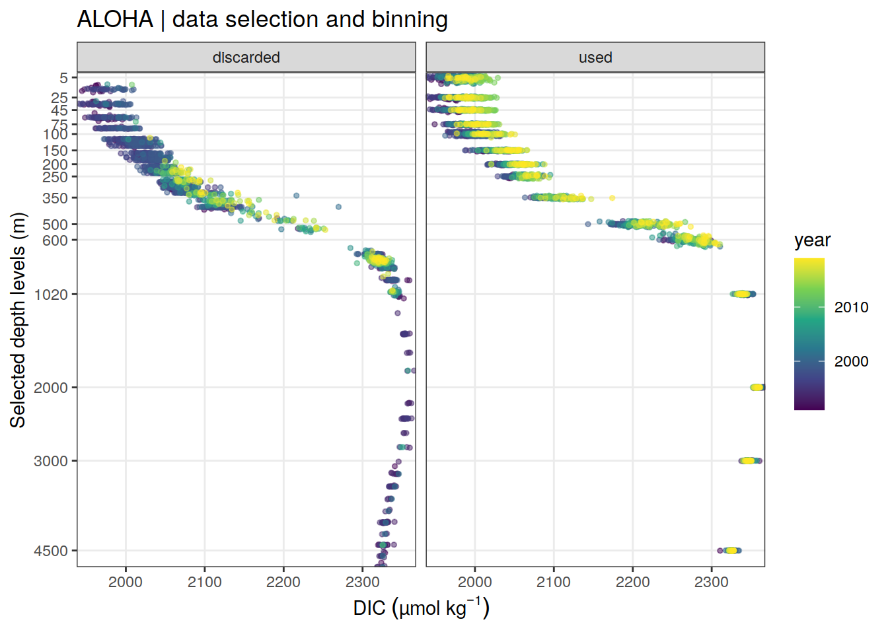
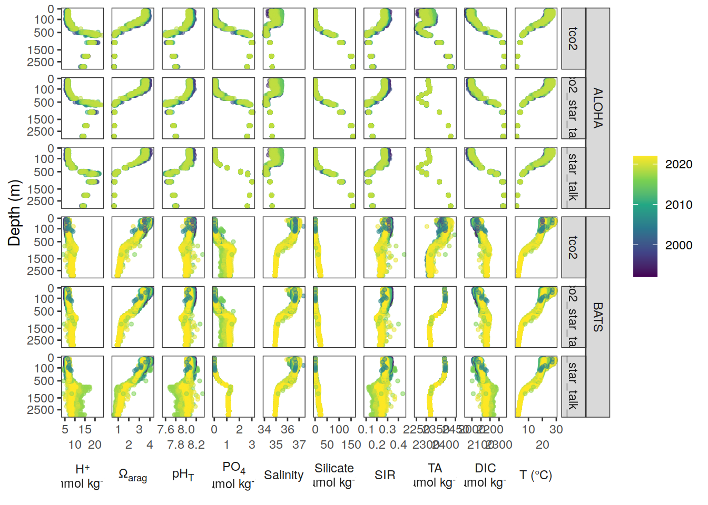
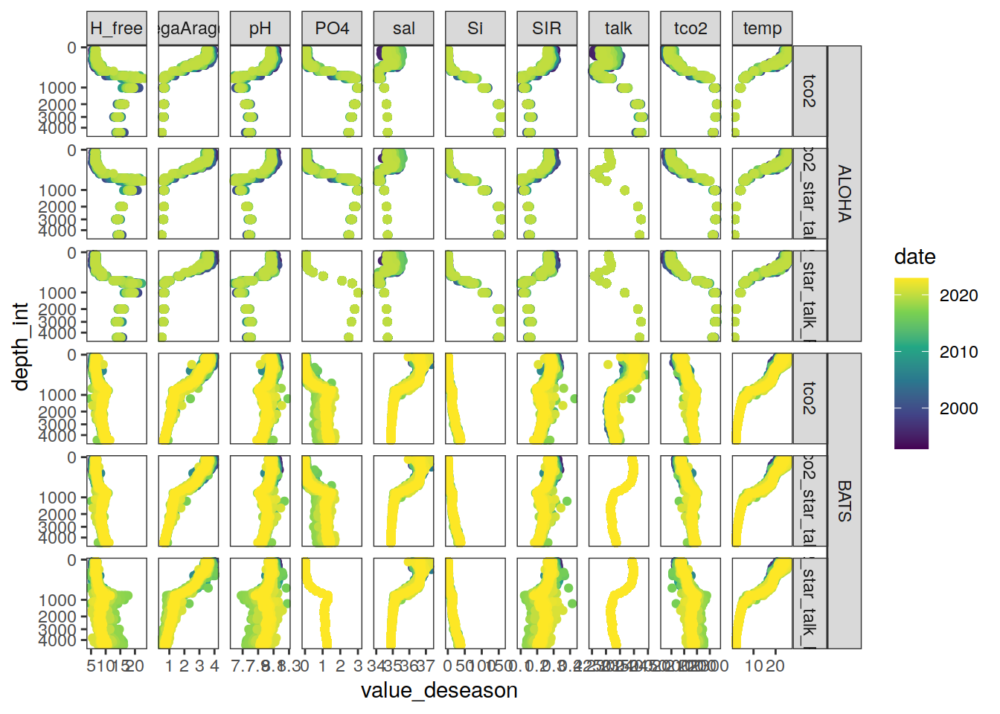
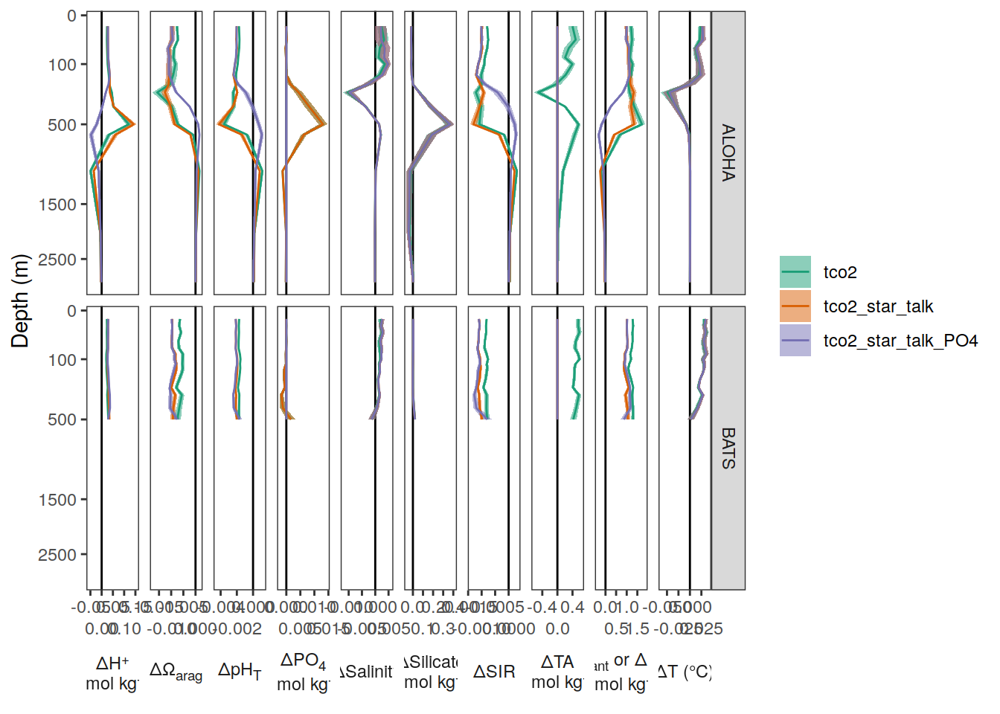
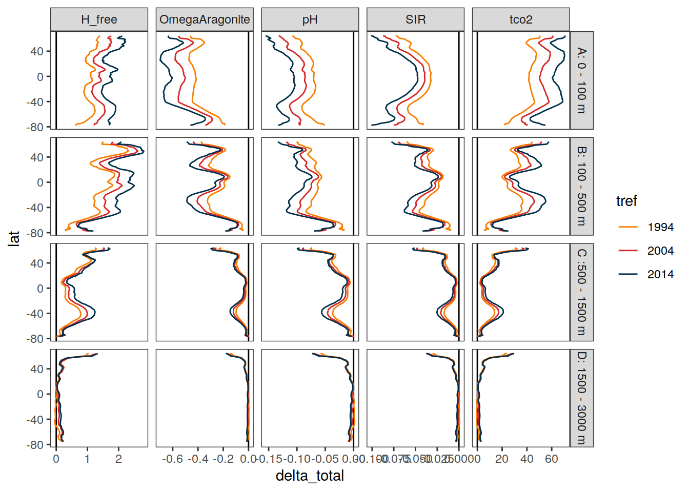
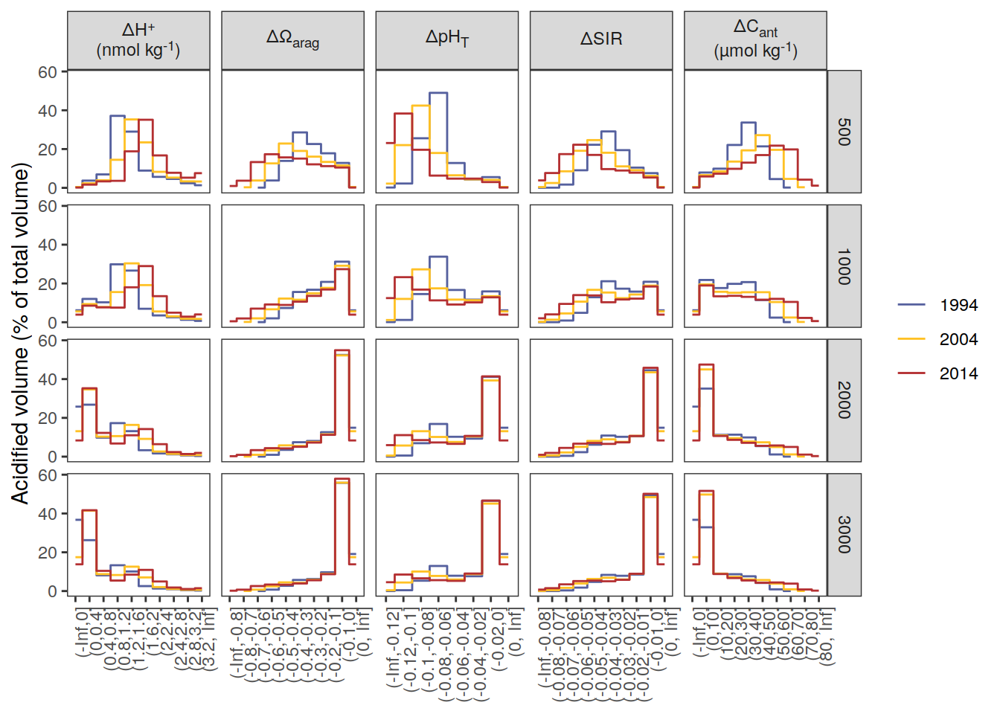
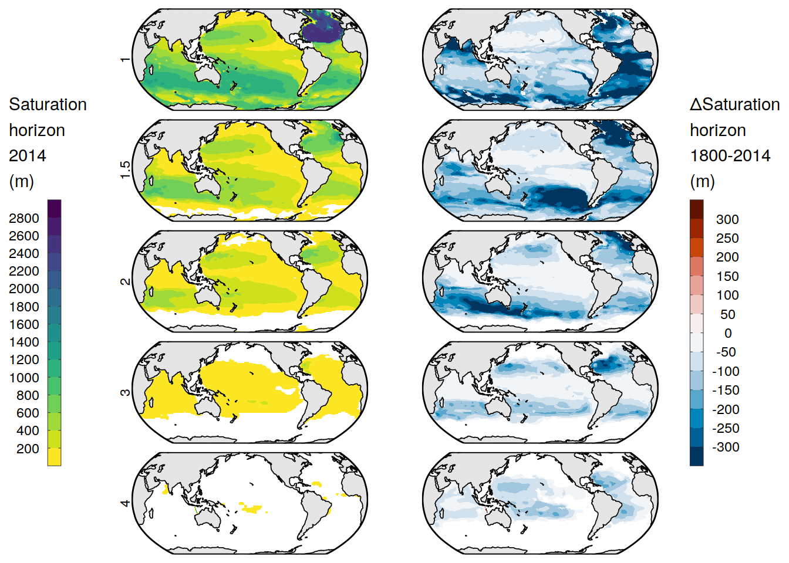
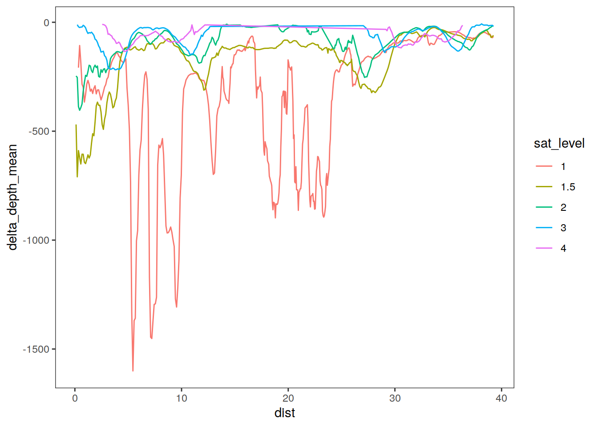
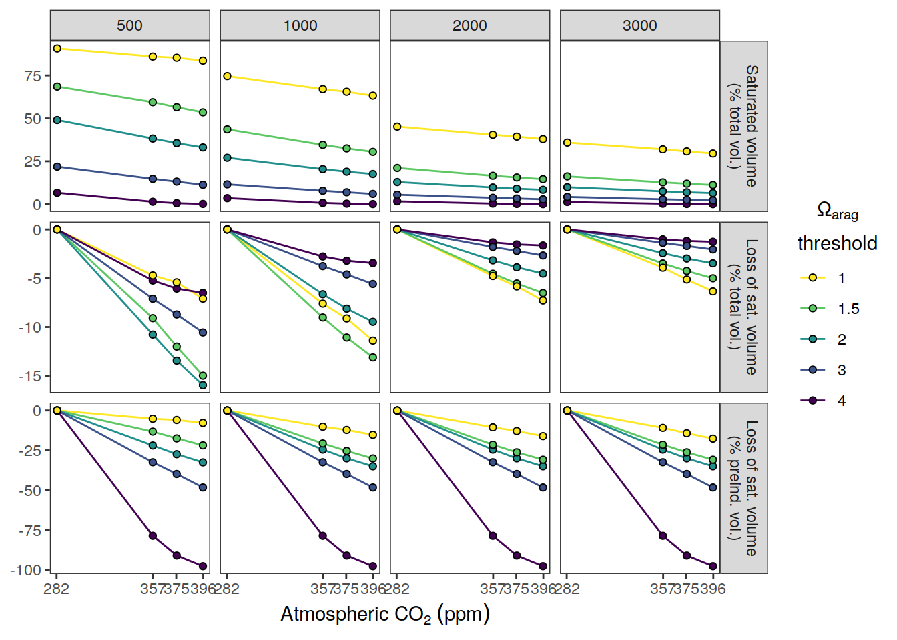
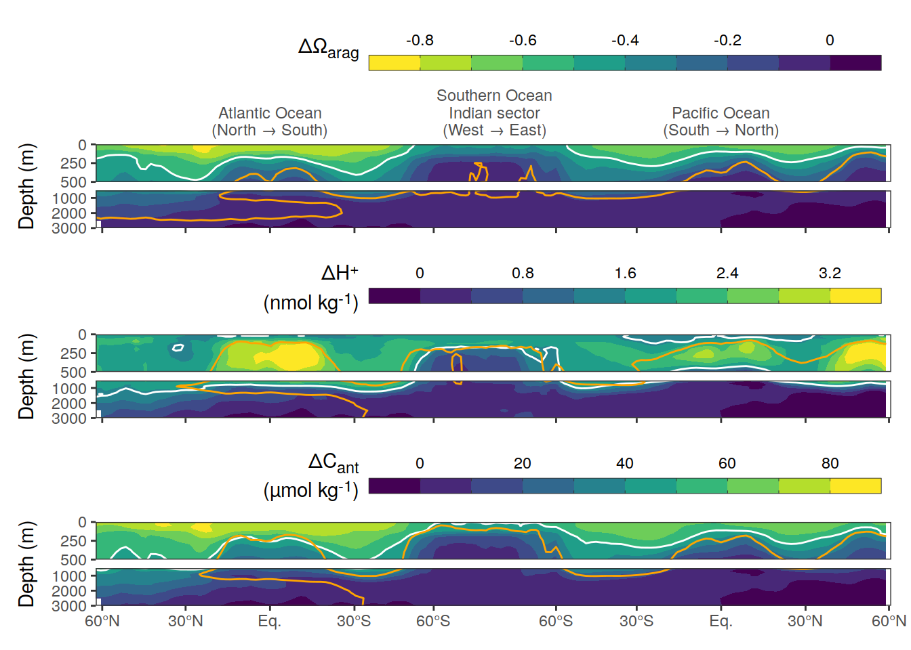

OIA Averaging
Jens Daniel Müller
18 July, 2023
Last updated: 2023-07-18
Checks: 7 0
Knit directory:
ocean_interior_acidification/
This reproducible R Markdown analysis was created with workflowr (version 1.7.0). The Checks tab describes the reproducibility checks that were applied when the results were created. The Past versions tab lists the development history.
Great! Since the R Markdown file has been committed to the Git repository, you know the exact version of the code that produced these results.
Great job! The global environment was empty. Objects defined in the global environment can affect the analysis in your R Markdown file in unknown ways. For reproduciblity it’s best to always run the code in an empty environment.
The command set.seed(20230202) was run prior to running
the code in the R Markdown file. Setting a seed ensures that any results
that rely on randomness, e.g. subsampling or permutations, are
reproducible.
Great job! Recording the operating system, R version, and package versions is critical for reproducibility.
Nice! There were no cached chunks for this analysis, so you can be confident that you successfully produced the results during this run.
Great job! Using relative paths to the files within your workflowr project makes it easier to run your code on other machines.
Great! You are using Git for version control. Tracking code development and connecting the code version to the results is critical for reproducibility.
The results in this page were generated with repository version 92627cf. See the Past versions tab to see a history of the changes made to the R Markdown and HTML files.
Note that you need to be careful to ensure that all relevant files for
the analysis have been committed to Git prior to generating the results
(you can use wflow_publish or
wflow_git_commit). workflowr only checks the R Markdown
file, but you know if there are other scripts or data files that it
depends on. Below is the status of the Git repository when the results
were generated:
Ignored files:
Ignored: .Rhistory
Ignored: .Rproj.user/
Ignored: output/
Untracked files:
Untracked: code/Workflowr_project_managment.R
Untracked: code/start_job.R
Unstaged changes:
Modified: analysis/compute_OIA.Rmd
Note that any generated files, e.g. HTML, png, CSS, etc., are not included in this status report because it is ok for generated content to have uncommitted changes.
These are the previous versions of the repository in which changes were
made to the R Markdown (analysis/average_OIA.Rmd) and HTML
(docs/average_OIA.html) files. If you’ve configured a
remote Git repository (see ?wflow_git_remote), click on the
hyperlinks in the table below to view the files as they were in that
past version.
| File | Version | Author | Date | Message |
|---|---|---|---|---|
| Rmd | 92627cf | jens-daniel-mueller | 2023-07-18 | created aragonite saturation horizon maps |
| html | f89feea | jens-daniel-mueller | 2023-07-18 | Build site. |
| Rmd | dedf5a3 | jens-daniel-mueller | 2023-07-18 | created combined global sections and volume changes |
| html | f08e132 | jens-daniel-mueller | 2023-07-17 | Build site. |
| Rmd | e5911f4 | jens-daniel-mueller | 2023-07-17 | new longhurst biomes and maps + trends created |
| html | 36e17cd | jens-daniel-mueller | 2023-07-12 | Build site. |
| Rmd | e0d6956 | jens-daniel-mueller | 2023-07-12 | figures published for presentation |
| html | 6b65156 | jens-daniel-mueller | 2023-07-12 | Build site. |
| Rmd | c4e52bd | jens-daniel-mueller | 2023-07-12 | included binned volume OA analysis |
| html | 063de87 | jens-daniel-mueller | 2023-07-11 | Build site. |
| Rmd | 0e6334b | jens-daniel-mueller | 2023-07-11 | corrected volume analysis, added volume distributions, renewed biome mask |
| html | 662e289 | jens-daniel-mueller | 2023-07-10 | Build site. |
| Rmd | 7293012 | jens-daniel-mueller | 2023-07-10 | obs-based trend uncertainty revised |
| html | fa664c1 | jens-daniel-mueller | 2023-07-10 | Build site. |
| Rmd | 235e7b2 | jens-daniel-mueller | 2023-07-10 | obs-based trend uncertainty revised |
| html | 944b43a | jens-daniel-mueller | 2023-07-10 | Build site. |
| Rmd | 5b53df9 | jens-daniel-mueller | 2023-07-10 | obs-based trend uncertainty revised |
| html | b8cf02c | jens-daniel-mueller | 2023-07-05 | Build site. |
| Rmd | fc25b24 | jens-daniel-mueller | 2023-07-05 | obs-based trend uncertainty added |
| html | d7e1ef7 | jens-daniel-mueller | 2023-07-05 | Build site. |
| Rmd | 567c7cb | jens-daniel-mueller | 2023-07-05 | time series reconstruction comparison finalized |
| html | 71c609f | jens-daniel-mueller | 2023-07-03 | Build site. |
| Rmd | 1e5e84e | jens-daniel-mueller | 2023-07-03 | time series reconstruction comparison added |
| html | 74e28a8 | jens-daniel-mueller | 2023-06-28 | Build site. |
| Rmd | 8359e8b | jens-daniel-mueller | 2023-06-28 | updated time series station analysis |
| html | 17aa4ff | jens-daniel-mueller | 2023-06-20 | Build site. |
| Rmd | aa37f6a | jens-daniel-mueller | 2023-06-20 | updated time series station analysis |
| html | 9334fe6 | jens-daniel-mueller | 2023-06-19 | Build site. |
| Rmd | b7f2457 | jens-daniel-mueller | 2023-06-19 | started time series station analysis |
| html | c75b30c | jens-daniel-mueller | 2023-06-13 | Build site. |
| Rmd | 212ca9d | jens-daniel-mueller | 2023-06-13 | updated saturation horizon plots |
| html | 7d2701f | jens-daniel-mueller | 2023-06-13 | Build site. |
| Rmd | b796877 | jens-daniel-mueller | 2023-06-13 | included additional summary analysis |
| html | e421701 | jens-daniel-mueller | 2023-06-08 | Build site. |
| Rmd | 0456f94 | jens-daniel-mueller | 2023-06-08 | updated Cnat profiles |
| html | 6abee6c | jens-daniel-mueller | 2023-06-07 | Build site. |
| Rmd | 4db8941 | jens-daniel-mueller | 2023-06-07 | all figures updated for publication |
| html | a8376b4 | jens-daniel-mueller | 2023-06-06 | Build site. |
| Rmd | 620dc78 | jens-daniel-mueller | 2023-06-06 | acidifcation volume analysis completed |
| html | be8e556 | jens-daniel-mueller | 2023-06-05 | Build site. |
| Rmd | 6a5c0a6 | jens-daniel-mueller | 2023-06-05 | acidifcation volume analysis started |
| html | af60720 | jens-daniel-mueller | 2023-06-05 | Build site. |
| Rmd | 0c9d1a0 | jens-daniel-mueller | 2023-06-05 | revised total change figures |
| html | a7ade96 | jens-daniel-mueller | 2023-05-11 | Build site. |
| Rmd | efc13d8 | jens-daniel-mueller | 2023-05-11 | updated total change maps |
| html | 13d0fdc | jens-daniel-mueller | 2023-05-10 | Build site. |
| Rmd | afcac03 | jens-daniel-mueller | 2023-05-10 | created succesive change maps |
| html | ac561a4 | jens-daniel-mueller | 2023-03-16 | Build site. |
| Rmd | bbf8eb3 | jens-daniel-mueller | 2023-03-16 | included OIA sensitivity analysis |
| html | 49bf7b2 | jens-daniel-mueller | 2023-03-16 | Build site. |
| Rmd | f80b0df | jens-daniel-mueller | 2023-03-16 | biome analysis updated |
| html | f8d1f8c | jens-daniel-mueller | 2023-03-14 | Build site. |
| Rmd | e3738e2 | jens-daniel-mueller | 2023-03-14 | biome analysis implemented |
| html | 099a824 | jens-daniel-mueller | 2023-03-13 | Build site. |
| Rmd | 03aac61 | jens-daniel-mueller | 2023-03-13 | selected OIA variables |
| html | ba34d33 | jens-daniel-mueller | 2023-03-13 | Build site. |
| Rmd | 3bebfa0 | jens-daniel-mueller | 2023-03-13 | added surface DIC estimates, and sensitivity studies |
| html | b5fc277 | jens-daniel-mueller | 2023-03-09 | Build site. |
| Rmd | 9900bf4 | jens-daniel-mueller | 2023-03-09 | revised saturation volume analysis |
| html | 2facf75 | jens-daniel-mueller | 2023-03-06 | Build site. |
| Rmd | f010b0c | jens-daniel-mueller | 2023-03-06 | revised saturation analysis |
| html | 472013b | jens-daniel-mueller | 2023-03-03 | Build site. |
| Rmd | eaa3123 | jens-daniel-mueller | 2023-03-03 | updated DIC and DIC+temp plots |
| html | a27c5de | jens-daniel-mueller | 2023-03-01 | Build site. |
| Rmd | 6ff02c8 | jens-daniel-mueller | 2023-03-01 | included DIC MOBO-DIC assesment |
| html | 1da16cd | jens-daniel-mueller | 2023-02-28 | Build site. |
| html | 5347ac4 | jens-daniel-mueller | 2023-02-28 | Build site. |
| Rmd | ad843b3 | jens-daniel-mueller | 2023-02-28 | plot buffer changes |
| html | d09292e | jens-daniel-mueller | 2023-02-27 | Build site. |
| Rmd | b2d7cd7 | jens-daniel-mueller | 2023-02-27 | plot temperature impact |
| html | eaf95ed | jens-daniel-mueller | 2023-02-23 | Build site. |
| Rmd | cdf77c4 | jens-daniel-mueller | 2023-02-22 | run without negative Cant |
| html | 7ea12c9 | jens-daniel-mueller | 2023-02-22 | Build site. |
| Rmd | 426d39f | jens-daniel-mueller | 2023-02-22 | calculated saturated volume |
| html | 6b0b7d8 | jens-daniel-mueller | 2023-02-21 | Build site. |
| Rmd | f9c3594 | jens-daniel-mueller | 2023-02-21 | included saturation hoorizon analysis |
| html | fe2598c | jens-daniel-mueller | 2023-02-20 | Build site. |
| Rmd | 24e9929 | jens-daniel-mueller | 2023-02-20 | included depth layer maps |
| html | 2593640 | jens-daniel-mueller | 2023-02-20 | Build site. |
| Rmd | b5b0a14 | jens-daniel-mueller | 2023-02-20 | included depth layer maps |
| html | 7316de4 | jens-daniel-mueller | 2023-02-20 | Build site. |
| Rmd | 99119c4 | jens-daniel-mueller | 2023-02-20 | harmonized output and uncertainty assesment for profiles and sections |
| html | 47b5008 | jens-daniel-mueller | 2023-02-17 | Build site. |
| Rmd | 87e8745 | jens-daniel-mueller | 2023-02-17 | global sections for total changes and absolute state |
| html | 4bc95a0 | jens-daniel-mueller | 2023-02-17 | Build site. |
| Rmd | 3831897 | jens-daniel-mueller | 2023-02-17 | global sections and uncertainty estimation added |
| html | 695a7e0 | jens-daniel-mueller | 2023-02-16 | Build site. |
| Rmd | 8665293 | jens-daniel-mueller | 2023-02-16 | zonal mean sections and uncertainty estimation added |
| html | db714d8 | jens-daniel-mueller | 2023-02-16 | Build site. |
| Rmd | 680eeb8 | jens-daniel-mueller | 2023-02-15 | calculated OIA for all cases |
center <- -160
boundary <- center + 180
target_crs <- paste0("+proj=robin +over +lon_0=", center)
# target_crs <- paste0("+proj=eqearth +over +lon_0=", center)
# target_crs <- paste0("+proj=eqearth +lon_0=", center)
# target_crs <- paste0("+proj=igh_o +lon_0=", center)
worldmap <- ne_countries(scale = 'small',
type = 'map_units',
returnclass = 'sf')
worldmap <- worldmap %>% st_break_antimeridian(lon_0 = center)
worldmap_trans <- st_transform(worldmap, crs = target_crs)
ggplot() +
geom_sf(data = worldmap_trans)
fig.path you set was
ignored by workflowr.
coastline <- ne_coastline(scale = 'small', returnclass = "sf")
coastline <- st_break_antimeridian(coastline, lon_0 = 200)
coastline_trans <- st_transform(coastline, crs = target_crs)
# ggplot() +
# geom_sf(data = worldmap_trans, fill = "grey", col="grey") +
# geom_sf(data = coastline_trans)
bbox <- st_bbox(c(xmin = -180, xmax = 180, ymax = 65, ymin = -78), crs = st_crs(4326))
bbox <- st_as_sfc(bbox)
bbox_trans <- st_break_antimeridian(bbox, lon_0 = center)
bbox_graticules <- st_graticule(
x = bbox_trans,
crs = st_crs(bbox_trans),
datum = st_crs(bbox_trans),
lon = c(20, 20.001),
lat = c(-78,65),
ndiscr = 1e3,
margin = 0.001
)
bbox_graticules_trans <- st_transform(bbox_graticules, crs = target_crs)
rm(worldmap, coastline, bbox, bbox_trans)
# ggplot() +
# geom_sf(data = worldmap_trans, fill = "grey", col="grey") +
# geom_sf(data = coastline_trans) +
# geom_sf(data = bbox_graticules_trans)
lat_lim <- ext(bbox_graticules_trans)[c(3,4)]*1.002
lon_lim <- ext(bbox_graticules_trans)[c(1,2)]*1.005
# ggplot() +
# geom_sf(data = worldmap_trans, fill = "grey90", col = "grey90") +
# geom_sf(data = coastline_trans) +
# geom_sf(data = bbox_graticules_trans, linewidth = 1) +
# coord_sf(crs = target_crs,
# ylim = lat_lim,
# xlim = lon_lim,
# expand = FALSE) +
# theme(
# panel.border = element_blank(),
# axis.text = element_blank(),
# axis.ticks = element_blank()
# )
latitude_graticules <- st_graticule(
x = bbox_graticules,
crs = st_crs(bbox_graticules),
datum = st_crs(bbox_graticules),
lon = c(20, 20.001),
lat = c(-60,-30,0,30,60),
ndiscr = 1e3,
margin = 0.001
)
latitude_graticules_trans <- st_transform(latitude_graticules, crs = target_crs)
latitude_labels <- data.frame(lat_label = c("60°N","30°N","Eq.","30°S","60°S"),
lat = c(60,30,0,-30,-60)-4, lon = c(35)-c(0,2,4,2,0))
latitude_labels <- st_as_sf(x = latitude_labels,
coords = c("lon", "lat"),
crs = "+proj=longlat")
latitude_labels_trans <- st_transform(latitude_labels, crs = target_crs)
# ggplot() +
# geom_sf(data = worldmap_trans, fill = "grey", col = "grey") +
# geom_sf(data = coastline_trans) +
# geom_sf(data = bbox_graticules_trans) +
# geom_sf(data = latitude_graticules_trans,
# col = "grey60",
# linewidth = 0.2) +
# geom_sf_text(data = latitude_labels_trans,
# aes(label = lat_label),
# size = 3,
# col = "grey60")Libraries
Define labels and breaks
labels_breaks <- function(i_var) {
if (i_var == "tco2") {
i_breaks <- c(-Inf, seq(0, 80, 10), Inf)
i_contour_level <- 50
i_legend_title <- "ΔC<sub>ant</sub><br>(µmol kg<sup>-1</sup>)"
}
if (i_var == "pH") {
i_breaks <- c(-Inf, seq(-0.12, 0, 0.02), Inf)
i_contour_level <- -0.08
i_legend_title <- "ΔpH<sub>T</sub>"
}
if (i_var == "OmegaAragonite") {
i_breaks <- c(-Inf, seq(-0.8, 0, 0.1), Inf)
i_contour_level <- -0.5
i_legend_title <- "ΔΩ<sub>arag</sub>"
}
if (i_var == "SIR") {
i_breaks <- c(-Inf, seq(-0.08, 0, 0.01), Inf)
i_contour_level <- -0.05
i_legend_title <- "ΔSIR"
}
if (i_var == "H_free") {
i_breaks <- c(-Inf, seq(0, 3, 0.5), Inf)
i_contour_level <- 1.5
i_legend_title <-
"ΔH<sup>+</sup><sub>free</sub><br>(nmol kg<sup>-1</sup>)"
}
if (i_var == "temp") {
i_breaks <- c(-Inf, seq(-0.6, 0, 0.2), seq(0.2, 0.6, 0.2), Inf)
i_contour_level <- 0
i_legend_title <-
"ΔT (°C)"
}
all_labels_breaks <- lst(i_breaks,
i_contour_level,
i_legend_title)
return(all_labels_breaks)
}
x_axis_scales <-
list(
variable == "tco2" ~ scale_x_continuous(breaks = labels_breaks("tco2")$i_breaks[c(TRUE, FALSE)]),
variable == "pH" ~ scale_x_continuous(breaks = labels_breaks("pH")$i_breaks[c(TRUE, FALSE)]),
variable == "OmegaAragonite" ~ scale_x_continuous(breaks = labels_breaks("OmegaAragonite")$i_breaks[c(TRUE, FALSE)]),
variable == "SIR" ~ scale_x_continuous(breaks = labels_breaks("SIR")$i_breaks[c(TRUE, FALSE)]),
variable == "H_free" ~ scale_x_continuous(breaks = labels_breaks("H_free")$i_breaks[c(TRUE, FALSE)]),
variable == "temp" ~ scale_x_continuous(breaks = labels_breaks("temp")$i_breaks[c(TRUE, FALSE)])
)
x_axis_labels <-
c(
"tco2" = labels_breaks("tco2")$i_legend_title,
"pH" = labels_breaks("pH")$i_legend_title,
"OmegaAragonite" = labels_breaks("OmegaAragonite")$i_legend_title,
"SIR" = labels_breaks("SIR")$i_legend_title,
"H_free" = labels_breaks("H_free")$i_legend_title,
"temp" = labels_breaks("temp")$i_legend_title
)
contours <-
tibble(
contour =
c(
labels_breaks("tco2")$i_contour_level,
labels_breaks("pH")$i_contour_level,
labels_breaks("OmegaAragonite")$i_contour_level,
labels_breaks("SIR")$i_contour_level,
labels_breaks("H_free")$i_contour_level,
labels_breaks("temp")$i_contour_level
),
variable =
c("tco2",
"pH",
"OmegaAragonite",
"SIR",
"H_free",
"temp")
)x_axis_labels_stations <-
c(
x_axis_labels[2:6],
"pHstar" = "ΔpH<sub>T</sub>*",
"OmegaAragonitestar" = "ΔΩ<sub>arag</sub>*",
"SIRstar" = "ΔSIR*",
"H_freestar" = "ΔH<sup>+</sup><sub>free</sub>*<br>(nmol kg<sup>-1</sup>)",
"tco2" = "ΔC<sub>ant</sub> or ΔDIC<br>(µmol kg<sup>-1</sup>)",
"tco2star" = "ΔC<sub>ant</sub> or ΔDIC*<br>(µmol kg<sup>-1</sup>)",
"PO4" = "ΔPO<sub>4</sub><br>(µmol kg<sup>-1</sup>)",
"sal" = "ΔSalinity",
"Si" = "ΔSilicate<br>(µmol kg<sup>-1</sup>)",
"talk" = "ΔTA<br>(µmol kg<sup>-1</sup>)"
)
x_axis_labels_stations_absolute <-
c(
"pH" = "pH<sub>T</sub>",
"pHstar" = "pH<sub>T</sub>*",
"OmegaAragonite" = "Ω<sub>arag</sub>",
"OmegaAragonitestar" = "Ω<sub>arag</sub>*",
"SIR" = "SIR",
"SIRstar" = "SIR*",
"H_free" = "H<sup>+</sup><sub>free</sub><br>(nmol kg<sup>-1</sup>)",
"H_freestar" = "H<sup>+</sup><sub>free</sub>*<br>(nmol kg<sup>-1</sup>)",
"temp" = "T (°C)",
"tco2" = "DIC<br>(µmol kg<sup>-1</sup>)",
"tco2star" = "DIC*<br>(µmol kg<sup>-1</sup>)",
"PO4" = "PO<sub>4</sub><br>(µmol kg<sup>-1</sup>)",
"sal" = "Salinity",
"Si" = "Silicate<br>(µmol kg<sup>-1</sup>)",
"talk" = "TA<br>(µmol kg<sup>-1</sup>)"
)labels_breaks_buffer_variables_addition <- function(i_var) {
if (i_var == "pH") {
i_breaks <- c(-Inf, seq(-0.0033, -0.0015, 0.0003), Inf)
i_contour_level <- -0.0027
i_legend_title <- "ΔpH<sub>T</sub>/ΔDIC<br>(/ µmol kg<sup>-1</sup>)"
}
if (i_var == "OmegaAragonite") {
i_breaks <- c(-Inf, seq(-0.011, -0.005, 0.001), Inf)
i_contour_level <- -0.007
i_legend_title <-
"ΔΩ<sub>arag</sub>/ΔDIC<br>(/ µmol kg<sup>-1</sup>)"
}
if (i_var == "SIR") {
i_breaks <- c(-Inf, seq(-0.0017, -0.0007, 0.0002), Inf)
i_contour_level <- -0.0009
i_legend_title <- "ΔSIR/ΔDIC<br>(/ µmol kg<sup>-1</sup>)"
}
if (i_var == "H_free") {
i_breaks <- c(-Inf, seq(-4.3, -1, 0.55), Inf)
i_contour_level <- -3.2
i_legend_title <-
"ΔH<sup>+</sup><sub>free</sub>/ΔDIC<br>(nmol kg<sup>-1</sup> / µmol kg<sup>-1</sup>)"
}
all_labels_breaks <- lst(i_breaks,
i_contour_level,
i_legend_title)
return(all_labels_breaks)
}
x_axis_scales_buffer_variables_addition <-
list(
variable == "pH" ~ scale_x_continuous(breaks = labels_breaks_buffer_variables_addition("pH")$i_breaks[c(TRUE, FALSE)]),
variable == "OmegaAragonite" ~ scale_x_continuous(breaks = labels_breaks_buffer_variables_addition("OmegaAragonite")$i_breaks[c(TRUE, FALSE)]),
variable == "SIR" ~ scale_x_continuous(breaks = labels_breaks_buffer_variables_addition("SIR")$i_breaks[c(TRUE, FALSE)]),
variable == "H_free" ~ scale_x_continuous(breaks = labels_breaks_buffer_variables_addition("H_free")$i_breaks[c(TRUE, FALSE)])
)
x_axis_labels_buffer_variables_addition <-
c(
"pH" = labels_breaks_buffer_variables_addition("pH")$i_legend_title,
"OmegaAragonite" = labels_breaks_buffer_variables_addition("OmegaAragonite")$i_legend_title,
"SIR" = labels_breaks_buffer_variables_addition("SIR")$i_legend_title,
"H_free" = labels_breaks_buffer_variables_addition("H_free")$i_legend_title
)
contours_buffer_variables_addition <-
tibble(
contour =
c(
labels_breaks_buffer_variables_addition("pH")$i_contour_level,
labels_breaks_buffer_variables_addition("OmegaAragonite")$i_contour_level,
labels_breaks_buffer_variables_addition("SIR")$i_contour_level,
labels_breaks_buffer_variables_addition("H_free")$i_contour_level
),
variable =
c("pH",
"OmegaAragonite",
"SIR",
"H_free")
)labels_breaks_buffer_variables_addition_change <- function(i_var) {
if (i_var == "pH") {
i_breaks <- c(-Inf, seq(0, 8, 2), Inf)
i_contour_level <- 4
i_legend_title <- "Δ<sub>1900-2004</sub><br>ΔpH<sub>T</sub>/ΔDIC<br>(%)"
}
if (i_var == "OmegaAragonite") {
i_breaks <- c(-Inf, seq(0,5,1), Inf)
i_contour_level <- 2
i_legend_title <-
"Δ<sub>1900-2004</sub><br>ΔΩ<sub>arag</sub>/ΔDIC<br>(%)"
}
if (i_var == "SIR") {
i_breaks <- c(-Inf, seq(0,5,1), Inf)
i_contour_level <- 2
i_legend_title <- "Δ<sub>1900-2004</sub><br>ΔSIR/ΔDIC<br>(%)"
}
if (i_var == "H_free") {
i_breaks <- c(-Inf, seq(0,25,5), Inf)
i_contour_level <- 10
i_legend_title <-
"Δ<sub>1900-2004</sub><br>ΔH<sup>+</sup><sub>free</sub>/ΔDIC<br>(%)"
}
all_labels_breaks <- lst(i_breaks,
i_contour_level,
i_legend_title)
return(all_labels_breaks)
}
#
# x_axis_scales_buffer_variables_addition <-
# list(
# variable == "pH" ~ scale_x_continuous(breaks = labels_breaks_buffer_variables_addition("pH")$i_breaks[c(TRUE, FALSE)]),
# variable == "OmegaAragonite" ~ scale_x_continuous(breaks = labels_breaks_buffer_variables_addition("OmegaAragonite")$i_breaks[c(TRUE, FALSE)]),
# variable == "SIR" ~ scale_x_continuous(breaks = labels_breaks_buffer_variables_addition("SIR")$i_breaks[c(TRUE, FALSE)]),
# variable == "H_free" ~ scale_x_continuous(breaks = labels_breaks_buffer_variables_addition("H_free")$i_breaks[c(TRUE, FALSE)])
# )
#
# x_axis_labels_buffer_variables_addition <-
# c(
# "pH" = labels_breaks_buffer_variables_addition("pH")$i_legend_title,
# "OmegaAragonite" = labels_breaks_buffer_variables_addition("OmegaAragonite")$i_legend_title,
# "SIR" = labels_breaks_buffer_variables_addition("SIR")$i_legend_title,
# "H_free" = labels_breaks_buffer_variables_addition("H_free")$i_legend_title
# )
#
#
# contours_buffer_variables_addition <-
# tibble(
# contour =
# c(
# labels_breaks_buffer_variables_addition("pH")$i_contour_level,
# labels_breaks_buffer_variables_addition("OmegaAragonite")$i_contour_level,
# labels_breaks_buffer_variables_addition("SIR")$i_contour_level,
# labels_breaks_buffer_variables_addition("H_free")$i_contour_level
# ),
# variable =
# c("pH",
# "OmegaAragonite",
# "SIR",
# "H_free")
# )labels_breaks_buffer_variables <- function(i_var) {
if (i_var == "gammaDIC") {
i_breaks <- c(-Inf, seq(0, 80, 10), Inf)
i_contour_level <- 50
i_legend_title <- "ΔC<sub>ant</sub><br>(µmol kg<sup>-1</sup>)"
}
if (i_var == "betaDIC") {
i_breaks <- c(-Inf, seq(-0.12, 0, 0.02), Inf)
i_contour_level <- -0.08
i_legend_title <- "ΔpH<sub>T</sub>"
}
if (i_var == "omegaDIC") {
i_breaks <- c(-Inf, seq(-0.8, 0, 0.1), Inf)
i_contour_level <- -0.5
i_legend_title <- "ΔΩ<sub>arag</sub>"
}
if (i_var == "R") {
i_breaks <- c(-Inf, seq(-0.08, 0, 0.01), Inf)
i_contour_level <- -0.05
i_legend_title <- "ΔSIR"
}
if (i_var == "tco2_talk_ratio") {
i_breaks <- c(-Inf, seq(0, 3, 0.5), Inf)
i_contour_level <- 2
i_legend_title <-
"ΔH<sup>+</sup><sub>free</sub><br>(nmol kg<sup>-1</sup>)"
}
all_labels_breaks <- lst(i_breaks,
i_contour_level,
i_legend_title)
return(all_labels_breaks)
}
x_axis_scales_buffer_variables <-
list(
variable == "tco2" ~ scale_x_continuous(breaks = labels_breaks("tco2")$i_breaks[c(TRUE, FALSE)]),
variable == "pH" ~ scale_x_continuous(breaks = labels_breaks("pH")$i_breaks[c(TRUE, FALSE)]),
variable == "OmegaAragonite" ~ scale_x_continuous(breaks = labels_breaks("OmegaAragonite")$i_breaks[c(TRUE, FALSE)]),
variable == "SIR" ~ scale_x_continuous(breaks = labels_breaks("SIR")$i_breaks[c(TRUE, FALSE)]),
variable == "H_free" ~ scale_x_continuous(breaks = labels_breaks("H_free")$i_breaks[c(TRUE, FALSE)])
)
x_axis_labels_buffer_variables <-
c(
"tco2" = labels_breaks("tco2")$i_legend_title,
"pH" = labels_breaks("pH")$i_legend_title,
"OmegaAragonite" = labels_breaks("OmegaAragonite")$i_legend_title,
"SIR" = labels_breaks("SIR")$i_legend_title,
"H_free" = labels_breaks("H_free")$i_legend_title,
"temp" = "ΔT (°C)"
)
contours_buffer_variables <-
tibble(
contour =
c(
labels_breaks("tco2")$i_contour_level,
labels_breaks("pH")$i_contour_level,
labels_breaks("OmegaAragonite")$i_contour_level,
labels_breaks("SIR")$i_contour_level,
labels_breaks("H_free")$i_contour_level
),
variable =
c("tco2",
"pH",
"OmegaAragonite",
"SIR",
"H_free")
)Read data
# only path_observations needs to be changed to model
path_observations <-
paste0(path_root, "/observations/")
path_preprocessing <-
paste0(path_observations, "preprocessing/")
path_preprocessing_model <-
paste0(path_root, "/model/preprocessing/")
path_reccap2 <-
"/nfs/kryo/work/updata/reccap2/"
path_ungrd_3d_ocn <- "/nfs/kryo/work/datasets/ungridded/interior/ocean"
path_out <- paste0(path_observations, "output_publication/")
path_OIA <- "/nfs/kryo/work/jenmueller/ocean_interior_acidification/"Basinmask
basinmask <- basinmask %>%
filter(MLR_basins == "5") %>%
select(lon, lat, basin)
basinmask <- basinmask %>%
mutate(
basin = str_replace(basin,
"_",
". "),
basin = fct_relevel(
basin,
"N. Pacific",
"N. Atlantic",
"Indian",
"S. Pacific",
"S. Atlantic"
)
)
basinmask_robin_raster <- rast(basinmask %>%
mutate(dist = 1) %>%
pivot_wider(names_from = basin,
values_from = dist),
crs = "+proj=longlat")
basinmask_robin_raster <- project(basinmask_robin_raster, target_crs, method = "near")
basinmask_robin_tibble <- basinmask_robin_raster %>%
as.data.frame(xy = TRUE, na.rm = FALSE) %>%
as_tibble() %>%
rename(lon = x, lat = y) %>%
pivot_longer(cols = -c("lon", "lat"),
names_to = "basin",
values_to = "dist") %>%
drop_na() %>%
mutate(basin = as.character(basin))
ggplot() +
geom_raster(
data = basinmask_robin_tibble,
aes(
x = lon,
y = lat,
fill = basin
)
) +
geom_sf(data = worldmap_trans, fill = "grey90", col = "grey90") +
geom_sf(data = coastline_trans, linewidth = 0.3) +
geom_sf(data = bbox_graticules_trans, linewidth = 0.5) +
coord_sf(
crs = target_crs,
ylim = lat_lim,
xlim = lon_lim,
expand = FALSE
) +
scale_fill_okabeito(reverse = TRUE) +
theme(
axis.title = element_blank(),
axis.text = element_blank(),
axis.ticks = element_blank(),
panel.border = element_rect(colour = "transparent"),
strip.background = element_blank()
)
| Version | Author | Date |
|---|---|---|
| 6abee6c | jens-daniel-mueller | 2023-06-07 |
ggsave(
here::here(
paste0(
"output/publication/map_basinmask.png"
)
),
width = 10,
height = 3,
dpi = 600,
bg = "white"
)
# compute grid cell surface area
basinmask <- basinmask %>%
mutate(area = earth_surf(lat, lon))Biomemask
Longhurst
longhurst <- read_sf(here::here("data/Longhurst_world_v4_2010.shp"))
longhurst %>%
ggplot() +
geom_sf(fill = "transparent")
| Version | Author | Date |
|---|---|---|
| f08e132 | jens-daniel-mueller | 2023-07-17 |
longhurst_biome <-
st_drop_geometry(longhurst) %>%
mutate(
type = str_split(ProvDescr, " - ", simplify = TRUE)[, 1],
ProvDescr = str_split(ProvDescr, " - ", simplify = TRUE)[, 2],
ID = row_number(),
biome = case_when(
ProvCode %in%
c(
"PNEC",
"PEQD",
"CCAL",
"CHIL",
"CAMR",
"WTRA",
"ETRA",
"CNRY",
"GUIN",
"BENG",
"MONS",
"ARAB",
"INDW",
"INDE"
) ~ "Upwelling",
ProvCode %in% c("SANT", "ANTA", "APLR") ~ "Southern\nOcean",
ProvCode %in% c("ARCT","SARC","NADR","NECS", "BPLR") ~ "North\nAtlantic",
ProvCode %in% c("ALSK","PSAE","NPPF","BERS", "PSAW") ~ "North\nPacific",
TRUE ~ "Subtropical\nGyres"
)
)
longhurst_raster <-
st_rasterize(sf = longhurst,
dx = 1,
dy = 1) %>%
as.tibble() %>%
rename(lon = x, lat = y) %>%
mutate(lon = if_else(lon < 0, lon + 360, lon)) %>%
drop_na()
longhurst <-
full_join(longhurst_biome,
longhurst_raster)
longhurst %>%
ggplot(aes(lon, lat, fill = biome)) +
geom_tile()
| Version | Author | Date |
|---|---|---|
| f08e132 | jens-daniel-mueller | 2023-07-17 |
Fay
biomemask <-
read_ncdf(paste(path_reccap2, "RECCAP2_region_masks_all_v20220620.nc", sep = "")) %>%
as_tibble()
biomemask <- biomemask %>%
filter(seamask == 1) %>%
select(lon, lat, atlantic:southern) %>%
pivot_longer(atlantic:southern,
names_to = "region",
values_to = "value") %>%
mutate(value = as.factor(value))
biomemask <- biomemask %>%
filter(value != 0)
# assign biome label and select biomes
biomemask <- biomemask %>%
mutate(biome = case_when(
region == "atlantic" & value == "1" ~ "NA-SPSS",
region == "atlantic" & value == "2" ~ "NA-STSS",
region == "atlantic" & value == "3" ~ "NA-STPS",
region == "atlantic" & value == "4" ~ "AEQU",
region == "atlantic" & value == "5" ~ "SA-STPS",
region == "atlantic" & value == "6" ~ "MED",
region == "pacific" & value == "1" ~ "NP-SPSS",
region == "pacific" & value == "2" ~ "NP-STSS",
region == "pacific" & value == "3" ~ "NP-STPS",
region == "pacific" & value == "4" ~ "PEQU-W",
region == "pacific" & value == "5" ~ "PEQU-E",
region == "pacific" & value == "6" ~ "SP-STSS",
region == "indian" & value == "1" ~ "Arabian Sea",
region == "indian" & value == "2" ~ "Bay of Bengal",
region == "indian" & value == "3" ~ "Equatorial Indian",
region == "indian" & value == "4" ~ "Southern Indian",
region == "arctic" & value == "1" ~ "ARCTIC-ICE",
region == "arctic" & value == "2" ~ "NP-ICE",
region == "arctic" & value == "3" ~ "NA-ICE",
region == "arctic" & value == "4" ~ "Barents",
region == "southern" & value == "1" ~ "SO-STSS",
region == "southern" & value == "2" ~ "SO-SPSS",
region == "southern" & value == "3" ~ "SO-ICE",
TRUE ~ "other"
))
biomemask <- biomemask %>%
mutate(
biome_agg = case_when(
biome %in% c("NA-SPSS", "NA-STSS") ~ "North\nAtlantic",
biome %in% c("NP-SPSS", "NP-STSS") ~ "North\nPacific",
biome %in% c(
"NA-STPS",
"SA-STPS",
"NP-STPS",
"SP-STSS",
"PEQU-W",
"Equatorial Indian",
"Southern Indian",
"SO-STSS"
) ~ "Subtropical\ngyres",
biome %in% c("AEQU", "PEQU-E", "Arabian Sea", "Bay of Bengal") ~ "Equatorial\nregions",
biome %in% c("SO-SPSS", "SO-ICE") ~ "Southern\nOcean",
TRUE ~ "other"
)
) %>%
select(-biome) %>%
rename(biome = biome_agg)
biomemask <- biomemask %>%
filter(biome != "other") %>%
select(-c(value, region))
longhurst %>% pull(lon) [1] 180.5 181.5 182.5 183.5 184.5 185.5 186.5 187.5 188.5 189.5 190.5 191.5
[13] 192.5 193.5 194.5 195.5 196.5 197.5 198.5 199.5 200.5 201.5 202.5 203.5
[25] 204.5 205.5 206.5 207.5 208.5 209.5 210.5 211.5 212.5 213.5 214.5 215.5
[37] 216.5 217.5 218.5 219.5 220.5 221.5 222.5 223.5 224.5 225.5 226.5 227.5
[49] 228.5 229.5 230.5 231.5 232.5 233.5 234.5 235.5 236.5 237.5 238.5 239.5
[61] 240.5 241.5 242.5 243.5 244.5 245.5 246.5 247.5 248.5 249.5 250.5 251.5
[73] 252.5 253.5 254.5 255.5 256.5 257.5 258.5 259.5 260.5 261.5 262.5 263.5
[85] 264.5 265.5 266.5 267.5 268.5 269.5 270.5 271.5 272.5 273.5 274.5 275.5
[97] 276.5 277.5 278.5 279.5 280.5 281.5 282.5 283.5 284.5 285.5 286.5 287.5
[109] 288.5 289.5 290.5 291.5 292.5 293.5 294.5 295.5 296.5 297.5 298.5 299.5
[121] 300.5 301.5 302.5 303.5 304.5 305.5 306.5 307.5 308.5 309.5 310.5 311.5
[133] 312.5 313.5 314.5 315.5 316.5 317.5 318.5 319.5 320.5 321.5 322.5 323.5
[145] 324.5 325.5 326.5 327.5 328.5 329.5 330.5 331.5 332.5 333.5 334.5 335.5
[157] 336.5 337.5 338.5 339.5 340.5 341.5 342.5 343.5 344.5 345.5 346.5 347.5
[169] 348.5 349.5 350.5 351.5 352.5 353.5 354.5 355.5 356.5 357.5 358.5 359.5
[181] 0.5 1.5 2.5 3.5 4.5 5.5 6.5 7.5 8.5 9.5 10.5 11.5
[193] 12.5 13.5 14.5 15.5 16.5 17.5 18.5 19.5 20.5 21.5 22.5 23.5
[205] 24.5 25.5 26.5 27.5 28.5 29.5 30.5 31.5 32.5 33.5 34.5 35.5
[217] 36.5 37.5 38.5 39.5 40.5 41.5 42.5 43.5 44.5 45.5 46.5 47.5
[229] 48.5 49.5 50.5 51.5 52.5 53.5 54.5 55.5 56.5 57.5 58.5 59.5
[241] 60.5 61.5 62.5 63.5 64.5 65.5 66.5 67.5 68.5 69.5 70.5 71.5
[253] 72.5 73.5 74.5 75.5 76.5 77.5 78.5 79.5 80.5 81.5 82.5 83.5
[265] 84.5 85.5 86.5 87.5 88.5 89.5 90.5 91.5 92.5 93.5 94.5 95.5
[277] 96.5 97.5 98.5 99.5 100.5 101.5 102.5 103.5 104.5 105.5 106.5 107.5
[289] 108.5 109.5 110.5 111.5 112.5 113.5 114.5 115.5 116.5 117.5 118.5 119.5
[301] 120.5 121.5 122.5 123.5 124.5 125.5 126.5 127.5 128.5 129.5 130.5 131.5
[313] 132.5 133.5 134.5 135.5 136.5 137.5 138.5 139.5 140.5 141.5 142.5 143.5
[325] 144.5 145.5 146.5 147.5 148.5 149.5 150.5 151.5 152.5 153.5 154.5 155.5
[337] 156.5 157.5 158.5 159.5 160.5 161.5 162.5 163.5 164.5 165.5 166.5 167.5
[349] 168.5 169.5 170.5 171.5 172.5 173.5 174.5 175.5 176.5 177.5 178.5 179.5
[361] 180.5 181.5 182.5 183.5 184.5 185.5 186.5 187.5 188.5 189.5 190.5 191.5
[373] 192.5 193.5 194.5 195.5 196.5 197.5 198.5 199.5 200.5 201.5 202.5 203.5
[385] 204.5 205.5 206.5 207.5 208.5 209.5 210.5 211.5 212.5 213.5 214.5 215.5
[397] 216.5 217.5 218.5 219.5 220.5 221.5 222.5 223.5 224.5 225.5 226.5 227.5
[409] 228.5 229.5 230.5 231.5 232.5 233.5 234.5 235.5 236.5 237.5 238.5 239.5
[421] 240.5 241.5 242.5 243.5 244.5 245.5 246.5 247.5 248.5 249.5 250.5 251.5
[433] 252.5 253.5 254.5 255.5 256.5 257.5 258.5 259.5 260.5 261.5 262.5 263.5
[445] 264.5 265.5 266.5 267.5 268.5 269.5 270.5 271.5 272.5 273.5 274.5 275.5
[457] 276.5 277.5 278.5 279.5 280.5 281.5 282.5 283.5 284.5 285.5 286.5 287.5
[469] 288.5 289.5 290.5 291.5 292.5 293.5 294.5 295.5 296.5 297.5 298.5 299.5
[481] 300.5 301.5 302.5 303.5 304.5 305.5 306.5 307.5 308.5 309.5 310.5 311.5
[493] 312.5 313.5 314.5 315.5 316.5 317.5 318.5 319.5 320.5 321.5 322.5 323.5
[505] 324.5 325.5 326.5 327.5 328.5 329.5 330.5 331.5 332.5 333.5 334.5 335.5
[517] 336.5 337.5 338.5 339.5 340.5 341.5 342.5 343.5 344.5 345.5 346.5 347.5
[529] 348.5 349.5 350.5 351.5 352.5 353.5 354.5 355.5 356.5 357.5 358.5 359.5
[541] 0.5 1.5 2.5 3.5 4.5 5.5 6.5 7.5 8.5 9.5 10.5 11.5
[553] 12.5 13.5 14.5 15.5 16.5 17.5 18.5 19.5 20.5 21.5 22.5 23.5
[565] 24.5 25.5 26.5 27.5 28.5 29.5 30.5 31.5 32.5 33.5 34.5 35.5
[577] 36.5 37.5 38.5 39.5 40.5 41.5 42.5 43.5 44.5 45.5 46.5 47.5
[589] 48.5 49.5 50.5 51.5 52.5 53.5 54.5 55.5 56.5 57.5 58.5 59.5
[601] 60.5 61.5 62.5 63.5 64.5 65.5 66.5 67.5 68.5 69.5 70.5 71.5
[613] 72.5 73.5 74.5 75.5 76.5 77.5 78.5 79.5 80.5 81.5 82.5 83.5
[625] 84.5 85.5 86.5 87.5 88.5 89.5 90.5 91.5 92.5 93.5 94.5 95.5
[637] 96.5 97.5 98.5 99.5 100.5 101.5 102.5 103.5 104.5 105.5 106.5 107.5
[649] 108.5 109.5 110.5 111.5 112.5 113.5 114.5 115.5 116.5 117.5 118.5 119.5
[661] 120.5 121.5 122.5 123.5 124.5 125.5 126.5 127.5 128.5 129.5 130.5 131.5
[673] 132.5 133.5 134.5 135.5 136.5 137.5 138.5 139.5 140.5 141.5 142.5 143.5
[685] 144.5 145.5 146.5 147.5 148.5 149.5 150.5 151.5 152.5 153.5 154.5 155.5
[697] 156.5 157.5 158.5 159.5 160.5 161.5 162.5 163.5 164.5 165.5 166.5 167.5
[709] 168.5 169.5 170.5 171.5 172.5 173.5 174.5 175.5 176.5 177.5 178.5 179.5
[721] 180.5 181.5 182.5 183.5 184.5 185.5 186.5 187.5 188.5 189.5 190.5 191.5
[733] 192.5 193.5 194.5 195.5 196.5 197.5 198.5 199.5 200.5 201.5 202.5 203.5
[745] 204.5 205.5 206.5 207.5 208.5 209.5 210.5 211.5 212.5 213.5 214.5 215.5
[757] 216.5 217.5 218.5 219.5 220.5 221.5 222.5 223.5 224.5 225.5 226.5 227.5
[769] 228.5 229.5 230.5 231.5 232.5 233.5 234.5 235.5 236.5 237.5 238.5 239.5
[781] 240.5 241.5 242.5 243.5 244.5 245.5 246.5 247.5 248.5 249.5 250.5 251.5
[793] 252.5 253.5 254.5 255.5 256.5 257.5 258.5 259.5 260.5 261.5 262.5 263.5
[805] 264.5 265.5 266.5 267.5 268.5 269.5 270.5 271.5 272.5 273.5 274.5 275.5
[817] 276.5 277.5 278.5 279.5 280.5 281.5 282.5 283.5 284.5 285.5 286.5 287.5
[829] 288.5 289.5 290.5 291.5 292.5 293.5 294.5 295.5 296.5 297.5 298.5 299.5
[841] 300.5 301.5 302.5 303.5 304.5 305.5 306.5 307.5 308.5 309.5 310.5 311.5
[853] 312.5 313.5 314.5 315.5 316.5 317.5 318.5 319.5 320.5 321.5 322.5 323.5
[865] 324.5 325.5 326.5 327.5 328.5 329.5 330.5 331.5 332.5 333.5 334.5 335.5
[877] 336.5 337.5 338.5 339.5 340.5 341.5 342.5 343.5 344.5 345.5 346.5 347.5
[889] 348.5 349.5 350.5 351.5 352.5 353.5 354.5 355.5 356.5 357.5 358.5 359.5
[901] 0.5 1.5 2.5 3.5 4.5 5.5 6.5 7.5 8.5 9.5 10.5 11.5
[913] 12.5 13.5 14.5 15.5 16.5 17.5 18.5 19.5 20.5 21.5 22.5 23.5
[925] 24.5 25.5 26.5 27.5 28.5 29.5 30.5 31.5 32.5 33.5 34.5 35.5
[937] 36.5 37.5 38.5 39.5 40.5 41.5 42.5 43.5 44.5 45.5 46.5 47.5
[949] 48.5 49.5 50.5 51.5 52.5 53.5 54.5 55.5 56.5 57.5 58.5 59.5
[961] 60.5 61.5 62.5 63.5 64.5 65.5 66.5 67.5 68.5 69.5 70.5 71.5
[973] 72.5 73.5 74.5 75.5 76.5 77.5 78.5 79.5 80.5 81.5 82.5 83.5
[985] 84.5 85.5 86.5 87.5 88.5 89.5 90.5 91.5 92.5 93.5 94.5 95.5
[997] 96.5 97.5 98.5 99.5 100.5 101.5 102.5 103.5 104.5 105.5 106.5 107.5
[1009] 108.5 109.5 110.5 111.5 112.5 113.5 114.5 115.5 116.5 117.5 118.5 119.5
[1021] 120.5 121.5 122.5 123.5 124.5 125.5 126.5 127.5 128.5 129.5 130.5 131.5
[1033] 132.5 133.5 134.5 135.5 136.5 137.5 138.5 139.5 140.5 141.5 142.5 143.5
[1045] 144.5 145.5 146.5 147.5 148.5 149.5 150.5 151.5 152.5 153.5 154.5 155.5
[1057] 156.5 157.5 158.5 159.5 160.5 161.5 162.5 163.5 164.5 165.5 166.5 167.5
[1069] 168.5 169.5 170.5 171.5 172.5 173.5 174.5 175.5 176.5 177.5 178.5 179.5
[1081] 180.5 181.5 182.5 183.5 184.5 185.5 186.5 187.5 188.5 189.5 190.5 191.5
[1093] 192.5 193.5 194.5 195.5 196.5 197.5 198.5 199.5 200.5 201.5 202.5 203.5
[1105] 204.5 205.5 206.5 207.5 208.5 209.5 210.5 211.5 212.5 213.5 214.5 215.5
[1117] 216.5 217.5 218.5 219.5 220.5 221.5 222.5 223.5 224.5 225.5 226.5 227.5
[1129] 228.5 229.5 230.5 231.5 232.5 233.5 234.5 235.5 236.5 237.5 238.5 239.5
[1141] 240.5 241.5 242.5 243.5 244.5 245.5 246.5 247.5 248.5 249.5 250.5 251.5
[1153] 252.5 253.5 254.5 255.5 256.5 257.5 258.5 259.5 260.5 261.5 262.5 263.5
[1165] 264.5 265.5 266.5 267.5 268.5 269.5 270.5 271.5 272.5 273.5 274.5 275.5
[1177] 276.5 277.5 278.5 279.5 280.5 281.5 282.5 283.5 284.5 285.5 286.5 287.5
[1189] 288.5 289.5 290.5 291.5 292.5 293.5 294.5 295.5 296.5 297.5 298.5 299.5
[1201] 300.5 301.5 302.5 303.5 304.5 305.5 306.5 307.5 308.5 309.5 310.5 311.5
[1213] 312.5 313.5 314.5 315.5 316.5 317.5 318.5 319.5 320.5 321.5 322.5 323.5
[1225] 324.5 325.5 326.5 327.5 328.5 329.5 330.5 331.5 332.5 333.5 334.5 335.5
[1237] 336.5 337.5 338.5 339.5 340.5 341.5 342.5 343.5 344.5 345.5 346.5 347.5
[1249] 348.5 349.5 350.5 351.5 352.5 353.5 354.5 355.5 356.5 357.5 358.5 359.5
[1261] 0.5 1.5 2.5 3.5 4.5 5.5 6.5 7.5 8.5 9.5 10.5 11.5
[1273] 12.5 13.5 14.5 15.5 16.5 17.5 18.5 19.5 20.5 21.5 22.5 23.5
[1285] 24.5 25.5 26.5 27.5 28.5 29.5 30.5 31.5 32.5 33.5 34.5 35.5
[1297] 36.5 37.5 38.5 39.5 40.5 41.5 42.5 43.5 44.5 45.5 46.5 47.5
[1309] 48.5 49.5 50.5 51.5 52.5 53.5 54.5 55.5 56.5 57.5 58.5 59.5
[1321] 60.5 61.5 62.5 63.5 64.5 65.5 66.5 67.5 68.5 69.5 70.5 71.5
[1333] 72.5 73.5 74.5 75.5 76.5 77.5 78.5 79.5 80.5 81.5 82.5 83.5
[1345] 84.5 85.5 86.5 87.5 88.5 89.5 90.5 91.5 92.5 93.5 94.5 95.5
[1357] 96.5 97.5 98.5 99.5 100.5 101.5 102.5 103.5 104.5 105.5 106.5 107.5
[1369] 108.5 109.5 110.5 111.5 112.5 113.5 114.5 115.5 116.5 117.5 118.5 119.5
[1381] 120.5 121.5 122.5 123.5 124.5 125.5 126.5 127.5 128.5 129.5 130.5 131.5
[1393] 132.5 133.5 134.5 135.5 136.5 137.5 138.5 139.5 140.5 141.5 142.5 143.5
[1405] 144.5 145.5 146.5 147.5 148.5 149.5 150.5 151.5 152.5 153.5 154.5 155.5
[1417] 156.5 157.5 158.5 159.5 160.5 161.5 162.5 163.5 164.5 165.5 166.5 167.5
[1429] 168.5 169.5 170.5 171.5 172.5 173.5 174.5 175.5 176.5 177.5 178.5 179.5
[1441] 180.5 181.5 182.5 183.5 184.5 185.5 186.5 187.5 188.5 189.5 190.5 191.5
[1453] 192.5 193.5 194.5 195.5 196.5 197.5 198.5 199.5 200.5 201.5 202.5 203.5
[1465] 204.5 205.5 206.5 207.5 208.5 209.5 210.5 211.5 212.5 213.5 214.5 215.5
[1477] 216.5 217.5 218.5 219.5 220.5 221.5 222.5 223.5 224.5 225.5 226.5 227.5
[1489] 228.5 229.5 230.5 231.5 232.5 233.5 234.5 235.5 236.5 237.5 238.5 239.5
[1501] 240.5 241.5 242.5 243.5 244.5 245.5 246.5 247.5 248.5 249.5 250.5 251.5
[1513] 252.5 253.5 254.5 255.5 256.5 257.5 258.5 259.5 260.5 261.5 262.5 263.5
[1525] 264.5 265.5 266.5 267.5 268.5 269.5 270.5 271.5 272.5 273.5 274.5 275.5
[1537] 276.5 277.5 278.5 279.5 280.5 281.5 282.5 283.5 284.5 285.5 286.5 287.5
[1549] 288.5 289.5 290.5 291.5 292.5 293.5 294.5 295.5 296.5 297.5 298.5 299.5
[1561] 300.5 301.5 302.5 303.5 304.5 305.5 306.5 307.5 308.5 309.5 310.5 311.5
[1573] 312.5 313.5 314.5 315.5 316.5 317.5 318.5 319.5 320.5 321.5 322.5 323.5
[1585] 324.5 325.5 326.5 327.5 328.5 329.5 330.5 331.5 332.5 333.5 334.5 335.5
[1597] 336.5 337.5 338.5 339.5 340.5 341.5 342.5 343.5 344.5 345.5 346.5 347.5
[1609] 348.5 349.5 350.5 351.5 352.5 353.5 354.5 355.5 356.5 357.5 358.5 359.5
[1621] 0.5 1.5 2.5 3.5 4.5 5.5 6.5 7.5 8.5 9.5 10.5 11.5
[1633] 12.5 13.5 14.5 15.5 16.5 17.5 18.5 19.5 20.5 21.5 22.5 23.5
[1645] 24.5 25.5 26.5 27.5 28.5 29.5 30.5 31.5 32.5 33.5 34.5 35.5
[1657] 36.5 37.5 38.5 39.5 40.5 41.5 42.5 43.5 44.5 45.5 46.5 47.5
[1669] 48.5 49.5 50.5 51.5 52.5 53.5 54.5 55.5 56.5 57.5 58.5 59.5
[1681] 60.5 61.5 62.5 63.5 64.5 65.5 66.5 67.5 68.5 69.5 70.5 71.5
[1693] 72.5 73.5 74.5 75.5 76.5 77.5 78.5 79.5 80.5 81.5 82.5 83.5
[1705] 84.5 85.5 86.5 87.5 88.5 89.5 90.5 91.5 92.5 93.5 94.5 95.5
[1717] 96.5 97.5 98.5 99.5 100.5 101.5 102.5 103.5 104.5 105.5 106.5 107.5
[1729] 108.5 109.5 110.5 111.5 112.5 113.5 114.5 115.5 116.5 117.5 118.5 119.5
[1741] 120.5 121.5 122.5 123.5 124.5 125.5 126.5 127.5 128.5 129.5 130.5 131.5
[1753] 132.5 133.5 134.5 135.5 136.5 137.5 138.5 139.5 140.5 141.5 142.5 143.5
[1765] 144.5 145.5 146.5 147.5 148.5 149.5 150.5 151.5 152.5 153.5 154.5 155.5
[1777] 156.5 157.5 158.5 159.5 160.5 161.5 162.5 163.5 164.5 165.5 166.5 167.5
[1789] 168.5 169.5 170.5 171.5 172.5 173.5 174.5 175.5 176.5 177.5 178.5 179.5
[1801] 180.5 181.5 182.5 183.5 184.5 185.5 186.5 187.5 188.5 189.5 190.5 191.5
[1813] 192.5 193.5 194.5 195.5 196.5 197.5 198.5 199.5 200.5 201.5 202.5 203.5
[1825] 204.5 205.5 206.5 207.5 208.5 209.5 210.5 211.5 212.5 213.5 214.5 215.5
[1837] 216.5 217.5 218.5 219.5 220.5 221.5 222.5 223.5 224.5 225.5 226.5 227.5
[1849] 228.5 229.5 230.5 231.5 232.5 233.5 234.5 235.5 236.5 237.5 238.5 239.5
[1861] 240.5 241.5 242.5 243.5 244.5 245.5 246.5 247.5 248.5 249.5 250.5 251.5
[1873] 252.5 253.5 254.5 255.5 256.5 257.5 258.5 259.5 260.5 261.5 262.5 263.5
[1885] 264.5 265.5 266.5 267.5 268.5 269.5 270.5 271.5 272.5 273.5 274.5 275.5
[1897] 276.5 277.5 278.5 279.5 280.5 281.5 282.5 283.5 284.5 285.5 286.5 287.5
[1909] 288.5 289.5 290.5 291.5 292.5 293.5 294.5 295.5 296.5 297.5 298.5 299.5
[1921] 300.5 301.5 302.5 303.5 304.5 305.5 306.5 307.5 308.5 309.5 310.5 311.5
[1933] 312.5 313.5 314.5 315.5 316.5 317.5 318.5 319.5 320.5 321.5 322.5 323.5
[1945] 324.5 325.5 326.5 327.5 328.5 329.5 330.5 331.5 332.5 333.5 334.5 335.5
[1957] 336.5 337.5 338.5 339.5 340.5 341.5 342.5 343.5 344.5 345.5 346.5 347.5
[1969] 348.5 349.5 350.5 351.5 352.5 353.5 354.5 355.5 356.5 357.5 358.5 359.5
[1981] 0.5 1.5 2.5 3.5 4.5 5.5 6.5 7.5 8.5 9.5 10.5 11.5
[1993] 12.5 13.5 14.5 15.5 16.5 17.5 18.5 19.5 20.5 21.5 22.5 23.5
[2005] 24.5 25.5 26.5 27.5 28.5 29.5 30.5 31.5 32.5 33.5 34.5 35.5
[2017] 36.5 37.5 38.5 39.5 40.5 41.5 42.5 43.5 44.5 45.5 46.5 47.5
[2029] 48.5 49.5 50.5 51.5 52.5 53.5 54.5 55.5 56.5 57.5 58.5 59.5
[2041] 60.5 61.5 62.5 63.5 64.5 65.5 66.5 67.5 68.5 69.5 70.5 71.5
[2053] 72.5 73.5 74.5 75.5 76.5 77.5 78.5 79.5 80.5 81.5 82.5 83.5
[2065] 84.5 85.5 86.5 87.5 88.5 89.5 90.5 91.5 92.5 93.5 94.5 95.5
[2077] 96.5 97.5 98.5 99.5 100.5 101.5 102.5 103.5 104.5 105.5 106.5 107.5
[2089] 108.5 109.5 110.5 111.5 112.5 113.5 114.5 115.5 116.5 117.5 118.5 119.5
[2101] 120.5 121.5 122.5 123.5 124.5 125.5 126.5 127.5 128.5 129.5 130.5 131.5
[2113] 132.5 133.5 134.5 135.5 136.5 137.5 138.5 139.5 140.5 141.5 142.5 143.5
[2125] 144.5 145.5 146.5 147.5 148.5 149.5 150.5 151.5 152.5 153.5 154.5 155.5
[2137] 156.5 157.5 158.5 159.5 160.5 161.5 162.5 163.5 164.5 165.5 166.5 167.5
[2149] 168.5 169.5 170.5 171.5 172.5 173.5 174.5 175.5 176.5 177.5 178.5 179.5
[2161] 180.5 181.5 182.5 183.5 184.5 185.5 186.5 187.5 188.5 189.5 190.5 191.5
[2173] 192.5 193.5 194.5 195.5 196.5 197.5 198.5 199.5 200.5 201.5 202.5 203.5
[2185] 204.5 205.5 206.5 207.5 208.5 209.5 210.5 211.5 212.5 213.5 214.5 215.5
[2197] 216.5 217.5 218.5 219.5 220.5 221.5 222.5 223.5 224.5 225.5 226.5 227.5
[2209] 228.5 229.5 230.5 231.5 232.5 233.5 234.5 235.5 236.5 237.5 238.5 239.5
[2221] 240.5 241.5 242.5 243.5 244.5 245.5 246.5 247.5 248.5 249.5 250.5 251.5
[2233] 252.5 253.5 254.5 255.5 256.5 257.5 258.5 259.5 260.5 261.5 262.5 263.5
[2245] 264.5 265.5 266.5 267.5 268.5 269.5 270.5 271.5 272.5 273.5 274.5 275.5
[2257] 276.5 277.5 278.5 279.5 280.5 281.5 282.5 283.5 284.5 285.5 286.5 287.5
[2269] 288.5 289.5 290.5 291.5 292.5 293.5 294.5 295.5 296.5 297.5 298.5 299.5
[2281] 300.5 301.5 302.5 303.5 304.5 305.5 306.5 307.5 308.5 309.5 310.5 311.5
[2293] 312.5 313.5 314.5 315.5 316.5 317.5 318.5 319.5 320.5 321.5 322.5 331.5
[2305] 332.5 333.5 334.5 335.5 336.5 337.5 338.5 339.5 340.5 341.5 342.5 343.5
[2317] 344.5 345.5 346.5 347.5 348.5 349.5 350.5 351.5 352.5 353.5 354.5 355.5
[2329] 356.5 357.5 358.5 359.5 0.5 1.5 2.5 3.5 4.5 5.5 6.5 7.5
[2341] 8.5 9.5 10.5 11.5 12.5 13.5 14.5 15.5 16.5 17.5 18.5 19.5
[2353] 20.5 21.5 22.5 23.5 24.5 25.5 26.5 27.5 28.5 29.5 30.5 31.5
[2365] 32.5 33.5 34.5 35.5 36.5 37.5 38.5 39.5 40.5 41.5 42.5 43.5
[2377] 44.5 45.5 46.5 47.5 48.5 49.5 50.5 51.5 52.5 53.5 54.5 55.5
[2389] 56.5 57.5 58.5 59.5 60.5 61.5 62.5 63.5 64.5 65.5 66.5 67.5
[2401] 68.5 69.5 70.5 71.5 72.5 73.5 74.5 75.5 76.5 77.5 78.5 79.5
[2413] 80.5 81.5 82.5 83.5 84.5 85.5 86.5 87.5 88.5 89.5 90.5 91.5
[2425] 92.5 93.5 94.5 95.5 96.5 97.5 98.5 99.5 100.5 101.5 102.5 103.5
[2437] 104.5 105.5 106.5 107.5 108.5 109.5 110.5 111.5 112.5 113.5 114.5 115.5
[2449] 116.5 117.5 118.5 119.5 120.5 121.5 122.5 123.5 124.5 125.5 126.5 127.5
[2461] 128.5 129.5 130.5 131.5 132.5 133.5 134.5 135.5 136.5 137.5 138.5 139.5
[2473] 140.5 141.5 142.5 143.5 144.5 145.5 146.5 147.5 148.5 149.5 150.5 151.5
[2485] 152.5 153.5 154.5 155.5 156.5 157.5 158.5 159.5 160.5 161.5 162.5 163.5
[2497] 164.5 165.5 166.5 167.5 168.5 169.5 170.5 171.5 172.5 173.5 174.5 175.5
[2509] 176.5 177.5 178.5 179.5 180.5 181.5 182.5 183.5 184.5 185.5 186.5 187.5
[2521] 188.5 189.5 190.5 191.5 192.5 193.5 194.5 195.5 196.5 197.5 198.5 199.5
[2533] 200.5 201.5 202.5 203.5 204.5 205.5 206.5 207.5 208.5 209.5 210.5 211.5
[2545] 212.5 213.5 214.5 215.5 216.5 217.5 218.5 219.5 220.5 221.5 222.5 223.5
[2557] 224.5 225.5 226.5 227.5 228.5 229.5 230.5 231.5 232.5 233.5 234.5 235.5
[2569] 236.5 237.5 238.5 239.5 240.5 241.5 242.5 243.5 244.5 245.5 246.5 247.5
[2581] 248.5 249.5 250.5 251.5 252.5 253.5 254.5 255.5 256.5 257.5 258.5 259.5
[2593] 260.5 261.5 262.5 263.5 264.5 265.5 266.5 267.5 268.5 269.5 270.5 271.5
[2605] 272.5 273.5 274.5 275.5 276.5 298.5 299.5 300.5 301.5 302.5 303.5 304.5
[2617] 305.5 306.5 307.5 308.5 310.5 312.5 315.5 338.5 339.5 340.5 341.5 342.5
[2629] 343.5 344.5 345.5 346.5 347.5 348.5 349.5 350.5 351.5 352.5 353.5 354.5
[2641] 355.5 356.5 357.5 358.5 359.5 0.5 1.5 2.5 3.5 4.5 5.5 6.5
[2653] 7.5 8.5 9.5 10.5 11.5 12.5 13.5 14.5 15.5 16.5 17.5 18.5
[2665] 19.5 20.5 21.5 22.5 23.5 24.5 25.5 26.5 27.5 28.5 29.5 30.5
[2677] 31.5 32.5 33.5 34.5 35.5 36.5 37.5 38.5 39.5 40.5 41.5 42.5
[2689] 43.5 44.5 45.5 46.5 47.5 48.5 49.5 50.5 51.5 52.5 53.5 54.5
[2701] 55.5 56.5 57.5 58.5 59.5 60.5 61.5 62.5 63.5 64.5 65.5 66.5
[2713] 67.5 68.5 69.5 70.5 71.5 72.5 73.5 74.5 75.5 76.5 77.5 78.5
[2725] 79.5 80.5 81.5 82.5 83.5 84.5 85.5 86.5 87.5 88.5 89.5 90.5
[2737] 91.5 92.5 93.5 94.5 95.5 96.5 97.5 98.5 99.5 100.5 101.5 102.5
[2749] 103.5 104.5 105.5 106.5 107.5 108.5 109.5 110.5 111.5 112.5 113.5 114.5
[2761] 115.5 116.5 117.5 118.5 119.5 120.5 121.5 122.5 123.5 124.5 125.5 126.5
[2773] 127.5 128.5 129.5 130.5 131.5 132.5 133.5 134.5 135.5 136.5 137.5 138.5
[2785] 139.5 140.5 141.5 142.5 143.5 144.5 145.5 146.5 147.5 148.5 149.5 150.5
[2797] 151.5 152.5 153.5 154.5 155.5 156.5 157.5 158.5 159.5 160.5 161.5 162.5
[2809] 163.5 164.5 165.5 166.5 167.5 168.5 169.5 170.5 171.5 172.5 173.5 174.5
[2821] 175.5 176.5 177.5 178.5 179.5 180.5 181.5 182.5 183.5 184.5 185.5 186.5
[2833] 187.5 188.5 189.5 190.5 191.5 192.5 193.5 194.5 195.5 196.5 197.5 198.5
[2845] 199.5 200.5 201.5 202.5 203.5 204.5 205.5 206.5 207.5 208.5 209.5 210.5
[2857] 211.5 212.5 213.5 214.5 215.5 216.5 217.5 218.5 219.5 220.5 221.5 222.5
[2869] 223.5 224.5 225.5 226.5 227.5 228.5 229.5 230.5 231.5 232.5 233.5 234.5
[2881] 235.5 236.5 237.5 238.5 239.5 240.5 241.5 242.5 243.5 244.5 245.5 246.5
[2893] 247.5 248.5 249.5 250.5 251.5 252.5 253.5 254.5 255.5 256.5 257.5 258.5
[2905] 259.5 260.5 261.5 262.5 263.5 264.5 265.5 266.5 267.5 268.5 293.5 296.5
[2917] 297.5 298.5 332.5 333.5 338.5 341.5 348.5 349.5 350.5 351.5 352.5 353.5
[2929] 354.5 355.5 356.5 357.5 358.5 359.5 0.5 1.5 2.5 3.5 4.5 5.5
[2941] 6.5 7.5 8.5 9.5 10.5 11.5 12.5 13.5 14.5 15.5 16.5 17.5
[2953] 18.5 19.5 20.5 21.5 22.5 23.5 24.5 25.5 26.5 27.5 28.5 29.5
[2965] 30.5 31.5 32.5 33.5 34.5 35.5 36.5 37.5 38.5 39.5 40.5 41.5
[2977] 42.5 43.5 44.5 45.5 46.5 47.5 48.5 49.5 50.5 51.5 52.5 53.5
[2989] 54.5 55.5 56.5 58.5 59.5 60.5 61.5 62.5 63.5 64.5 65.5 66.5
[3001] 67.5 68.5 69.5 70.5 71.5 72.5 73.5 74.5 75.5 76.5 77.5 78.5
[3013] 79.5 80.5 81.5 82.5 83.5 84.5 85.5 86.5 87.5 88.5 89.5 90.5
[3025] 91.5 92.5 93.5 94.5 95.5 96.5 97.5 98.5 99.5 100.5 101.5 102.5
[3037] 103.5 104.5 105.5 106.5 107.5 108.5 109.5 110.5 111.5 112.5 113.5 114.5
[3049] 115.5 116.5 117.5 118.5 119.5 120.5 121.5 122.5 123.5 124.5 125.5 126.5
[3061] 127.5 128.5 129.5 130.5 131.5 132.5 133.5 134.5 135.5 136.5 137.5 138.5
[3073] 139.5 140.5 141.5 142.5 143.5 144.5 145.5 146.5 147.5 148.5 149.5 150.5
[3085] 151.5 152.5 153.5 154.5 155.5 156.5 157.5 158.5 159.5 160.5 161.5 162.5
[3097] 163.5 164.5 165.5 166.5 167.5 168.5 169.5 170.5 171.5 172.5 173.5 174.5
[3109] 175.5 176.5 177.5 178.5 179.5 180.5 181.5 182.5 183.5 184.5 185.5 186.5
[3121] 187.5 188.5 189.5 190.5 191.5 192.5 193.5 194.5 195.5 196.5 197.5 198.5
[3133] 199.5 200.5 201.5 202.5 203.5 204.5 205.5 206.5 207.5 208.5 209.5 210.5
[3145] 211.5 212.5 213.5 214.5 215.5 216.5 217.5 218.5 219.5 220.5 221.5 222.5
[3157] 223.5 224.5 225.5 226.5 227.5 228.5 229.5 230.5 231.5 232.5 233.5 234.5
[3169] 235.5 236.5 237.5 238.5 239.5 240.5 241.5 242.5 243.5 244.5 245.5 246.5
[3181] 247.5 248.5 249.5 250.5 251.5 252.5 253.5 254.5 255.5 256.5 257.5 258.5
[3193] 259.5 260.5 261.5 262.5 263.5 271.5 272.5 273.5 274.5 275.5 276.5 277.5
[3205] 278.5 279.5 289.5 291.5 292.5 344.5 345.5 346.5 347.5 348.5 349.5 350.5
[3217] 351.5 352.5 353.5 354.5 355.5 356.5 357.5 358.5 359.5 0.5 1.5 2.5
[3229] 3.5 4.5 5.5 6.5 7.5 8.5 9.5 10.5 11.5 12.5 13.5 14.5
[3241] 15.5 16.5 17.5 18.5 19.5 20.5 21.5 22.5 23.5 24.5 25.5 26.5
[3253] 27.5 28.5 29.5 30.5 31.5 32.5 33.5 34.5 35.5 36.5 37.5 38.5
[3265] 39.5 40.5 41.5 42.5 43.5 44.5 45.5 46.5 47.5 50.5 51.5 52.5
[3277] 53.5 54.5 55.5 56.5 57.5 58.5 61.5 62.5 63.5 64.5 65.5 66.5
[3289] 67.5 68.5 69.5 70.5 71.5 72.5 73.5 74.5 75.5 76.5 77.5 78.5
[3301] 79.5 80.5 81.5 82.5 83.5 84.5 85.5 86.5 87.5 88.5 89.5 90.5
[3313] 91.5 97.5 98.5 99.5 100.5 101.5 102.5 103.5 104.5 105.5 106.5 107.5
[3325] 108.5 109.5 110.5 111.5 112.5 113.5 114.5 115.5 116.5 117.5 118.5 119.5
[3337] 120.5 121.5 122.5 123.5 124.5 125.5 126.5 127.5 128.5 129.5 130.5 131.5
[3349] 132.5 133.5 134.5 135.5 136.5 137.5 138.5 139.5 140.5 141.5 142.5 143.5
[3361] 144.5 145.5 146.5 147.5 148.5 149.5 150.5 151.5 152.5 153.5 154.5 155.5
[3373] 156.5 157.5 158.5 159.5 160.5 161.5 162.5 163.5 164.5 165.5 166.5 167.5
[3385] 168.5 169.5 170.5 171.5 172.5 173.5 174.5 175.5 176.5 177.5 178.5 179.5
[3397] 180.5 181.5 182.5 183.5 184.5 185.5 186.5 187.5 188.5 189.5 190.5 191.5
[3409] 192.5 193.5 194.5 195.5 196.5 197.5 198.5 199.5 200.5 201.5 202.5 203.5
[3421] 204.5 205.5 206.5 207.5 208.5 209.5 210.5 211.5 212.5 213.5 214.5 215.5
[3433] 216.5 217.5 218.5 219.5 220.5 221.5 222.5 223.5 224.5 225.5 226.5 227.5
[3445] 228.5 229.5 230.5 231.5 232.5 233.5 234.5 235.5 236.5 237.5 238.5 239.5
[3457] 240.5 241.5 242.5 243.5 244.5 245.5 246.5 247.5 248.5 249.5 250.5 251.5
[3469] 252.5 253.5 254.5 255.5 256.5 257.5 258.5 259.5 260.5 261.5 262.5 263.5
[3481] 283.5 287.5 288.5 289.5 290.5 291.5 292.5 293.5 294.5 340.5 341.5 342.5
[3493] 343.5 344.5 345.5 346.5 347.5 348.5 349.5 350.5 351.5 352.5 353.5 354.5
[3505] 355.5 356.5 357.5 358.5 359.5 0.5 1.5 2.5 3.5 4.5 5.5 6.5
[3517] 7.5 8.5 9.5 10.5 13.5 15.5 19.5 26.5 27.5 28.5 29.5 30.5
[3529] 31.5 32.5 33.5 34.5 35.5 36.5 37.5 38.5 39.5 40.5 41.5 42.5
[3541] 43.5 44.5 45.5 46.5 47.5 48.5 49.5 50.5 51.5 52.5 53.5 54.5
[3553] 55.5 56.5 57.5 58.5 59.5 60.5 61.5 62.5 63.5 64.5 65.5 66.5
[3565] 67.5 68.5 69.5 70.5 71.5 72.5 73.5 74.5 75.5 76.5 78.5 79.5
[3577] 80.5 81.5 82.5 83.5 84.5 85.5 86.5 87.5 88.5 89.5 90.5 91.5
[3589] 92.5 93.5 100.5 101.5 102.5 103.5 104.5 105.5 106.5 107.5 108.5 109.5
[3601] 110.5 111.5 112.5 113.5 114.5 115.5 116.5 117.5 118.5 119.5 120.5 121.5
[3613] 122.5 123.5 124.5 125.5 126.5 127.5 128.5 129.5 130.5 131.5 132.5 133.5
[3625] 134.5 135.5 136.5 137.5 138.5 139.5 140.5 141.5 142.5 143.5 144.5 145.5
[3637] 146.5 147.5 148.5 149.5 150.5 151.5 152.5 153.5 154.5 155.5 156.5 157.5
[3649] 158.5 159.5 160.5 161.5 162.5 163.5 164.5 165.5 166.5 167.5 168.5 169.5
[3661] 170.5 171.5 172.5 173.5 174.5 175.5 176.5 177.5 178.5 179.5 180.5 181.5
[3673] 182.5 183.5 184.5 185.5 186.5 187.5 188.5 189.5 190.5 191.5 192.5 193.5
[3685] 194.5 195.5 196.5 197.5 198.5 199.5 200.5 201.5 202.5 203.5 204.5 205.5
[3697] 206.5 207.5 208.5 209.5 210.5 211.5 212.5 213.5 214.5 215.5 216.5 217.5
[3709] 218.5 219.5 220.5 221.5 222.5 223.5 224.5 225.5 226.5 227.5 228.5 229.5
[3721] 230.5 231.5 232.5 233.5 234.5 235.5 236.5 237.5 238.5 239.5 240.5 241.5
[3733] 242.5 243.5 244.5 245.5 246.5 251.5 252.5 253.5 254.5 260.5 261.5 265.5
[3745] 266.5 271.5 272.5 284.5 285.5 286.5 339.5 340.5 341.5 342.5 343.5 344.5
[3757] 345.5 346.5 347.5 348.5 349.5 350.5 351.5 352.5 12.5 14.5 22.5 23.5
[3769] 24.5 25.5 26.5 27.5 28.5 29.5 30.5 31.5 32.5 33.5 34.5 35.5
[3781] 36.5 37.5 38.5 39.5 40.5 41.5 42.5 43.5 44.5 45.5 46.5 47.5
[3793] 48.5 49.5 50.5 51.5 52.5 53.5 54.5 55.5 56.5 57.5 58.5 59.5
[3805] 60.5 61.5 62.5 63.5 64.5 65.5 66.5 67.5 68.5 69.5 70.5 71.5
[3817] 72.5 73.5 74.5 75.5 76.5 77.5 78.5 79.5 80.5 81.5 82.5 83.5
[3829] 84.5 85.5 86.5 87.5 88.5 89.5 90.5 91.5 92.5 93.5 94.5 95.5
[3841] 96.5 97.5 98.5 99.5 105.5 106.5 107.5 108.5 109.5 110.5 111.5 112.5
[3853] 113.5 114.5 115.5 116.5 117.5 118.5 119.5 120.5 121.5 122.5 123.5 124.5
[3865] 125.5 126.5 127.5 128.5 129.5 130.5 131.5 132.5 133.5 134.5 135.5 136.5
[3877] 137.5 138.5 139.5 140.5 141.5 142.5 143.5 144.5 145.5 146.5 147.5 148.5
[3889] 149.5 150.5 151.5 152.5 153.5 154.5 155.5 156.5 157.5 158.5 159.5 160.5
[3901] 161.5 162.5 163.5 164.5 165.5 166.5 167.5 168.5 169.5 170.5 171.5 172.5
[3913] 173.5 174.5 175.5 176.5 177.5 178.5 179.5 180.5 181.5 182.5 183.5 184.5
[3925] 185.5 186.5 187.5 188.5 189.5 190.5 191.5 192.5 193.5 194.5 195.5 196.5
[3937] 197.5 198.5 199.5 200.5 201.5 202.5 203.5 204.5 205.5 206.5 207.5 208.5
[3949] 209.5 210.5 211.5 212.5 213.5 214.5 215.5 216.5 217.5 218.5 219.5 220.5
[3961] 221.5 222.5 223.5 224.5 225.5 226.5 227.5 228.5 229.5 230.5 231.5 232.5
[3973] 233.5 234.5 235.5 236.5 237.5 238.5 239.5 240.5 241.5 242.5 244.5 245.5
[3985] 246.5 250.5 251.5 252.5 253.5 255.5 256.5 257.5 258.5 259.5 260.5 261.5
[3997] 262.5 263.5 267.5 268.5 270.5 271.5 274.5 275.5 276.5 278.5 282.5 283.5
[4009] 284.5 285.5 286.5 287.5 288.5 289.5 291.5 292.5 339.5 340.5 341.5 342.5
[4021] 343.5 344.5 345.5 346.5 347.5 348.5 349.5 350.5 351.5 352.5 24.5 25.5
[4033] 26.5 27.5 28.5 29.5 30.5 31.5 32.5 33.5 34.5 35.5 36.5 37.5
[4045] 38.5 39.5 40.5 41.5 42.5 43.5 44.5 45.5 46.5 47.5 48.5 49.5
[4057] 50.5 51.5 52.5 53.5 54.5 55.5 56.5 57.5 58.5 59.5 60.5 61.5
[4069] 62.5 63.5 64.5 65.5 66.5 67.5 68.5 69.5 70.5 71.5 72.5 73.5
[4081] 74.5 75.5 76.5 77.5 78.5 79.5 80.5 81.5 82.5 83.5 84.5 85.5
[4093] 86.5 87.5 88.5 89.5 90.5 91.5 92.5 93.5 94.5 95.5 96.5 97.5
[4105] 98.5 99.5 100.5 101.5 102.5 106.5 107.5 108.5 109.5 110.5 111.5 112.5
[4117] 113.5 114.5 115.5 116.5 117.5 118.5 119.5 120.5 121.5 122.5 123.5 124.5
[4129] 125.5 126.5 127.5 128.5 129.5 130.5 131.5 132.5 133.5 134.5 135.5 136.5
[4141] 137.5 138.5 139.5 140.5 141.5 142.5 143.5 144.5 145.5 146.5 147.5 148.5
[4153] 149.5 150.5 151.5 152.5 153.5 154.5 155.5 156.5 157.5 158.5 159.5 160.5
[4165] 161.5 162.5 163.5 164.5 165.5 166.5 167.5 168.5 169.5 170.5 171.5 172.5
[4177] 173.5 174.5 175.5 176.5 177.5 178.5 179.5 180.5 181.5 182.5 183.5 184.5
[4189] 185.5 186.5 187.5 188.5 189.5 190.5 191.5 192.5 193.5 194.5 195.5 196.5
[4201] 197.5 198.5 199.5 200.5 201.5 202.5 203.5 204.5 205.5 206.5 207.5 208.5
[4213] 209.5 210.5 211.5 212.5 213.5 214.5 215.5 216.5 217.5 218.5 219.5 220.5
[4225] 221.5 222.5 223.5 224.5 225.5 226.5 227.5 228.5 229.5 230.5 231.5 232.5
[4237] 233.5 234.5 235.5 236.5 237.5 238.5 241.5 243.5 244.5 245.5 246.5 247.5
[4249] 248.5 249.5 251.5 252.5 253.5 254.5 257.5 258.5 262.5 263.5 268.5 270.5
[4261] 272.5 282.5 283.5 284.5 285.5 286.5 287.5 288.5 289.5 290.5 338.5 339.5
[4273] 340.5 341.5 342.5 343.5 344.5 345.5 346.5 347.5 348.5 24.5 25.5 26.5
[4285] 27.5 28.5 29.5 30.5 31.5 32.5 33.5 34.5 35.5 36.5 37.5 38.5
[4297] 39.5 40.5 41.5 42.5 43.5 44.5 45.5 46.5 47.5 48.5 49.5 50.5
[4309] 51.5 52.5 53.5 54.5 55.5 56.5 57.5 58.5 59.5 60.5 61.5 62.5
[4321] 63.5 64.5 69.5 70.5 71.5 72.5 73.5 74.5 75.5 76.5 77.5 78.5
[4333] 79.5 80.5 81.5 82.5 83.5 84.5 85.5 86.5 87.5 88.5 89.5 90.5
[4345] 91.5 92.5 93.5 94.5 95.5 96.5 97.5 98.5 99.5 100.5 106.5 113.5
[4357] 114.5 115.5 116.5 117.5 118.5 119.5 120.5 121.5 122.5 123.5 124.5 125.5
[4369] 126.5 127.5 128.5 129.5 130.5 131.5 132.5 133.5 134.5 135.5 136.5 137.5
[4381] 138.5 139.5 140.5 141.5 142.5 143.5 144.5 145.5 146.5 147.5 148.5 149.5
[4393] 150.5 151.5 152.5 153.5 154.5 155.5 156.5 157.5 158.5 159.5 160.5 161.5
[4405] 162.5 163.5 164.5 165.5 166.5 167.5 168.5 169.5 170.5 171.5 172.5 173.5
[4417] 174.5 175.5 176.5 177.5 178.5 179.5 180.5 181.5 182.5 183.5 184.5 185.5
[4429] 186.5 187.5 188.5 189.5 190.5 191.5 192.5 193.5 194.5 195.5 196.5 197.5
[4441] 198.5 199.5 200.5 201.5 202.5 203.5 204.5 205.5 206.5 207.5 208.5 209.5
[4453] 210.5 211.5 212.5 213.5 214.5 215.5 216.5 217.5 218.5 219.5 220.5 221.5
[4465] 222.5 223.5 224.5 225.5 226.5 227.5 228.5 229.5 230.5 231.5 232.5 233.5
[4477] 234.5 235.5 236.5 237.5 238.5 239.5 240.5 241.5 242.5 243.5 254.5 255.5
[4489] 256.5 257.5 258.5 259.5 263.5 266.5 267.5 272.5 273.5 280.5 281.5 282.5
[4501] 283.5 284.5 285.5 286.5 287.5 288.5 289.5 290.5 291.5 292.5 293.5 294.5
[4513] 295.5 296.5 297.5 298.5 299.5 300.5 301.5 338.5 341.5 342.5 343.5 344.5
[4525] 345.5 346.5 347.5 348.5 23.5 24.5 25.5 26.5 27.5 28.5 29.5 30.5
[4537] 31.5 32.5 33.5 34.5 35.5 36.5 37.5 38.5 39.5 40.5 41.5 42.5
[4549] 43.5 44.5 45.5 46.5 47.5 48.5 49.5 50.5 51.5 52.5 53.5 54.5
[4561] 55.5 56.5 57.5 63.5 64.5 65.5 66.5 67.5 68.5 69.5 70.5 71.5
[4573] 72.5 73.5 74.5 75.5 76.5 77.5 78.5 79.5 80.5 81.5 82.5 83.5
[4585] 84.5 85.5 86.5 87.5 88.5 89.5 99.5 114.5 115.5 116.5 117.5 118.5
[4597] 119.5 120.5 121.5 122.5 123.5 124.5 125.5 126.5 127.5 128.5 129.5 130.5
[4609] 131.5 132.5 133.5 134.5 135.5 136.5 142.5 145.5 147.5 148.5 149.5 150.5
[4621] 151.5 152.5 153.5 154.5 155.5 156.5 157.5 158.5 159.5 160.5 161.5 162.5
[4633] 163.5 164.5 165.5 166.5 167.5 168.5 169.5 170.5 171.5 172.5 173.5 174.5
[4645] 175.5 176.5 177.5 178.5 179.5 180.5 181.5 182.5 183.5 184.5 185.5 186.5
[4657] 187.5 188.5 189.5 190.5 191.5 192.5 193.5 194.5 195.5 196.5 197.5 198.5
[4669] 199.5 200.5 201.5 202.5 203.5 204.5 205.5 206.5 207.5 208.5 209.5 210.5
[4681] 211.5 212.5 213.5 214.5 215.5 216.5 217.5 218.5 219.5 220.5 221.5 222.5
[4693] 223.5 224.5 225.5 226.5 227.5 228.5 229.5 230.5 231.5 232.5 233.5 234.5
[4705] 235.5 236.5 237.5 239.5 240.5 241.5 242.5 243.5 244.5 245.5 248.5 249.5
[4717] 250.5 251.5 252.5 253.5 254.5 255.5 256.5 257.5 258.5 259.5 260.5 261.5
[4729] 263.5 264.5 265.5 266.5 267.5 268.5 269.5 270.5 274.5 275.5 276.5 277.5
[4741] 278.5 279.5 280.5 281.5 282.5 283.5 284.5 285.5 286.5 287.5 288.5 289.5
[4753] 290.5 291.5 292.5 293.5 294.5 295.5 296.5 297.5 298.5 299.5 300.5 301.5
[4765] 341.5 342.5 343.5 344.5 51.5 52.5 53.5 54.5 55.5 58.5 59.5 60.5
[4777] 61.5 62.5 63.5 64.5 65.5 66.5 67.5 68.5 69.5 70.5 71.5 72.5
[4789] 73.5 74.5 75.5 76.5 77.5 78.5 79.5 80.5 81.5 82.5 83.5 84.5
[4801] 86.5 111.5 113.5 114.5 115.5 116.5 117.5 118.5 119.5 120.5 121.5 122.5
[4813] 123.5 124.5 125.5 126.5 127.5 128.5 129.5 130.5 131.5 132.5 133.5 134.5
[4825] 135.5 136.5 137.5 138.5 139.5 140.5 141.5 142.5 143.5 144.5 145.5 146.5
[4837] 147.5 148.5 149.5 150.5 151.5 152.5 153.5 154.5 155.5 156.5 157.5 158.5
[4849] 159.5 160.5 161.5 162.5 163.5 164.5 165.5 166.5 167.5 168.5 169.5 170.5
[4861] 171.5 172.5 173.5 174.5 175.5 176.5 177.5 178.5 179.5 180.5 181.5 182.5
[4873] 183.5 184.5 185.5 186.5 187.5 188.5 189.5 190.5 191.5 192.5 193.5 194.5
[4885] 195.5 196.5 197.5 198.5 199.5 200.5 201.5 202.5 203.5 204.5 205.5 206.5
[4897] 207.5 208.5 209.5 210.5 211.5 212.5 213.5 214.5 215.5 216.5 217.5 218.5
[4909] 219.5 220.5 221.5 222.5 223.5 224.5 225.5 226.5 227.5 228.5 229.5 230.5
[4921] 231.5 232.5 233.5 234.5 235.5 245.5 246.5 247.5 248.5 249.5 250.5 251.5
[4933] 252.5 255.5 256.5 257.5 262.5 263.5 269.5 270.5 271.5 274.5 275.5 283.5
[4945] 284.5 285.5 286.5 287.5 288.5 289.5 290.5 291.5 292.5 293.5 294.5 295.5
[4957] 296.5 297.5 298.5 299.5 300.5 301.5 302.5 303.5 335.5 340.5 341.5 342.5
[4969] 343.5 344.5 51.5 52.5 53.5 57.5 58.5 59.5 60.5 61.5 62.5 63.5
[4981] 64.5 65.5 66.5 67.5 68.5 69.5 70.5 71.5 72.5 73.5 74.5 77.5
[4993] 78.5 79.5 80.5 107.5 108.5 109.5 119.5 120.5 121.5 122.5 126.5 127.5
[5005] 128.5 129.5 130.5 131.5 132.5 133.5 134.5 135.5 136.5 137.5 138.5 139.5
[5017] 143.5 144.5 145.5 146.5 147.5 148.5 149.5 150.5 151.5 152.5 153.5 154.5
[5029] 155.5 156.5 157.5 158.5 159.5 160.5 161.5 162.5 163.5 164.5 165.5 166.5
[5041] 167.5 168.5 169.5 170.5 171.5 172.5 173.5 174.5 175.5 176.5 177.5 178.5
[5053] 179.5 180.5 181.5 182.5 183.5 184.5 185.5 186.5 187.5 188.5 189.5 190.5
[5065] 191.5 192.5 193.5 194.5 195.5 196.5 197.5 198.5 199.5 200.5 201.5 202.5
[5077] 203.5 204.5 205.5 206.5 207.5 208.5 209.5 210.5 211.5 212.5 213.5 214.5
[5089] 215.5 216.5 217.5 218.5 219.5 220.5 221.5 222.5 223.5 224.5 225.5 226.5
[5101] 227.5 228.5 229.5 230.5 231.5 232.5 233.5 234.5 251.5 255.5 256.5 257.5
[5113] 264.5 267.5 268.5 269.5 279.5 280.5 285.5 286.5 287.5 288.5 289.5 290.5
[5125] 291.5 292.5 293.5 294.5 295.5 296.5 297.5 298.5 299.5 300.5 301.5 302.5
[5137] 303.5 305.5 335.5 338.5 339.5 340.5 341.5 342.5 343.5 344.5 51.5 52.5
[5149] 56.5 57.5 58.5 59.5 60.5 61.5 62.5 63.5 64.5 65.5 66.5 67.5
[5161] 68.5 73.5 74.5 76.5 78.5 79.5 80.5 129.5 130.5 131.5 132.5 133.5
[5173] 134.5 135.5 136.5 137.5 138.5 139.5 140.5 146.5 147.5 148.5 149.5 150.5
[5185] 151.5 152.5 153.5 154.5 155.5 156.5 157.5 158.5 159.5 160.5 161.5 162.5
[5197] 163.5 164.5 165.5 166.5 167.5 168.5 169.5 170.5 171.5 172.5 173.5 174.5
[5209] 175.5 176.5 177.5 178.5 179.5 182.5 183.5 184.5 185.5 186.5 187.5 188.5
[5221] 189.5 190.5 191.5 192.5 193.5 194.5 195.5 196.5 197.5 198.5 199.5 200.5
[5233] 201.5 202.5 203.5 204.5 205.5 206.5 207.5 208.5 209.5 210.5 211.5 212.5
[5245] 213.5 214.5 215.5 216.5 217.5 218.5 219.5 220.5 221.5 222.5 223.5 224.5
[5257] 225.5 226.5 227.5 228.5 229.5 230.5 231.5 232.5 233.5 234.5 235.5 239.5
[5269] 240.5 241.5 244.5 256.5 257.5 258.5 259.5 260.5 262.5 263.5 267.5 268.5
[5281] 269.5 286.5 288.5 289.5 290.5 291.5 292.5 293.5 294.5 295.5 296.5 297.5
[5293] 298.5 299.5 300.5 301.5 302.5 303.5 306.5 308.5 333.5 337.5 338.5 339.5
[5305] 340.5 341.5 342.5 343.5 344.5 51.5 52.5 56.5 57.5 58.5 59.5 60.5
[5317] 61.5 62.5 63.5 64.5 65.5 66.5 67.5 72.5 75.5 76.5 83.5 129.5
[5329] 130.5 131.5 133.5 134.5 139.5 151.5 152.5 153.5 154.5 155.5 156.5 157.5
[5341] 158.5 159.5 160.5 161.5 162.5 163.5 164.5 165.5 166.5 167.5 168.5 169.5
[5353] 170.5 171.5 172.5 173.5 174.5 175.5 176.5 177.5 178.5 179.5 180.5 181.5
[5365] 182.5 183.5 184.5 185.5 186.5 187.5 188.5 189.5 190.5 191.5 192.5 193.5
[5377] 194.5 195.5 196.5 197.5 198.5 199.5 200.5 208.5 211.5 212.5 213.5 214.5
[5389] 215.5 216.5 217.5 218.5 219.5 220.5 221.5 222.5 223.5 224.5 225.5 226.5
[5401] 227.5 228.5 229.5 230.5 231.5 232.5 233.5 234.5 235.5 236.5 237.5 238.5
[5413] 239.5 240.5 241.5 242.5 243.5 244.5 245.5 246.5 247.5 257.5 258.5 259.5
[5425] 260.5 261.5 262.5 263.5 268.5 269.5 270.5 292.5 293.5 294.5 295.5 296.5
[5437] 297.5 298.5 299.5 300.5 301.5 302.5 303.5 304.5 305.5 308.5 331.5 333.5
[5449] 334.5 335.5 337.5 338.5 339.5 340.5 51.5 52.5 53.5 54.5 55.5 56.5
[5461] 57.5 58.5 59.5 60.5 61.5 62.5 63.5 64.5 65.5 66.5 73.5 160.5
[5473] 161.5 162.5 163.5 164.5 165.5 166.5 167.5 168.5 169.5 170.5 171.5 172.5
[5485] 173.5 174.5 175.5 176.5 177.5 178.5 179.5 180.5 181.5 182.5 183.5 184.5
[5497] 185.5 186.5 187.5 188.5 189.5 190.5 191.5 192.5 193.5 194.5 195.5 196.5
[5509] 221.5 222.5 223.5 224.5 225.5 226.5 228.5 236.5 239.5 240.5 241.5 242.5
[5521] 257.5 258.5 259.5 260.5 265.5 266.5 270.5 271.5 272.5 273.5 278.5 279.5
[5533] 280.5 282.5 293.5 294.5 295.5 296.5 297.5 298.5 299.5 300.5 301.5 302.5
[5545] 303.5 304.5 305.5 308.5 309.5 336.5 337.5 338.5 339.5 340.5 51.5 52.5
[5557] 53.5 54.5 55.5 56.5 57.5 58.5 59.5 64.5 65.5 66.5 67.5 73.5
[5569] 168.5 169.5 170.5 178.5 179.5 182.5 183.5 184.5 185.5 186.5 187.5 188.5
[5581] 189.5 190.5 191.5 192.5 193.5 246.5 248.5 249.5 250.5 251.5 253.5 256.5
[5593] 257.5 258.5 259.5 260.5 261.5 264.5 265.5 269.5 272.5 273.5 278.5 279.5
[5605] 280.5 281.5 282.5 283.5 284.5 285.5 292.5 293.5 294.5 295.5 296.5 297.5
[5617] 298.5 299.5 300.5 301.5 302.5 303.5 304.5 305.5 306.5 332.5 333.5 334.5
[5629] 335.5 336.5 337.5 338.5 339.5 340.5 38.5 39.5 40.5 41.5 42.5 43.5
[5641] 46.5 47.5 48.5 50.5 51.5 52.5 54.5 59.5 68.5 77.5 185.5 186.5
[5653] 187.5 188.5 189.5 190.5 191.5 192.5 193.5 194.5 195.5 251.5 264.5 272.5
[5665] 273.5 279.5 280.5 281.5 282.5 285.5 286.5 287.5 296.5 297.5 298.5 299.5
[5677] 300.5 301.5 302.5 303.5 304.5 305.5 309.5 327.5 328.5 329.5 330.5 331.5
[5689] 332.5 333.5 334.5 335.5 336.5 337.5 338.5 339.5 340.5 41.5 42.5 43.5
[5701] 45.5 46.5 47.5 73.5 189.5 190.5 191.5 192.5 193.5 194.5 196.5 197.5
[5713] 198.5 199.5 252.5 273.5 274.5 277.5 278.5 279.5 280.5 281.5 282.5 283.5
[5725] 284.5 285.5 298.5 299.5 300.5 301.5 302.5 303.5 304.5 305.5 326.5 327.5
[5737] 328.5 329.5 330.5 41.5 42.5 43.5 69.5 70.5 71.5 271.5 273.5 275.5
[5749] 276.5 277.5 278.5 279.5 280.5 281.5 282.5 283.5 284.5 285.5 293.5 294.5
[5761] 297.5 298.5 299.5 300.5 301.5 302.5 303.5 304.5 305.5 306.5 320.5 321.5
[5773] 322.5 323.5 324.5 325.5 326.5 327.5 328.5 329.5 330.5 36.5 37.5 38.5
[5785] 39.5 197.5 198.5 272.5 273.5 278.5 279.5 280.5 281.5 284.5 285.5 294.5
[5797] 295.5 296.5 297.5 298.5 299.5 300.5 301.5 302.5 303.5 304.5 305.5 306.5
[5809] 307.5 319.5 320.5 321.5 322.5 323.5 324.5 325.5 326.5 35.5 36.5 269.5
[5821] 270.5 271.5 272.5 273.5 276.5 277.5 278.5 279.5 280.5 281.5 282.5 283.5
[5833] 284.5 285.5 286.5 287.5 288.5 291.5 295.5 296.5 297.5 298.5 299.5 300.5
[5845] 301.5 302.5 303.5 304.5 305.5 306.5 307.5 308.5 319.5 320.5 321.5 322.5
[5857] 323.5 324.5 325.5 326.5 267.5 268.5 269.5 270.5 271.5 272.5 273.5 274.5
[5869] 275.5 278.5 279.5 280.5 281.5 283.5 284.5 285.5 286.5 287.5 288.5 289.5
[5881] 290.5 294.5 296.5 297.5 298.5 309.5 318.5 319.5 320.5 321.5 322.5 266.5
[5893] 267.5 268.5 269.5 270.5 271.5 272.5 273.5 274.5 275.5 276.5 277.5 278.5
[5905] 279.5 280.5 281.5 288.5 289.5 290.5 291.5 292.5 293.5 294.5 295.5 296.5
[5917] 297.5 298.5 309.5 310.5 317.5 318.5 319.5 320.5 321.5 322.5 265.5 266.5
[5929] 267.5 268.5 269.5 270.5 271.5 272.5 273.5 274.5 275.5 276.5 277.5 278.5
[5941] 279.5 280.5 281.5 290.5 291.5 292.5 293.5 294.5 295.5 296.5 297.5 298.5
[5953] 311.5 312.5 313.5 314.5 315.5 316.5 317.5 318.5 319.5 320.5 265.5 266.5
[5965] 267.5 268.5 269.5 270.5 271.5 272.5 273.5 274.5 275.5 276.5 277.5 278.5
[5977] 279.5 280.5 281.5 290.5 291.5 292.5 293.5 294.5 296.5 297.5 298.5 311.5
[5989] 312.5 313.5 314.5 315.5 316.5 317.5 318.5 319.5 320.5 267.5 268.5 269.5
[6001] 270.5 271.5 272.5 273.5 274.5 275.5 276.5 277.5 278.5 279.5 280.5 281.5
[6013] 292.5 297.5 298.5 299.5 300.5 301.5 302.5 268.5 269.5 270.5 271.5 272.5
[6025] 273.5 274.5 275.5 276.5 277.5 278.5 279.5 280.5 281.5 282.5 298.5 299.5
[6037] 300.5 301.5 302.5 272.5 273.5 274.5 275.5 276.5 277.5 278.5 279.5 280.5
[6049] 281.5 282.5 298.5 299.5 300.5 301.5 302.5 303.5 304.5 274.5 275.5 276.5
[6061] 277.5 278.5 279.5 280.5 281.5 282.5 300.5 301.5 302.5 303.5 304.5 278.5
[6073] 279.5 303.5 304.5 305.5 306.5 307.5 308.5 278.5 279.5 280.5 304.5 305.5
[6085] 306.5 307.5 308.5 278.5 279.5 280.5 304.5 305.5 306.5 307.5 308.5 305.5
[6097] 306.5 307.5 308.5 353.5 354.5 355.5 356.5 357.5 358.5 359.5 0.5 1.5
[6109] 2.5 3.5 4.5 5.5 6.5 7.5 8.5 9.5 10.5 19.5 353.5 354.5
[6121] 355.5 356.5 357.5 358.5 359.5 0.5 1.5 2.5 3.5 4.5 5.5 6.5
[6133] 7.5 8.5 9.5 10.5 11.5 12.5 13.5 18.5 19.5 20.5 22.5 349.5
[6145] 350.5 351.5 352.5 353.5 354.5 355.5 356.5 357.5 358.5 359.5 0.5 1.5
[6157] 2.5 3.5 4.5 5.5 6.5 7.5 8.5 9.5 10.5 11.5 12.5 13.5
[6169] 14.5 15.5 16.5 17.5 18.5 19.5 20.5 21.5 22.5 23.5 349.5 350.5
[6181] 351.5 352.5 353.5 354.5 355.5 356.5 357.5 358.5 359.5 0.5 1.5 2.5
[6193] 3.5 4.5 5.5 6.5 7.5 8.5 9.5 10.5 11.5 12.5 13.5 14.5
[6205] 15.5 16.5 17.5 18.5 19.5 20.5 21.5 22.5 345.5 346.5 347.5 348.5
[6217] 349.5 350.5 351.5 352.5 353.5 354.5 355.5 356.5 357.5 358.5 359.5 0.5
[6229] 1.5 2.5 3.5 4.5 5.5 6.5 7.5 8.5 9.5 10.5 11.5 12.5
[6241] 13.5 14.5 15.5 16.5 17.5 18.5 19.5 20.5 21.5 22.5 345.5 346.5
[6253] 347.5 348.5 349.5 350.5 351.5 352.5 353.5 354.5 355.5 356.5 357.5 358.5
[6265] 359.5 0.5 1.5 2.5 3.5 4.5 5.5 6.5 7.5 8.5 9.5 10.5
[6277] 11.5 12.5 13.5 14.5 15.5 16.5 17.5 18.5 19.5 20.5 21.5 22.5
[6289] 345.5 346.5 347.5 348.5 349.5 350.5 351.5 352.5 353.5 354.5 355.5 356.5
[6301] 357.5 358.5 359.5 0.5 1.5 2.5 3.5 4.5 5.5 6.5 7.5 8.5
[6313] 345.5 346.5 347.5 348.5 349.5 350.5 351.5 352.5 353.5 354.5 355.5 356.5
[6325] 357.5 358.5 359.5 0.5 1.5 2.5 3.5 4.5 5.5 6.5 7.5 8.5
[6337] 341.5 342.5 343.5 344.5 345.5 346.5 347.5 348.5 349.5 350.5 351.5 352.5
[6349] 353.5 354.5 355.5 356.5 357.5 358.5 359.5 341.5 342.5 343.5 344.5 345.5
[6361] 346.5 347.5 348.5 349.5 350.5 351.5 352.5 353.5 354.5 355.5 356.5 357.5
[6373] 358.5 359.5 341.5 342.5 343.5 344.5 345.5 346.5 347.5 348.5 349.5 350.5
[6385] 351.5 352.5 353.5 354.5 355.5 356.5 357.5 358.5 359.5 341.5 342.5 343.5
[6397] 344.5 345.5 346.5 347.5 348.5 349.5 350.5 351.5 352.5 353.5 354.5 355.5
[6409] 356.5 357.5 358.5 359.5 331.5 332.5 333.5 334.5 335.5 336.5 337.5 338.5
[6421] 339.5 340.5 341.5 342.5 344.5 345.5 346.5 347.5 348.5 349.5 350.5 351.5
[6433] 352.5 353.5 354.5 355.5 356.5 357.5 358.5 359.5 331.5 332.5 333.5 334.5
[6445] 337.5 339.5 346.5 347.5 348.5 349.5 350.5 351.5 352.5 353.5 354.5 355.5
[6457] 356.5 357.5 358.5 359.5 327.5 328.5 329.5 330.5 331.5 332.5 333.5 334.5
[6469] 335.5 336.5 337.5 346.5 327.5 328.5 329.5 330.5 331.5 332.5 333.5 334.5
[6481] 335.5 336.5 299.5 300.5 301.5 302.5 303.5 304.5 305.5 306.5 307.5 308.5
[6493] 323.5 324.5 325.5 326.5 327.5 328.5 329.5 330.5 331.5 332.5 333.5 334.5
[6505] 335.5 336.5 299.5 300.5 301.5 302.5 303.5 304.5 305.5 306.5 307.5 308.5
[6517] 323.5 324.5 325.5 326.5 327.5 328.5 329.5 330.5 331.5 332.5 333.5 334.5
[6529] 335.5 336.5 299.5 300.5 301.5 302.5 303.5 304.5 305.5 306.5 307.5 308.5
[6541] 309.5 310.5 321.5 322.5 323.5 324.5 325.5 326.5 327.5 328.5 329.5 330.5
[6553] 331.5 332.5 333.5 334.5 335.5 336.5 299.5 300.5 301.5 302.5 303.5 304.5
[6565] 305.5 306.5 307.5 308.5 309.5 310.5 321.5 322.5 323.5 324.5 325.5 326.5
[6577] 327.5 328.5 329.5 330.5 331.5 332.5 333.5 334.5 335.5 336.5 303.5 304.5
[6589] 305.5 306.5 307.5 308.5 309.5 310.5 311.5 312.5 313.5 314.5 315.5 316.5
[6601] 317.5 318.5 319.5 320.5 321.5 322.5 323.5 324.5 325.5 326.5 327.5 328.5
[6613] 329.5 330.5 331.5 332.5 333.5 334.5 335.5 336.5 303.5 304.5 305.5 306.5
[6625] 307.5 308.5 309.5 310.5 311.5 312.5 313.5 314.5 315.5 316.5 317.5 318.5
[6637] 319.5 320.5 321.5 322.5 323.5 324.5 325.5 326.5 327.5 328.5 329.5 330.5
[6649] 331.5 332.5 333.5 334.5 335.5 336.5 305.5 306.5 307.5 308.5 309.5 310.5
[6661] 311.5 312.5 313.5 314.5 315.5 316.5 317.5 318.5 319.5 320.5 321.5 322.5
[6673] 323.5 324.5 325.5 326.5 327.5 328.5 329.5 330.5 331.5 332.5 333.5 334.5
[6685] 335.5 336.5 305.5 306.5 307.5 308.5 309.5 310.5 311.5 312.5 313.5 314.5
[6697] 315.5 316.5 317.5 318.5 319.5 320.5 321.5 322.5 323.5 324.5 325.5 326.5
[6709] 327.5 328.5 329.5 330.5 331.5 332.5 333.5 334.5 335.5 336.5 309.5 310.5
[6721] 311.5 312.5 313.5 314.5 315.5 316.5 309.5 310.5 311.5 312.5 313.5 314.5
[6733] 315.5 316.5 309.5 310.5 311.5 312.5 313.5 314.5 315.5 316.5 309.5 310.5
[6745] 311.5 312.5 313.5 314.5 315.5 316.5 311.5 312.5 313.5 314.5 315.5 316.5
[6757] 311.5 312.5 313.5 314.5 315.5 316.5 23.5 24.5 25.5 26.5 27.5 28.5
[6769] 29.5 30.5 31.5 32.5 33.5 34.5 35.5 36.5 37.5 38.5 39.5 40.5
[6781] 41.5 42.5 43.5 44.5 45.5 46.5 47.5 48.5 49.5 50.5 23.5 24.5
[6793] 25.5 26.5 27.5 28.5 29.5 30.5 31.5 32.5 33.5 34.5 35.5 36.5
[6805] 37.5 38.5 39.5 40.5 41.5 42.5 43.5 44.5 45.5 46.5 47.5 48.5
[6817] 49.5 50.5 9.5 10.5 11.5 12.5 13.5 14.5 15.5 16.5 17.5 18.5
[6829] 19.5 20.5 21.5 22.5 23.5 24.5 25.5 26.5 27.5 28.5 29.5 30.5
[6841] 31.5 32.5 33.5 34.5 35.5 36.5 37.5 38.5 39.5 40.5 41.5 42.5
[6853] 43.5 44.5 45.5 46.5 47.5 48.5 49.5 50.5 9.5 10.5 11.5 12.5
[6865] 13.5 14.5 15.5 16.5 17.5 18.5 19.5 20.5 21.5 22.5 23.5 24.5
[6877] 25.5 26.5 27.5 28.5 29.5 30.5 31.5 32.5 33.5 34.5 35.5 36.5
[6889] 37.5 38.5 39.5 40.5 41.5 42.5 43.5 44.5 45.5 46.5 47.5 48.5
[6901] 49.5 50.5 0.5 1.5 2.5 3.5 4.5 5.5 6.5 7.5 8.5 9.5
[6913] 10.5 11.5 12.5 13.5 14.5 15.5 16.5 17.5 18.5 19.5 20.5 21.5
[6925] 22.5 25.5 31.5 32.5 33.5 34.5 35.5 36.5 37.5 38.5 39.5 40.5
[6937] 41.5 42.5 43.5 44.5 45.5 46.5 47.5 48.5 49.5 50.5 0.5 1.5
[6949] 2.5 3.5 4.5 5.5 6.5 7.5 8.5 9.5 10.5 11.5 12.5 13.5
[6961] 14.5 15.5 16.5 17.5 32.5 33.5 34.5 35.5 36.5 37.5 38.5 39.5
[6973] 40.5 41.5 42.5 43.5 44.5 45.5 46.5 47.5 48.5 49.5 50.5 0.5
[6985] 1.5 2.5 3.5 4.5 5.5 6.5 7.5 8.5 9.5 10.5 11.5 12.5
[6997] 13.5 14.5 17.5 49.5 0.5 1.5 2.5 3.5 4.5 5.5 6.5 7.5
[7009] 8.5 9.5 10.5 11.5 12.5 13.5 14.5 15.5 0.5 1.5 2.5 3.5
[7021] 4.5 5.5 6.5 7.5 8.5 9.5 10.5 11.5 12.5 33.5 34.5 0.5
[7033] 1.5 2.5 3.5 4.5 5.5 6.5 7.5 8.5 9.5 10.5 11.5 12.5
[7045] 35.5 347.5 348.5 349.5 350.5 351.5 352.5 353.5 354.5 355.5 356.5 357.5
[7057] 358.5 359.5 0.5 1.5 2.5 3.5 4.5 5.5 6.5 7.5 8.5 9.5
[7069] 10.5 337.5 338.5 339.5 342.5 343.5 344.5 345.5 346.5 347.5 348.5 349.5
[7081] 350.5 351.5 352.5 353.5 354.5 355.5 356.5 357.5 358.5 359.5 0.5 1.5
[7093] 2.5 3.5 4.5 337.5 338.5 339.5 340.5 341.5 342.5 343.5 344.5 345.5
[7105] 346.5 347.5 348.5 349.5 350.5 351.5 352.5 353.5 354.5 355.5 356.5 357.5
[7117] 358.5 359.5 0.5 1.5 2.5 3.5 4.5 337.5 338.5 339.5 340.5 341.5
[7129] 342.5 343.5 344.5 345.5 346.5 347.5 348.5 349.5 350.5 351.5 352.5 353.5
[7141] 354.5 355.5 356.5 357.5 358.5 359.5 0.5 1.5 2.5 3.5 4.5 337.5
[7153] 338.5 339.5 340.5 341.5 342.5 343.5 344.5 345.5 346.5 347.5 348.5 349.5
[7165] 350.5 351.5 352.5 353.5 354.5 355.5 356.5 357.5 359.5 0.5 1.5 2.5
[7177] 3.5 4.5 337.5 338.5 339.5 340.5 341.5 342.5 343.5 344.5 345.5 346.5
[7189] 347.5 348.5 349.5 350.5 351.5 352.5 353.5 354.5 355.5 356.5 357.5 358.5
[7201] 359.5 0.5 1.5 2.5 3.5 4.5 337.5 338.5 339.5 340.5 341.5 342.5
[7213] 343.5 344.5 345.5 346.5 347.5 348.5 349.5 350.5 351.5 352.5 0.5 1.5
[7225] 2.5 3.5 4.5 337.5 338.5 339.5 340.5 341.5 342.5 343.5 344.5 345.5
[7237] 346.5 347.5 348.5 349.5 350.5 351.5 352.5 0.5 1.5 2.5 3.5 4.5
[7249] 337.5 338.5 339.5 340.5 341.5 342.5 343.5 344.5 345.5 346.5 347.5 348.5
[7261] 337.5 338.5 339.5 340.5 341.5 342.5 343.5 344.5 345.5 346.5 347.5 348.5
[7273] 317.5 318.5 319.5 320.5 321.5 322.5 323.5 324.5 325.5 326.5 327.5 328.5
[7285] 329.5 330.5 331.5 332.5 333.5 334.5 335.5 336.5 337.5 338.5 339.5 340.5
[7297] 341.5 342.5 343.5 344.5 345.5 346.5 347.5 348.5 317.5 318.5 319.5 320.5
[7309] 321.5 322.5 323.5 324.5 325.5 326.5 327.5 328.5 329.5 330.5 331.5 332.5
[7321] 333.5 334.5 335.5 336.5 337.5 338.5 339.5 340.5 341.5 342.5 343.5 344.5
[7333] 345.5 346.5 347.5 348.5 317.5 318.5 319.5 320.5 321.5 322.5 323.5 324.5
[7345] 325.5 326.5 327.5 328.5 329.5 330.5 331.5 332.5 333.5 334.5 335.5 336.5
[7357] 337.5 338.5 339.5 340.5 341.5 342.5 343.5 344.5 345.5 346.5 347.5 348.5
[7369] 317.5 318.5 319.5 320.5 321.5 322.5 323.5 324.5 325.5 326.5 327.5 328.5
[7381] 329.5 330.5 331.5 332.5 333.5 334.5 335.5 336.5 337.5 338.5 339.5 340.5
[7393] 341.5 342.5 343.5 344.5 345.5 346.5 347.5 348.5 317.5 318.5 319.5 320.5
[7405] 321.5 322.5 323.5 324.5 325.5 326.5 327.5 328.5 329.5 330.5 331.5 332.5
[7417] 333.5 334.5 335.5 336.5 337.5 338.5 339.5 340.5 341.5 342.5 343.5 344.5
[7429] 345.5 346.5 347.5 348.5 317.5 318.5 319.5 320.5 321.5 322.5 323.5 324.5
[7441] 325.5 326.5 327.5 328.5 329.5 330.5 331.5 332.5 333.5 334.5 335.5 336.5
[7453] 337.5 338.5 339.5 340.5 341.5 342.5 343.5 344.5 345.5 346.5 347.5 348.5
[7465] 317.5 318.5 319.5 320.5 321.5 322.5 323.5 324.5 325.5 326.5 327.5 328.5
[7477] 329.5 330.5 331.5 332.5 333.5 334.5 335.5 336.5 337.5 338.5 339.5 340.5
[7489] 341.5 342.5 343.5 344.5 345.5 346.5 347.5 348.5 349.5 350.5 351.5 352.5
[7501] 317.5 318.5 319.5 320.5 321.5 322.5 323.5 324.5 325.5 326.5 327.5 328.5
[7513] 329.5 330.5 331.5 332.5 333.5 334.5 335.5 336.5 337.5 338.5 339.5 340.5
[7525] 341.5 342.5 343.5 344.5 345.5 346.5 347.5 348.5 349.5 350.5 351.5 352.5
[7537] 317.5 318.5 319.5 320.5 321.5 322.5 323.5 324.5 325.5 326.5 327.5 328.5
[7549] 329.5 330.5 331.5 332.5 333.5 334.5 335.5 336.5 337.5 338.5 339.5 340.5
[7561] 341.5 342.5 343.5 344.5 345.5 346.5 347.5 348.5 349.5 350.5 351.5 352.5
[7573] 353.5 354.5 317.5 318.5 319.5 320.5 321.5 322.5 323.5 324.5 325.5 326.5
[7585] 327.5 328.5 329.5 330.5 331.5 332.5 333.5 334.5 335.5 336.5 337.5 338.5
[7597] 339.5 340.5 341.5 342.5 343.5 344.5 345.5 346.5 347.5 348.5 349.5 350.5
[7609] 351.5 352.5 353.5 354.5 317.5 318.5 319.5 320.5 321.5 322.5 323.5 324.5
[7621] 325.5 326.5 327.5 328.5 329.5 330.5 331.5 332.5 333.5 334.5 335.5 336.5
[7633] 337.5 338.5 339.5 340.5 341.5 342.5 343.5 344.5 345.5 346.5 347.5 348.5
[7645] 349.5 350.5 351.5 352.5 353.5 354.5 355.5 356.5 357.5 317.5 318.5 319.5
[7657] 320.5 321.5 322.5 323.5 324.5 325.5 326.5 327.5 328.5 329.5 330.5 331.5
[7669] 332.5 333.5 334.5 335.5 336.5 337.5 338.5 339.5 340.5 341.5 342.5 343.5
[7681] 344.5 345.5 346.5 347.5 348.5 349.5 350.5 301.5 302.5 303.5 304.5 305.5
[7693] 306.5 307.5 308.5 309.5 310.5 311.5 312.5 313.5 314.5 315.5 316.5 301.5
[7705] 302.5 303.5 304.5 305.5 306.5 307.5 308.5 309.5 310.5 311.5 312.5 313.5
[7717] 314.5 315.5 316.5 295.5 296.5 297.5 298.5 299.5 300.5 301.5 302.5 303.5
[7729] 304.5 305.5 306.5 307.5 308.5 309.5 310.5 311.5 312.5 313.5 314.5 315.5
[7741] 316.5 295.5 296.5 297.5 298.5 299.5 300.5 301.5 302.5 303.5 304.5 305.5
[7753] 306.5 307.5 308.5 309.5 310.5 311.5 312.5 313.5 314.5 315.5 316.5 289.5
[7765] 290.5 291.5 292.5 293.5 294.5 295.5 296.5 297.5 298.5 299.5 300.5 301.5
[7777] 302.5 289.5 290.5 291.5 292.5 293.5 294.5 295.5 296.5 297.5 298.5 299.5
[7789] 300.5 301.5 302.5 287.5 288.5 289.5 290.5 287.5 288.5 289.5 290.5 287.5
[7801] 288.5 287.5 288.5 303.5 304.5 305.5 306.5 307.5 308.5 309.5 310.5 311.5
[7813] 312.5 313.5 314.5 315.5 316.5 317.5 318.5 319.5 320.5 321.5 322.5 323.5
[7825] 324.5 325.5 326.5 327.5 328.5 303.5 304.5 305.5 306.5 307.5 308.5 309.5
[7837] 310.5 311.5 312.5 313.5 314.5 315.5 316.5 317.5 318.5 319.5 320.5 321.5
[7849] 322.5 323.5 324.5 325.5 326.5 327.5 328.5 291.5 292.5 293.5 294.5 295.5
[7861] 296.5 297.5 298.5 299.5 300.5 301.5 302.5 303.5 304.5 305.5 306.5 307.5
[7873] 308.5 309.5 310.5 311.5 312.5 313.5 314.5 315.5 316.5 317.5 318.5 319.5
[7885] 320.5 321.5 322.5 323.5 324.5 325.5 326.5 327.5 328.5 291.5 292.5 293.5
[7897] 294.5 295.5 296.5 297.5 298.5 299.5 300.5 301.5 302.5 303.5 304.5 305.5
[7909] 306.5 307.5 308.5 309.5 310.5 311.5 312.5 313.5 314.5 315.5 316.5 317.5
[7921] 318.5 319.5 320.5 321.5 322.5 323.5 324.5 325.5 326.5 327.5 328.5 289.5
[7933] 290.5 291.5 292.5 293.5 294.5 295.5 296.5 297.5 298.5 299.5 300.5 301.5
[7945] 302.5 303.5 304.5 305.5 306.5 307.5 308.5 309.5 310.5 311.5 312.5 313.5
[7957] 314.5 315.5 316.5 317.5 318.5 319.5 320.5 321.5 322.5 323.5 324.5 325.5
[7969] 326.5 327.5 328.5 329.5 330.5 331.5 332.5 289.5 290.5 291.5 292.5 293.5
[7981] 294.5 295.5 296.5 297.5 298.5 299.5 300.5 301.5 302.5 303.5 304.5 305.5
[7993] 306.5 307.5 308.5 309.5 310.5 311.5 312.5 313.5 314.5 315.5 316.5 317.5
[8005] 318.5 319.5 320.5 321.5 322.5 323.5 324.5 325.5 326.5 327.5 328.5 329.5
[8017] 330.5 331.5 332.5 285.5 286.5 287.5 288.5 289.5 290.5 291.5 292.5 293.5
[8029] 294.5 295.5 296.5 297.5 298.5 299.5 300.5 301.5 302.5 303.5 304.5 305.5
[8041] 306.5 307.5 308.5 309.5 310.5 311.5 312.5 313.5 314.5 315.5 316.5 317.5
[8053] 318.5 319.5 320.5 321.5 322.5 323.5 324.5 325.5 326.5 327.5 328.5 329.5
[8065] 330.5 331.5 332.5 285.5 286.5 287.5 288.5 289.5 290.5 291.5 292.5 293.5
[8077] 294.5 295.5 296.5 297.5 298.5 299.5 300.5 301.5 302.5 303.5 304.5 305.5
[8089] 306.5 307.5 308.5 309.5 310.5 311.5 312.5 313.5 314.5 315.5 316.5 317.5
[8101] 318.5 319.5 320.5 321.5 322.5 323.5 324.5 325.5 326.5 327.5 328.5 329.5
[8113] 330.5 331.5 332.5 283.5 284.5 285.5 286.5 287.5 288.5 289.5 290.5 291.5
[8125] 292.5 293.5 294.5 295.5 296.5 297.5 298.5 299.5 300.5 301.5 302.5 303.5
[8137] 304.5 305.5 306.5 307.5 308.5 309.5 310.5 311.5 312.5 313.5 314.5 315.5
[8149] 316.5 317.5 318.5 319.5 320.5 321.5 322.5 323.5 324.5 283.5 284.5 285.5
[8161] 286.5 287.5 288.5 289.5 290.5 291.5 292.5 293.5 294.5 295.5 296.5 297.5
[8173] 298.5 299.5 300.5 301.5 302.5 303.5 304.5 305.5 306.5 307.5 308.5 309.5
[8185] 310.5 311.5 312.5 313.5 314.5 315.5 316.5 317.5 318.5 319.5 320.5 321.5
[8197] 322.5 323.5 324.5 283.5 284.5 285.5 286.5 287.5 288.5 289.5 290.5 291.5
[8209] 292.5 293.5 294.5 295.5 296.5 297.5 298.5 299.5 300.5 301.5 302.5 303.5
[8221] 304.5 305.5 306.5 307.5 308.5 309.5 310.5 311.5 312.5 313.5 314.5 315.5
[8233] 316.5 317.5 318.5 319.5 320.5 321.5 322.5 323.5 324.5 283.5 284.5 285.5
[8245] 286.5 287.5 288.5 289.5 290.5 291.5 292.5 293.5 294.5 295.5 296.5 297.5
[8257] 298.5 299.5 300.5 301.5 302.5 303.5 304.5 305.5 306.5 307.5 308.5 309.5
[8269] 310.5 311.5 312.5 313.5 314.5 315.5 316.5 317.5 318.5 319.5 320.5 321.5
[8281] 322.5 323.5 324.5 283.5 284.5 285.5 286.5 287.5 288.5 289.5 290.5 291.5
[8293] 292.5 293.5 294.5 295.5 296.5 297.5 298.5 299.5 300.5 301.5 302.5 303.5
[8305] 304.5 305.5 306.5 307.5 308.5 309.5 310.5 311.5 312.5 313.5 314.5 315.5
[8317] 316.5 317.5 318.5 319.5 320.5 283.5 284.5 285.5 286.5 287.5 288.5 289.5
[8329] 290.5 291.5 292.5 293.5 294.5 295.5 296.5 297.5 298.5 299.5 300.5 301.5
[8341] 302.5 303.5 304.5 305.5 306.5 307.5 308.5 309.5 310.5 311.5 312.5 313.5
[8353] 314.5 315.5 316.5 317.5 318.5 319.5 320.5 283.5 284.5 285.5 286.5 287.5
[8365] 288.5 289.5 290.5 291.5 292.5 293.5 294.5 295.5 296.5 297.5 298.5 299.5
[8377] 300.5 301.5 302.5 303.5 304.5 305.5 306.5 307.5 308.5 309.5 310.5 311.5
[8389] 312.5 313.5 314.5 315.5 316.5 317.5 318.5 319.5 320.5 321.5 322.5 323.5
[8401] 324.5 325.5 326.5 327.5 328.5 329.5 330.5 331.5 332.5 333.5 334.5 335.5
[8413] 336.5 337.5 338.5 339.5 340.5 283.5 284.5 285.5 286.5 287.5 288.5 289.5
[8425] 290.5 291.5 292.5 293.5 294.5 295.5 296.5 297.5 298.5 299.5 300.5 301.5
[8437] 302.5 303.5 304.5 305.5 306.5 307.5 308.5 309.5 310.5 311.5 312.5 313.5
[8449] 314.5 315.5 316.5 317.5 318.5 319.5 320.5 321.5 322.5 323.5 324.5 325.5
[8461] 326.5 327.5 328.5 329.5 330.5 331.5 332.5 333.5 334.5 335.5 336.5 337.5
[8473] 338.5 339.5 340.5 283.5 284.5 285.5 286.5 287.5 288.5 289.5 290.5 291.5
[8485] 292.5 293.5 294.5 295.5 296.5 297.5 298.5 299.5 300.5 301.5 302.5 303.5
[8497] 304.5 305.5 306.5 307.5 308.5 309.5 310.5 311.5 312.5 313.5 314.5 315.5
[8509] 316.5 317.5 318.5 319.5 320.5 321.5 322.5 323.5 324.5 325.5 326.5 327.5
[8521] 328.5 329.5 330.5 331.5 332.5 333.5 334.5 335.5 336.5 337.5 338.5 339.5
[8533] 340.5 283.5 284.5 285.5 286.5 287.5 288.5 289.5 290.5 291.5 292.5 293.5
[8545] 294.5 295.5 296.5 297.5 298.5 299.5 300.5 301.5 302.5 303.5 304.5 305.5
[8557] 306.5 307.5 308.5 309.5 310.5 311.5 312.5 313.5 314.5 315.5 316.5 317.5
[8569] 318.5 319.5 320.5 321.5 322.5 323.5 324.5 325.5 326.5 327.5 328.5 329.5
[8581] 330.5 331.5 332.5 333.5 334.5 335.5 336.5 337.5 338.5 339.5 340.5 285.5
[8593] 286.5 287.5 288.5 289.5 290.5 291.5 292.5 293.5 294.5 295.5 296.5 297.5
[8605] 298.5 299.5 300.5 301.5 302.5 303.5 304.5 305.5 306.5 307.5 308.5 309.5
[8617] 310.5 311.5 312.5 313.5 314.5 315.5 316.5 317.5 318.5 319.5 320.5 321.5
[8629] 322.5 323.5 324.5 325.5 326.5 327.5 328.5 329.5 330.5 331.5 332.5 333.5
[8641] 334.5 335.5 336.5 337.5 338.5 339.5 340.5 283.5 284.5 285.5 286.5 290.5
[8653] 291.5 292.5 293.5 294.5 295.5 296.5 297.5 298.5 299.5 300.5 301.5 302.5
[8665] 303.5 304.5 305.5 306.5 307.5 308.5 309.5 310.5 311.5 312.5 313.5 314.5
[8677] 315.5 316.5 317.5 318.5 319.5 320.5 321.5 322.5 323.5 324.5 325.5 326.5
[8689] 327.5 328.5 329.5 330.5 331.5 332.5 333.5 334.5 335.5 336.5 337.5 338.5
[8701] 339.5 340.5 299.5 300.5 301.5 302.5 303.5 304.5 305.5 306.5 307.5 308.5
[8713] 309.5 310.5 311.5 312.5 313.5 314.5 315.5 316.5 317.5 318.5 319.5 320.5
[8725] 321.5 322.5 323.5 324.5 325.5 326.5 327.5 328.5 329.5 330.5 331.5 332.5
[8737] 333.5 334.5 335.5 336.5 337.5 338.5 339.5 340.5 299.5 300.5 301.5 302.5
[8749] 303.5 304.5 305.5 306.5 307.5 308.5 309.5 310.5 311.5 312.5 313.5 314.5
[8761] 315.5 316.5 317.5 318.5 319.5 320.5 321.5 322.5 323.5 324.5 325.5 326.5
[8773] 327.5 328.5 329.5 330.5 331.5 332.5 333.5 334.5 335.5 336.5 337.5 338.5
[8785] 339.5 340.5 301.5 302.5 303.5 304.5 305.5 306.5 307.5 308.5 309.5 310.5
[8797] 311.5 312.5 313.5 314.5 315.5 316.5 317.5 318.5 319.5 320.5 321.5 322.5
[8809] 323.5 324.5 325.5 326.5 327.5 328.5 329.5 330.5 331.5 332.5 333.5 334.5
[8821] 335.5 336.5 337.5 338.5 339.5 340.5 301.5 302.5 303.5 304.5 305.5 306.5
[8833] 307.5 308.5 309.5 310.5 311.5 312.5 313.5 314.5 315.5 316.5 317.5 318.5
[8845] 319.5 320.5 321.5 322.5 323.5 324.5 325.5 326.5 327.5 328.5 329.5 330.5
[8857] 331.5 332.5 333.5 334.5 335.5 336.5 337.5 338.5 339.5 340.5 301.5 302.5
[8869] 303.5 304.5 305.5 306.5 307.5 308.5 309.5 310.5 311.5 312.5 313.5 314.5
[8881] 315.5 316.5 317.5 318.5 319.5 320.5 321.5 322.5 323.5 324.5 325.5 326.5
[8893] 327.5 328.5 329.5 330.5 331.5 332.5 333.5 334.5 335.5 336.5 337.5 338.5
[8905] 339.5 340.5 301.5 302.5 303.5 304.5 305.5 306.5 307.5 308.5 309.5 310.5
[8917] 311.5 312.5 313.5 314.5 315.5 316.5 317.5 318.5 319.5 320.5 321.5 322.5
[8929] 323.5 324.5 325.5 326.5 327.5 328.5 329.5 330.5 331.5 332.5 333.5 334.5
[8941] 335.5 336.5 337.5 338.5 339.5 340.5 301.5 302.5 303.5 304.5 305.5 306.5
[8953] 307.5 308.5 309.5 310.5 311.5 312.5 313.5 314.5 315.5 316.5 317.5 318.5
[8965] 319.5 320.5 321.5 322.5 323.5 324.5 325.5 326.5 327.5 328.5 329.5 330.5
[8977] 331.5 332.5 333.5 334.5 335.5 336.5 337.5 338.5 339.5 340.5 341.5 342.5
[8989] 301.5 302.5 303.5 304.5 305.5 306.5 307.5 308.5 309.5 310.5 311.5 312.5
[9001] 313.5 314.5 315.5 316.5 317.5 318.5 319.5 320.5 321.5 322.5 323.5 324.5
[9013] 325.5 326.5 327.5 328.5 329.5 330.5 331.5 332.5 333.5 334.5 335.5 336.5
[9025] 337.5 338.5 339.5 340.5 341.5 342.5 303.5 304.5 305.5 306.5 307.5 308.5
[9037] 309.5 310.5 311.5 312.5 313.5 314.5 315.5 316.5 317.5 318.5 303.5 304.5
[9049] 305.5 306.5 307.5 308.5 309.5 310.5 311.5 312.5 313.5 314.5 315.5 316.5
[9061] 317.5 318.5 319.5 320.5 321.5 322.5 323.5 324.5 325.5 326.5 327.5 328.5
[9073] 329.5 330.5 331.5 332.5 333.5 334.5 335.5 336.5 337.5 338.5 339.5 340.5
[9085] 319.5 320.5 321.5 322.5 323.5 324.5 325.5 326.5 327.5 328.5 329.5 330.5
[9097] 331.5 332.5 333.5 334.5 335.5 336.5 337.5 338.5 339.5 340.5 303.5 304.5
[9109] 305.5 306.5 307.5 308.5 309.5 310.5 311.5 312.5 313.5 314.5 315.5 316.5
[9121] 317.5 318.5 319.5 320.5 321.5 322.5 323.5 324.5 325.5 326.5 327.5 328.5
[9133] 329.5 330.5 331.5 332.5 333.5 334.5 335.5 336.5 337.5 338.5 339.5 340.5
[9145] 303.5 304.5 305.5 306.5 307.5 308.5 309.5 310.5 311.5 312.5 313.5 314.5
[9157] 315.5 316.5 317.5 318.5 319.5 320.5 321.5 322.5 323.5 324.5 325.5 326.5
[9169] 327.5 328.5 329.5 330.5 331.5 332.5 333.5 334.5 335.5 336.5 337.5 338.5
[9181] 339.5 340.5 309.5 310.5 311.5 312.5 313.5 314.5 315.5 316.5 317.5 318.5
[9193] 319.5 320.5 321.5 322.5 323.5 324.5 325.5 326.5 327.5 328.5 329.5 330.5
[9205] 331.5 332.5 333.5 334.5 335.5 336.5 337.5 338.5 339.5 340.5 309.5 310.5
[9217] 311.5 312.5 313.5 314.5 315.5 316.5 317.5 318.5 319.5 320.5 321.5 322.5
[9229] 323.5 324.5 325.5 326.5 327.5 328.5 329.5 330.5 331.5 332.5 333.5 334.5
[9241] 335.5 336.5 337.5 338.5 339.5 340.5 311.5 312.5 313.5 314.5 315.5 316.5
[9253] 317.5 318.5 319.5 320.5 321.5 322.5 323.5 324.5 325.5 326.5 327.5 328.5
[9265] 329.5 330.5 331.5 332.5 333.5 334.5 335.5 336.5 337.5 338.5 339.5 340.5
[9277] 311.5 312.5 313.5 314.5 315.5 316.5 317.5 318.5 319.5 320.5 321.5 322.5
[9289] 323.5 324.5 325.5 326.5 327.5 328.5 329.5 330.5 331.5 332.5 333.5 334.5
[9301] 335.5 336.5 337.5 338.5 339.5 340.5 313.5 314.5 315.5 316.5 317.5 318.5
[9313] 319.5 320.5 321.5 322.5 323.5 324.5 325.5 326.5 327.5 328.5 329.5 330.5
[9325] 331.5 332.5 333.5 334.5 335.5 336.5 337.5 338.5 339.5 340.5 313.5 314.5
[9337] 315.5 316.5 317.5 318.5 319.5 320.5 321.5 322.5 323.5 324.5 325.5 326.5
[9349] 327.5 328.5 329.5 330.5 331.5 332.5 333.5 334.5 335.5 336.5 337.5 338.5
[9361] 339.5 340.5 315.5 316.5 317.5 318.5 319.5 320.5 321.5 322.5 323.5 324.5
[9373] 325.5 326.5 327.5 328.5 329.5 330.5 331.5 332.5 333.5 334.5 335.5 336.5
[9385] 337.5 338.5 339.5 340.5 315.5 316.5 317.5 318.5 319.5 320.5 321.5 322.5
[9397] 323.5 324.5 325.5 326.5 327.5 328.5 329.5 330.5 331.5 332.5 333.5 334.5
[9409] 335.5 336.5 337.5 338.5 339.5 340.5 319.5 320.5 321.5 322.5 323.5 324.5
[9421] 325.5 326.5 327.5 328.5 329.5 330.5 331.5 332.5 333.5 334.5 335.5 336.5
[9433] 337.5 338.5 339.5 340.5 319.5 320.5 321.5 322.5 323.5 324.5 325.5 326.5
[9445] 327.5 328.5 329.5 330.5 331.5 332.5 333.5 334.5 335.5 336.5 337.5 338.5
[9457] 339.5 340.5 331.5 332.5 333.5 334.5 335.5 336.5 337.5 338.5 339.5 340.5
[9469] 331.5 332.5 333.5 334.5 335.5 336.5 337.5 338.5 339.5 340.5 331.5 332.5
[9481] 333.5 334.5 335.5 336.5 337.5 338.5 339.5 340.5 331.5 332.5 333.5 334.5
[9493] 335.5 336.5 337.5 338.5 339.5 340.5 341.5 342.5 341.5 342.5 341.5 342.5
[9505] 343.5 344.5 341.5 342.5 343.5 344.5 341.5 342.5 343.5 344.5 345.5 346.5
[9517] 341.5 342.5 343.5 344.5 345.5 346.5 341.5 342.5 343.5 344.5 345.5 346.5
[9529] 347.5 348.5 341.5 342.5 343.5 344.5 345.5 346.5 347.5 348.5 341.5 342.5
[9541] 343.5 344.5 345.5 346.5 347.5 348.5 349.5 350.5 351.5 352.5 353.5 354.5
[9553] 355.5 356.5 357.5 358.5 359.5 0.5 1.5 2.5 3.5 4.5 5.5 6.5
[9565] 7.5 341.5 342.5 343.5 344.5 345.5 346.5 347.5 348.5 349.5 350.5 351.5
[9577] 352.5 353.5 354.5 355.5 356.5 357.5 358.5 359.5 0.5 1.5 2.5 3.5
[9589] 4.5 5.5 6.5 7.5 341.5 342.5 343.5 344.5 345.5 346.5 347.5 348.5
[9601] 349.5 350.5 351.5 352.5 353.5 354.5 355.5 356.5 357.5 358.5 359.5 0.5
[9613] 1.5 2.5 3.5 4.5 5.5 6.5 7.5 341.5 342.5 343.5 344.5 345.5
[9625] 346.5 347.5 348.5 349.5 350.5 351.5 352.5 353.5 354.5 355.5 356.5 357.5
[9637] 358.5 359.5 0.5 1.5 2.5 3.5 4.5 5.5 6.5 7.5 341.5 342.5
[9649] 343.5 344.5 345.5 346.5 347.5 348.5 349.5 350.5 351.5 352.5 353.5 354.5
[9661] 355.5 356.5 357.5 358.5 359.5 0.5 1.5 2.5 3.5 4.5 5.5 6.5
[9673] 7.5 341.5 342.5 343.5 344.5 345.5 346.5 347.5 348.5 349.5 350.5 351.5
[9685] 352.5 353.5 354.5 355.5 356.5 357.5 358.5 359.5 0.5 1.5 2.5 3.5
[9697] 4.5 5.5 6.5 7.5 341.5 342.5 343.5 344.5 345.5 346.5 347.5 348.5
[9709] 349.5 350.5 351.5 352.5 353.5 354.5 355.5 356.5 357.5 358.5 359.5 0.5
[9721] 1.5 2.5 3.5 4.5 5.5 6.5 7.5 341.5 342.5 343.5 344.5 345.5
[9733] 346.5 347.5 348.5 349.5 350.5 351.5 352.5 353.5 354.5 355.5 356.5 357.5
[9745] 358.5 359.5 0.5 1.5 2.5 3.5 4.5 5.5 6.5 7.5 341.5 342.5
[9757] 343.5 344.5 345.5 346.5 347.5 348.5 349.5 350.5 351.5 352.5 353.5 354.5
[9769] 355.5 356.5 357.5 358.5 359.5 0.5 1.5 2.5 3.5 4.5 5.5 6.5
[9781] 7.5 8.5 9.5 341.5 342.5 343.5 344.5 345.5 346.5 347.5 348.5 349.5
[9793] 350.5 351.5 352.5 353.5 354.5 355.5 356.5 357.5 358.5 359.5 0.5 1.5
[9805] 2.5 3.5 4.5 5.5 6.5 7.5 8.5 9.5 345.5 346.5 347.5 348.5
[9817] 349.5 350.5 351.5 352.5 353.5 354.5 355.5 356.5 357.5 358.5 359.5 0.5
[9829] 1.5 2.5 3.5 4.5 5.5 6.5 7.5 8.5 9.5 345.5 346.5 347.5
[9841] 348.5 349.5 350.5 351.5 352.5 353.5 354.5 355.5 356.5 357.5 358.5 359.5
[9853] 0.5 1.5 2.5 3.5 4.5 5.5 6.5 7.5 8.5 9.5 345.5 346.5
[9865] 347.5 348.5 349.5 350.5 351.5 352.5 353.5 354.5 355.5 356.5 357.5 358.5
[9877] 359.5 0.5 1.5 2.5 3.5 4.5 5.5 6.5 7.5 8.5 9.5 345.5
[9889] 346.5 347.5 348.5 349.5 350.5 351.5 352.5 353.5 354.5 355.5 356.5 357.5
[9901] 358.5 359.5 0.5 1.5 2.5 3.5 4.5 5.5 6.5 7.5 8.5 9.5
[9913] 0.5 1.5 2.5 3.5 4.5 5.5 6.5 7.5 8.5 9.5 0.5 1.5
[9925] 2.5 3.5 4.5 5.5 6.5 7.5 8.5 9.5 325.5 326.5 327.5 328.5
[9937] 329.5 330.5 325.5 326.5 327.5 328.5 329.5 330.5 327.5 328.5 329.5 330.5
[9949] 327.5 328.5 329.5 330.5 327.5 328.5 329.5 330.5 331.5 332.5 333.5 334.5
[9961] 335.5 336.5 337.5 338.5 339.5 340.5 341.5 342.5 343.5 344.5 327.5 328.5
[9973] 329.5 330.5 331.5 332.5 333.5 334.5 335.5 336.5 337.5 338.5 339.5 340.5
[9985] 341.5 342.5 343.5 344.5 327.5 328.5 329.5 330.5 331.5 332.5 333.5 334.5
[9997] 335.5 336.5 337.5 338.5 339.5 340.5 341.5 342.5 343.5 344.5 327.5 328.5
[10009] 329.5 330.5 331.5 332.5 333.5 334.5 335.5 336.5 337.5 338.5 339.5 340.5
[10021] 341.5 342.5 343.5 344.5 327.5 328.5 329.5 330.5 331.5 332.5 333.5 334.5
[10033] 335.5 336.5 337.5 338.5 339.5 340.5 341.5 342.5 343.5 344.5 345.5 346.5
[10045] 347.5 348.5 349.5 350.5 351.5 352.5 353.5 354.5 355.5 356.5 357.5 358.5
[10057] 359.5 327.5 328.5 329.5 330.5 331.5 332.5 333.5 334.5 335.5 336.5 337.5
[10069] 338.5 339.5 340.5 341.5 342.5 343.5 344.5 345.5 346.5 347.5 348.5 349.5
[10081] 350.5 351.5 352.5 353.5 354.5 355.5 356.5 357.5 358.5 359.5 325.5 326.5
[10093] 327.5 328.5 329.5 330.5 331.5 332.5 333.5 334.5 335.5 336.5 337.5 338.5
[10105] 339.5 340.5 341.5 342.5 343.5 344.5 345.5 346.5 347.5 348.5 349.5 350.5
[10117] 351.5 352.5 353.5 354.5 355.5 356.5 357.5 358.5 359.5 0.5 1.5 2.5
[10129] 3.5 4.5 5.5 6.5 7.5 8.5 9.5 325.5 326.5 327.5 328.5 329.5
[10141] 330.5 331.5 332.5 333.5 334.5 335.5 336.5 337.5 338.5 339.5 340.5 341.5
[10153] 342.5 343.5 344.5 345.5 346.5 347.5 348.5 349.5 350.5 351.5 352.5 353.5
[10165] 354.5 355.5 356.5 357.5 358.5 359.5 0.5 1.5 2.5 3.5 4.5 5.5
[10177] 6.5 7.5 8.5 9.5 325.5 326.5 327.5 328.5 329.5 330.5 331.5 332.5
[10189] 333.5 334.5 335.5 336.5 337.5 338.5 339.5 340.5 341.5 342.5 343.5 344.5
[10201] 345.5 346.5 347.5 348.5 349.5 350.5 351.5 352.5 353.5 354.5 355.5 356.5
[10213] 357.5 358.5 359.5 0.5 1.5 2.5 3.5 4.5 5.5 6.5 7.5 8.5
[10225] 9.5 325.5 326.5 327.5 328.5 329.5 330.5 331.5 332.5 333.5 334.5 335.5
[10237] 336.5 337.5 338.5 339.5 340.5 341.5 342.5 343.5 344.5 345.5 346.5 347.5
[10249] 348.5 349.5 350.5 351.5 352.5 353.5 354.5 355.5 356.5 357.5 358.5 359.5
[10261] 0.5 1.5 2.5 3.5 4.5 5.5 6.5 7.5 8.5 9.5 323.5 324.5
[10273] 325.5 326.5 327.5 328.5 329.5 330.5 331.5 332.5 333.5 334.5 335.5 336.5
[10285] 337.5 338.5 339.5 340.5 341.5 342.5 343.5 344.5 345.5 346.5 347.5 348.5
[10297] 349.5 350.5 351.5 352.5 353.5 354.5 355.5 356.5 357.5 358.5 359.5 0.5
[10309] 1.5 2.5 3.5 4.5 5.5 6.5 7.5 323.5 324.5 325.5 326.5 327.5
[10321] 328.5 329.5 330.5 331.5 332.5 333.5 334.5 335.5 336.5 337.5 338.5 339.5
[10333] 340.5 341.5 342.5 343.5 344.5 345.5 346.5 347.5 348.5 349.5 350.5 351.5
[10345] 352.5 353.5 354.5 355.5 356.5 357.5 358.5 359.5 0.5 1.5 2.5 3.5
[10357] 4.5 5.5 6.5 7.5 323.5 324.5 325.5 326.5 327.5 328.5 329.5 330.5
[10369] 331.5 332.5 333.5 334.5 335.5 336.5 337.5 338.5 339.5 340.5 341.5 342.5
[10381] 343.5 344.5 345.5 346.5 347.5 348.5 349.5 350.5 351.5 352.5 353.5 354.5
[10393] 355.5 356.5 357.5 358.5 359.5 0.5 1.5 2.5 3.5 4.5 5.5 6.5
[10405] 7.5 323.5 324.5 325.5 326.5 327.5 328.5 329.5 330.5 331.5 332.5 333.5
[10417] 334.5 335.5 336.5 337.5 338.5 339.5 340.5 341.5 342.5 343.5 344.5 345.5
[10429] 346.5 347.5 348.5 349.5 350.5 351.5 352.5 353.5 354.5 355.5 356.5 357.5
[10441] 358.5 359.5 0.5 1.5 2.5 3.5 4.5 5.5 6.5 7.5 323.5 324.5
[10453] 325.5 326.5 327.5 328.5 329.5 330.5 331.5 332.5 333.5 334.5 335.5 336.5
[10465] 337.5 338.5 339.5 340.5 341.5 342.5 343.5 344.5 345.5 346.5 347.5 348.5
[10477] 349.5 350.5 351.5 352.5 353.5 354.5 355.5 356.5 357.5 358.5 359.5 0.5
[10489] 1.5 2.5 3.5 4.5 5.5 6.5 7.5 323.5 324.5 325.5 326.5 327.5
[10501] 328.5 329.5 330.5 331.5 332.5 333.5 334.5 335.5 336.5 337.5 338.5 339.5
[10513] 340.5 341.5 342.5 343.5 344.5 345.5 346.5 347.5 348.5 349.5 350.5 351.5
[10525] 352.5 353.5 354.5 355.5 356.5 357.5 358.5 359.5 0.5 1.5 2.5 3.5
[10537] 4.5 5.5 6.5 7.5 321.5 322.5 323.5 324.5 325.5 326.5 327.5 328.5
[10549] 329.5 330.5 331.5 332.5 333.5 334.5 335.5 336.5 337.5 338.5 339.5 340.5
[10561] 341.5 342.5 343.5 344.5 345.5 346.5 347.5 348.5 349.5 350.5 351.5 352.5
[10573] 353.5 354.5 355.5 356.5 357.5 358.5 359.5 0.5 1.5 2.5 3.5 4.5
[10585] 5.5 6.5 7.5 321.5 322.5 323.5 324.5 325.5 326.5 327.5 328.5 329.5
[10597] 330.5 331.5 332.5 333.5 334.5 335.5 336.5 337.5 338.5 339.5 340.5 341.5
[10609] 342.5 343.5 344.5 345.5 346.5 347.5 348.5 349.5 350.5 351.5 352.5 353.5
[10621] 354.5 355.5 356.5 357.5 358.5 359.5 0.5 1.5 2.5 3.5 4.5 5.5
[10633] 6.5 7.5 317.5 318.5 319.5 320.5 321.5 322.5 323.5 324.5 325.5 326.5
[10645] 327.5 328.5 329.5 330.5 331.5 332.5 333.5 334.5 335.5 336.5 337.5 338.5
[10657] 339.5 340.5 341.5 342.5 343.5 344.5 345.5 346.5 347.5 348.5 349.5 350.5
[10669] 351.5 352.5 353.5 354.5 355.5 356.5 357.5 358.5 359.5 0.5 1.5 2.5
[10681] 3.5 4.5 5.5 6.5 7.5 8.5 9.5 317.5 318.5 319.5 320.5 321.5
[10693] 322.5 323.5 324.5 325.5 326.5 327.5 328.5 329.5 330.5 331.5 332.5 333.5
[10705] 334.5 335.5 336.5 337.5 338.5 339.5 340.5 341.5 342.5 343.5 344.5 345.5
[10717] 346.5 347.5 348.5 349.5 350.5 351.5 352.5 353.5 354.5 355.5 356.5 357.5
[10729] 358.5 359.5 0.5 1.5 2.5 3.5 4.5 5.5 6.5 7.5 8.5 9.5
[10741] 315.5 316.5 317.5 318.5 319.5 320.5 321.5 322.5 323.5 324.5 325.5 326.5
[10753] 327.5 328.5 329.5 330.5 331.5 332.5 333.5 334.5 335.5 336.5 337.5 338.5
[10765] 339.5 340.5 341.5 342.5 343.5 344.5 345.5 346.5 347.5 348.5 349.5 350.5
[10777] 351.5 352.5 353.5 354.5 355.5 356.5 357.5 358.5 359.5 0.5 1.5 2.5
[10789] 3.5 4.5 5.5 6.5 7.5 8.5 9.5 315.5 316.5 317.5 318.5 319.5
[10801] 320.5 321.5 322.5 323.5 324.5 325.5 326.5 327.5 328.5 329.5 330.5 331.5
[10813] 332.5 333.5 334.5 335.5 336.5 337.5 338.5 339.5 340.5 341.5 342.5 343.5
[10825] 344.5 345.5 346.5 347.5 348.5 349.5 350.5 351.5 352.5 353.5 354.5 355.5
[10837] 356.5 357.5 358.5 359.5 0.5 1.5 2.5 3.5 4.5 5.5 6.5 7.5
[10849] 8.5 9.5 313.5 314.5 315.5 316.5 317.5 318.5 319.5 320.5 321.5 322.5
[10861] 323.5 324.5 325.5 326.5 327.5 328.5 329.5 330.5 331.5 332.5 333.5 334.5
[10873] 335.5 336.5 337.5 338.5 339.5 340.5 341.5 342.5 343.5 344.5 345.5 346.5
[10885] 347.5 348.5 349.5 350.5 351.5 352.5 353.5 354.5 355.5 356.5 357.5 358.5
[10897] 359.5 0.5 1.5 2.5 3.5 4.5 5.5 6.5 7.5 8.5 9.5 313.5
[10909] 314.5 315.5 316.5 317.5 318.5 319.5 320.5 321.5 322.5 323.5 324.5 325.5
[10921] 326.5 327.5 328.5 329.5 330.5 331.5 332.5 333.5 334.5 335.5 336.5 337.5
[10933] 338.5 339.5 340.5 341.5 342.5 343.5 344.5 345.5 346.5 347.5 348.5 349.5
[10945] 350.5 351.5 352.5 353.5 354.5 355.5 356.5 357.5 358.5 359.5 0.5 1.5
[10957] 2.5 3.5 4.5 5.5 6.5 7.5 8.5 9.5 313.5 314.5 315.5 316.5
[10969] 317.5 318.5 319.5 320.5 321.5 322.5 323.5 324.5 325.5 326.5 327.5 328.5
[10981] 329.5 330.5 331.5 332.5 333.5 334.5 335.5 336.5 337.5 338.5 339.5 340.5
[10993] 341.5 342.5 343.5 344.5 345.5 346.5 347.5 348.5 349.5 350.5 351.5 352.5
[11005] 353.5 354.5 355.5 356.5 357.5 358.5 359.5 0.5 1.5 2.5 3.5 4.5
[11017] 5.5 6.5 7.5 8.5 9.5 311.5 312.5 313.5 314.5 315.5 316.5 317.5
[11029] 318.5 319.5 320.5 321.5 322.5 323.5 324.5 325.5 326.5 327.5 328.5 329.5
[11041] 330.5 331.5 332.5 333.5 334.5 335.5 336.5 337.5 338.5 339.5 340.5 341.5
[11053] 342.5 343.5 344.5 345.5 346.5 347.5 348.5 349.5 350.5 351.5 352.5 353.5
[11065] 354.5 355.5 356.5 357.5 358.5 359.5 0.5 1.5 2.5 3.5 4.5 5.5
[11077] 6.5 7.5 8.5 9.5 10.5 11.5 12.5 13.5 311.5 312.5 313.5 314.5
[11089] 315.5 316.5 317.5 318.5 319.5 320.5 321.5 322.5 323.5 324.5 325.5 326.5
[11101] 327.5 328.5 329.5 330.5 331.5 332.5 333.5 334.5 335.5 336.5 337.5 338.5
[11113] 339.5 340.5 341.5 342.5 343.5 344.5 345.5 346.5 347.5 348.5 349.5 350.5
[11125] 351.5 352.5 353.5 354.5 355.5 356.5 357.5 358.5 359.5 0.5 1.5 2.5
[11137] 3.5 4.5 5.5 6.5 7.5 8.5 9.5 10.5 11.5 12.5 13.5 309.5
[11149] 310.5 311.5 312.5 313.5 314.5 315.5 316.5 317.5 318.5 319.5 320.5 321.5
[11161] 322.5 323.5 324.5 325.5 326.5 327.5 328.5 329.5 330.5 331.5 332.5 333.5
[11173] 334.5 335.5 336.5 337.5 338.5 339.5 340.5 341.5 342.5 343.5 344.5 345.5
[11185] 346.5 347.5 348.5 349.5 350.5 351.5 352.5 353.5 354.5 355.5 356.5 357.5
[11197] 358.5 359.5 0.5 1.5 2.5 3.5 4.5 5.5 6.5 7.5 8.5 9.5
[11209] 10.5 11.5 12.5 13.5 309.5 310.5 311.5 312.5 313.5 314.5 315.5 316.5
[11221] 317.5 318.5 319.5 320.5 321.5 322.5 323.5 324.5 325.5 326.5 327.5 328.5
[11233] 329.5 330.5 331.5 332.5 333.5 334.5 335.5 336.5 337.5 338.5 339.5 340.5
[11245] 341.5 342.5 343.5 344.5 345.5 346.5 347.5 348.5 349.5 350.5 351.5 352.5
[11257] 353.5 354.5 355.5 356.5 357.5 358.5 359.5 0.5 1.5 2.5 3.5 4.5
[11269] 5.5 6.5 7.5 8.5 9.5 10.5 11.5 12.5 13.5 307.5 308.5 309.5
[11281] 310.5 311.5 312.5 313.5 314.5 315.5 316.5 317.5 318.5 319.5 320.5 321.5
[11293] 322.5 323.5 324.5 325.5 326.5 327.5 328.5 329.5 330.5 331.5 332.5 333.5
[11305] 334.5 335.5 336.5 337.5 338.5 339.5 340.5 341.5 342.5 343.5 344.5 345.5
[11317] 346.5 347.5 348.5 349.5 350.5 351.5 352.5 353.5 354.5 355.5 356.5 357.5
[11329] 358.5 359.5 0.5 1.5 2.5 3.5 4.5 5.5 6.5 7.5 8.5 9.5
[11341] 10.5 11.5 12.5 13.5 14.5 15.5 307.5 308.5 309.5 310.5 311.5 312.5
[11353] 313.5 314.5 315.5 316.5 317.5 318.5 319.5 320.5 321.5 322.5 323.5 324.5
[11365] 325.5 326.5 327.5 328.5 329.5 330.5 331.5 332.5 333.5 334.5 335.5 336.5
[11377] 337.5 338.5 339.5 340.5 341.5 342.5 343.5 344.5 345.5 346.5 347.5 348.5
[11389] 349.5 350.5 351.5 352.5 353.5 354.5 355.5 356.5 357.5 358.5 359.5 0.5
[11401] 1.5 2.5 3.5 4.5 5.5 6.5 7.5 8.5 9.5 10.5 11.5 12.5
[11413] 13.5 14.5 15.5 307.5 308.5 309.5 310.5 311.5 312.5 313.5 314.5 315.5
[11425] 316.5 317.5 318.5 319.5 320.5 321.5 322.5 323.5 324.5 325.5 326.5 327.5
[11437] 328.5 329.5 330.5 331.5 332.5 333.5 334.5 335.5 336.5 355.5 356.5 357.5
[11449] 358.5 359.5 0.5 1.5 2.5 3.5 4.5 5.5 6.5 7.5 8.5 9.5
[11461] 10.5 11.5 12.5 13.5 14.5 15.5 307.5 308.5 309.5 310.5 311.5 312.5
[11473] 313.5 314.5 315.5 316.5 317.5 318.5 319.5 320.5 321.5 322.5 323.5 324.5
[11485] 325.5 326.5 327.5 328.5 329.5 330.5 331.5 332.5 333.5 334.5 335.5 336.5
[11497] 355.5 356.5 357.5 358.5 359.5 0.5 1.5 2.5 3.5 4.5 5.5 6.5
[11509] 7.5 8.5 9.5 10.5 11.5 12.5 13.5 14.5 15.5 309.5 310.5 311.5
[11521] 312.5 313.5 314.5 315.5 316.5 317.5 318.5 319.5 320.5 321.5 322.5 309.5
[11533] 310.5 311.5 312.5 313.5 314.5 315.5 316.5 317.5 318.5 319.5 320.5 321.5
[11545] 322.5 22.5 23.5 24.5 22.5 23.5 5.5 6.5 7.5 10.5 19.5 20.5
[11557] 21.5 5.5 6.5 18.5 19.5 20.5 17.5 18.5 19.5 20.5 21.5 18.5
[11569] 19.5 20.5 21.5 27.5 10.5 16.5 17.5 18.5 19.5 20.5 21.5 22.5
[11581] 23.5 24.5 27.5 353.5 354.5 357.5 358.5 359.5 5.5 9.5 10.5 17.5
[11593] 18.5 19.5 20.5 21.5 23.5 358.5 359.5 5.5 6.5 7.5 8.5 9.5
[11605] 10.5 11.5 17.5 19.5 20.5 21.5 23.5 349.5 350.5 351.5 352.5 353.5
[11617] 354.5 357.5 358.5 359.5 0.5 1.5 2.5 3.5 4.5 5.5 6.5 7.5
[11629] 11.5 12.5 17.5 18.5 19.5 20.5 349.5 350.5 351.5 352.5 353.5 354.5
[11641] 358.5 359.5 0.5 1.5 2.5 3.5 4.5 5.5 6.5 7.5 10.5 12.5
[11653] 14.5 15.5 16.5 17.5 18.5 19.5 20.5 349.5 350.5 351.5 355.5 359.5
[11665] 0.5 1.5 2.5 3.5 4.5 5.5 6.5 7.5 8.5 10.5 11.5 12.5
[11677] 13.5 14.5 15.5 19.5 349.5 354.5 355.5 356.5 0.5 1.5 2.5 3.5
[11689] 4.5 5.5 6.5 349.5 354.5 355.5 2.5 3.5 4.5 349.5 350.5 351.5
[11701] 352.5 353.5 354.5 355.5 0.5 1.5 2.5 349.5 350.5 351.5 352.5 353.5
[11713] 354.5 356.5 357.5 358.5 359.5 0.5 1.5 349.5 350.5 351.5 352.5 353.5
[11725] 354.5 355.5 356.5 357.5 359.5 353.5 354.5 353.5 354.5 355.5 356.5 357.5
[11737] 355.5 356.5 357.5 355.5 356.5 357.5 358.5 358.5 351.5 355.5 356.5 357.5
[11749] 351.5 352.5 353.5 351.5 352.5 353.5 348.5 341.5 342.5 343.5 344.5 341.5
[11761] 342.5 343.5 341.5 342.5 343.5 341.5 342.5 341.5 342.5 343.5 341.5 342.5
[11773] 343.5 341.5 342.5 343.5 341.5 342.5 343.5 341.5 342.5 343.5 341.5 342.5
[11785] 341.5 342.5 341.5 342.5 344.5 343.5 344.5 343.5 344.5 343.5 344.5 345.5
[11797] 345.5 346.5 345.5 346.5 347.5 348.5 3.5 347.5 348.5 349.5 0.5 1.5
[11809] 2.5 3.5 4.5 349.5 350.5 351.5 353.5 354.5 355.5 356.5 357.5 358.5
[11821] 359.5 0.5 1.5 2.5 3.5 4.5 5.5 7.5 8.5 349.5 350.5 351.5
[11833] 352.5 353.5 354.5 355.5 356.5 357.5 358.5 359.5 0.5 1.5 2.5 3.5
[11845] 4.5 5.5 6.5 7.5 8.5 9.5 8.5 9.5 8.5 9.5 8.5 8.5
[11857] 8.5 8.5 9.5 8.5 9.5 10.5 8.5 9.5 10.5 11.5 10.5 11.5
[11869] 10.5 11.5 10.5 11.5 12.5 10.5 11.5 12.5 10.5 11.5 12.5 10.5
[11881] 11.5 12.5 13.5 10.5 11.5 12.5 13.5 10.5 11.5 12.5 10.5 11.5
[11893] 12.5 10.5 11.5 10.5 11.5 10.5 11.5 277.5 278.5 279.5 280.5 281.5
[11905] 282.5 283.5 284.5 294.5 295.5 297.5 298.5 299.5 300.5 301.5 302.5 278.5
[11917] 279.5 281.5 282.5 283.5 299.5 300.5 301.5 302.5 280.5 281.5 300.5 301.5
[11929] 302.5 301.5 302.5 302.5 303.5 304.5 305.5 306.5 307.5 308.5 307.5 308.5
[11941] 308.5 309.5 310.5 309.5 310.5 309.5 310.5 311.5 312.5 310.5 311.5 312.5
[11953] 309.5 310.5 311.5 312.5 313.5 314.5 312.5 313.5 314.5 307.5 311.5 315.5
[11965] 316.5 317.5 318.5 315.5 316.5 317.5 318.5 321.5 322.5 323.5 324.5 322.5
[11977] 323.5 324.5 325.5 326.5 325.5 326.5 325.5 326.5 325.5 326.5 324.5 325.5
[11989] 326.5 324.5 325.5 326.5 303.5 300.5 301.5 302.5 304.5 305.5 306.5 307.5
[12001] 308.5 309.5 310.5 293.5 294.5 295.5 298.5 299.5 300.5 301.5 304.5 306.5
[12013] 307.5 308.5 309.5 310.5 291.5 296.5 297.5 298.5 299.5 300.5 301.5 306.5
[12025] 307.5 308.5 309.5 310.5 311.5 312.5 313.5 314.5 315.5 316.5 295.5 296.5
[12037] 297.5 298.5 299.5 300.5 301.5 302.5 303.5 305.5 307.5 308.5 309.5 310.5
[12049] 311.5 312.5 313.5 314.5 315.5 316.5 295.5 297.5 298.5 300.5 301.5 302.5
[12061] 303.5 304.5 305.5 306.5 307.5 308.5 309.5 310.5 311.5 312.5 313.5 314.5
[12073] 315.5 316.5 299.5 300.5 301.5 302.5 303.5 304.5 305.5 306.5 307.5 308.5
[12085] 309.5 310.5 311.5 312.5 313.5 314.5 315.5 316.5 292.5 293.5 296.5 297.5
[12097] 298.5 299.5 300.5 301.5 302.5 303.5 304.5 305.5 306.5 307.5 308.5 309.5
[12109] 310.5 311.5 312.5 313.5 314.5 315.5 316.5 290.5 291.5 292.5 293.5 295.5
[12121] 296.5 297.5 298.5 299.5 300.5 301.5 302.5 303.5 304.5 305.5 306.5 307.5
[12133] 308.5 309.5 310.5 311.5 312.5 313.5 314.5 315.5 316.5 289.5 290.5 291.5
[12145] 292.5 293.5 294.5 295.5 296.5 297.5 298.5 299.5 300.5 289.5 290.5 291.5
[12157] 292.5 293.5 294.5 295.5 296.5 297.5 298.5 299.5 300.5 286.5 287.5 288.5
[12169] 289.5 290.5 291.5 292.5 293.5 294.5 286.5 287.5 288.5 289.5 290.5 291.5
[12181] 292.5 293.5 294.5 285.5 286.5 287.5 288.5 284.5 285.5 286.5 287.5 288.5
[12193] 284.5 285.5 286.5 284.5 285.5 286.5 283.5 284.5 285.5 286.5 281.5 282.5
[12205] 283.5 284.5 285.5 286.5 279.5 280.5 281.5 282.5 283.5 284.5 279.5 280.5
[12217] 281.5 282.5 283.5 284.5 279.5 280.5 281.5 282.5 279.5 280.5 281.5 282.5
[12229] 279.5 280.5 281.5 282.5 280.5 281.5 282.5 280.5 281.5 282.5 280.5 281.5
[12241] 282.5 31.5 36.5 37.5 12.5 13.5 30.5 31.5 32.5 35.5 36.5 37.5
[12253] 12.5 13.5 29.5 30.5 31.5 32.5 34.5 35.5 36.5 37.5 7.5 8.5
[12265] 9.5 14.5 15.5 16.5 29.5 30.5 31.5 32.5 33.5 34.5 35.5 36.5
[12277] 37.5 38.5 39.5 3.5 4.5 5.5 6.5 7.5 8.5 10.5 14.5 15.5
[12289] 16.5 17.5 27.5 28.5 29.5 30.5 31.5 32.5 33.5 34.5 35.5 36.5
[12301] 37.5 38.5 39.5 40.5 41.5 2.5 3.5 4.5 5.5 6.5 7.5 8.5
[12313] 9.5 10.5 11.5 12.5 16.5 17.5 18.5 28.5 29.5 30.5 31.5 36.5
[12325] 37.5 38.5 39.5 40.5 41.5 0.5 1.5 2.5 3.5 4.5 5.5 6.5
[12337] 7.5 10.5 11.5 12.5 13.5 14.5 18.5 24.5 25.5 26.5 27.5 28.5
[12349] 0.5 1.5 2.5 3.5 4.5 5.5 6.5 7.5 10.5 11.5 12.5 13.5
[12361] 14.5 15.5 17.5 18.5 19.5 23.5 24.5 25.5 26.5 0.5 1.5 2.5
[12373] 3.5 4.5 5.5 6.5 7.5 8.5 9.5 10.5 11.5 12.5 13.5 14.5
[12385] 15.5 17.5 18.5 19.5 20.5 23.5 24.5 25.5 359.5 0.5 1.5 2.5
[12397] 3.5 4.5 5.5 6.5 7.5 8.5 9.5 10.5 11.5 12.5 15.5 16.5
[12409] 17.5 18.5 19.5 20.5 21.5 23.5 24.5 25.5 26.5 355.5 356.5 357.5
[12421] 358.5 359.5 0.5 11.5 12.5 13.5 14.5 15.5 16.5 17.5 18.5 19.5
[12433] 20.5 21.5 22.5 23.5 24.5 25.5 26.5 27.5 28.5 31.5 34.5 35.5
[12445] 355.5 356.5 357.5 358.5 11.5 12.5 13.5 14.5 15.5 16.5 17.5 18.5
[12457] 19.5 20.5 21.5 22.5 23.5 24.5 25.5 26.5 27.5 28.5 29.5 30.5
[12469] 31.5 32.5 33.5 34.5 35.5 10.5 11.5 12.5 13.5 14.5 15.5 16.5
[12481] 17.5 18.5 19.5 20.5 21.5 22.5 23.5 24.5 25.5 26.5 27.5 28.5
[12493] 29.5 30.5 31.5 32.5 33.5 34.5 35.5 11.5 12.5 13.5 14.5 15.5
[12505] 16.5 17.5 18.5 19.5 20.5 21.5 22.5 23.5 24.5 25.5 26.5 27.5
[12517] 28.5 29.5 30.5 31.5 32.5 33.5 34.5 15.5 16.5 17.5 18.5 19.5
[12529] 23.5 24.5 25.5 26.5 27.5 28.5 29.5 30.5 31.5 32.5 33.5 34.5
[12541] 16.5 17.5 18.5 19.5 26.5 27.5 28.5 29.5 30.5 31.5 32.5 33.5
[12553] 19.5 32.5 265.5 266.5 267.5 268.5 270.5 271.5 272.5 273.5 274.5 275.5
[12565] 276.5 264.5 265.5 266.5 267.5 268.5 269.5 270.5 271.5 272.5 273.5 274.5
[12577] 275.5 276.5 263.5 264.5 265.5 266.5 267.5 268.5 269.5 270.5 271.5 272.5
[12589] 273.5 274.5 275.5 276.5 263.5 264.5 265.5 266.5 267.5 268.5 269.5 270.5
[12601] 271.5 272.5 273.5 274.5 275.5 276.5 277.5 263.5 264.5 265.5 266.5 267.5
[12613] 268.5 269.5 270.5 271.5 272.5 273.5 274.5 275.5 276.5 277.5 278.5 262.5
[12625] 263.5 264.5 265.5 266.5 267.5 268.5 269.5 270.5 271.5 272.5 273.5 274.5
[12637] 275.5 276.5 277.5 278.5 279.5 280.5 281.5 282.5 262.5 263.5 264.5 265.5
[12649] 266.5 267.5 268.5 269.5 270.5 271.5 272.5 273.5 274.5 275.5 276.5 277.5
[12661] 278.5 279.5 280.5 281.5 282.5 262.5 263.5 264.5 265.5 266.5 267.5 268.5
[12673] 269.5 270.5 271.5 272.5 273.5 274.5 275.5 277.5 282.5 262.5 263.5 264.5
[12685] 265.5 266.5 267.5 268.5 269.5 270.5 272.5 273.5 274.5 275.5 276.5 277.5
[12697] 278.5 279.5 280.5 263.5 264.5 265.5 266.5 267.5 268.5 269.5 273.5 274.5
[12709] 275.5 276.5 277.5 278.5 279.5 280.5 281.5 282.5 264.5 265.5 266.5 267.5
[12721] 268.5 273.5 274.5 275.5 276.5 277.5 278.5 279.5 280.5 281.5 282.5 265.5
[12733] 266.5 268.5 272.5 273.5 274.5 275.5 276.5 277.5 278.5 279.5 280.5 281.5
[12745] 282.5 283.5 284.5 285.5 292.5 293.5 294.5 295.5 296.5 297.5 298.5 272.5
[12757] 273.5 274.5 275.5 276.5 277.5 278.5 279.5 280.5 281.5 282.5 283.5 284.5
[12769] 285.5 286.5 287.5 288.5 289.5 290.5 291.5 292.5 293.5 294.5 295.5 296.5
[12781] 297.5 298.5 272.5 273.5 274.5 275.5 276.5 277.5 278.5 279.5 280.5 281.5
[12793] 282.5 283.5 284.5 285.5 286.5 287.5 288.5 289.5 290.5 291.5 292.5 293.5
[12805] 294.5 295.5 296.5 297.5 298.5 299.5 300.5 276.5 277.5 278.5 279.5 280.5
[12817] 281.5 282.5 283.5 284.5 285.5 286.5 287.5 288.5 289.5 290.5 291.5 292.5
[12829] 293.5 294.5 295.5 296.5 297.5 298.5 299.5 300.5 277.5 278.5 279.5 280.5
[12841] 281.5 282.5 283.5 284.5 285.5 286.5 287.5 288.5 289.5 290.5 291.5 292.5
[12853] 293.5 294.5 295.5 296.5 297.5 298.5 299.5 300.5 276.5 277.5 278.5 279.5
[12865] 280.5 281.5 282.5 283.5 284.5 285.5 286.5 287.5 288.5 289.5 290.5 291.5
[12877] 292.5 293.5 294.5 295.5 296.5 297.5 298.5 299.5 300.5 276.5 277.5 278.5
[12889] 279.5 280.5 281.5 282.5 283.5 284.5 285.5 286.5 287.5 288.5 289.5 290.5
[12901] 291.5 292.5 293.5 294.5 295.5 296.5 297.5 298.5 299.5 300.5 276.5 277.5
[12913] 278.5 279.5 280.5 281.5 282.5 283.5 284.5 285.5 286.5 288.5 289.5 291.5
[12925] 292.5 293.5 294.5 295.5 296.5 297.5 298.5 299.5 300.5 288.5 288.5 317.5
[12937] 318.5 319.5 320.5 321.5 322.5 323.5 324.5 325.5 326.5 327.5 328.5 329.5
[12949] 330.5 331.5 332.5 333.5 334.5 335.5 336.5 337.5 338.5 339.5 340.5 341.5
[12961] 342.5 343.5 344.5 345.5 346.5 347.5 348.5 349.5 350.5 317.5 318.5 319.5
[12973] 320.5 321.5 322.5 323.5 324.5 325.5 326.5 327.5 328.5 329.5 330.5 331.5
[12985] 332.5 333.5 334.5 335.5 336.5 337.5 338.5 339.5 340.5 341.5 342.5 343.5
[12997] 344.5 345.5 346.5 347.5 348.5 349.5 350.5 317.5 318.5 319.5 320.5 321.5
[13009] 322.5 323.5 324.5 325.5 326.5 327.5 328.5 329.5 330.5 331.5 332.5 333.5
[13021] 334.5 335.5 336.5 337.5 338.5 339.5 340.5 341.5 342.5 343.5 344.5 345.5
[13033] 346.5 347.5 348.5 349.5 350.5 317.5 318.5 319.5 320.5 321.5 322.5 323.5
[13045] 324.5 325.5 326.5 327.5 328.5 329.5 330.5 331.5 332.5 333.5 334.5 335.5
[13057] 336.5 337.5 338.5 339.5 340.5 341.5 342.5 343.5 344.5 345.5 346.5 347.5
[13069] 348.5 349.5 350.5 329.5 330.5 332.5 333.5 334.5 335.5 336.5 337.5 338.5
[13081] 339.5 340.5 341.5 342.5 343.5 344.5 345.5 346.5 347.5 348.5 349.5 350.5
[13093] 329.5 330.5 331.5 332.5 333.5 334.5 335.5 336.5 337.5 338.5 339.5 340.5
[13105] 341.5 342.5 343.5 344.5 345.5 346.5 347.5 348.5 349.5 350.5 329.5 330.5
[13117] 331.5 332.5 333.5 334.5 335.5 336.5 337.5 338.5 339.5 340.5 341.5 342.5
[13129] 343.5 344.5 345.5 346.5 347.5 348.5 349.5 350.5 329.5 330.5 331.5 332.5
[13141] 333.5 334.5 335.5 336.5 337.5 338.5 339.5 340.5 341.5 342.5 343.5 344.5
[13153] 345.5 346.5 347.5 348.5 349.5 350.5 333.5 334.5 335.5 336.5 337.5 338.5
[13165] 339.5 340.5 341.5 342.5 343.5 344.5 345.5 346.5 347.5 348.5 349.5 350.5
[13177] 351.5 352.5 333.5 334.5 335.5 336.5 337.5 338.5 339.5 340.5 341.5 342.5
[13189] 343.5 344.5 345.5 346.5 347.5 348.5 349.5 350.5 351.5 333.5 334.5 335.5
[13201] 336.5 337.5 338.5 339.5 340.5 341.5 342.5 343.5 344.5 345.5 346.5 347.5
[13213] 348.5 349.5 350.5 333.5 334.5 335.5 336.5 337.5 338.5 339.5 340.5 341.5
[13225] 342.5 343.5 344.5 345.5 346.5 347.5 348.5 349.5 325.5 326.5 327.5 328.5
[13237] 329.5 330.5 331.5 332.5 333.5 334.5 335.5 336.5 337.5 338.5 339.5 340.5
[13249] 341.5 342.5 343.5 344.5 345.5 346.5 347.5 348.5 349.5 325.5 326.5 327.5
[13261] 328.5 329.5 330.5 331.5 332.5 333.5 334.5 335.5 336.5 337.5 338.5 339.5
[13273] 340.5 341.5 342.5 343.5 344.5 345.5 346.5 347.5 348.5 349.5 325.5 326.5
[13285] 327.5 328.5 329.5 330.5 331.5 332.5 333.5 334.5 335.5 336.5 337.5 338.5
[13297] 339.5 340.5 341.5 342.5 343.5 344.5 345.5 346.5 347.5 325.5 326.5 327.5
[13309] 328.5 329.5 330.5 331.5 332.5 333.5 334.5 335.5 336.5 337.5 338.5 339.5
[13321] 340.5 341.5 342.5 343.5 344.5 345.5 346.5 321.5 322.5 323.5 324.5 325.5
[13333] 326.5 327.5 328.5 329.5 330.5 331.5 332.5 333.5 334.5 335.5 336.5 337.5
[13345] 338.5 339.5 340.5 341.5 342.5 343.5 344.5 345.5 321.5 322.5 323.5 324.5
[13357] 325.5 326.5 327.5 328.5 329.5 330.5 331.5 332.5 333.5 334.5 335.5 336.5
[13369] 337.5 338.5 339.5 340.5 341.5 342.5 343.5 344.5 323.5 324.5 325.5 326.5
[13381] 322.5 323.5 324.5 325.5 326.5 321.5 322.5 323.5 324.5 321.5 322.5 323.5
[13393] 324.5 321.5 322.5 323.5 324.5 321.5 322.5 323.5 324.5 321.5 322.5 320.5
[13405] 321.5 322.5 320.5 321.5 322.5 320.5 321.5 322.5 319.5 320.5 321.5 322.5
[13417] 318.5 319.5 320.5 321.5 322.5 315.5 316.5 317.5 318.5 319.5 320.5 313.5
[13429] 314.5 315.5 316.5 317.5 318.5 319.5 320.5 311.5 312.5 313.5 314.5 315.5
[13441] 316.5 311.5 312.5 313.5 314.5 315.5 316.5 312.5 313.5 314.5 311.5 312.5
[13453] 313.5 314.5 310.5 311.5 312.5 310.5 311.5 312.5 308.5 309.5 310.5 311.5
[13465] 312.5 308.5 309.5 310.5 301.5 307.5 308.5 309.5 310.5 302.5 306.5 307.5
[13477] 308.5 303.5 304.5 305.5 306.5 307.5 308.5 303.5 304.5 305.5 306.5 303.5
[13489] 304.5 305.5 306.5 302.5 303.5 304.5 305.5 306.5 303.5 304.5 305.5 306.5
[13501] 303.5 304.5 305.5 306.5 307.5 308.5 303.5 304.5 305.5 306.5 307.5 308.5
[13513] 298.5 299.5 300.5 301.5 302.5 298.5 299.5 300.5 301.5 302.5 295.5 296.5
[13525] 297.5 298.5 299.5 300.5 301.5 302.5 296.5 297.5 298.5 299.5 300.5 301.5
[13537] 302.5 295.5 296.5 297.5 298.5 299.5 300.5 301.5 302.5 295.5 296.5 297.5
[13549] 298.5 299.5 300.5 301.5 302.5 293.5 294.5 295.5 296.5 297.5 298.5 299.5
[13561] 300.5 301.5 302.5 293.5 294.5 295.5 296.5 297.5 298.5 299.5 300.5 301.5
[13573] 302.5 294.5 295.5 296.5 297.5 298.5 299.5 300.5 301.5 302.5 293.5 294.5
[13585] 295.5 296.5 297.5 298.5 299.5 300.5 301.5 302.5 292.5 293.5 294.5 295.5
[13597] 296.5 297.5 298.5 299.5 300.5 301.5 302.5 291.5 292.5 293.5 294.5 295.5
[13609] 296.5 297.5 298.5 299.5 300.5 301.5 302.5 303.5 304.5 305.5 306.5 307.5
[13621] 308.5 291.5 292.5 293.5 294.5 295.5 296.5 297.5 298.5 299.5 302.5 303.5
[13633] 304.5 305.5 306.5 307.5 308.5 291.5 292.5 293.5 294.5 295.5 296.5 297.5
[13645] 298.5 299.5 300.5 301.5 302.5 303.5 304.5 305.5 306.5 307.5 308.5 290.5
[13657] 292.5 293.5 294.5 295.5 296.5 297.5 298.5 299.5 300.5 301.5 302.5 303.5
[13669] 304.5 305.5 306.5 307.5 308.5 294.5 295.5 296.5 297.5 298.5 299.5 300.5
[13681] 301.5 302.5 303.5 304.5 305.5 306.5 307.5 308.5 293.5 294.5 295.5 296.5
[13693] 297.5 298.5 299.5 300.5 301.5 302.5 303.5 304.5 305.5 306.5 307.5 308.5
[13705] 8.5 9.5 10.5 11.5 8.5 9.5 10.5 11.5 8.5 9.5 10.5 11.5
[13717] 12.5 8.5 9.5 10.5 11.5 12.5 8.5 9.5 10.5 11.5 12.5 13.5
[13729] 8.5 9.5 10.5 11.5 12.5 13.5 8.5 9.5 10.5 11.5 12.5 13.5
[13741] 8.5 9.5 10.5 11.5 12.5 13.5 14.5 10.5 11.5 12.5 13.5 14.5
[13753] 10.5 11.5 12.5 13.5 14.5 10.5 11.5 12.5 13.5 14.5 10.5 11.5
[13765] 12.5 13.5 14.5 15.5 10.5 11.5 12.5 13.5 14.5 15.5 16.5 10.5
[13777] 11.5 12.5 13.5 14.5 15.5 16.5 10.5 11.5 12.5 13.5 14.5 15.5
[13789] 16.5 17.5 14.5 15.5 16.5 17.5 14.5 15.5 16.5 17.5 14.5 15.5
[13801] 14.5 15.5 87.5 88.5 89.5 90.5 91.5 92.5 87.5 88.5 89.5 90.5
[13813] 91.5 92.5 85.5 86.5 87.5 88.5 89.5 90.5 91.5 92.5 85.5 86.5
[13825] 87.5 88.5 89.5 90.5 91.5 92.5 61.5 62.5 63.5 64.5 65.5 66.5
[13837] 67.5 68.5 69.5 70.5 71.5 72.5 83.5 84.5 85.5 86.5 87.5 88.5
[13849] 89.5 90.5 91.5 92.5 61.5 62.5 63.5 64.5 65.5 66.5 67.5 68.5
[13861] 69.5 70.5 71.5 72.5 83.5 84.5 85.5 86.5 87.5 88.5 89.5 90.5
[13873] 91.5 92.5 57.5 58.5 59.5 60.5 61.5 62.5 63.5 64.5 65.5 66.5
[13885] 67.5 68.5 69.5 70.5 71.5 72.5 73.5 83.5 84.5 85.5 86.5 87.5
[13897] 88.5 89.5 90.5 91.5 92.5 57.5 58.5 59.5 60.5 61.5 62.5 63.5
[13909] 64.5 65.5 66.5 67.5 68.5 69.5 70.5 71.5 72.5 73.5 83.5 84.5
[13921] 85.5 86.5 87.5 88.5 89.5 90.5 91.5 92.5 57.5 58.5 59.5 60.5
[13933] 61.5 62.5 63.5 64.5 65.5 66.5 67.5 68.5 69.5 70.5 71.5 72.5
[13945] 73.5 74.5 81.5 82.5 83.5 84.5 85.5 86.5 87.5 88.5 89.5 90.5
[13957] 91.5 92.5 93.5 94.5 57.5 58.5 59.5 60.5 61.5 62.5 63.5 64.5
[13969] 65.5 66.5 67.5 68.5 69.5 70.5 71.5 72.5 73.5 74.5 82.5 83.5
[13981] 84.5 85.5 86.5 87.5 88.5 89.5 90.5 91.5 92.5 93.5 94.5 57.5
[13993] 58.5 59.5 60.5 61.5 62.5 63.5 64.5 65.5 66.5 67.5 68.5 69.5
[14005] 70.5 71.5 72.5 73.5 74.5 75.5 82.5 83.5 84.5 85.5 86.5 87.5
[14017] 88.5 89.5 90.5 91.5 92.5 93.5 94.5 57.5 58.5 59.5 60.5 61.5
[14029] 62.5 63.5 64.5 65.5 66.5 67.5 68.5 69.5 70.5 71.5 72.5 73.5
[14041] 74.5 75.5 81.5 82.5 83.5 84.5 85.5 86.5 87.5 88.5 89.5 90.5
[14053] 91.5 92.5 93.5 94.5 53.5 54.5 55.5 56.5 57.5 58.5 59.5 60.5
[14065] 61.5 62.5 63.5 64.5 65.5 66.5 67.5 68.5 69.5 70.5 71.5 72.5
[14077] 73.5 74.5 75.5 76.5 77.5 78.5 79.5 80.5 81.5 82.5 83.5 84.5
[14089] 85.5 86.5 87.5 88.5 89.5 90.5 91.5 92.5 93.5 94.5 53.5 54.5
[14101] 55.5 56.5 57.5 58.5 59.5 60.5 61.5 62.5 63.5 64.5 65.5 66.5
[14113] 67.5 68.5 69.5 70.5 71.5 72.5 73.5 74.5 75.5 76.5 77.5 78.5
[14125] 79.5 80.5 81.5 82.5 83.5 84.5 85.5 86.5 87.5 88.5 89.5 90.5
[14137] 91.5 92.5 93.5 94.5 51.5 52.5 53.5 54.5 55.5 56.5 57.5 58.5
[14149] 59.5 60.5 61.5 62.5 63.5 64.5 65.5 66.5 67.5 68.5 69.5 70.5
[14161] 71.5 72.5 73.5 74.5 75.5 76.5 77.5 78.5 79.5 80.5 81.5 82.5
[14173] 83.5 84.5 85.5 86.5 87.5 88.5 89.5 90.5 91.5 92.5 93.5 94.5
[14185] 51.5 52.5 53.5 54.5 55.5 56.5 57.5 58.5 59.5 60.5 61.5 62.5
[14197] 63.5 64.5 65.5 66.5 67.5 68.5 69.5 70.5 71.5 72.5 73.5 74.5
[14209] 75.5 76.5 77.5 78.5 79.5 80.5 81.5 82.5 83.5 84.5 85.5 86.5
[14221] 87.5 88.5 89.5 90.5 91.5 92.5 93.5 94.5 51.5 52.5 53.5 54.5
[14233] 55.5 56.5 57.5 58.5 59.5 60.5 61.5 62.5 63.5 64.5 65.5 66.5
[14245] 67.5 68.5 69.5 70.5 71.5 72.5 73.5 74.5 75.5 76.5 77.5 78.5
[14257] 79.5 80.5 81.5 82.5 83.5 84.5 85.5 86.5 87.5 88.5 89.5 90.5
[14269] 91.5 92.5 93.5 94.5 95.5 96.5 51.5 52.5 53.5 54.5 55.5 56.5
[14281] 57.5 58.5 59.5 60.5 61.5 62.5 63.5 64.5 65.5 66.5 67.5 68.5
[14293] 69.5 70.5 71.5 72.5 73.5 74.5 75.5 76.5 77.5 78.5 79.5 80.5
[14305] 81.5 82.5 83.5 84.5 85.5 86.5 87.5 88.5 89.5 90.5 91.5 92.5
[14317] 93.5 94.5 95.5 96.5 47.5 48.5 49.5 50.5 51.5 52.5 53.5 54.5
[14329] 55.5 56.5 57.5 58.5 59.5 60.5 61.5 62.5 63.5 64.5 65.5 66.5
[14341] 67.5 68.5 69.5 70.5 71.5 72.5 73.5 74.5 75.5 76.5 77.5 78.5
[14353] 79.5 80.5 81.5 82.5 83.5 84.5 85.5 86.5 87.5 88.5 89.5 90.5
[14365] 91.5 92.5 93.5 94.5 95.5 96.5 97.5 98.5 47.5 48.5 49.5 50.5
[14377] 51.5 52.5 53.5 54.5 55.5 56.5 57.5 58.5 59.5 60.5 61.5 62.5
[14389] 63.5 64.5 65.5 66.5 67.5 68.5 69.5 70.5 71.5 72.5 73.5 74.5
[14401] 75.5 76.5 77.5 78.5 79.5 80.5 81.5 82.5 83.5 84.5 85.5 86.5
[14413] 87.5 88.5 89.5 90.5 91.5 92.5 93.5 94.5 95.5 96.5 97.5 98.5
[14425] 45.5 46.5 47.5 48.5 49.5 50.5 51.5 52.5 53.5 54.5 55.5 56.5
[14437] 57.5 58.5 59.5 60.5 61.5 62.5 63.5 64.5 65.5 66.5 67.5 68.5
[14449] 69.5 70.5 71.5 72.5 73.5 74.5 75.5 76.5 77.5 78.5 79.5 80.5
[14461] 81.5 82.5 83.5 84.5 85.5 86.5 87.5 88.5 89.5 90.5 91.5 92.5
[14473] 93.5 94.5 95.5 96.5 97.5 98.5 99.5 100.5 45.5 46.5 47.5 48.5
[14485] 49.5 50.5 51.5 52.5 53.5 54.5 55.5 56.5 57.5 58.5 59.5 60.5
[14497] 61.5 62.5 63.5 64.5 65.5 66.5 67.5 68.5 69.5 70.5 71.5 72.5
[14509] 73.5 74.5 75.5 76.5 77.5 78.5 79.5 80.5 81.5 82.5 83.5 84.5
[14521] 85.5 86.5 87.5 88.5 89.5 90.5 91.5 92.5 93.5 94.5 95.5 96.5
[14533] 97.5 98.5 99.5 100.5 43.5 44.5 45.5 46.5 47.5 48.5 49.5 50.5
[14545] 51.5 52.5 53.5 54.5 55.5 56.5 57.5 58.5 59.5 60.5 61.5 62.5
[14557] 63.5 64.5 65.5 66.5 67.5 68.5 69.5 70.5 71.5 72.5 73.5 74.5
[14569] 75.5 76.5 77.5 78.5 79.5 80.5 81.5 82.5 83.5 84.5 85.5 86.5
[14581] 87.5 88.5 89.5 90.5 91.5 92.5 93.5 94.5 95.5 96.5 97.5 98.5
[14593] 99.5 100.5 101.5 102.5 43.5 44.5 45.5 46.5 47.5 48.5 49.5 50.5
[14605] 51.5 52.5 53.5 54.5 55.5 56.5 57.5 58.5 59.5 60.5 61.5 62.5
[14617] 63.5 64.5 65.5 66.5 67.5 68.5 69.5 70.5 71.5 72.5 73.5 74.5
[14629] 75.5 76.5 77.5 78.5 79.5 80.5 81.5 82.5 83.5 84.5 85.5 86.5
[14641] 87.5 88.5 89.5 90.5 91.5 92.5 93.5 94.5 95.5 96.5 97.5 98.5
[14653] 99.5 100.5 101.5 102.5 43.5 44.5 45.5 46.5 47.5 48.5 49.5 50.5
[14665] 51.5 52.5 53.5 54.5 55.5 56.5 57.5 58.5 59.5 60.5 61.5 62.5
[14677] 63.5 64.5 65.5 66.5 67.5 68.5 69.5 70.5 71.5 72.5 73.5 74.5
[14689] 75.5 76.5 77.5 78.5 79.5 80.5 81.5 82.5 83.5 84.5 85.5 86.5
[14701] 87.5 88.5 89.5 90.5 91.5 92.5 93.5 94.5 95.5 96.5 97.5 98.5
[14713] 99.5 100.5 101.5 102.5 103.5 104.5 43.5 44.5 45.5 46.5 47.5 48.5
[14725] 49.5 50.5 51.5 52.5 53.5 54.5 55.5 56.5 57.5 58.5 59.5 60.5
[14737] 61.5 62.5 63.5 64.5 65.5 66.5 67.5 68.5 69.5 70.5 71.5 72.5
[14749] 73.5 74.5 75.5 76.5 77.5 78.5 79.5 80.5 81.5 82.5 83.5 84.5
[14761] 85.5 86.5 87.5 88.5 89.5 90.5 91.5 92.5 93.5 94.5 95.5 96.5
[14773] 97.5 98.5 99.5 100.5 101.5 102.5 103.5 104.5 43.5 44.5 45.5 46.5
[14785] 47.5 48.5 49.5 50.5 51.5 52.5 53.5 54.5 55.5 56.5 57.5 58.5
[14797] 59.5 60.5 61.5 62.5 63.5 64.5 65.5 66.5 67.5 68.5 69.5 70.5
[14809] 71.5 72.5 73.5 74.5 75.5 76.5 77.5 78.5 79.5 80.5 81.5 82.5
[14821] 83.5 84.5 85.5 86.5 87.5 88.5 89.5 90.5 91.5 92.5 93.5 94.5
[14833] 95.5 96.5 97.5 98.5 99.5 100.5 101.5 102.5 103.5 104.5 43.5 44.5
[14845] 45.5 46.5 47.5 48.5 49.5 50.5 51.5 52.5 53.5 54.5 55.5 56.5
[14857] 57.5 58.5 59.5 60.5 61.5 62.5 63.5 64.5 65.5 66.5 67.5 68.5
[14869] 69.5 70.5 71.5 72.5 73.5 74.5 75.5 76.5 77.5 78.5 79.5 80.5
[14881] 81.5 82.5 83.5 84.5 85.5 86.5 87.5 88.5 89.5 90.5 91.5 92.5
[14893] 93.5 94.5 95.5 96.5 97.5 98.5 99.5 100.5 101.5 102.5 103.5 104.5
[14905] 43.5 44.5 45.5 46.5 47.5 48.5 49.5 50.5 51.5 52.5 53.5 54.5
[14917] 55.5 56.5 57.5 58.5 94.5 95.5 96.5 97.5 98.5 99.5 100.5 101.5
[14929] 102.5 103.5 104.5 105.5 106.5 107.5 108.5 109.5 110.5 111.5 112.5 113.5
[14941] 114.5 115.5 116.5 117.5 43.5 44.5 45.5 46.5 47.5 48.5 50.5 51.5
[14953] 52.5 53.5 54.5 55.5 56.5 57.5 58.5 94.5 95.5 96.5 97.5 98.5
[14965] 99.5 100.5 101.5 102.5 103.5 104.5 105.5 106.5 107.5 108.5 109.5 110.5
[14977] 111.5 112.5 113.5 114.5 115.5 116.5 117.5 94.5 95.5 96.5 97.5 98.5
[14989] 99.5 100.5 101.5 102.5 103.5 104.5 105.5 106.5 107.5 108.5 109.5 110.5
[15001] 111.5 112.5 113.5 114.5 115.5 116.5 117.5 118.5 119.5 120.5 121.5 122.5
[15013] 123.5 94.5 95.5 96.5 97.5 98.5 99.5 100.5 101.5 102.5 103.5 104.5
[15025] 105.5 106.5 107.5 108.5 109.5 110.5 111.5 112.5 113.5 114.5 115.5 116.5
[15037] 117.5 118.5 119.5 120.5 121.5 122.5 123.5 94.5 95.5 96.5 97.5 98.5
[15049] 99.5 100.5 101.5 102.5 103.5 104.5 105.5 106.5 107.5 108.5 109.5 110.5
[15061] 111.5 112.5 113.5 114.5 115.5 116.5 117.5 118.5 119.5 120.5 121.5 94.5
[15073] 95.5 96.5 97.5 98.5 99.5 100.5 101.5 102.5 103.5 104.5 105.5 106.5
[15085] 107.5 108.5 109.5 110.5 111.5 112.5 113.5 114.5 115.5 116.5 117.5 118.5
[15097] 119.5 120.5 121.5 59.5 60.5 61.5 62.5 63.5 64.5 65.5 66.5 67.5
[15109] 68.5 69.5 70.5 71.5 72.5 73.5 74.5 75.5 76.5 77.5 78.5 79.5
[15121] 80.5 81.5 82.5 83.5 84.5 85.5 86.5 87.5 88.5 89.5 90.5 91.5
[15133] 92.5 93.5 59.5 60.5 61.5 62.5 63.5 64.5 65.5 66.5 67.5 68.5
[15145] 69.5 70.5 71.5 72.5 73.5 74.5 75.5 76.5 77.5 78.5 79.5 80.5
[15157] 81.5 82.5 83.5 84.5 85.5 86.5 87.5 88.5 89.5 90.5 91.5 92.5
[15169] 93.5 53.5 54.5 55.5 56.5 57.5 58.5 59.5 60.5 61.5 62.5 63.5
[15181] 64.5 65.5 66.5 67.5 68.5 69.5 70.5 71.5 72.5 73.5 74.5 75.5
[15193] 76.5 77.5 78.5 79.5 80.5 81.5 82.5 83.5 84.5 85.5 86.5 87.5
[15205] 88.5 89.5 90.5 91.5 92.5 93.5 53.5 54.5 55.5 56.5 57.5 58.5
[15217] 59.5 60.5 61.5 62.5 63.5 64.5 65.5 66.5 67.5 68.5 69.5 70.5
[15229] 71.5 72.5 73.5 74.5 75.5 76.5 77.5 78.5 79.5 80.5 81.5 82.5
[15241] 83.5 84.5 85.5 86.5 87.5 88.5 89.5 90.5 91.5 92.5 93.5 53.5
[15253] 54.5 55.5 56.5 57.5 58.5 59.5 60.5 61.5 62.5 63.5 64.5 65.5
[15265] 66.5 67.5 68.5 69.5 70.5 71.5 72.5 73.5 74.5 75.5 76.5 77.5
[15277] 78.5 79.5 80.5 81.5 82.5 83.5 84.5 85.5 86.5 87.5 88.5 89.5
[15289] 90.5 91.5 92.5 93.5 53.5 54.5 55.5 56.5 57.5 58.5 59.5 60.5
[15301] 61.5 62.5 63.5 64.5 65.5 66.5 67.5 68.5 69.5 70.5 71.5 72.5
[15313] 73.5 74.5 75.5 76.5 77.5 78.5 79.5 80.5 81.5 82.5 83.5 84.5
[15325] 85.5 86.5 87.5 88.5 89.5 90.5 91.5 92.5 93.5 53.5 54.5 55.5
[15337] 56.5 57.5 58.5 59.5 60.5 61.5 62.5 63.5 64.5 65.5 66.5 67.5
[15349] 68.5 69.5 70.5 71.5 72.5 73.5 74.5 75.5 76.5 77.5 78.5 79.5
[15361] 80.5 81.5 82.5 83.5 84.5 85.5 86.5 87.5 88.5 89.5 90.5 91.5
[15373] 92.5 93.5 94.5 95.5 96.5 97.5 98.5 99.5 100.5 101.5 102.5 103.5
[15385] 104.5 105.5 106.5 107.5 108.5 109.5 110.5 111.5 112.5 113.5 114.5 115.5
[15397] 116.5 117.5 53.5 54.5 55.5 56.5 57.5 58.5 59.5 60.5 61.5 62.5
[15409] 63.5 64.5 65.5 66.5 67.5 68.5 69.5 70.5 71.5 72.5 73.5 74.5
[15421] 75.5 76.5 77.5 78.5 79.5 80.5 81.5 82.5 83.5 84.5 85.5 86.5
[15433] 87.5 88.5 89.5 90.5 91.5 92.5 93.5 94.5 95.5 96.5 97.5 98.5
[15445] 99.5 100.5 101.5 102.5 103.5 104.5 105.5 106.5 107.5 108.5 109.5 110.5
[15457] 111.5 112.5 113.5 114.5 115.5 116.5 117.5 53.5 54.5 55.5 56.5 57.5
[15469] 58.5 59.5 60.5 61.5 62.5 63.5 64.5 65.5 66.5 67.5 68.5 69.5
[15481] 70.5 71.5 72.5 73.5 74.5 75.5 76.5 77.5 78.5 79.5 80.5 81.5
[15493] 82.5 83.5 84.5 85.5 86.5 87.5 88.5 89.5 90.5 91.5 92.5 93.5
[15505] 94.5 95.5 96.5 97.5 98.5 99.5 100.5 101.5 102.5 103.5 104.5 105.5
[15517] 106.5 107.5 108.5 109.5 110.5 111.5 112.5 113.5 114.5 115.5 53.5 54.5
[15529] 55.5 56.5 58.5 59.5 60.5 61.5 62.5 63.5 64.5 65.5 66.5 67.5
[15541] 68.5 69.5 70.5 71.5 72.5 73.5 74.5 75.5 76.5 77.5 78.5 79.5
[15553] 80.5 81.5 82.5 83.5 84.5 85.5 86.5 87.5 88.5 89.5 90.5 91.5
[15565] 92.5 93.5 94.5 95.5 96.5 97.5 98.5 99.5 100.5 101.5 102.5 103.5
[15577] 104.5 105.5 106.5 107.5 108.5 109.5 110.5 111.5 112.5 113.5 114.5 115.5
[15589] 53.5 54.5 55.5 56.5 57.5 58.5 59.5 60.5 61.5 62.5 63.5 64.5
[15601] 65.5 66.5 67.5 68.5 69.5 70.5 71.5 72.5 73.5 74.5 75.5 76.5
[15613] 77.5 78.5 79.5 80.5 81.5 82.5 83.5 84.5 85.5 86.5 87.5 88.5
[15625] 89.5 90.5 91.5 92.5 93.5 94.5 95.5 96.5 97.5 98.5 99.5 100.5
[15637] 101.5 102.5 103.5 104.5 105.5 106.5 107.5 108.5 109.5 110.5 111.5 51.5
[15649] 52.5 53.5 54.5 55.5 56.5 57.5 58.5 59.5 60.5 61.5 62.5 63.5
[15661] 64.5 65.5 66.5 67.5 68.5 69.5 70.5 71.5 72.5 73.5 74.5 75.5
[15673] 76.5 77.5 78.5 79.5 80.5 81.5 82.5 83.5 84.5 85.5 86.5 87.5
[15685] 88.5 89.5 90.5 91.5 92.5 93.5 94.5 95.5 96.5 97.5 98.5 99.5
[15697] 100.5 101.5 102.5 103.5 104.5 105.5 106.5 107.5 108.5 109.5 110.5 111.5
[15709] 51.5 52.5 53.5 54.5 55.5 56.5 57.5 58.5 59.5 60.5 61.5 62.5
[15721] 63.5 64.5 65.5 66.5 67.5 68.5 69.5 70.5 71.5 72.5 73.5 74.5
[15733] 75.5 76.5 77.5 78.5 79.5 80.5 81.5 82.5 83.5 84.5 85.5 86.5
[15745] 87.5 88.5 89.5 90.5 91.5 92.5 93.5 94.5 95.5 96.5 97.5 98.5
[15757] 99.5 100.5 101.5 102.5 103.5 104.5 105.5 106.5 107.5 108.5 109.5 110.5
[15769] 111.5 51.5 52.5 53.5 54.5 55.5 56.5 57.5 58.5 59.5 60.5 61.5
[15781] 62.5 63.5 64.5 65.5 66.5 67.5 68.5 69.5 70.5 71.5 72.5 73.5
[15793] 74.5 75.5 76.5 77.5 78.5 79.5 80.5 81.5 82.5 83.5 84.5 85.5
[15805] 86.5 87.5 88.5 89.5 90.5 91.5 92.5 93.5 94.5 95.5 96.5 97.5
[15817] 98.5 99.5 100.5 101.5 102.5 103.5 104.5 105.5 106.5 107.5 108.5 109.5
[15829] 110.5 111.5 51.5 52.5 53.5 54.5 55.5 56.5 57.5 58.5 59.5 60.5
[15841] 61.5 62.5 63.5 64.5 65.5 66.5 67.5 68.5 69.5 70.5 71.5 72.5
[15853] 73.5 74.5 75.5 76.5 77.5 78.5 79.5 80.5 81.5 82.5 83.5 84.5
[15865] 85.5 86.5 87.5 88.5 89.5 90.5 91.5 92.5 93.5 94.5 95.5 96.5
[15877] 97.5 98.5 99.5 100.5 101.5 102.5 103.5 104.5 105.5 106.5 107.5 108.5
[15889] 109.5 110.5 111.5 51.5 52.5 53.5 54.5 55.5 56.5 57.5 58.5 59.5
[15901] 60.5 61.5 62.5 63.5 64.5 65.5 66.5 67.5 68.5 69.5 70.5 71.5
[15913] 72.5 73.5 74.5 75.5 76.5 77.5 78.5 79.5 80.5 81.5 82.5 83.5
[15925] 84.5 85.5 86.5 87.5 88.5 89.5 90.5 91.5 92.5 93.5 94.5 95.5
[15937] 96.5 97.5 98.5 99.5 100.5 101.5 102.5 103.5 104.5 105.5 106.5 107.5
[15949] 108.5 109.5 110.5 111.5 51.5 52.5 53.5 54.5 55.5 56.5 57.5 58.5
[15961] 59.5 60.5 61.5 62.5 63.5 64.5 65.5 66.5 67.5 68.5 69.5 70.5
[15973] 71.5 72.5 73.5 74.5 75.5 76.5 77.5 78.5 79.5 80.5 81.5 82.5
[15985] 83.5 84.5 85.5 86.5 87.5 88.5 89.5 90.5 91.5 92.5 93.5 94.5
[15997] 95.5 96.5 97.5 98.5 99.5 100.5 101.5 102.5 103.5 104.5 105.5 106.5
[16009] 107.5 108.5 109.5 41.5 42.5 43.5 44.5 45.5 46.5 51.5 52.5 53.5
[16021] 54.5 55.5 56.5 57.5 58.5 59.5 60.5 61.5 62.5 63.5 64.5 65.5
[16033] 66.5 67.5 68.5 69.5 70.5 71.5 72.5 73.5 74.5 75.5 76.5 77.5
[16045] 78.5 79.5 80.5 81.5 82.5 83.5 84.5 85.5 86.5 87.5 88.5 89.5
[16057] 90.5 91.5 92.5 93.5 94.5 95.5 96.5 97.5 98.5 99.5 100.5 101.5
[16069] 102.5 103.5 104.5 105.5 106.5 107.5 108.5 109.5 41.5 42.5 43.5 44.5
[16081] 45.5 46.5 51.5 52.5 53.5 54.5 55.5 56.5 57.5 58.5 59.5 60.5
[16093] 61.5 62.5 63.5 64.5 65.5 66.5 67.5 68.5 69.5 70.5 71.5 72.5
[16105] 73.5 74.5 75.5 76.5 77.5 78.5 79.5 80.5 81.5 82.5 83.5 84.5
[16117] 85.5 86.5 87.5 88.5 89.5 90.5 91.5 92.5 93.5 94.5 95.5 96.5
[16129] 97.5 98.5 99.5 100.5 101.5 102.5 103.5 104.5 105.5 106.5 107.5 108.5
[16141] 109.5 37.5 38.5 39.5 40.5 41.5 42.5 43.5 44.5 45.5 46.5 47.5
[16153] 48.5 49.5 50.5 51.5 52.5 53.5 54.5 55.5 56.5 57.5 58.5 59.5
[16165] 60.5 61.5 62.5 63.5 64.5 65.5 66.5 67.5 68.5 69.5 70.5 71.5
[16177] 72.5 73.5 74.5 75.5 76.5 77.5 78.5 79.5 80.5 81.5 82.5 83.5
[16189] 84.5 85.5 86.5 87.5 88.5 89.5 90.5 91.5 92.5 93.5 94.5 95.5
[16201] 96.5 97.5 98.5 99.5 100.5 101.5 102.5 103.5 104.5 105.5 106.5 107.5
[16213] 108.5 109.5 37.5 38.5 39.5 40.5 41.5 42.5 43.5 44.5 45.5 46.5
[16225] 47.5 48.5 49.5 50.5 51.5 52.5 53.5 54.5 55.5 56.5 57.5 58.5
[16237] 59.5 60.5 61.5 62.5 63.5 64.5 65.5 66.5 67.5 68.5 69.5 70.5
[16249] 71.5 72.5 73.5 74.5 75.5 76.5 77.5 78.5 79.5 80.5 81.5 82.5
[16261] 83.5 84.5 85.5 86.5 87.5 88.5 89.5 90.5 91.5 92.5 93.5 94.5
[16273] 95.5 96.5 97.5 98.5 99.5 100.5 101.5 102.5 103.5 104.5 105.5 106.5
[16285] 107.5 108.5 109.5 35.5 36.5 37.5 38.5 39.5 40.5 41.5 42.5 43.5
[16297] 44.5 45.5 46.5 47.5 48.5 49.5 50.5 51.5 52.5 53.5 54.5 55.5
[16309] 56.5 57.5 58.5 59.5 60.5 61.5 62.5 63.5 64.5 65.5 66.5 67.5
[16321] 68.5 69.5 70.5 71.5 72.5 73.5 74.5 75.5 76.5 77.5 78.5 79.5
[16333] 80.5 81.5 82.5 83.5 84.5 85.5 86.5 87.5 88.5 89.5 90.5 91.5
[16345] 92.5 93.5 94.5 95.5 96.5 97.5 98.5 99.5 100.5 101.5 102.5 103.5
[16357] 104.5 105.5 106.5 107.5 108.5 109.5 35.5 36.5 37.5 38.5 39.5 40.5
[16369] 41.5 42.5 43.5 44.5 45.5 46.5 47.5 48.5 49.5 50.5 51.5 52.5
[16381] 53.5 54.5 55.5 56.5 57.5 58.5 59.5 60.5 61.5 62.5 63.5 64.5
[16393] 65.5 66.5 67.5 68.5 69.5 70.5 71.5 72.5 73.5 74.5 75.5 76.5
[16405] 77.5 78.5 79.5 80.5 81.5 82.5 83.5 84.5 85.5 86.5 87.5 88.5
[16417] 89.5 90.5 91.5 92.5 93.5 94.5 95.5 96.5 97.5 98.5 99.5 100.5
[16429] 101.5 102.5 103.5 104.5 105.5 106.5 107.5 108.5 109.5 33.5 34.5 35.5
[16441] 36.5 37.5 38.5 39.5 40.5 41.5 42.5 43.5 44.5 45.5 46.5 47.5
[16453] 48.5 49.5 50.5 51.5 52.5 53.5 54.5 55.5 56.5 57.5 58.5 59.5
[16465] 60.5 61.5 62.5 63.5 64.5 87.5 88.5 89.5 90.5 91.5 92.5 93.5
[16477] 94.5 95.5 96.5 97.5 98.5 99.5 100.5 101.5 102.5 103.5 104.5 105.5
[16489] 106.5 107.5 108.5 109.5 33.5 34.5 35.5 36.5 37.5 38.5 39.5 40.5
[16501] 41.5 42.5 43.5 44.5 45.5 46.5 47.5 48.5 49.5 50.5 51.5 52.5
[16513] 53.5 54.5 55.5 56.5 57.5 58.5 59.5 60.5 61.5 62.5 63.5 64.5
[16525] 87.5 88.5 89.5 90.5 91.5 92.5 93.5 94.5 95.5 96.5 97.5 98.5
[16537] 99.5 100.5 101.5 102.5 103.5 104.5 105.5 106.5 107.5 108.5 109.5 31.5
[16549] 32.5 33.5 34.5 35.5 36.5 37.5 38.5 39.5 40.5 41.5 42.5 43.5
[16561] 44.5 45.5 46.5 47.5 48.5 49.5 50.5 51.5 52.5 53.5 54.5 95.5
[16573] 96.5 97.5 98.5 99.5 100.5 101.5 102.5 103.5 104.5 105.5 106.5 107.5
[16585] 108.5 109.5 31.5 32.5 33.5 34.5 35.5 36.5 37.5 38.5 39.5 40.5
[16597] 41.5 42.5 43.5 44.5 45.5 46.5 47.5 48.5 49.5 50.5 51.5 52.5
[16609] 53.5 54.5 95.5 96.5 97.5 98.5 99.5 100.5 101.5 102.5 103.5 104.5
[16621] 105.5 106.5 107.5 108.5 109.5 40.5 41.5 42.5 39.5 40.5 41.5 42.5
[16633] 40.5 41.5 42.5 41.5 42.5 40.5 41.5 42.5 40.5 41.5 42.5 41.5
[16645] 42.5 43.5 44.5 45.5 46.5 47.5 48.5 50.5 51.5 52.5 41.5 42.5
[16657] 43.5 44.5 45.5 46.5 47.5 50.5 51.5 52.5 41.5 42.5 43.5 44.5
[16669] 45.5 50.5 51.5 52.5 40.5 41.5 42.5 43.5 50.5 51.5 52.5 38.5
[16681] 39.5 40.5 41.5 42.5 43.5 49.5 50.5 51.5 52.5 37.5 38.5 39.5
[16693] 40.5 41.5 42.5 43.5 49.5 50.5 51.5 52.5 35.5 36.5 37.5 38.5
[16705] 39.5 40.5 41.5 42.5 43.5 49.5 50.5 51.5 52.5 35.5 36.5 37.5
[16717] 38.5 39.5 40.5 41.5 42.5 43.5 49.5 50.5 51.5 52.5 35.5 36.5
[16729] 37.5 38.5 39.5 40.5 41.5 42.5 48.5 49.5 50.5 51.5 52.5 36.5
[16741] 37.5 38.5 39.5 40.5 41.5 42.5 48.5 49.5 50.5 35.5 36.5 37.5
[16753] 38.5 39.5 40.5 41.5 42.5 43.5 48.5 49.5 50.5 35.5 36.5 37.5
[16765] 38.5 39.5 40.5 41.5 42.5 43.5 47.5 48.5 49.5 50.5 33.5 34.5
[16777] 35.5 36.5 37.5 38.5 39.5 40.5 41.5 42.5 43.5 44.5 46.5 47.5
[16789] 48.5 49.5 50.5 33.5 34.5 35.5 36.5 37.5 38.5 39.5 40.5 41.5
[16801] 42.5 43.5 44.5 45.5 46.5 47.5 48.5 49.5 50.5 33.5 34.5 35.5
[16813] 36.5 37.5 38.5 39.5 40.5 41.5 42.5 43.5 44.5 45.5 46.5 47.5
[16825] 48.5 49.5 50.5 32.5 33.5 34.5 35.5 36.5 37.5 38.5 39.5 40.5
[16837] 47.5 48.5 49.5 50.5 31.5 32.5 33.5 34.5 35.5 36.5 37.5 38.5
[16849] 39.5 40.5 47.5 48.5 49.5 50.5 31.5 32.5 33.5 34.5 35.5 36.5
[16861] 30.5 31.5 32.5 33.5 34.5 35.5 36.5 29.5 30.5 31.5 32.5 33.5
[16873] 34.5 27.5 28.5 29.5 30.5 31.5 32.5 33.5 34.5 16.5 17.5 18.5
[16885] 20.5 21.5 22.5 23.5 24.5 25.5 26.5 27.5 28.5 29.5 30.5 31.5
[16897] 32.5 16.5 17.5 18.5 19.5 20.5 21.5 22.5 23.5 24.5 25.5 26.5
[16909] 27.5 28.5 29.5 30.5 31.5 32.5 16.5 17.5 18.5 19.5 20.5 21.5
[16921] 22.5 23.5 24.5 25.5 26.5 27.5 28.5 29.5 30.5 16.5 17.5 18.5
[16933] 19.5 20.5 21.5 22.5 23.5 24.5 25.5 26.5 27.5 28.5 29.5 30.5
[16945] 16.5 17.5 18.5 19.5 20.5 21.5 22.5 23.5 24.5 25.5 26.5 27.5
[16957] 28.5 16.5 17.5 18.5 19.5 20.5 21.5 22.5 23.5 24.5 25.5 26.5
[16969] 27.5 28.5 48.5 49.5 50.5 34.5 48.5 49.5 50.5 34.5 35.5 49.5
[16981] 50.5 51.5 52.5 34.5 35.5 50.5 51.5 52.5 53.5 54.5 55.5 56.5
[16993] 35.5 36.5 50.5 51.5 52.5 53.5 54.5 55.5 56.5 35.5 36.5 51.5
[17005] 52.5 53.5 54.5 35.5 36.5 37.5 38.5 36.5 37.5 38.5 37.5 38.5
[17017] 37.5 38.5 39.5 37.5 38.5 39.5 40.5 38.5 39.5 40.5 39.5 40.5
[17029] 41.5 39.5 40.5 41.5 42.5 40.5 41.5 42.5 41.5 42.5 42.5 57.5
[17041] 58.5 57.5 58.5 59.5 60.5 61.5 62.5 63.5 64.5 59.5 60.5 61.5
[17053] 62.5 63.5 64.5 60.5 61.5 62.5 63.5 64.5 59.5 60.5 61.5 62.5
[17065] 63.5 64.5 59.5 60.5 61.5 62.5 63.5 64.5 65.5 66.5 67.5 58.5
[17077] 59.5 60.5 61.5 62.5 63.5 64.5 65.5 66.5 67.5 57.5 58.5 59.5
[17089] 60.5 61.5 62.5 63.5 64.5 65.5 66.5 67.5 68.5 69.5 55.5 56.5
[17101] 57.5 58.5 59.5 60.5 61.5 62.5 63.5 64.5 65.5 66.5 67.5 68.5
[17113] 69.5 53.5 54.5 55.5 56.5 57.5 58.5 59.5 60.5 61.5 62.5 63.5
[17125] 64.5 65.5 66.5 67.5 68.5 69.5 70.5 71.5 52.5 53.5 54.5 55.5
[17137] 56.5 57.5 58.5 59.5 60.5 61.5 62.5 63.5 64.5 65.5 66.5 67.5
[17149] 68.5 69.5 70.5 71.5 49.5 50.5 51.5 52.5 53.5 54.5 55.5 56.5
[17161] 57.5 58.5 59.5 60.5 61.5 62.5 63.5 64.5 65.5 66.5 67.5 68.5
[17173] 69.5 70.5 71.5 47.5 48.5 49.5 50.5 51.5 52.5 53.5 54.5 55.5
[17185] 56.5 57.5 58.5 59.5 60.5 61.5 62.5 63.5 64.5 65.5 66.5 67.5
[17197] 68.5 69.5 70.5 71.5 43.5 44.5 45.5 46.5 47.5 48.5 49.5 50.5
[17209] 51.5 52.5 54.5 55.5 56.5 57.5 58.5 59.5 60.5 43.5 44.5 45.5
[17221] 46.5 47.5 48.5 49.5 51.5 52.5 53.5 54.5 55.5 56.5 57.5 58.5
[17233] 59.5 60.5 44.5 51.5 52.5 53.5 54.5 55.5 56.5 51.5 52.5 53.5
[17245] 54.5 55.5 56.5 50.5 51.5 52.5 53.5 54.5 55.5 56.5 50.5 51.5
[17257] 52.5 53.5 54.5 55.5 56.5 49.5 50.5 51.5 52.5 53.5 54.5 55.5
[17269] 56.5 49.5 50.5 51.5 52.5 53.5 54.5 55.5 56.5 48.5 49.5 50.5
[17281] 51.5 52.5 47.5 48.5 49.5 50.5 51.5 52.5 46.5 47.5 48.5 49.5
[17293] 50.5 44.5 45.5 46.5 47.5 48.5 49.5 50.5 43.5 44.5 45.5 46.5
[17305] 47.5 48.5 49.5 50.5 42.5 43.5 44.5 45.5 46.5 47.5 48.5 49.5
[17317] 50.5 42.5 43.5 44.5 45.5 46.5 41.5 42.5 43.5 44.5 45.5 46.5
[17329] 40.5 41.5 42.5 43.5 44.5 39.5 40.5 41.5 42.5 43.5 44.5 39.5
[17341] 40.5 41.5 42.5 39.5 40.5 41.5 42.5 39.5 87.5 88.5 89.5 90.5
[17353] 91.5 87.5 88.5 89.5 90.5 91.5 92.5 85.5 86.5 87.5 88.5 89.5
[17365] 90.5 91.5 92.5 93.5 84.5 85.5 86.5 87.5 88.5 89.5 90.5 91.5
[17377] 92.5 93.5 83.5 84.5 85.5 86.5 87.5 88.5 89.5 90.5 91.5 92.5
[17389] 93.5 94.5 82.5 83.5 84.5 85.5 86.5 93.5 96.5 80.5 81.5 82.5
[17401] 83.5 84.5 85.5 86.5 93.5 94.5 95.5 96.5 97.5 80.5 81.5 82.5
[17413] 83.5 84.5 93.5 94.5 95.5 96.5 97.5 80.5 81.5 82.5 83.5 84.5
[17425] 93.5 94.5 80.5 81.5 82.5 93.5 94.5 80.5 81.5 82.5 93.5 94.5
[17437] 80.5 81.5 82.5 79.5 80.5 81.5 82.5 66.5 65.5 66.5 65.5 66.5
[17449] 67.5 65.5 66.5 67.5 68.5 69.5 65.5 66.5 67.5 68.5 69.5 72.5
[17461] 68.5 69.5 70.5 71.5 72.5 68.5 69.5 70.5 71.5 72.5 70.5 71.5
[17473] 72.5 70.5 71.5 72.5 72.5 72.5 73.5 72.5 73.5 72.5 73.5 74.5
[17485] 73.5 74.5 73.5 74.5 75.5 74.5 75.5 74.5 75.5 75.5 76.5 78.5
[17497] 79.5 75.5 76.5 77.5 78.5 79.5 76.5 77.5 78.5 79.5 76.5 77.5
[17509] 78.5 79.5 80.5 95.5 96.5 96.5 95.5 95.5 96.5 95.5 96.5 97.5
[17521] 95.5 96.5 97.5 98.5 97.5 98.5 97.5 99.5 99.5 100.5 99.5 100.5
[17533] 101.5 101.5 102.5 103.5 103.5 104.5 105.5 105.5 106.5 105.5 106.5 107.5
[17545] 108.5 109.5 110.5 111.5 112.5 113.5 105.5 106.5 107.5 108.5 109.5 110.5
[17557] 111.5 112.5 113.5 114.5 115.5 116.5 117.5 118.5 105.5 106.5 107.5 108.5
[17569] 109.5 110.5 111.5 112.5 113.5 114.5 115.5 116.5 117.5 118.5 119.5 120.5
[17581] 121.5 122.5 123.5 124.5 125.5 118.5 119.5 120.5 121.5 122.5 123.5 124.5
[17593] 125.5 118.5 119.5 120.5 121.5 122.5 123.5 124.5 125.5 124.5 125.5 124.5
[17605] 125.5 122.5 123.5 122.5 118.5 119.5 120.5 121.5 118.5 119.5 120.5 121.5
[17617] 116.5 117.5 118.5 119.5 120.5 116.5 117.5 112.5 113.5 114.5 112.5 113.5
[17629] 112.5 113.5 112.5 112.5 113.5 112.5 110.5 111.5 112.5 113.5 110.5 111.5
[17641] 112.5 113.5 114.5 110.5 111.5 112.5 113.5 114.5 110.5 111.5 112.5 113.5
[17653] 114.5 110.5 111.5 112.5 113.5 114.5 115.5 110.5 111.5 112.5 113.5 114.5
[17665] 115.5 126.5 127.5 128.5 129.5 130.5 131.5 132.5 133.5 110.5 111.5 112.5
[17677] 113.5 114.5 115.5 124.5 125.5 126.5 127.5 128.5 129.5 130.5 131.5 132.5
[17689] 133.5 134.5 137.5 110.5 111.5 112.5 113.5 114.5 115.5 119.5 120.5 121.5
[17701] 122.5 123.5 124.5 125.5 126.5 133.5 134.5 136.5 110.5 111.5 112.5 113.5
[17713] 114.5 115.5 116.5 117.5 118.5 119.5 120.5 121.5 122.5 123.5 124.5 125.5
[17725] 126.5 133.5 134.5 135.5 136.5 137.5 110.5 111.5 112.5 113.5 114.5 115.5
[17737] 116.5 117.5 118.5 119.5 120.5 121.5 122.5 137.5 138.5 139.5 110.5 111.5
[17749] 112.5 113.5 114.5 115.5 116.5 117.5 118.5 119.5 120.5 121.5 122.5 137.5
[17761] 138.5 139.5 139.5 140.5 141.5 142.5 144.5 139.5 140.5 141.5 142.5 143.5
[17773] 144.5 145.5 146.5 183.5 188.5 189.5 190.5 191.5 180.5 181.5 182.5 183.5
[17785] 184.5 185.5 188.5 189.5 190.5 191.5 192.5 193.5 194.5 195.5 196.5 177.5
[17797] 178.5 179.5 180.5 181.5 182.5 183.5 184.5 185.5 186.5 187.5 190.5 191.5
[17809] 192.5 193.5 194.5 195.5 196.5 197.5 198.5 179.5 180.5 181.5 182.5 183.5
[17821] 184.5 185.5 186.5 187.5 188.5 189.5 190.5 191.5 192.5 193.5 194.5 163.5
[17833] 164.5 177.5 179.5 180.5 181.5 182.5 183.5 184.5 185.5 186.5 187.5 188.5
[17845] 189.5 190.5 191.5 192.5 193.5 157.5 158.5 159.5 162.5 163.5 173.5 174.5
[17857] 175.5 176.5 177.5 178.5 179.5 180.5 181.5 182.5 183.5 184.5 185.5 186.5
[17869] 187.5 188.5 189.5 190.5 191.5 192.5 193.5 194.5 155.5 156.5 157.5 158.5
[17881] 159.5 160.5 161.5 168.5 171.5 172.5 173.5 174.5 175.5 176.5 177.5 178.5
[17893] 179.5 180.5 181.5 182.5 183.5 184.5 185.5 186.5 187.5 188.5 189.5 190.5
[17905] 191.5 192.5 193.5 194.5 195.5 196.5 197.5 149.5 151.5 155.5 156.5 157.5
[17917] 158.5 159.5 163.5 164.5 165.5 166.5 167.5 168.5 169.5 170.5 171.5 172.5
[17929] 173.5 174.5 175.5 176.5 177.5 178.5 179.5 180.5 181.5 182.5 183.5 184.5
[17941] 185.5 186.5 187.5 188.5 189.5 190.5 191.5 192.5 193.5 194.5 195.5 196.5
[17953] 197.5 198.5 199.5 200.5 201.5 202.5 141.5 142.5 143.5 144.5 145.5 146.5
[17965] 147.5 148.5 149.5 150.5 151.5 152.5 153.5 154.5 155.5 156.5 157.5 158.5
[17977] 162.5 163.5 164.5 165.5 166.5 167.5 168.5 169.5 170.5 171.5 172.5 173.5
[17989] 174.5 175.5 176.5 177.5 178.5 179.5 180.5 181.5 182.5 183.5 184.5 185.5
[18001] 186.5 187.5 188.5 189.5 190.5 191.5 192.5 193.5 194.5 195.5 196.5 197.5
[18013] 198.5 199.5 200.5 201.5 202.5 140.5 141.5 142.5 143.5 144.5 145.5 146.5
[18025] 147.5 148.5 149.5 150.5 151.5 152.5 153.5 154.5 155.5 156.5 163.5 164.5
[18037] 165.5 166.5 167.5 168.5 169.5 170.5 171.5 172.5 173.5 174.5 175.5 176.5
[18049] 177.5 178.5 179.5 180.5 181.5 182.5 183.5 184.5 185.5 186.5 187.5 188.5
[18061] 189.5 190.5 191.5 192.5 193.5 194.5 195.5 196.5 197.5 198.5 199.5 138.5
[18073] 139.5 140.5 141.5 142.5 143.5 144.5 145.5 146.5 147.5 148.5 149.5 150.5
[18085] 151.5 152.5 153.5 154.5 155.5 163.5 164.5 165.5 166.5 167.5 168.5 169.5
[18097] 170.5 171.5 172.5 173.5 174.5 175.5 176.5 177.5 178.5 179.5 180.5 181.5
[18109] 182.5 183.5 184.5 185.5 186.5 187.5 188.5 189.5 190.5 191.5 192.5 193.5
[18121] 194.5 195.5 196.5 197.5 198.5 200.5 136.5 137.5 138.5 139.5 140.5 141.5
[18133] 142.5 143.5 144.5 145.5 146.5 147.5 148.5 149.5 150.5 151.5 152.5 153.5
[18145] 154.5 155.5 162.5 163.5 164.5 165.5 166.5 167.5 168.5 169.5 170.5 171.5
[18157] 172.5 173.5 174.5 175.5 176.5 177.5 178.5 179.5 180.5 181.5 182.5 183.5
[18169] 184.5 185.5 186.5 187.5 188.5 189.5 190.5 191.5 192.5 193.5 194.5 196.5
[18181] 197.5 137.5 138.5 139.5 140.5 141.5 142.5 143.5 144.5 145.5 146.5 147.5
[18193] 148.5 149.5 150.5 151.5 152.5 153.5 154.5 155.5 161.5 162.5 163.5 164.5
[18205] 165.5 166.5 167.5 168.5 169.5 170.5 171.5 172.5 173.5 174.5 175.5 176.5
[18217] 177.5 178.5 179.5 180.5 181.5 182.5 183.5 184.5 185.5 186.5 187.5 188.5
[18229] 189.5 190.5 191.5 192.5 193.5 141.5 142.5 143.5 144.5 145.5 146.5 147.5
[18241] 148.5 149.5 150.5 151.5 152.5 153.5 154.5 155.5 160.5 161.5 162.5 163.5
[18253] 164.5 165.5 166.5 167.5 168.5 169.5 170.5 171.5 172.5 173.5 174.5 175.5
[18265] 176.5 177.5 178.5 179.5 180.5 181.5 182.5 183.5 184.5 185.5 186.5 187.5
[18277] 188.5 189.5 190.5 141.5 143.5 144.5 145.5 146.5 147.5 148.5 149.5 150.5
[18289] 151.5 152.5 153.5 154.5 155.5 159.5 160.5 161.5 162.5 163.5 164.5 165.5
[18301] 166.5 167.5 168.5 169.5 170.5 171.5 172.5 173.5 174.5 175.5 176.5 177.5
[18313] 178.5 179.5 141.5 143.5 144.5 145.5 146.5 147.5 148.5 149.5 150.5 151.5
[18325] 152.5 153.5 154.5 155.5 158.5 159.5 160.5 161.5 140.5 141.5 144.5 145.5
[18337] 146.5 147.5 148.5 149.5 150.5 151.5 152.5 153.5 154.5 155.5 156.5 157.5
[18349] 158.5 159.5 160.5 161.5 141.5 144.5 145.5 146.5 147.5 148.5 149.5 150.5
[18361] 151.5 152.5 153.5 154.5 155.5 140.5 141.5 143.5 144.5 145.5 146.5 147.5
[18373] 148.5 149.5 150.5 151.5 152.5 153.5 154.5 139.5 140.5 141.5 143.5 144.5
[18385] 145.5 146.5 147.5 148.5 149.5 150.5 151.5 152.5 153.5 138.5 139.5 140.5
[18397] 141.5 142.5 144.5 145.5 146.5 147.5 148.5 149.5 150.5 151.5 152.5 137.5
[18409] 138.5 139.5 140.5 141.5 142.5 143.5 144.5 145.5 146.5 147.5 148.5 149.5
[18421] 150.5 136.5 137.5 138.5 139.5 140.5 141.5 143.5 144.5 145.5 146.5 147.5
[18433] 135.5 136.5 137.5 138.5 131.5 132.5 133.5 134.5 135.5 136.5 137.5 138.5
[18445] 130.5 131.5 132.5 133.5 134.5 135.5 136.5 129.5 130.5 131.5 132.5 133.5
[18457] 134.5 135.5 136.5 128.5 129.5 130.5 131.5 132.5 128.5 129.5 130.5 131.5
[18469] 132.5 129.5 130.5 129.5 130.5 129.5 130.5 129.5 130.5 211.5 212.5 213.5
[18481] 214.5 215.5 216.5 217.5 218.5 219.5 220.5 221.5 211.5 212.5 213.5 214.5
[18493] 215.5 216.5 217.5 218.5 219.5 220.5 221.5 205.5 206.5 207.5 208.5 209.5
[18505] 210.5 211.5 212.5 213.5 214.5 215.5 216.5 217.5 218.5 219.5 220.5 221.5
[18517] 222.5 223.5 205.5 206.5 207.5 208.5 209.5 210.5 211.5 212.5 213.5 214.5
[18529] 215.5 216.5 217.5 218.5 219.5 220.5 221.5 222.5 223.5 199.5 200.5 201.5
[18541] 202.5 203.5 204.5 205.5 206.5 207.5 208.5 209.5 210.5 211.5 212.5 213.5
[18553] 214.5 215.5 216.5 217.5 218.5 219.5 220.5 221.5 222.5 223.5 224.5 225.5
[18565] 199.5 200.5 201.5 202.5 203.5 204.5 205.5 206.5 207.5 208.5 209.5 210.5
[18577] 211.5 212.5 213.5 214.5 215.5 216.5 217.5 218.5 219.5 220.5 221.5 222.5
[18589] 223.5 224.5 225.5 185.5 186.5 187.5 188.5 189.5 190.5 191.5 192.5 193.5
[18601] 194.5 195.5 196.5 197.5 198.5 199.5 200.5 201.5 202.5 203.5 204.5 205.5
[18613] 206.5 207.5 208.5 209.5 210.5 211.5 212.5 213.5 214.5 215.5 216.5 217.5
[18625] 218.5 219.5 220.5 221.5 222.5 223.5 224.5 225.5 185.5 186.5 187.5 188.5
[18637] 189.5 190.5 191.5 192.5 193.5 194.5 195.5 196.5 197.5 198.5 199.5 200.5
[18649] 201.5 202.5 203.5 204.5 205.5 206.5 207.5 208.5 209.5 210.5 211.5 212.5
[18661] 213.5 214.5 215.5 216.5 217.5 218.5 219.5 220.5 221.5 222.5 223.5 224.5
[18673] 225.5 185.5 186.5 187.5 188.5 189.5 190.5 191.5 192.5 193.5 194.5 195.5
[18685] 196.5 197.5 198.5 199.5 200.5 201.5 202.5 203.5 204.5 205.5 206.5 207.5
[18697] 208.5 209.5 210.5 211.5 212.5 213.5 214.5 215.5 216.5 217.5 218.5 219.5
[18709] 220.5 221.5 222.5 223.5 224.5 225.5 185.5 186.5 187.5 188.5 189.5 190.5
[18721] 191.5 192.5 193.5 194.5 195.5 196.5 197.5 198.5 199.5 200.5 201.5 202.5
[18733] 203.5 204.5 205.5 206.5 207.5 208.5 209.5 210.5 211.5 212.5 213.5 214.5
[18745] 215.5 216.5 217.5 218.5 219.5 220.5 221.5 222.5 223.5 224.5 225.5 185.5
[18757] 186.5 187.5 188.5 189.5 190.5 191.5 192.5 193.5 194.5 195.5 196.5 197.5
[18769] 198.5 199.5 200.5 201.5 202.5 203.5 204.5 205.5 206.5 207.5 208.5 209.5
[18781] 210.5 211.5 212.5 213.5 214.5 215.5 216.5 217.5 218.5 219.5 220.5 221.5
[18793] 222.5 223.5 224.5 225.5 185.5 186.5 187.5 188.5 189.5 190.5 191.5 192.5
[18805] 193.5 194.5 195.5 196.5 197.5 198.5 199.5 200.5 201.5 202.5 203.5 204.5
[18817] 205.5 206.5 207.5 208.5 209.5 210.5 211.5 212.5 213.5 214.5 215.5 216.5
[18829] 217.5 218.5 219.5 220.5 221.5 222.5 223.5 224.5 225.5 185.5 186.5 187.5
[18841] 188.5 189.5 190.5 191.5 192.5 193.5 194.5 195.5 196.5 197.5 198.5 199.5
[18853] 200.5 201.5 202.5 203.5 204.5 205.5 206.5 207.5 208.5 185.5 186.5 187.5
[18865] 188.5 189.5 190.5 191.5 192.5 193.5 194.5 195.5 196.5 197.5 198.5 199.5
[18877] 200.5 201.5 202.5 203.5 204.5 205.5 206.5 207.5 208.5 180.5 181.5 182.5
[18889] 183.5 184.5 162.5 163.5 164.5 165.5 166.5 167.5 168.5 169.5 170.5 171.5
[18901] 172.5 173.5 174.5 175.5 176.5 177.5 178.5 179.5 180.5 181.5 182.5 183.5
[18913] 184.5 162.5 163.5 164.5 165.5 166.5 167.5 168.5 169.5 170.5 171.5 172.5
[18925] 173.5 174.5 175.5 176.5 177.5 178.5 179.5 180.5 181.5 182.5 183.5 184.5
[18937] 156.5 157.5 158.5 159.5 160.5 161.5 162.5 163.5 164.5 165.5 166.5 167.5
[18949] 168.5 169.5 170.5 171.5 172.5 173.5 174.5 175.5 176.5 177.5 178.5 179.5
[18961] 180.5 181.5 182.5 183.5 184.5 155.5 156.5 157.5 158.5 159.5 160.5 161.5
[18973] 162.5 163.5 164.5 165.5 166.5 167.5 168.5 169.5 170.5 171.5 172.5 173.5
[18985] 174.5 175.5 176.5 177.5 178.5 179.5 180.5 181.5 182.5 183.5 184.5 154.5
[18997] 155.5 156.5 157.5 158.5 159.5 160.5 161.5 162.5 163.5 164.5 165.5 166.5
[19009] 167.5 168.5 169.5 170.5 171.5 172.5 173.5 174.5 175.5 176.5 177.5 178.5
[19021] 179.5 180.5 181.5 182.5 183.5 184.5 153.5 154.5 155.5 156.5 157.5 158.5
[19033] 159.5 160.5 161.5 162.5 163.5 164.5 165.5 166.5 167.5 168.5 169.5 170.5
[19045] 171.5 172.5 173.5 174.5 175.5 176.5 177.5 178.5 179.5 180.5 181.5 182.5
[19057] 183.5 184.5 151.5 152.5 153.5 154.5 155.5 156.5 157.5 158.5 159.5 160.5
[19069] 161.5 162.5 163.5 164.5 165.5 166.5 167.5 168.5 169.5 170.5 171.5 172.5
[19081] 173.5 174.5 175.5 176.5 177.5 178.5 179.5 180.5 181.5 182.5 183.5 184.5
[19093] 148.5 149.5 150.5 151.5 152.5 153.5 154.5 155.5 156.5 157.5 158.5 159.5
[19105] 160.5 161.5 162.5 163.5 164.5 165.5 166.5 167.5 168.5 169.5 170.5 171.5
[19117] 172.5 173.5 174.5 175.5 176.5 177.5 178.5 179.5 145.5 146.5 147.5 148.5
[19129] 149.5 150.5 151.5 152.5 153.5 154.5 155.5 156.5 157.5 158.5 159.5 160.5
[19141] 161.5 162.5 163.5 164.5 165.5 166.5 167.5 168.5 144.5 145.5 146.5 147.5
[19153] 148.5 149.5 150.5 151.5 152.5 153.5 154.5 155.5 156.5 157.5 158.5 159.5
[19165] 160.5 161.5 162.5 163.5 164.5 165.5 166.5 167.5 168.5 139.5 140.5 139.5
[19177] 140.5 141.5 143.5 137.5 138.5 139.5 140.5 141.5 142.5 143.5 144.5 145.5
[19189] 146.5 147.5 148.5 149.5 150.5 151.5 152.5 153.5 154.5 155.5 137.5 138.5
[19201] 139.5 142.5 143.5 144.5 145.5 146.5 147.5 148.5 149.5 150.5 151.5 152.5
[19213] 153.5 154.5 155.5 133.5 134.5 135.5 136.5 137.5 138.5 139.5 142.5 143.5
[19225] 144.5 145.5 146.5 147.5 148.5 149.5 150.5 151.5 152.5 153.5 154.5 155.5
[19237] 133.5 134.5 135.5 136.5 137.5 138.5 139.5 142.5 143.5 144.5 145.5 146.5
[19249] 147.5 148.5 149.5 150.5 151.5 152.5 153.5 154.5 155.5 131.5 132.5 133.5
[19261] 134.5 135.5 136.5 137.5 138.5 141.5 142.5 143.5 144.5 145.5 146.5 147.5
[19273] 148.5 149.5 150.5 151.5 152.5 153.5 154.5 155.5 131.5 132.5 133.5 134.5
[19285] 135.5 136.5 141.5 142.5 143.5 144.5 145.5 146.5 147.5 148.5 149.5 150.5
[19297] 151.5 152.5 153.5 154.5 155.5 131.5 132.5 133.5 135.5 140.5 141.5 142.5
[19309] 143.5 144.5 145.5 146.5 147.5 148.5 149.5 150.5 151.5 152.5 153.5 154.5
[19321] 155.5 134.5 137.5 138.5 139.5 140.5 141.5 142.5 143.5 144.5 145.5 146.5
[19333] 147.5 148.5 149.5 150.5 151.5 152.5 153.5 154.5 155.5 129.5 134.5 135.5
[19345] 136.5 137.5 138.5 139.5 140.5 141.5 142.5 129.5 130.5 132.5 133.5 134.5
[19357] 135.5 136.5 137.5 138.5 139.5 140.5 141.5 142.5 127.5 128.5 129.5 131.5
[19369] 132.5 133.5 134.5 137.5 138.5 139.5 140.5 127.5 128.5 129.5 130.5 131.5
[19381] 132.5 133.5 134.5 137.5 138.5 139.5 140.5 125.5 126.5 127.5 128.5 129.5
[19393] 130.5 125.5 126.5 127.5 128.5 129.5 130.5 125.5 126.5 127.5 128.5 125.5
[19405] 126.5 127.5 128.5 123.5 124.5 125.5 126.5 123.5 124.5 125.5 126.5 123.5
[19417] 124.5 123.5 124.5 121.5 122.5 123.5 124.5 121.5 122.5 123.5 124.5 121.5
[19429] 122.5 123.5 124.5 125.5 126.5 121.5 122.5 123.5 124.5 125.5 126.5 123.5
[19441] 124.5 125.5 126.5 123.5 124.5 125.5 126.5 123.5 124.5 125.5 126.5 127.5
[19453] 128.5 123.5 124.5 125.5 126.5 127.5 128.5 125.5 126.5 127.5 128.5 129.5
[19465] 130.5 125.5 126.5 127.5 128.5 129.5 130.5 126.5 127.5 128.5 129.5 130.5
[19477] 125.5 126.5 127.5 128.5 129.5 130.5 209.5 210.5 211.5 212.5 213.5 214.5
[19489] 215.5 216.5 217.5 218.5 219.5 220.5 221.5 222.5 223.5 224.5 225.5 209.5
[19501] 210.5 211.5 212.5 213.5 214.5 215.5 216.5 217.5 218.5 219.5 220.5 221.5
[19513] 222.5 223.5 224.5 225.5 226.5 227.5 180.5 181.5 182.5 183.5 184.5 185.5
[19525] 186.5 187.5 188.5 189.5 190.5 191.5 192.5 193.5 194.5 195.5 196.5 197.5
[19537] 198.5 199.5 200.5 201.5 202.5 203.5 204.5 205.5 206.5 207.5 208.5 209.5
[19549] 210.5 211.5 212.5 213.5 214.5 215.5 216.5 217.5 218.5 219.5 220.5 221.5
[19561] 222.5 223.5 224.5 225.5 226.5 227.5 169.5 170.5 171.5 172.5 173.5 174.5
[19573] 175.5 176.5 177.5 178.5 179.5 180.5 181.5 182.5 183.5 184.5 185.5 186.5
[19585] 187.5 188.5 189.5 190.5 191.5 192.5 193.5 194.5 195.5 196.5 197.5 198.5
[19597] 199.5 200.5 201.5 202.5 203.5 204.5 205.5 206.5 207.5 208.5 209.5 210.5
[19609] 211.5 212.5 213.5 214.5 215.5 216.5 217.5 218.5 219.5 220.5 221.5 222.5
[19621] 223.5 224.5 225.5 226.5 227.5 169.5 170.5 171.5 172.5 173.5 174.5 175.5
[19633] 176.5 177.5 178.5 179.5 180.5 181.5 182.5 183.5 184.5 185.5 186.5 187.5
[19645] 188.5 189.5 190.5 191.5 192.5 193.5 194.5 195.5 196.5 197.5 198.5 199.5
[19657] 200.5 201.5 202.5 203.5 204.5 205.5 206.5 207.5 208.5 209.5 210.5 211.5
[19669] 212.5 213.5 214.5 215.5 216.5 217.5 218.5 219.5 220.5 221.5 222.5 223.5
[19681] 224.5 225.5 226.5 227.5 228.5 229.5 156.5 157.5 158.5 159.5 160.5 161.5
[19693] 162.5 163.5 164.5 165.5 166.5 167.5 168.5 169.5 170.5 171.5 172.5 173.5
[19705] 174.5 175.5 176.5 177.5 178.5 179.5 180.5 181.5 182.5 183.5 184.5 185.5
[19717] 186.5 187.5 188.5 189.5 190.5 191.5 192.5 193.5 194.5 195.5 196.5 197.5
[19729] 198.5 199.5 200.5 201.5 202.5 203.5 204.5 205.5 206.5 207.5 208.5 209.5
[19741] 210.5 211.5 212.5 213.5 214.5 215.5 216.5 217.5 218.5 219.5 220.5 221.5
[19753] 222.5 223.5 224.5 225.5 226.5 227.5 228.5 229.5 156.5 157.5 158.5 159.5
[19765] 160.5 161.5 162.5 163.5 164.5 165.5 166.5 167.5 168.5 169.5 170.5 171.5
[19777] 172.5 173.5 174.5 175.5 176.5 177.5 178.5 179.5 180.5 181.5 182.5 183.5
[19789] 184.5 185.5 186.5 187.5 188.5 189.5 190.5 191.5 192.5 193.5 194.5 195.5
[19801] 196.5 197.5 198.5 199.5 200.5 201.5 202.5 203.5 204.5 205.5 206.5 207.5
[19813] 208.5 209.5 210.5 211.5 212.5 213.5 214.5 215.5 216.5 217.5 218.5 219.5
[19825] 220.5 221.5 222.5 223.5 224.5 225.5 226.5 227.5 228.5 229.5 156.5 157.5
[19837] 158.5 159.5 160.5 161.5 162.5 163.5 164.5 165.5 166.5 167.5 168.5 169.5
[19849] 170.5 171.5 172.5 173.5 174.5 175.5 176.5 177.5 178.5 179.5 180.5 181.5
[19861] 182.5 183.5 184.5 185.5 186.5 187.5 188.5 189.5 190.5 191.5 192.5 193.5
[19873] 194.5 195.5 196.5 197.5 198.5 199.5 200.5 201.5 202.5 203.5 204.5 205.5
[19885] 206.5 207.5 208.5 209.5 210.5 211.5 212.5 213.5 214.5 215.5 216.5 217.5
[19897] 218.5 219.5 220.5 221.5 222.5 223.5 224.5 225.5 226.5 227.5 228.5 229.5
[19909] 230.5 231.5 156.5 157.5 158.5 159.5 160.5 161.5 162.5 163.5 164.5 165.5
[19921] 166.5 167.5 168.5 169.5 170.5 171.5 172.5 173.5 174.5 175.5 176.5 177.5
[19933] 178.5 179.5 180.5 181.5 182.5 183.5 184.5 185.5 186.5 187.5 188.5 189.5
[19945] 190.5 191.5 192.5 193.5 194.5 195.5 196.5 197.5 198.5 199.5 200.5 201.5
[19957] 202.5 203.5 204.5 205.5 206.5 207.5 208.5 209.5 210.5 211.5 212.5 213.5
[19969] 214.5 215.5 216.5 217.5 218.5 219.5 220.5 221.5 222.5 223.5 224.5 225.5
[19981] 226.5 227.5 228.5 229.5 230.5 231.5 156.5 157.5 158.5 159.5 160.5 161.5
[19993] 162.5 163.5 164.5 165.5 166.5 167.5 168.5 169.5 170.5 171.5 172.5 173.5
[20005] 174.5 175.5 176.5 177.5 178.5 179.5 180.5 181.5 182.5 183.5 184.5 185.5
[20017] 186.5 187.5 188.5 189.5 190.5 191.5 192.5 193.5 194.5 195.5 196.5 197.5
[20029] 198.5 199.5 200.5 201.5 202.5 203.5 204.5 205.5 206.5 207.5 208.5 209.5
[20041] 210.5 211.5 212.5 213.5 214.5 215.5 216.5 217.5 218.5 219.5 220.5 221.5
[20053] 222.5 223.5 224.5 225.5 226.5 227.5 228.5 229.5 230.5 231.5 156.5 157.5
[20065] 158.5 159.5 160.5 161.5 162.5 163.5 164.5 165.5 166.5 167.5 168.5 169.5
[20077] 170.5 171.5 172.5 173.5 174.5 175.5 176.5 177.5 178.5 179.5 180.5 181.5
[20089] 182.5 183.5 184.5 185.5 186.5 187.5 188.5 189.5 190.5 191.5 192.5 193.5
[20101] 194.5 195.5 196.5 197.5 198.5 199.5 200.5 201.5 202.5 203.5 204.5 205.5
[20113] 206.5 207.5 208.5 209.5 210.5 211.5 212.5 213.5 214.5 215.5 216.5 217.5
[20125] 218.5 219.5 220.5 221.5 222.5 223.5 224.5 225.5 226.5 227.5 228.5 229.5
[20137] 230.5 231.5 156.5 157.5 158.5 159.5 160.5 161.5 162.5 163.5 164.5 165.5
[20149] 166.5 167.5 168.5 169.5 170.5 171.5 172.5 173.5 174.5 175.5 176.5 177.5
[20161] 178.5 179.5 180.5 181.5 182.5 183.5 184.5 185.5 186.5 187.5 188.5 189.5
[20173] 190.5 191.5 192.5 193.5 194.5 195.5 196.5 197.5 198.5 199.5 200.5 201.5
[20185] 202.5 203.5 204.5 205.5 206.5 207.5 208.5 209.5 210.5 211.5 212.5 213.5
[20197] 214.5 215.5 216.5 217.5 218.5 219.5 220.5 221.5 222.5 223.5 224.5 225.5
[20209] 226.5 227.5 228.5 229.5 230.5 231.5 156.5 157.5 158.5 159.5 160.5 161.5
[20221] 162.5 163.5 164.5 165.5 166.5 167.5 168.5 169.5 170.5 171.5 172.5 173.5
[20233] 174.5 175.5 176.5 177.5 178.5 179.5 180.5 181.5 182.5 183.5 184.5 143.5
[20245] 144.5 145.5 146.5 147.5 148.5 149.5 150.5 151.5 152.5 153.5 154.5 155.5
[20257] 156.5 157.5 158.5 159.5 160.5 161.5 162.5 163.5 164.5 165.5 166.5 167.5
[20269] 168.5 169.5 170.5 171.5 172.5 173.5 174.5 175.5 176.5 177.5 178.5 179.5
[20281] 180.5 181.5 182.5 183.5 184.5 143.5 144.5 145.5 146.5 147.5 148.5 149.5
[20293] 150.5 151.5 152.5 153.5 154.5 155.5 156.5 157.5 158.5 159.5 160.5 161.5
[20305] 162.5 163.5 164.5 165.5 166.5 167.5 168.5 169.5 170.5 171.5 172.5 173.5
[20317] 174.5 175.5 176.5 177.5 178.5 179.5 180.5 181.5 182.5 183.5 184.5 135.5
[20329] 136.5 141.5 142.5 143.5 144.5 145.5 146.5 147.5 148.5 149.5 150.5 151.5
[20341] 152.5 153.5 154.5 155.5 156.5 157.5 158.5 159.5 160.5 161.5 162.5 163.5
[20353] 164.5 165.5 166.5 167.5 168.5 169.5 170.5 171.5 172.5 173.5 174.5 175.5
[20365] 176.5 177.5 178.5 179.5 180.5 181.5 182.5 183.5 184.5 135.5 136.5 141.5
[20377] 142.5 143.5 144.5 145.5 146.5 147.5 148.5 149.5 150.5 151.5 152.5 153.5
[20389] 154.5 155.5 156.5 157.5 158.5 159.5 160.5 161.5 162.5 163.5 164.5 165.5
[20401] 166.5 167.5 168.5 169.5 170.5 171.5 172.5 173.5 174.5 175.5 176.5 177.5
[20413] 178.5 179.5 180.5 181.5 182.5 183.5 184.5 131.5 132.5 133.5 134.5 135.5
[20425] 136.5 137.5 138.5 139.5 140.5 141.5 142.5 143.5 144.5 145.5 146.5 147.5
[20437] 148.5 149.5 150.5 151.5 152.5 153.5 154.5 155.5 156.5 157.5 158.5 159.5
[20449] 160.5 161.5 162.5 163.5 164.5 165.5 166.5 167.5 168.5 169.5 170.5 171.5
[20461] 172.5 173.5 174.5 175.5 176.5 177.5 178.5 179.5 180.5 181.5 182.5 183.5
[20473] 184.5 131.5 132.5 133.5 134.5 135.5 136.5 137.5 138.5 139.5 140.5 141.5
[20485] 142.5 143.5 144.5 145.5 146.5 147.5 148.5 149.5 150.5 151.5 152.5 153.5
[20497] 154.5 155.5 156.5 157.5 158.5 159.5 160.5 161.5 162.5 163.5 164.5 165.5
[20509] 166.5 167.5 168.5 169.5 170.5 171.5 172.5 173.5 174.5 175.5 176.5 177.5
[20521] 178.5 179.5 180.5 181.5 182.5 183.5 184.5 129.5 130.5 131.5 132.5 133.5
[20533] 134.5 135.5 136.5 137.5 138.5 139.5 140.5 141.5 142.5 143.5 144.5 145.5
[20545] 146.5 147.5 148.5 149.5 150.5 151.5 152.5 153.5 154.5 155.5 156.5 157.5
[20557] 158.5 159.5 160.5 161.5 162.5 163.5 164.5 165.5 166.5 167.5 168.5 169.5
[20569] 170.5 171.5 172.5 173.5 174.5 175.5 176.5 177.5 178.5 179.5 180.5 181.5
[20581] 182.5 183.5 184.5 129.5 130.5 131.5 132.5 133.5 134.5 135.5 136.5 137.5
[20593] 138.5 139.5 140.5 141.5 142.5 143.5 144.5 145.5 146.5 147.5 148.5 149.5
[20605] 150.5 151.5 152.5 153.5 154.5 155.5 156.5 157.5 158.5 159.5 160.5 161.5
[20617] 162.5 163.5 164.5 165.5 166.5 167.5 168.5 169.5 170.5 171.5 172.5 173.5
[20629] 174.5 175.5 176.5 177.5 178.5 179.5 180.5 181.5 182.5 183.5 184.5 127.5
[20641] 128.5 129.5 130.5 131.5 132.5 133.5 134.5 135.5 136.5 137.5 138.5 139.5
[20653] 140.5 141.5 142.5 143.5 144.5 145.5 146.5 147.5 148.5 149.5 150.5 151.5
[20665] 152.5 153.5 154.5 155.5 156.5 157.5 158.5 159.5 160.5 161.5 162.5 163.5
[20677] 164.5 165.5 166.5 167.5 168.5 169.5 170.5 171.5 172.5 173.5 174.5 175.5
[20689] 176.5 177.5 178.5 179.5 180.5 181.5 182.5 183.5 184.5 127.5 128.5 129.5
[20701] 130.5 131.5 132.5 133.5 134.5 135.5 136.5 137.5 138.5 139.5 140.5 141.5
[20713] 142.5 143.5 144.5 145.5 146.5 147.5 148.5 149.5 150.5 151.5 152.5 153.5
[20725] 154.5 155.5 156.5 157.5 158.5 159.5 160.5 161.5 162.5 163.5 164.5 165.5
[20737] 166.5 167.5 168.5 169.5 170.5 171.5 172.5 173.5 174.5 175.5 176.5 177.5
[20749] 178.5 179.5 180.5 181.5 182.5 183.5 184.5 125.5 126.5 127.5 128.5 129.5
[20761] 130.5 131.5 132.5 133.5 134.5 135.5 136.5 137.5 138.5 139.5 140.5 141.5
[20773] 142.5 143.5 144.5 145.5 146.5 147.5 148.5 149.5 150.5 151.5 152.5 153.5
[20785] 154.5 155.5 156.5 157.5 158.5 159.5 160.5 161.5 162.5 163.5 164.5 165.5
[20797] 166.5 167.5 168.5 169.5 170.5 171.5 172.5 173.5 174.5 175.5 176.5 177.5
[20809] 178.5 179.5 180.5 181.5 182.5 183.5 184.5 125.5 126.5 127.5 128.5 129.5
[20821] 130.5 131.5 132.5 133.5 134.5 135.5 136.5 137.5 138.5 139.5 140.5 141.5
[20833] 142.5 143.5 144.5 145.5 146.5 147.5 148.5 149.5 150.5 151.5 152.5 153.5
[20845] 154.5 155.5 156.5 157.5 158.5 159.5 160.5 161.5 162.5 163.5 164.5 165.5
[20857] 166.5 167.5 168.5 169.5 170.5 171.5 172.5 173.5 174.5 175.5 176.5 177.5
[20869] 178.5 179.5 180.5 181.5 182.5 183.5 184.5 125.5 126.5 127.5 128.5 129.5
[20881] 130.5 131.5 132.5 133.5 134.5 135.5 136.5 137.5 138.5 139.5 140.5 141.5
[20893] 142.5 143.5 144.5 145.5 146.5 147.5 148.5 149.5 150.5 151.5 152.5 153.5
[20905] 154.5 155.5 156.5 157.5 158.5 159.5 160.5 161.5 162.5 163.5 164.5 165.5
[20917] 166.5 167.5 168.5 169.5 170.5 171.5 172.5 173.5 174.5 175.5 176.5 177.5
[20929] 178.5 179.5 180.5 181.5 182.5 183.5 184.5 125.5 126.5 127.5 128.5 129.5
[20941] 130.5 131.5 132.5 133.5 134.5 135.5 136.5 137.5 138.5 139.5 140.5 141.5
[20953] 142.5 143.5 144.5 145.5 146.5 147.5 148.5 149.5 150.5 151.5 152.5 153.5
[20965] 154.5 155.5 156.5 157.5 158.5 159.5 160.5 161.5 162.5 163.5 164.5 165.5
[20977] 166.5 167.5 168.5 169.5 170.5 171.5 172.5 173.5 174.5 175.5 176.5 177.5
[20989] 178.5 179.5 180.5 181.5 182.5 183.5 184.5 127.5 128.5 129.5 130.5 131.5
[21001] 132.5 133.5 134.5 135.5 136.5 137.5 138.5 139.5 140.5 141.5 142.5 143.5
[21013] 144.5 145.5 146.5 147.5 148.5 149.5 150.5 151.5 152.5 153.5 154.5 155.5
[21025] 156.5 157.5 158.5 159.5 160.5 161.5 162.5 163.5 164.5 165.5 166.5 167.5
[21037] 168.5 169.5 170.5 171.5 172.5 173.5 174.5 175.5 176.5 177.5 178.5 179.5
[21049] 180.5 181.5 182.5 183.5 184.5 127.5 128.5 129.5 130.5 131.5 132.5 133.5
[21061] 134.5 135.5 136.5 137.5 138.5 139.5 140.5 141.5 142.5 143.5 144.5 145.5
[21073] 146.5 147.5 148.5 149.5 150.5 151.5 152.5 153.5 154.5 155.5 156.5 157.5
[21085] 158.5 159.5 160.5 161.5 162.5 163.5 164.5 165.5 166.5 167.5 168.5 169.5
[21097] 170.5 171.5 172.5 173.5 174.5 175.5 176.5 177.5 178.5 179.5 180.5 181.5
[21109] 182.5 183.5 184.5 127.5 128.5 129.5 130.5 131.5 132.5 133.5 134.5 135.5
[21121] 136.5 137.5 138.5 139.5 140.5 141.5 142.5 143.5 144.5 145.5 146.5 147.5
[21133] 148.5 149.5 150.5 151.5 152.5 153.5 154.5 155.5 156.5 157.5 158.5 159.5
[21145] 160.5 161.5 162.5 163.5 164.5 165.5 166.5 167.5 168.5 169.5 170.5 171.5
[21157] 172.5 173.5 174.5 175.5 176.5 177.5 178.5 179.5 180.5 181.5 182.5 183.5
[21169] 184.5 127.5 128.5 129.5 130.5 131.5 132.5 133.5 134.5 135.5 136.5 137.5
[21181] 138.5 139.5 140.5 141.5 142.5 143.5 144.5 145.5 146.5 147.5 148.5 149.5
[21193] 150.5 151.5 152.5 153.5 154.5 155.5 156.5 157.5 158.5 159.5 160.5 161.5
[21205] 162.5 163.5 164.5 165.5 166.5 167.5 168.5 169.5 170.5 171.5 172.5 173.5
[21217] 174.5 175.5 176.5 177.5 178.5 179.5 180.5 181.5 182.5 183.5 184.5 129.5
[21229] 130.5 131.5 132.5 133.5 134.5 135.5 136.5 137.5 138.5 139.5 140.5 141.5
[21241] 142.5 143.5 144.5 145.5 146.5 147.5 148.5 149.5 150.5 151.5 152.5 153.5
[21253] 154.5 155.5 156.5 157.5 158.5 159.5 160.5 161.5 162.5 163.5 164.5 165.5
[21265] 166.5 167.5 168.5 169.5 170.5 171.5 172.5 173.5 174.5 175.5 176.5 177.5
[21277] 178.5 179.5 180.5 181.5 182.5 183.5 184.5 129.5 130.5 131.5 132.5 133.5
[21289] 134.5 135.5 136.5 137.5 138.5 139.5 140.5 141.5 142.5 143.5 144.5 145.5
[21301] 146.5 147.5 148.5 149.5 150.5 151.5 152.5 153.5 154.5 155.5 156.5 157.5
[21313] 158.5 159.5 160.5 161.5 162.5 163.5 164.5 165.5 166.5 167.5 168.5 169.5
[21325] 170.5 171.5 172.5 173.5 174.5 175.5 176.5 177.5 178.5 179.5 180.5 181.5
[21337] 182.5 183.5 184.5 131.5 132.5 133.5 134.5 135.5 136.5 137.5 138.5 139.5
[21349] 140.5 141.5 142.5 143.5 144.5 145.5 146.5 147.5 148.5 149.5 150.5 151.5
[21361] 152.5 153.5 154.5 155.5 156.5 157.5 158.5 159.5 160.5 161.5 162.5 163.5
[21373] 164.5 165.5 166.5 167.5 168.5 169.5 170.5 171.5 172.5 173.5 174.5 175.5
[21385] 176.5 177.5 178.5 179.5 180.5 181.5 182.5 183.5 184.5 131.5 132.5 133.5
[21397] 134.5 135.5 136.5 137.5 138.5 139.5 140.5 141.5 142.5 143.5 144.5 145.5
[21409] 146.5 147.5 148.5 149.5 150.5 151.5 152.5 153.5 154.5 155.5 156.5 157.5
[21421] 158.5 159.5 160.5 161.5 162.5 163.5 164.5 165.5 166.5 167.5 168.5 169.5
[21433] 170.5 171.5 172.5 173.5 174.5 175.5 176.5 177.5 178.5 179.5 180.5 181.5
[21445] 182.5 183.5 184.5 131.5 132.5 133.5 134.5 135.5 136.5 175.5 176.5 177.5
[21457] 178.5 179.5 180.5 181.5 182.5 183.5 184.5 131.5 132.5 133.5 134.5 135.5
[21469] 136.5 175.5 176.5 177.5 178.5 179.5 155.5 156.5 157.5 158.5 159.5 160.5
[21481] 161.5 162.5 163.5 164.5 165.5 166.5 167.5 168.5 169.5 170.5 171.5 172.5
[21493] 173.5 174.5 155.5 156.5 157.5 158.5 159.5 160.5 161.5 162.5 163.5 164.5
[21505] 165.5 166.5 167.5 168.5 169.5 170.5 171.5 172.5 153.5 154.5 155.5 156.5
[21517] 157.5 158.5 159.5 160.5 161.5 162.5 163.5 164.5 165.5 166.5 167.5 168.5
[21529] 169.5 170.5 171.5 172.5 173.5 153.5 154.5 155.5 156.5 157.5 158.5 159.5
[21541] 160.5 161.5 162.5 163.5 164.5 165.5 166.5 167.5 168.5 169.5 170.5 171.5
[21553] 172.5 173.5 174.5 153.5 154.5 155.5 156.5 157.5 158.5 159.5 160.5 161.5
[21565] 162.5 163.5 164.5 165.5 166.5 167.5 168.5 169.5 170.5 171.5 172.5 173.5
[21577] 174.5 153.5 154.5 155.5 156.5 157.5 158.5 159.5 160.5 161.5 162.5 163.5
[21589] 164.5 165.5 166.5 167.5 168.5 169.5 170.5 171.5 172.5 173.5 147.5 148.5
[21601] 149.5 150.5 151.5 152.5 153.5 154.5 155.5 156.5 157.5 158.5 159.5 160.5
[21613] 148.5 149.5 150.5 151.5 152.5 153.5 154.5 155.5 156.5 157.5 158.5 159.5
[21625] 160.5 148.5 149.5 150.5 151.5 152.5 153.5 154.5 155.5 156.5 149.5 150.5
[21637] 151.5 152.5 153.5 154.5 155.5 156.5 185.5 186.5 187.5 188.5 189.5 190.5
[21649] 191.5 192.5 193.5 194.5 195.5 196.5 197.5 198.5 199.5 200.5 201.5 202.5
[21661] 203.5 204.5 205.5 206.5 207.5 208.5 209.5 210.5 211.5 212.5 213.5 214.5
[21673] 215.5 216.5 217.5 218.5 219.5 220.5 221.5 222.5 223.5 224.5 225.5 226.5
[21685] 227.5 228.5 229.5 230.5 231.5 232.5 233.5 234.5 235.5 236.5 237.5 238.5
[21697] 239.5 240.5 241.5 242.5 243.5 244.5 245.5 246.5 247.5 248.5 249.5 250.5
[21709] 251.5 252.5 253.5 254.5 255.5 185.5 186.5 187.5 188.5 189.5 190.5 191.5
[21721] 192.5 193.5 194.5 195.5 196.5 197.5 198.5 199.5 200.5 201.5 202.5 203.5
[21733] 204.5 205.5 206.5 207.5 208.5 209.5 210.5 211.5 212.5 213.5 214.5 215.5
[21745] 216.5 217.5 218.5 219.5 220.5 221.5 222.5 223.5 224.5 225.5 226.5 227.5
[21757] 228.5 229.5 230.5 231.5 232.5 233.5 234.5 235.5 236.5 237.5 238.5 239.5
[21769] 240.5 241.5 242.5 243.5 244.5 245.5 246.5 247.5 248.5 249.5 250.5 251.5
[21781] 252.5 253.5 254.5 255.5 185.5 186.5 187.5 188.5 189.5 190.5 191.5 192.5
[21793] 193.5 194.5 195.5 196.5 197.5 198.5 199.5 200.5 201.5 202.5 203.5 204.5
[21805] 205.5 206.5 207.5 208.5 209.5 210.5 211.5 212.5 213.5 214.5 215.5 216.5
[21817] 217.5 218.5 219.5 220.5 221.5 222.5 223.5 224.5 225.5 226.5 227.5 228.5
[21829] 229.5 230.5 231.5 232.5 233.5 234.5 235.5 236.5 237.5 238.5 239.5 240.5
[21841] 241.5 242.5 243.5 244.5 245.5 246.5 247.5 248.5 249.5 250.5 251.5 252.5
[21853] 253.5 254.5 255.5 185.5 186.5 187.5 188.5 189.5 190.5 191.5 192.5 193.5
[21865] 194.5 195.5 196.5 197.5 198.5 199.5 200.5 201.5 202.5 203.5 204.5 205.5
[21877] 206.5 207.5 208.5 209.5 210.5 211.5 212.5 213.5 214.5 215.5 216.5 217.5
[21889] 218.5 219.5 220.5 221.5 222.5 223.5 224.5 225.5 226.5 227.5 228.5 229.5
[21901] 230.5 231.5 232.5 233.5 234.5 235.5 236.5 237.5 238.5 239.5 240.5 241.5
[21913] 242.5 243.5 244.5 245.5 246.5 247.5 248.5 249.5 250.5 251.5 252.5 253.5
[21925] 254.5 255.5 185.5 186.5 187.5 188.5 189.5 190.5 191.5 192.5 193.5 194.5
[21937] 195.5 196.5 197.5 198.5 199.5 200.5 201.5 202.5 203.5 204.5 205.5 206.5
[21949] 207.5 208.5 209.5 210.5 211.5 212.5 213.5 214.5 215.5 216.5 217.5 218.5
[21961] 219.5 220.5 221.5 222.5 223.5 224.5 225.5 226.5 227.5 228.5 229.5 230.5
[21973] 231.5 232.5 233.5 234.5 235.5 236.5 237.5 238.5 239.5 240.5 241.5 242.5
[21985] 243.5 244.5 245.5 246.5 247.5 248.5 249.5 250.5 251.5 252.5 253.5 254.5
[21997] 255.5 256.5 257.5 258.5 259.5 260.5 261.5 262.5 263.5 264.5 265.5 266.5
[22009] 267.5 268.5 269.5 185.5 186.5 188.5 189.5 190.5 191.5 192.5 193.5 194.5
[22021] 195.5 196.5 197.5 198.5 199.5 200.5 201.5 202.5 203.5 204.5 205.5 206.5
[22033] 207.5 208.5 209.5 210.5 211.5 212.5 213.5 214.5 215.5 216.5 217.5 218.5
[22045] 219.5 220.5 221.5 222.5 223.5 224.5 225.5 226.5 227.5 228.5 229.5 230.5
[22057] 231.5 232.5 233.5 234.5 235.5 236.5 237.5 238.5 239.5 240.5 241.5 242.5
[22069] 243.5 244.5 245.5 246.5 247.5 248.5 249.5 250.5 251.5 252.5 253.5 254.5
[22081] 255.5 256.5 257.5 258.5 259.5 260.5 261.5 262.5 263.5 264.5 265.5 266.5
[22093] 267.5 268.5 269.5 185.5 186.5 187.5 188.5 189.5 190.5 191.5 192.5 193.5
[22105] 194.5 195.5 196.5 197.5 198.5 199.5 200.5 201.5 202.5 203.5 204.5 205.5
[22117] 206.5 207.5 208.5 209.5 210.5 211.5 212.5 213.5 214.5 215.5 216.5 217.5
[22129] 218.5 219.5 220.5 221.5 222.5 223.5 224.5 225.5 226.5 227.5 228.5 229.5
[22141] 230.5 231.5 232.5 233.5 234.5 235.5 236.5 237.5 238.5 239.5 240.5 241.5
[22153] 242.5 243.5 244.5 245.5 246.5 247.5 248.5 249.5 250.5 251.5 252.5 253.5
[22165] 254.5 255.5 256.5 257.5 258.5 259.5 260.5 261.5 262.5 263.5 264.5 265.5
[22177] 266.5 267.5 268.5 269.5 185.5 186.5 187.5 188.5 189.5 190.5 191.5 192.5
[22189] 193.5 194.5 195.5 196.5 197.5 198.5 199.5 200.5 201.5 202.5 203.5 204.5
[22201] 205.5 206.5 207.5 208.5 209.5 210.5 211.5 212.5 213.5 214.5 215.5 216.5
[22213] 217.5 218.5 219.5 220.5 221.5 222.5 223.5 224.5 225.5 226.5 227.5 228.5
[22225] 229.5 230.5 231.5 232.5 233.5 234.5 235.5 236.5 237.5 238.5 239.5 240.5
[22237] 241.5 242.5 243.5 244.5 245.5 246.5 247.5 248.5 249.5 250.5 251.5 252.5
[22249] 253.5 254.5 255.5 256.5 257.5 258.5 259.5 260.5 261.5 262.5 263.5 264.5
[22261] 265.5 266.5 267.5 268.5 269.5 180.5 181.5 182.5 183.5 184.5 185.5 186.5
[22273] 187.5 188.5 189.5 190.5 191.5 192.5 193.5 194.5 195.5 196.5 197.5 198.5
[22285] 199.5 200.5 201.5 202.5 203.5 204.5 205.5 206.5 207.5 208.5 209.5 210.5
[22297] 211.5 212.5 213.5 214.5 215.5 216.5 217.5 218.5 219.5 220.5 221.5 222.5
[22309] 223.5 224.5 225.5 226.5 227.5 228.5 229.5 230.5 231.5 232.5 233.5 234.5
[22321] 235.5 236.5 237.5 238.5 239.5 240.5 241.5 242.5 243.5 244.5 245.5 246.5
[22333] 247.5 248.5 249.5 250.5 251.5 252.5 253.5 254.5 255.5 256.5 257.5 258.5
[22345] 259.5 260.5 261.5 262.5 263.5 264.5 265.5 266.5 267.5 268.5 269.5 270.5
[22357] 271.5 272.5 273.5 274.5 275.5 276.5 277.5 278.5 279.5 280.5 281.5 282.5
[22369] 283.5 169.5 170.5 171.5 172.5 173.5 174.5 175.5 176.5 177.5 178.5 180.5
[22381] 181.5 182.5 183.5 184.5 185.5 186.5 187.5 188.5 189.5 190.5 191.5 192.5
[22393] 193.5 194.5 195.5 196.5 197.5 198.5 199.5 200.5 201.5 202.5 203.5 204.5
[22405] 205.5 206.5 207.5 208.5 209.5 211.5 212.5 213.5 214.5 215.5 216.5 217.5
[22417] 218.5 219.5 220.5 221.5 222.5 223.5 224.5 225.5 226.5 227.5 228.5 229.5
[22429] 230.5 231.5 232.5 233.5 234.5 235.5 236.5 237.5 238.5 239.5 240.5 241.5
[22441] 242.5 243.5 244.5 245.5 246.5 247.5 248.5 249.5 250.5 251.5 252.5 253.5
[22453] 254.5 255.5 256.5 257.5 258.5 259.5 260.5 261.5 262.5 263.5 264.5 265.5
[22465] 266.5 267.5 268.5 269.5 270.5 271.5 272.5 273.5 274.5 275.5 276.5 277.5
[22477] 278.5 279.5 280.5 281.5 282.5 283.5 169.5 170.5 171.5 172.5 173.5 174.5
[22489] 175.5 176.5 177.5 178.5 179.5 180.5 181.5 182.5 183.5 184.5 185.5 186.5
[22501] 187.5 188.5 189.5 190.5 191.5 192.5 193.5 194.5 195.5 196.5 197.5 198.5
[22513] 199.5 200.5 201.5 202.5 203.5 204.5 205.5 206.5 207.5 208.5 209.5 210.5
[22525] 211.5 212.5 213.5 214.5 215.5 216.5 217.5 218.5 219.5 220.5 221.5 222.5
[22537] 223.5 224.5 225.5 226.5 227.5 228.5 229.5 230.5 231.5 232.5 233.5 234.5
[22549] 235.5 236.5 237.5 238.5 239.5 240.5 241.5 242.5 243.5 244.5 245.5 246.5
[22561] 247.5 248.5 249.5 250.5 251.5 252.5 253.5 254.5 255.5 256.5 257.5 258.5
[22573] 259.5 260.5 261.5 262.5 263.5 264.5 265.5 266.5 267.5 268.5 269.5 270.5
[22585] 271.5 272.5 273.5 274.5 275.5 276.5 277.5 278.5 279.5 280.5 281.5 282.5
[22597] 283.5 284.5 285.5 169.5 170.5 171.5 172.5 173.5 174.5 175.5 176.5 177.5
[22609] 178.5 179.5 180.5 181.5 182.5 183.5 184.5 185.5 186.5 187.5 188.5 189.5
[22621] 190.5 191.5 192.5 193.5 194.5 195.5 196.5 197.5 198.5 199.5 200.5 201.5
[22633] 202.5 203.5 204.5 205.5 206.5 207.5 208.5 209.5 210.5 211.5 212.5 213.5
[22645] 214.5 215.5 216.5 217.5 218.5 219.5 220.5 221.5 222.5 223.5 224.5 225.5
[22657] 226.5 227.5 228.5 229.5 230.5 231.5 232.5 233.5 234.5 235.5 236.5 237.5
[22669] 238.5 239.5 240.5 241.5 242.5 243.5 244.5 245.5 246.5 247.5 248.5 249.5
[22681] 250.5 251.5 252.5 253.5 254.5 255.5 256.5 257.5 258.5 259.5 260.5 261.5
[22693] 262.5 263.5 264.5 265.5 266.5 267.5 268.5 269.5 270.5 271.5 272.5 273.5
[22705] 274.5 275.5 276.5 277.5 278.5 279.5 280.5 281.5 282.5 283.5 284.5 285.5
[22717] 286.5 287.5 169.5 170.5 171.5 172.5 173.5 174.5 175.5 176.5 177.5 178.5
[22729] 179.5 180.5 181.5 182.5 183.5 184.5 185.5 186.5 187.5 188.5 189.5 190.5
[22741] 191.5 192.5 193.5 194.5 195.5 196.5 197.5 198.5 199.5 200.5 201.5 202.5
[22753] 203.5 204.5 205.5 206.5 207.5 208.5 209.5 210.5 211.5 212.5 213.5 214.5
[22765] 215.5 216.5 217.5 218.5 219.5 220.5 221.5 222.5 223.5 224.5 225.5 226.5
[22777] 227.5 228.5 229.5 230.5 231.5 232.5 233.5 234.5 235.5 236.5 237.5 238.5
[22789] 239.5 240.5 241.5 242.5 243.5 244.5 245.5 246.5 247.5 248.5 249.5 250.5
[22801] 251.5 252.5 253.5 254.5 255.5 256.5 257.5 258.5 259.5 260.5 261.5 262.5
[22813] 263.5 264.5 265.5 266.5 267.5 268.5 269.5 270.5 271.5 272.5 273.5 274.5
[22825] 275.5 276.5 277.5 278.5 279.5 280.5 281.5 282.5 283.5 284.5 285.5 286.5
[22837] 287.5 169.5 170.5 171.5 172.5 173.5 174.5 175.5 176.5 177.5 178.5 179.5
[22849] 180.5 181.5 182.5 183.5 184.5 185.5 186.5 187.5 188.5 189.5 190.5 191.5
[22861] 192.5 193.5 194.5 195.5 196.5 197.5 198.5 199.5 200.5 201.5 202.5 203.5
[22873] 204.5 205.5 206.5 207.5 208.5 209.5 210.5 211.5 212.5 213.5 214.5 215.5
[22885] 216.5 217.5 218.5 219.5 220.5 221.5 222.5 223.5 224.5 225.5 226.5 227.5
[22897] 228.5 229.5 230.5 231.5 232.5 233.5 234.5 235.5 236.5 237.5 238.5 239.5
[22909] 240.5 241.5 242.5 243.5 244.5 245.5 246.5 247.5 248.5 249.5 250.5 251.5
[22921] 252.5 253.5 254.5 255.5 256.5 257.5 258.5 259.5 260.5 261.5 262.5 263.5
[22933] 264.5 265.5 266.5 267.5 268.5 269.5 270.5 271.5 272.5 273.5 274.5 275.5
[22945] 276.5 277.5 278.5 279.5 280.5 281.5 282.5 283.5 284.5 285.5 286.5 287.5
[22957] 169.5 170.5 171.5 172.5 173.5 174.5 175.5 176.5 177.5 178.5 179.5 180.5
[22969] 181.5 182.5 183.5 184.5 185.5 186.5 187.5 188.5 189.5 190.5 191.5 192.5
[22981] 193.5 194.5 195.5 196.5 197.5 198.5 199.5 200.5 201.5 202.5 203.5 204.5
[22993] 205.5 206.5 207.5 208.5 209.5 210.5 211.5 212.5 213.5 214.5 215.5 216.5
[23005] 217.5 218.5 219.5 220.5 221.5 222.5 223.5 224.5 225.5 226.5 227.5 228.5
[23017] 229.5 230.5 231.5 232.5 233.5 234.5 235.5 236.5 237.5 238.5 239.5 240.5
[23029] 241.5 242.5 243.5 244.5 245.5 246.5 247.5 248.5 249.5 250.5 251.5 252.5
[23041] 253.5 254.5 255.5 256.5 257.5 258.5 259.5 260.5 261.5 262.5 263.5 264.5
[23053] 265.5 266.5 267.5 268.5 269.5 270.5 271.5 272.5 273.5 274.5 275.5 276.5
[23065] 277.5 278.5 279.5 280.5 281.5 282.5 283.5 284.5 285.5 286.5 287.5 169.5
[23077] 170.5 171.5 172.5 173.5 174.5 175.5 176.5 177.5 178.5 179.5 180.5 181.5
[23089] 182.5 183.5 184.5 185.5 186.5 187.5 188.5 189.5 190.5 191.5 192.5 193.5
[23101] 194.5 195.5 196.5 197.5 198.5 199.5 200.5 201.5 202.5 203.5 204.5 205.5
[23113] 206.5 207.5 208.5 209.5 210.5 211.5 212.5 213.5 214.5 215.5 216.5 217.5
[23125] 218.5 219.5 220.5 221.5 222.5 223.5 224.5 225.5 226.5 227.5 228.5 229.5
[23137] 230.5 231.5 232.5 233.5 234.5 235.5 236.5 237.5 238.5 239.5 240.5 241.5
[23149] 242.5 243.5 244.5 245.5 246.5 247.5 248.5 249.5 250.5 251.5 252.5 253.5
[23161] 254.5 255.5 256.5 257.5 258.5 259.5 260.5 261.5 262.5 263.5 264.5 265.5
[23173] 266.5 267.5 268.5 269.5 270.5 271.5 272.5 273.5 274.5 275.5 276.5 277.5
[23185] 278.5 279.5 280.5 281.5 282.5 283.5 284.5 285.5 286.5 287.5 169.5 170.5
[23197] 171.5 172.5 173.5 174.5 175.5 176.5 177.5 178.5 179.5 180.5 181.5 182.5
[23209] 183.5 184.5 185.5 186.5 187.5 188.5 189.5 190.5 191.5 192.5 193.5 194.5
[23221] 195.5 196.5 197.5 198.5 199.5 200.5 201.5 202.5 203.5 204.5 205.5 206.5
[23233] 207.5 208.5 209.5 210.5 211.5 212.5 213.5 214.5 215.5 216.5 217.5 218.5
[23245] 219.5 220.5 221.5 222.5 223.5 224.5 225.5 226.5 227.5 228.5 229.5 230.5
[23257] 231.5 232.5 233.5 234.5 235.5 236.5 237.5 238.5 239.5 240.5 241.5 242.5
[23269] 243.5 244.5 245.5 246.5 247.5 248.5 249.5 250.5 251.5 252.5 253.5 254.5
[23281] 255.5 256.5 257.5 258.5 259.5 260.5 261.5 262.5 263.5 264.5 265.5 266.5
[23293] 267.5 268.5 269.5 270.5 271.5 272.5 273.5 274.5 275.5 276.5 277.5 278.5
[23305] 279.5 280.5 281.5 282.5 283.5 284.5 285.5 286.5 287.5 171.5 172.5 173.5
[23317] 174.5 175.5 176.5 177.5 178.5 179.5 180.5 181.5 182.5 183.5 184.5 185.5
[23329] 186.5 187.5 188.5 189.5 190.5 191.5 192.5 193.5 194.5 195.5 196.5 197.5
[23341] 198.5 199.5 200.5 201.5 202.5 203.5 204.5 205.5 206.5 207.5 208.5 209.5
[23353] 210.5 211.5 212.5 213.5 214.5 215.5 216.5 217.5 218.5 219.5 220.5 221.5
[23365] 222.5 223.5 224.5 225.5 226.5 227.5 228.5 229.5 230.5 231.5 232.5 233.5
[23377] 234.5 235.5 236.5 237.5 238.5 239.5 240.5 241.5 242.5 243.5 244.5 245.5
[23389] 246.5 247.5 248.5 249.5 250.5 251.5 252.5 253.5 254.5 255.5 256.5 257.5
[23401] 258.5 259.5 260.5 261.5 262.5 263.5 264.5 265.5 266.5 267.5 268.5 269.5
[23413] 270.5 271.5 272.5 273.5 274.5 275.5 276.5 277.5 278.5 279.5 280.5 281.5
[23425] 282.5 283.5 284.5 285.5 286.5 287.5 171.5 172.5 173.5 174.5 175.5 176.5
[23437] 177.5 178.5 179.5 180.5 181.5 182.5 183.5 184.5 185.5 186.5 187.5 188.5
[23449] 189.5 190.5 191.5 192.5 193.5 194.5 195.5 196.5 197.5 198.5 199.5 200.5
[23461] 201.5 202.5 203.5 204.5 205.5 206.5 207.5 208.5 209.5 210.5 211.5 212.5
[23473] 213.5 214.5 215.5 216.5 217.5 218.5 219.5 220.5 221.5 222.5 223.5 224.5
[23485] 225.5 226.5 227.5 228.5 229.5 230.5 231.5 232.5 233.5 234.5 235.5 236.5
[23497] 237.5 238.5 239.5 240.5 241.5 242.5 243.5 244.5 245.5 246.5 247.5 248.5
[23509] 249.5 250.5 251.5 252.5 253.5 254.5 255.5 256.5 257.5 258.5 259.5 260.5
[23521] 261.5 262.5 263.5 264.5 265.5 266.5 267.5 268.5 269.5 270.5 271.5 272.5
[23533] 273.5 274.5 275.5 276.5 277.5 278.5 279.5 280.5 281.5 282.5 283.5 284.5
[23545] 285.5 175.5 176.5 177.5 178.5 179.5 180.5 181.5 182.5 183.5 184.5 185.5
[23557] 186.5 187.5 188.5 189.5 190.5 191.5 192.5 193.5 194.5 195.5 196.5 197.5
[23569] 198.5 199.5 200.5 201.5 202.5 203.5 204.5 205.5 206.5 207.5 208.5 209.5
[23581] 210.5 211.5 212.5 213.5 214.5 215.5 216.5 217.5 218.5 219.5 220.5 221.5
[23593] 222.5 223.5 224.5 225.5 226.5 227.5 228.5 229.5 230.5 231.5 232.5 233.5
[23605] 234.5 235.5 236.5 237.5 238.5 239.5 240.5 241.5 242.5 243.5 244.5 245.5
[23617] 246.5 247.5 248.5 249.5 250.5 251.5 252.5 253.5 254.5 255.5 256.5 257.5
[23629] 258.5 259.5 260.5 261.5 262.5 263.5 264.5 265.5 266.5 267.5 268.5 269.5
[23641] 270.5 271.5 272.5 273.5 274.5 275.5 276.5 277.5 278.5 279.5 280.5 281.5
[23653] 282.5 283.5 284.5 285.5 175.5 176.5 177.5 178.5 179.5 180.5 181.5 182.5
[23665] 183.5 184.5 185.5 186.5 187.5 188.5 189.5 190.5 191.5 192.5 193.5 194.5
[23677] 195.5 196.5 197.5 198.5 199.5 200.5 201.5 202.5 203.5 204.5 205.5 206.5
[23689] 207.5 208.5 209.5 210.5 211.5 212.5 213.5 214.5 215.5 216.5 217.5 218.5
[23701] 219.5 220.5 221.5 222.5 223.5 224.5 225.5 226.5 227.5 228.5 229.5 230.5
[23713] 231.5 232.5 233.5 234.5 235.5 236.5 237.5 238.5 239.5 240.5 241.5 242.5
[23725] 243.5 244.5 245.5 246.5 247.5 248.5 249.5 250.5 251.5 252.5 253.5 254.5
[23737] 255.5 256.5 257.5 258.5 259.5 260.5 261.5 262.5 263.5 264.5 265.5 266.5
[23749] 267.5 268.5 269.5 270.5 271.5 272.5 273.5 274.5 275.5 276.5 277.5 278.5
[23761] 279.5 280.5 281.5 282.5 283.5 175.5 176.5 177.5 178.5 179.5 180.5 181.5
[23773] 182.5 183.5 184.5 185.5 186.5 187.5 188.5 189.5 190.5 191.5 192.5 193.5
[23785] 194.5 195.5 196.5 197.5 198.5 199.5 200.5 201.5 202.5 203.5 204.5 205.5
[23797] 206.5 207.5 208.5 209.5 210.5 211.5 212.5 213.5 214.5 215.5 216.5 217.5
[23809] 218.5 219.5 220.5 221.5 222.5 223.5 224.5 225.5 226.5 227.5 228.5 229.5
[23821] 230.5 231.5 232.5 233.5 234.5 235.5 236.5 237.5 238.5 239.5 240.5 241.5
[23833] 242.5 243.5 244.5 245.5 246.5 247.5 248.5 249.5 250.5 251.5 252.5 253.5
[23845] 254.5 255.5 256.5 257.5 258.5 259.5 260.5 261.5 262.5 263.5 264.5 265.5
[23857] 266.5 267.5 268.5 269.5 270.5 271.5 272.5 273.5 274.5 275.5 276.5 277.5
[23869] 278.5 279.5 280.5 281.5 282.5 283.5 175.5 176.5 177.5 178.5 179.5 180.5
[23881] 181.5 182.5 183.5 184.5 185.5 186.5 187.5 188.5 189.5 190.5 191.5 192.5
[23893] 193.5 194.5 195.5 196.5 197.5 198.5 199.5 200.5 201.5 202.5 203.5 204.5
[23905] 205.5 206.5 207.5 208.5 209.5 210.5 211.5 212.5 213.5 214.5 215.5 216.5
[23917] 217.5 218.5 219.5 220.5 221.5 222.5 223.5 224.5 225.5 226.5 227.5 228.5
[23929] 229.5 230.5 231.5 232.5 233.5 234.5 235.5 236.5 237.5 238.5 239.5 240.5
[23941] 241.5 242.5 243.5 244.5 245.5 246.5 247.5 248.5 249.5 250.5 251.5 252.5
[23953] 253.5 254.5 255.5 256.5 257.5 258.5 259.5 260.5 261.5 262.5 263.5 264.5
[23965] 265.5 266.5 267.5 268.5 269.5 270.5 271.5 272.5 273.5 274.5 275.5 276.5
[23977] 277.5 278.5 279.5 280.5 281.5 282.5 283.5 175.5 176.5 177.5 178.5 179.5
[23989] 180.5 181.5 182.5 183.5 184.5 185.5 186.5 187.5 188.5 189.5 190.5 191.5
[24001] 192.5 193.5 194.5 195.5 196.5 197.5 198.5 199.5 200.5 201.5 202.5 203.5
[24013] 204.5 205.5 206.5 207.5 208.5 209.5 210.5 211.5 212.5 213.5 214.5 215.5
[24025] 216.5 217.5 218.5 219.5 220.5 221.5 222.5 223.5 224.5 225.5 226.5 227.5
[24037] 228.5 229.5 230.5 231.5 232.5 233.5 234.5 235.5 236.5 237.5 238.5 239.5
[24049] 240.5 241.5 242.5 243.5 244.5 245.5 246.5 247.5 248.5 249.5 250.5 251.5
[24061] 252.5 253.5 254.5 255.5 256.5 257.5 258.5 259.5 260.5 261.5 262.5 263.5
[24073] 264.5 265.5 266.5 267.5 268.5 269.5 270.5 271.5 272.5 273.5 274.5 275.5
[24085] 276.5 277.5 278.5 279.5 280.5 281.5 282.5 283.5 175.5 176.5 177.5 178.5
[24097] 179.5 180.5 181.5 182.5 183.5 184.5 185.5 186.5 187.5 188.5 189.5 190.5
[24109] 191.5 192.5 193.5 194.5 195.5 196.5 197.5 198.5 199.5 200.5 201.5 202.5
[24121] 203.5 204.5 205.5 206.5 207.5 208.5 209.5 210.5 211.5 212.5 213.5 214.5
[24133] 215.5 216.5 217.5 218.5 219.5 220.5 221.5 222.5 223.5 224.5 225.5 226.5
[24145] 227.5 228.5 229.5 230.5 231.5 232.5 233.5 234.5 235.5 236.5 237.5 238.5
[24157] 239.5 240.5 241.5 242.5 243.5 244.5 245.5 246.5 247.5 248.5 249.5 250.5
[24169] 251.5 252.5 253.5 254.5 255.5 256.5 257.5 258.5 259.5 260.5 261.5 262.5
[24181] 263.5 264.5 265.5 266.5 267.5 268.5 269.5 270.5 271.5 272.5 273.5 274.5
[24193] 275.5 276.5 277.5 278.5 279.5 280.5 281.5 175.5 176.5 177.5 178.5 179.5
[24205] 180.5 181.5 182.5 183.5 184.5 185.5 186.5 187.5 188.5 189.5 190.5 191.5
[24217] 192.5 193.5 194.5 195.5 196.5 197.5 198.5 199.5 200.5 201.5 202.5 203.5
[24229] 204.5 205.5 206.5 207.5 208.5 209.5 210.5 211.5 212.5 213.5 214.5 215.5
[24241] 216.5 217.5 218.5 219.5 220.5 221.5 222.5 223.5 224.5 225.5 226.5 227.5
[24253] 228.5 229.5 230.5 231.5 232.5 233.5 234.5 235.5 236.5 237.5 238.5 239.5
[24265] 240.5 241.5 242.5 243.5 244.5 245.5 246.5 247.5 248.5 249.5 250.5 251.5
[24277] 252.5 253.5 254.5 255.5 256.5 257.5 258.5 259.5 260.5 261.5 262.5 263.5
[24289] 264.5 265.5 266.5 267.5 268.5 269.5 270.5 271.5 272.5 273.5 274.5 275.5
[24301] 276.5 277.5 278.5 279.5 280.5 281.5 175.5 176.5 177.5 178.5 179.5 180.5
[24313] 181.5 182.5 183.5 184.5 185.5 186.5 187.5 188.5 189.5 190.5 191.5 192.5
[24325] 193.5 194.5 195.5 196.5 197.5 198.5 199.5 200.5 201.5 202.5 203.5 204.5
[24337] 205.5 206.5 207.5 208.5 209.5 210.5 211.5 212.5 213.5 214.5 215.5 216.5
[24349] 217.5 218.5 219.5 220.5 221.5 222.5 223.5 224.5 225.5 226.5 227.5 228.5
[24361] 229.5 230.5 231.5 232.5 233.5 234.5 235.5 236.5 237.5 238.5 239.5 240.5
[24373] 241.5 242.5 243.5 244.5 245.5 246.5 247.5 248.5 249.5 250.5 251.5 252.5
[24385] 253.5 254.5 255.5 256.5 257.5 258.5 259.5 260.5 261.5 262.5 263.5 264.5
[24397] 265.5 266.5 267.5 268.5 269.5 270.5 271.5 272.5 273.5 274.5 275.5 276.5
[24409] 277.5 278.5 279.5 280.5 281.5 175.5 176.5 177.5 178.5 179.5 180.5 181.5
[24421] 182.5 183.5 184.5 185.5 186.5 187.5 188.5 189.5 190.5 191.5 192.5 193.5
[24433] 194.5 195.5 196.5 197.5 198.5 199.5 200.5 201.5 202.5 203.5 204.5 205.5
[24445] 206.5 207.5 208.5 209.5 210.5 211.5 212.5 213.5 214.5 215.5 216.5 217.5
[24457] 218.5 219.5 220.5 221.5 222.5 223.5 224.5 225.5 226.5 227.5 228.5 229.5
[24469] 230.5 231.5 232.5 233.5 234.5 235.5 236.5 237.5 238.5 239.5 240.5 241.5
[24481] 242.5 243.5 244.5 245.5 246.5 247.5 248.5 249.5 250.5 251.5 252.5 253.5
[24493] 254.5 255.5 256.5 257.5 258.5 259.5 260.5 261.5 262.5 263.5 264.5 265.5
[24505] 266.5 267.5 268.5 269.5 270.5 271.5 272.5 273.5 274.5 275.5 276.5 277.5
[24517] 278.5 279.5 280.5 281.5 175.5 176.5 177.5 178.5 179.5 180.5 181.5 182.5
[24529] 183.5 184.5 185.5 186.5 187.5 188.5 189.5 190.5 191.5 192.5 193.5 194.5
[24541] 195.5 196.5 197.5 198.5 199.5 200.5 201.5 202.5 203.5 204.5 205.5 206.5
[24553] 207.5 208.5 209.5 210.5 211.5 212.5 213.5 214.5 237.5 238.5 239.5 240.5
[24565] 241.5 242.5 243.5 244.5 245.5 246.5 247.5 248.5 249.5 250.5 251.5 252.5
[24577] 253.5 254.5 255.5 256.5 257.5 258.5 259.5 260.5 261.5 262.5 263.5 264.5
[24589] 265.5 266.5 267.5 268.5 269.5 270.5 271.5 272.5 273.5 274.5 275.5 276.5
[24601] 277.5 278.5 279.5 280.5 281.5 175.5 176.5 177.5 178.5 179.5 180.5 181.5
[24613] 182.5 183.5 184.5 185.5 186.5 187.5 188.5 189.5 190.5 191.5 192.5 193.5
[24625] 194.5 195.5 196.5 197.5 198.5 199.5 200.5 201.5 202.5 203.5 204.5 205.5
[24637] 206.5 207.5 208.5 209.5 210.5 211.5 212.5 213.5 214.5 237.5 238.5 239.5
[24649] 240.5 241.5 242.5 243.5 244.5 245.5 246.5 247.5 248.5 249.5 250.5 251.5
[24661] 252.5 253.5 254.5 255.5 256.5 257.5 258.5 259.5 260.5 261.5 262.5 263.5
[24673] 264.5 265.5 266.5 267.5 268.5 269.5 270.5 271.5 272.5 273.5 274.5 275.5
[24685] 276.5 277.5 278.5 279.5 280.5 281.5 180.5 181.5 182.5 183.5 184.5 185.5
[24697] 186.5 187.5 188.5 189.5 190.5 191.5 192.5 193.5 194.5 195.5 196.5 197.5
[24709] 198.5 255.5 256.5 257.5 258.5 259.5 260.5 261.5 262.5 263.5 264.5 265.5
[24721] 266.5 267.5 268.5 269.5 270.5 271.5 272.5 273.5 274.5 275.5 180.5 181.5
[24733] 182.5 183.5 184.5 185.5 186.5 187.5 188.5 189.5 190.5 191.5 192.5 193.5
[24745] 194.5 195.5 196.5 197.5 198.5 255.5 256.5 257.5 258.5 259.5 260.5 261.5
[24757] 262.5 263.5 264.5 265.5 266.5 267.5 268.5 269.5 270.5 271.5 272.5 273.5
[24769] 274.5 275.5 255.5 256.5 257.5 258.5 259.5 260.5 261.5 262.5 263.5 264.5
[24781] 265.5 266.5 267.5 268.5 269.5 270.5 271.5 272.5 273.5 274.5 275.5 255.5
[24793] 256.5 257.5 258.5 259.5 260.5 261.5 262.5 263.5 264.5 265.5 266.5 267.5
[24805] 268.5 269.5 270.5 271.5 272.5 273.5 274.5 275.5 255.5 256.5 257.5 258.5
[24817] 259.5 260.5 261.5 262.5 263.5 264.5 265.5 266.5 267.5 268.5 269.5 255.5
[24829] 256.5 257.5 258.5 259.5 260.5 261.5 262.5 263.5 264.5 265.5 266.5 267.5
[24841] 268.5 269.5 185.5 186.5 187.5 188.5 189.5 190.5 191.5 192.5 193.5 194.5
[24853] 195.5 196.5 197.5 198.5 199.5 200.5 201.5 202.5 203.5 204.5 205.5 206.5
[24865] 207.5 208.5 209.5 210.5 211.5 212.5 213.5 214.5 215.5 216.5 217.5 218.5
[24877] 219.5 220.5 221.5 222.5 223.5 224.5 225.5 226.5 227.5 228.5 229.5 230.5
[24889] 231.5 232.5 233.5 185.5 186.5 187.5 188.5 189.5 190.5 191.5 192.5 193.5
[24901] 194.5 195.5 196.5 197.5 198.5 199.5 200.5 201.5 202.5 203.5 204.5 205.5
[24913] 206.5 207.5 208.5 209.5 210.5 211.5 212.5 213.5 214.5 215.5 216.5 217.5
[24925] 218.5 219.5 220.5 221.5 222.5 223.5 224.5 225.5 226.5 227.5 228.5 229.5
[24937] 230.5 231.5 232.5 233.5 185.5 186.5 187.5 188.5 189.5 190.5 191.5 192.5
[24949] 193.5 194.5 195.5 196.5 197.5 198.5 199.5 200.5 201.5 202.5 203.5 204.5
[24961] 205.5 206.5 207.5 208.5 209.5 210.5 211.5 212.5 213.5 214.5 215.5 216.5
[24973] 217.5 218.5 219.5 220.5 221.5 222.5 223.5 224.5 225.5 226.5 227.5 228.5
[24985] 229.5 230.5 231.5 232.5 233.5 234.5 235.5 185.5 186.5 187.5 188.5 189.5
[24997] 190.5 191.5 192.5 193.5 194.5 195.5 196.5 197.5 198.5 199.5 200.5 201.5
[25009] 202.5 203.5 204.5 205.5 206.5 207.5 208.5 209.5 210.5 211.5 212.5 213.5
[25021] 214.5 215.5 216.5 217.5 218.5 219.5 220.5 221.5 222.5 223.5 224.5 225.5
[25033] 226.5 227.5 228.5 229.5 230.5 231.5 232.5 233.5 234.5 235.5 185.5 186.5
[25045] 187.5 188.5 189.5 190.5 191.5 192.5 193.5 194.5 195.5 196.5 197.5 198.5
[25057] 199.5 200.5 201.5 202.5 203.5 204.5 205.5 206.5 207.5 208.5 209.5 210.5
[25069] 211.5 212.5 213.5 214.5 215.5 216.5 217.5 218.5 219.5 220.5 221.5 222.5
[25081] 223.5 224.5 225.5 226.5 227.5 228.5 229.5 230.5 231.5 232.5 233.5 234.5
[25093] 235.5 185.5 186.5 187.5 188.5 189.5 190.5 191.5 192.5 193.5 194.5 195.5
[25105] 196.5 197.5 198.5 199.5 200.5 201.5 202.5 203.5 204.5 205.5 206.5 207.5
[25117] 208.5 209.5 210.5 211.5 212.5 213.5 214.5 215.5 216.5 217.5 218.5 219.5
[25129] 220.5 221.5 222.5 223.5 224.5 225.5 226.5 227.5 228.5 229.5 230.5 231.5
[25141] 232.5 233.5 234.5 235.5 185.5 186.5 187.5 188.5 189.5 190.5 191.5 192.5
[25153] 193.5 194.5 195.5 196.5 197.5 198.5 199.5 200.5 201.5 202.5 203.5 204.5
[25165] 205.5 206.5 207.5 208.5 209.5 210.5 211.5 212.5 213.5 214.5 215.5 216.5
[25177] 217.5 218.5 219.5 220.5 221.5 222.5 223.5 224.5 225.5 226.5 227.5 228.5
[25189] 229.5 230.5 231.5 232.5 233.5 234.5 235.5 236.5 237.5 238.5 239.5 185.5
[25201] 186.5 187.5 188.5 189.5 190.5 191.5 192.5 193.5 194.5 195.5 196.5 197.5
[25213] 198.5 199.5 200.5 201.5 202.5 203.5 204.5 205.5 206.5 207.5 208.5 209.5
[25225] 210.5 211.5 212.5 213.5 214.5 215.5 216.5 217.5 218.5 219.5 220.5 221.5
[25237] 222.5 223.5 224.5 225.5 226.5 227.5 228.5 229.5 230.5 231.5 232.5 233.5
[25249] 234.5 235.5 236.5 237.5 238.5 239.5 185.5 186.5 187.5 188.5 189.5 190.5
[25261] 191.5 192.5 193.5 194.5 195.5 196.5 197.5 198.5 199.5 200.5 201.5 202.5
[25273] 203.5 204.5 205.5 206.5 207.5 208.5 209.5 210.5 211.5 212.5 213.5 214.5
[25285] 215.5 216.5 217.5 218.5 219.5 220.5 221.5 222.5 223.5 224.5 225.5 226.5
[25297] 227.5 228.5 229.5 230.5 231.5 232.5 233.5 234.5 235.5 236.5 237.5 238.5
[25309] 239.5 185.5 186.5 187.5 188.5 189.5 190.5 191.5 192.5 193.5 194.5 195.5
[25321] 196.5 197.5 198.5 199.5 200.5 201.5 202.5 203.5 204.5 205.5 206.5 207.5
[25333] 208.5 209.5 210.5 211.5 212.5 213.5 214.5 215.5 216.5 217.5 218.5 219.5
[25345] 220.5 221.5 222.5 223.5 224.5 225.5 226.5 227.5 228.5 229.5 230.5 231.5
[25357] 232.5 233.5 234.5 235.5 236.5 237.5 238.5 239.5 185.5 186.5 187.5 188.5
[25369] 189.5 190.5 191.5 192.5 193.5 194.5 195.5 196.5 197.5 198.5 199.5 200.5
[25381] 201.5 202.5 203.5 204.5 205.5 206.5 207.5 208.5 209.5 210.5 211.5 212.5
[25393] 213.5 214.5 215.5 216.5 217.5 218.5 219.5 220.5 221.5 222.5 223.5 224.5
[25405] 225.5 226.5 227.5 228.5 229.5 230.5 231.5 232.5 233.5 234.5 235.5 236.5
[25417] 237.5 238.5 239.5 185.5 186.5 187.5 188.5 189.5 190.5 191.5 192.5 193.5
[25429] 194.5 195.5 196.5 197.5 198.5 199.5 200.5 201.5 202.5 203.5 204.5 205.5
[25441] 206.5 207.5 208.5 209.5 210.5 211.5 212.5 213.5 214.5 215.5 216.5 217.5
[25453] 218.5 219.5 220.5 221.5 222.5 223.5 224.5 225.5 226.5 227.5 228.5 229.5
[25465] 230.5 231.5 232.5 233.5 234.5 235.5 236.5 237.5 238.5 239.5 185.5 186.5
[25477] 187.5 188.5 189.5 190.5 191.5 192.5 193.5 194.5 195.5 196.5 197.5 198.5
[25489] 199.5 200.5 201.5 202.5 203.5 204.5 205.5 206.5 207.5 208.5 209.5 210.5
[25501] 211.5 212.5 213.5 214.5 215.5 216.5 217.5 218.5 219.5 220.5 221.5 222.5
[25513] 223.5 224.5 225.5 226.5 227.5 228.5 229.5 230.5 231.5 232.5 233.5 234.5
[25525] 235.5 236.5 237.5 238.5 239.5 185.5 186.5 187.5 188.5 189.5 190.5 191.5
[25537] 192.5 193.5 194.5 195.5 196.5 197.5 198.5 199.5 200.5 201.5 202.5 203.5
[25549] 204.5 205.5 206.5 207.5 208.5 209.5 210.5 211.5 212.5 213.5 214.5 215.5
[25561] 216.5 217.5 218.5 219.5 220.5 221.5 222.5 223.5 224.5 225.5 226.5 227.5
[25573] 228.5 229.5 230.5 231.5 232.5 233.5 234.5 235.5 236.5 237.5 238.5 239.5
[25585] 185.5 186.5 187.5 188.5 189.5 190.5 191.5 192.5 193.5 194.5 195.5 196.5
[25597] 197.5 198.5 199.5 200.5 201.5 202.5 203.5 205.5 206.5 207.5 208.5 209.5
[25609] 210.5 211.5 212.5 213.5 214.5 215.5 216.5 217.5 218.5 219.5 220.5 221.5
[25621] 222.5 223.5 224.5 225.5 226.5 227.5 228.5 229.5 230.5 231.5 232.5 233.5
[25633] 234.5 235.5 236.5 237.5 238.5 239.5 240.5 241.5 185.5 186.5 187.5 188.5
[25645] 189.5 190.5 191.5 192.5 193.5 194.5 195.5 196.5 197.5 198.5 199.5 200.5
[25657] 201.5 202.5 203.5 204.5 205.5 206.5 207.5 208.5 209.5 210.5 211.5 212.5
[25669] 213.5 214.5 215.5 216.5 217.5 218.5 219.5 220.5 221.5 222.5 223.5 224.5
[25681] 225.5 226.5 227.5 228.5 229.5 230.5 231.5 232.5 233.5 234.5 235.5 236.5
[25693] 237.5 238.5 239.5 240.5 241.5 185.5 186.5 187.5 188.5 189.5 190.5 191.5
[25705] 192.5 193.5 194.5 195.5 196.5 197.5 198.5 199.5 200.5 201.5 202.5 203.5
[25717] 204.5 205.5 206.5 207.5 208.5 209.5 210.5 211.5 212.5 213.5 214.5 215.5
[25729] 216.5 217.5 218.5 219.5 220.5 221.5 222.5 223.5 224.5 225.5 226.5 227.5
[25741] 228.5 229.5 230.5 231.5 232.5 233.5 234.5 235.5 236.5 237.5 238.5 239.5
[25753] 240.5 241.5 185.5 186.5 187.5 188.5 189.5 190.5 191.5 192.5 193.5 194.5
[25765] 195.5 196.5 197.5 198.5 199.5 200.5 201.5 202.5 203.5 204.5 205.5 206.5
[25777] 207.5 208.5 209.5 210.5 211.5 212.5 213.5 214.5 215.5 216.5 217.5 218.5
[25789] 219.5 220.5 221.5 222.5 223.5 224.5 225.5 226.5 227.5 228.5 229.5 230.5
[25801] 231.5 232.5 233.5 234.5 235.5 236.5 237.5 238.5 239.5 240.5 241.5 185.5
[25813] 186.5 187.5 188.5 189.5 190.5 191.5 192.5 193.5 194.5 195.5 196.5 197.5
[25825] 198.5 199.5 200.5 201.5 202.5 203.5 204.5 205.5 206.5 207.5 208.5 209.5
[25837] 210.5 211.5 212.5 213.5 214.5 215.5 216.5 217.5 218.5 219.5 220.5 221.5
[25849] 222.5 223.5 224.5 225.5 226.5 227.5 228.5 229.5 230.5 231.5 232.5 233.5
[25861] 234.5 235.5 236.5 237.5 238.5 239.5 240.5 241.5 242.5 243.5 244.5 245.5
[25873] 185.5 186.5 187.5 188.5 189.5 190.5 191.5 192.5 193.5 194.5 195.5 196.5
[25885] 197.5 198.5 199.5 200.5 201.5 202.5 203.5 204.5 205.5 206.5 207.5 208.5
[25897] 209.5 210.5 211.5 212.5 213.5 214.5 215.5 216.5 217.5 218.5 219.5 220.5
[25909] 221.5 222.5 223.5 224.5 225.5 226.5 227.5 228.5 229.5 230.5 231.5 232.5
[25921] 233.5 234.5 235.5 236.5 237.5 238.5 239.5 240.5 241.5 242.5 243.5 244.5
[25933] 245.5 185.5 186.5 187.5 188.5 189.5 190.5 191.5 192.5 193.5 194.5 195.5
[25945] 196.5 197.5 198.5 199.5 200.5 201.5 202.5 203.5 204.5 205.5 206.5 207.5
[25957] 208.5 209.5 210.5 211.5 212.5 213.5 214.5 215.5 216.5 217.5 218.5 219.5
[25969] 220.5 221.5 222.5 223.5 224.5 225.5 226.5 227.5 228.5 229.5 230.5 231.5
[25981] 232.5 233.5 234.5 235.5 236.5 237.5 238.5 239.5 240.5 241.5 242.5 243.5
[25993] 244.5 245.5 185.5 186.5 187.5 188.5 189.5 190.5 191.5 192.5 193.5 194.5
[26005] 195.5 196.5 197.5 198.5 199.5 200.5 201.5 202.5 203.5 204.5 205.5 206.5
[26017] 207.5 208.5 209.5 210.5 211.5 212.5 213.5 214.5 215.5 216.5 217.5 218.5
[26029] 219.5 220.5 221.5 222.5 223.5 224.5 225.5 226.5 227.5 228.5 229.5 230.5
[26041] 231.5 232.5 233.5 234.5 235.5 236.5 237.5 238.5 239.5 240.5 241.5 242.5
[26053] 243.5 244.5 245.5 185.5 186.5 187.5 188.5 189.5 190.5 191.5 192.5 193.5
[26065] 194.5 195.5 196.5 197.5 198.5 199.5 200.5 201.5 202.5 203.5 204.5 205.5
[26077] 206.5 207.5 208.5 209.5 210.5 211.5 212.5 213.5 214.5 215.5 216.5 217.5
[26089] 218.5 219.5 220.5 221.5 222.5 223.5 224.5 225.5 226.5 227.5 228.5 229.5
[26101] 230.5 231.5 232.5 233.5 185.5 186.5 187.5 188.5 189.5 190.5 191.5 192.5
[26113] 193.5 194.5 195.5 196.5 197.5 198.5 199.5 200.5 201.5 202.5 203.5 204.5
[26125] 205.5 206.5 207.5 208.5 209.5 210.5 211.5 212.5 213.5 214.5 215.5 216.5
[26137] 217.5 218.5 219.5 220.5 221.5 222.5 223.5 224.5 225.5 226.5 227.5 228.5
[26149] 229.5 230.5 231.5 232.5 233.5 250.5 251.5 250.5 251.5 248.5 249.5 250.5
[26161] 251.5 252.5 253.5 248.5 249.5 250.5 251.5 252.5 253.5 246.5 247.5 248.5
[26173] 249.5 250.5 251.5 252.5 253.5 254.5 255.5 246.5 247.5 248.5 249.5 250.5
[26185] 251.5 252.5 253.5 254.5 255.5 246.5 247.5 248.5 249.5 250.5 251.5 252.5
[26197] 253.5 254.5 255.5 256.5 257.5 246.5 247.5 248.5 249.5 250.5 251.5 252.5
[26209] 253.5 254.5 255.5 256.5 257.5 246.5 247.5 248.5 249.5 250.5 251.5 252.5
[26221] 253.5 254.5 255.5 256.5 257.5 258.5 259.5 260.5 261.5 262.5 263.5 246.5
[26233] 247.5 248.5 249.5 250.5 251.5 252.5 253.5 254.5 255.5 256.5 257.5 258.5
[26245] 259.5 260.5 261.5 262.5 263.5 234.5 235.5 236.5 237.5 238.5 239.5 240.5
[26257] 241.5 242.5 243.5 244.5 245.5 246.5 247.5 248.5 249.5 250.5 251.5 252.5
[26269] 253.5 254.5 255.5 256.5 257.5 258.5 259.5 260.5 261.5 262.5 263.5 264.5
[26281] 265.5 266.5 267.5 268.5 269.5 270.5 271.5 234.5 235.5 236.5 237.5 238.5
[26293] 239.5 240.5 241.5 242.5 243.5 244.5 245.5 246.5 247.5 248.5 249.5 250.5
[26305] 251.5 252.5 253.5 254.5 255.5 256.5 257.5 258.5 259.5 260.5 261.5 262.5
[26317] 263.5 264.5 265.5 266.5 267.5 268.5 269.5 270.5 271.5 185.5 186.5 187.5
[26329] 188.5 189.5 190.5 191.5 192.5 193.5 194.5 195.5 196.5 197.5 198.5 199.5
[26341] 200.5 201.5 202.5 203.5 204.5 205.5 206.5 207.5 208.5 209.5 210.5 211.5
[26353] 212.5 213.5 214.5 215.5 216.5 217.5 218.5 219.5 220.5 221.5 222.5 223.5
[26365] 224.5 225.5 226.5 227.5 228.5 229.5 230.5 231.5 232.5 233.5 234.5 235.5
[26377] 236.5 237.5 238.5 239.5 240.5 241.5 242.5 243.5 244.5 245.5 246.5 247.5
[26389] 248.5 249.5 250.5 251.5 252.5 253.5 254.5 255.5 256.5 257.5 258.5 259.5
[26401] 260.5 261.5 262.5 263.5 264.5 265.5 266.5 267.5 268.5 269.5 270.5 271.5
[26413] 272.5 273.5 185.5 186.5 187.5 188.5 189.5 190.5 191.5 192.5 193.5 194.5
[26425] 195.5 196.5 197.5 198.5 199.5 200.5 201.5 202.5 203.5 204.5 205.5 206.5
[26437] 207.5 208.5 209.5 210.5 211.5 212.5 213.5 214.5 215.5 216.5 217.5 218.5
[26449] 219.5 220.5 221.5 222.5 223.5 224.5 225.5 226.5 227.5 228.5 229.5 230.5
[26461] 231.5 232.5 233.5 234.5 235.5 236.5 237.5 238.5 239.5 240.5 241.5 242.5
[26473] 243.5 244.5 245.5 246.5 247.5 248.5 249.5 250.5 251.5 252.5 253.5 254.5
[26485] 255.5 256.5 257.5 258.5 259.5 260.5 261.5 262.5 263.5 264.5 265.5 266.5
[26497] 267.5 268.5 269.5 270.5 271.5 272.5 273.5 185.5 186.5 187.5 188.5 189.5
[26509] 190.5 191.5 192.5 193.5 194.5 195.5 196.5 197.5 198.5 199.5 200.5 201.5
[26521] 202.5 203.5 204.5 205.5 206.5 207.5 208.5 209.5 210.5 211.5 212.5 213.5
[26533] 214.5 215.5 216.5 217.5 218.5 219.5 220.5 221.5 222.5 223.5 224.5 225.5
[26545] 226.5 227.5 228.5 229.5 230.5 231.5 232.5 233.5 234.5 235.5 236.5 237.5
[26557] 238.5 239.5 240.5 241.5 242.5 243.5 244.5 245.5 246.5 247.5 248.5 249.5
[26569] 250.5 251.5 252.5 253.5 254.5 255.5 256.5 257.5 258.5 259.5 260.5 261.5
[26581] 262.5 263.5 264.5 265.5 266.5 267.5 268.5 269.5 270.5 271.5 272.5 273.5
[26593] 274.5 275.5 185.5 186.5 187.5 188.5 189.5 190.5 191.5 192.5 193.5 194.5
[26605] 195.5 196.5 197.5 198.5 199.5 200.5 201.5 202.5 203.5 204.5 205.5 206.5
[26617] 207.5 208.5 209.5 210.5 211.5 212.5 213.5 214.5 215.5 216.5 217.5 218.5
[26629] 219.5 220.5 221.5 222.5 223.5 224.5 225.5 226.5 227.5 228.5 229.5 230.5
[26641] 231.5 232.5 233.5 234.5 235.5 236.5 237.5 238.5 239.5 240.5 241.5 242.5
[26653] 243.5 244.5 245.5 246.5 247.5 248.5 249.5 250.5 251.5 252.5 253.5 254.5
[26665] 255.5 256.5 257.5 258.5 259.5 260.5 261.5 262.5 263.5 264.5 265.5 266.5
[26677] 267.5 268.5 269.5 270.5 271.5 272.5 273.5 274.5 275.5 185.5 186.5 187.5
[26689] 188.5 189.5 190.5 191.5 192.5 193.5 194.5 195.5 196.5 197.5 198.5 199.5
[26701] 200.5 201.5 202.5 203.5 204.5 205.5 206.5 207.5 208.5 209.5 210.5 211.5
[26713] 212.5 213.5 214.5 215.5 216.5 217.5 218.5 219.5 220.5 221.5 222.5 223.5
[26725] 224.5 225.5 226.5 227.5 228.5 229.5 230.5 231.5 232.5 233.5 234.5 235.5
[26737] 236.5 237.5 238.5 239.5 240.5 241.5 242.5 243.5 244.5 245.5 246.5 247.5
[26749] 248.5 249.5 250.5 251.5 252.5 253.5 254.5 255.5 256.5 257.5 258.5 259.5
[26761] 260.5 261.5 262.5 263.5 264.5 265.5 266.5 267.5 268.5 269.5 270.5 271.5
[26773] 272.5 273.5 274.5 275.5 276.5 277.5 278.5 279.5 185.5 186.5 187.5 188.5
[26785] 189.5 190.5 191.5 192.5 193.5 194.5 195.5 196.5 197.5 198.5 199.5 200.5
[26797] 201.5 202.5 203.5 204.5 205.5 206.5 207.5 208.5 209.5 210.5 211.5 212.5
[26809] 213.5 214.5 215.5 216.5 217.5 218.5 219.5 220.5 221.5 222.5 223.5 224.5
[26821] 225.5 226.5 227.5 228.5 229.5 230.5 231.5 232.5 233.5 234.5 235.5 236.5
[26833] 237.5 238.5 239.5 240.5 241.5 242.5 243.5 244.5 245.5 246.5 247.5 248.5
[26845] 249.5 250.5 251.5 252.5 253.5 254.5 255.5 256.5 257.5 258.5 259.5 260.5
[26857] 261.5 262.5 263.5 264.5 265.5 266.5 267.5 268.5 269.5 270.5 271.5 272.5
[26869] 273.5 274.5 275.5 276.5 277.5 278.5 279.5 266.5 267.5 268.5 269.5 270.5
[26881] 271.5 272.5 273.5 274.5 275.5 276.5 277.5 278.5 279.5 266.5 267.5 268.5
[26893] 269.5 270.5 271.5 272.5 273.5 274.5 275.5 276.5 277.5 278.5 279.5 270.5
[26905] 271.5 272.5 273.5 274.5 275.5 276.5 277.5 270.5 271.5 272.5 273.5 274.5
[26917] 275.5 276.5 277.5 185.5 186.5 187.5 188.5 189.5 190.5 191.5 192.5 193.5
[26929] 194.5 195.5 196.5 197.5 198.5 199.5 200.5 201.5 202.5 203.5 204.5 205.5
[26941] 206.5 207.5 208.5 209.5 210.5 211.5 212.5 213.5 214.5 215.5 216.5 217.5
[26953] 218.5 219.5 220.5 221.5 222.5 223.5 224.5 225.5 226.5 227.5 228.5 229.5
[26965] 230.5 231.5 232.5 233.5 234.5 235.5 236.5 237.5 238.5 239.5 240.5 241.5
[26977] 242.5 243.5 244.5 245.5 246.5 247.5 248.5 249.5 250.5 251.5 252.5 253.5
[26989] 254.5 255.5 256.5 257.5 258.5 259.5 260.5 261.5 262.5 263.5 264.5 265.5
[27001] 185.5 186.5 187.5 188.5 189.5 190.5 191.5 192.5 193.5 194.5 195.5 196.5
[27013] 197.5 198.5 199.5 200.5 201.5 202.5 203.5 204.5 205.5 206.5 207.5 208.5
[27025] 209.5 210.5 211.5 212.5 213.5 214.5 215.5 216.5 217.5 218.5 219.5 220.5
[27037] 221.5 222.5 223.5 224.5 225.5 226.5 227.5 228.5 229.5 230.5 231.5 232.5
[27049] 233.5 234.5 235.5 236.5 237.5 238.5 239.5 240.5 241.5 242.5 243.5 244.5
[27061] 245.5 246.5 247.5 248.5 249.5 250.5 251.5 252.5 253.5 254.5 255.5 256.5
[27073] 257.5 258.5 259.5 260.5 261.5 262.5 263.5 264.5 265.5 185.5 186.5 187.5
[27085] 188.5 189.5 190.5 191.5 192.5 193.5 194.5 195.5 196.5 197.5 198.5 199.5
[27097] 200.5 201.5 202.5 203.5 204.5 205.5 206.5 207.5 208.5 209.5 210.5 211.5
[27109] 212.5 213.5 214.5 215.5 216.5 217.5 218.5 219.5 220.5 221.5 222.5 223.5
[27121] 224.5 225.5 226.5 227.5 228.5 229.5 230.5 231.5 232.5 233.5 234.5 235.5
[27133] 236.5 237.5 238.5 239.5 240.5 241.5 242.5 243.5 244.5 245.5 246.5 247.5
[27145] 248.5 249.5 250.5 251.5 252.5 253.5 254.5 255.5 256.5 257.5 258.5 259.5
[27157] 260.5 261.5 262.5 263.5 264.5 265.5 266.5 267.5 268.5 269.5 185.5 186.5
[27169] 187.5 188.5 189.5 190.5 191.5 192.5 193.5 194.5 195.5 196.5 197.5 198.5
[27181] 199.5 200.5 201.5 202.5 203.5 204.5 205.5 206.5 207.5 208.5 209.5 210.5
[27193] 211.5 212.5 213.5 214.5 215.5 216.5 217.5 218.5 219.5 220.5 221.5 222.5
[27205] 223.5 224.5 225.5 226.5 227.5 228.5 229.5 230.5 231.5 232.5 233.5 234.5
[27217] 235.5 236.5 237.5 238.5 239.5 240.5 241.5 242.5 243.5 244.5 245.5 246.5
[27229] 247.5 248.5 249.5 250.5 251.5 252.5 253.5 254.5 255.5 256.5 257.5 258.5
[27241] 259.5 260.5 261.5 262.5 263.5 264.5 265.5 266.5 267.5 268.5 269.5 185.5
[27253] 186.5 187.5 188.5 189.5 190.5 191.5 192.5 193.5 194.5 195.5 196.5 197.5
[27265] 198.5 199.5 200.5 201.5 202.5 203.5 204.5 205.5 206.5 207.5 208.5 209.5
[27277] 210.5 211.5 212.5 213.5 214.5 215.5 216.5 217.5 218.5 219.5 220.5 221.5
[27289] 222.5 223.5 224.5 225.5 226.5 227.5 228.5 229.5 230.5 231.5 232.5 233.5
[27301] 234.5 235.5 236.5 237.5 238.5 239.5 240.5 241.5 242.5 243.5 244.5 245.5
[27313] 246.5 247.5 248.5 249.5 250.5 251.5 252.5 253.5 254.5 255.5 256.5 257.5
[27325] 258.5 259.5 260.5 261.5 262.5 263.5 264.5 265.5 266.5 267.5 268.5 269.5
[27337] 270.5 271.5 272.5 273.5 185.5 186.5 187.5 188.5 189.5 190.5 191.5 192.5
[27349] 193.5 194.5 195.5 196.5 197.5 198.5 199.5 200.5 201.5 202.5 203.5 204.5
[27361] 205.5 206.5 207.5 208.5 209.5 210.5 211.5 212.5 213.5 214.5 215.5 216.5
[27373] 217.5 218.5 219.5 220.5 221.5 222.5 223.5 224.5 225.5 226.5 227.5 228.5
[27385] 229.5 230.5 231.5 232.5 233.5 234.5 235.5 236.5 237.5 238.5 239.5 240.5
[27397] 241.5 242.5 243.5 244.5 245.5 246.5 247.5 248.5 249.5 250.5 251.5 252.5
[27409] 253.5 254.5 255.5 256.5 257.5 258.5 259.5 260.5 261.5 262.5 263.5 264.5
[27421] 265.5 266.5 267.5 268.5 269.5 270.5 271.5 272.5 273.5 185.5 186.5 187.5
[27433] 188.5 189.5 190.5 191.5 192.5 193.5 194.5 195.5 196.5 197.5 198.5 199.5
[27445] 200.5 201.5 202.5 203.5 204.5 205.5 206.5 207.5 208.5 209.5 210.5 211.5
[27457] 212.5 213.5 214.5 215.5 216.5 217.5 218.5 219.5 220.5 221.5 222.5 223.5
[27469] 224.5 225.5 226.5 227.5 228.5 229.5 230.5 231.5 232.5 233.5 234.5 235.5
[27481] 236.5 237.5 238.5 239.5 240.5 241.5 242.5 243.5 244.5 245.5 246.5 247.5
[27493] 248.5 249.5 250.5 251.5 252.5 253.5 254.5 255.5 256.5 257.5 258.5 259.5
[27505] 260.5 261.5 262.5 263.5 264.5 265.5 266.5 267.5 268.5 269.5 270.5 271.5
[27517] 272.5 273.5 185.5 186.5 187.5 188.5 189.5 190.5 191.5 192.5 193.5 194.5
[27529] 195.5 196.5 197.5 198.5 199.5 200.5 201.5 202.5 203.5 204.5 205.5 206.5
[27541] 207.5 208.5 209.5 210.5 211.5 212.5 213.5 214.5 215.5 216.5 217.5 218.5
[27553] 219.5 220.5 221.5 222.5 223.5 224.5 225.5 226.5 227.5 228.5 229.5 230.5
[27565] 231.5 232.5 233.5 234.5 235.5 236.5 237.5 238.5 239.5 240.5 241.5 242.5
[27577] 243.5 244.5 245.5 246.5 247.5 248.5 249.5 250.5 251.5 252.5 253.5 254.5
[27589] 255.5 256.5 257.5 258.5 259.5 260.5 261.5 262.5 263.5 264.5 265.5 266.5
[27601] 267.5 268.5 269.5 270.5 271.5 272.5 273.5 185.5 186.5 187.5 188.5 189.5
[27613] 190.5 191.5 192.5 193.5 194.5 195.5 196.5 197.5 198.5 199.5 200.5 201.5
[27625] 202.5 203.5 204.5 205.5 206.5 207.5 208.5 209.5 210.5 211.5 212.5 213.5
[27637] 214.5 215.5 216.5 217.5 218.5 219.5 220.5 221.5 222.5 223.5 224.5 225.5
[27649] 226.5 227.5 228.5 229.5 230.5 231.5 232.5 233.5 234.5 235.5 236.5 237.5
[27661] 238.5 239.5 240.5 241.5 242.5 243.5 244.5 245.5 246.5 247.5 248.5 249.5
[27673] 250.5 251.5 252.5 253.5 254.5 255.5 256.5 257.5 258.5 259.5 260.5 261.5
[27685] 262.5 263.5 264.5 265.5 266.5 267.5 268.5 269.5 270.5 271.5 272.5 273.5
[27697] 185.5 186.5 187.5 188.5 189.5 190.5 191.5 192.5 193.5 194.5 195.5 196.5
[27709] 197.5 198.5 199.5 200.5 201.5 202.5 203.5 204.5 205.5 206.5 207.5 208.5
[27721] 209.5 210.5 211.5 212.5 213.5 214.5 215.5 216.5 217.5 218.5 219.5 220.5
[27733] 221.5 222.5 223.5 224.5 225.5 226.5 227.5 228.5 229.5 230.5 231.5 232.5
[27745] 233.5 234.5 235.5 236.5 237.5 238.5 239.5 240.5 241.5 242.5 243.5 244.5
[27757] 245.5 246.5 247.5 248.5 249.5 250.5 251.5 252.5 253.5 254.5 255.5 256.5
[27769] 257.5 258.5 259.5 260.5 261.5 262.5 263.5 264.5 265.5 266.5 267.5 268.5
[27781] 269.5 270.5 271.5 272.5 273.5 185.5 186.5 187.5 188.5 189.5 190.5 191.5
[27793] 192.5 193.5 194.5 195.5 196.5 197.5 198.5 199.5 200.5 201.5 202.5 203.5
[27805] 204.5 205.5 206.5 207.5 208.5 209.5 210.5 211.5 212.5 213.5 214.5 215.5
[27817] 216.5 217.5 218.5 219.5 220.5 221.5 222.5 223.5 224.5 225.5 226.5 227.5
[27829] 228.5 229.5 230.5 231.5 232.5 233.5 234.5 235.5 236.5 237.5 238.5 239.5
[27841] 240.5 241.5 242.5 243.5 244.5 245.5 246.5 247.5 248.5 249.5 250.5 251.5
[27853] 252.5 253.5 254.5 255.5 256.5 257.5 258.5 259.5 260.5 261.5 262.5 263.5
[27865] 264.5 265.5 266.5 267.5 268.5 269.5 270.5 271.5 272.5 273.5 185.5 186.5
[27877] 187.5 188.5 189.5 190.5 191.5 192.5 193.5 194.5 195.5 196.5 197.5 198.5
[27889] 199.5 200.5 201.5 202.5 203.5 204.5 205.5 206.5 207.5 208.5 209.5 210.5
[27901] 211.5 212.5 213.5 214.5 215.5 216.5 217.5 218.5 219.5 220.5 221.5 222.5
[27913] 223.5 224.5 225.5 226.5 227.5 228.5 229.5 230.5 231.5 232.5 233.5 234.5
[27925] 235.5 236.5 237.5 238.5 239.5 240.5 241.5 242.5 243.5 244.5 245.5 246.5
[27937] 247.5 248.5 249.5 250.5 251.5 252.5 253.5 254.5 255.5 256.5 257.5 258.5
[27949] 259.5 260.5 261.5 262.5 263.5 264.5 265.5 266.5 267.5 268.5 269.5 270.5
[27961] 271.5 272.5 273.5 256.5 257.5 258.5 259.5 260.5 261.5 262.5 263.5 264.5
[27973] 265.5 266.5 267.5 268.5 269.5 270.5 271.5 272.5 273.5 274.5 275.5 276.5
[27985] 277.5 256.5 257.5 258.5 259.5 260.5 261.5 262.5 263.5 264.5 265.5 266.5
[27997] 267.5 268.5 269.5 270.5 271.5 272.5 273.5 274.5 275.5 276.5 277.5 256.5
[28009] 257.5 258.5 259.5 260.5 261.5 262.5 263.5 264.5 265.5 266.5 267.5 268.5
[28021] 269.5 270.5 271.5 272.5 273.5 274.5 275.5 276.5 277.5 278.5 279.5 256.5
[28033] 257.5 258.5 259.5 260.5 261.5 262.5 263.5 264.5 265.5 266.5 267.5 268.5
[28045] 269.5 270.5 271.5 272.5 273.5 274.5 275.5 276.5 277.5 278.5 279.5 270.5
[28057] 271.5 272.5 273.5 274.5 275.5 276.5 277.5 278.5 279.5 270.5 271.5 272.5
[28069] 273.5 274.5 275.5 276.5 277.5 278.5 279.5 270.5 271.5 272.5 273.5 274.5
[28081] 275.5 276.5 277.5 278.5 279.5 280.5 281.5 270.5 271.5 272.5 273.5 274.5
[28093] 275.5 276.5 277.5 278.5 279.5 280.5 281.5 137.5 138.5 139.5 140.5 141.5
[28105] 142.5 143.5 144.5 145.5 146.5 147.5 148.5 149.5 150.5 151.5 152.5 153.5
[28117] 154.5 155.5 156.5 157.5 158.5 159.5 160.5 161.5 162.5 163.5 164.5 165.5
[28129] 166.5 167.5 168.5 169.5 170.5 171.5 172.5 173.5 174.5 137.5 138.5 139.5
[28141] 140.5 141.5 142.5 143.5 144.5 145.5 146.5 147.5 148.5 149.5 150.5 151.5
[28153] 152.5 153.5 154.5 155.5 156.5 157.5 158.5 159.5 160.5 161.5 162.5 163.5
[28165] 164.5 165.5 166.5 167.5 168.5 169.5 170.5 171.5 172.5 173.5 174.5 180.5
[28177] 181.5 182.5 183.5 184.5 127.5 128.5 129.5 130.5 131.5 132.5 133.5 134.5
[28189] 135.5 136.5 137.5 138.5 139.5 140.5 141.5 142.5 143.5 144.5 145.5 146.5
[28201] 147.5 148.5 149.5 150.5 151.5 152.5 153.5 154.5 155.5 156.5 157.5 158.5
[28213] 159.5 160.5 161.5 162.5 163.5 164.5 165.5 166.5 167.5 168.5 169.5 170.5
[28225] 171.5 172.5 173.5 174.5 175.5 176.5 177.5 178.5 179.5 180.5 181.5 182.5
[28237] 183.5 184.5 127.5 128.5 129.5 130.5 131.5 132.5 133.5 134.5 135.5 136.5
[28249] 137.5 138.5 139.5 140.5 141.5 142.5 143.5 144.5 145.5 146.5 147.5 148.5
[28261] 149.5 150.5 151.5 152.5 153.5 154.5 155.5 156.5 157.5 158.5 159.5 160.5
[28273] 161.5 162.5 163.5 164.5 165.5 166.5 167.5 168.5 169.5 170.5 171.5 172.5
[28285] 173.5 174.5 175.5 176.5 177.5 178.5 179.5 180.5 181.5 182.5 183.5 184.5
[28297] 127.5 128.5 129.5 130.5 131.5 132.5 133.5 134.5 135.5 136.5 137.5 138.5
[28309] 139.5 140.5 141.5 142.5 143.5 144.5 145.5 146.5 147.5 148.5 149.5 150.5
[28321] 151.5 152.5 153.5 154.5 155.5 156.5 157.5 158.5 159.5 160.5 161.5 162.5
[28333] 163.5 164.5 165.5 166.5 167.5 168.5 169.5 170.5 171.5 172.5 173.5 174.5
[28345] 175.5 176.5 177.5 178.5 179.5 180.5 181.5 182.5 183.5 184.5 127.5 128.5
[28357] 129.5 130.5 131.5 132.5 133.5 134.5 135.5 136.5 137.5 138.5 139.5 140.5
[28369] 141.5 142.5 143.5 144.5 145.5 146.5 147.5 148.5 149.5 150.5 151.5 152.5
[28381] 153.5 154.5 155.5 156.5 157.5 158.5 159.5 160.5 161.5 162.5 163.5 164.5
[28393] 165.5 166.5 167.5 168.5 169.5 170.5 171.5 172.5 173.5 174.5 175.5 176.5
[28405] 177.5 178.5 179.5 180.5 181.5 182.5 183.5 184.5 129.5 130.5 131.5 132.5
[28417] 133.5 134.5 135.5 136.5 137.5 138.5 139.5 140.5 141.5 142.5 143.5 144.5
[28429] 145.5 146.5 147.5 148.5 149.5 150.5 151.5 152.5 153.5 154.5 155.5 156.5
[28441] 157.5 158.5 159.5 160.5 161.5 162.5 163.5 164.5 165.5 166.5 167.5 168.5
[28453] 169.5 170.5 171.5 172.5 173.5 174.5 175.5 176.5 177.5 178.5 179.5 180.5
[28465] 181.5 182.5 183.5 184.5 129.5 130.5 131.5 132.5 133.5 134.5 135.5 136.5
[28477] 137.5 138.5 139.5 140.5 141.5 142.5 143.5 144.5 145.5 146.5 147.5 148.5
[28489] 149.5 150.5 151.5 152.5 153.5 154.5 155.5 156.5 157.5 158.5 159.5 160.5
[28501] 161.5 162.5 163.5 164.5 165.5 166.5 167.5 168.5 169.5 170.5 171.5 172.5
[28513] 173.5 174.5 175.5 176.5 177.5 178.5 179.5 180.5 181.5 182.5 183.5 184.5
[28525] 131.5 132.5 133.5 134.5 135.5 136.5 137.5 138.5 139.5 140.5 141.5 142.5
[28537] 143.5 144.5 145.5 146.5 147.5 148.5 149.5 150.5 151.5 152.5 153.5 154.5
[28549] 155.5 156.5 157.5 158.5 159.5 160.5 161.5 162.5 163.5 164.5 165.5 166.5
[28561] 167.5 168.5 169.5 170.5 171.5 172.5 173.5 174.5 175.5 176.5 177.5 178.5
[28573] 179.5 180.5 181.5 182.5 183.5 184.5 131.5 132.5 133.5 134.5 135.5 136.5
[28585] 137.5 138.5 139.5 140.5 141.5 142.5 143.5 144.5 145.5 146.5 147.5 148.5
[28597] 149.5 150.5 151.5 152.5 153.5 154.5 155.5 156.5 157.5 158.5 159.5 160.5
[28609] 161.5 162.5 163.5 164.5 165.5 166.5 167.5 168.5 169.5 170.5 171.5 172.5
[28621] 173.5 174.5 175.5 176.5 177.5 178.5 179.5 180.5 181.5 182.5 183.5 184.5
[28633] 133.5 134.5 135.5 136.5 137.5 138.5 139.5 140.5 141.5 142.5 143.5 144.5
[28645] 145.5 146.5 147.5 148.5 149.5 150.5 151.5 152.5 153.5 154.5 155.5 156.5
[28657] 157.5 158.5 159.5 160.5 161.5 162.5 163.5 164.5 165.5 166.5 167.5 168.5
[28669] 169.5 170.5 171.5 172.5 173.5 174.5 175.5 176.5 177.5 178.5 179.5 180.5
[28681] 181.5 182.5 183.5 184.5 133.5 134.5 135.5 136.5 137.5 138.5 139.5 140.5
[28693] 141.5 142.5 143.5 144.5 145.5 146.5 147.5 148.5 149.5 150.5 151.5 152.5
[28705] 153.5 154.5 155.5 156.5 157.5 158.5 159.5 160.5 161.5 162.5 163.5 164.5
[28717] 165.5 166.5 167.5 168.5 169.5 170.5 171.5 172.5 173.5 174.5 175.5 176.5
[28729] 177.5 178.5 179.5 180.5 181.5 182.5 183.5 184.5 143.5 144.5 145.5 146.5
[28741] 147.5 148.5 149.5 150.5 151.5 152.5 153.5 154.5 155.5 156.5 157.5 158.5
[28753] 159.5 160.5 161.5 162.5 163.5 164.5 165.5 166.5 167.5 168.5 169.5 170.5
[28765] 171.5 172.5 173.5 174.5 175.5 176.5 177.5 178.5 179.5 180.5 181.5 182.5
[28777] 183.5 184.5 143.5 144.5 145.5 146.5 147.5 148.5 149.5 150.5 151.5 152.5
[28789] 153.5 154.5 155.5 156.5 157.5 158.5 159.5 160.5 161.5 162.5 163.5 164.5
[28801] 165.5 166.5 167.5 168.5 169.5 170.5 171.5 172.5 173.5 174.5 175.5 176.5
[28813] 177.5 178.5 179.5 180.5 181.5 182.5 183.5 184.5 147.5 148.5 149.5 150.5
[28825] 151.5 152.5 153.5 154.5 155.5 156.5 157.5 158.5 159.5 160.5 161.5 162.5
[28837] 163.5 164.5 165.5 166.5 167.5 168.5 169.5 170.5 171.5 172.5 173.5 174.5
[28849] 175.5 176.5 177.5 178.5 179.5 180.5 181.5 182.5 183.5 184.5 147.5 148.5
[28861] 149.5 150.5 151.5 152.5 153.5 154.5 155.5 156.5 157.5 158.5 159.5 160.5
[28873] 161.5 162.5 163.5 164.5 165.5 166.5 167.5 168.5 169.5 170.5 171.5 172.5
[28885] 173.5 174.5 175.5 176.5 177.5 178.5 179.5 180.5 181.5 182.5 183.5 184.5
[28897] 157.5 158.5 159.5 160.5 161.5 162.5 163.5 164.5 165.5 166.5 167.5 168.5
[28909] 169.5 170.5 171.5 172.5 173.5 174.5 175.5 176.5 177.5 178.5 179.5 180.5
[28921] 181.5 182.5 183.5 184.5 157.5 158.5 159.5 160.5 161.5 162.5 163.5 164.5
[28933] 165.5 166.5 167.5 168.5 169.5 170.5 171.5 172.5 173.5 174.5 175.5 176.5
[28945] 177.5 178.5 179.5 180.5 181.5 182.5 183.5 184.5 161.5 162.5 163.5 164.5
[28957] 165.5 166.5 167.5 168.5 169.5 170.5 171.5 172.5 173.5 174.5 175.5 176.5
[28969] 177.5 178.5 179.5 180.5 181.5 182.5 183.5 184.5 161.5 162.5 163.5 164.5
[28981] 165.5 166.5 167.5 168.5 169.5 170.5 171.5 172.5 173.5 174.5 175.5 176.5
[28993] 177.5 178.5 179.5 180.5 181.5 182.5 183.5 184.5 163.5 164.5 165.5 166.5
[29005] 167.5 168.5 169.5 170.5 171.5 172.5 173.5 174.5 175.5 176.5 177.5 178.5
[29017] 179.5 180.5 181.5 182.5 183.5 184.5 163.5 164.5 165.5 166.5 167.5 168.5
[29029] 169.5 170.5 171.5 172.5 173.5 174.5 175.5 176.5 177.5 178.5 179.5 180.5
[29041] 181.5 182.5 183.5 184.5 165.5 166.5 167.5 168.5 169.5 170.5 171.5 172.5
[29053] 173.5 174.5 175.5 176.5 177.5 178.5 179.5 180.5 181.5 182.5 183.5 184.5
[29065] 165.5 166.5 167.5 168.5 169.5 170.5 171.5 172.5 173.5 174.5 175.5 176.5
[29077] 177.5 178.5 179.5 180.5 181.5 182.5 183.5 184.5 167.5 168.5 169.5 170.5
[29089] 171.5 172.5 173.5 174.5 175.5 176.5 177.5 178.5 179.5 180.5 181.5 182.5
[29101] 183.5 184.5 167.5 168.5 169.5 170.5 171.5 172.5 173.5 174.5 175.5 176.5
[29113] 177.5 178.5 179.5 180.5 181.5 182.5 183.5 184.5 169.5 170.5 171.5 172.5
[29125] 173.5 174.5 175.5 176.5 177.5 178.5 179.5 180.5 181.5 182.5 183.5 184.5
[29137] 169.5 170.5 171.5 172.5 173.5 174.5 175.5 176.5 177.5 178.5 179.5 117.5
[29149] 118.5 119.5 120.5 117.5 118.5 119.5 120.5 115.5 116.5 117.5 118.5 119.5
[29161] 120.5 115.5 116.5 117.5 118.5 119.5 120.5 111.5 112.5 113.5 114.5 115.5
[29173] 116.5 117.5 118.5 119.5 111.5 112.5 113.5 114.5 115.5 116.5 117.5 118.5
[29185] 119.5 111.5 112.5 113.5 114.5 115.5 116.5 117.5 118.5 119.5 121.5 111.5
[29197] 112.5 113.5 114.5 115.5 116.5 117.5 118.5 119.5 95.5 96.5 97.5 111.5
[29209] 112.5 113.5 114.5 115.5 116.5 117.5 118.5 119.5 121.5 95.5 96.5 97.5
[29221] 98.5 111.5 112.5 113.5 114.5 115.5 116.5 117.5 118.5 119.5 120.5 95.5
[29233] 96.5 97.5 98.5 111.5 112.5 113.5 114.5 115.5 116.5 117.5 118.5 93.5
[29245] 94.5 95.5 96.5 97.5 99.5 111.5 112.5 113.5 114.5 115.5 116.5 117.5
[29257] 118.5 93.5 94.5 95.5 96.5 97.5 99.5 108.5 109.5 110.5 111.5 112.5
[29269] 113.5 114.5 115.5 116.5 121.5 122.5 123.5 95.5 96.5 97.5 108.5 109.5
[29281] 110.5 111.5 112.5 113.5 114.5 115.5 116.5 121.5 122.5 95.5 96.5 97.5
[29293] 98.5 105.5 106.5 107.5 108.5 109.5 110.5 111.5 112.5 113.5 114.5 115.5
[29305] 116.5 119.5 120.5 97.5 98.5 105.5 106.5 107.5 108.5 109.5 110.5 111.5
[29317] 112.5 113.5 114.5 115.5 116.5 119.5 120.5 97.5 98.5 105.5 106.5 107.5
[29329] 108.5 109.5 110.5 111.5 112.5 123.5 124.5 125.5 126.5 98.5 105.5 106.5
[29341] 107.5 108.5 109.5 110.5 111.5 112.5 123.5 124.5 125.5 126.5 121.5 122.5
[29353] 123.5 124.5 125.5 126.5 121.5 122.5 123.5 124.5 125.5 126.5 125.5 126.5
[29365] 127.5 128.5 129.5 130.5 131.5 132.5 147.5 148.5 149.5 150.5 151.5 152.5
[29377] 153.5 154.5 155.5 156.5 125.5 126.5 127.5 128.5 129.5 130.5 131.5 132.5
[29389] 147.5 149.5 152.5 153.5 154.5 155.5 156.5 121.5 122.5 123.5 124.5 125.5
[29401] 126.5 127.5 128.5 129.5 130.5 131.5 132.5 148.5 149.5 150.5 151.5 152.5
[29413] 153.5 154.5 156.5 157.5 158.5 159.5 160.5 121.5 122.5 123.5 124.5 125.5
[29425] 126.5 127.5 128.5 129.5 130.5 132.5 147.5 148.5 149.5 150.5 151.5 152.5
[29437] 153.5 154.5 155.5 156.5 157.5 158.5 159.5 160.5 148.5 149.5 150.5 151.5
[29449] 152.5 153.5 154.5 155.5 156.5 157.5 158.5 159.5 160.5 161.5 162.5 149.5
[29461] 151.5 152.5 153.5 154.5 155.5 156.5 157.5 158.5 159.5 161.5 162.5 147.5
[29473] 148.5 149.5 151.5 152.5 153.5 154.5 155.5 156.5 157.5 158.5 159.5 160.5
[29485] 161.5 162.5 163.5 164.5 147.5 148.5 149.5 150.5 151.5 152.5 154.5 155.5
[29497] 156.5 157.5 158.5 159.5 160.5 161.5 162.5 163.5 164.5 145.5 146.5 147.5
[29509] 148.5 149.5 150.5 151.5 152.5 153.5 154.5 155.5 156.5 157.5 158.5 159.5
[29521] 160.5 161.5 162.5 163.5 164.5 165.5 166.5 145.5 146.5 147.5 148.5 149.5
[29533] 150.5 151.5 152.5 153.5 154.5 155.5 156.5 157.5 158.5 159.5 160.5 161.5
[29545] 162.5 163.5 164.5 165.5 166.5 147.5 148.5 149.5 150.5 151.5 152.5 153.5
[29557] 154.5 155.5 156.5 157.5 158.5 159.5 160.5 161.5 162.5 163.5 164.5 165.5
[29569] 166.5 167.5 168.5 147.5 148.5 149.5 150.5 151.5 152.5 153.5 154.5 155.5
[29581] 156.5 157.5 158.5 159.5 160.5 161.5 162.5 163.5 164.5 165.5 166.5 167.5
[29593] 168.5 149.5 150.5 151.5 152.5 153.5 154.5 155.5 156.5 157.5 158.5 159.5
[29605] 160.5 161.5 162.5 163.5 164.5 165.5 166.5 168.5 149.5 150.5 151.5 152.5
[29617] 153.5 154.5 155.5 156.5 157.5 158.5 159.5 160.5 161.5 162.5 163.5 164.5
[29629] 165.5 166.5 167.5 168.5 155.5 156.5 157.5 158.5 159.5 160.5 161.5 162.5
[29641] 163.5 164.5 165.5 166.5 167.5 168.5 155.5 156.5 157.5 158.5 159.5 160.5
[29653] 161.5 162.5 163.5 164.5 165.5 166.5 167.5 168.5 155.5 156.5 157.5 158.5
[29665] 159.5 160.5 161.5 162.5 163.5 165.5 166.5 167.5 168.5 155.5 156.5 157.5
[29677] 158.5 159.5 160.5 161.5 162.5 163.5 164.5 166.5 167.5 168.5 155.5 156.5
[29689] 157.5 158.5 159.5 160.5 161.5 162.5 163.5 164.5 165.5 166.5 167.5 168.5
[29701] 155.5 156.5 157.5 158.5 159.5 160.5 161.5 162.5 163.5 164.5 165.5 166.5
[29713] 167.5 168.5 157.5 158.5 159.5 160.5 161.5 162.5 163.5 164.5 165.5 166.5
[29725] 167.5 168.5 169.5 170.5 157.5 158.5 159.5 160.5 161.5 162.5 163.5 164.5
[29737] 165.5 166.5 167.5 168.5 169.5 170.5 157.5 158.5 159.5 160.5 161.5 162.5
[29749] 163.5 164.5 165.5 166.5 167.5 168.5 169.5 170.5 171.5 172.5 173.5 174.5
[29761] 157.5 158.5 159.5 160.5 161.5 162.5 163.5 164.5 165.5 166.5 167.5 168.5
[29773] 169.5 170.5 171.5 172.5 173.5 174.5 157.5 158.5 159.5 160.5 161.5 162.5
[29785] 163.5 164.5 165.5 166.5 167.5 168.5 169.5 170.5 171.5 172.5 173.5 174.5
[29797] 157.5 158.5 159.5 160.5 161.5 162.5 163.5 164.5 165.5 166.5 167.5 168.5
[29809] 169.5 170.5 171.5 172.5 173.5 174.5 157.5 158.5 159.5 160.5 161.5 162.5
[29821] 163.5 164.5 165.5 166.5 167.5 168.5 169.5 170.5 171.5 172.5 173.5 174.5
[29833] 157.5 158.5 159.5 160.5 161.5 162.5 163.5 164.5 165.5 166.5 167.5 168.5
[29845] 169.5 170.5 171.5 172.5 173.5 174.5 155.5 156.5 157.5 158.5 159.5 160.5
[29857] 161.5 162.5 163.5 164.5 165.5 166.5 167.5 168.5 169.5 170.5 171.5 172.5
[29869] 173.5 174.5 155.5 156.5 157.5 158.5 159.5 160.5 161.5 162.5 163.5 164.5
[29881] 165.5 166.5 167.5 168.5 169.5 170.5 171.5 172.5 173.5 174.5 210.5 208.5
[29893] 212.5 213.5 206.5 207.5 208.5 210.5 211.5 212.5 213.5 214.5 215.5 216.5
[29905] 217.5 218.5 219.5 206.5 208.5 209.5 210.5 211.5 212.5 213.5 214.5 215.5
[29917] 216.5 217.5 218.5 219.5 220.5 221.5 222.5 204.5 208.5 209.5 210.5 222.5
[29929] 223.5 225.5 226.5 202.5 203.5 204.5 205.5 206.5 207.5 208.5 209.5 210.5
[29941] 222.5 223.5 224.5 225.5 227.5 201.5 202.5 203.5 204.5 224.5 225.5 198.5
[29953] 199.5 200.5 201.5 202.5 203.5 204.5 224.5 225.5 226.5 227.5 228.5 229.5
[29965] 194.5 195.5 196.5 197.5 198.5 226.5 228.5 229.5 230.5 191.5 192.5 193.5
[29977] 194.5 195.5 196.5 197.5 198.5 226.5 227.5 229.5 230.5 226.5 227.5 228.5
[29989] 229.5 230.5 231.5 226.5 227.5 228.5 229.5 230.5 231.5 233.5 226.5 227.5
[30001] 228.5 229.5 230.5 231.5 232.5 235.5 226.5 227.5 228.5 229.5 230.5 231.5
[30013] 232.5 233.5 234.5 235.5 237.5 226.5 227.5 228.5 229.5 230.5 231.5 232.5
[30025] 233.5 234.5 235.5 237.5 226.5 227.5 228.5 229.5 230.5 231.5 232.5 233.5
[30037] 234.5 235.5 226.5 227.5 228.5 229.5 230.5 231.5 232.5 233.5 234.5 235.5
[30049] 228.5 229.5 230.5 231.5 232.5 233.5 234.5 235.5 228.5 229.5 230.5 231.5
[30061] 232.5 233.5 234.5 235.5 228.5 229.5 230.5 231.5 232.5 233.5 234.5 235.5
[30073] 230.5 231.5 232.5 233.5 234.5 235.5 230.5 231.5 232.5 233.5 234.5 235.5
[30085] 230.5 231.5 232.5 233.5 234.5 235.5 232.5 233.5 234.5 235.5 236.5 232.5
[30097] 233.5 234.5 235.5 236.5 237.5 232.5 233.5 234.5 235.5 236.5 237.5 232.5
[30109] 233.5 234.5 235.5 236.5 237.5 238.5 232.5 233.5 234.5 235.5 236.5 237.5
[30121] 238.5 239.5 234.5 235.5 236.5 237.5 238.5 239.5 240.5 241.5 234.5 235.5
[30133] 236.5 237.5 238.5 239.5 240.5 241.5 242.5 236.5 237.5 238.5 239.5 240.5
[30145] 241.5 242.5 236.5 237.5 238.5 239.5 240.5 241.5 242.5 243.5 236.5 237.5
[30157] 238.5 239.5 240.5 241.5 242.5 243.5 244.5 236.5 237.5 238.5 239.5 240.5
[30169] 241.5 242.5 243.5 244.5 245.5 240.5 241.5 242.5 243.5 244.5 240.5 241.5
[30181] 242.5 243.5 244.5 245.5 246.5 240.5 241.5 242.5 243.5 244.5 245.5 246.5
[30193] 247.5 240.5 241.5 242.5 243.5 244.5 245.5 246.5 247.5 240.5 241.5 242.5
[30205] 243.5 244.5 245.5 246.5 247.5 248.5 249.5 240.5 241.5 242.5 243.5 244.5
[30217] 245.5 246.5 247.5 248.5 249.5 240.5 241.5 242.5 243.5 244.5 245.5 246.5
[30229] 247.5 248.5 249.5 240.5 241.5 242.5 243.5 244.5 245.5 246.5 247.5 248.5
[30241] 249.5 242.5 243.5 244.5 245.5 246.5 247.5 242.5 243.5 244.5 245.5 246.5
[30253] 247.5 242.5 243.5 244.5 245.5 242.5 243.5 244.5 245.5 245.5 245.5 246.5
[30265] 247.5 247.5 248.5 249.5 250.5 249.5 250.5 249.5 250.5 251.5 251.5 252.5
[30277] 250.5 251.5 252.5 253.5 252.5 253.5 254.5 252.5 253.5 254.5 254.5 254.5
[30289] 255.5 256.5 257.5 258.5 256.5 257.5 258.5 259.5 260.5 258.5 259.5 260.5
[30301] 261.5 262.5 263.5 264.5 265.5 266.5 258.5 259.5 260.5 261.5 262.5 263.5
[30313] 264.5 265.5 266.5 267.5 264.5 265.5 266.5 267.5 268.5 269.5 270.5 264.5
[30325] 265.5 266.5 267.5 268.5 269.5 270.5 271.5 272.5 272.5 273.5 272.5 273.5
[30337] 274.5 275.5 274.5 275.5 276.5 277.5 278.5 280.5 281.5 276.5 277.5 278.5
[30349] 279.5 280.5 281.5 282.5 280.5 281.5 282.5 280.5 281.5 282.5 280.5 281.5
[30361] 282.5 280.5 281.5 278.5 279.5 280.5 278.5 279.5 274.5 275.5 276.5 277.5
[30373] 278.5 279.5 274.5 275.5 276.5 277.5 278.5 274.5 275.5 276.5 277.5 278.5
[30385] 274.5 275.5 276.5 277.5 278.5 274.5 275.5 276.5 277.5 278.5 274.5 275.5
[30397] 276.5 277.5 278.5 274.5 275.5 276.5 277.5 278.5 279.5 274.5 275.5 276.5
[30409] 277.5 278.5 279.5 278.5 279.5 280.5 278.5 279.5 280.5 281.5 280.5 281.5
[30421] 280.5 281.5 282.5 280.5 281.5 282.5 280.5 281.5 282.5 283.5 282.5 283.5
[30433] 282.5 283.5 284.5 284.5 285.5 286.5 284.5 285.5 286.5 287.5 288.5 286.5
[30445] 287.5 288.5 289.5 288.5 289.5 288.5 289.5 288.5 289.5 288.5 289.5 288.5
[30457] 289.5 288.5 288.5 286.5 287.5 288.5 286.5 287.5 288.5 284.5 285.5 286.5
[30469] 287.5 288.5 284.5 285.5 286.5 287.5 288.5 284.5 285.5 286.5 287.5 284.5
[30481] 285.5 286.5 287.5 282.5 283.5 284.5 285.5 286.5 287.5 288.5 282.5 283.5
[30493] 284.5 285.5 286.5 287.5 282.5 283.5 284.5 285.5 286.5 287.5 282.5 283.5
[30505] 284.5 285.5 286.5 282.5 283.5 284.5 285.5 286.5 282.5 283.5 284.5 285.5
[30517] 280.5 281.5 282.5 283.5 284.5 285.5 280.5 281.5 282.5 283.5 284.5 285.5
[30529] 286.5 280.5 281.5 282.5 283.5 284.5 285.5 280.5 281.5 282.5 283.5 284.5
[30541] 285.5 280.5 281.5 282.5 283.5 284.5 285.5 286.5 280.5 281.5 282.5 283.5
[30553] 284.5 285.5 286.5 280.5 281.5 282.5 283.5 284.5 286.5 280.5 281.5 282.5
[30565] 283.5 284.5 285.5 280.5 281.5 282.5 283.5 284.5 280.5 281.5 282.5 283.5
[30577] 284.5 285.5 282.5 283.5 285.5 282.5 283.5 284.5 285.5 282.5 283.5 284.5
[30589] 282.5 283.5 284.5 285.5 284.5 285.5 284.5 285.5 289.5 284.5 285.5 286.5
[30601] 287.5 284.5 285.5 286.5 287.5 288.5 289.5 290.5 121.5 119.5 120.5 123.5
[30613] 124.5 118.5 119.5 120.5 121.5 122.5 123.5 124.5 119.5 121.5 122.5 123.5
[30625] 124.5 125.5 126.5 121.5 122.5 123.5 124.5 125.5 120.5 121.5 122.5 123.5
[30637] 124.5 125.5 120.5 121.5 122.5 123.5 124.5 125.5 127.5 128.5 121.5 122.5
[30649] 123.5 124.5 125.5 127.5 128.5 121.5 122.5 123.5 124.5 125.5 126.5 127.5
[30661] 128.5 121.5 122.5 123.5 124.5 125.5 126.5 121.5 122.5 123.5 124.5 125.5
[30673] 126.5 121.5 122.5 123.5 124.5 122.5 123.5 124.5 121.5 122.5 123.5 124.5
[30685] 120.5 121.5 122.5 123.5 124.5 120.5 121.5 122.5 118.5 119.5 120.5 122.5
[30697] 117.5 118.5 119.5 121.5 122.5 115.5 116.5 117.5 118.5 119.5 121.5 122.5
[30709] 111.5 112.5 113.5 114.5 115.5 116.5 111.5 112.5 113.5 114.5 115.5 116.5
[30721] 111.5 112.5 113.5 114.5 110.5 111.5 112.5 113.5 114.5 108.5 107.5 108.5
[30733] 109.5 106.5 107.5 108.5 106.5 107.5 108.5 107.5 108.5 109.5 110.5 122.5
[30745] 108.5 109.5 110.5 122.5 109.5 110.5 122.5 109.5 110.5 122.5 109.5 110.5
[30757] 124.5 100.5 101.5 109.5 110.5 121.5 122.5 123.5 100.5 101.5 102.5 109.5
[30769] 110.5 119.5 120.5 121.5 123.5 100.5 101.5 102.5 103.5 108.5 109.5 110.5
[30781] 120.5 121.5 123.5 124.5 100.5 101.5 102.5 103.5 104.5 106.5 107.5 117.5
[30793] 119.5 120.5 124.5 126.5 100.5 101.5 102.5 103.5 104.5 105.5 106.5 107.5
[30805] 117.5 118.5 119.5 120.5 126.5 100.5 101.5 102.5 103.5 104.5 117.5 118.5
[30817] 121.5 122.5 123.5 99.5 102.5 103.5 104.5 118.5 121.5 122.5 123.5 126.5
[30829] 99.5 103.5 104.5 113.5 114.5 115.5 119.5 120.5 121.5 122.5 127.5 128.5
[30841] 99.5 100.5 103.5 104.5 113.5 119.5 120.5 121.5 122.5 127.5 128.5 99.5
[30853] 100.5 103.5 104.5 105.5 106.5 107.5 108.5 109.5 110.5 111.5 112.5 117.5
[30865] 118.5 119.5 120.5 127.5 128.5 129.5 130.5 100.5 101.5 104.5 105.5 106.5
[30877] 107.5 108.5 109.5 110.5 118.5 119.5 120.5 127.5 129.5 130.5 102.5 104.5
[30889] 105.5 106.5 107.5 108.5 118.5 119.5 120.5 121.5 122.5 123.5 124.5 125.5
[30901] 126.5 127.5 129.5 130.5 131.5 132.5 103.5 104.5 105.5 106.5 107.5 108.5
[30913] 118.5 119.5 120.5 124.5 125.5 126.5 127.5 129.5 130.5 131.5 132.5 105.5
[30925] 106.5 107.5 108.5 118.5 119.5 120.5 121.5 122.5 123.5 124.5 125.5 126.5
[30937] 128.5 129.5 131.5 133.5 134.5 135.5 136.5 137.5 138.5 139.5 140.5 141.5
[30949] 142.5 104.5 105.5 106.5 107.5 108.5 109.5 117.5 118.5 122.5 123.5 124.5
[30961] 125.5 126.5 128.5 129.5 130.5 131.5 134.5 135.5 136.5 137.5 138.5 139.5
[30973] 140.5 141.5 142.5 106.5 107.5 108.5 109.5 117.5 118.5 122.5 123.5 124.5
[30985] 125.5 126.5 127.5 128.5 129.5 130.5 131.5 132.5 133.5 134.5 135.5 141.5
[30997] 142.5 143.5 144.5 145.5 146.5 106.5 107.5 108.5 109.5 110.5 111.5 112.5
[31009] 113.5 116.5 117.5 118.5 120.5 122.5 123.5 124.5 125.5 127.5 128.5 129.5
[31021] 131.5 132.5 144.5 145.5 146.5 106.5 107.5 108.5 109.5 110.5 111.5 112.5
[31033] 113.5 114.5 115.5 116.5 117.5 118.5 119.5 120.5 122.5 123.5 124.5 133.5
[31045] 134.5 135.5 145.5 146.5 106.5 107.5 108.5 109.5 110.5 111.5 112.5 113.5
[31057] 114.5 115.5 116.5 117.5 118.5 120.5 121.5 122.5 123.5 124.5 133.5 135.5
[31069] 136.5 137.5 146.5 109.5 110.5 111.5 112.5 113.5 114.5 115.5 116.5 117.5
[31081] 118.5 119.5 120.5 133.5 134.5 135.5 136.5 137.5 138.5 113.5 114.5 115.5
[31093] 116.5 117.5 118.5 119.5 120.5 133.5 134.5 135.5 136.5 137.5 114.5 121.5
[31105] 124.5 125.5 127.5 128.5 129.5 130.5 131.5 132.5 133.5 134.5 135.5 136.5
[31117] 137.5 138.5 139.5 143.5 144.5 145.5 120.5 121.5 122.5 123.5 125.5 126.5
[31129] 127.5 128.5 129.5 130.5 131.5 132.5 133.5 134.5 135.5 136.5 137.5 138.5
[31141] 139.5 140.5 141.5 142.5 143.5 144.5 145.5 146.5 126.5 127.5 128.5 129.5
[31153] 130.5 131.5 132.5 133.5 134.5 135.5 136.5 137.5 138.5 139.5 140.5 141.5
[31165] 142.5 143.5 144.5 145.5 146.5 126.5 127.5 128.5 129.5 132.5 133.5 134.5
[31177] 135.5 136.5 137.5 138.5 139.5 140.5 141.5 143.5 144.5 145.5 146.5 126.5
[31189] 127.5 128.5 129.5 130.5 137.5 138.5 139.5 140.5 141.5 143.5 144.5 126.5
[31201] 127.5 128.5 129.5 136.5 137.5 138.5 139.5 140.5 141.5 144.5 128.5 136.5
[31213] 137.5 138.5 139.5 140.5 141.5 136.5 137.5 138.5 139.5 140.5 138.5 140.5
[31225] 140.5 145.5 146.5 145.5 146.5 145.5 146.5 147.5 148.5 146.5 147.5 148.5
[31237] 146.5 147.5 148.5 149.5 150.5 151.5 152.5 153.5 154.5 148.5 149.5 150.5
[31249] 151.5 152.5 153.5 154.5 149.5 150.5 151.5 152.5 153.5 154.5 149.5 150.5
[31261] 151.5 152.5 153.5 154.5 150.5 151.5 152.5 153.5 154.5 151.5 152.5 153.5
[31273] 154.5 152.5 153.5 154.5 155.5 156.5 153.5 154.5 155.5 156.5 153.5 154.5
[31285] 155.5 156.5 154.5 155.5 156.5 154.5 155.5 156.5 153.5 154.5 155.5 156.5
[31297] 153.5 154.5 155.5 156.5 153.5 154.5 155.5 156.5 152.5 153.5 154.5 151.5
[31309] 152.5 153.5 154.5 151.5 152.5 153.5 154.5 150.5 151.5 152.5 153.5 154.5
[31321] 150.5 151.5 152.5 150.5 151.5 152.5 147.5 148.5 149.5 150.5 151.5 152.5
[31333] 147.5 148.5 149.5 150.5 151.5 152.5 176.5 177.5 178.5 179.5 178.5 179.5
[31345] 177.5 178.5 179.5 177.5 178.5 179.5 174.5 176.5 177.5 178.5 179.5 180.5
[31357] 181.5 182.5 183.5 184.5 185.5 186.5 174.5 175.5 176.5 177.5 178.5 179.5
[31369] 180.5 181.5 182.5 183.5 184.5 185.5 186.5 173.5 174.5 175.5 176.5 177.5
[31381] 178.5 179.5 180.5 181.5 182.5 183.5 184.5 185.5 186.5 172.5 173.5 174.5
[31393] 175.5 176.5 177.5 178.5 179.5 180.5 181.5 182.5 183.5 184.5 185.5 186.5
[31405] 171.5 172.5 173.5 174.5 175.5 176.5 177.5 178.5 179.5 180.5 181.5 182.5
[31417] 183.5 184.5 185.5 186.5 170.5 171.5 172.5 173.5 174.5 175.5 176.5 177.5
[31429] 178.5 179.5 180.5 181.5 182.5 183.5 184.5 185.5 186.5 169.5 170.5 171.5
[31441] 172.5 173.5 174.5 175.5 176.5 177.5 178.5 179.5 169.5 170.5 171.5 172.5
[31453] 173.5 174.5 175.5 176.5 169.5 170.5 171.5 172.5 173.5 174.5 175.5 176.5
[31465] 169.5 170.5 171.5 172.5 173.5 174.5 175.5 176.5 169.5 170.5 171.5 172.5
[31477] 173.5 174.5 175.5 176.5 65.5 66.5 67.5 68.5 69.5 70.5 71.5 72.5
[31489] 73.5 74.5 75.5 76.5 77.5 78.5 79.5 80.5 81.5 82.5 83.5 84.5
[31501] 85.5 86.5 127.5 128.5 129.5 130.5 131.5 132.5 65.5 66.5 67.5 68.5
[31513] 69.5 70.5 71.5 72.5 73.5 74.5 75.5 76.5 77.5 78.5 79.5 80.5
[31525] 81.5 82.5 83.5 84.5 85.5 86.5 127.5 128.5 129.5 130.5 131.5 132.5
[31537] 215.5 216.5 217.5 218.5 219.5 220.5 221.5 222.5 223.5 224.5 225.5 226.5
[31549] 227.5 228.5 229.5 230.5 231.5 232.5 233.5 234.5 235.5 236.5 55.5 56.5
[31561] 57.5 58.5 59.5 60.5 61.5 62.5 63.5 64.5 65.5 66.5 67.5 68.5
[31573] 69.5 70.5 71.5 72.5 73.5 74.5 75.5 76.5 77.5 78.5 79.5 80.5
[31585] 81.5 82.5 83.5 84.5 85.5 86.5 87.5 88.5 89.5 90.5 91.5 92.5
[31597] 93.5 94.5 123.5 124.5 125.5 126.5 127.5 128.5 129.5 130.5 131.5 132.5
[31609] 133.5 134.5 135.5 136.5 215.5 216.5 217.5 218.5 219.5 220.5 221.5 222.5
[31621] 223.5 224.5 225.5 226.5 227.5 228.5 229.5 230.5 231.5 232.5 233.5 234.5
[31633] 235.5 236.5 55.5 56.5 57.5 58.5 59.5 60.5 61.5 62.5 63.5 64.5
[31645] 65.5 66.5 67.5 68.5 69.5 70.5 71.5 72.5 73.5 74.5 75.5 76.5
[31657] 77.5 78.5 79.5 80.5 81.5 82.5 83.5 84.5 85.5 86.5 87.5 88.5
[31669] 89.5 90.5 91.5 92.5 93.5 94.5 123.5 124.5 125.5 126.5 127.5 128.5
[31681] 129.5 130.5 131.5 132.5 133.5 134.5 135.5 136.5 199.5 200.5 201.5 202.5
[31693] 203.5 204.5 205.5 206.5 207.5 208.5 209.5 210.5 211.5 212.5 213.5 214.5
[31705] 215.5 216.5 217.5 218.5 219.5 220.5 221.5 222.5 223.5 224.5 225.5 226.5
[31717] 227.5 228.5 229.5 230.5 231.5 232.5 233.5 234.5 235.5 236.5 237.5 238.5
[31729] 239.5 240.5 241.5 242.5 243.5 244.5 245.5 246.5 247.5 248.5 249.5 250.5
[31741] 251.5 252.5 253.5 254.5 276.5 277.5 278.5 279.5 337.5 338.5 339.5 340.5
[31753] 341.5 342.5 343.5 344.5 345.5 346.5 347.5 348.5 349.5 350.5 351.5 352.5
[31765] 353.5 354.5 29.5 30.5 31.5 32.5 33.5 34.5 35.5 36.5 37.5 38.5
[31777] 39.5 40.5 41.5 42.5 43.5 44.5 45.5 46.5 47.5 48.5 49.5 50.5
[31789] 51.5 52.5 53.5 54.5 55.5 56.5 57.5 58.5 59.5 60.5 61.5 62.5
[31801] 63.5 64.5 65.5 66.5 67.5 68.5 69.5 70.5 71.5 72.5 73.5 74.5
[31813] 75.5 76.5 77.5 78.5 79.5 80.5 81.5 82.5 83.5 84.5 85.5 86.5
[31825] 87.5 88.5 89.5 90.5 91.5 92.5 93.5 94.5 95.5 96.5 97.5 98.5
[31837] 99.5 100.5 101.5 102.5 103.5 104.5 105.5 106.5 107.5 108.5 109.5 110.5
[31849] 111.5 112.5 113.5 114.5 115.5 116.5 117.5 118.5 119.5 120.5 121.5 122.5
[31861] 123.5 124.5 125.5 126.5 127.5 128.5 129.5 130.5 131.5 132.5 133.5 134.5
[31873] 135.5 136.5 137.5 138.5 199.5 200.5 201.5 202.5 203.5 204.5 205.5 206.5
[31885] 207.5 208.5 209.5 210.5 211.5 212.5 213.5 214.5 215.5 216.5 217.5 218.5
[31897] 219.5 220.5 221.5 222.5 223.5 224.5 225.5 226.5 227.5 228.5 229.5 230.5
[31909] 231.5 232.5 233.5 234.5 235.5 236.5 237.5 238.5 239.5 240.5 241.5 242.5
[31921] 243.5 244.5 245.5 246.5 247.5 248.5 249.5 250.5 251.5 252.5 253.5 254.5
[31933] 276.5 277.5 278.5 279.5 337.5 338.5 339.5 340.5 341.5 342.5 343.5 344.5
[31945] 345.5 346.5 347.5 348.5 349.5 350.5 351.5 352.5 353.5 354.5 29.5 30.5
[31957] 31.5 32.5 33.5 34.5 35.5 36.5 37.5 38.5 39.5 40.5 41.5 42.5
[31969] 43.5 44.5 45.5 46.5 47.5 48.5 49.5 50.5 51.5 52.5 53.5 54.5
[31981] 55.5 56.5 57.5 58.5 59.5 60.5 61.5 62.5 63.5 64.5 65.5 66.5
[31993] 67.5 68.5 69.5 70.5 71.5 72.5 73.5 74.5 75.5 76.5 77.5 78.5
[32005] 79.5 80.5 81.5 82.5 83.5 84.5 85.5 86.5 87.5 88.5 89.5 90.5
[32017] 91.5 92.5 93.5 94.5 95.5 96.5 97.5 98.5 99.5 100.5 101.5 102.5
[32029] 103.5 104.5 105.5 106.5 107.5 108.5 109.5 110.5 111.5 112.5 113.5 114.5
[32041] 115.5 116.5 117.5 118.5 119.5 120.5 121.5 122.5 123.5 124.5 125.5 126.5
[32053] 127.5 128.5 129.5 130.5 131.5 132.5 133.5 134.5 135.5 136.5 137.5 138.5
[32065] 180.5 181.5 182.5 183.5 184.5 185.5 186.5 187.5 188.5 189.5 190.5 191.5
[32077] 192.5 193.5 194.5 195.5 196.5 197.5 198.5 199.5 200.5 201.5 202.5 203.5
[32089] 204.5 205.5 206.5 207.5 208.5 209.5 210.5 211.5 212.5 213.5 214.5 215.5
[32101] 216.5 217.5 218.5 219.5 220.5 221.5 222.5 223.5 224.5 225.5 226.5 227.5
[32113] 228.5 229.5 230.5 231.5 232.5 233.5 234.5 235.5 236.5 237.5 238.5 239.5
[32125] 240.5 241.5 242.5 243.5 244.5 245.5 246.5 247.5 248.5 249.5 250.5 251.5
[32137] 252.5 253.5 254.5 276.5 277.5 278.5 279.5 323.5 324.5 325.5 326.5 327.5
[32149] 328.5 329.5 330.5 331.5 332.5 333.5 334.5 335.5 336.5 337.5 338.5 339.5
[32161] 340.5 341.5 342.5 343.5 344.5 345.5 346.5 347.5 348.5 349.5 350.5 351.5
[32173] 352.5 353.5 354.5 355.5 356.5 357.5 358.5 359.5 0.5 1.5 2.5 3.5
[32185] 4.5 5.5 6.5 7.5 8.5 9.5 10.5 11.5 12.5 13.5 14.5 15.5
[32197] 16.5 17.5 18.5 19.5 20.5 21.5 22.5 23.5 24.5 25.5 26.5 27.5
[32209] 28.5 29.5 30.5 31.5 32.5 33.5 34.5 35.5 36.5 37.5 38.5 39.5
[32221] 40.5 41.5 42.5 43.5 44.5 45.5 46.5 47.5 48.5 49.5 50.5 51.5
[32233] 52.5 53.5 54.5 55.5 56.5 57.5 58.5 59.5 60.5 91.5 92.5 93.5
[32245] 94.5 95.5 96.5 97.5 98.5 99.5 100.5 101.5 102.5 103.5 104.5 105.5
[32257] 106.5 107.5 108.5 109.5 110.5 111.5 112.5 113.5 114.5 115.5 116.5 117.5
[32269] 118.5 119.5 120.5 121.5 122.5 123.5 124.5 125.5 126.5 127.5 128.5 129.5
[32281] 130.5 131.5 132.5 133.5 134.5 135.5 136.5 137.5 138.5 139.5 140.5 141.5
[32293] 142.5 143.5 144.5 145.5 146.5 161.5 162.5 163.5 164.5 165.5 166.5 167.5
[32305] 168.5 169.5 170.5 171.5 172.5 173.5 174.5 180.5 181.5 182.5 183.5 184.5
[32317] 185.5 186.5 187.5 188.5 189.5 190.5 191.5 192.5 193.5 194.5 195.5 196.5
[32329] 197.5 198.5 199.5 200.5 201.5 202.5 203.5 204.5 205.5 206.5 207.5 208.5
[32341] 209.5 210.5 211.5 212.5 213.5 214.5 215.5 216.5 217.5 218.5 219.5 220.5
[32353] 221.5 222.5 223.5 224.5 225.5 226.5 227.5 228.5 229.5 230.5 231.5 232.5
[32365] 233.5 234.5 235.5 236.5 237.5 238.5 239.5 240.5 241.5 242.5 243.5 244.5
[32377] 245.5 246.5 247.5 248.5 249.5 250.5 251.5 252.5 253.5 254.5 276.5 277.5
[32389] 278.5 279.5 323.5 324.5 325.5 326.5 327.5 328.5 329.5 330.5 331.5 332.5
[32401] 333.5 334.5 335.5 336.5 337.5 338.5 339.5 340.5 341.5 342.5 343.5 344.5
[32413] 345.5 346.5 347.5 348.5 349.5 350.5 351.5 352.5 353.5 354.5 355.5 356.5
[32425] 357.5 358.5 359.5 0.5 1.5 2.5 3.5 4.5 5.5 6.5 7.5 8.5
[32437] 9.5 10.5 11.5 12.5 13.5 14.5 15.5 16.5 17.5 18.5 19.5 20.5
[32449] 21.5 22.5 23.5 24.5 25.5 26.5 27.5 28.5 29.5 30.5 31.5 32.5
[32461] 33.5 34.5 35.5 36.5 37.5 38.5 39.5 40.5 41.5 42.5 43.5 44.5
[32473] 45.5 46.5 47.5 48.5 49.5 50.5 51.5 52.5 53.5 54.5 55.5 56.5
[32485] 57.5 58.5 59.5 60.5 91.5 92.5 93.5 94.5 95.5 96.5 97.5 98.5
[32497] 99.5 100.5 101.5 102.5 103.5 104.5 105.5 106.5 107.5 108.5 109.5 110.5
[32509] 111.5 112.5 113.5 114.5 115.5 116.5 117.5 118.5 119.5 120.5 121.5 122.5
[32521] 123.5 124.5 125.5 126.5 127.5 128.5 129.5 130.5 131.5 132.5 133.5 134.5
[32533] 135.5 136.5 137.5 138.5 139.5 140.5 141.5 142.5 143.5 144.5 161.5 162.5
[32545] 163.5 164.5 165.5 166.5 167.5 168.5 169.5 170.5 171.5 187.5 188.5 189.5
[32557] 190.5 191.5 192.5 193.5 194.5 195.5 196.5 197.5 198.5 199.5 200.5 201.5
[32569] 202.5 203.5 204.5 205.5 206.5 207.5 208.5 209.5 210.5 211.5 212.5 213.5
[32581] 214.5 215.5 216.5 235.5 236.5 237.5 238.5 239.5 240.5 241.5 242.5 243.5
[32593] 244.5 245.5 246.5 247.5 248.5 249.5 250.5 251.5 252.5 253.5 254.5 270.5
[32605] 271.5 272.5 273.5 274.5 275.5 276.5 277.5 278.5 279.5 303.5 304.5 305.5
[32617] 306.5 307.5 308.5 309.5 310.5 311.5 312.5 313.5 314.5 315.5 316.5 317.5
[32629] 318.5 319.5 320.5 321.5 322.5 323.5 324.5 325.5 326.5 327.5 328.5 329.5
[32641] 330.5 331.5 332.5 333.5 334.5 335.5 336.5 337.5 338.5 339.5 340.5 341.5
[32653] 342.5 343.5 344.5 345.5 346.5 347.5 348.5 349.5 350.5 351.5 352.5 353.5
[32665] 354.5 355.5 356.5 357.5 358.5 359.5 0.5 1.5 2.5 3.5 4.5 5.5
[32677] 6.5 7.5 8.5 9.5 10.5 11.5 12.5 13.5 14.5 15.5 16.5 17.5
[32689] 18.5 19.5 20.5 21.5 22.5 23.5 24.5 25.5 26.5 27.5 28.5 29.5
[32701] 30.5 31.5 32.5 33.5 34.5 35.5 36.5 37.5 38.5 39.5 40.5 41.5
[32713] 42.5 43.5 44.5 45.5 46.5 47.5 48.5 99.5 100.5 101.5 102.5 103.5
[32725] 104.5 105.5 106.5 107.5 108.5 109.5 110.5 111.5 112.5 113.5 114.5 115.5
[32737] 116.5 117.5 118.5 119.5 120.5 121.5 122.5 135.5 136.5 137.5 138.5 139.5
[32749] 140.5 141.5 142.5 143.5 144.5 157.5 158.5 159.5 160.5 161.5 162.5 163.5
[32761] 164.5 187.5 188.5 189.5 190.5 191.5 192.5 193.5 194.5 195.5 196.5 197.5
[32773] 198.5 199.5 200.5 201.5 202.5 203.5 204.5 205.5 206.5 207.5 208.5 209.5
[32785] 210.5 211.5 212.5 213.5 214.5 215.5 216.5 235.5 236.5 237.5 238.5 239.5
[32797] 240.5 241.5 242.5 243.5 244.5 245.5 246.5 247.5 248.5 249.5 250.5 251.5
[32809] 252.5 253.5 254.5 270.5 271.5 272.5 273.5 274.5 275.5 276.5 277.5 278.5
[32821] 279.5 303.5 304.5 305.5 306.5 307.5 308.5 309.5 310.5 311.5 312.5 313.5
[32833] 314.5 315.5 316.5 317.5 318.5 319.5 320.5 321.5 322.5 323.5 324.5 325.5
[32845] 326.5 327.5 328.5 329.5 330.5 331.5 332.5 333.5 334.5 335.5 336.5 337.5
[32857] 338.5 339.5 340.5 341.5 342.5 343.5 344.5 345.5 346.5 347.5 348.5 349.5
[32869] 350.5 351.5 352.5 353.5 354.5 355.5 356.5 357.5 358.5 359.5 0.5 1.5
[32881] 2.5 3.5 4.5 5.5 6.5 7.5 8.5 9.5 10.5 11.5 12.5 13.5
[32893] 14.5 15.5 16.5 17.5 18.5 19.5 20.5 21.5 22.5 23.5 24.5 25.5
[32905] 26.5 27.5 28.5 29.5 30.5 31.5 32.5 33.5 34.5 35.5 36.5 37.5
[32917] 38.5 39.5 40.5 41.5 42.5 43.5 44.5 45.5 46.5 47.5 48.5 99.5
[32929] 100.5 101.5 102.5 103.5 104.5 105.5 106.5 107.5 108.5 109.5 110.5 111.5
[32941] 112.5 113.5 114.5 115.5 116.5 117.5 118.5 119.5 120.5 121.5 122.5 135.5
[32953] 136.5 137.5 138.5 139.5 140.5 141.5 142.5 143.5 144.5 145.5 147.5 148.5
[32965] 157.5 158.5 159.5 160.5 161.5 162.5 163.5 164.5 249.5 250.5 251.5 252.5
[32977] 253.5 254.5 255.5 256.5 257.5 258.5 259.5 260.5 261.5 262.5 263.5 264.5
[32989] 265.5 266.5 267.5 268.5 269.5 270.5 271.5 272.5 273.5 274.5 275.5 276.5
[33001] 277.5 278.5 279.5 303.5 304.5 305.5 306.5 307.5 308.5 309.5 310.5 311.5
[33013] 312.5 313.5 314.5 315.5 316.5 317.5 318.5 319.5 320.5 321.5 322.5 323.5
[33025] 324.5 325.5 326.5 327.5 328.5 329.5 330.5 331.5 332.5 333.5 334.5 335.5
[33037] 336.5 337.5 338.5 339.5 340.5 351.5 352.5 353.5 354.5 355.5 356.5 357.5
[33049] 358.5 359.5 0.5 1.5 2.5 3.5 4.5 5.5 6.5 7.5 8.5 9.5
[33061] 10.5 11.5 12.5 13.5 14.5 15.5 16.5 143.5 144.5 145.5 146.5 147.5
[33073] 148.5 149.5 150.5 151.5 152.5 153.5 154.5 155.5 156.5 157.5 158.5 159.5
[33085] 160.5 249.5 250.5 251.5 252.5 253.5 254.5 255.5 256.5 257.5 258.5 259.5
[33097] 260.5 261.5 262.5 263.5 264.5 265.5 266.5 267.5 268.5 269.5 270.5 271.5
[33109] 272.5 273.5 274.5 275.5 276.5 277.5 278.5 279.5 303.5 304.5 305.5 306.5
[33121] 307.5 308.5 309.5 310.5 311.5 312.5 313.5 314.5 315.5 316.5 317.5 318.5
[33133] 319.5 320.5 321.5 322.5 323.5 324.5 325.5 326.5 327.5 328.5 329.5 330.5
[33145] 331.5 332.5 333.5 334.5 335.5 336.5 337.5 338.5 339.5 340.5 351.5 352.5
[33157] 353.5 354.5 355.5 356.5 357.5 358.5 359.5 0.5 1.5 2.5 3.5 4.5
[33169] 5.5 6.5 7.5 8.5 9.5 10.5 11.5 12.5 13.5 14.5 15.5 16.5
[33181] 143.5 144.5 145.5 146.5 147.5 148.5 149.5 150.5 151.5 152.5 153.5 154.5
[33193] 155.5 156.5 157.5 158.5 159.5 160.5 249.5 250.5 251.5 252.5 253.5 254.5
[33205] 255.5 256.5 257.5 258.5 259.5 260.5 261.5 262.5 263.5 264.5 265.5 266.5
[33217] 267.5 268.5 269.5 270.5 271.5 272.5 273.5 274.5 275.5 303.5 304.5 305.5
[33229] 306.5 307.5 308.5 249.5 250.5 251.5 252.5 253.5 254.5 255.5 256.5 257.5
[33241] 258.5 259.5 260.5 261.5 262.5 263.5 264.5 265.5 266.5 267.5 268.5 269.5
[33253] 270.5 271.5 272.5 273.5 274.5 275.5 303.5 304.5 305.5 306.5 307.5 308.5
[33265] 303.5 304.5 305.5 306.5 307.5 308.5 303.5 304.5 305.5 306.5 307.5 308.5
[33277] 61.5 62.5 63.5 64.5 65.5 66.5 67.5 68.5 69.5 70.5 71.5 72.5
[33289] 73.5 74.5 75.5 76.5 77.5 78.5 79.5 80.5 81.5 82.5 83.5 84.5
[33301] 85.5 86.5 87.5 88.5 89.5 90.5 61.5 62.5 63.5 64.5 65.5 66.5
[33313] 67.5 68.5 69.5 70.5 71.5 72.5 73.5 74.5 75.5 76.5 77.5 78.5
[33325] 79.5 80.5 81.5 82.5 83.5 84.5 85.5 86.5 87.5 88.5 89.5 90.5
[33337] 217.5 218.5 219.5 220.5 221.5 222.5 223.5 224.5 225.5 226.5 227.5 228.5
[33349] 229.5 230.5 231.5 232.5 233.5 234.5 49.5 50.5 51.5 52.5 53.5 54.5
[33361] 55.5 56.5 57.5 58.5 59.5 60.5 61.5 62.5 63.5 64.5 65.5 66.5
[33373] 67.5 68.5 69.5 70.5 71.5 72.5 73.5 74.5 75.5 76.5 77.5 78.5
[33385] 79.5 80.5 81.5 82.5 83.5 84.5 85.5 86.5 87.5 88.5 89.5 90.5
[33397] 91.5 92.5 93.5 94.5 95.5 96.5 97.5 98.5 123.5 124.5 125.5 126.5
[33409] 127.5 128.5 129.5 130.5 131.5 132.5 133.5 134.5 165.5 166.5 167.5 168.5
[33421] 169.5 170.5 217.5 218.5 219.5 220.5 221.5 222.5 223.5 224.5 225.5 226.5
[33433] 227.5 228.5 229.5 230.5 231.5 232.5 233.5 234.5 49.5 50.5 51.5 52.5
[33445] 53.5 54.5 55.5 56.5 57.5 58.5 59.5 60.5 61.5 62.5 63.5 64.5
[33457] 65.5 66.5 67.5 68.5 69.5 70.5 71.5 72.5 73.5 74.5 75.5 76.5
[33469] 77.5 78.5 79.5 80.5 81.5 82.5 83.5 84.5 85.5 86.5 87.5 88.5
[33481] 89.5 90.5 91.5 92.5 93.5 94.5 95.5 96.5 97.5 98.5 123.5 124.5
[33493] 125.5 126.5 127.5 128.5 129.5 130.5 131.5 132.5 133.5 134.5 165.5 166.5
[33505] 167.5 168.5 169.5 187.5 188.5 189.5 190.5 191.5 192.5 193.5 194.5 195.5
[33517] 196.5 197.5 198.5 199.5 200.5 201.5 202.5 203.5 204.5 205.5 206.5 207.5
[33529] 208.5 209.5 210.5 211.5 212.5 213.5 214.5 215.5 216.5 217.5 218.5 219.5
[33541] 220.5 221.5 222.5 223.5 224.5 225.5 226.5 227.5 228.5 229.5 230.5 231.5
[33553] 232.5 233.5 234.5 235.5 236.5 237.5 238.5 239.5 240.5 241.5 242.5 243.5
[33565] 244.5 245.5 246.5 247.5 248.5 341.5 342.5 343.5 344.5 345.5 346.5 347.5
[33577] 348.5 349.5 350.5 17.5 18.5 19.5 20.5 21.5 22.5 23.5 24.5 25.5
[33589] 26.5 27.5 28.5 29.5 30.5 31.5 32.5 33.5 34.5 35.5 36.5 37.5
[33601] 38.5 39.5 40.5 41.5 42.5 43.5 44.5 45.5 46.5 47.5 48.5 49.5
[33613] 50.5 51.5 52.5 53.5 54.5 55.5 56.5 57.5 58.5 59.5 60.5 61.5
[33625] 62.5 63.5 64.5 65.5 66.5 67.5 68.5 69.5 70.5 71.5 72.5 73.5
[33637] 74.5 75.5 76.5 77.5 78.5 79.5 80.5 81.5 82.5 83.5 84.5 85.5
[33649] 86.5 87.5 88.5 89.5 90.5 91.5 92.5 93.5 94.5 95.5 96.5 97.5
[33661] 98.5 99.5 100.5 101.5 102.5 103.5 104.5 105.5 106.5 107.5 108.5 109.5
[33673] 110.5 111.5 112.5 113.5 114.5 115.5 116.5 117.5 118.5 119.5 120.5 121.5
[33685] 122.5 123.5 124.5 125.5 126.5 127.5 128.5 129.5 130.5 131.5 132.5 133.5
[33697] 134.5 135.5 136.5 137.5 138.5 139.5 140.5 141.5 142.5 161.5 162.5 163.5
[33709] 164.5 165.5 166.5 167.5 171.5 187.5 188.5 189.5 190.5 191.5 192.5 193.5
[33721] 194.5 195.5 196.5 197.5 198.5 199.5 200.5 201.5 202.5 203.5 204.5 205.5
[33733] 206.5 207.5 208.5 209.5 210.5 211.5 212.5 213.5 214.5 215.5 216.5 217.5
[33745] 218.5 219.5 220.5 221.5 222.5 223.5 224.5 225.5 226.5 227.5 228.5 229.5
[33757] 230.5 231.5 232.5 233.5 234.5 235.5 236.5 237.5 238.5 239.5 240.5 241.5
[33769] 242.5 243.5 244.5 245.5 246.5 247.5 248.5 341.5 342.5 343.5 344.5 345.5
[33781] 346.5 347.5 348.5 349.5 350.5 17.5 18.5 19.5 20.5 21.5 22.5 23.5
[33793] 24.5 25.5 26.5 27.5 28.5 29.5 30.5 31.5 32.5 33.5 34.5 35.5
[33805] 36.5 37.5 38.5 39.5 40.5 41.5 42.5 43.5 44.5 45.5 46.5 47.5
[33817] 48.5 49.5 50.5 51.5 52.5 53.5 54.5 55.5 56.5 57.5 58.5 59.5
[33829] 60.5 61.5 62.5 63.5 64.5 65.5 66.5 67.5 68.5 69.5 70.5 71.5
[33841] 72.5 73.5 74.5 75.5 76.5 77.5 78.5 79.5 80.5 81.5 82.5 83.5
[33853] 84.5 85.5 86.5 87.5 88.5 89.5 90.5 91.5 92.5 93.5 94.5 95.5
[33865] 96.5 97.5 98.5 99.5 100.5 101.5 102.5 103.5 104.5 105.5 106.5 107.5
[33877] 108.5 109.5 110.5 111.5 112.5 113.5 114.5 115.5 116.5 117.5 118.5 119.5
[33889] 120.5 121.5 122.5 123.5 124.5 125.5 126.5 127.5 128.5 129.5 130.5 131.5
[33901] 132.5 133.5 134.5 135.5 136.5 137.5 138.5 139.5 140.5 141.5 142.5 161.5
[33913] 162.5 163.5 164.5 165.5 166.5 187.5 188.5 189.5 190.5 191.5 192.5 193.5
[33925] 194.5 195.5 196.5 197.5 198.5 199.5 200.5 201.5 202.5 203.5 204.5 205.5
[33937] 206.5 207.5 208.5 209.5 210.5 211.5 212.5 213.5 214.5 215.5 216.5 217.5
[33949] 218.5 219.5 220.5 221.5 222.5 223.5 224.5 225.5 226.5 227.5 228.5 229.5
[33961] 230.5 231.5 232.5 233.5 234.5 235.5 236.5 237.5 238.5 239.5 240.5 241.5
[33973] 242.5 243.5 244.5 245.5 246.5 247.5 248.5 276.5 277.5 278.5 279.5 309.5
[33985] 310.5 311.5 312.5 313.5 314.5 315.5 316.5 317.5 318.5 319.5 320.5 321.5
[33997] 322.5 323.5 324.5 325.5 326.5 327.5 328.5 329.5 330.5 331.5 332.5 333.5
[34009] 334.5 335.5 336.5 337.5 338.5 339.5 340.5 341.5 342.5 343.5 344.5 345.5
[34021] 346.5 347.5 348.5 349.5 350.5 351.5 352.5 353.5 354.5 355.5 356.5 357.5
[34033] 358.5 359.5 0.5 1.5 2.5 3.5 4.5 5.5 6.5 7.5 8.5 9.5
[34045] 10.5 11.5 12.5 13.5 14.5 15.5 16.5 17.5 18.5 19.5 20.5 21.5
[34057] 22.5 23.5 24.5 25.5 26.5 27.5 28.5 29.5 30.5 31.5 32.5 33.5
[34069] 34.5 35.5 36.5 37.5 38.5 39.5 40.5 41.5 42.5 43.5 44.5 45.5
[34081] 46.5 47.5 48.5 49.5 50.5 51.5 52.5 53.5 54.5 55.5 56.5 57.5
[34093] 58.5 59.5 60.5 61.5 62.5 63.5 64.5 65.5 66.5 67.5 68.5 69.5
[34105] 70.5 71.5 72.5 73.5 74.5 75.5 76.5 77.5 78.5 79.5 80.5 81.5
[34117] 82.5 83.5 84.5 85.5 86.5 87.5 88.5 89.5 90.5 91.5 92.5 93.5
[34129] 94.5 95.5 96.5 97.5 98.5 99.5 100.5 101.5 102.5 103.5 104.5 105.5
[34141] 106.5 107.5 108.5 109.5 110.5 111.5 112.5 113.5 114.5 115.5 116.5 117.5
[34153] 118.5 119.5 120.5 121.5 122.5 123.5 124.5 125.5 126.5 127.5 128.5 129.5
[34165] 130.5 131.5 132.5 133.5 134.5 135.5 136.5 137.5 138.5 139.5 140.5 141.5
[34177] 142.5 143.5 144.5 145.5 146.5 147.5 148.5 149.5 150.5 151.5 152.5 153.5
[34189] 154.5 155.5 156.5 157.5 158.5 159.5 160.5 161.5 162.5 163.5 164.5 165.5
[34201] 166.5 167.5 187.5 188.5 189.5 190.5 191.5 192.5 193.5 194.5 195.5 196.5
[34213] 197.5 198.5 199.5 200.5 201.5 202.5 203.5 204.5 205.5 206.5 207.5 208.5
[34225] 209.5 210.5 211.5 212.5 213.5 214.5 215.5 216.5 217.5 218.5 219.5 220.5
[34237] 221.5 222.5 223.5 224.5 225.5 226.5 227.5 228.5 229.5 230.5 231.5 232.5
[34249] 233.5 234.5 235.5 236.5 237.5 238.5 239.5 240.5 241.5 242.5 243.5 244.5
[34261] 245.5 246.5 247.5 248.5 276.5 277.5 278.5 279.5 309.5 310.5 311.5 312.5
[34273] 313.5 314.5 315.5 316.5 317.5 318.5 319.5 320.5 321.5 322.5 323.5 324.5
[34285] 325.5 326.5 327.5 328.5 329.5 330.5 331.5 332.5 333.5 334.5 335.5 336.5
[34297] 337.5 338.5 339.5 340.5 341.5 342.5 343.5 344.5 345.5 346.5 347.5 348.5
[34309] 349.5 350.5 351.5 352.5 353.5 354.5 355.5 356.5 357.5 358.5 359.5 0.5
[34321] 1.5 2.5 3.5 4.5 5.5 6.5 7.5 8.5 9.5 10.5 11.5 12.5
[34333] 13.5 14.5 15.5 16.5 17.5 18.5 19.5 20.5 21.5 22.5 23.5 24.5
[34345] 25.5 26.5 27.5 28.5 29.5 30.5 31.5 32.5 33.5 34.5 35.5 36.5
[34357] 37.5 38.5 39.5 40.5 41.5 42.5 43.5 44.5 45.5 46.5 47.5 48.5
[34369] 49.5 50.5 51.5 52.5 53.5 54.5 55.5 56.5 57.5 58.5 59.5 60.5
[34381] 61.5 62.5 63.5 64.5 65.5 66.5 67.5 68.5 69.5 70.5 71.5 72.5
[34393] 73.5 74.5 75.5 76.5 77.5 78.5 79.5 80.5 81.5 82.5 83.5 84.5
[34405] 85.5 86.5 87.5 88.5 89.5 90.5 91.5 92.5 93.5 94.5 95.5 96.5
[34417] 97.5 98.5 99.5 100.5 101.5 102.5 103.5 104.5 105.5 106.5 107.5 108.5
[34429] 109.5 110.5 111.5 112.5 113.5 114.5 115.5 116.5 117.5 118.5 119.5 120.5
[34441] 121.5 122.5 123.5 124.5 125.5 126.5 127.5 128.5 129.5 130.5 131.5 132.5
[34453] 133.5 134.5 135.5 136.5 137.5 138.5 139.5 140.5 141.5 142.5 143.5 144.5
[34465] 145.5 146.5 147.5 148.5 149.5 150.5 151.5 152.5 153.5 154.5 155.5 156.5
[34477] 157.5 158.5 159.5 160.5 161.5 162.5 163.5 164.5 165.5 166.5 167.5 168.5
[34489] 180.5 181.5 182.5 183.5 184.5 185.5 186.5 187.5 188.5 189.5 190.5 191.5
[34501] 192.5 193.5 194.5 195.5 196.5 197.5 198.5 199.5 200.5 201.5 202.5 203.5
[34513] 204.5 205.5 206.5 207.5 208.5 209.5 210.5 211.5 212.5 213.5 214.5 215.5
[34525] 216.5 217.5 218.5 219.5 220.5 221.5 222.5 223.5 224.5 225.5 226.5 227.5
[34537] 228.5 229.5 230.5 231.5 232.5 233.5 234.5 235.5 236.5 237.5 238.5 239.5
[34549] 240.5 241.5 242.5 243.5 244.5 245.5 246.5 247.5 248.5 249.5 250.5 251.5
[34561] 252.5 253.5 254.5 255.5 256.5 257.5 258.5 259.5 260.5 261.5 262.5 263.5
[34573] 264.5 265.5 266.5 267.5 268.5 269.5 270.5 271.5 272.5 273.5 274.5 275.5
[34585] 276.5 277.5 278.5 279.5 280.5 281.5 309.5 310.5 311.5 312.5 313.5 314.5
[34597] 315.5 316.5 317.5 318.5 319.5 320.5 321.5 322.5 323.5 324.5 325.5 326.5
[34609] 327.5 328.5 329.5 330.5 331.5 332.5 333.5 334.5 335.5 336.5 337.5 338.5
[34621] 339.5 340.5 341.5 342.5 343.5 344.5 345.5 346.5 347.5 348.5 349.5 350.5
[34633] 351.5 352.5 353.5 354.5 355.5 356.5 357.5 358.5 359.5 0.5 1.5 2.5
[34645] 3.5 4.5 5.5 6.5 7.5 8.5 9.5 10.5 11.5 12.5 13.5 14.5
[34657] 15.5 16.5 17.5 18.5 19.5 20.5 21.5 22.5 23.5 24.5 25.5 26.5
[34669] 27.5 28.5 29.5 30.5 31.5 32.5 33.5 34.5 35.5 36.5 37.5 38.5
[34681] 39.5 40.5 41.5 42.5 43.5 44.5 45.5 46.5 47.5 48.5 49.5 50.5
[34693] 51.5 52.5 53.5 54.5 55.5 56.5 57.5 58.5 59.5 60.5 61.5 62.5
[34705] 63.5 64.5 65.5 66.5 67.5 68.5 69.5 70.5 71.5 72.5 73.5 74.5
[34717] 75.5 76.5 77.5 78.5 79.5 80.5 81.5 82.5 83.5 84.5 85.5 86.5
[34729] 87.5 88.5 89.5 90.5 91.5 92.5 93.5 94.5 95.5 96.5 97.5 98.5
[34741] 99.5 100.5 101.5 102.5 103.5 104.5 105.5 106.5 107.5 108.5 109.5 110.5
[34753] 111.5 112.5 113.5 114.5 115.5 116.5 117.5 118.5 119.5 120.5 121.5 122.5
[34765] 123.5 124.5 125.5 126.5 127.5 128.5 129.5 130.5 131.5 132.5 133.5 134.5
[34777] 135.5 136.5 137.5 138.5 139.5 140.5 141.5 142.5 143.5 144.5 145.5 146.5
[34789] 147.5 148.5 149.5 150.5 151.5 152.5 153.5 154.5 155.5 156.5 157.5 158.5
[34801] 159.5 160.5 161.5 162.5 163.5 164.5 165.5 166.5 167.5 168.5 177.5 178.5
[34813] 179.5 180.5 181.5 182.5 183.5 184.5 185.5 186.5 187.5 188.5 189.5 190.5
[34825] 191.5 192.5 193.5 194.5 195.5 196.5 197.5 198.5 199.5 200.5 201.5 202.5
[34837] 203.5 204.5 205.5 206.5 207.5 208.5 209.5 210.5 211.5 212.5 213.5 214.5
[34849] 215.5 216.5 217.5 218.5 219.5 220.5 221.5 222.5 223.5 224.5 225.5 226.5
[34861] 227.5 228.5 229.5 230.5 231.5 232.5 233.5 234.5 235.5 236.5 237.5 238.5
[34873] 239.5 240.5 241.5 242.5 243.5 244.5 245.5 246.5 247.5 248.5 249.5 250.5
[34885] 251.5 252.5 253.5 254.5 255.5 256.5 257.5 258.5 259.5 260.5 261.5 262.5
[34897] 263.5 264.5 265.5 266.5 267.5 268.5 269.5 270.5 271.5 272.5 273.5 274.5
[34909] 275.5 276.5 277.5 278.5 279.5 280.5 281.5 309.5 310.5 311.5 312.5 313.5
[34921] 314.5 315.5 316.5 317.5 318.5 319.5 320.5 321.5 322.5 323.5 324.5 325.5
[34933] 326.5 327.5 328.5 329.5 330.5 331.5 332.5 333.5 334.5 335.5 336.5 337.5
[34945] 338.5 339.5 340.5 341.5 342.5 343.5 344.5 345.5 346.5 347.5 348.5 349.5
[34957] 350.5 351.5 352.5 353.5 354.5 355.5 356.5 357.5 358.5 359.5 0.5 1.5
[34969] 2.5 3.5 4.5 5.5 6.5 7.5 8.5 9.5 10.5 11.5 12.5 13.5
[34981] 14.5 15.5 16.5 17.5 18.5 19.5 20.5 21.5 22.5 23.5 24.5 25.5
[34993] 26.5 27.5 28.5 29.5 30.5 31.5 32.5 33.5 34.5 35.5 36.5 37.5
[35005] 38.5 39.5 40.5 41.5 42.5 43.5 44.5 45.5 46.5 47.5 48.5 49.5
[35017] 50.5 51.5 52.5 53.5 54.5 55.5 56.5 57.5 58.5 59.5 60.5 61.5
[35029] 62.5 63.5 64.5 65.5 66.5 67.5 68.5 70.5 71.5 72.5 73.5 74.5
[35041] 75.5 76.5 77.5 78.5 79.5 80.5 81.5 82.5 83.5 84.5 85.5 86.5
[35053] 87.5 88.5 89.5 90.5 91.5 92.5 93.5 94.5 95.5 96.5 97.5 98.5
[35065] 99.5 100.5 101.5 102.5 103.5 104.5 105.5 106.5 107.5 108.5 109.5 110.5
[35077] 111.5 112.5 113.5 114.5 115.5 116.5 117.5 118.5 119.5 120.5 121.5 122.5
[35089] 123.5 124.5 125.5 126.5 127.5 128.5 129.5 130.5 131.5 132.5 133.5 134.5
[35101] 135.5 136.5 137.5 138.5 139.5 140.5 141.5 142.5 143.5 144.5 145.5 146.5
[35113] 147.5 148.5 149.5 150.5 151.5 152.5 153.5 154.5 155.5 156.5 157.5 158.5
[35125] 159.5 160.5 161.5 162.5 163.5 164.5 165.5 166.5 167.5 168.5 177.5 178.5
[35137] 179.5 180.5 181.5 182.5 183.5 184.5 185.5 186.5 187.5 188.5 189.5 190.5
[35149] 191.5 192.5 193.5 194.5 195.5 196.5 197.5 198.5 199.5 200.5 201.5 202.5
[35161] 203.5 204.5 205.5 206.5 207.5 208.5 209.5 210.5 211.5 212.5 213.5 214.5
[35173] 215.5 216.5 217.5 218.5 219.5 220.5 221.5 222.5 223.5 224.5 225.5 226.5
[35185] 227.5 228.5 229.5 230.5 231.5 232.5 233.5 234.5 235.5 236.5 237.5 238.5
[35197] 239.5 240.5 241.5 242.5 243.5 244.5 245.5 246.5 247.5 248.5 249.5 250.5
[35209] 251.5 252.5 253.5 254.5 255.5 256.5 257.5 258.5 259.5 260.5 261.5 262.5
[35221] 263.5 264.5 265.5 266.5 267.5 268.5 269.5 270.5 271.5 272.5 273.5 274.5
[35233] 275.5 276.5 277.5 278.5 279.5 280.5 281.5 309.5 310.5 311.5 312.5 313.5
[35245] 314.5 315.5 316.5 317.5 318.5 319.5 320.5 321.5 322.5 323.5 324.5 325.5
[35257] 326.5 327.5 328.5 329.5 330.5 331.5 332.5 333.5 334.5 335.5 336.5 337.5
[35269] 338.5 339.5 340.5 341.5 342.5 343.5 344.5 345.5 346.5 347.5 348.5 349.5
[35281] 350.5 351.5 352.5 353.5 354.5 355.5 356.5 357.5 358.5 359.5 0.5 1.5
[35293] 2.5 3.5 4.5 5.5 6.5 7.5 8.5 9.5 10.5 11.5 12.5 13.5
[35305] 14.5 15.5 16.5 17.5 18.5 19.5 20.5 21.5 22.5 23.5 24.5 25.5
[35317] 26.5 27.5 28.5 29.5 30.5 31.5 32.5 33.5 34.5 35.5 36.5 37.5
[35329] 38.5 39.5 40.5 41.5 42.5 43.5 44.5 45.5 46.5 47.5 48.5 49.5
[35341] 50.5 51.5 52.5 53.5 54.5 55.5 56.5 57.5 58.5 59.5 60.5 61.5
[35353] 62.5 63.5 64.5 65.5 66.5 67.5 68.5 69.5 70.5 71.5 72.5 73.5
[35365] 74.5 75.5 76.5 77.5 78.5 79.5 80.5 81.5 82.5 83.5 84.5 85.5
[35377] 86.5 87.5 88.5 89.5 90.5 91.5 92.5 93.5 94.5 95.5 96.5 97.5
[35389] 98.5 99.5 100.5 101.5 102.5 103.5 104.5 105.5 106.5 107.5 108.5 109.5
[35401] 110.5 111.5 112.5 113.5 114.5 115.5 116.5 117.5 118.5 119.5 120.5 121.5
[35413] 122.5 123.5 124.5 125.5 126.5 127.5 128.5 129.5 130.5 131.5 132.5 133.5
[35425] 134.5 135.5 136.5 137.5 138.5 139.5 140.5 141.5 142.5 143.5 144.5 145.5
[35437] 146.5 147.5 148.5 149.5 150.5 151.5 152.5 153.5 154.5 155.5 156.5 157.5
[35449] 158.5 159.5 160.5 161.5 162.5 163.5 164.5 165.5 166.5 167.5 168.5 177.5
[35461] 178.5 179.5 180.5 181.5 182.5 183.5 184.5 185.5 186.5 187.5 188.5 189.5
[35473] 190.5 191.5 192.5 193.5 194.5 195.5 196.5 197.5 198.5 199.5 200.5 201.5
[35485] 202.5 203.5 204.5 205.5 206.5 207.5 208.5 209.5 210.5 211.5 212.5 213.5
[35497] 214.5 215.5 216.5 217.5 218.5 219.5 220.5 221.5 222.5 223.5 224.5 225.5
[35509] 226.5 227.5 228.5 229.5 230.5 231.5 232.5 233.5 234.5 235.5 236.5 237.5
[35521] 238.5 239.5 240.5 241.5 242.5 243.5 244.5 245.5 246.5 247.5 248.5 249.5
[35533] 250.5 251.5 252.5 253.5 254.5 255.5 256.5 257.5 258.5 259.5 260.5 261.5
[35545] 262.5 263.5 264.5 265.5 266.5 267.5 268.5 269.5 270.5 271.5 272.5 273.5
[35557] 274.5 275.5 276.5 277.5 278.5 279.5 280.5 281.5 309.5 310.5 311.5 312.5
[35569] 313.5 314.5 315.5 316.5 317.5 318.5 319.5 320.5 321.5 322.5 323.5 324.5
[35581] 325.5 326.5 327.5 328.5 329.5 330.5 331.5 332.5 333.5 334.5 335.5 336.5
[35593] 337.5 338.5 339.5 340.5 341.5 342.5 343.5 344.5 345.5 346.5 347.5 348.5
[35605] 349.5 350.5 351.5 352.5 353.5 354.5 355.5 356.5 357.5 358.5 359.5 0.5
[35617] 1.5 2.5 3.5 4.5 5.5 6.5 7.5 8.5 9.5 10.5 11.5 12.5
[35629] 13.5 14.5 15.5 16.5 17.5 18.5 19.5 20.5 21.5 22.5 23.5 24.5
[35641] 25.5 26.5 27.5 28.5 29.5 30.5 31.5 32.5 33.5 34.5 35.5 36.5
[35653] 37.5 38.5 39.5 40.5 41.5 42.5 43.5 44.5 45.5 46.5 47.5 48.5
[35665] 49.5 50.5 51.5 52.5 53.5 54.5 55.5 56.5 57.5 58.5 59.5 60.5
[35677] 61.5 62.5 63.5 64.5 65.5 66.5 67.5 68.5 69.5 70.5 71.5 72.5
[35689] 73.5 74.5 75.5 76.5 77.5 78.5 79.5 80.5 81.5 82.5 83.5 84.5
[35701] 85.5 86.5 87.5 88.5 89.5 90.5 91.5 92.5 93.5 94.5 95.5 96.5
[35713] 97.5 98.5 99.5 100.5 101.5 102.5 103.5 104.5 105.5 106.5 107.5 108.5
[35725] 109.5 110.5 111.5 112.5 113.5 114.5 115.5 116.5 117.5 118.5 119.5 120.5
[35737] 121.5 122.5 123.5 124.5 125.5 126.5 127.5 128.5 129.5 130.5 131.5 132.5
[35749] 133.5 134.5 135.5 136.5 137.5 138.5 139.5 140.5 141.5 142.5 143.5 144.5
[35761] 145.5 146.5 147.5 148.5 149.5 150.5 151.5 152.5 153.5 154.5 155.5 156.5
[35773] 157.5 158.5 159.5 160.5 161.5 162.5 163.5 164.5 165.5 166.5 167.5 168.5
[35785] 177.5 178.5 179.5 180.5 181.5 182.5 183.5 184.5 185.5 186.5 187.5 188.5
[35797] 189.5 190.5 191.5 192.5 193.5 194.5 195.5 196.5 197.5 198.5 199.5 200.5
[35809] 201.5 202.5 203.5 204.5 205.5 206.5 207.5 208.5 209.5 210.5 211.5 212.5
[35821] 213.5 214.5 215.5 216.5 217.5 218.5 219.5 220.5 221.5 222.5 223.5 224.5
[35833] 225.5 226.5 227.5 228.5 229.5 230.5 231.5 232.5 233.5 234.5 235.5 236.5
[35845] 237.5 238.5 239.5 240.5 241.5 242.5 243.5 244.5 245.5 246.5 247.5 248.5
[35857] 249.5 250.5 251.5 252.5 253.5 254.5 255.5 256.5 257.5 258.5 259.5 260.5
[35869] 261.5 262.5 263.5 264.5 265.5 266.5 267.5 268.5 269.5 270.5 271.5 272.5
[35881] 273.5 274.5 275.5 276.5 277.5 278.5 279.5 280.5 281.5 282.5 283.5 309.5
[35893] 310.5 311.5 312.5 313.5 314.5 315.5 316.5 317.5 318.5 319.5 320.5 321.5
[35905] 322.5 323.5 324.5 325.5 326.5 327.5 328.5 329.5 330.5 331.5 332.5 333.5
[35917] 334.5 335.5 336.5 337.5 338.5 339.5 340.5 341.5 342.5 343.5 344.5 345.5
[35929] 346.5 347.5 348.5 349.5 350.5 351.5 352.5 353.5 354.5 355.5 356.5 357.5
[35941] 358.5 359.5 0.5 1.5 2.5 3.5 4.5 5.5 6.5 7.5 8.5 9.5
[35953] 10.5 11.5 12.5 13.5 14.5 15.5 16.5 17.5 18.5 19.5 20.5 21.5
[35965] 22.5 23.5 24.5 25.5 26.5 27.5 28.5 29.5 30.5 31.5 32.5 33.5
[35977] 34.5 35.5 36.5 37.5 38.5 39.5 40.5 41.5 42.5 43.5 44.5 45.5
[35989] 46.5 47.5 48.5 49.5 50.5 51.5 52.5 53.5 54.5 55.5 56.5 57.5
[36001] 58.5 59.5 60.5 61.5 62.5 63.5 64.5 65.5 66.5 67.5 68.5 69.5
[36013] 70.5 71.5 72.5 73.5 74.5 75.5 76.5 77.5 78.5 79.5 80.5 81.5
[36025] 82.5 83.5 84.5 85.5 86.5 87.5 88.5 89.5 90.5 91.5 92.5 93.5
[36037] 94.5 95.5 96.5 97.5 98.5 99.5 100.5 101.5 102.5 103.5 104.5 105.5
[36049] 106.5 107.5 108.5 109.5 110.5 111.5 112.5 113.5 114.5 115.5 116.5 117.5
[36061] 118.5 119.5 120.5 121.5 122.5 123.5 124.5 125.5 126.5 127.5 128.5 129.5
[36073] 130.5 131.5 132.5 133.5 134.5 135.5 136.5 137.5 138.5 139.5 140.5 141.5
[36085] 142.5 143.5 144.5 145.5 146.5 147.5 148.5 149.5 150.5 151.5 152.5 153.5
[36097] 154.5 155.5 156.5 157.5 158.5 159.5 160.5 161.5 162.5 163.5 164.5 165.5
[36109] 166.5 167.5 168.5 169.5 170.5 171.5 172.5 173.5 174.5 175.5 176.5 177.5
[36121] 178.5 179.5 180.5 181.5 182.5 183.5 184.5 185.5 186.5 187.5 188.5 189.5
[36133] 190.5 191.5 192.5 193.5 194.5 195.5 196.5 197.5 198.5 199.5 200.5 201.5
[36145] 202.5 203.5 204.5 205.5 206.5 207.5 208.5 209.5 210.5 211.5 212.5 213.5
[36157] 214.5 215.5 216.5 217.5 218.5 219.5 220.5 221.5 222.5 223.5 224.5 225.5
[36169] 226.5 227.5 228.5 229.5 230.5 231.5 232.5 233.5 234.5 235.5 236.5 237.5
[36181] 238.5 239.5 240.5 241.5 242.5 243.5 244.5 245.5 246.5 247.5 248.5 249.5
[36193] 250.5 251.5 252.5 253.5 254.5 255.5 256.5 257.5 258.5 259.5 260.5 261.5
[36205] 262.5 263.5 264.5 265.5 266.5 267.5 268.5 269.5 270.5 271.5 272.5 273.5
[36217] 274.5 275.5 276.5 277.5 278.5 279.5 280.5 281.5 282.5 283.5 309.5 310.5
[36229] 311.5 312.5 313.5 314.5 315.5 316.5 317.5 318.5 319.5 320.5 321.5 322.5
[36241] 323.5 324.5 325.5 326.5 327.5 328.5 329.5 330.5 331.5 332.5 333.5 334.5
[36253] 335.5 336.5 337.5 338.5 339.5 340.5 341.5 342.5 343.5 344.5 345.5 346.5
[36265] 347.5 348.5 349.5 350.5 351.5 352.5 353.5 354.5 355.5 356.5 357.5 358.5
[36277] 359.5 0.5 1.5 2.5 3.5 4.5 5.5 6.5 7.5 8.5 9.5 10.5
[36289] 11.5 12.5 13.5 14.5 15.5 16.5 17.5 18.5 19.5 20.5 21.5 22.5
[36301] 23.5 24.5 25.5 26.5 27.5 28.5 29.5 30.5 31.5 32.5 33.5 34.5
[36313] 35.5 36.5 37.5 38.5 39.5 40.5 41.5 42.5 43.5 44.5 45.5 46.5
[36325] 47.5 48.5 49.5 50.5 51.5 52.5 53.5 54.5 55.5 56.5 57.5 58.5
[36337] 59.5 60.5 61.5 62.5 63.5 64.5 65.5 66.5 67.5 68.5 69.5 70.5
[36349] 71.5 72.5 73.5 74.5 75.5 76.5 77.5 78.5 79.5 80.5 81.5 82.5
[36361] 83.5 84.5 85.5 86.5 87.5 88.5 89.5 90.5 91.5 92.5 93.5 94.5
[36373] 95.5 96.5 97.5 98.5 99.5 100.5 101.5 102.5 103.5 104.5 105.5 106.5
[36385] 107.5 108.5 109.5 110.5 111.5 112.5 113.5 114.5 115.5 116.5 117.5 118.5
[36397] 119.5 120.5 121.5 122.5 123.5 124.5 125.5 126.5 127.5 128.5 129.5 130.5
[36409] 131.5 132.5 133.5 134.5 135.5 136.5 137.5 138.5 139.5 140.5 141.5 142.5
[36421] 143.5 144.5 145.5 146.5 147.5 148.5 149.5 150.5 151.5 152.5 153.5 154.5
[36433] 155.5 156.5 157.5 158.5 159.5 160.5 161.5 162.5 163.5 164.5 165.5 166.5
[36445] 167.5 168.5 169.5 170.5 171.5 172.5 173.5 174.5 175.5 176.5 177.5 178.5
[36457] 179.5 180.5 181.5 182.5 183.5 184.5 185.5 186.5 187.5 188.5 189.5 190.5
[36469] 191.5 192.5 193.5 194.5 195.5 196.5 197.5 198.5 199.5 200.5 201.5 202.5
[36481] 203.5 204.5 205.5 206.5 207.5 208.5 209.5 210.5 211.5 212.5 213.5 214.5
[36493] 215.5 216.5 217.5 218.5 219.5 220.5 221.5 222.5 223.5 224.5 225.5 226.5
[36505] 227.5 228.5 229.5 230.5 231.5 232.5 233.5 234.5 235.5 236.5 237.5 238.5
[36517] 239.5 240.5 241.5 242.5 243.5 244.5 245.5 246.5 247.5 248.5 249.5 250.5
[36529] 251.5 252.5 253.5 254.5 255.5 256.5 257.5 258.5 259.5 260.5 261.5 262.5
[36541] 263.5 264.5 265.5 266.5 267.5 268.5 269.5 270.5 271.5 272.5 273.5 274.5
[36553] 275.5 276.5 277.5 278.5 279.5 280.5 281.5 282.5 283.5 309.5 310.5 311.5
[36565] 312.5 313.5 314.5 315.5 316.5 151.5 152.5 153.5 154.5 155.5 156.5 157.5
[36577] 158.5 159.5 160.5 161.5 162.5 163.5 164.5 165.5 166.5 167.5 168.5 169.5
[36589] 170.5 171.5 172.5 173.5 174.5 175.5 176.5 177.5 178.5 179.5 180.5 181.5
[36601] 182.5 183.5 184.5 185.5 186.5 187.5 188.5 189.5 190.5 191.5 192.5 193.5
[36613] 194.5 195.5 196.5 197.5 198.5 199.5 200.5 201.5 202.5 203.5 204.5 205.5
[36625] 206.5 207.5 208.5 209.5 210.5 211.5 212.5 213.5 214.5 215.5 216.5 217.5
[36637] 218.5 219.5 220.5 221.5 222.5 223.5 224.5 225.5 226.5 227.5 228.5 229.5
[36649] 230.5 231.5 232.5 233.5 234.5 235.5 236.5 237.5 238.5 239.5 240.5 241.5
[36661] 242.5 243.5 244.5 245.5 246.5 247.5 248.5 249.5 250.5 251.5 252.5 253.5
[36673] 254.5 255.5 256.5 257.5 258.5 259.5 260.5 261.5 262.5 263.5 264.5 265.5
[36685] 266.5 267.5 268.5 269.5 270.5 271.5 272.5 273.5 274.5 275.5 276.5 277.5
[36697] 278.5 279.5 280.5 281.5 282.5 283.5 291.5 292.5 309.5 310.5 311.5 312.5
[36709] 313.5 314.5 315.5 316.5 151.5 152.5 153.5 154.5 155.5 156.5 157.5 158.5
[36721] 159.5 160.5 161.5 162.5 163.5 164.5 165.5 166.5 167.5 168.5 169.5 170.5
[36733] 171.5 172.5 173.5 174.5 175.5 176.5 177.5 178.5 179.5 180.5 181.5 182.5
[36745] 183.5 184.5 185.5 186.5 187.5 188.5 189.5 190.5 191.5 192.5 193.5 194.5
[36757] 195.5 196.5 197.5 198.5 199.5 200.5 201.5 202.5 203.5 204.5 205.5 206.5
[36769] 207.5 208.5 209.5 210.5 211.5 212.5 213.5 214.5 215.5 216.5 217.5 218.5
[36781] 219.5 220.5 221.5 222.5 223.5 224.5 225.5 226.5 227.5 228.5 229.5 230.5
[36793] 231.5 232.5 233.5 234.5 235.5 236.5 237.5 238.5 239.5 240.5 241.5 242.5
[36805] 243.5 244.5 245.5 246.5 247.5 248.5 249.5 250.5 251.5 252.5 253.5 254.5
[36817] 255.5 256.5 257.5 258.5 259.5 260.5 261.5 262.5 263.5 264.5 265.5 266.5
[36829] 267.5 268.5 269.5 270.5 271.5 272.5 273.5 274.5 275.5 276.5 277.5 278.5
[36841] 279.5 280.5 281.5 282.5 283.5 284.5 285.5 286.5 287.5 288.5 289.5 290.5
[36853] 291.5 292.5 293.5 294.5 295.5 296.5 297.5 298.5 299.5 300.5 301.5 302.5
[36865] 303.5 304.5 305.5 306.5 307.5 308.5 309.5 310.5 311.5 312.5 313.5 314.5
[36877] 315.5 316.5 161.5 162.5 163.5 164.5 165.5 166.5 167.5 168.5 169.5 170.5
[36889] 171.5 172.5 173.5 174.5 175.5 176.5 177.5 178.5 179.5 180.5 181.5 182.5
[36901] 183.5 184.5 185.5 186.5 187.5 188.5 189.5 190.5 191.5 192.5 193.5 194.5
[36913] 195.5 196.5 197.5 198.5 199.5 200.5 201.5 202.5 203.5 204.5 205.5 206.5
[36925] 207.5 208.5 209.5 210.5 211.5 212.5 213.5 214.5 215.5 216.5 217.5 218.5
[36937] 219.5 220.5 221.5 222.5 223.5 224.5 225.5 226.5 227.5 228.5 229.5 230.5
[36949] 231.5 232.5 233.5 234.5 235.5 236.5 237.5 238.5 239.5 240.5 241.5 242.5
[36961] 243.5 244.5 245.5 246.5 247.5 248.5 249.5 250.5 251.5 252.5 253.5 254.5
[36973] 255.5 256.5 257.5 258.5 259.5 260.5 261.5 262.5 263.5 264.5 265.5 266.5
[36985] 267.5 268.5 269.5 270.5 271.5 272.5 273.5 274.5 275.5 276.5 277.5 278.5
[36997] 279.5 280.5 281.5 282.5 283.5 284.5 285.5 286.5 287.5 288.5 289.5 290.5
[37009] 291.5 292.5 293.5 294.5 295.5 296.5 297.5 298.5 299.5 300.5 301.5 302.5
[37021] 303.5 304.5 305.5 306.5 307.5 308.5 309.5 310.5 311.5 312.5 313.5 314.5
[37033] 315.5 316.5 161.5 162.5 163.5 164.5 165.5 166.5 167.5 168.5 169.5 170.5
[37045] 171.5 172.5 173.5 174.5 175.5 176.5 177.5 178.5 179.5 317.5 318.5 319.5
[37057] 320.5 321.5 322.5 324.5 325.5 326.5 327.5 328.5 329.5 330.5 331.5 332.5
[37069] 333.5 334.5 335.5 336.5 337.5 338.5 339.5 340.5 341.5 342.5 343.5 344.5
[37081] 345.5 346.5 347.5 348.5 349.5 350.5 351.5 352.5 353.5 354.5 355.5 356.5
[37093] 357.5 358.5 359.5 0.5 1.5 2.5 3.5 4.5 5.5 6.5 7.5 8.5
[37105] 9.5 10.5 11.5 12.5 13.5 14.5 15.5 16.5 17.5 18.5 19.5 20.5
[37117] 21.5 22.5 23.5 24.5 25.5 26.5 27.5 28.5 29.5 30.5 31.5 32.5
[37129] 33.5 34.5 35.5 36.5 37.5 38.5 39.5 40.5 41.5 42.5 43.5 44.5
[37141] 45.5 46.5 47.5 48.5 49.5 50.5 51.5 52.5 53.5 54.5 55.5 56.5
[37153] 57.5 58.5 59.5 60.5 61.5 62.5 63.5 64.5 65.5 66.5 67.5 68.5
[37165] 69.5 70.5 71.5 72.5 73.5 74.5 75.5 76.5 77.5 78.5 79.5 80.5
[37177] 81.5 82.5 83.5 84.5 85.5 86.5 87.5 88.5 89.5 90.5 91.5 92.5
[37189] 93.5 94.5 95.5 96.5 97.5 98.5 99.5 100.5 101.5 102.5 103.5 104.5
[37201] 105.5 106.5 107.5 108.5 109.5 110.5 111.5 112.5 113.5 114.5 115.5 116.5
[37213] 117.5 118.5 119.5 120.5 121.5 122.5 123.5 124.5 125.5 126.5 127.5 128.5
[37225] 129.5 130.5 131.5 132.5 133.5 134.5 135.5 136.5 137.5 138.5 139.5 140.5
[37237] 141.5 142.5 143.5 144.5 145.5 146.5 147.5 148.5 149.5 150.5 317.5 318.5
[37249] 319.5 320.5 321.5 322.5 323.5 324.5 325.5 326.5 327.5 328.5 329.5 330.5
[37261] 331.5 332.5 333.5 334.5 335.5 336.5 337.5 338.5 339.5 340.5 341.5 342.5
[37273] 343.5 344.5 345.5 346.5 347.5 348.5 349.5 350.5 351.5 352.5 353.5 354.5
[37285] 355.5 356.5 357.5 358.5 359.5 0.5 1.5 2.5 3.5 4.5 5.5 6.5
[37297] 7.5 8.5 9.5 10.5 11.5 12.5 13.5 14.5 15.5 16.5 17.5 18.5
[37309] 19.5 20.5 21.5 22.5 23.5 24.5 25.5 26.5 27.5 28.5 29.5 30.5
[37321] 31.5 32.5 33.5 34.5 35.5 36.5 37.5 38.5 39.5 40.5 41.5 42.5
[37333] 43.5 44.5 45.5 46.5 47.5 48.5 49.5 50.5 51.5 52.5 53.5 54.5
[37345] 55.5 56.5 57.5 58.5 59.5 60.5 61.5 62.5 63.5 64.5 65.5 66.5
[37357] 67.5 68.5 69.5 70.5 71.5 72.5 73.5 74.5 75.5 76.5 77.5 78.5
[37369] 79.5 80.5 81.5 82.5 83.5 84.5 85.5 86.5 87.5 88.5 89.5 90.5
[37381] 91.5 92.5 93.5 94.5 95.5 96.5 97.5 98.5 99.5 100.5 101.5 102.5
[37393] 103.5 104.5 105.5 106.5 107.5 108.5 109.5 110.5 111.5 112.5 113.5 114.5
[37405] 115.5 116.5 117.5 118.5 119.5 120.5 121.5 122.5 123.5 124.5 125.5 126.5
[37417] 127.5 128.5 129.5 130.5 131.5 132.5 133.5 134.5 135.5 136.5 137.5 138.5
[37429] 139.5 140.5 141.5 142.5 143.5 144.5 145.5 146.5 147.5 148.5 149.5 150.5
[37441] 317.5 318.5 319.5 320.5 321.5 322.5 323.5 324.5 325.5 326.5 327.5 328.5
[37453] 329.5 330.5 331.5 332.5 333.5 334.5 335.5 336.5 337.5 338.5 339.5 340.5
[37465] 341.5 342.5 343.5 344.5 345.5 346.5 347.5 348.5 349.5 350.5 351.5 352.5
[37477] 353.5 354.5 355.5 356.5 357.5 358.5 359.5 0.5 1.5 2.5 3.5 4.5
[37489] 5.5 6.5 7.5 8.5 9.5 10.5 11.5 12.5 13.5 14.5 15.5 16.5
[37501] 17.5 18.5 19.5 20.5 21.5 22.5 23.5 24.5 25.5 26.5 27.5 28.5
[37513] 29.5 30.5 31.5 32.5 33.5 34.5 35.5 36.5 37.5 38.5 39.5 40.5
[37525] 41.5 42.5 43.5 44.5 45.5 46.5 47.5 48.5 49.5 50.5 51.5 52.5
[37537] 53.5 54.5 55.5 56.5 57.5 58.5 59.5 60.5 61.5 62.5 63.5 64.5
[37549] 65.5 66.5 67.5 68.5 69.5 70.5 71.5 72.5 73.5 74.5 75.5 76.5
[37561] 77.5 78.5 79.5 80.5 81.5 82.5 83.5 84.5 85.5 86.5 87.5 88.5
[37573] 89.5 90.5 91.5 92.5 93.5 94.5 95.5 96.5 97.5 98.5 99.5 100.5
[37585] 101.5 102.5 103.5 104.5 105.5 106.5 107.5 108.5 109.5 110.5 111.5 112.5
[37597] 113.5 114.5 115.5 116.5 117.5 118.5 119.5 120.5 121.5 122.5 123.5 124.5
[37609] 125.5 126.5 127.5 128.5 129.5 130.5 131.5 132.5 133.5 134.5 135.5 136.5
[37621] 137.5 138.5 139.5 140.5 141.5 142.5 143.5 144.5 145.5 146.5 147.5 148.5
[37633] 149.5 150.5 151.5 152.5 153.5 154.5 155.5 156.5 157.5 158.5 159.5 160.5
[37645] 317.5 318.5 319.5 320.5 321.5 322.5 323.5 324.5 325.5 326.5 327.5 328.5
[37657] 329.5 330.5 331.5 332.5 333.5 334.5 335.5 336.5 337.5 338.5 339.5 340.5
[37669] 341.5 342.5 343.5 344.5 345.5 346.5 347.5 348.5 349.5 350.5 351.5 352.5
[37681] 353.5 354.5 355.5 356.5 357.5 358.5 359.5 0.5 1.5 2.5 3.5 4.5
[37693] 5.5 6.5 7.5 8.5 9.5 10.5 11.5 12.5 13.5 14.5 15.5 16.5
[37705] 17.5 18.5 19.5 20.5 21.5 22.5 23.5 24.5 25.5 26.5 27.5 28.5
[37717] 29.5 30.5 31.5 32.5 33.5 34.5 35.5 36.5 37.5 38.5 39.5 40.5
[37729] 41.5 42.5 43.5 44.5 45.5 46.5 47.5 48.5 49.5 50.5 51.5 52.5
[37741] 53.5 54.5 55.5 56.5 57.5 58.5 59.5 60.5 61.5 62.5 63.5 64.5
[37753] 65.5 66.5 67.5 68.5 69.5 70.5 71.5 72.5 73.5 74.5 75.5 76.5
[37765] 77.5 78.5 79.5 80.5 81.5 82.5 83.5 84.5 85.5 86.5 87.5 88.5
[37777] 89.5 90.5 91.5 92.5 93.5 94.5 95.5 96.5 97.5 98.5 99.5 100.5
[37789] 101.5 102.5 103.5 104.5 105.5 106.5 107.5 108.5 109.5 110.5 111.5 112.5
[37801] 113.5 114.5 115.5 116.5 117.5 118.5 119.5 120.5 121.5 122.5 123.5 124.5
[37813] 125.5 126.5 127.5 128.5 129.5 130.5 131.5 132.5 133.5 134.5 135.5 136.5
[37825] 137.5 138.5 139.5 140.5 141.5 142.5 143.5 144.5 145.5 146.5 147.5 148.5
[37837] 149.5 150.5 151.5 152.5 153.5 154.5 155.5 156.5 157.5 158.5 159.5 160.5
[37849] 180.5 181.5 182.5 183.5 184.5 185.5 186.5 187.5 188.5 189.5 190.5 191.5
[37861] 192.5 193.5 194.5 195.5 196.5 197.5 198.5 199.5 200.5 201.5 202.5 203.5
[37873] 204.5 205.5 206.5 207.5 208.5 209.5 210.5 211.5 212.5 213.5 214.5 215.5
[37885] 216.5 217.5 218.5 219.5 220.5 221.5 222.5 223.5 224.5 225.5 226.5 227.5
[37897] 228.5 229.5 230.5 231.5 232.5 233.5 234.5 235.5 236.5 237.5 238.5 239.5
[37909] 240.5 241.5 242.5 243.5 244.5 245.5 246.5 247.5 248.5 249.5 250.5 251.5
[37921] 252.5 253.5 254.5 255.5 256.5 257.5 258.5 259.5 260.5 261.5 262.5 263.5
[37933] 264.5 265.5 266.5 267.5 268.5 269.5 270.5 271.5 272.5 273.5 274.5 275.5
[37945] 276.5 277.5 278.5 279.5 280.5 281.5 282.5 283.5 284.5 285.5 286.5 287.5
[37957] 288.5 289.5 290.5 291.5 292.5 293.5 294.5 295.5 296.5 297.5 298.5 299.5
[37969] 300.5 301.5 302.5 303.5 304.5 305.5 306.5 307.5 308.5 309.5 310.5 311.5
[37981] 312.5 313.5 314.5 315.5 316.5 317.5 318.5 319.5 320.5 321.5 322.5 323.5
[37993] 324.5 325.5 326.5 327.5 328.5 329.5 330.5 331.5 332.5 333.5 334.5 335.5
[38005] 336.5 337.5 338.5 339.5 340.5 341.5 342.5 343.5 344.5 345.5 346.5 347.5
[38017] 348.5 349.5 350.5 351.5 352.5 353.5 354.5 355.5 356.5 357.5 358.5 359.5
[38029] 0.5 1.5 2.5 3.5 4.5 5.5 6.5 7.5 8.5 9.5 10.5 11.5
[38041] 12.5 13.5 14.5 15.5 16.5 17.5 18.5 19.5 20.5 21.5 22.5 23.5
[38053] 24.5 25.5 26.5 27.5 28.5 29.5 30.5 31.5 32.5 33.5 34.5 35.5
[38065] 36.5 37.5 38.5 39.5 40.5 41.5 42.5 43.5 44.5 45.5 46.5 47.5
[38077] 48.5 49.5 50.5 51.5 52.5 53.5 54.5 55.5 56.5 57.5 58.5 59.5
[38089] 60.5 61.5 62.5 63.5 64.5 65.5 66.5 67.5 68.5 69.5 70.5 71.5
[38101] 72.5 73.5 74.5 75.5 76.5 77.5 78.5 79.5 80.5 81.5 82.5 83.5
[38113] 84.5 85.5 86.5 87.5 88.5 89.5 90.5 91.5 92.5 93.5 94.5 95.5
[38125] 96.5 97.5 98.5 99.5 100.5 101.5 102.5 103.5 104.5 105.5 106.5 107.5
[38137] 108.5 109.5 110.5 111.5 112.5 113.5 114.5 115.5 116.5 117.5 118.5 119.5
[38149] 120.5 121.5 122.5 123.5 124.5 125.5 126.5 127.5 128.5 129.5 130.5 131.5
[38161] 132.5 133.5 134.5 135.5 136.5 137.5 138.5 139.5 140.5 141.5 142.5 143.5
[38173] 144.5 145.5 146.5 147.5 148.5 149.5 150.5 151.5 152.5 153.5 154.5 155.5
[38185] 156.5 157.5 158.5 159.5 160.5 161.5 162.5 163.5 164.5 165.5 166.5 167.5
[38197] 168.5 169.5 170.5 171.5 172.5 173.5 174.5 175.5 176.5 177.5 178.5 179.5
[38209] 180.5 181.5 182.5 183.5 184.5 185.5 186.5 187.5 188.5 189.5 190.5 191.5
[38221] 192.5 193.5 194.5 195.5 196.5 197.5 198.5 199.5 200.5 201.5 202.5 203.5
[38233] 204.5 205.5 206.5 207.5 208.5 209.5 210.5 211.5 212.5 213.5 214.5 215.5
[38245] 216.5 217.5 218.5 219.5 220.5 221.5 222.5 223.5 224.5 225.5 226.5 227.5
[38257] 228.5 229.5 230.5 231.5 232.5 233.5 234.5 235.5 236.5 237.5 238.5 239.5
[38269] 240.5 241.5 242.5 243.5 244.5 245.5 246.5 247.5 248.5 249.5 250.5 251.5
[38281] 252.5 253.5 254.5 255.5 256.5 257.5 258.5 259.5 260.5 261.5 262.5 263.5
[38293] 264.5 265.5 266.5 267.5 268.5 269.5 270.5 271.5 272.5 273.5 274.5 275.5
[38305] 276.5 277.5 278.5 279.5 280.5 281.5 282.5 283.5 284.5 285.5 286.5 287.5
[38317] 288.5 289.5 290.5 291.5 292.5 293.5 294.5 295.5 296.5 297.5 298.5 299.5
[38329] 300.5 301.5 302.5 303.5 304.5 305.5 306.5 307.5 308.5 309.5 310.5 311.5
[38341] 312.5 313.5 314.5 315.5 316.5 317.5 318.5 319.5 320.5 321.5 322.5 323.5
[38353] 324.5 325.5 326.5 327.5 328.5 329.5 330.5 331.5 332.5 333.5 334.5 335.5
[38365] 336.5 337.5 338.5 339.5 340.5 341.5 342.5 343.5 344.5 345.5 346.5 347.5
[38377] 348.5 349.5 350.5 351.5 352.5 353.5 354.5 355.5 356.5 357.5 358.5 359.5
[38389] 0.5 1.5 2.5 3.5 4.5 5.5 6.5 7.5 8.5 9.5 10.5 11.5
[38401] 12.5 13.5 14.5 15.5 16.5 17.5 18.5 19.5 20.5 21.5 22.5 23.5
[38413] 24.5 25.5 26.5 27.5 28.5 29.5 30.5 31.5 32.5 33.5 34.5 35.5
[38425] 36.5 37.5 38.5 39.5 40.5 41.5 42.5 43.5 44.5 45.5 46.5 47.5
[38437] 48.5 49.5 50.5 51.5 52.5 53.5 54.5 55.5 56.5 57.5 58.5 59.5
[38449] 60.5 61.5 62.5 63.5 64.5 65.5 66.5 67.5 68.5 69.5 70.5 71.5
[38461] 72.5 73.5 74.5 75.5 76.5 77.5 78.5 79.5 80.5 81.5 82.5 83.5
[38473] 84.5 85.5 86.5 87.5 88.5 89.5 90.5 91.5 92.5 93.5 94.5 95.5
[38485] 96.5 97.5 98.5 99.5 100.5 101.5 102.5 103.5 104.5 105.5 106.5 107.5
[38497] 108.5 109.5 110.5 111.5 112.5 113.5 114.5 115.5 116.5 117.5 118.5 119.5
[38509] 120.5 121.5 122.5 123.5 124.5 125.5 126.5 127.5 128.5 129.5 130.5 131.5
[38521] 132.5 133.5 134.5 135.5 136.5 137.5 138.5 139.5 140.5 141.5 142.5 143.5
[38533] 144.5 145.5 146.5 147.5 148.5 149.5 150.5 151.5 152.5 153.5 154.5 155.5
[38545] 156.5 157.5 158.5 159.5 160.5 161.5 162.5 163.5 164.5 165.5 166.5 167.5
[38557] 168.5 169.5 170.5 171.5 172.5 173.5 174.5 175.5 176.5 177.5 178.5 179.5
[38569] 180.5 181.5 182.5 183.5 184.5 185.5 186.5 187.5 188.5 189.5 190.5 191.5
[38581] 192.5 193.5 194.5 195.5 196.5 197.5 198.5 199.5 200.5 201.5 202.5 203.5
[38593] 204.5 205.5 206.5 207.5 208.5 209.5 210.5 211.5 212.5 213.5 214.5 215.5
[38605] 216.5 217.5 218.5 219.5 220.5 221.5 222.5 223.5 224.5 225.5 226.5 227.5
[38617] 228.5 229.5 230.5 231.5 232.5 233.5 234.5 235.5 236.5 237.5 238.5 239.5
[38629] 240.5 241.5 242.5 243.5 244.5 245.5 246.5 247.5 248.5 249.5 250.5 251.5
[38641] 252.5 253.5 254.5 255.5 256.5 257.5 258.5 259.5 260.5 261.5 262.5 263.5
[38653] 264.5 265.5 266.5 267.5 268.5 269.5 270.5 271.5 272.5 273.5 274.5 275.5
[38665] 276.5 277.5 278.5 279.5 280.5 281.5 282.5 283.5 284.5 285.5 286.5 287.5
[38677] 288.5 289.5 290.5 291.5 292.5 293.5 294.5 295.5 296.5 297.5 298.5 299.5
[38689] 323.5 324.5 325.5 326.5 327.5 328.5 329.5 330.5 331.5 332.5 333.5 334.5
[38701] 335.5 336.5 337.5 338.5 339.5 340.5 341.5 342.5 343.5 344.5 345.5 346.5
[38713] 347.5 348.5 349.5 350.5 351.5 352.5 353.5 354.5 355.5 356.5 357.5 358.5
[38725] 359.5 0.5 1.5 2.5 3.5 4.5 5.5 6.5 7.5 8.5 9.5 10.5
[38737] 11.5 12.5 13.5 14.5 15.5 16.5 17.5 18.5 19.5 20.5 21.5 22.5
[38749] 23.5 24.5 25.5 26.5 27.5 28.5 29.5 30.5 31.5 32.5 33.5 34.5
[38761] 35.5 36.5 37.5 38.5 39.5 40.5 41.5 42.5 43.5 44.5 45.5 46.5
[38773] 47.5 48.5 49.5 50.5 51.5 52.5 53.5 54.5 55.5 56.5 57.5 58.5
[38785] 59.5 60.5 61.5 62.5 63.5 64.5 65.5 66.5 67.5 68.5 69.5 70.5
[38797] 71.5 72.5 73.5 74.5 75.5 76.5 77.5 78.5 79.5 80.5 81.5 82.5
[38809] 83.5 84.5 85.5 86.5 87.5 88.5 89.5 90.5 91.5 92.5 93.5 94.5
[38821] 95.5 96.5 97.5 98.5 99.5 100.5 101.5 102.5 103.5 104.5 105.5 106.5
[38833] 107.5 108.5 109.5 110.5 111.5 112.5 113.5 114.5 115.5 116.5 117.5 118.5
[38845] 119.5 120.5 121.5 122.5 123.5 124.5 125.5 126.5 127.5 128.5 129.5 130.5
[38857] 131.5 132.5 133.5 134.5 135.5 136.5 137.5 138.5 139.5 140.5 141.5 142.5
[38869] 143.5 144.5 145.5 146.5 147.5 148.5 149.5 150.5 151.5 152.5 153.5 154.5
[38881] 155.5 156.5 157.5 158.5 159.5 160.5 161.5 162.5 163.5 164.5 165.5 166.5
[38893] 167.5 168.5 169.5 170.5 171.5 172.5 173.5 174.5 175.5 176.5 177.5 178.5
[38905] 179.5 180.5 181.5 182.5 183.5 184.5 185.5 186.5 187.5 188.5 189.5 190.5
[38917] 191.5 192.5 193.5 194.5 195.5 196.5 197.5 198.5 199.5 200.5 201.5 202.5
[38929] 203.5 204.5 205.5 206.5 207.5 208.5 209.5 210.5 211.5 212.5 213.5 214.5
[38941] 215.5 216.5 217.5 218.5 219.5 220.5 221.5 222.5 223.5 224.5 225.5 226.5
[38953] 227.5 228.5 229.5 230.5 231.5 232.5 233.5 234.5 235.5 236.5 237.5 238.5
[38965] 239.5 240.5 241.5 242.5 243.5 244.5 245.5 246.5 247.5 248.5 249.5 250.5
[38977] 251.5 252.5 253.5 254.5 255.5 256.5 257.5 258.5 259.5 260.5 261.5 262.5
[38989] 263.5 264.5 265.5 266.5 267.5 268.5 269.5 270.5 271.5 272.5 273.5 274.5
[39001] 275.5 276.5 277.5 278.5 279.5 280.5 281.5 282.5 283.5 284.5 285.5 286.5
[39013] 287.5 288.5 289.5 290.5 291.5 292.5 293.5 294.5 295.5 296.5 297.5 298.5
[39025] 299.5 323.5 324.5 325.5 326.5 327.5 328.5 329.5 330.5 331.5 332.5 333.5
[39037] 334.5 335.5 336.5 337.5 338.5 339.5 340.5 341.5 342.5 343.5 344.5 345.5
[39049] 346.5 347.5 348.5 349.5 350.5 351.5 352.5 353.5 354.5 355.5 356.5 357.5
[39061] 358.5 359.5 0.5 1.5 2.5 3.5 4.5 5.5 6.5 7.5 8.5 9.5
[39073] 10.5 11.5 12.5 13.5 14.5 15.5 16.5 17.5 18.5 19.5 20.5 21.5
[39085] 22.5 23.5 24.5 25.5 26.5 27.5 28.5 29.5 30.5 31.5 32.5 33.5
[39097] 34.5 35.5 36.5 37.5 38.5 39.5 40.5 41.5 42.5 43.5 44.5 45.5
[39109] 46.5 47.5 48.5 49.5 50.5 51.5 52.5 53.5 54.5 55.5 56.5 57.5
[39121] 58.5 59.5 60.5 61.5 62.5 63.5 64.5 65.5 66.5 67.5 68.5 69.5
[39133] 70.5 71.5 72.5 73.5 74.5 75.5 76.5 77.5 78.5 79.5 80.5 81.5
[39145] 82.5 83.5 84.5 85.5 86.5 87.5 88.5 89.5 90.5 91.5 92.5 93.5
[39157] 94.5 95.5 96.5 97.5 98.5 99.5 100.5 101.5 102.5 103.5 104.5 105.5
[39169] 106.5 107.5 108.5 109.5 110.5 111.5 112.5 113.5 114.5 115.5 116.5 117.5
[39181] 118.5 119.5 120.5 121.5 122.5 123.5 124.5 125.5 126.5 127.5 128.5 129.5
[39193] 130.5 131.5 132.5 133.5 134.5 135.5 136.5 137.5 138.5 139.5 140.5 141.5
[39205] 142.5 143.5 144.5 145.5 146.5 147.5 148.5 149.5 150.5 151.5 152.5 153.5
[39217] 154.5 155.5 156.5 157.5 158.5 159.5 160.5 161.5 162.5 163.5 164.5 165.5
[39229] 166.5 167.5 168.5 169.5 170.5 171.5 172.5 173.5 174.5 175.5 176.5 177.5
[39241] 178.5 179.5 180.5 181.5 182.5 183.5 184.5 185.5 186.5 187.5 188.5 189.5
[39253] 190.5 191.5 192.5 193.5 194.5 195.5 196.5 197.5 198.5 199.5 200.5 201.5
[39265] 202.5 203.5 204.5 205.5 206.5 207.5 208.5 209.5 210.5 211.5 212.5 213.5
[39277] 214.5 215.5 216.5 217.5 218.5 219.5 220.5 221.5 222.5 223.5 224.5 225.5
[39289] 226.5 227.5 228.5 229.5 230.5 231.5 232.5 233.5 234.5 235.5 236.5 237.5
[39301] 238.5 239.5 240.5 241.5 242.5 243.5 244.5 245.5 246.5 247.5 248.5 249.5
[39313] 250.5 251.5 252.5 253.5 254.5 255.5 256.5 257.5 258.5 259.5 260.5 261.5
[39325] 262.5 263.5 264.5 265.5 266.5 267.5 268.5 269.5 270.5 271.5 272.5 273.5
[39337] 274.5 275.5 276.5 277.5 278.5 279.5 280.5 281.5 282.5 283.5 284.5 285.5
[39349] 286.5 287.5 288.5 289.5 290.5 291.5 292.5 293.5 323.5 324.5 325.5 326.5
[39361] 327.5 328.5 329.5 330.5 331.5 332.5 333.5 334.5 335.5 336.5 337.5 338.5
[39373] 339.5 340.5 341.5 342.5 343.5 344.5 345.5 346.5 347.5 348.5 349.5 350.5
[39385] 351.5 352.5 353.5 354.5 355.5 356.5 357.5 358.5 359.5 0.5 1.5 2.5
[39397] 3.5 4.5 5.5 6.5 7.5 8.5 9.5 10.5 11.5 12.5 13.5 14.5
[39409] 15.5 16.5 17.5 18.5 19.5 20.5 21.5 22.5 23.5 24.5 25.5 26.5
[39421] 27.5 28.5 29.5 30.5 31.5 32.5 33.5 34.5 35.5 36.5 37.5 38.5
[39433] 39.5 40.5 41.5 42.5 43.5 44.5 45.5 46.5 47.5 48.5 49.5 50.5
[39445] 51.5 52.5 53.5 54.5 55.5 56.5 57.5 58.5 59.5 60.5 61.5 62.5
[39457] 63.5 64.5 65.5 66.5 67.5 68.5 69.5 70.5 71.5 72.5 73.5 74.5
[39469] 75.5 76.5 77.5 78.5 79.5 80.5 81.5 82.5 83.5 84.5 85.5 86.5
[39481] 87.5 88.5 89.5 90.5 91.5 92.5 93.5 94.5 95.5 96.5 97.5 98.5
[39493] 99.5 100.5 101.5 102.5 103.5 104.5 105.5 106.5 107.5 108.5 109.5 110.5
[39505] 111.5 112.5 113.5 114.5 115.5 116.5 117.5 118.5 119.5 120.5 121.5 122.5
[39517] 123.5 124.5 125.5 126.5 127.5 128.5 129.5 130.5 131.5 132.5 133.5 134.5
[39529] 135.5 136.5 137.5 138.5 139.5 140.5 141.5 142.5 143.5 144.5 145.5 146.5
[39541] 147.5 148.5 149.5 150.5 151.5 152.5 153.5 154.5 155.5 156.5 157.5 158.5
[39553] 159.5 160.5 161.5 162.5 163.5 164.5 165.5 166.5 167.5 168.5 169.5 170.5
[39565] 171.5 172.5 173.5 174.5 175.5 176.5 177.5 178.5 179.5 180.5 181.5 182.5
[39577] 183.5 184.5 185.5 186.5 187.5 188.5 189.5 190.5 191.5 192.5 193.5 194.5
[39589] 195.5 196.5 197.5 198.5 199.5 200.5 201.5 202.5 203.5 204.5 205.5 206.5
[39601] 207.5 208.5 209.5 210.5 211.5 212.5 213.5 214.5 215.5 216.5 217.5 218.5
[39613] 219.5 220.5 221.5 222.5 223.5 224.5 225.5 226.5 227.5 228.5 229.5 230.5
[39625] 231.5 232.5 233.5 234.5 235.5 236.5 237.5 238.5 239.5 240.5 241.5 242.5
[39637] 243.5 244.5 245.5 246.5 247.5 248.5 249.5 250.5 251.5 252.5 253.5 254.5
[39649] 255.5 256.5 257.5 258.5 259.5 260.5 261.5 262.5 263.5 264.5 265.5 266.5
[39661] 267.5 268.5 269.5 270.5 271.5 272.5 273.5 274.5 275.5 276.5 277.5 278.5
[39673] 279.5 280.5 281.5 282.5 283.5 284.5 285.5 286.5 287.5 288.5 289.5 290.5
[39685] 291.5 292.5 293.5 323.5 324.5 325.5 326.5 327.5 328.5 329.5 330.5 331.5
[39697] 332.5 333.5 334.5 335.5 336.5 337.5 338.5 339.5 340.5 341.5 342.5 343.5
[39709] 344.5 345.5 346.5 347.5 348.5 349.5 350.5 351.5 352.5 353.5 354.5 355.5
[39721] 356.5 357.5 358.5 359.5 0.5 1.5 2.5 3.5 4.5 5.5 6.5 7.5
[39733] 8.5 9.5 10.5 11.5 12.5 13.5 14.5 15.5 16.5 17.5 18.5 19.5
[39745] 20.5 21.5 22.5 23.5 24.5 25.5 26.5 27.5 28.5 29.5 30.5 31.5
[39757] 32.5 33.5 34.5 35.5 36.5 37.5 38.5 39.5 40.5 41.5 42.5 43.5
[39769] 44.5 45.5 46.5 47.5 48.5 49.5 50.5 51.5 52.5 53.5 54.5 55.5
[39781] 56.5 57.5 58.5 59.5 60.5 61.5 62.5 63.5 64.5 65.5 66.5 67.5
[39793] 68.5 69.5 70.5 71.5 72.5 73.5 74.5 75.5 76.5 77.5 78.5 79.5
[39805] 80.5 81.5 82.5 83.5 84.5 85.5 86.5 87.5 88.5 89.5 90.5 91.5
[39817] 92.5 93.5 94.5 95.5 96.5 97.5 98.5 99.5 100.5 101.5 102.5 103.5
[39829] 104.5 105.5 106.5 107.5 108.5 109.5 110.5 111.5 112.5 113.5 114.5 115.5
[39841] 116.5 117.5 118.5 119.5 120.5 121.5 122.5 123.5 124.5 125.5 126.5 127.5
[39853] 128.5 129.5 130.5 131.5 132.5 133.5 134.5 135.5 136.5 137.5 138.5 139.5
[39865] 140.5 141.5 142.5 143.5 144.5 145.5 146.5 147.5 148.5 149.5 150.5 151.5
[39877] 152.5 153.5 154.5 155.5 156.5 157.5 158.5 159.5 160.5 161.5 162.5 163.5
[39889] 164.5 165.5 166.5 167.5 168.5 169.5 170.5 171.5 172.5 173.5 174.5 175.5
[39901] 176.5 177.5 178.5 179.5 180.5 181.5 182.5 183.5 184.5 185.5 186.5 187.5
[39913] 188.5 189.5 190.5 191.5 192.5 193.5 194.5 195.5 196.5 197.5 198.5 199.5
[39925] 200.5 201.5 202.5 203.5 204.5 205.5 206.5 207.5 208.5 209.5 210.5 211.5
[39937] 212.5 213.5 214.5 215.5 216.5 217.5 218.5 219.5 220.5 221.5 222.5 223.5
[39949] 224.5 225.5 226.5 227.5 228.5 229.5 230.5 231.5 232.5 233.5 234.5 235.5
[39961] 236.5 237.5 238.5 239.5 240.5 241.5 242.5 243.5 244.5 245.5 246.5 247.5
[39973] 248.5 249.5 250.5 251.5 252.5 253.5 254.5 255.5 256.5 257.5 258.5 259.5
[39985] 260.5 261.5 262.5 263.5 264.5 265.5 266.5 267.5 268.5 269.5 270.5 271.5
[39997] 272.5 273.5 274.5 275.5 276.5 277.5 278.5 279.5 280.5 281.5 282.5 283.5
[40009] 284.5 285.5 286.5 287.5 288.5 289.5 323.5 324.5 325.5 326.5 327.5 328.5
[40021] 329.5 330.5 331.5 332.5 333.5 334.5 335.5 336.5 337.5 338.5 339.5 340.5
[40033] 341.5 342.5 343.5 344.5 345.5 346.5 347.5 348.5 349.5 350.5 351.5 352.5
[40045] 353.5 354.5 355.5 356.5 357.5 358.5 359.5 0.5 1.5 2.5 3.5 4.5
[40057] 5.5 6.5 7.5 8.5 9.5 10.5 11.5 12.5 13.5 14.5 15.5 16.5
[40069] 17.5 18.5 19.5 20.5 21.5 22.5 23.5 24.5 25.5 26.5 27.5 28.5
[40081] 29.5 30.5 31.5 32.5 33.5 34.5 35.5 36.5 37.5 38.5 149.5 150.5
[40093] 151.5 152.5 153.5 154.5 155.5 156.5 157.5 158.5 159.5 160.5 161.5 162.5
[40105] 163.5 164.5 165.5 166.5 167.5 168.5 169.5 170.5 171.5 172.5 173.5 174.5
[40117] 175.5 176.5 177.5 178.5 179.5 180.5 181.5 182.5 183.5 184.5 185.5 186.5
[40129] 187.5 188.5 189.5 190.5 191.5 192.5 193.5 194.5 195.5 196.5 197.5 198.5
[40141] 199.5 200.5 201.5 202.5 203.5 204.5 205.5 206.5 207.5 208.5 209.5 210.5
[40153] 211.5 212.5 213.5 214.5 215.5 216.5 217.5 218.5 219.5 220.5 221.5 222.5
[40165] 223.5 224.5 225.5 226.5 227.5 228.5 229.5 230.5 231.5 232.5 233.5 234.5
[40177] 235.5 236.5 237.5 238.5 239.5 240.5 241.5 242.5 243.5 244.5 245.5 246.5
[40189] 247.5 248.5 249.5 250.5 251.5 252.5 253.5 254.5 255.5 256.5 257.5 258.5
[40201] 259.5 260.5 261.5 262.5 263.5 264.5 265.5 266.5 267.5 268.5 269.5 270.5
[40213] 271.5 272.5 273.5 274.5 275.5 276.5 277.5 278.5 279.5 280.5 281.5 282.5
[40225] 283.5 284.5 285.5 286.5 287.5 288.5 289.5 323.5 324.5 325.5 326.5 327.5
[40237] 328.5 329.5 330.5 331.5 332.5 333.5 334.5 335.5 336.5 337.5 338.5 339.5
[40249] 340.5 341.5 342.5 343.5 344.5 345.5 346.5 347.5 348.5 349.5 350.5 351.5
[40261] 352.5 353.5 354.5 355.5 356.5 357.5 358.5 359.5 0.5 1.5 2.5 3.5
[40273] 4.5 5.5 6.5 7.5 8.5 9.5 10.5 11.5 12.5 13.5 14.5 15.5
[40285] 16.5 17.5 18.5 19.5 20.5 21.5 22.5 23.5 24.5 25.5 26.5 27.5
[40297] 28.5 29.5 30.5 31.5 32.5 33.5 34.5 35.5 36.5 37.5 38.5 149.5
[40309] 150.5 151.5 152.5 153.5 154.5 155.5 156.5 157.5 158.5 159.5 160.5 161.5
[40321] 162.5 163.5 164.5 165.5 166.5 167.5 168.5 169.5 170.5 171.5 172.5 173.5
[40333] 174.5 175.5 176.5 177.5 178.5 179.5 180.5 181.5 182.5 183.5 184.5 185.5
[40345] 186.5 187.5 188.5 189.5 190.5 191.5 192.5 193.5 194.5 195.5 196.5 197.5
[40357] 198.5 199.5 200.5 201.5 202.5 203.5 204.5 205.5 206.5 207.5 208.5 209.5
[40369] 210.5 211.5 212.5 213.5 214.5 215.5 216.5 217.5 218.5 219.5 220.5 221.5
[40381] 222.5 223.5 224.5 225.5 226.5 227.5 228.5 229.5 230.5 231.5 232.5 233.5
[40393] 234.5 235.5 236.5 237.5 238.5 239.5 240.5 241.5 242.5 243.5 244.5 245.5
[40405] 246.5 247.5 248.5 249.5 250.5 251.5 252.5 253.5 254.5 255.5 256.5 257.5
[40417] 258.5 259.5 260.5 261.5 262.5 263.5 264.5 265.5 266.5 267.5 268.5 269.5
[40429] 270.5 271.5 272.5 273.5 274.5 275.5 276.5 277.5 278.5 279.5 280.5 281.5
[40441] 282.5 283.5 284.5 285.5 319.5 320.5 321.5 322.5 323.5 324.5 325.5 326.5
[40453] 327.5 328.5 329.5 330.5 331.5 332.5 333.5 334.5 335.5 336.5 337.5 338.5
[40465] 339.5 340.5 341.5 342.5 343.5 344.5 345.5 346.5 347.5 348.5 349.5 350.5
[40477] 351.5 352.5 353.5 354.5 355.5 356.5 357.5 358.5 359.5 0.5 1.5 2.5
[40489] 3.5 4.5 5.5 6.5 7.5 8.5 9.5 10.5 11.5 12.5 13.5 14.5
[40501] 15.5 16.5 165.5 166.5 167.5 168.5 169.5 170.5 171.5 172.5 173.5 174.5
[40513] 175.5 176.5 177.5 178.5 179.5 180.5 181.5 182.5 183.5 184.5 185.5 186.5
[40525] 187.5 188.5 189.5 190.5 191.5 192.5 193.5 194.5 195.5 196.5 197.5 198.5
[40537] 199.5 200.5 201.5 202.5 203.5 204.5 205.5 206.5 207.5 208.5 209.5 210.5
[40549] 211.5 212.5 213.5 214.5 215.5 216.5 217.5 218.5 219.5 220.5 221.5 222.5
[40561] 223.5 224.5 225.5 226.5 227.5 228.5 229.5 230.5 231.5 232.5 233.5 234.5
[40573] 235.5 236.5 237.5 238.5 239.5 240.5 241.5 242.5 243.5 244.5 245.5 246.5
[40585] 247.5 248.5 249.5 250.5 251.5 252.5 253.5 254.5 255.5 256.5 257.5 258.5
[40597] 259.5 260.5 261.5 262.5 263.5 264.5 265.5 266.5 267.5 268.5 269.5 270.5
[40609] 271.5 272.5 273.5 274.5 275.5 276.5 277.5 278.5 279.5 280.5 281.5 282.5
[40621] 283.5 284.5 285.5 319.5 320.5 321.5 322.5 323.5 324.5 325.5 326.5 327.5
[40633] 328.5 329.5 330.5 331.5 332.5 333.5 334.5 335.5 336.5 337.5 338.5 339.5
[40645] 340.5 341.5 342.5 343.5 344.5 345.5 346.5 347.5 348.5 349.5 350.5 351.5
[40657] 352.5 353.5 354.5 355.5 356.5 357.5 358.5 359.5 0.5 1.5 2.5 3.5
[40669] 4.5 5.5 6.5 7.5 8.5 9.5 10.5 11.5 12.5 13.5 14.5 15.5
[40681] 16.5 165.5 166.5 167.5 168.5 169.5 170.5 171.5 172.5 173.5 174.5 175.5
[40693] 176.5 177.5 178.5 179.5 219.5 220.5 221.5 222.5 223.5 224.5 225.5 226.5
[40705] 227.5 228.5 229.5 230.5 231.5 232.5 233.5 234.5 235.5 236.5 237.5 238.5
[40717] 239.5 240.5 241.5 242.5 243.5 244.5 245.5 246.5 247.5 248.5 249.5 250.5
[40729] 251.5 252.5 253.5 254.5 255.5 256.5 257.5 258.5 259.5 260.5 261.5 262.5
[40741] 263.5 264.5 319.5 320.5 321.5 322.5 323.5 324.5 325.5 326.5 327.5 328.5
[40753] 329.5 330.5 331.5 332.5 333.5 334.5 335.5 336.5 337.5 338.5 339.5 340.5
[40765] 341.5 342.5 343.5 344.5 219.5 220.5 221.5 222.5 223.5 224.5 225.5 226.5
[40777] 227.5 228.5 229.5 230.5 231.5 232.5 233.5 234.5 235.5 236.5 237.5 238.5
[40789] 239.5 240.5 241.5 242.5 243.5 244.5 245.5 246.5 247.5 248.5 249.5 250.5
[40801] 251.5 252.5 253.5 254.5 255.5 256.5 257.5 258.5 259.5 260.5 261.5 262.5
[40813] 263.5 264.5 319.5 320.5 321.5 322.5 323.5 324.5 325.5 326.5 327.5 328.5
[40825] 329.5 330.5 331.5 332.5 333.5 334.5 335.5 336.5 337.5 338.5 339.5 340.5
[40837] 341.5 342.5 343.5 344.5 315.5 316.5 317.5 318.5 319.5 320.5 321.5 322.5
[40849] 323.5 324.5 325.5 326.5 327.5 328.5 329.5 330.5 331.5 332.5 333.5 334.5
[40861] 335.5 336.5 315.5 316.5 317.5 318.5 319.5 320.5 321.5 322.5 323.5 324.5
[40873] 325.5 326.5 327.5 328.5 329.5 330.5 331.5 332.5 333.5 334.5 335.5 336.5
[40885] 307.5 308.5 309.5 310.5 311.5 312.5 313.5 314.5 315.5 316.5 317.5 318.5
[40897] 319.5 320.5 321.5 322.5 323.5 324.5 325.5 326.5 327.5 328.5 307.5 308.5
[40909] 309.5 310.5 311.5 312.5 313.5 314.5 315.5 316.5 317.5 318.5 319.5 320.5
[40921] 321.5 322.5 323.5 324.5 325.5 326.5 327.5 328.5 307.5 308.5 309.5 310.5
[40933] 311.5 312.5 313.5 314.5 315.5 316.5 317.5 318.5 319.5 320.5 321.5 322.5
[40945] 323.5 324.5 325.5 326.5 327.5 328.5 307.5 308.5 309.5 310.5 311.5 312.5
[40957] 313.5 314.5 315.5 316.5 317.5 318.5 319.5 320.5 321.5 322.5 323.5 324.5
[40969] 325.5 326.5 327.5 328.5 300.5 301.5 302.5 303.5 304.5 305.5 306.5 307.5
[40981] 308.5 309.5 310.5 311.5 312.5 313.5 314.5 315.5 316.5 317.5 318.5 319.5
[40993] 320.5 321.5 322.5 300.5 301.5 302.5 303.5 304.5 305.5 306.5 307.5 308.5
[41005] 309.5 310.5 311.5 312.5 313.5 314.5 315.5 316.5 317.5 318.5 319.5 320.5
[41017] 321.5 322.5 294.5 295.5 296.5 297.5 298.5 299.5 300.5 301.5 302.5 303.5
[41029] 304.5 305.5 306.5 307.5 308.5 309.5 310.5 311.5 312.5 313.5 314.5 315.5
[41041] 316.5 317.5 318.5 319.5 320.5 321.5 322.5 294.5 295.5 296.5 297.5 298.5
[41053] 299.5 300.5 303.5 304.5 305.5 306.5 307.5 308.5 309.5 310.5 311.5 312.5
[41065] 313.5 314.5 315.5 316.5 317.5 318.5 319.5 320.5 321.5 322.5 290.5 291.5
[41077] 292.5 293.5 294.5 295.5 297.5 298.5 301.5 302.5 303.5 304.5 305.5 306.5
[41089] 307.5 308.5 309.5 310.5 311.5 312.5 313.5 314.5 315.5 316.5 317.5 318.5
[41101] 319.5 320.5 321.5 322.5 39.5 40.5 41.5 42.5 43.5 44.5 45.5 46.5
[41113] 47.5 48.5 49.5 50.5 51.5 52.5 53.5 54.5 55.5 56.5 57.5 58.5
[41125] 59.5 60.5 61.5 62.5 63.5 64.5 65.5 66.5 67.5 68.5 69.5 70.5
[41137] 71.5 72.5 73.5 74.5 75.5 76.5 77.5 78.5 79.5 80.5 81.5 82.5
[41149] 83.5 84.5 85.5 86.5 87.5 88.5 89.5 90.5 91.5 92.5 93.5 94.5
[41161] 95.5 96.5 97.5 98.5 99.5 100.5 101.5 102.5 103.5 104.5 105.5 106.5
[41173] 107.5 108.5 109.5 110.5 111.5 112.5 113.5 114.5 115.5 116.5 117.5 118.5
[41185] 119.5 120.5 121.5 122.5 123.5 124.5 125.5 126.5 127.5 128.5 129.5 130.5
[41197] 131.5 132.5 133.5 134.5 135.5 136.5 137.5 138.5 139.5 140.5 141.5 142.5
[41209] 143.5 144.5 145.5 146.5 147.5 148.5 290.5 291.5 292.5 293.5 294.5 295.5
[41221] 298.5 299.5 300.5 301.5 302.5 303.5 304.5 305.5 306.5 307.5 308.5 309.5
[41233] 310.5 311.5 312.5 313.5 314.5 315.5 316.5 317.5 318.5 319.5 320.5 321.5
[41245] 322.5 39.5 40.5 41.5 42.5 43.5 44.5 45.5 46.5 47.5 48.5 49.5
[41257] 50.5 51.5 52.5 53.5 54.5 55.5 56.5 57.5 58.5 59.5 60.5 61.5
[41269] 62.5 63.5 64.5 65.5 66.5 67.5 68.5 69.5 70.5 71.5 72.5 73.5
[41281] 74.5 75.5 76.5 77.5 78.5 79.5 80.5 81.5 82.5 83.5 84.5 85.5
[41293] 86.5 87.5 88.5 89.5 90.5 91.5 92.5 93.5 94.5 95.5 96.5 97.5
[41305] 98.5 99.5 101.5 102.5 103.5 104.5 105.5 106.5 107.5 108.5 109.5 110.5
[41317] 111.5 112.5 113.5 114.5 115.5 116.5 117.5 118.5 119.5 120.5 121.5 122.5
[41329] 123.5 124.5 125.5 126.5 127.5 128.5 129.5 130.5 131.5 132.5 133.5 135.5
[41341] 136.5 137.5 138.5 139.5 140.5 141.5 142.5 143.5 144.5 145.5 146.5 147.5
[41353] 148.5 286.5 287.5 288.5 289.5 290.5 291.5 292.5 293.5 296.5 297.5 298.5
[41365] 299.5 300.5 301.5 302.5 303.5 304.5 305.5 306.5 307.5 308.5 309.5 310.5
[41377] 311.5 312.5 313.5 314.5 315.5 316.5 317.5 318.5 17.5 18.5 19.5 20.5
[41389] 21.5 22.5 23.5 24.5 25.5 26.5 27.5 28.5 29.5 30.5 31.5 32.5
[41401] 33.5 34.5 35.5 36.5 37.5 38.5 39.5 40.5 41.5 42.5 43.5 44.5
[41413] 45.5 46.5 47.5 48.5 49.5 57.5 58.5 59.5 60.5 61.5 62.5 63.5
[41425] 64.5 65.5 66.5 67.5 68.5 69.5 70.5 71.5 72.5 73.5 74.5 75.5
[41437] 76.5 77.5 78.5 79.5 80.5 81.5 82.5 83.5 84.5 85.5 86.5 87.5
[41449] 89.5 90.5 91.5 92.5 93.5 94.5 95.5 96.5 97.5 98.5 99.5 108.5
[41461] 109.5 110.5 116.5 117.5 118.5 119.5 120.5 121.5 122.5 123.5 124.5 127.5
[41473] 128.5 129.5 138.5 139.5 140.5 141.5 142.5 143.5 144.5 145.5 146.5 147.5
[41485] 148.5 149.5 150.5 151.5 152.5 153.5 154.5 155.5 156.5 157.5 158.5 159.5
[41497] 160.5 161.5 162.5 163.5 164.5 286.5 287.5 288.5 289.5 290.5 294.5 295.5
[41509] 296.5 297.5 298.5 299.5 300.5 301.5 302.5 303.5 304.5 305.5 306.5 307.5
[41521] 308.5 309.5 310.5 311.5 312.5 313.5 314.5 315.5 316.5 317.5 318.5 17.5
[41533] 18.5 19.5 20.5 21.5 22.5 23.5 24.5 25.5 26.5 27.5 28.5 29.5
[41545] 30.5 31.5 32.5 33.5 34.5 35.5 36.5 37.5 38.5 39.5 40.5 41.5
[41557] 42.5 43.5 44.5 45.5 47.5 48.5 61.5 62.5 63.5 64.5 65.5 66.5
[41569] 67.5 68.5 69.5 70.5 71.5 72.5 73.5 74.5 75.5 76.5 77.5 78.5
[41581] 79.5 80.5 145.5 146.5 147.5 148.5 149.5 150.5 151.5 152.5 153.5 154.5
[41593] 155.5 156.5 157.5 158.5 159.5 160.5 161.5 162.5 163.5 164.5 180.5 181.5
[41605] 182.5 183.5 184.5 185.5 186.5 187.5 188.5 189.5 190.5 191.5 192.5 193.5
[41617] 194.5 195.5 196.5 197.5 198.5 199.5 200.5 201.5 202.5 203.5 204.5 205.5
[41629] 206.5 207.5 208.5 209.5 210.5 211.5 212.5 213.5 214.5 215.5 216.5 217.5
[41641] 218.5 265.5 266.5 267.5 268.5 269.5 270.5 271.5 272.5 273.5 274.5 275.5
[41653] 276.5 277.5 278.5 279.5 280.5 281.5 282.5 283.5 284.5 285.5 286.5 287.5
[41665] 288.5 289.5 290.5 291.5 292.5 295.5 296.5 297.5 298.5 299.5 300.5 301.5
[41677] 302.5 303.5 304.5 305.5 306.5 307.5 308.5 309.5 310.5 311.5 312.5 313.5
[41689] 314.5 315.5 316.5 317.5 318.5 345.5 346.5 347.5 348.5 349.5 350.5 351.5
[41701] 352.5 353.5 354.5 355.5 356.5 357.5 358.5 359.5 0.5 1.5 2.5 3.5
[41713] 4.5 5.5 6.5 7.5 8.5 9.5 10.5 11.5 12.5 13.5 14.5 15.5
[41725] 16.5 17.5 18.5 19.5 20.5 21.5 22.5 23.5 24.5 25.5 26.5 27.5
[41737] 28.5 29.5 30.5 31.5 32.5 33.5 34.5 35.5 36.5 37.5 38.5 39.5
[41749] 40.5 70.5 71.5 72.5 73.5 74.5 75.5 76.5 77.5 151.5 152.5 153.5
[41761] 154.5 155.5 156.5 157.5 158.5 159.5 160.5 161.5 162.5 163.5 164.5 165.5
[41773] 166.5 167.5 168.5 169.5 170.5 171.5 172.5 173.5 174.5 175.5 176.5 177.5
[41785] 178.5 179.5 180.5 181.5 182.5 183.5 184.5 185.5 186.5 187.5 188.5 189.5
[41797] 190.5 191.5 192.5 193.5 194.5 195.5 196.5 197.5 198.5 199.5 200.5 201.5
[41809] 202.5 203.5 204.5 205.5 206.5 207.5 208.5 209.5 210.5 211.5 212.5 213.5
[41821] 214.5 215.5 216.5 217.5 218.5 265.5 266.5 267.5 268.5 269.5 270.5 271.5
[41833] 272.5 273.5 274.5 275.5 276.5 277.5 278.5 279.5 280.5 281.5 282.5 283.5
[41845] 284.5 285.5 286.5 298.5 299.5 300.5 301.5 302.5 303.5 304.5 305.5 306.5
[41857] 307.5 308.5 309.5 310.5 311.5 312.5 313.5 314.5 315.5 316.5 317.5 318.5
[41869] 345.5 346.5 347.5 348.5 349.5 350.5 351.5 352.5 353.5 354.5 355.5 356.5
[41881] 357.5 358.5 359.5 0.5 1.5 2.5 3.5 4.5 5.5 6.5 7.5 8.5
[41893] 9.5 10.5 11.5 12.5 13.5 14.5 15.5 16.5 17.5 18.5 19.5 20.5
[41905] 21.5 22.5 23.5 24.5 25.5 26.5 27.5 28.5 29.5 30.5 31.5 36.5
[41917] 38.5 39.5 69.5 70.5 71.5 72.5 73.5 74.5 75.5 159.5 160.5 161.5
[41929] 162.5 163.5 164.5 165.5 166.5 167.5 168.5 169.5 170.5 171.5 172.5 173.5
[41941] 174.5 175.5 176.5 177.5 178.5 179.5 180.5 181.5 182.5 183.5 184.5 185.5
[41953] 186.5 187.5 188.5 189.5 190.5 191.5 192.5 193.5 194.5 195.5 196.5 197.5
[41965] 198.5 199.5 200.5 201.5 202.5 203.5 204.5 205.5 206.5 207.5 208.5 209.5
[41977] 210.5 211.5 212.5 213.5 214.5 215.5 216.5 217.5 218.5 219.5 220.5 221.5
[41989] 222.5 223.5 224.5 225.5 226.5 227.5 228.5 229.5 230.5 231.5 232.5 233.5
[42001] 234.5 235.5 236.5 237.5 238.5 239.5 240.5 241.5 242.5 243.5 244.5 245.5
[42013] 246.5 247.5 248.5 249.5 250.5 251.5 252.5 253.5 254.5 255.5 256.5 257.5
[42025] 258.5 259.5 260.5 261.5 262.5 263.5 264.5 265.5 266.5 267.5 268.5 269.5
[42037] 270.5 271.5 272.5 273.5 274.5 275.5 276.5 277.5 278.5 279.5 280.5 281.5
[42049] 282.5 283.5 284.5 285.5 286.5 287.5 291.5 298.5 299.5 300.5 301.5 302.5
[42061] 303.5 304.5 305.5 306.5 307.5 308.5 309.5 310.5 311.5 312.5 313.5 314.5
[42073] 337.5 338.5 339.5 340.5 341.5 342.5 343.5 344.5 345.5 346.5 347.5 348.5
[42085] 349.5 350.5 351.5 352.5 353.5 354.5 355.5 356.5 357.5 358.5 359.5 0.5
[42097] 1.5 2.5 3.5 4.5 5.5 6.5 10.5 11.5 22.5 23.5 68.5 69.5
[42109] 70.5 71.5 72.5 163.5 165.5 166.5 167.5 168.5 169.5 170.5 171.5 172.5
[42121] 173.5 174.5 175.5 176.5 177.5 178.5 179.5 180.5 181.5 182.5 183.5 184.5
[42133] 185.5 186.5 187.5 188.5 189.5 190.5 191.5 192.5 193.5 194.5 195.5 196.5
[42145] 197.5 198.5 199.5 200.5 201.5 202.5 203.5 204.5 205.5 206.5 207.5 208.5
[42157] 209.5 210.5 211.5 212.5 213.5 214.5 215.5 216.5 217.5 218.5 219.5 220.5
[42169] 221.5 222.5 223.5 224.5 225.5 226.5 227.5 228.5 229.5 230.5 231.5 232.5
[42181] 233.5 234.5 235.5 236.5 237.5 238.5 239.5 240.5 241.5 242.5 243.5 244.5
[42193] 245.5 246.5 247.5 248.5 249.5 250.5 251.5 252.5 253.5 254.5 255.5 256.5
[42205] 257.5 258.5 259.5 260.5 261.5 262.5 263.5 264.5 265.5 266.5 267.5 268.5
[42217] 269.5 270.5 271.5 272.5 273.5 274.5 275.5 276.5 277.5 278.5 279.5 280.5
[42229] 281.5 282.5 283.5 284.5 298.5 299.5 300.5 301.5 302.5 303.5 304.5 305.5
[42241] 306.5 307.5 308.5 309.5 310.5 311.5 312.5 313.5 314.5 337.5 338.5 339.5
[42253] 340.5 341.5 342.5 343.5 344.5 345.5 346.5 347.5 348.5 351.5 359.5 68.5
[42265] 69.5 70.5 171.5 172.5 173.5 174.5 175.5 176.5 177.5 178.5 179.5 180.5
[42277] 181.5 182.5 183.5 184.5 185.5 186.5 187.5 188.5 189.5 190.5 191.5 192.5
[42289] 193.5 194.5 195.5 196.5 197.5 198.5 199.5 200.5 201.5 202.5 203.5 204.5
[42301] 205.5 206.5 207.5 208.5 209.5 210.5 211.5 212.5 213.5 214.5 215.5 216.5
[42313] 217.5 218.5 219.5 220.5 221.5 222.5 223.5 224.5 225.5 226.5 227.5 228.5
[42325] 229.5 230.5 231.5 232.5 233.5 234.5 235.5 236.5 237.5 238.5 239.5 240.5
[42337] 241.5 242.5 243.5 244.5 245.5 246.5 247.5 248.5 249.5 250.5 251.5 252.5
[42349] 253.5 254.5 255.5 256.5 257.5 258.5 259.5 260.5 264.5 265.5 266.5 267.5
[42361] 268.5 269.5 270.5 271.5 272.5 273.5 274.5 275.5 276.5 277.5 278.5 279.5
[42373] 280.5 281.5 282.5 283.5 284.5 285.5 286.5 291.5 292.5 299.5 300.5 301.5
[42385] 302.5 303.5 304.5 305.5 306.5 329.5 330.5 331.5 332.5 333.5 334.5 335.5
[42397] 336.5 337.5 338.5 339.5 340.5 341.5 342.5 343.5 344.5 345.5 346.5 347.5
[42409] 170.5 171.5 172.5 173.5 174.5 175.5 176.5 177.5 178.5 179.5 180.5 181.5
[42421] 182.5 183.5 184.5 185.5 186.5 187.5 188.5 189.5 190.5 191.5 192.5 193.5
[42433] 194.5 195.5 196.5 197.5 198.5 199.5 200.5 201.5 202.5 203.5 204.5 205.5
[42445] 206.5 207.5 208.5 209.5 210.5 211.5 212.5 213.5 214.5 215.5 216.5 217.5
[42457] 218.5 219.5 220.5 221.5 222.5 223.5 224.5 225.5 226.5 227.5 228.5 229.5
[42469] 230.5 231.5 232.5 234.5 235.5 236.5 237.5 238.5 239.5 240.5 241.5 242.5
[42481] 243.5 244.5 245.5 246.5 247.5 248.5 249.5 250.5 251.5 252.5 253.5 254.5
[42493] 255.5 256.5 257.5 258.5 259.5 274.5 275.5 276.5 277.5 278.5 281.5 282.5
[42505] 283.5 284.5 286.5 298.5 299.5 300.5 301.5 302.5 303.5 304.5 305.5 306.5
[42517] 329.5 330.5 331.5 332.5 333.5 334.5 335.5 336.5 337.5 338.5 339.5 340.5
[42529] 341.5 342.5 343.5 170.5 171.5 172.5 173.5 174.5 175.5 176.5 177.5 178.5
[42541] 179.5 180.5 181.5 182.5 183.5 184.5 185.5 186.5 187.5 188.5 189.5 190.5
[42553] 191.5 192.5 193.5 194.5 195.5 196.5 197.5 198.5 199.5 200.5 201.5 202.5
[42565] 203.5 204.5 205.5 206.5 207.5 208.5 209.5 210.5 211.5 212.5 213.5 214.5
[42577] 215.5 216.5 217.5 218.5 219.5 220.5 221.5 222.5 223.5 224.5 225.5 226.5
[42589] 227.5 229.5 230.5 231.5 233.5 234.5 235.5 236.5 237.5 238.5 239.5 240.5
[42601] 241.5 242.5 243.5 247.5 250.5 251.5 252.5 253.5 254.5 255.5 256.5 257.5
[42613] 258.5 259.5 298.5 299.5 300.5 301.5 302.5 303.5 304.5 305.5 306.5 329.5
[42625] 330.5 331.5 332.5 333.5 334.5 335.5 336.5 337.5 339.5 340.5 341.5 342.5
[42637] 343.5 165.5 166.5 167.5 168.5 169.5 170.5 171.5 172.5 173.5 174.5 175.5
[42649] 176.5 177.5 178.5 179.5 180.5 181.5 182.5 183.5 184.5 185.5 186.5 187.5
[42661] 188.5 189.5 190.5 191.5 192.5 193.5 194.5 195.5 196.5 197.5 198.5 199.5
[42673] 200.5 201.5 202.5 203.5 204.5 205.5 206.5 207.5 208.5 209.5 210.5 211.5
[42685] 212.5 213.5 214.5 215.5 216.5 218.5 296.5 297.5 298.5 299.5 300.5 301.5
[42697] 302.5 303.5 304.5 305.5 306.5 329.5 330.5 331.5 332.5 333.5 334.5 335.5
[42709] 336.5 337.5 338.5 339.5 340.5 341.5 163.5 164.5 165.5 166.5 167.5 168.5
[42721] 169.5 170.5 171.5 172.5 173.5 174.5 175.5 176.5 177.5 178.5 179.5 180.5
[42733] 181.5 182.5 183.5 184.5 185.5 186.5 187.5 188.5 189.5 190.5 191.5 192.5
[42745] 193.5 194.5 195.5 196.5 197.5 198.5 199.5 200.5 201.5 202.5 203.5 204.5
[42757] 205.5 206.5 207.5 208.5 209.5 210.5 211.5 212.5 282.5 283.5 290.5 291.5
[42769] 292.5 293.5 294.5 295.5 296.5 297.5 298.5 299.5 300.5 301.5 302.5 303.5
[42781] 304.5 305.5 306.5 307.5 308.5 309.5 310.5 311.5 312.5 313.5 314.5 315.5
[42793] 316.5 317.5 318.5 319.5 320.5 321.5 322.5 323.5 324.5 325.5 326.5 327.5
[42805] 328.5 329.5 330.5 331.5 332.5 163.5 164.5 165.5 166.5 167.5 168.5 169.5
[42817] 170.5 171.5 172.5 173.5 174.5 175.5 176.5 177.5 178.5 179.5 180.5 181.5
[42829] 182.5 183.5 184.5 185.5 186.5 187.5 188.5 189.5 190.5 191.5 192.5 193.5
[42841] 194.5 195.5 196.5 197.5 198.5 199.5 200.5 201.5 209.5 210.5 284.5 286.5
[42853] 287.5 288.5 289.5 290.5 291.5 292.5 293.5 294.5 295.5 296.5 297.5 298.5
[42865] 299.5 300.5 301.5 302.5 303.5 304.5 305.5 306.5 307.5 308.5 309.5 310.5
[42877] 311.5 312.5 313.5 314.5 315.5 316.5 317.5 318.5 319.5 320.5 321.5 322.5
[42889] 323.5 324.5 325.5 326.5 164.5 165.5 169.5 170.5 171.5 172.5 173.5 174.5
[42901] 175.5 176.5 177.5 178.5 179.5 180.5 181.5 182.5 183.5 184.5 185.5 186.5
[42913] 187.5 188.5 189.5 190.5 191.5 192.5 193.5 194.5 195.5 196.5 197.5 198.5
[42925] 199.5 200.5 201.5 202.5 203.5 204.5 205.5 276.5 277.5 282.5 283.5 284.5
[42937] 285.5 286.5 287.5 288.5 289.5 290.5 291.5 293.5 294.5 295.5 296.5 297.5
[42949] 298.5 299.5 300.5 301.5 302.5 303.5 304.5 305.5 306.5 307.5 308.5 309.5
[42961] 316.5 317.5 318.5 319.5 320.5 321.5 322.5 323.5 167.5 168.5 169.5 170.5
[42973] 171.5 172.5 173.5 174.5 175.5 176.5 177.5 178.5 179.5biomemask %>% pull(lon) [1] 164.5 165.5 166.5 167.5 168.5 169.5 170.5 171.5 172.5 173.5 174.5 175.5
[13] 176.5 177.5 178.5 179.5 180.5 181.5 182.5 183.5 184.5 185.5 186.5 187.5
[25] 188.5 189.5 190.5 191.5 192.5 193.5 194.5 195.5 196.5 197.5 198.5 199.5
[37] 200.5 201.5 209.5 292.5 293.5 294.5 295.5 296.5 297.5 298.5 299.5 300.5
[49] 301.5 302.5 303.5 304.5 305.5 306.5 307.5 308.5 309.5 310.5 311.5 312.5
[61] 313.5 314.5 315.5 316.5 317.5 318.5 319.5 320.5 321.5 322.5 323.5 324.5
[73] 325.5 163.5 164.5 165.5 166.5 167.5 168.5 169.5 170.5 171.5 172.5 173.5
[85] 174.5 175.5 176.5 177.5 178.5 179.5 180.5 181.5 182.5 183.5 184.5 185.5
[97] 186.5 187.5 188.5 189.5 190.5 191.5 192.5 193.5 194.5 195.5 196.5 197.5
[109] 198.5 199.5 200.5 201.5 202.5 203.5 204.5 205.5 206.5 207.5 208.5 209.5
[121] 210.5 292.5 293.5 294.5 295.5 296.5 297.5 298.5 299.5 300.5 301.5 302.5
[133] 303.5 304.5 305.5 306.5 307.5 308.5 309.5 310.5 311.5 312.5 313.5 314.5
[145] 315.5 316.5 317.5 318.5 319.5 320.5 321.5 322.5 323.5 324.5 325.5 326.5
[157] 327.5 328.5 329.5 330.5 163.5 164.5 165.5 166.5 167.5 168.5 169.5 170.5
[169] 171.5 172.5 173.5 174.5 175.5 176.5 177.5 178.5 179.5 180.5 181.5 182.5
[181] 183.5 184.5 185.5 186.5 187.5 188.5 189.5 190.5 191.5 192.5 193.5 194.5
[193] 195.5 196.5 197.5 198.5 199.5 200.5 201.5 202.5 203.5 204.5 205.5 206.5
[205] 207.5 208.5 209.5 210.5 211.5 212.5 213.5 214.5 215.5 297.5 298.5 299.5
[217] 300.5 301.5 302.5 303.5 304.5 305.5 306.5 307.5 308.5 309.5 310.5 311.5
[229] 312.5 313.5 314.5 315.5 316.5 317.5 318.5 319.5 320.5 321.5 322.5 323.5
[241] 324.5 325.5 326.5 327.5 328.5 329.5 330.5 331.5 332.5 333.5 334.5 335.5
[253] 336.5 337.5 338.5 339.5 340.5 341.5 165.5 166.5 167.5 168.5 169.5 170.5
[265] 171.5 172.5 173.5 174.5 175.5 176.5 177.5 178.5 179.5 180.5 181.5 182.5
[277] 183.5 184.5 185.5 186.5 187.5 188.5 189.5 190.5 191.5 192.5 193.5 194.5
[289] 195.5 196.5 197.5 198.5 199.5 200.5 201.5 202.5 203.5 204.5 205.5 206.5
[301] 207.5 208.5 209.5 210.5 211.5 212.5 213.5 214.5 215.5 216.5 217.5 218.5
[313] 219.5 220.5 221.5 222.5 223.5 224.5 226.5 227.5 228.5 229.5 230.5 231.5
[325] 235.5 236.5 237.5 240.5 241.5 247.5 250.5 251.5 252.5 253.5 254.5 255.5
[337] 256.5 298.5 299.5 300.5 301.5 302.5 303.5 304.5 305.5 306.5 307.5 308.5
[349] 309.5 310.5 311.5 312.5 313.5 314.5 315.5 316.5 317.5 318.5 319.5 320.5
[361] 321.5 322.5 323.5 324.5 325.5 326.5 327.5 328.5 329.5 330.5 331.5 332.5
[373] 333.5 334.5 335.5 336.5 337.5 338.5 340.5 341.5 342.5 343.5 169.5 170.5
[385] 171.5 172.5 173.5 174.5 175.5 176.5 177.5 178.5 179.5 180.5 181.5 182.5
[397] 183.5 184.5 185.5 186.5 187.5 188.5 189.5 190.5 191.5 192.5 193.5 194.5
[409] 195.5 196.5 197.5 198.5 199.5 200.5 201.5 202.5 203.5 204.5 205.5 206.5
[421] 207.5 208.5 209.5 210.5 211.5 212.5 213.5 214.5 215.5 216.5 217.5 218.5
[433] 219.5 220.5 221.5 222.5 223.5 224.5 225.5 226.5 227.5 228.5 229.5 230.5
[445] 231.5 232.5 235.5 236.5 237.5 238.5 239.5 240.5 241.5 242.5 243.5 244.5
[457] 245.5 246.5 247.5 248.5 249.5 250.5 251.5 252.5 253.5 254.5 255.5 256.5
[469] 275.5 276.5 277.5 278.5 281.5 283.5 299.5 300.5 301.5 302.5 303.5 304.5
[481] 305.5 306.5 307.5 308.5 309.5 310.5 311.5 312.5 313.5 314.5 315.5 316.5
[493] 317.5 318.5 319.5 320.5 321.5 322.5 323.5 324.5 325.5 326.5 327.5 328.5
[505] 329.5 330.5 331.5 332.5 333.5 334.5 335.5 336.5 337.5 338.5 339.5 340.5
[517] 341.5 342.5 343.5 170.5 171.5 172.5 173.5 174.5 175.5 176.5 177.5 178.5
[529] 179.5 180.5 181.5 182.5 183.5 184.5 185.5 186.5 187.5 188.5 189.5 190.5
[541] 191.5 192.5 193.5 194.5 195.5 196.5 197.5 198.5 199.5 200.5 201.5 202.5
[553] 203.5 204.5 205.5 206.5 207.5 208.5 209.5 210.5 211.5 212.5 213.5 214.5
[565] 215.5 216.5 217.5 218.5 219.5 220.5 221.5 222.5 223.5 224.5 225.5 226.5
[577] 227.5 228.5 229.5 230.5 231.5 232.5 233.5 234.5 235.5 236.5 237.5 238.5
[589] 239.5 240.5 241.5 242.5 243.5 244.5 245.5 246.5 247.5 248.5 249.5 250.5
[601] 251.5 252.5 253.5 254.5 255.5 256.5 257.5 258.5 264.5 265.5 266.5 267.5
[613] 269.5 270.5 271.5 272.5 273.5 274.5 275.5 276.5 277.5 278.5 279.5 280.5
[625] 283.5 284.5 285.5 286.5 299.5 300.5 301.5 302.5 303.5 304.5 305.5 306.5
[637] 307.5 308.5 309.5 310.5 311.5 312.5 313.5 314.5 315.5 316.5 317.5 318.5
[649] 319.5 320.5 321.5 322.5 323.5 324.5 325.5 326.5 327.5 328.5 329.5 330.5
[661] 331.5 332.5 333.5 334.5 335.5 336.5 337.5 338.5 339.5 340.5 341.5 342.5
[673] 343.5 344.5 345.5 346.5 347.5 171.5 172.5 173.5 174.5 175.5 176.5 177.5
[685] 178.5 179.5 180.5 181.5 182.5 183.5 184.5 185.5 186.5 187.5 188.5 189.5
[697] 190.5 191.5 192.5 193.5 194.5 195.5 196.5 197.5 198.5 199.5 200.5 201.5
[709] 202.5 203.5 204.5 205.5 206.5 207.5 208.5 209.5 210.5 211.5 212.5 213.5
[721] 214.5 215.5 216.5 217.5 218.5 219.5 220.5 221.5 222.5 223.5 224.5 225.5
[733] 226.5 227.5 228.5 229.5 230.5 231.5 232.5 233.5 234.5 235.5 236.5 237.5
[745] 238.5 239.5 240.5 241.5 242.5 243.5 244.5 245.5 246.5 247.5 248.5 249.5
[757] 250.5 251.5 252.5 253.5 254.5 255.5 256.5 257.5 258.5 259.5 260.5 261.5
[769] 262.5 263.5 264.5 265.5 266.5 267.5 268.5 269.5 270.5 271.5 272.5 273.5
[781] 274.5 275.5 276.5 277.5 278.5 279.5 280.5 281.5 282.5 283.5 284.5 299.5
[793] 300.5 301.5 302.5 303.5 304.5 305.5 306.5 307.5 308.5 309.5 310.5 311.5
[805] 312.5 313.5 314.5 315.5 316.5 317.5 318.5 319.5 320.5 321.5 322.5 323.5
[817] 324.5 325.5 326.5 327.5 328.5 329.5 330.5 331.5 332.5 333.5 334.5 335.5
[829] 336.5 337.5 338.5 339.5 340.5 341.5 342.5 343.5 344.5 345.5 346.5 347.5
[841] 351.5 359.5 166.5 167.5 168.5 169.5 170.5 171.5 172.5 173.5 174.5 175.5
[853] 176.5 177.5 178.5 179.5 180.5 181.5 182.5 183.5 184.5 185.5 186.5 187.5
[865] 188.5 189.5 190.5 191.5 192.5 193.5 194.5 195.5 196.5 197.5 198.5 199.5
[877] 200.5 201.5 202.5 203.5 204.5 205.5 206.5 207.5 208.5 209.5 210.5 211.5
[889] 212.5 213.5 214.5 215.5 216.5 217.5 218.5 219.5 220.5 221.5 222.5 223.5
[901] 224.5 225.5 226.5 227.5 228.5 229.5 230.5 231.5 232.5 233.5 234.5 235.5
[913] 236.5 237.5 238.5 239.5 240.5 241.5 242.5 243.5 244.5 245.5 246.5 247.5
[925] 248.5 249.5 250.5 251.5 252.5 253.5 254.5 255.5 256.5 257.5 258.5 259.5
[937] 260.5 261.5 262.5 263.5 264.5 265.5 266.5 267.5 268.5 269.5 270.5 271.5
[949] 272.5 273.5 274.5 275.5 276.5 277.5 278.5 279.5 280.5 281.5 282.5 283.5
[961] 284.5 285.5 286.5 287.5 298.5 299.5 300.5 301.5 302.5 303.5 304.5 305.5
[973] 306.5 307.5 308.5 309.5 310.5 311.5 312.5 313.5 314.5 315.5 316.5 317.5
[985] 318.5 319.5 320.5 321.5 322.5 323.5 324.5 325.5 326.5 327.5 328.5 329.5
[997] 330.5 331.5 332.5 333.5 334.5 335.5 336.5 337.5 338.5 339.5 340.5 341.5
[1009] 342.5 343.5 344.5 345.5 346.5 347.5 348.5 349.5 350.5 351.5 352.5 353.5
[1021] 354.5 355.5 356.5 357.5 358.5 359.5 0.5 1.5 2.5 3.5 4.5 5.5
[1033] 6.5 7.5 8.5 9.5 10.5 11.5 12.5 13.5 14.5 15.5 16.5 17.5
[1045] 18.5 19.5 20.5 21.5 22.5 23.5 24.5 25.5 26.5 27.5 28.5 29.5
[1057] 30.5 31.5 38.5 39.5 69.5 70.5 71.5 72.5 73.5 74.5 159.5 160.5
[1069] 161.5 162.5 163.5 164.5 165.5 166.5 167.5 168.5 169.5 170.5 171.5 172.5
[1081] 173.5 174.5 175.5 176.5 177.5 178.5 179.5 180.5 181.5 182.5 183.5 184.5
[1093] 185.5 186.5 187.5 188.5 189.5 190.5 191.5 192.5 193.5 194.5 195.5 196.5
[1105] 197.5 198.5 199.5 200.5 201.5 202.5 203.5 204.5 205.5 206.5 207.5 208.5
[1117] 209.5 210.5 211.5 212.5 213.5 214.5 215.5 216.5 217.5 218.5 219.5 220.5
[1129] 221.5 222.5 223.5 224.5 225.5 226.5 227.5 228.5 229.5 230.5 231.5 232.5
[1141] 233.5 234.5 235.5 236.5 237.5 238.5 239.5 240.5 241.5 242.5 243.5 244.5
[1153] 245.5 246.5 247.5 248.5 249.5 250.5 251.5 252.5 253.5 254.5 255.5 256.5
[1165] 257.5 258.5 259.5 260.5 261.5 262.5 263.5 264.5 265.5 266.5 267.5 268.5
[1177] 269.5 270.5 271.5 272.5 273.5 274.5 275.5 276.5 277.5 278.5 279.5 280.5
[1189] 281.5 282.5 283.5 284.5 285.5 286.5 291.5 298.5 299.5 300.5 301.5 302.5
[1201] 303.5 304.5 305.5 306.5 307.5 308.5 309.5 310.5 311.5 312.5 313.5 314.5
[1213] 315.5 316.5 317.5 318.5 319.5 320.5 321.5 322.5 323.5 324.5 325.5 326.5
[1225] 327.5 328.5 329.5 330.5 331.5 332.5 333.5 334.5 335.5 336.5 337.5 338.5
[1237] 339.5 340.5 341.5 342.5 343.5 344.5 345.5 346.5 347.5 348.5 349.5 350.5
[1249] 351.5 352.5 353.5 354.5 355.5 356.5 357.5 358.5 359.5 0.5 1.5 2.5
[1261] 3.5 4.5 5.5 6.5 7.5 8.5 9.5 10.5 11.5 12.5 13.5 14.5
[1273] 15.5 16.5 17.5 18.5 19.5 20.5 21.5 22.5 23.5 24.5 25.5 26.5
[1285] 27.5 28.5 29.5 30.5 31.5 32.5 33.5 35.5 36.5 37.5 38.5 39.5
[1297] 40.5 70.5 71.5 72.5 73.5 74.5 75.5 76.5 77.5 151.5 152.5 153.5
[1309] 155.5 156.5 157.5 158.5 159.5 160.5 161.5 162.5 163.5 164.5 165.5 166.5
[1321] 167.5 168.5 169.5 170.5 171.5 172.5 173.5 174.5 175.5 176.5 177.5 178.5
[1333] 179.5 180.5 181.5 182.5 183.5 184.5 185.5 186.5 187.5 188.5 189.5 190.5
[1345] 191.5 192.5 193.5 194.5 195.5 196.5 197.5 198.5 199.5 200.5 201.5 202.5
[1357] 203.5 204.5 205.5 206.5 207.5 208.5 209.5 210.5 211.5 212.5 213.5 214.5
[1369] 215.5 216.5 217.5 218.5 219.5 220.5 221.5 222.5 223.5 224.5 225.5 226.5
[1381] 227.5 228.5 229.5 230.5 231.5 232.5 233.5 234.5 235.5 236.5 237.5 238.5
[1393] 239.5 240.5 241.5 242.5 243.5 244.5 245.5 246.5 247.5 248.5 249.5 250.5
[1405] 251.5 252.5 253.5 254.5 255.5 256.5 257.5 258.5 259.5 260.5 261.5 262.5
[1417] 263.5 264.5 265.5 266.5 267.5 268.5 269.5 270.5 271.5 272.5 273.5 274.5
[1429] 275.5 276.5 277.5 278.5 279.5 280.5 281.5 282.5 283.5 284.5 285.5 286.5
[1441] 287.5 288.5 289.5 290.5 291.5 292.5 295.5 296.5 297.5 298.5 299.5 300.5
[1453] 301.5 302.5 303.5 304.5 305.5 306.5 307.5 308.5 309.5 310.5 311.5 312.5
[1465] 313.5 314.5 315.5 316.5 317.5 318.5 319.5 320.5 321.5 322.5 323.5 324.5
[1477] 325.5 326.5 327.5 328.5 329.5 330.5 331.5 332.5 333.5 334.5 335.5 336.5
[1489] 337.5 338.5 339.5 340.5 341.5 342.5 343.5 344.5 345.5 346.5 347.5 348.5
[1501] 349.5 350.5 351.5 352.5 353.5 354.5 355.5 356.5 357.5 358.5 359.5 0.5
[1513] 1.5 2.5 3.5 4.5 5.5 6.5 7.5 8.5 9.5 10.5 11.5 12.5
[1525] 13.5 14.5 15.5 16.5 17.5 18.5 19.5 20.5 21.5 22.5 23.5 24.5
[1537] 25.5 26.5 27.5 28.5 29.5 30.5 31.5 32.5 33.5 34.5 35.5 36.5
[1549] 37.5 38.5 39.5 40.5 41.5 42.5 43.5 44.5 45.5 65.5 66.5 67.5
[1561] 68.5 69.5 70.5 71.5 72.5 73.5 74.5 75.5 76.5 77.5 78.5 79.5
[1573] 80.5 146.5 147.5 148.5 149.5 150.5 151.5 152.5 153.5 154.5 155.5 156.5
[1585] 157.5 158.5 159.5 160.5 161.5 162.5 163.5 164.5 165.5 166.5 167.5 168.5
[1597] 169.5 170.5 171.5 172.5 173.5 174.5 175.5 176.5 177.5 178.5 179.5 180.5
[1609] 181.5 182.5 183.5 184.5 185.5 186.5 187.5 188.5 189.5 190.5 191.5 192.5
[1621] 193.5 194.5 195.5 196.5 197.5 198.5 199.5 200.5 201.5 202.5 203.5 204.5
[1633] 205.5 206.5 207.5 208.5 209.5 210.5 211.5 212.5 213.5 214.5 215.5 216.5
[1645] 217.5 218.5 219.5 220.5 221.5 222.5 223.5 224.5 225.5 226.5 227.5 228.5
[1657] 229.5 230.5 231.5 232.5 233.5 234.5 235.5 236.5 237.5 238.5 239.5 240.5
[1669] 241.5 242.5 243.5 244.5 245.5 246.5 247.5 248.5 249.5 250.5 251.5 252.5
[1681] 253.5 254.5 255.5 256.5 257.5 258.5 259.5 260.5 261.5 262.5 263.5 264.5
[1693] 265.5 266.5 267.5 268.5 269.5 270.5 271.5 272.5 273.5 274.5 275.5 276.5
[1705] 277.5 278.5 279.5 280.5 281.5 282.5 283.5 284.5 285.5 286.5 287.5 288.5
[1717] 289.5 290.5 295.5 296.5 297.5 298.5 299.5 300.5 301.5 302.5 303.5 304.5
[1729] 305.5 306.5 307.5 308.5 309.5 310.5 311.5 312.5 313.5 314.5 315.5 316.5
[1741] 317.5 318.5 319.5 320.5 321.5 322.5 323.5 324.5 325.5 326.5 327.5 328.5
[1753] 329.5 330.5 331.5 332.5 333.5 334.5 335.5 336.5 337.5 338.5 339.5 340.5
[1765] 341.5 342.5 343.5 344.5 345.5 346.5 347.5 348.5 349.5 350.5 351.5 352.5
[1777] 353.5 354.5 355.5 356.5 357.5 358.5 359.5 0.5 1.5 2.5 3.5 4.5
[1789] 5.5 6.5 7.5 8.5 9.5 10.5 11.5 12.5 13.5 14.5 15.5 16.5
[1801] 17.5 18.5 19.5 20.5 21.5 22.5 23.5 24.5 25.5 26.5 27.5 28.5
[1813] 29.5 30.5 31.5 32.5 33.5 34.5 35.5 36.5 37.5 38.5 39.5 40.5
[1825] 41.5 42.5 43.5 44.5 45.5 46.5 47.5 48.5 49.5 57.5 58.5 59.5
[1837] 60.5 61.5 62.5 63.5 64.5 65.5 66.5 67.5 68.5 69.5 70.5 71.5
[1849] 72.5 73.5 74.5 75.5 76.5 77.5 78.5 79.5 80.5 81.5 82.5 83.5
[1861] 84.5 85.5 86.5 87.5 89.5 90.5 92.5 93.5 95.5 96.5 97.5 99.5
[1873] 108.5 109.5 117.5 118.5 119.5 120.5 121.5 123.5 127.5 128.5 140.5 141.5
[1885] 142.5 143.5 144.5 145.5 146.5 147.5 148.5 149.5 150.5 151.5 152.5 153.5
[1897] 154.5 155.5 156.5 157.5 158.5 159.5 160.5 161.5 162.5 163.5 164.5 165.5
[1909] 166.5 167.5 168.5 169.5 170.5 171.5 172.5 173.5 174.5 175.5 176.5 177.5
[1921] 178.5 179.5 180.5 181.5 182.5 183.5 184.5 185.5 186.5 187.5 188.5 189.5
[1933] 190.5 191.5 192.5 193.5 194.5 195.5 196.5 197.5 198.5 199.5 200.5 201.5
[1945] 202.5 203.5 204.5 205.5 206.5 207.5 208.5 209.5 210.5 211.5 212.5 213.5
[1957] 214.5 215.5 216.5 217.5 218.5 219.5 220.5 221.5 222.5 223.5 224.5 225.5
[1969] 226.5 227.5 228.5 229.5 230.5 231.5 232.5 233.5 234.5 235.5 236.5 237.5
[1981] 238.5 239.5 240.5 241.5 242.5 243.5 244.5 245.5 246.5 247.5 248.5 249.5
[1993] 250.5 251.5 252.5 253.5 254.5 255.5 256.5 257.5 258.5 259.5 260.5 261.5
[2005] 262.5 263.5 264.5 265.5 266.5 267.5 268.5 269.5 270.5 271.5 272.5 273.5
[2017] 274.5 275.5 276.5 277.5 278.5 279.5 280.5 281.5 282.5 283.5 284.5 285.5
[2029] 286.5 287.5 288.5 289.5 290.5 291.5 292.5 296.5 297.5 298.5 299.5 300.5
[2041] 301.5 302.5 303.5 304.5 305.5 306.5 307.5 308.5 309.5 310.5 311.5 312.5
[2053] 313.5 314.5 315.5 316.5 317.5 318.5 319.5 320.5 321.5 322.5 323.5 324.5
[2065] 325.5 326.5 327.5 328.5 329.5 330.5 331.5 332.5 333.5 334.5 335.5 336.5
[2077] 337.5 338.5 339.5 340.5 341.5 342.5 343.5 344.5 345.5 346.5 347.5 348.5
[2089] 349.5 350.5 351.5 352.5 353.5 354.5 355.5 356.5 357.5 358.5 359.5 0.5
[2101] 1.5 2.5 3.5 4.5 5.5 6.5 7.5 8.5 9.5 10.5 11.5 12.5
[2113] 13.5 14.5 15.5 16.5 17.5 18.5 19.5 20.5 21.5 22.5 23.5 24.5
[2125] 25.5 26.5 27.5 28.5 29.5 30.5 31.5 32.5 33.5 34.5 35.5 36.5
[2137] 37.5 38.5 39.5 40.5 41.5 42.5 43.5 44.5 45.5 46.5 47.5 48.5
[2149] 49.5 50.5 51.5 52.5 53.5 54.5 55.5 56.5 57.5 58.5 59.5 60.5
[2161] 61.5 62.5 63.5 64.5 65.5 66.5 67.5 68.5 69.5 70.5 71.5 72.5
[2173] 73.5 74.5 75.5 76.5 77.5 78.5 79.5 80.5 81.5 82.5 83.5 84.5
[2185] 85.5 86.5 87.5 88.5 89.5 90.5 91.5 92.5 93.5 94.5 95.5 96.5
[2197] 97.5 98.5 99.5 100.5 101.5 102.5 103.5 104.5 105.5 106.5 107.5 108.5
[2209] 109.5 110.5 111.5 112.5 113.5 114.5 115.5 116.5 117.5 118.5 119.5 120.5
[2221] 121.5 122.5 123.5 124.5 125.5 126.5 127.5 128.5 129.5 130.5 131.5 132.5
[2233] 133.5 135.5 136.5 137.5 138.5 139.5 140.5 141.5 142.5 143.5 144.5 145.5
[2245] 146.5 147.5 148.5 149.5 150.5 151.5 152.5 153.5 154.5 155.5 156.5 157.5
[2257] 158.5 159.5 160.5 161.5 162.5 163.5 164.5 165.5 166.5 167.5 168.5 169.5
[2269] 170.5 171.5 172.5 173.5 174.5 175.5 176.5 177.5 178.5 179.5 180.5 181.5
[2281] 182.5 183.5 184.5 185.5 186.5 187.5 188.5 189.5 190.5 191.5 192.5 193.5
[2293] 194.5 195.5 196.5 197.5 198.5 199.5 200.5 201.5 202.5 203.5 204.5 205.5
[2305] 206.5 207.5 208.5 209.5 210.5 211.5 212.5 213.5 214.5 215.5 216.5 217.5
[2317] 218.5 219.5 220.5 221.5 222.5 223.5 224.5 225.5 226.5 227.5 228.5 229.5
[2329] 230.5 231.5 232.5 233.5 234.5 235.5 236.5 237.5 238.5 239.5 240.5 241.5
[2341] 242.5 243.5 244.5 245.5 246.5 247.5 248.5 249.5 250.5 251.5 252.5 253.5
[2353] 254.5 255.5 256.5 257.5 258.5 259.5 260.5 261.5 262.5 263.5 264.5 265.5
[2365] 266.5 267.5 268.5 269.5 270.5 271.5 272.5 273.5 274.5 275.5 276.5 277.5
[2377] 278.5 279.5 280.5 281.5 282.5 283.5 284.5 285.5 286.5 287.5 288.5 289.5
[2389] 290.5 291.5 292.5 293.5 294.5 295.5 298.5 299.5 300.5 301.5 302.5 303.5
[2401] 304.5 305.5 306.5 307.5 308.5 309.5 310.5 311.5 312.5 313.5 314.5 315.5
[2413] 316.5 317.5 318.5 319.5 320.5 321.5 322.5 323.5 324.5 325.5 326.5 327.5
[2425] 328.5 329.5 330.5 331.5 332.5 333.5 334.5 335.5 336.5 337.5 338.5 339.5
[2437] 340.5 341.5 342.5 343.5 344.5 345.5 346.5 347.5 348.5 349.5 350.5 351.5
[2449] 352.5 353.5 354.5 355.5 356.5 357.5 358.5 359.5 0.5 1.5 2.5 3.5
[2461] 4.5 5.5 6.5 7.5 8.5 9.5 10.5 11.5 12.5 13.5 14.5 15.5
[2473] 16.5 17.5 18.5 19.5 20.5 21.5 22.5 23.5 24.5 25.5 26.5 27.5
[2485] 28.5 29.5 30.5 31.5 32.5 33.5 34.5 35.5 36.5 37.5 38.5 39.5
[2497] 40.5 41.5 42.5 43.5 44.5 45.5 46.5 47.5 48.5 49.5 50.5 51.5
[2509] 52.5 53.5 54.5 55.5 56.5 57.5 58.5 59.5 60.5 61.5 62.5 63.5
[2521] 64.5 65.5 66.5 67.5 68.5 69.5 70.5 71.5 72.5 73.5 74.5 75.5
[2533] 76.5 77.5 78.5 79.5 80.5 81.5 82.5 83.5 84.5 85.5 86.5 87.5
[2545] 88.5 89.5 90.5 91.5 92.5 93.5 94.5 95.5 96.5 97.5 98.5 99.5
[2557] 100.5 101.5 102.5 103.5 104.5 105.5 106.5 107.5 108.5 109.5 110.5 111.5
[2569] 112.5 113.5 114.5 115.5 116.5 117.5 118.5 119.5 120.5 121.5 122.5 123.5
[2581] 124.5 125.5 126.5 127.5 128.5 129.5 130.5 131.5 132.5 133.5 134.5 135.5
[2593] 136.5 137.5 138.5 139.5 140.5 141.5 142.5 143.5 144.5 145.5 146.5 147.5
[2605] 148.5 149.5 150.5 151.5 152.5 153.5 154.5 155.5 156.5 157.5 158.5 159.5
[2617] 160.5 161.5 162.5 163.5 164.5 165.5 166.5 167.5 168.5 169.5 170.5 171.5
[2629] 172.5 173.5 174.5 175.5 176.5 177.5 178.5 179.5 180.5 181.5 182.5 183.5
[2641] 184.5 185.5 186.5 187.5 188.5 189.5 190.5 191.5 192.5 193.5 194.5 195.5
[2653] 196.5 197.5 198.5 199.5 200.5 201.5 202.5 203.5 204.5 205.5 206.5 207.5
[2665] 208.5 209.5 210.5 211.5 212.5 213.5 214.5 215.5 216.5 217.5 218.5 219.5
[2677] 220.5 221.5 222.5 223.5 224.5 225.5 226.5 227.5 228.5 229.5 230.5 231.5
[2689] 232.5 233.5 234.5 235.5 236.5 237.5 238.5 239.5 240.5 241.5 242.5 243.5
[2701] 244.5 245.5 246.5 247.5 248.5 249.5 250.5 251.5 252.5 253.5 254.5 255.5
[2713] 256.5 257.5 258.5 259.5 260.5 261.5 262.5 263.5 264.5 265.5 266.5 267.5
[2725] 268.5 269.5 270.5 271.5 272.5 273.5 274.5 275.5 276.5 277.5 278.5 279.5
[2737] 280.5 281.5 282.5 283.5 284.5 285.5 286.5 287.5 288.5 289.5 290.5 291.5
[2749] 292.5 293.5 294.5 295.5 301.5 303.5 304.5 305.5 306.5 307.5 308.5 309.5
[2761] 310.5 311.5 312.5 313.5 314.5 315.5 316.5 317.5 318.5 319.5 320.5 321.5
[2773] 322.5 323.5 324.5 325.5 326.5 327.5 328.5 329.5 330.5 331.5 332.5 333.5
[2785] 334.5 335.5 336.5 337.5 338.5 339.5 340.5 341.5 342.5 343.5 344.5 345.5
[2797] 346.5 347.5 348.5 349.5 350.5 351.5 352.5 353.5 354.5 355.5 356.5 357.5
[2809] 358.5 359.5 0.5 1.5 2.5 3.5 4.5 5.5 6.5 7.5 8.5 9.5
[2821] 10.5 11.5 12.5 13.5 14.5 15.5 16.5 17.5 18.5 19.5 20.5 21.5
[2833] 22.5 23.5 24.5 25.5 26.5 27.5 28.5 29.5 30.5 31.5 32.5 33.5
[2845] 34.5 35.5 36.5 37.5 38.5 39.5 40.5 41.5 42.5 43.5 44.5 45.5
[2857] 46.5 47.5 48.5 49.5 50.5 51.5 52.5 53.5 54.5 55.5 56.5 57.5
[2869] 58.5 59.5 60.5 61.5 62.5 63.5 64.5 65.5 66.5 67.5 68.5 69.5
[2881] 70.5 71.5 72.5 73.5 74.5 75.5 76.5 77.5 78.5 79.5 80.5 81.5
[2893] 82.5 83.5 84.5 85.5 86.5 87.5 88.5 89.5 90.5 91.5 92.5 93.5
[2905] 94.5 95.5 96.5 97.5 98.5 99.5 100.5 101.5 102.5 103.5 104.5 105.5
[2917] 106.5 107.5 108.5 109.5 110.5 111.5 112.5 113.5 114.5 115.5 116.5 117.5
[2929] 118.5 119.5 120.5 121.5 122.5 123.5 124.5 125.5 126.5 127.5 128.5 129.5
[2941] 130.5 131.5 132.5 133.5 134.5 135.5 136.5 137.5 138.5 139.5 140.5 141.5
[2953] 142.5 143.5 144.5 145.5 146.5 147.5 148.5 149.5 150.5 151.5 152.5 153.5
[2965] 154.5 155.5 156.5 157.5 158.5 159.5 160.5 161.5 162.5 163.5 164.5 165.5
[2977] 166.5 167.5 168.5 169.5 170.5 171.5 172.5 173.5 174.5 175.5 176.5 177.5
[2989] 178.5 179.5 180.5 181.5 182.5 183.5 184.5 185.5 186.5 187.5 188.5 189.5
[3001] 190.5 191.5 192.5 193.5 194.5 195.5 196.5 197.5 198.5 199.5 200.5 201.5
[3013] 202.5 203.5 204.5 205.5 206.5 207.5 208.5 209.5 210.5 211.5 212.5 213.5
[3025] 214.5 215.5 216.5 217.5 218.5 219.5 220.5 221.5 222.5 223.5 224.5 225.5
[3037] 226.5 227.5 228.5 229.5 230.5 231.5 232.5 233.5 234.5 235.5 236.5 237.5
[3049] 238.5 239.5 240.5 241.5 242.5 243.5 244.5 245.5 246.5 247.5 248.5 249.5
[3061] 250.5 251.5 252.5 253.5 254.5 255.5 256.5 257.5 258.5 259.5 260.5 261.5
[3073] 262.5 263.5 264.5 265.5 266.5 267.5 268.5 269.5 270.5 271.5 272.5 273.5
[3085] 274.5 275.5 276.5 277.5 278.5 279.5 280.5 281.5 282.5 283.5 284.5 285.5
[3097] 286.5 287.5 288.5 289.5 290.5 291.5 292.5 293.5 294.5 295.5 296.5 297.5
[3109] 298.5 299.5 300.5 303.5 304.5 305.5 306.5 307.5 308.5 309.5 310.5 311.5
[3121] 312.5 313.5 314.5 315.5 316.5 317.5 318.5 319.5 320.5 321.5 322.5 323.5
[3133] 324.5 325.5 326.5 327.5 328.5 329.5 330.5 331.5 332.5 333.5 334.5 335.5
[3145] 336.5 337.5 338.5 339.5 340.5 341.5 342.5 343.5 344.5 345.5 346.5 347.5
[3157] 348.5 349.5 350.5 351.5 352.5 353.5 354.5 355.5 356.5 357.5 358.5 359.5
[3169] 0.5 1.5 2.5 3.5 4.5 5.5 6.5 7.5 8.5 9.5 10.5 11.5
[3181] 12.5 13.5 14.5 15.5 16.5 17.5 18.5 19.5 20.5 21.5 22.5 23.5
[3193] 24.5 25.5 26.5 27.5 28.5 29.5 30.5 31.5 32.5 33.5 34.5 35.5
[3205] 36.5 37.5 38.5 39.5 40.5 41.5 42.5 43.5 44.5 45.5 46.5 47.5
[3217] 48.5 49.5 50.5 51.5 52.5 53.5 54.5 55.5 56.5 57.5 58.5 59.5
[3229] 60.5 61.5 62.5 63.5 64.5 65.5 66.5 67.5 68.5 69.5 70.5 71.5
[3241] 72.5 73.5 74.5 75.5 76.5 77.5 78.5 79.5 80.5 81.5 82.5 83.5
[3253] 84.5 85.5 86.5 87.5 88.5 89.5 90.5 91.5 92.5 93.5 94.5 95.5
[3265] 96.5 97.5 98.5 99.5 100.5 101.5 102.5 103.5 104.5 105.5 106.5 107.5
[3277] 108.5 109.5 110.5 111.5 112.5 113.5 114.5 115.5 116.5 117.5 118.5 119.5
[3289] 120.5 121.5 122.5 123.5 124.5 125.5 126.5 127.5 128.5 129.5 130.5 131.5
[3301] 132.5 133.5 134.5 135.5 136.5 137.5 138.5 139.5 140.5 141.5 142.5 143.5
[3313] 144.5 145.5 146.5 147.5 148.5 149.5 150.5 151.5 152.5 153.5 154.5 155.5
[3325] 156.5 157.5 158.5 159.5 160.5 161.5 162.5 163.5 164.5 165.5 166.5 167.5
[3337] 168.5 169.5 170.5 171.5 172.5 173.5 174.5 175.5 176.5 177.5 178.5 179.5
[3349] 180.5 181.5 182.5 183.5 184.5 185.5 186.5 187.5 188.5 189.5 190.5 191.5
[3361] 192.5 193.5 194.5 195.5 196.5 197.5 198.5 199.5 200.5 201.5 202.5 203.5
[3373] 204.5 205.5 206.5 207.5 208.5 209.5 210.5 211.5 212.5 213.5 214.5 215.5
[3385] 216.5 217.5 218.5 219.5 220.5 221.5 222.5 223.5 224.5 225.5 226.5 227.5
[3397] 228.5 229.5 230.5 231.5 232.5 233.5 234.5 235.5 236.5 237.5 238.5 239.5
[3409] 240.5 241.5 242.5 243.5 244.5 245.5 246.5 247.5 248.5 249.5 250.5 251.5
[3421] 252.5 253.5 254.5 255.5 256.5 257.5 258.5 259.5 260.5 261.5 262.5 263.5
[3433] 264.5 265.5 266.5 267.5 268.5 269.5 270.5 271.5 272.5 273.5 274.5 275.5
[3445] 276.5 277.5 278.5 279.5 280.5 281.5 282.5 283.5 284.5 285.5 286.5 287.5
[3457] 288.5 289.5 290.5 291.5 292.5 293.5 294.5 295.5 296.5 297.5 298.5 299.5
[3469] 300.5 301.5 302.5 303.5 304.5 305.5 306.5 307.5 308.5 309.5 310.5 311.5
[3481] 312.5 313.5 314.5 315.5 316.5 317.5 318.5 319.5 320.5 321.5 322.5 323.5
[3493] 324.5 325.5 326.5 327.5 328.5 329.5 330.5 331.5 332.5 333.5 334.5 335.5
[3505] 336.5 337.5 338.5 339.5 340.5 341.5 342.5 343.5 344.5 345.5 346.5 347.5
[3517] 348.5 349.5 350.5 351.5 352.5 353.5 354.5 355.5 356.5 357.5 358.5 359.5
[3529] 0.5 1.5 2.5 3.5 4.5 5.5 6.5 7.5 8.5 9.5 10.5 11.5
[3541] 12.5 13.5 14.5 15.5 16.5 17.5 18.5 19.5 20.5 21.5 22.5 23.5
[3553] 24.5 25.5 26.5 27.5 28.5 29.5 30.5 31.5 32.5 33.5 34.5 35.5
[3565] 36.5 37.5 38.5 39.5 40.5 41.5 42.5 43.5 44.5 45.5 46.5 47.5
[3577] 48.5 49.5 50.5 51.5 52.5 53.5 54.5 55.5 56.5 57.5 58.5 59.5
[3589] 60.5 61.5 62.5 63.5 64.5 65.5 66.5 67.5 68.5 69.5 70.5 71.5
[3601] 72.5 73.5 74.5 75.5 76.5 77.5 78.5 79.5 80.5 81.5 82.5 83.5
[3613] 84.5 85.5 86.5 87.5 88.5 89.5 90.5 91.5 92.5 93.5 94.5 95.5
[3625] 96.5 97.5 98.5 99.5 100.5 101.5 102.5 103.5 104.5 105.5 106.5 107.5
[3637] 108.5 109.5 110.5 111.5 112.5 113.5 114.5 115.5 116.5 117.5 118.5 119.5
[3649] 120.5 121.5 122.5 123.5 124.5 125.5 126.5 127.5 128.5 129.5 130.5 131.5
[3661] 132.5 133.5 134.5 135.5 136.5 137.5 138.5 139.5 140.5 141.5 142.5 143.5
[3673] 144.5 145.5 146.5 147.5 148.5 149.5 150.5 151.5 152.5 153.5 154.5 155.5
[3685] 156.5 157.5 158.5 159.5 160.5 161.5 162.5 163.5 164.5 165.5 166.5 167.5
[3697] 168.5 169.5 170.5 171.5 172.5 173.5 174.5 175.5 176.5 177.5 178.5 179.5
[3709] 180.5 181.5 182.5 183.5 184.5 185.5 186.5 187.5 188.5 189.5 190.5 191.5
[3721] 192.5 193.5 194.5 195.5 196.5 197.5 198.5 199.5 200.5 201.5 202.5 203.5
[3733] 204.5 205.5 206.5 207.5 208.5 209.5 210.5 211.5 212.5 213.5 214.5 215.5
[3745] 216.5 217.5 218.5 219.5 220.5 221.5 222.5 223.5 224.5 225.5 226.5 227.5
[3757] 228.5 229.5 230.5 231.5 232.5 233.5 234.5 235.5 236.5 237.5 238.5 239.5
[3769] 240.5 241.5 242.5 243.5 244.5 245.5 246.5 247.5 248.5 249.5 250.5 251.5
[3781] 252.5 253.5 254.5 255.5 256.5 257.5 258.5 259.5 260.5 261.5 262.5 263.5
[3793] 264.5 265.5 266.5 267.5 268.5 269.5 270.5 271.5 272.5 273.5 274.5 275.5
[3805] 276.5 277.5 278.5 279.5 280.5 281.5 282.5 283.5 284.5 285.5 286.5 287.5
[3817] 288.5 289.5 290.5 291.5 292.5 293.5 294.5 295.5 296.5 297.5 298.5 299.5
[3829] 300.5 301.5 302.5 303.5 304.5 305.5 306.5 307.5 308.5 309.5 310.5 311.5
[3841] 312.5 313.5 314.5 315.5 316.5 317.5 318.5 319.5 320.5 321.5 322.5 323.5
[3853] 324.5 325.5 326.5 327.5 328.5 329.5 330.5 331.5 332.5 333.5 334.5 335.5
[3865] 336.5 337.5 338.5 339.5 340.5 341.5 342.5 343.5 344.5 345.5 346.5 347.5
[3877] 348.5 349.5 350.5 351.5 352.5 353.5 354.5 355.5 356.5 357.5 358.5 359.5
[3889] 0.5 1.5 2.5 3.5 4.5 5.5 6.5 7.5 8.5 9.5 10.5 11.5
[3901] 12.5 13.5 14.5 15.5 16.5 17.5 18.5 19.5 20.5 21.5 22.5 23.5
[3913] 24.5 25.5 26.5 27.5 28.5 29.5 30.5 31.5 32.5 33.5 34.5 35.5
[3925] 36.5 37.5 38.5 39.5 40.5 41.5 42.5 43.5 44.5 45.5 46.5 47.5
[3937] 48.5 49.5 50.5 51.5 52.5 53.5 54.5 55.5 56.5 57.5 58.5 59.5
[3949] 60.5 61.5 62.5 63.5 64.5 65.5 66.5 67.5 68.5 69.5 70.5 71.5
[3961] 72.5 73.5 74.5 75.5 76.5 77.5 78.5 79.5 80.5 81.5 82.5 83.5
[3973] 84.5 85.5 86.5 87.5 88.5 89.5 90.5 91.5 92.5 93.5 94.5 95.5
[3985] 96.5 97.5 98.5 99.5 100.5 101.5 102.5 103.5 104.5 105.5 106.5 107.5
[3997] 108.5 109.5 110.5 111.5 112.5 113.5 114.5 115.5 116.5 117.5 118.5 119.5
[4009] 120.5 121.5 122.5 123.5 124.5 125.5 126.5 127.5 128.5 129.5 130.5 131.5
[4021] 132.5 133.5 134.5 135.5 136.5 137.5 138.5 139.5 140.5 141.5 142.5 143.5
[4033] 144.5 145.5 146.5 147.5 148.5 149.5 150.5 151.5 152.5 153.5 154.5 155.5
[4045] 156.5 157.5 158.5 159.5 160.5 161.5 162.5 163.5 164.5 165.5 166.5 167.5
[4057] 168.5 169.5 170.5 171.5 172.5 173.5 174.5 175.5 176.5 177.5 178.5 179.5
[4069] 180.5 181.5 182.5 183.5 184.5 185.5 186.5 187.5 188.5 189.5 190.5 191.5
[4081] 192.5 193.5 194.5 195.5 196.5 197.5 198.5 199.5 200.5 201.5 202.5 203.5
[4093] 204.5 205.5 206.5 207.5 208.5 209.5 210.5 211.5 212.5 213.5 214.5 215.5
[4105] 216.5 217.5 218.5 219.5 220.5 221.5 222.5 223.5 224.5 225.5 226.5 227.5
[4117] 228.5 229.5 230.5 231.5 232.5 233.5 234.5 235.5 236.5 237.5 238.5 239.5
[4129] 240.5 241.5 242.5 243.5 244.5 245.5 246.5 247.5 248.5 249.5 250.5 251.5
[4141] 252.5 253.5 254.5 255.5 256.5 257.5 258.5 259.5 260.5 261.5 262.5 263.5
[4153] 264.5 265.5 266.5 267.5 268.5 269.5 270.5 271.5 272.5 273.5 274.5 275.5
[4165] 276.5 277.5 278.5 279.5 280.5 281.5 282.5 283.5 284.5 285.5 286.5 287.5
[4177] 288.5 289.5 290.5 291.5 292.5 293.5 294.5 295.5 296.5 297.5 298.5 299.5
[4189] 300.5 301.5 302.5 303.5 304.5 305.5 306.5 307.5 308.5 309.5 310.5 311.5
[4201] 312.5 313.5 314.5 315.5 316.5 317.5 318.5 319.5 320.5 321.5 322.5 323.5
[4213] 324.5 325.5 326.5 327.5 328.5 329.5 330.5 331.5 332.5 333.5 334.5 335.5
[4225] 336.5 337.5 338.5 339.5 340.5 341.5 342.5 343.5 344.5 345.5 346.5 347.5
[4237] 348.5 349.5 350.5 351.5 352.5 353.5 354.5 355.5 356.5 357.5 358.5 359.5
[4249] 0.5 1.5 2.5 3.5 4.5 5.5 6.5 7.5 8.5 9.5 10.5 11.5
[4261] 12.5 13.5 14.5 15.5 16.5 17.5 18.5 19.5 20.5 21.5 22.5 23.5
[4273] 24.5 25.5 26.5 27.5 28.5 29.5 30.5 31.5 32.5 33.5 34.5 35.5
[4285] 36.5 37.5 38.5 39.5 40.5 41.5 42.5 43.5 44.5 45.5 46.5 47.5
[4297] 48.5 49.5 50.5 51.5 52.5 53.5 54.5 55.5 56.5 57.5 58.5 59.5
[4309] 60.5 61.5 62.5 63.5 64.5 65.5 66.5 67.5 68.5 69.5 70.5 71.5
[4321] 72.5 73.5 74.5 75.5 76.5 77.5 78.5 79.5 80.5 81.5 82.5 83.5
[4333] 84.5 85.5 86.5 87.5 88.5 89.5 90.5 91.5 92.5 93.5 94.5 95.5
[4345] 96.5 97.5 98.5 99.5 100.5 101.5 102.5 103.5 104.5 105.5 106.5 107.5
[4357] 108.5 109.5 110.5 111.5 112.5 113.5 114.5 115.5 116.5 117.5 118.5 119.5
[4369] 120.5 121.5 122.5 123.5 124.5 125.5 126.5 127.5 128.5 129.5 130.5 131.5
[4381] 132.5 133.5 134.5 135.5 136.5 137.5 138.5 139.5 140.5 141.5 142.5 143.5
[4393] 144.5 145.5 146.5 147.5 148.5 149.5 150.5 151.5 152.5 153.5 154.5 155.5
[4405] 156.5 157.5 158.5 159.5 160.5 161.5 162.5 163.5 164.5 165.5 166.5 167.5
[4417] 168.5 169.5 170.5 171.5 172.5 173.5 174.5 175.5 176.5 177.5 178.5 179.5
[4429] 180.5 181.5 182.5 183.5 184.5 185.5 186.5 187.5 188.5 189.5 190.5 191.5
[4441] 192.5 193.5 194.5 195.5 196.5 197.5 198.5 199.5 200.5 201.5 202.5 203.5
[4453] 204.5 205.5 206.5 207.5 208.5 209.5 210.5 211.5 212.5 213.5 214.5 215.5
[4465] 216.5 217.5 218.5 219.5 220.5 221.5 222.5 223.5 224.5 225.5 226.5 227.5
[4477] 228.5 229.5 230.5 231.5 232.5 233.5 234.5 235.5 236.5 237.5 238.5 239.5
[4489] 240.5 241.5 242.5 243.5 244.5 245.5 246.5 247.5 248.5 249.5 250.5 251.5
[4501] 252.5 253.5 254.5 255.5 256.5 257.5 258.5 259.5 260.5 261.5 262.5 263.5
[4513] 264.5 265.5 266.5 267.5 268.5 269.5 270.5 271.5 272.5 273.5 274.5 275.5
[4525] 276.5 277.5 278.5 279.5 280.5 281.5 282.5 283.5 284.5 285.5 286.5 287.5
[4537] 288.5 289.5 290.5 291.5 292.5 293.5 294.5 295.5 296.5 297.5 298.5 299.5
[4549] 300.5 301.5 302.5 303.5 304.5 305.5 306.5 307.5 308.5 309.5 310.5 311.5
[4561] 312.5 313.5 314.5 315.5 316.5 317.5 318.5 319.5 320.5 321.5 322.5 323.5
[4573] 324.5 325.5 326.5 327.5 328.5 329.5 330.5 331.5 332.5 333.5 334.5 335.5
[4585] 336.5 337.5 338.5 339.5 340.5 341.5 342.5 343.5 344.5 345.5 346.5 347.5
[4597] 348.5 349.5 350.5 351.5 352.5 353.5 354.5 355.5 356.5 357.5 358.5 359.5
[4609] 0.5 1.5 2.5 3.5 4.5 5.5 6.5 7.5 8.5 9.5 10.5 11.5
[4621] 12.5 13.5 14.5 15.5 16.5 17.5 18.5 19.5 20.5 21.5 22.5 23.5
[4633] 24.5 25.5 26.5 27.5 28.5 29.5 30.5 31.5 32.5 33.5 34.5 35.5
[4645] 36.5 37.5 38.5 39.5 40.5 41.5 42.5 43.5 44.5 45.5 46.5 47.5
[4657] 48.5 49.5 50.5 51.5 52.5 53.5 54.5 55.5 56.5 57.5 58.5 59.5
[4669] 60.5 61.5 62.5 63.5 64.5 65.5 66.5 67.5 68.5 69.5 70.5 71.5
[4681] 72.5 73.5 74.5 75.5 76.5 77.5 78.5 79.5 80.5 81.5 82.5 83.5
[4693] 84.5 85.5 86.5 87.5 88.5 89.5 90.5 91.5 92.5 93.5 94.5 95.5
[4705] 96.5 97.5 98.5 99.5 100.5 101.5 102.5 103.5 104.5 105.5 106.5 107.5
[4717] 108.5 109.5 110.5 111.5 112.5 113.5 114.5 115.5 116.5 117.5 118.5 119.5
[4729] 120.5 121.5 122.5 123.5 124.5 125.5 126.5 127.5 128.5 129.5 130.5 131.5
[4741] 132.5 133.5 134.5 135.5 136.5 137.5 138.5 139.5 140.5 141.5 142.5 143.5
[4753] 144.5 145.5 146.5 147.5 148.5 149.5 150.5 151.5 152.5 153.5 154.5 155.5
[4765] 156.5 157.5 158.5 159.5 160.5 161.5 162.5 163.5 164.5 165.5 166.5 167.5
[4777] 168.5 169.5 170.5 171.5 172.5 173.5 174.5 175.5 176.5 177.5 178.5 179.5
[4789] 180.5 181.5 182.5 183.5 184.5 185.5 186.5 187.5 188.5 189.5 190.5 191.5
[4801] 192.5 193.5 194.5 195.5 196.5 197.5 198.5 199.5 200.5 201.5 202.5 203.5
[4813] 204.5 205.5 206.5 207.5 208.5 209.5 210.5 211.5 212.5 213.5 214.5 215.5
[4825] 216.5 217.5 218.5 219.5 220.5 221.5 222.5 223.5 224.5 225.5 226.5 227.5
[4837] 228.5 229.5 230.5 231.5 232.5 233.5 234.5 235.5 236.5 237.5 238.5 239.5
[4849] 240.5 241.5 242.5 243.5 244.5 245.5 246.5 247.5 248.5 249.5 250.5 251.5
[4861] 252.5 253.5 254.5 255.5 256.5 257.5 258.5 259.5 260.5 261.5 262.5 263.5
[4873] 264.5 265.5 266.5 267.5 268.5 269.5 270.5 271.5 272.5 273.5 274.5 275.5
[4885] 276.5 277.5 278.5 279.5 280.5 281.5 282.5 283.5 284.5 285.5 286.5 287.5
[4897] 288.5 289.5 290.5 291.5 292.5 293.5 294.5 295.5 296.5 297.5 298.5 299.5
[4909] 300.5 301.5 302.5 303.5 304.5 305.5 306.5 307.5 308.5 309.5 310.5 311.5
[4921] 312.5 313.5 314.5 315.5 316.5 317.5 318.5 319.5 320.5 321.5 322.5 323.5
[4933] 324.5 325.5 326.5 327.5 328.5 329.5 330.5 331.5 332.5 333.5 334.5 335.5
[4945] 336.5 337.5 338.5 339.5 340.5 341.5 342.5 343.5 344.5 345.5 346.5 347.5
[4957] 348.5 349.5 350.5 351.5 352.5 353.5 354.5 355.5 356.5 357.5 358.5 359.5
[4969] 0.5 1.5 2.5 3.5 4.5 5.5 6.5 7.5 8.5 9.5 10.5 11.5
[4981] 12.5 13.5 14.5 15.5 16.5 17.5 18.5 19.5 20.5 21.5 22.5 23.5
[4993] 24.5 25.5 26.5 27.5 28.5 29.5 30.5 31.5 32.5 33.5 34.5 35.5
[5005] 36.5 37.5 38.5 39.5 40.5 41.5 42.5 43.5 44.5 45.5 46.5 47.5
[5017] 48.5 49.5 50.5 51.5 52.5 53.5 54.5 55.5 56.5 57.5 58.5 59.5
[5029] 60.5 61.5 62.5 63.5 64.5 65.5 66.5 67.5 68.5 69.5 70.5 71.5
[5041] 72.5 73.5 74.5 75.5 76.5 77.5 78.5 79.5 80.5 81.5 82.5 83.5
[5053] 84.5 85.5 86.5 87.5 88.5 89.5 90.5 91.5 92.5 93.5 94.5 95.5
[5065] 96.5 97.5 98.5 99.5 100.5 101.5 102.5 103.5 104.5 105.5 106.5 107.5
[5077] 108.5 109.5 110.5 111.5 112.5 113.5 114.5 115.5 116.5 117.5 118.5 119.5
[5089] 120.5 121.5 122.5 123.5 124.5 125.5 126.5 127.5 128.5 129.5 130.5 131.5
[5101] 132.5 133.5 134.5 135.5 136.5 137.5 138.5 139.5 140.5 141.5 142.5 143.5
[5113] 144.5 145.5 146.5 147.5 148.5 149.5 150.5 151.5 152.5 153.5 154.5 155.5
[5125] 156.5 157.5 158.5 159.5 160.5 161.5 162.5 163.5 164.5 165.5 166.5 167.5
[5137] 168.5 169.5 170.5 171.5 172.5 173.5 174.5 175.5 176.5 177.5 178.5 179.5
[5149] 180.5 181.5 182.5 183.5 184.5 185.5 186.5 187.5 188.5 189.5 190.5 191.5
[5161] 192.5 193.5 194.5 195.5 196.5 197.5 198.5 199.5 200.5 201.5 202.5 203.5
[5173] 204.5 205.5 206.5 207.5 208.5 209.5 210.5 211.5 212.5 213.5 214.5 215.5
[5185] 216.5 217.5 218.5 219.5 220.5 221.5 222.5 223.5 224.5 225.5 226.5 227.5
[5197] 228.5 229.5 230.5 231.5 232.5 233.5 234.5 235.5 236.5 237.5 238.5 239.5
[5209] 240.5 241.5 242.5 243.5 244.5 245.5 246.5 247.5 248.5 249.5 250.5 251.5
[5221] 252.5 253.5 254.5 255.5 256.5 257.5 258.5 259.5 260.5 261.5 262.5 263.5
[5233] 264.5 265.5 266.5 267.5 268.5 269.5 270.5 271.5 272.5 273.5 274.5 275.5
[5245] 276.5 277.5 278.5 279.5 280.5 281.5 282.5 283.5 284.5 285.5 286.5 287.5
[5257] 288.5 289.5 290.5 291.5 292.5 293.5 294.5 295.5 296.5 297.5 298.5 299.5
[5269] 300.5 301.5 302.5 303.5 304.5 305.5 306.5 307.5 308.5 309.5 310.5 311.5
[5281] 312.5 313.5 314.5 315.5 316.5 317.5 318.5 319.5 320.5 321.5 322.5 323.5
[5293] 324.5 325.5 326.5 327.5 328.5 329.5 330.5 331.5 332.5 333.5 334.5 335.5
[5305] 336.5 337.5 338.5 339.5 340.5 341.5 342.5 343.5 344.5 345.5 346.5 347.5
[5317] 348.5 349.5 350.5 351.5 352.5 353.5 354.5 355.5 356.5 357.5 358.5 359.5
[5329] 0.5 1.5 2.5 3.5 4.5 5.5 6.5 7.5 8.5 9.5 10.5 11.5
[5341] 12.5 13.5 14.5 15.5 16.5 17.5 18.5 19.5 20.5 21.5 22.5 23.5
[5353] 24.5 25.5 26.5 27.5 28.5 29.5 30.5 31.5 32.5 33.5 34.5 35.5
[5365] 36.5 37.5 38.5 39.5 40.5 41.5 42.5 43.5 44.5 45.5 46.5 47.5
[5377] 48.5 49.5 50.5 51.5 52.5 53.5 54.5 55.5 56.5 57.5 58.5 59.5
[5389] 60.5 61.5 62.5 63.5 64.5 65.5 66.5 67.5 68.5 69.5 70.5 71.5
[5401] 72.5 73.5 74.5 75.5 76.5 77.5 78.5 79.5 80.5 81.5 82.5 83.5
[5413] 84.5 85.5 86.5 87.5 88.5 89.5 90.5 91.5 92.5 93.5 94.5 95.5
[5425] 96.5 97.5 98.5 99.5 100.5 101.5 102.5 103.5 104.5 105.5 106.5 107.5
[5437] 108.5 109.5 110.5 111.5 112.5 113.5 114.5 115.5 116.5 117.5 118.5 119.5
[5449] 120.5 121.5 122.5 123.5 124.5 125.5 126.5 127.5 128.5 129.5 130.5 131.5
[5461] 132.5 133.5 134.5 135.5 136.5 137.5 138.5 139.5 140.5 141.5 142.5 143.5
[5473] 144.5 145.5 146.5 147.5 148.5 149.5 150.5 151.5 152.5 153.5 154.5 155.5
[5485] 156.5 157.5 158.5 159.5 160.5 161.5 162.5 163.5 164.5 165.5 166.5 167.5
[5497] 168.5 169.5 170.5 171.5 172.5 173.5 174.5 175.5 176.5 177.5 178.5 179.5
[5509] 180.5 181.5 182.5 183.5 184.5 185.5 186.5 187.5 188.5 189.5 190.5 191.5
[5521] 192.5 193.5 194.5 195.5 196.5 197.5 198.5 199.5 200.5 201.5 202.5 203.5
[5533] 204.5 205.5 206.5 207.5 208.5 209.5 210.5 211.5 212.5 213.5 214.5 215.5
[5545] 216.5 217.5 218.5 219.5 220.5 221.5 222.5 223.5 224.5 225.5 226.5 227.5
[5557] 228.5 229.5 230.5 231.5 232.5 233.5 234.5 235.5 236.5 237.5 238.5 239.5
[5569] 240.5 241.5 242.5 243.5 244.5 245.5 246.5 247.5 248.5 249.5 250.5 251.5
[5581] 252.5 253.5 254.5 255.5 256.5 257.5 258.5 259.5 260.5 261.5 262.5 263.5
[5593] 264.5 265.5 266.5 267.5 268.5 269.5 270.5 271.5 272.5 273.5 274.5 275.5
[5605] 276.5 277.5 278.5 279.5 280.5 281.5 282.5 283.5 284.5 285.5 286.5 287.5
[5617] 288.5 289.5 290.5 291.5 292.5 293.5 294.5 295.5 296.5 297.5 298.5 299.5
[5629] 300.5 301.5 302.5 303.5 304.5 305.5 306.5 307.5 308.5 309.5 310.5 311.5
[5641] 312.5 313.5 314.5 315.5 316.5 317.5 318.5 319.5 320.5 321.5 322.5 323.5
[5653] 324.5 325.5 326.5 327.5 328.5 329.5 330.5 331.5 332.5 333.5 334.5 335.5
[5665] 336.5 337.5 338.5 339.5 340.5 341.5 342.5 343.5 344.5 345.5 346.5 347.5
[5677] 348.5 349.5 350.5 351.5 352.5 353.5 354.5 355.5 356.5 357.5 358.5 359.5
[5689] 0.5 1.5 2.5 3.5 4.5 5.5 6.5 7.5 8.5 9.5 10.5 11.5
[5701] 12.5 13.5 14.5 15.5 16.5 17.5 18.5 19.5 20.5 21.5 22.5 23.5
[5713] 24.5 25.5 26.5 27.5 28.5 29.5 30.5 31.5 32.5 33.5 34.5 35.5
[5725] 36.5 37.5 38.5 39.5 40.5 41.5 42.5 43.5 44.5 45.5 46.5 47.5
[5737] 48.5 49.5 50.5 51.5 52.5 53.5 54.5 55.5 56.5 57.5 58.5 59.5
[5749] 60.5 61.5 62.5 63.5 64.5 65.5 66.5 67.5 68.5 69.5 70.5 71.5
[5761] 72.5 73.5 74.5 75.5 76.5 77.5 78.5 79.5 80.5 81.5 82.5 83.5
[5773] 84.5 85.5 86.5 87.5 88.5 89.5 90.5 91.5 92.5 93.5 94.5 95.5
[5785] 96.5 97.5 98.5 99.5 100.5 101.5 102.5 103.5 104.5 105.5 106.5 107.5
[5797] 108.5 109.5 110.5 111.5 112.5 113.5 114.5 115.5 116.5 117.5 118.5 119.5
[5809] 120.5 121.5 122.5 123.5 124.5 125.5 126.5 127.5 128.5 129.5 130.5 131.5
[5821] 132.5 133.5 134.5 135.5 136.5 137.5 138.5 139.5 140.5 141.5 142.5 143.5
[5833] 144.5 145.5 146.5 147.5 148.5 149.5 150.5 151.5 152.5 153.5 154.5 155.5
[5845] 156.5 157.5 158.5 159.5 160.5 161.5 162.5 163.5 164.5 165.5 166.5 167.5
[5857] 168.5 169.5 170.5 171.5 172.5 173.5 174.5 175.5 176.5 177.5 178.5 179.5
[5869] 180.5 181.5 182.5 183.5 184.5 185.5 186.5 187.5 188.5 189.5 190.5 191.5
[5881] 192.5 193.5 194.5 195.5 196.5 197.5 198.5 199.5 200.5 201.5 202.5 203.5
[5893] 204.5 205.5 206.5 207.5 208.5 209.5 210.5 211.5 212.5 213.5 214.5 215.5
[5905] 216.5 217.5 218.5 219.5 220.5 221.5 222.5 223.5 224.5 225.5 226.5 227.5
[5917] 228.5 229.5 230.5 231.5 232.5 233.5 234.5 235.5 236.5 237.5 238.5 239.5
[5929] 240.5 241.5 242.5 243.5 244.5 245.5 246.5 247.5 248.5 249.5 250.5 251.5
[5941] 252.5 253.5 254.5 255.5 256.5 257.5 258.5 259.5 260.5 261.5 262.5 263.5
[5953] 264.5 265.5 266.5 267.5 268.5 269.5 270.5 271.5 272.5 273.5 274.5 275.5
[5965] 276.5 277.5 278.5 279.5 280.5 281.5 282.5 283.5 284.5 285.5 286.5 287.5
[5977] 288.5 289.5 293.5 294.5 295.5 296.5 297.5 298.5 299.5 300.5 301.5 302.5
[5989] 303.5 304.5 305.5 306.5 307.5 308.5 309.5 310.5 311.5 312.5 313.5 314.5
[6001] 315.5 316.5 317.5 318.5 319.5 320.5 321.5 322.5 323.5 324.5 325.5 326.5
[6013] 327.5 328.5 329.5 330.5 331.5 332.5 333.5 334.5 335.5 336.5 337.5 338.5
[6025] 339.5 340.5 341.5 342.5 343.5 344.5 345.5 346.5 347.5 348.5 349.5 350.5
[6037] 351.5 352.5 353.5 354.5 355.5 356.5 357.5 358.5 359.5 0.5 1.5 2.5
[6049] 3.5 4.5 5.5 6.5 7.5 8.5 9.5 10.5 11.5 12.5 13.5 14.5
[6061] 15.5 16.5 17.5 18.5 19.5 20.5 21.5 22.5 23.5 24.5 25.5 26.5
[6073] 27.5 28.5 29.5 30.5 31.5 32.5 33.5 34.5 35.5 36.5 37.5 38.5
[6085] 39.5 40.5 41.5 42.5 43.5 44.5 45.5 46.5 47.5 48.5 49.5 50.5
[6097] 51.5 52.5 53.5 54.5 55.5 56.5 57.5 58.5 59.5 60.5 61.5 62.5
[6109] 63.5 64.5 65.5 66.5 67.5 68.5 69.5 70.5 71.5 72.5 73.5 74.5
[6121] 75.5 76.5 77.5 78.5 79.5 80.5 81.5 82.5 83.5 84.5 85.5 86.5
[6133] 87.5 88.5 89.5 90.5 91.5 92.5 93.5 94.5 95.5 96.5 97.5 98.5
[6145] 99.5 100.5 101.5 102.5 103.5 104.5 105.5 106.5 107.5 108.5 109.5 110.5
[6157] 111.5 112.5 113.5 114.5 115.5 116.5 117.5 118.5 119.5 120.5 121.5 122.5
[6169] 123.5 124.5 125.5 126.5 127.5 128.5 129.5 130.5 131.5 132.5 133.5 134.5
[6181] 135.5 136.5 137.5 138.5 139.5 140.5 141.5 142.5 143.5 144.5 145.5 146.5
[6193] 147.5 148.5 149.5 150.5 151.5 152.5 153.5 154.5 155.5 156.5 157.5 158.5
[6205] 159.5 160.5 161.5 162.5 163.5 164.5 165.5 166.5 167.5 168.5 169.5 170.5
[6217] 171.5 172.5 173.5 174.5 175.5 176.5 177.5 178.5 179.5 180.5 181.5 182.5
[6229] 183.5 184.5 185.5 186.5 187.5 188.5 189.5 190.5 191.5 192.5 193.5 194.5
[6241] 195.5 196.5 197.5 198.5 199.5 200.5 201.5 202.5 203.5 204.5 205.5 206.5
[6253] 207.5 208.5 209.5 210.5 211.5 212.5 213.5 214.5 215.5 216.5 217.5 218.5
[6265] 219.5 220.5 221.5 222.5 223.5 224.5 225.5 226.5 227.5 228.5 229.5 230.5
[6277] 231.5 232.5 233.5 234.5 235.5 236.5 237.5 238.5 239.5 240.5 241.5 242.5
[6289] 243.5 244.5 245.5 246.5 247.5 248.5 249.5 250.5 251.5 252.5 253.5 254.5
[6301] 255.5 256.5 257.5 258.5 259.5 260.5 261.5 262.5 263.5 264.5 265.5 266.5
[6313] 267.5 268.5 269.5 270.5 271.5 272.5 273.5 274.5 275.5 276.5 277.5 278.5
[6325] 279.5 280.5 281.5 282.5 283.5 284.5 285.5 286.5 294.5 295.5 296.5 297.5
[6337] 298.5 299.5 300.5 301.5 302.5 303.5 304.5 305.5 306.5 307.5 308.5 309.5
[6349] 310.5 311.5 312.5 313.5 314.5 315.5 316.5 317.5 318.5 319.5 320.5 321.5
[6361] 322.5 324.5 325.5 326.5 327.5 328.5 329.5 330.5 331.5 332.5 333.5 334.5
[6373] 335.5 336.5 337.5 338.5 339.5 340.5 341.5 342.5 343.5 344.5 345.5 346.5
[6385] 347.5 348.5 349.5 350.5 351.5 352.5 353.5 354.5 355.5 356.5 357.5 358.5
[6397] 359.5 0.5 1.5 2.5 3.5 4.5 5.5 6.5 7.5 8.5 9.5 10.5
[6409] 11.5 12.5 13.5 14.5 15.5 16.5 17.5 18.5 19.5 20.5 21.5 22.5
[6421] 23.5 24.5 25.5 26.5 27.5 28.5 29.5 30.5 31.5 32.5 33.5 34.5
[6433] 35.5 36.5 37.5 38.5 39.5 40.5 41.5 42.5 43.5 44.5 45.5 46.5
[6445] 47.5 48.5 49.5 50.5 51.5 52.5 53.5 54.5 55.5 56.5 57.5 58.5
[6457] 59.5 60.5 61.5 62.5 63.5 64.5 65.5 66.5 67.5 68.5 69.5 70.5
[6469] 71.5 72.5 73.5 74.5 75.5 76.5 77.5 78.5 79.5 80.5 81.5 82.5
[6481] 83.5 84.5 85.5 86.5 87.5 88.5 89.5 90.5 91.5 92.5 93.5 94.5
[6493] 95.5 96.5 97.5 98.5 99.5 100.5 101.5 102.5 103.5 104.5 105.5 106.5
[6505] 107.5 108.5 109.5 110.5 111.5 112.5 113.5 114.5 115.5 116.5 117.5 118.5
[6517] 119.5 120.5 121.5 122.5 123.5 124.5 125.5 126.5 127.5 128.5 129.5 130.5
[6529] 131.5 132.5 133.5 134.5 135.5 136.5 137.5 138.5 139.5 140.5 141.5 142.5
[6541] 143.5 144.5 145.5 146.5 147.5 148.5 149.5 150.5 151.5 152.5 153.5 154.5
[6553] 155.5 156.5 157.5 158.5 159.5 160.5 161.5 162.5 163.5 164.5 165.5 166.5
[6565] 167.5 168.5 169.5 170.5 171.5 172.5 173.5 174.5 175.5 176.5 177.5 178.5
[6577] 179.5 180.5 181.5 182.5 183.5 184.5 185.5 186.5 187.5 188.5 189.5 190.5
[6589] 191.5 192.5 193.5 194.5 195.5 196.5 197.5 198.5 199.5 200.5 201.5 202.5
[6601] 203.5 204.5 205.5 206.5 207.5 208.5 209.5 210.5 211.5 212.5 213.5 214.5
[6613] 215.5 216.5 217.5 218.5 219.5 220.5 221.5 222.5 223.5 224.5 225.5 226.5
[6625] 227.5 228.5 229.5 230.5 231.5 232.5 233.5 234.5 235.5 236.5 237.5 238.5
[6637] 239.5 240.5 241.5 242.5 243.5 244.5 245.5 246.5 247.5 248.5 249.5 250.5
[6649] 251.5 252.5 253.5 254.5 255.5 256.5 257.5 258.5 259.5 260.5 261.5 262.5
[6661] 263.5 264.5 265.5 266.5 267.5 268.5 269.5 270.5 271.5 272.5 273.5 274.5
[6673] 275.5 276.5 277.5 278.5 279.5 280.5 281.5 282.5 283.5 284.5 285.5 292.5
[6685] 293.5 294.5 295.5 296.5 297.5 298.5 299.5 300.5 301.5 302.5 303.5 304.5
[6697] 305.5 306.5 307.5 308.5 309.5 310.5 311.5 312.5 313.5 314.5 315.5 316.5
[6709] 317.5 318.5 319.5 320.5 321.5 322.5 323.5 324.5 325.5 326.5 327.5 328.5
[6721] 329.5 330.5 331.5 332.5 333.5 334.5 335.5 336.5 337.5 338.5 339.5 340.5
[6733] 341.5 342.5 343.5 344.5 345.5 346.5 347.5 348.5 349.5 350.5 351.5 352.5
[6745] 353.5 354.5 355.5 356.5 357.5 358.5 359.5 0.5 1.5 2.5 3.5 4.5
[6757] 5.5 6.5 7.5 8.5 9.5 10.5 11.5 12.5 13.5 14.5 15.5 16.5
[6769] 17.5 18.5 19.5 20.5 21.5 22.5 23.5 24.5 25.5 26.5 27.5 28.5
[6781] 29.5 30.5 31.5 32.5 33.5 34.5 35.5 36.5 37.5 38.5 39.5 40.5
[6793] 41.5 42.5 43.5 44.5 45.5 46.5 47.5 48.5 49.5 50.5 51.5 52.5
[6805] 53.5 54.5 55.5 56.5 57.5 58.5 59.5 60.5 61.5 62.5 63.5 64.5
[6817] 65.5 66.5 67.5 68.5 69.5 70.5 71.5 72.5 73.5 74.5 75.5 76.5
[6829] 77.5 78.5 79.5 80.5 81.5 82.5 83.5 84.5 85.5 86.5 87.5 88.5
[6841] 89.5 90.5 91.5 92.5 93.5 94.5 95.5 96.5 97.5 98.5 99.5 100.5
[6853] 101.5 102.5 103.5 104.5 105.5 106.5 107.5 108.5 109.5 110.5 111.5 112.5
[6865] 113.5 114.5 115.5 116.5 117.5 118.5 119.5 120.5 121.5 122.5 123.5 124.5
[6877] 125.5 126.5 127.5 128.5 129.5 130.5 131.5 132.5 133.5 134.5 135.5 136.5
[6889] 137.5 138.5 139.5 140.5 141.5 142.5 143.5 144.5 145.5 146.5 147.5 148.5
[6901] 149.5 150.5 151.5 152.5 153.5 154.5 155.5 156.5 157.5 158.5 159.5 160.5
[6913] 161.5 162.5 163.5 164.5 165.5 166.5 167.5 168.5 169.5 170.5 171.5 172.5
[6925] 173.5 174.5 175.5 176.5 177.5 178.5 179.5 180.5 181.5 182.5 183.5 184.5
[6937] 185.5 186.5 187.5 188.5 189.5 190.5 191.5 192.5 193.5 194.5 195.5 196.5
[6949] 197.5 198.5 199.5 200.5 201.5 202.5 203.5 204.5 205.5 206.5 207.5 208.5
[6961] 209.5 210.5 211.5 212.5 213.5 214.5 215.5 216.5 217.5 218.5 219.5 220.5
[6973] 221.5 222.5 223.5 224.5 225.5 226.5 227.5 228.5 229.5 230.5 231.5 232.5
[6985] 233.5 234.5 235.5 236.5 237.5 238.5 239.5 240.5 241.5 242.5 243.5 244.5
[6997] 245.5 246.5 247.5 248.5 249.5 250.5 251.5 252.5 253.5 254.5 255.5 256.5
[7009] 257.5 258.5 259.5 260.5 261.5 262.5 263.5 264.5 265.5 266.5 267.5 268.5
[7021] 269.5 270.5 271.5 272.5 273.5 274.5 275.5 276.5 277.5 278.5 279.5 280.5
[7033] 281.5 282.5 283.5 284.5 285.5 291.5 292.5 293.5 294.5 295.5 296.5 297.5
[7045] 298.5 299.5 300.5 301.5 302.5 303.5 304.5 305.5 306.5 307.5 308.5 309.5
[7057] 310.5 311.5 312.5 313.5 314.5 315.5 316.5 317.5 318.5 319.5 320.5 321.5
[7069] 322.5 323.5 324.5 325.5 326.5 327.5 328.5 329.5 330.5 331.5 332.5 333.5
[7081] 334.5 335.5 336.5 337.5 338.5 339.5 340.5 341.5 342.5 343.5 344.5 345.5
[7093] 346.5 347.5 348.5 349.5 350.5 351.5 352.5 353.5 354.5 355.5 356.5 357.5
[7105] 358.5 359.5 0.5 1.5 2.5 3.5 4.5 5.5 6.5 7.5 8.5 9.5
[7117] 10.5 11.5 12.5 13.5 14.5 15.5 16.5 17.5 18.5 19.5 20.5 21.5
[7129] 22.5 23.5 24.5 25.5 26.5 27.5 28.5 29.5 30.5 31.5 32.5 33.5
[7141] 34.5 35.5 36.5 37.5 38.5 39.5 40.5 41.5 42.5 43.5 44.5 45.5
[7153] 46.5 47.5 48.5 49.5 50.5 51.5 52.5 53.5 54.5 55.5 56.5 57.5
[7165] 58.5 59.5 60.5 61.5 62.5 63.5 64.5 65.5 66.5 67.5 68.5 69.5
[7177] 70.5 71.5 72.5 73.5 74.5 75.5 76.5 77.5 78.5 79.5 80.5 81.5
[7189] 82.5 83.5 84.5 85.5 86.5 87.5 88.5 89.5 90.5 91.5 92.5 93.5
[7201] 94.5 95.5 96.5 97.5 98.5 99.5 100.5 101.5 102.5 103.5 104.5 105.5
[7213] 106.5 107.5 108.5 109.5 110.5 111.5 112.5 113.5 114.5 115.5 116.5 117.5
[7225] 118.5 119.5 120.5 121.5 122.5 123.5 124.5 125.5 126.5 127.5 128.5 129.5
[7237] 130.5 131.5 132.5 133.5 134.5 135.5 136.5 137.5 138.5 139.5 140.5 141.5
[7249] 142.5 143.5 144.5 145.5 146.5 147.5 148.5 149.5 150.5 151.5 152.5 153.5
[7261] 154.5 155.5 156.5 157.5 158.5 159.5 160.5 161.5 162.5 163.5 164.5 165.5
[7273] 166.5 167.5 168.5 169.5 170.5 171.5 172.5 173.5 174.5 175.5 176.5 177.5
[7285] 178.5 179.5 180.5 181.5 182.5 183.5 184.5 185.5 186.5 187.5 188.5 189.5
[7297] 190.5 191.5 192.5 193.5 194.5 195.5 196.5 197.5 198.5 199.5 200.5 201.5
[7309] 202.5 203.5 204.5 205.5 206.5 207.5 208.5 209.5 210.5 211.5 212.5 213.5
[7321] 214.5 215.5 216.5 217.5 218.5 219.5 220.5 221.5 222.5 223.5 224.5 225.5
[7333] 226.5 227.5 228.5 229.5 230.5 231.5 232.5 233.5 234.5 235.5 236.5 237.5
[7345] 238.5 239.5 240.5 241.5 242.5 243.5 244.5 245.5 246.5 247.5 248.5 249.5
[7357] 250.5 251.5 252.5 253.5 254.5 255.5 256.5 257.5 258.5 259.5 260.5 261.5
[7369] 262.5 263.5 264.5 265.5 266.5 267.5 268.5 269.5 270.5 271.5 272.5 273.5
[7381] 274.5 275.5 276.5 277.5 278.5 279.5 280.5 281.5 282.5 283.5 284.5 285.5
[7393] 291.5 292.5 293.5 294.5 295.5 296.5 297.5 298.5 299.5 302.5 303.5 304.5
[7405] 305.5 306.5 307.5 308.5 309.5 310.5 311.5 312.5 313.5 314.5 315.5 316.5
[7417] 317.5 318.5 319.5 320.5 321.5 322.5 323.5 324.5 325.5 326.5 327.5 328.5
[7429] 329.5 330.5 331.5 332.5 333.5 334.5 335.5 336.5 337.5 338.5 339.5 340.5
[7441] 341.5 342.5 343.5 344.5 345.5 346.5 347.5 348.5 349.5 350.5 351.5 352.5
[7453] 353.5 354.5 355.5 356.5 357.5 358.5 359.5 0.5 1.5 2.5 3.5 4.5
[7465] 5.5 6.5 7.5 8.5 9.5 10.5 11.5 12.5 13.5 14.5 15.5 16.5
[7477] 17.5 18.5 19.5 20.5 21.5 22.5 23.5 24.5 25.5 26.5 27.5 28.5
[7489] 29.5 30.5 31.5 32.5 33.5 34.5 35.5 36.5 37.5 38.5 39.5 40.5
[7501] 41.5 42.5 43.5 44.5 45.5 46.5 47.5 48.5 49.5 50.5 51.5 52.5
[7513] 53.5 54.5 55.5 56.5 57.5 58.5 59.5 60.5 61.5 62.5 63.5 64.5
[7525] 65.5 66.5 67.5 68.5 69.5 70.5 71.5 72.5 73.5 74.5 75.5 76.5
[7537] 77.5 78.5 79.5 80.5 81.5 82.5 83.5 84.5 85.5 86.5 87.5 88.5
[7549] 89.5 90.5 91.5 92.5 93.5 94.5 95.5 96.5 97.5 98.5 99.5 100.5
[7561] 101.5 102.5 103.5 104.5 105.5 106.5 107.5 108.5 109.5 110.5 111.5 112.5
[7573] 113.5 114.5 115.5 116.5 117.5 118.5 119.5 120.5 121.5 122.5 123.5 124.5
[7585] 125.5 126.5 127.5 128.5 129.5 130.5 131.5 132.5 133.5 134.5 135.5 136.5
[7597] 137.5 138.5 139.5 140.5 141.5 142.5 143.5 144.5 145.5 146.5 147.5 148.5
[7609] 149.5 150.5 151.5 152.5 153.5 154.5 155.5 156.5 157.5 158.5 159.5 160.5
[7621] 161.5 162.5 163.5 164.5 165.5 166.5 167.5 168.5 169.5 170.5 171.5 172.5
[7633] 173.5 174.5 175.5 176.5 177.5 178.5 179.5 180.5 181.5 182.5 183.5 184.5
[7645] 185.5 186.5 187.5 188.5 189.5 190.5 191.5 192.5 193.5 194.5 195.5 196.5
[7657] 197.5 198.5 199.5 200.5 201.5 202.5 203.5 204.5 205.5 206.5 207.5 208.5
[7669] 209.5 210.5 211.5 212.5 213.5 214.5 215.5 216.5 217.5 218.5 219.5 220.5
[7681] 221.5 222.5 223.5 224.5 225.5 226.5 227.5 228.5 229.5 230.5 231.5 232.5
[7693] 233.5 234.5 235.5 236.5 237.5 238.5 239.5 240.5 241.5 242.5 243.5 244.5
[7705] 245.5 246.5 247.5 248.5 249.5 250.5 251.5 252.5 253.5 254.5 255.5 256.5
[7717] 257.5 258.5 259.5 260.5 261.5 262.5 263.5 264.5 265.5 266.5 267.5 268.5
[7729] 269.5 270.5 271.5 272.5 273.5 274.5 275.5 276.5 277.5 278.5 279.5 280.5
[7741] 281.5 282.5 283.5 291.5 292.5 293.5 294.5 295.5 296.5 297.5 298.5 299.5
[7753] 300.5 301.5 302.5 303.5 304.5 305.5 306.5 307.5 308.5 309.5 310.5 311.5
[7765] 312.5 313.5 314.5 315.5 316.5 317.5 318.5 319.5 320.5 321.5 322.5 323.5
[7777] 324.5 325.5 326.5 327.5 328.5 329.5 330.5 331.5 332.5 333.5 334.5 335.5
[7789] 336.5 337.5 338.5 339.5 340.5 341.5 342.5 343.5 344.5 345.5 346.5 347.5
[7801] 348.5 349.5 350.5 351.5 352.5 353.5 354.5 355.5 356.5 357.5 358.5 359.5
[7813] 0.5 1.5 2.5 3.5 4.5 5.5 6.5 7.5 8.5 9.5 10.5 11.5
[7825] 12.5 13.5 14.5 15.5 16.5 17.5 18.5 19.5 20.5 21.5 22.5 23.5
[7837] 24.5 25.5 26.5 27.5 28.5 29.5 30.5 31.5 32.5 33.5 34.5 35.5
[7849] 36.5 37.5 38.5 39.5 40.5 41.5 42.5 43.5 44.5 45.5 46.5 47.5
[7861] 48.5 49.5 50.5 51.5 52.5 53.5 54.5 55.5 56.5 57.5 58.5 59.5
[7873] 60.5 61.5 62.5 63.5 64.5 65.5 66.5 67.5 68.5 71.5 72.5 73.5
[7885] 74.5 75.5 76.5 77.5 78.5 79.5 80.5 81.5 82.5 83.5 84.5 85.5
[7897] 86.5 87.5 88.5 89.5 90.5 91.5 92.5 93.5 94.5 95.5 96.5 97.5
[7909] 98.5 99.5 100.5 101.5 102.5 103.5 104.5 105.5 106.5 107.5 108.5 109.5
[7921] 110.5 111.5 112.5 113.5 114.5 115.5 116.5 117.5 118.5 119.5 120.5 121.5
[7933] 122.5 123.5 124.5 125.5 126.5 127.5 128.5 129.5 130.5 131.5 132.5 133.5
[7945] 134.5 135.5 136.5 137.5 138.5 139.5 140.5 141.5 142.5 143.5 144.5 145.5
[7957] 146.5 147.5 148.5 149.5 150.5 151.5 152.5 153.5 154.5 155.5 156.5 157.5
[7969] 158.5 159.5 160.5 161.5 162.5 163.5 164.5 165.5 166.5 167.5 168.5 169.5
[7981] 170.5 171.5 172.5 173.5 174.5 175.5 176.5 177.5 178.5 179.5 180.5 181.5
[7993] 182.5 183.5 184.5 185.5 186.5 187.5 188.5 189.5 190.5 191.5 192.5 193.5
[8005] 194.5 195.5 196.5 197.5 198.5 199.5 200.5 201.5 202.5 203.5 204.5 205.5
[8017] 206.5 207.5 208.5 209.5 210.5 211.5 212.5 213.5 214.5 215.5 216.5 217.5
[8029] 218.5 219.5 220.5 221.5 222.5 223.5 224.5 225.5 226.5 227.5 228.5 229.5
[8041] 230.5 231.5 232.5 233.5 234.5 235.5 236.5 237.5 238.5 239.5 240.5 241.5
[8053] 242.5 243.5 244.5 245.5 246.5 247.5 248.5 249.5 250.5 251.5 252.5 253.5
[8065] 254.5 255.5 256.5 257.5 258.5 259.5 260.5 261.5 262.5 263.5 264.5 265.5
[8077] 266.5 267.5 268.5 269.5 270.5 271.5 272.5 273.5 274.5 275.5 276.5 277.5
[8089] 278.5 279.5 280.5 281.5 282.5 283.5 292.5 293.5 294.5 295.5 296.5 297.5
[8101] 298.5 299.5 300.5 301.5 302.5 303.5 304.5 305.5 306.5 307.5 308.5 309.5
[8113] 310.5 311.5 312.5 313.5 314.5 315.5 316.5 317.5 318.5 319.5 320.5 321.5
[8125] 322.5 323.5 324.5 325.5 326.5 327.5 328.5 329.5 330.5 331.5 332.5 333.5
[8137] 334.5 335.5 336.5 337.5 338.5 339.5 340.5 341.5 342.5 343.5 344.5 345.5
[8149] 346.5 347.5 348.5 349.5 350.5 351.5 352.5 353.5 354.5 355.5 356.5 357.5
[8161] 358.5 359.5 0.5 1.5 2.5 3.5 4.5 5.5 6.5 7.5 8.5 9.5
[8173] 10.5 11.5 12.5 13.5 14.5 15.5 16.5 17.5 18.5 19.5 20.5 21.5
[8185] 22.5 23.5 24.5 25.5 26.5 27.5 28.5 29.5 30.5 31.5 32.5 33.5
[8197] 34.5 35.5 36.5 37.5 38.5 39.5 40.5 41.5 42.5 43.5 44.5 45.5
[8209] 46.5 47.5 48.5 49.5 50.5 51.5 52.5 53.5 54.5 55.5 56.5 57.5
[8221] 58.5 59.5 60.5 61.5 62.5 63.5 64.5 65.5 66.5 67.5 68.5 69.5
[8233] 70.5 71.5 72.5 73.5 74.5 75.5 76.5 77.5 78.5 79.5 80.5 81.5
[8245] 82.5 83.5 84.5 85.5 86.5 87.5 88.5 89.5 90.5 91.5 92.5 93.5
[8257] 94.5 95.5 96.5 97.5 98.5 99.5 100.5 101.5 102.5 103.5 104.5 105.5
[8269] 106.5 107.5 108.5 109.5 110.5 111.5 112.5 113.5 114.5 115.5 116.5 117.5
[8281] 118.5 119.5 120.5 121.5 122.5 123.5 124.5 125.5 126.5 127.5 128.5 129.5
[8293] 130.5 131.5 132.5 133.5 134.5 135.5 136.5 137.5 138.5 139.5 140.5 141.5
[8305] 142.5 143.5 144.5 145.5 146.5 147.5 148.5 149.5 150.5 151.5 152.5 153.5
[8317] 154.5 155.5 156.5 157.5 158.5 159.5 160.5 161.5 162.5 163.5 164.5 165.5
[8329] 166.5 167.5 168.5 169.5 170.5 171.5 172.5 173.5 174.5 175.5 176.5 177.5
[8341] 178.5 179.5 180.5 181.5 182.5 183.5 184.5 185.5 186.5 187.5 188.5 189.5
[8353] 190.5 191.5 192.5 193.5 194.5 195.5 196.5 197.5 198.5 199.5 200.5 201.5
[8365] 202.5 203.5 204.5 205.5 206.5 207.5 208.5 209.5 210.5 211.5 212.5 213.5
[8377] 214.5 215.5 216.5 217.5 218.5 219.5 220.5 221.5 222.5 223.5 224.5 225.5
[8389] 226.5 227.5 228.5 229.5 230.5 231.5 232.5 233.5 234.5 235.5 236.5 237.5
[8401] 238.5 239.5 240.5 241.5 242.5 243.5 244.5 245.5 246.5 247.5 248.5 249.5
[8413] 250.5 251.5 252.5 253.5 254.5 255.5 256.5 257.5 258.5 259.5 260.5 261.5
[8425] 262.5 263.5 264.5 265.5 266.5 267.5 268.5 269.5 270.5 271.5 272.5 273.5
[8437] 274.5 275.5 276.5 277.5 278.5 279.5 280.5 281.5 282.5 283.5 293.5 294.5
[8449] 295.5 296.5 297.5 298.5 299.5 300.5 301.5 302.5 303.5 304.5 305.5 306.5
[8461] 307.5 308.5 309.5 310.5 311.5 312.5 313.5 314.5 315.5 316.5 317.5 318.5
[8473] 319.5 320.5 321.5 322.5 323.5 324.5 325.5 326.5 327.5 328.5 329.5 330.5
[8485] 331.5 332.5 333.5 334.5 335.5 336.5 337.5 338.5 339.5 340.5 341.5 342.5
[8497] 343.5 344.5 345.5 346.5 347.5 348.5 349.5 350.5 351.5 352.5 353.5 354.5
[8509] 355.5 356.5 357.5 358.5 359.5 0.5 1.5 2.5 3.5 4.5 5.5 6.5
[8521] 7.5 8.5 9.5 10.5 11.5 12.5 13.5 14.5 15.5 16.5 17.5 18.5
[8533] 19.5 20.5 21.5 22.5 23.5 24.5 25.5 26.5 27.5 28.5 29.5 30.5
[8545] 31.5 32.5 33.5 34.5 35.5 36.5 37.5 38.5 39.5 40.5 41.5 42.5
[8557] 43.5 44.5 45.5 46.5 47.5 48.5 49.5 50.5 51.5 52.5 53.5 54.5
[8569] 55.5 56.5 57.5 58.5 59.5 60.5 61.5 62.5 63.5 64.5 65.5 66.5
[8581] 67.5 68.5 69.5 70.5 71.5 72.5 73.5 74.5 75.5 76.5 77.5 78.5
[8593] 79.5 80.5 81.5 82.5 83.5 84.5 85.5 86.5 87.5 88.5 89.5 90.5
[8605] 91.5 92.5 93.5 94.5 95.5 96.5 97.5 98.5 99.5 100.5 101.5 102.5
[8617] 103.5 104.5 105.5 106.5 107.5 108.5 109.5 110.5 111.5 112.5 113.5 114.5
[8629] 115.5 116.5 117.5 118.5 119.5 120.5 121.5 122.5 123.5 124.5 125.5 126.5
[8641] 127.5 128.5 129.5 130.5 131.5 132.5 133.5 134.5 135.5 136.5 137.5 138.5
[8653] 139.5 140.5 141.5 142.5 143.5 144.5 145.5 146.5 147.5 148.5 149.5 150.5
[8665] 151.5 152.5 153.5 154.5 155.5 156.5 157.5 158.5 159.5 160.5 161.5 162.5
[8677] 163.5 164.5 165.5 166.5 167.5 168.5 169.5 170.5 171.5 172.5 173.5 174.5
[8689] 175.5 176.5 177.5 178.5 179.5 180.5 181.5 182.5 183.5 184.5 185.5 186.5
[8701] 187.5 188.5 189.5 190.5 191.5 192.5 193.5 194.5 195.5 196.5 197.5 198.5
[8713] 199.5 200.5 201.5 202.5 203.5 204.5 205.5 206.5 207.5 208.5 209.5 210.5
[8725] 211.5 212.5 213.5 214.5 215.5 216.5 217.5 218.5 219.5 220.5 221.5 222.5
[8737] 223.5 224.5 225.5 226.5 227.5 228.5 229.5 230.5 231.5 232.5 233.5 234.5
[8749] 235.5 236.5 237.5 238.5 239.5 240.5 241.5 242.5 243.5 244.5 245.5 246.5
[8761] 247.5 248.5 249.5 250.5 251.5 252.5 253.5 254.5 255.5 256.5 257.5 258.5
[8773] 259.5 260.5 261.5 262.5 263.5 264.5 265.5 266.5 267.5 268.5 269.5 270.5
[8785] 271.5 272.5 273.5 274.5 275.5 276.5 277.5 278.5 279.5 280.5 281.5 282.5
[8797] 283.5 284.5 294.5 295.5 296.5 297.5 298.5 299.5 300.5 301.5 302.5 303.5
[8809] 304.5 305.5 306.5 307.5 308.5 309.5 310.5 311.5 312.5 313.5 314.5 315.5
[8821] 316.5 317.5 318.5 319.5 320.5 321.5 322.5 323.5 324.5 325.5 326.5 327.5
[8833] 328.5 329.5 330.5 331.5 332.5 333.5 334.5 335.5 336.5 337.5 338.5 339.5
[8845] 340.5 341.5 342.5 343.5 344.5 345.5 346.5 347.5 348.5 349.5 350.5 351.5
[8857] 352.5 353.5 354.5 355.5 356.5 357.5 358.5 359.5 0.5 1.5 2.5 3.5
[8869] 4.5 5.5 6.5 7.5 8.5 9.5 10.5 11.5 12.5 13.5 14.5 15.5
[8881] 16.5 17.5 18.5 19.5 20.5 21.5 22.5 23.5 24.5 25.5 26.5 27.5
[8893] 28.5 29.5 30.5 31.5 32.5 33.5 34.5 35.5 36.5 37.5 38.5 39.5
[8905] 40.5 41.5 42.5 43.5 44.5 45.5 46.5 47.5 48.5 49.5 50.5 51.5
[8917] 52.5 53.5 54.5 55.5 56.5 57.5 58.5 59.5 60.5 61.5 62.5 63.5
[8929] 64.5 65.5 66.5 67.5 68.5 69.5 70.5 71.5 72.5 73.5 74.5 75.5
[8941] 76.5 77.5 78.5 79.5 80.5 81.5 82.5 83.5 84.5 85.5 86.5 87.5
[8953] 88.5 89.5 90.5 91.5 92.5 93.5 94.5 95.5 96.5 97.5 98.5 99.5
[8965] 100.5 101.5 102.5 103.5 104.5 105.5 106.5 107.5 108.5 109.5 110.5 111.5
[8977] 112.5 113.5 114.5 115.5 116.5 117.5 118.5 119.5 120.5 121.5 122.5 123.5
[8989] 124.5 125.5 126.5 127.5 128.5 129.5 130.5 131.5 132.5 133.5 134.5 135.5
[9001] 136.5 137.5 138.5 139.5 140.5 141.5 142.5 143.5 144.5 145.5 146.5 147.5
[9013] 148.5 149.5 150.5 151.5 152.5 153.5 154.5 155.5 156.5 157.5 158.5 159.5
[9025] 160.5 161.5 162.5 163.5 164.5 165.5 166.5 167.5 170.5 171.5 172.5 173.5
[9037] 174.5 175.5 176.5 177.5 178.5 179.5 180.5 181.5 182.5 183.5 184.5 185.5
[9049] 186.5 187.5 188.5 189.5 190.5 191.5 192.5 193.5 194.5 195.5 196.5 197.5
[9061] 198.5 199.5 200.5 201.5 202.5 203.5 204.5 205.5 206.5 207.5 208.5 209.5
[9073] 210.5 211.5 212.5 213.5 214.5 215.5 216.5 217.5 218.5 219.5 220.5 221.5
[9085] 222.5 223.5 224.5 225.5 226.5 227.5 228.5 229.5 230.5 231.5 232.5 233.5
[9097] 234.5 235.5 236.5 237.5 238.5 239.5 240.5 241.5 242.5 243.5 244.5 245.5
[9109] 246.5 247.5 248.5 249.5 250.5 251.5 252.5 253.5 254.5 255.5 256.5 257.5
[9121] 258.5 259.5 260.5 261.5 262.5 263.5 264.5 265.5 266.5 267.5 268.5 269.5
[9133] 270.5 271.5 272.5 273.5 274.5 275.5 276.5 277.5 278.5 279.5 280.5 281.5
[9145] 282.5 283.5 293.5 294.5 295.5 296.5 297.5 298.5 299.5 300.5 301.5 302.5
[9157] 303.5 304.5 305.5 306.5 307.5 308.5 309.5 310.5 311.5 312.5 313.5 314.5
[9169] 315.5 316.5 317.5 318.5 319.5 320.5 321.5 322.5 323.5 324.5 325.5 326.5
[9181] 327.5 328.5 329.5 330.5 331.5 332.5 333.5 334.5 335.5 336.5 337.5 338.5
[9193] 339.5 340.5 341.5 342.5 343.5 344.5 345.5 346.5 347.5 348.5 349.5 350.5
[9205] 351.5 352.5 353.5 354.5 355.5 356.5 357.5 358.5 359.5 0.5 1.5 2.5
[9217] 3.5 4.5 5.5 6.5 7.5 8.5 9.5 10.5 11.5 12.5 13.5 14.5
[9229] 15.5 16.5 17.5 18.5 19.5 20.5 21.5 22.5 23.5 24.5 25.5 26.5
[9241] 27.5 28.5 29.5 30.5 31.5 32.5 33.5 34.5 35.5 36.5 37.5 38.5
[9253] 39.5 40.5 41.5 42.5 43.5 44.5 45.5 46.5 47.5 48.5 49.5 50.5
[9265] 51.5 52.5 53.5 54.5 55.5 56.5 57.5 58.5 59.5 60.5 61.5 62.5
[9277] 63.5 64.5 65.5 66.5 67.5 68.5 69.5 70.5 71.5 72.5 73.5 74.5
[9289] 75.5 76.5 77.5 78.5 79.5 80.5 81.5 82.5 83.5 84.5 85.5 86.5
[9301] 87.5 88.5 89.5 90.5 91.5 92.5 93.5 94.5 95.5 96.5 97.5 98.5
[9313] 99.5 100.5 101.5 102.5 103.5 104.5 105.5 106.5 107.5 108.5 109.5 110.5
[9325] 111.5 112.5 113.5 114.5 115.5 116.5 117.5 118.5 119.5 120.5 121.5 122.5
[9337] 123.5 124.5 125.5 126.5 127.5 128.5 129.5 130.5 131.5 132.5 133.5 134.5
[9349] 135.5 136.5 137.5 138.5 139.5 140.5 141.5 142.5 143.5 144.5 145.5 146.5
[9361] 147.5 148.5 149.5 150.5 151.5 152.5 153.5 154.5 155.5 156.5 157.5 158.5
[9373] 159.5 160.5 161.5 162.5 163.5 164.5 165.5 166.5 171.5 172.5 173.5 174.5
[9385] 175.5 176.5 177.5 178.5 179.5 180.5 181.5 182.5 183.5 184.5 185.5 186.5
[9397] 187.5 188.5 189.5 190.5 191.5 192.5 193.5 194.5 195.5 196.5 197.5 198.5
[9409] 199.5 200.5 201.5 202.5 203.5 204.5 205.5 206.5 207.5 208.5 209.5 210.5
[9421] 211.5 212.5 213.5 214.5 215.5 216.5 217.5 218.5 219.5 220.5 221.5 222.5
[9433] 223.5 224.5 225.5 226.5 227.5 228.5 229.5 230.5 231.5 232.5 233.5 234.5
[9445] 235.5 236.5 237.5 238.5 239.5 240.5 241.5 242.5 243.5 244.5 245.5 246.5
[9457] 247.5 248.5 249.5 250.5 251.5 252.5 253.5 254.5 255.5 256.5 257.5 258.5
[9469] 259.5 260.5 261.5 262.5 263.5 264.5 265.5 266.5 267.5 268.5 269.5 270.5
[9481] 271.5 272.5 273.5 274.5 275.5 276.5 277.5 278.5 279.5 280.5 281.5 282.5
[9493] 283.5 284.5 293.5 294.5 295.5 296.5 297.5 298.5 299.5 300.5 301.5 302.5
[9505] 303.5 304.5 305.5 306.5 307.5 308.5 309.5 310.5 311.5 312.5 313.5 314.5
[9517] 315.5 316.5 317.5 318.5 319.5 320.5 321.5 322.5 323.5 324.5 325.5 326.5
[9529] 327.5 328.5 329.5 330.5 331.5 332.5 333.5 334.5 335.5 336.5 337.5 338.5
[9541] 339.5 340.5 341.5 342.5 343.5 344.5 345.5 346.5 347.5 348.5 349.5 350.5
[9553] 351.5 352.5 353.5 354.5 355.5 356.5 357.5 358.5 359.5 0.5 1.5 2.5
[9565] 3.5 4.5 5.5 6.5 7.5 8.5 9.5 10.5 11.5 12.5 13.5 14.5
[9577] 15.5 16.5 17.5 18.5 19.5 20.5 21.5 22.5 23.5 24.5 25.5 26.5
[9589] 27.5 28.5 29.5 30.5 31.5 32.5 33.5 34.5 35.5 36.5 37.5 38.5
[9601] 39.5 40.5 41.5 42.5 43.5 44.5 45.5 46.5 47.5 48.5 49.5 50.5
[9613] 51.5 52.5 53.5 54.5 55.5 56.5 57.5 58.5 59.5 60.5 61.5 62.5
[9625] 63.5 64.5 65.5 66.5 67.5 68.5 69.5 70.5 71.5 72.5 73.5 74.5
[9637] 75.5 76.5 77.5 78.5 79.5 80.5 81.5 82.5 83.5 84.5 85.5 86.5
[9649] 87.5 88.5 89.5 90.5 91.5 92.5 93.5 94.5 95.5 96.5 97.5 98.5
[9661] 99.5 100.5 101.5 102.5 103.5 104.5 105.5 106.5 107.5 108.5 109.5 110.5
[9673] 111.5 112.5 113.5 114.5 115.5 116.5 117.5 118.5 119.5 120.5 121.5 122.5
[9685] 123.5 124.5 125.5 126.5 127.5 128.5 129.5 130.5 131.5 132.5 133.5 134.5
[9697] 135.5 136.5 137.5 138.5 139.5 140.5 141.5 142.5 143.5 144.5 145.5 146.5
[9709] 147.5 148.5 149.5 150.5 151.5 152.5 153.5 154.5 155.5 156.5 157.5 158.5
[9721] 159.5 160.5 161.5 162.5 163.5 164.5 165.5 166.5 167.5 171.5 172.5 173.5
[9733] 174.5 175.5 176.5 177.5 178.5 179.5 180.5 181.5 182.5 183.5 184.5 185.5
[9745] 186.5 187.5 188.5 189.5 190.5 191.5 192.5 193.5 194.5 195.5 196.5 197.5
[9757] 198.5 199.5 200.5 201.5 202.5 203.5 204.5 205.5 206.5 207.5 208.5 209.5
[9769] 210.5 211.5 212.5 213.5 214.5 215.5 216.5 217.5 218.5 219.5 220.5 221.5
[9781] 222.5 223.5 224.5 225.5 226.5 227.5 228.5 229.5 230.5 231.5 232.5 233.5
[9793] 234.5 235.5 236.5 237.5 238.5 239.5 240.5 241.5 242.5 243.5 244.5 245.5
[9805] 246.5 247.5 248.5 249.5 250.5 251.5 252.5 253.5 254.5 255.5 256.5 257.5
[9817] 258.5 259.5 260.5 261.5 262.5 263.5 264.5 265.5 266.5 267.5 268.5 269.5
[9829] 270.5 271.5 272.5 273.5 274.5 275.5 276.5 277.5 278.5 279.5 280.5 281.5
[9841] 282.5 283.5 284.5 295.5 296.5 297.5 298.5 299.5 300.5 301.5 302.5 303.5
[9853] 304.5 305.5 306.5 307.5 308.5 309.5 310.5 311.5 312.5 313.5 314.5 315.5
[9865] 316.5 317.5 318.5 319.5 320.5 321.5 322.5 323.5 324.5 325.5 326.5 327.5
[9877] 328.5 329.5 330.5 331.5 332.5 333.5 334.5 335.5 336.5 337.5 338.5 339.5
[9889] 340.5 341.5 342.5 343.5 344.5 345.5 346.5 347.5 348.5 349.5 350.5 351.5
[9901] 352.5 353.5 354.5 355.5 356.5 357.5 358.5 359.5 0.5 1.5 2.5 3.5
[9913] 4.5 5.5 6.5 7.5 8.5 9.5 10.5 11.5 12.5 13.5 14.5 15.5
[9925] 16.5 17.5 18.5 19.5 20.5 21.5 22.5 23.5 24.5 25.5 26.5 27.5
[9937] 28.5 29.5 30.5 31.5 32.5 33.5 34.5 35.5 36.5 37.5 38.5 39.5
[9949] 40.5 41.5 42.5 43.5 44.5 45.5 46.5 47.5 48.5 49.5 50.5 51.5
[9961] 52.5 53.5 54.5 55.5 56.5 57.5 58.5 59.5 60.5 61.5 62.5 63.5
[9973] 64.5 65.5 66.5 67.5 68.5 69.5 70.5 71.5 72.5 73.5 74.5 75.5
[9985] 76.5 77.5 78.5 79.5 80.5 81.5 82.5 83.5 84.5 85.5 86.5 87.5
[9997] 88.5 89.5 90.5 91.5 92.5 93.5 94.5 95.5 96.5 97.5 98.5 99.5
[10009] 100.5 101.5 102.5 103.5 104.5 105.5 106.5 107.5 108.5 109.5 110.5 111.5
[10021] 112.5 113.5 114.5 115.5 116.5 117.5 118.5 119.5 120.5 121.5 122.5 123.5
[10033] 124.5 125.5 126.5 127.5 128.5 129.5 130.5 131.5 132.5 133.5 134.5 135.5
[10045] 136.5 137.5 138.5 139.5 140.5 141.5 142.5 143.5 144.5 145.5 147.5 148.5
[10057] 149.5 150.5 151.5 152.5 153.5 154.5 155.5 156.5 157.5 158.5 159.5 160.5
[10069] 161.5 162.5 163.5 164.5 165.5 166.5 167.5 168.5 169.5 173.5 174.5 175.5
[10081] 176.5 177.5 178.5 179.5 180.5 181.5 182.5 183.5 184.5 185.5 186.5 187.5
[10093] 188.5 189.5 190.5 191.5 192.5 193.5 194.5 195.5 196.5 197.5 198.5 199.5
[10105] 200.5 201.5 202.5 203.5 204.5 205.5 206.5 207.5 208.5 209.5 210.5 211.5
[10117] 212.5 213.5 214.5 215.5 216.5 217.5 218.5 219.5 220.5 221.5 222.5 223.5
[10129] 224.5 225.5 226.5 227.5 228.5 229.5 230.5 231.5 232.5 233.5 234.5 235.5
[10141] 236.5 237.5 238.5 239.5 240.5 241.5 242.5 243.5 244.5 245.5 246.5 247.5
[10153] 248.5 249.5 250.5 251.5 252.5 253.5 254.5 255.5 256.5 257.5 258.5 259.5
[10165] 260.5 261.5 262.5 263.5 264.5 265.5 266.5 267.5 268.5 269.5 270.5 271.5
[10177] 272.5 273.5 274.5 275.5 276.5 277.5 278.5 279.5 280.5 281.5 282.5 283.5
[10189] 284.5 285.5 295.5 296.5 297.5 298.5 299.5 300.5 301.5 302.5 303.5 304.5
[10201] 305.5 306.5 307.5 308.5 309.5 310.5 311.5 312.5 313.5 314.5 315.5 316.5
[10213] 317.5 318.5 319.5 320.5 321.5 322.5 323.5 324.5 325.5 326.5 327.5 328.5
[10225] 329.5 330.5 331.5 332.5 333.5 334.5 335.5 336.5 337.5 338.5 339.5 340.5
[10237] 341.5 342.5 343.5 344.5 345.5 346.5 347.5 348.5 349.5 350.5 351.5 352.5
[10249] 353.5 354.5 355.5 356.5 357.5 358.5 359.5 0.5 1.5 2.5 3.5 4.5
[10261] 5.5 6.5 7.5 8.5 9.5 10.5 11.5 12.5 13.5 14.5 15.5 16.5
[10273] 17.5 18.5 19.5 20.5 21.5 22.5 23.5 24.5 25.5 26.5 27.5 28.5
[10285] 29.5 30.5 31.5 32.5 33.5 34.5 35.5 36.5 37.5 38.5 39.5 40.5
[10297] 41.5 42.5 43.5 44.5 45.5 46.5 47.5 48.5 49.5 50.5 51.5 52.5
[10309] 53.5 54.5 55.5 56.5 57.5 58.5 59.5 60.5 61.5 62.5 63.5 64.5
[10321] 65.5 66.5 67.5 68.5 69.5 70.5 71.5 72.5 73.5 74.5 75.5 76.5
[10333] 77.5 78.5 79.5 80.5 81.5 82.5 83.5 84.5 85.5 86.5 87.5 88.5
[10345] 89.5 90.5 91.5 92.5 93.5 94.5 95.5 96.5 97.5 98.5 99.5 100.5
[10357] 101.5 102.5 103.5 104.5 105.5 106.5 107.5 108.5 109.5 110.5 111.5 112.5
[10369] 113.5 114.5 115.5 116.5 117.5 118.5 119.5 120.5 121.5 122.5 123.5 124.5
[10381] 125.5 126.5 127.5 128.5 129.5 130.5 131.5 132.5 133.5 134.5 135.5 136.5
[10393] 137.5 138.5 139.5 140.5 141.5 142.5 143.5 144.5 148.5 149.5 150.5 151.5
[10405] 152.5 153.5 154.5 155.5 156.5 157.5 158.5 159.5 160.5 161.5 162.5 163.5
[10417] 164.5 165.5 166.5 167.5 168.5 169.5 170.5 174.5 175.5 176.5 177.5 178.5
[10429] 179.5 180.5 181.5 182.5 183.5 184.5 185.5 186.5 187.5 188.5 189.5 190.5
[10441] 191.5 192.5 193.5 194.5 195.5 196.5 197.5 198.5 199.5 200.5 201.5 202.5
[10453] 203.5 204.5 205.5 206.5 207.5 208.5 209.5 210.5 211.5 212.5 213.5 214.5
[10465] 215.5 216.5 217.5 218.5 219.5 220.5 221.5 222.5 223.5 224.5 225.5 226.5
[10477] 227.5 228.5 229.5 230.5 231.5 232.5 233.5 234.5 235.5 236.5 237.5 238.5
[10489] 239.5 240.5 241.5 242.5 243.5 244.5 245.5 246.5 247.5 248.5 249.5 250.5
[10501] 251.5 252.5 253.5 254.5 255.5 256.5 257.5 258.5 259.5 260.5 261.5 262.5
[10513] 263.5 264.5 265.5 266.5 267.5 268.5 269.5 270.5 271.5 272.5 273.5 274.5
[10525] 275.5 276.5 277.5 278.5 279.5 280.5 281.5 282.5 283.5 284.5 285.5 297.5
[10537] 298.5 299.5 300.5 301.5 302.5 303.5 304.5 305.5 306.5 307.5 308.5 309.5
[10549] 310.5 311.5 312.5 313.5 314.5 315.5 316.5 317.5 318.5 319.5 320.5 321.5
[10561] 322.5 323.5 324.5 325.5 326.5 327.5 328.5 329.5 330.5 331.5 332.5 333.5
[10573] 334.5 335.5 336.5 337.5 338.5 339.5 340.5 341.5 342.5 343.5 344.5 345.5
[10585] 346.5 347.5 348.5 349.5 350.5 351.5 352.5 353.5 354.5 355.5 356.5 357.5
[10597] 358.5 359.5 0.5 1.5 2.5 3.5 4.5 5.5 6.5 7.5 8.5 9.5
[10609] 10.5 11.5 12.5 13.5 14.5 15.5 16.5 17.5 18.5 19.5 20.5 21.5
[10621] 22.5 23.5 24.5 25.5 26.5 27.5 28.5 29.5 30.5 31.5 32.5 33.5
[10633] 34.5 35.5 36.5 37.5 38.5 39.5 40.5 41.5 42.5 43.5 44.5 45.5
[10645] 46.5 47.5 48.5 49.5 50.5 51.5 52.5 53.5 54.5 55.5 56.5 57.5
[10657] 58.5 59.5 60.5 61.5 62.5 63.5 64.5 65.5 66.5 67.5 68.5 69.5
[10669] 70.5 71.5 72.5 73.5 74.5 75.5 76.5 77.5 78.5 79.5 80.5 81.5
[10681] 82.5 83.5 84.5 85.5 86.5 87.5 88.5 89.5 90.5 91.5 92.5 93.5
[10693] 94.5 95.5 96.5 97.5 98.5 99.5 100.5 101.5 102.5 103.5 104.5 105.5
[10705] 106.5 107.5 108.5 109.5 110.5 111.5 112.5 113.5 114.5 115.5 116.5 117.5
[10717] 118.5 119.5 120.5 121.5 122.5 123.5 124.5 125.5 126.5 127.5 128.5 129.5
[10729] 130.5 131.5 132.5 133.5 134.5 135.5 136.5 137.5 138.5 139.5 140.5 141.5
[10741] 142.5 143.5 144.5 148.5 149.5 150.5 151.5 152.5 153.5 154.5 155.5 156.5
[10753] 157.5 158.5 159.5 160.5 161.5 162.5 163.5 164.5 165.5 166.5 167.5 168.5
[10765] 169.5 170.5 171.5 174.5 176.5 177.5 178.5 179.5 180.5 181.5 182.5 183.5
[10777] 184.5 185.5 186.5 187.5 188.5 189.5 190.5 191.5 192.5 193.5 194.5 195.5
[10789] 196.5 197.5 198.5 199.5 200.5 201.5 202.5 203.5 204.5 205.5 206.5 207.5
[10801] 208.5 209.5 210.5 211.5 212.5 213.5 214.5 215.5 216.5 217.5 218.5 219.5
[10813] 220.5 221.5 222.5 223.5 224.5 225.5 226.5 227.5 228.5 229.5 230.5 231.5
[10825] 232.5 233.5 234.5 235.5 236.5 237.5 238.5 239.5 240.5 241.5 242.5 243.5
[10837] 244.5 245.5 246.5 247.5 248.5 249.5 250.5 251.5 252.5 253.5 254.5 255.5
[10849] 256.5 257.5 258.5 259.5 260.5 261.5 262.5 263.5 264.5 265.5 266.5 267.5
[10861] 268.5 269.5 270.5 271.5 272.5 273.5 274.5 275.5 276.5 277.5 278.5 279.5
[10873] 280.5 281.5 282.5 283.5 284.5 285.5 295.5 296.5 297.5 298.5 299.5 300.5
[10885] 301.5 302.5 303.5 304.5 305.5 306.5 307.5 308.5 309.5 310.5 311.5 312.5
[10897] 313.5 314.5 315.5 316.5 317.5 318.5 319.5 320.5 321.5 322.5 323.5 324.5
[10909] 325.5 326.5 327.5 328.5 329.5 330.5 331.5 332.5 333.5 334.5 335.5 336.5
[10921] 337.5 338.5 339.5 340.5 341.5 342.5 343.5 344.5 345.5 346.5 347.5 348.5
[10933] 349.5 350.5 351.5 352.5 353.5 354.5 355.5 356.5 357.5 358.5 359.5 0.5
[10945] 1.5 2.5 3.5 4.5 5.5 6.5 7.5 8.5 9.5 10.5 11.5 12.5
[10957] 13.5 14.5 15.5 16.5 17.5 18.5 19.5 20.5 21.5 22.5 23.5 24.5
[10969] 25.5 26.5 27.5 28.5 29.5 30.5 31.5 32.5 33.5 34.5 35.5 36.5
[10981] 37.5 38.5 39.5 40.5 41.5 42.5 43.5 44.5 45.5 46.5 47.5 48.5
[10993] 49.5 50.5 51.5 52.5 53.5 54.5 55.5 56.5 57.5 58.5 59.5 60.5
[11005] 61.5 62.5 63.5 64.5 65.5 66.5 67.5 68.5 69.5 70.5 71.5 72.5
[11017] 73.5 74.5 75.5 76.5 77.5 78.5 79.5 80.5 81.5 82.5 83.5 84.5
[11029] 85.5 86.5 87.5 88.5 89.5 90.5 91.5 92.5 93.5 94.5 95.5 96.5
[11041] 97.5 98.5 99.5 100.5 101.5 102.5 103.5 104.5 105.5 106.5 107.5 108.5
[11053] 109.5 110.5 111.5 112.5 113.5 114.5 115.5 116.5 117.5 118.5 119.5 120.5
[11065] 121.5 122.5 123.5 124.5 125.5 126.5 127.5 128.5 129.5 130.5 131.5 132.5
[11077] 133.5 134.5 135.5 136.5 137.5 138.5 139.5 140.5 141.5 142.5 143.5 144.5
[11089] 145.5 146.5 147.5 148.5 149.5 150.5 151.5 152.5 153.5 154.5 155.5 156.5
[11101] 157.5 158.5 159.5 160.5 161.5 162.5 163.5 164.5 165.5 166.5 167.5 168.5
[11113] 169.5 170.5 171.5 173.5 174.5 177.5 178.5 179.5 180.5 181.5 182.5 183.5
[11125] 184.5 185.5 186.5 187.5 188.5 189.5 190.5 191.5 192.5 193.5 194.5 195.5
[11137] 196.5 197.5 198.5 199.5 200.5 201.5 202.5 203.5 204.5 205.5 206.5 207.5
[11149] 208.5 209.5 210.5 211.5 212.5 213.5 214.5 215.5 216.5 217.5 218.5 219.5
[11161] 220.5 221.5 222.5 223.5 224.5 225.5 226.5 227.5 228.5 229.5 230.5 231.5
[11173] 232.5 233.5 234.5 235.5 236.5 237.5 238.5 239.5 240.5 241.5 242.5 243.5
[11185] 244.5 245.5 246.5 247.5 248.5 249.5 250.5 251.5 252.5 253.5 254.5 255.5
[11197] 256.5 257.5 258.5 259.5 260.5 261.5 262.5 263.5 264.5 265.5 266.5 267.5
[11209] 268.5 269.5 270.5 271.5 272.5 273.5 274.5 275.5 276.5 277.5 278.5 279.5
[11221] 280.5 281.5 282.5 283.5 284.5 285.5 298.5 299.5 300.5 301.5 302.5 303.5
[11233] 304.5 305.5 306.5 307.5 308.5 309.5 310.5 311.5 312.5 313.5 314.5 315.5
[11245] 316.5 317.5 318.5 319.5 320.5 321.5 322.5 323.5 324.5 325.5 326.5 327.5
[11257] 328.5 329.5 330.5 331.5 332.5 333.5 334.5 335.5 336.5 337.5 338.5 339.5
[11269] 340.5 341.5 342.5 343.5 344.5 345.5 346.5 347.5 348.5 349.5 350.5 351.5
[11281] 352.5 353.5 354.5 355.5 356.5 357.5 358.5 359.5 0.5 1.5 2.5 3.5
[11293] 4.5 5.5 6.5 7.5 8.5 9.5 10.5 11.5 12.5 13.5 14.5 15.5
[11305] 16.5 17.5 18.5 19.5 20.5 21.5 22.5 23.5 24.5 25.5 26.5 27.5
[11317] 28.5 29.5 30.5 31.5 32.5 33.5 34.5 35.5 36.5 37.5 38.5 39.5
[11329] 40.5 41.5 42.5 43.5 44.5 45.5 46.5 47.5 48.5 49.5 50.5 51.5
[11341] 52.5 53.5 54.5 55.5 56.5 57.5 58.5 59.5 60.5 61.5 62.5 63.5
[11353] 64.5 65.5 66.5 67.5 68.5 69.5 70.5 71.5 72.5 73.5 74.5 75.5
[11365] 76.5 77.5 78.5 79.5 80.5 81.5 82.5 83.5 84.5 85.5 86.5 87.5
[11377] 88.5 89.5 90.5 91.5 92.5 93.5 94.5 95.5 96.5 97.5 98.5 99.5
[11389] 100.5 101.5 102.5 103.5 104.5 105.5 106.5 107.5 108.5 109.5 110.5 111.5
[11401] 112.5 113.5 114.5 115.5 116.5 117.5 118.5 119.5 120.5 121.5 122.5 123.5
[11413] 124.5 125.5 126.5 127.5 128.5 129.5 130.5 131.5 132.5 133.5 134.5 135.5
[11425] 136.5 137.5 138.5 139.5 140.5 141.5 142.5 143.5 144.5 145.5 146.5 147.5
[11437] 148.5 149.5 150.5 151.5 152.5 153.5 154.5 155.5 156.5 157.5 158.5 159.5
[11449] 160.5 161.5 162.5 163.5 164.5 165.5 166.5 167.5 168.5 169.5 170.5 171.5
[11461] 172.5 173.5 177.5 178.5 179.5 180.5 181.5 182.5 183.5 184.5 185.5 186.5
[11473] 187.5 188.5 189.5 190.5 191.5 192.5 193.5 194.5 195.5 196.5 197.5 198.5
[11485] 199.5 200.5 201.5 202.5 203.5 204.5 205.5 206.5 207.5 208.5 209.5 210.5
[11497] 211.5 212.5 213.5 214.5 215.5 216.5 217.5 218.5 219.5 220.5 221.5 222.5
[11509] 223.5 224.5 225.5 226.5 227.5 228.5 229.5 230.5 231.5 232.5 233.5 234.5
[11521] 235.5 236.5 237.5 238.5 239.5 240.5 241.5 242.5 243.5 244.5 245.5 246.5
[11533] 247.5 248.5 249.5 250.5 251.5 252.5 253.5 254.5 255.5 256.5 257.5 258.5
[11545] 259.5 260.5 261.5 262.5 263.5 264.5 265.5 266.5 267.5 268.5 269.5 270.5
[11557] 271.5 272.5 273.5 274.5 275.5 276.5 277.5 278.5 279.5 280.5 281.5 282.5
[11569] 283.5 284.5 285.5 286.5 298.5 299.5 300.5 301.5 302.5 303.5 304.5 305.5
[11581] 306.5 307.5 308.5 309.5 310.5 311.5 312.5 313.5 314.5 315.5 316.5 317.5
[11593] 318.5 319.5 320.5 321.5 322.5 323.5 324.5 325.5 326.5 327.5 328.5 329.5
[11605] 330.5 331.5 332.5 333.5 334.5 335.5 336.5 337.5 338.5 339.5 340.5 341.5
[11617] 342.5 343.5 344.5 345.5 346.5 347.5 348.5 349.5 350.5 351.5 352.5 353.5
[11629] 354.5 355.5 356.5 357.5 358.5 359.5 0.5 1.5 2.5 3.5 4.5 5.5
[11641] 6.5 7.5 8.5 9.5 10.5 11.5 12.5 13.5 14.5 15.5 16.5 17.5
[11653] 18.5 19.5 20.5 21.5 22.5 23.5 24.5 25.5 26.5 27.5 28.5 29.5
[11665] 30.5 31.5 32.5 33.5 34.5 35.5 36.5 37.5 38.5 39.5 40.5 41.5
[11677] 42.5 43.5 44.5 45.5 46.5 47.5 48.5 49.5 50.5 51.5 52.5 53.5
[11689] 54.5 55.5 56.5 57.5 58.5 59.5 60.5 61.5 62.5 63.5 64.5 65.5
[11701] 66.5 67.5 68.5 69.5 70.5 71.5 72.5 73.5 74.5 75.5 76.5 77.5
[11713] 78.5 79.5 80.5 81.5 82.5 83.5 84.5 85.5 86.5 87.5 88.5 89.5
[11725] 90.5 91.5 92.5 93.5 94.5 95.5 96.5 97.5 98.5 99.5 100.5 101.5
[11737] 102.5 103.5 104.5 105.5 106.5 107.5 108.5 109.5 110.5 111.5 112.5 113.5
[11749] 114.5 115.5 116.5 117.5 118.5 119.5 120.5 121.5 122.5 123.5 124.5 125.5
[11761] 126.5 127.5 128.5 129.5 130.5 131.5 132.5 133.5 134.5 135.5 136.5 137.5
[11773] 138.5 139.5 140.5 141.5 142.5 144.5 147.5 148.5 149.5 150.5 151.5 152.5
[11785] 153.5 154.5 155.5 156.5 157.5 158.5 159.5 160.5 161.5 162.5 163.5 164.5
[11797] 165.5 166.5 167.5 168.5 169.5 170.5 171.5 172.5 173.5 174.5 178.5 179.5
[11809] 180.5 181.5 182.5 183.5 184.5 185.5 186.5 187.5 188.5 189.5 190.5 191.5
[11821] 192.5 193.5 194.5 195.5 196.5 197.5 198.5 199.5 200.5 201.5 202.5 203.5
[11833] 204.5 205.5 206.5 207.5 208.5 209.5 210.5 211.5 212.5 213.5 214.5 215.5
[11845] 216.5 217.5 218.5 219.5 220.5 221.5 222.5 223.5 224.5 225.5 226.5 227.5
[11857] 228.5 229.5 230.5 231.5 232.5 233.5 234.5 235.5 236.5 237.5 238.5 239.5
[11869] 240.5 241.5 242.5 243.5 244.5 245.5 246.5 247.5 248.5 249.5 250.5 251.5
[11881] 252.5 253.5 254.5 255.5 256.5 257.5 258.5 259.5 260.5 261.5 262.5 263.5
[11893] 264.5 265.5 266.5 267.5 268.5 269.5 270.5 271.5 272.5 273.5 274.5 275.5
[11905] 276.5 277.5 278.5 279.5 280.5 281.5 282.5 283.5 284.5 285.5 302.5 303.5
[11917] 304.5 305.5 306.5 307.5 308.5 309.5 310.5 311.5 312.5 313.5 314.5 315.5
[11929] 316.5 317.5 318.5 319.5 320.5 321.5 322.5 323.5 324.5 325.5 326.5 327.5
[11941] 328.5 329.5 330.5 331.5 332.5 333.5 334.5 335.5 336.5 337.5 338.5 339.5
[11953] 340.5 341.5 342.5 343.5 344.5 345.5 346.5 347.5 348.5 349.5 350.5 351.5
[11965] 352.5 353.5 354.5 355.5 356.5 357.5 358.5 359.5 0.5 1.5 2.5 3.5
[11977] 4.5 5.5 6.5 7.5 8.5 9.5 10.5 11.5 12.5 13.5 14.5 15.5
[11989] 16.5 17.5 18.5 19.5 20.5 21.5 22.5 23.5 24.5 25.5 26.5 27.5
[12001] 28.5 29.5 30.5 31.5 32.5 33.5 34.5 35.5 36.5 37.5 38.5 39.5
[12013] 40.5 41.5 42.5 43.5 44.5 45.5 46.5 47.5 48.5 49.5 50.5 51.5
[12025] 52.5 53.5 54.5 55.5 56.5 57.5 58.5 59.5 60.5 61.5 62.5 63.5
[12037] 64.5 65.5 66.5 67.5 68.5 69.5 70.5 71.5 72.5 73.5 74.5 75.5
[12049] 76.5 77.5 78.5 79.5 80.5 81.5 82.5 83.5 84.5 85.5 86.5 87.5
[12061] 88.5 89.5 90.5 91.5 92.5 93.5 94.5 95.5 96.5 97.5 98.5 99.5
[12073] 100.5 101.5 102.5 103.5 104.5 105.5 106.5 107.5 108.5 109.5 110.5 111.5
[12085] 112.5 113.5 114.5 115.5 116.5 117.5 118.5 119.5 120.5 121.5 122.5 123.5
[12097] 124.5 125.5 126.5 127.5 128.5 129.5 130.5 131.5 132.5 133.5 134.5 135.5
[12109] 136.5 137.5 138.5 139.5 150.5 151.5 152.5 153.5 154.5 155.5 156.5 157.5
[12121] 158.5 159.5 160.5 161.5 162.5 163.5 164.5 165.5 166.5 167.5 168.5 169.5
[12133] 170.5 171.5 172.5 173.5 174.5 176.5 177.5 178.5 179.5 180.5 181.5 182.5
[12145] 183.5 184.5 185.5 186.5 187.5 188.5 189.5 190.5 191.5 192.5 193.5 194.5
[12157] 195.5 196.5 197.5 198.5 199.5 200.5 201.5 202.5 203.5 204.5 205.5 206.5
[12169] 207.5 208.5 209.5 210.5 211.5 212.5 213.5 214.5 215.5 216.5 217.5 218.5
[12181] 219.5 220.5 221.5 222.5 223.5 224.5 225.5 226.5 227.5 228.5 229.5 230.5
[12193] 231.5 232.5 233.5 234.5 235.5 236.5 237.5 238.5 239.5 240.5 241.5 242.5
[12205] 243.5 244.5 245.5 246.5 247.5 248.5 249.5 250.5 251.5 252.5 253.5 254.5
[12217] 255.5 256.5 257.5 258.5 259.5 260.5 261.5 262.5 263.5 264.5 265.5 266.5
[12229] 267.5 268.5 269.5 270.5 271.5 272.5 273.5 274.5 275.5 276.5 277.5 278.5
[12241] 279.5 280.5 281.5 282.5 283.5 284.5 285.5 303.5 304.5 305.5 306.5 307.5
[12253] 308.5 309.5 310.5 311.5 312.5 313.5 314.5 315.5 316.5 317.5 318.5 319.5
[12265] 320.5 321.5 322.5 323.5 324.5 325.5 326.5 327.5 328.5 329.5 330.5 331.5
[12277] 332.5 333.5 334.5 335.5 336.5 337.5 338.5 339.5 340.5 341.5 342.5 343.5
[12289] 344.5 345.5 346.5 347.5 348.5 349.5 350.5 351.5 352.5 353.5 354.5 355.5
[12301] 356.5 357.5 358.5 359.5 0.5 1.5 2.5 3.5 4.5 5.5 6.5 7.5
[12313] 8.5 9.5 10.5 11.5 12.5 13.5 14.5 15.5 16.5 17.5 18.5 19.5
[12325] 20.5 21.5 22.5 23.5 24.5 25.5 26.5 27.5 28.5 29.5 30.5 31.5
[12337] 32.5 33.5 34.5 35.5 36.5 37.5 38.5 39.5 40.5 41.5 42.5 43.5
[12349] 44.5 45.5 46.5 47.5 48.5 49.5 50.5 51.5 52.5 53.5 54.5 55.5
[12361] 56.5 57.5 58.5 59.5 60.5 61.5 62.5 63.5 64.5 65.5 66.5 67.5
[12373] 68.5 69.5 70.5 71.5 72.5 73.5 74.5 75.5 76.5 77.5 78.5 79.5
[12385] 80.5 81.5 82.5 83.5 84.5 85.5 86.5 87.5 88.5 89.5 90.5 91.5
[12397] 92.5 93.5 94.5 95.5 96.5 97.5 98.5 99.5 100.5 101.5 102.5 103.5
[12409] 104.5 105.5 106.5 107.5 108.5 109.5 110.5 111.5 112.5 113.5 114.5 115.5
[12421] 116.5 117.5 118.5 119.5 120.5 121.5 122.5 123.5 124.5 125.5 126.5 127.5
[12433] 128.5 129.5 130.5 131.5 132.5 133.5 134.5 135.5 136.5 137.5 138.5 139.5
[12445] 150.5 151.5 152.5 153.5 154.5 155.5 156.5 157.5 158.5 159.5 160.5 161.5
[12457] 162.5 163.5 164.5 165.5 166.5 167.5 168.5 169.5 170.5 171.5 172.5 173.5
[12469] 175.5 176.5 177.5 178.5 179.5 180.5 181.5 182.5 183.5 184.5 185.5 186.5
[12481] 187.5 188.5 189.5 190.5 191.5 192.5 193.5 194.5 195.5 196.5 197.5 198.5
[12493] 199.5 200.5 201.5 202.5 203.5 204.5 205.5 206.5 207.5 208.5 209.5 210.5
[12505] 211.5 212.5 213.5 214.5 215.5 216.5 217.5 218.5 219.5 220.5 221.5 222.5
[12517] 223.5 224.5 225.5 226.5 227.5 228.5 229.5 230.5 231.5 232.5 233.5 234.5
[12529] 235.5 236.5 237.5 238.5 239.5 240.5 241.5 242.5 243.5 244.5 245.5 246.5
[12541] 247.5 248.5 249.5 250.5 251.5 252.5 253.5 254.5 255.5 256.5 257.5 258.5
[12553] 259.5 260.5 261.5 262.5 263.5 264.5 265.5 266.5 267.5 268.5 269.5 270.5
[12565] 271.5 272.5 273.5 274.5 275.5 276.5 277.5 278.5 279.5 280.5 281.5 282.5
[12577] 283.5 284.5 285.5 286.5 303.5 304.5 305.5 306.5 307.5 308.5 309.5 310.5
[12589] 311.5 312.5 313.5 314.5 315.5 316.5 317.5 318.5 319.5 320.5 321.5 322.5
[12601] 323.5 324.5 325.5 326.5 327.5 328.5 329.5 330.5 331.5 332.5 333.5 334.5
[12613] 335.5 336.5 337.5 338.5 339.5 340.5 341.5 342.5 343.5 344.5 345.5 346.5
[12625] 347.5 348.5 349.5 350.5 351.5 352.5 353.5 354.5 355.5 356.5 357.5 358.5
[12637] 359.5 0.5 1.5 2.5 3.5 4.5 5.5 6.5 7.5 8.5 9.5 10.5
[12649] 11.5 12.5 13.5 14.5 15.5 16.5 17.5 18.5 19.5 20.5 21.5 22.5
[12661] 23.5 24.5 25.5 26.5 27.5 28.5 29.5 30.5 31.5 32.5 33.5 34.5
[12673] 35.5 36.5 37.5 38.5 39.5 40.5 41.5 42.5 43.5 44.5 45.5 46.5
[12685] 47.5 48.5 49.5 50.5 51.5 52.5 53.5 54.5 55.5 56.5 57.5 58.5
[12697] 59.5 60.5 61.5 62.5 63.5 64.5 65.5 66.5 67.5 68.5 69.5 70.5
[12709] 71.5 72.5 73.5 74.5 75.5 76.5 77.5 78.5 79.5 80.5 81.5 82.5
[12721] 83.5 84.5 85.5 86.5 87.5 88.5 89.5 90.5 91.5 92.5 93.5 94.5
[12733] 95.5 96.5 97.5 98.5 99.5 100.5 101.5 102.5 103.5 104.5 105.5 106.5
[12745] 107.5 108.5 109.5 110.5 111.5 112.5 113.5 114.5 115.5 116.5 117.5 118.5
[12757] 119.5 120.5 121.5 122.5 123.5 124.5 125.5 126.5 127.5 128.5 129.5 130.5
[12769] 131.5 132.5 133.5 134.5 135.5 136.5 137.5 151.5 152.5 153.5 154.5 155.5
[12781] 156.5 157.5 158.5 159.5 160.5 161.5 162.5 163.5 164.5 165.5 166.5 167.5
[12793] 168.5 169.5 170.5 171.5 172.5 175.5 176.5 177.5 178.5 179.5 180.5 181.5
[12805] 182.5 183.5 184.5 185.5 186.5 187.5 188.5 189.5 190.5 191.5 192.5 193.5
[12817] 194.5 195.5 196.5 197.5 198.5 199.5 200.5 201.5 202.5 203.5 204.5 205.5
[12829] 206.5 207.5 208.5 209.5 210.5 211.5 212.5 213.5 214.5 215.5 216.5 217.5
[12841] 218.5 219.5 220.5 221.5 222.5 223.5 224.5 225.5 226.5 227.5 228.5 229.5
[12853] 230.5 231.5 232.5 233.5 234.5 235.5 236.5 237.5 238.5 239.5 240.5 241.5
[12865] 242.5 243.5 244.5 245.5 246.5 247.5 248.5 249.5 250.5 251.5 252.5 253.5
[12877] 254.5 255.5 256.5 257.5 258.5 259.5 260.5 261.5 262.5 263.5 264.5 265.5
[12889] 266.5 267.5 268.5 269.5 270.5 271.5 272.5 273.5 274.5 275.5 276.5 277.5
[12901] 278.5 279.5 280.5 281.5 282.5 283.5 284.5 285.5 286.5 303.5 304.5 305.5
[12913] 306.5 307.5 308.5 309.5 310.5 311.5 312.5 313.5 314.5 315.5 316.5 317.5
[12925] 318.5 319.5 320.5 321.5 322.5 323.5 324.5 325.5 326.5 327.5 328.5 329.5
[12937] 330.5 331.5 332.5 333.5 334.5 335.5 336.5 337.5 338.5 339.5 340.5 341.5
[12949] 342.5 343.5 344.5 345.5 346.5 347.5 348.5 349.5 350.5 351.5 352.5 353.5
[12961] 354.5 355.5 356.5 357.5 358.5 359.5 0.5 1.5 2.5 3.5 4.5 5.5
[12973] 6.5 7.5 8.5 9.5 10.5 11.5 12.5 13.5 14.5 15.5 16.5 17.5
[12985] 18.5 21.5 22.5 23.5 24.5 25.5 26.5 27.5 28.5 29.5 30.5 31.5
[12997] 32.5 33.5 34.5 35.5 36.5 37.5 38.5 39.5 40.5 41.5 42.5 43.5
[13009] 44.5 45.5 46.5 47.5 48.5 49.5 50.5 51.5 52.5 53.5 54.5 55.5
[13021] 56.5 57.5 58.5 59.5 60.5 61.5 62.5 63.5 64.5 65.5 66.5 67.5
[13033] 68.5 69.5 70.5 71.5 72.5 73.5 74.5 75.5 76.5 77.5 78.5 79.5
[13045] 80.5 81.5 82.5 83.5 84.5 85.5 86.5 87.5 88.5 89.5 90.5 91.5
[13057] 92.5 93.5 94.5 95.5 96.5 97.5 98.5 99.5 100.5 101.5 102.5 103.5
[13069] 104.5 105.5 106.5 107.5 108.5 109.5 110.5 111.5 112.5 113.5 114.5 115.5
[13081] 120.5 121.5 122.5 123.5 124.5 125.5 126.5 127.5 128.5 129.5 130.5 131.5
[13093] 132.5 133.5 134.5 136.5 151.5 152.5 153.5 154.5 155.5 156.5 157.5 158.5
[13105] 159.5 160.5 161.5 162.5 163.5 164.5 165.5 166.5 167.5 168.5 169.5 170.5
[13117] 171.5 172.5 173.5 174.5 175.5 176.5 177.5 178.5 179.5 180.5 181.5 182.5
[13129] 183.5 184.5 185.5 186.5 187.5 188.5 189.5 190.5 191.5 192.5 193.5 194.5
[13141] 195.5 196.5 197.5 198.5 199.5 200.5 201.5 202.5 203.5 204.5 205.5 206.5
[13153] 207.5 208.5 209.5 210.5 211.5 212.5 213.5 214.5 215.5 216.5 217.5 218.5
[13165] 219.5 220.5 221.5 222.5 223.5 224.5 225.5 226.5 227.5 228.5 229.5 230.5
[13177] 231.5 232.5 233.5 234.5 235.5 236.5 237.5 238.5 239.5 240.5 241.5 242.5
[13189] 243.5 244.5 245.5 246.5 247.5 248.5 249.5 250.5 251.5 252.5 253.5 254.5
[13201] 255.5 256.5 257.5 258.5 259.5 260.5 261.5 262.5 263.5 264.5 265.5 266.5
[13213] 267.5 268.5 269.5 270.5 271.5 272.5 273.5 274.5 275.5 276.5 277.5 278.5
[13225] 279.5 280.5 281.5 282.5 283.5 284.5 285.5 286.5 287.5 306.5 307.5 308.5
[13237] 309.5 310.5 311.5 312.5 313.5 314.5 315.5 316.5 317.5 318.5 319.5 320.5
[13249] 321.5 322.5 323.5 324.5 325.5 326.5 327.5 328.5 329.5 330.5 331.5 332.5
[13261] 333.5 334.5 335.5 336.5 337.5 338.5 339.5 340.5 341.5 342.5 343.5 344.5
[13273] 345.5 346.5 347.5 348.5 349.5 350.5 351.5 352.5 353.5 354.5 355.5 356.5
[13285] 357.5 358.5 359.5 0.5 1.5 2.5 3.5 4.5 5.5 6.5 7.5 8.5
[13297] 9.5 10.5 11.5 12.5 13.5 14.5 15.5 16.5 17.5 27.5 28.5 29.5
[13309] 30.5 31.5 32.5 33.5 34.5 35.5 36.5 37.5 38.5 39.5 40.5 41.5
[13321] 42.5 43.5 44.5 45.5 46.5 47.5 48.5 49.5 50.5 51.5 52.5 53.5
[13333] 54.5 55.5 56.5 57.5 58.5 59.5 60.5 61.5 62.5 63.5 64.5 65.5
[13345] 66.5 67.5 68.5 69.5 70.5 71.5 72.5 73.5 74.5 75.5 76.5 77.5
[13357] 78.5 79.5 80.5 81.5 82.5 83.5 84.5 85.5 86.5 87.5 88.5 89.5
[13369] 90.5 91.5 92.5 93.5 94.5 95.5 96.5 97.5 98.5 99.5 100.5 101.5
[13381] 102.5 103.5 104.5 105.5 106.5 107.5 108.5 109.5 110.5 111.5 112.5 113.5
[13393] 114.5 124.5 125.5 126.5 127.5 128.5 129.5 130.5 131.5 132.5 133.5 134.5
[13405] 152.5 153.5 154.5 155.5 156.5 157.5 158.5 159.5 160.5 161.5 162.5 163.5
[13417] 164.5 165.5 166.5 167.5 168.5 169.5 170.5 171.5 172.5 173.5 174.5 175.5
[13429] 176.5 177.5 178.5 179.5 180.5 181.5 182.5 183.5 184.5 185.5 186.5 187.5
[13441] 188.5 189.5 190.5 191.5 192.5 193.5 194.5 195.5 196.5 197.5 198.5 199.5
[13453] 200.5 201.5 202.5 203.5 204.5 205.5 206.5 207.5 208.5 209.5 210.5 211.5
[13465] 212.5 213.5 214.5 215.5 216.5 217.5 218.5 219.5 220.5 221.5 222.5 223.5
[13477] 224.5 225.5 226.5 227.5 228.5 229.5 230.5 231.5 232.5 233.5 234.5 235.5
[13489] 236.5 237.5 238.5 239.5 240.5 241.5 242.5 243.5 244.5 245.5 246.5 247.5
[13501] 248.5 249.5 250.5 251.5 252.5 253.5 254.5 255.5 256.5 257.5 258.5 259.5
[13513] 260.5 261.5 262.5 263.5 264.5 265.5 266.5 267.5 268.5 269.5 270.5 271.5
[13525] 272.5 273.5 274.5 275.5 276.5 277.5 278.5 279.5 280.5 281.5 282.5 283.5
[13537] 284.5 285.5 286.5 287.5 307.5 308.5 309.5 310.5 311.5 312.5 313.5 314.5
[13549] 315.5 316.5 317.5 318.5 319.5 320.5 321.5 322.5 323.5 324.5 325.5 326.5
[13561] 327.5 328.5 329.5 330.5 331.5 332.5 333.5 334.5 335.5 336.5 337.5 338.5
[13573] 339.5 340.5 341.5 342.5 343.5 344.5 345.5 346.5 347.5 348.5 349.5 350.5
[13585] 351.5 352.5 353.5 354.5 355.5 356.5 357.5 358.5 359.5 0.5 1.5 2.5
[13597] 3.5 4.5 5.5 6.5 7.5 8.5 9.5 10.5 11.5 12.5 13.5 14.5
[13609] 15.5 16.5 17.5 29.5 30.5 31.5 32.5 33.5 34.5 35.5 36.5 37.5
[13621] 38.5 39.5 40.5 41.5 42.5 43.5 44.5 45.5 46.5 47.5 48.5 49.5
[13633] 50.5 51.5 52.5 53.5 54.5 55.5 56.5 57.5 58.5 59.5 60.5 61.5
[13645] 62.5 63.5 64.5 65.5 66.5 67.5 68.5 69.5 70.5 71.5 72.5 73.5
[13657] 74.5 75.5 76.5 77.5 78.5 79.5 80.5 81.5 82.5 83.5 84.5 85.5
[13669] 86.5 87.5 88.5 89.5 90.5 91.5 92.5 93.5 94.5 95.5 96.5 97.5
[13681] 98.5 99.5 100.5 101.5 102.5 103.5 104.5 105.5 106.5 107.5 108.5 109.5
[13693] 110.5 111.5 112.5 113.5 114.5 115.5 126.5 127.5 128.5 129.5 130.5 131.5
[13705] 132.5 133.5 153.5 154.5 155.5 156.5 157.5 158.5 159.5 160.5 161.5 162.5
[13717] 163.5 164.5 165.5 166.5 167.5 168.5 169.5 170.5 171.5 172.5 173.5 174.5
[13729] 175.5 176.5 177.5 178.5 179.5 180.5 181.5 182.5 183.5 184.5 185.5 186.5
[13741] 187.5 188.5 189.5 190.5 191.5 192.5 193.5 194.5 195.5 196.5 197.5 198.5
[13753] 199.5 200.5 201.5 202.5 203.5 204.5 205.5 206.5 207.5 208.5 209.5 210.5
[13765] 211.5 212.5 213.5 214.5 215.5 216.5 217.5 218.5 219.5 220.5 221.5 222.5
[13777] 223.5 224.5 225.5 226.5 227.5 228.5 229.5 230.5 231.5 232.5 233.5 234.5
[13789] 235.5 236.5 237.5 238.5 239.5 240.5 241.5 242.5 243.5 244.5 245.5 246.5
[13801] 247.5 248.5 249.5 250.5 251.5 252.5 253.5 254.5 255.5 256.5 257.5 258.5
[13813] 259.5 260.5 261.5 262.5 263.5 264.5 265.5 266.5 267.5 268.5 269.5 270.5
[13825] 271.5 272.5 273.5 274.5 275.5 276.5 277.5 278.5 279.5 280.5 281.5 282.5
[13837] 283.5 284.5 285.5 286.5 287.5 308.5 309.5 310.5 311.5 312.5 313.5 314.5
[13849] 315.5 316.5 317.5 318.5 319.5 320.5 321.5 322.5 323.5 324.5 325.5 326.5
[13861] 327.5 328.5 329.5 330.5 331.5 332.5 333.5 334.5 335.5 336.5 337.5 338.5
[13873] 339.5 340.5 341.5 342.5 343.5 344.5 345.5 346.5 347.5 348.5 349.5 350.5
[13885] 351.5 352.5 353.5 354.5 355.5 356.5 357.5 358.5 359.5 0.5 1.5 2.5
[13897] 3.5 4.5 5.5 6.5 7.5 8.5 9.5 10.5 11.5 12.5 13.5 14.5
[13909] 15.5 16.5 17.5 30.5 31.5 32.5 33.5 34.5 35.5 36.5 37.5 38.5
[13921] 39.5 40.5 41.5 42.5 43.5 44.5 45.5 46.5 47.5 48.5 49.5 50.5
[13933] 51.5 52.5 53.5 54.5 55.5 56.5 57.5 58.5 59.5 60.5 61.5 62.5
[13945] 63.5 64.5 65.5 66.5 67.5 68.5 69.5 70.5 71.5 72.5 73.5 74.5
[13957] 75.5 76.5 77.5 78.5 79.5 80.5 81.5 82.5 83.5 84.5 85.5 86.5
[13969] 87.5 88.5 89.5 90.5 91.5 92.5 93.5 94.5 95.5 96.5 97.5 98.5
[13981] 99.5 100.5 101.5 102.5 103.5 104.5 105.5 106.5 107.5 108.5 109.5 110.5
[13993] 111.5 112.5 113.5 114.5 153.5 154.5 155.5 156.5 157.5 158.5 159.5 160.5
[14005] 161.5 162.5 163.5 164.5 165.5 166.5 167.5 168.5 169.5 170.5 171.5 172.5
[14017] 173.5 174.5 175.5 176.5 177.5 178.5 179.5 180.5 181.5 182.5 183.5 184.5
[14029] 185.5 186.5 187.5 188.5 189.5 190.5 191.5 192.5 193.5 194.5 195.5 196.5
[14041] 197.5 198.5 199.5 200.5 201.5 202.5 203.5 204.5 205.5 206.5 207.5 208.5
[14053] 209.5 210.5 211.5 212.5 213.5 214.5 215.5 216.5 217.5 218.5 219.5 220.5
[14065] 221.5 222.5 223.5 224.5 225.5 226.5 227.5 228.5 229.5 230.5 231.5 232.5
[14077] 233.5 234.5 235.5 236.5 237.5 238.5 239.5 240.5 241.5 242.5 243.5 244.5
[14089] 245.5 246.5 247.5 248.5 249.5 250.5 251.5 252.5 253.5 254.5 255.5 256.5
[14101] 257.5 258.5 259.5 260.5 261.5 262.5 263.5 264.5 265.5 266.5 267.5 268.5
[14113] 269.5 270.5 271.5 272.5 273.5 274.5 275.5 276.5 277.5 278.5 279.5 280.5
[14125] 281.5 282.5 283.5 284.5 285.5 286.5 287.5 308.5 309.5 310.5 311.5 312.5
[14137] 313.5 314.5 315.5 316.5 317.5 318.5 319.5 320.5 321.5 322.5 323.5 324.5
[14149] 325.5 326.5 327.5 328.5 329.5 330.5 331.5 332.5 333.5 334.5 335.5 336.5
[14161] 337.5 338.5 339.5 340.5 341.5 342.5 343.5 344.5 345.5 346.5 347.5 348.5
[14173] 349.5 350.5 351.5 352.5 353.5 354.5 355.5 356.5 357.5 358.5 359.5 0.5
[14185] 1.5 2.5 3.5 4.5 5.5 6.5 7.5 8.5 9.5 10.5 11.5 12.5
[14197] 13.5 14.5 15.5 16.5 31.5 32.5 33.5 34.5 35.5 36.5 37.5 38.5
[14209] 39.5 40.5 41.5 42.5 43.5 44.5 45.5 46.5 47.5 48.5 49.5 50.5
[14221] 51.5 52.5 53.5 54.5 55.5 56.5 57.5 58.5 59.5 60.5 61.5 62.5
[14233] 63.5 64.5 65.5 66.5 67.5 68.5 69.5 70.5 71.5 72.5 73.5 74.5
[14245] 75.5 76.5 77.5 78.5 79.5 80.5 81.5 82.5 83.5 84.5 85.5 86.5
[14257] 87.5 88.5 89.5 90.5 91.5 92.5 93.5 94.5 95.5 96.5 97.5 98.5
[14269] 99.5 100.5 101.5 102.5 103.5 104.5 105.5 106.5 107.5 108.5 109.5 110.5
[14281] 111.5 112.5 113.5 114.5 153.5 154.5 155.5 156.5 157.5 158.5 159.5 160.5
[14293] 161.5 162.5 163.5 164.5 165.5 166.5 167.5 168.5 169.5 170.5 171.5 172.5
[14305] 173.5 174.5 175.5 176.5 177.5 178.5 179.5 180.5 181.5 182.5 183.5 184.5
[14317] 185.5 186.5 187.5 188.5 189.5 190.5 191.5 192.5 193.5 194.5 195.5 196.5
[14329] 197.5 198.5 199.5 200.5 201.5 202.5 203.5 204.5 205.5 206.5 207.5 208.5
[14341] 209.5 210.5 211.5 212.5 213.5 214.5 215.5 216.5 217.5 218.5 219.5 220.5
[14353] 221.5 222.5 223.5 224.5 225.5 226.5 227.5 228.5 229.5 230.5 231.5 232.5
[14365] 233.5 234.5 235.5 236.5 237.5 238.5 239.5 240.5 241.5 242.5 243.5 244.5
[14377] 245.5 246.5 247.5 248.5 249.5 250.5 251.5 252.5 253.5 254.5 255.5 256.5
[14389] 257.5 258.5 259.5 260.5 261.5 262.5 263.5 264.5 265.5 266.5 267.5 268.5
[14401] 269.5 270.5 271.5 272.5 273.5 274.5 275.5 276.5 277.5 278.5 279.5 280.5
[14413] 281.5 282.5 283.5 284.5 285.5 286.5 287.5 310.5 311.5 312.5 313.5 314.5
[14425] 315.5 316.5 317.5 318.5 319.5 320.5 321.5 322.5 323.5 324.5 325.5 326.5
[14437] 327.5 328.5 329.5 330.5 331.5 332.5 333.5 334.5 335.5 336.5 337.5 338.5
[14449] 339.5 340.5 341.5 342.5 343.5 344.5 345.5 346.5 347.5 348.5 349.5 350.5
[14461] 351.5 352.5 353.5 354.5 355.5 356.5 357.5 358.5 359.5 0.5 1.5 2.5
[14473] 3.5 4.5 5.5 6.5 7.5 8.5 9.5 10.5 11.5 12.5 13.5 14.5
[14485] 15.5 16.5 31.5 32.5 33.5 34.5 35.5 36.5 37.5 38.5 39.5 40.5
[14497] 41.5 42.5 43.5 44.5 45.5 46.5 47.5 48.5 49.5 50.5 51.5 52.5
[14509] 53.5 54.5 55.5 56.5 57.5 58.5 59.5 60.5 61.5 62.5 63.5 64.5
[14521] 65.5 66.5 67.5 68.5 69.5 70.5 71.5 72.5 73.5 74.5 75.5 76.5
[14533] 77.5 78.5 79.5 80.5 81.5 82.5 83.5 84.5 85.5 86.5 87.5 88.5
[14545] 89.5 90.5 91.5 92.5 93.5 94.5 95.5 96.5 97.5 98.5 99.5 100.5
[14557] 101.5 102.5 103.5 104.5 105.5 106.5 107.5 108.5 109.5 110.5 111.5 112.5
[14569] 113.5 114.5 153.5 154.5 155.5 156.5 157.5 158.5 159.5 160.5 161.5 162.5
[14581] 163.5 164.5 165.5 166.5 167.5 168.5 169.5 170.5 171.5 172.5 173.5 174.5
[14593] 175.5 176.5 177.5 178.5 179.5 180.5 181.5 182.5 183.5 184.5 185.5 186.5
[14605] 187.5 188.5 189.5 190.5 191.5 192.5 193.5 194.5 195.5 196.5 197.5 198.5
[14617] 199.5 200.5 201.5 202.5 203.5 204.5 205.5 206.5 207.5 208.5 209.5 210.5
[14629] 211.5 212.5 213.5 214.5 215.5 216.5 217.5 218.5 219.5 220.5 221.5 222.5
[14641] 223.5 224.5 225.5 226.5 227.5 228.5 229.5 230.5 231.5 232.5 233.5 234.5
[14653] 235.5 236.5 237.5 238.5 239.5 240.5 241.5 242.5 243.5 244.5 245.5 246.5
[14665] 247.5 248.5 249.5 250.5 251.5 252.5 253.5 254.5 255.5 256.5 257.5 258.5
[14677] 259.5 260.5 261.5 262.5 263.5 264.5 265.5 266.5 267.5 268.5 269.5 270.5
[14689] 271.5 272.5 273.5 274.5 275.5 276.5 277.5 278.5 279.5 280.5 281.5 282.5
[14701] 283.5 284.5 285.5 286.5 287.5 288.5 310.5 311.5 312.5 313.5 314.5 315.5
[14713] 316.5 317.5 318.5 319.5 320.5 321.5 322.5 323.5 324.5 325.5 326.5 327.5
[14725] 328.5 329.5 330.5 331.5 332.5 333.5 334.5 335.5 336.5 337.5 338.5 339.5
[14737] 340.5 341.5 342.5 343.5 344.5 345.5 346.5 347.5 348.5 349.5 350.5 351.5
[14749] 352.5 353.5 354.5 355.5 356.5 357.5 358.5 359.5 0.5 1.5 2.5 3.5
[14761] 4.5 5.5 6.5 7.5 8.5 9.5 10.5 11.5 12.5 13.5 14.5 15.5
[14773] 33.5 34.5 35.5 36.5 37.5 38.5 39.5 40.5 41.5 42.5 43.5 44.5
[14785] 45.5 46.5 47.5 48.5 49.5 50.5 51.5 52.5 53.5 54.5 55.5 56.5
[14797] 57.5 58.5 59.5 60.5 61.5 62.5 63.5 64.5 65.5 66.5 67.5 68.5
[14809] 69.5 70.5 71.5 72.5 73.5 74.5 75.5 76.5 77.5 78.5 79.5 80.5
[14821] 81.5 82.5 83.5 84.5 85.5 86.5 87.5 88.5 89.5 90.5 91.5 92.5
[14833] 93.5 94.5 95.5 96.5 97.5 98.5 99.5 100.5 101.5 102.5 103.5 104.5
[14845] 105.5 106.5 107.5 108.5 109.5 110.5 111.5 112.5 113.5 154.5 155.5 156.5
[14857] 157.5 158.5 159.5 160.5 161.5 162.5 163.5 164.5 165.5 166.5 167.5 168.5
[14869] 169.5 170.5 171.5 172.5 173.5 174.5 175.5 176.5 177.5 178.5 179.5 180.5
[14881] 181.5 182.5 183.5 184.5 185.5 186.5 187.5 188.5 189.5 190.5 191.5 192.5
[14893] 193.5 194.5 195.5 196.5 197.5 198.5 199.5 200.5 201.5 202.5 203.5 204.5
[14905] 205.5 206.5 207.5 208.5 209.5 210.5 211.5 212.5 213.5 214.5 215.5 216.5
[14917] 217.5 218.5 219.5 220.5 221.5 222.5 223.5 224.5 225.5 226.5 227.5 228.5
[14929] 229.5 230.5 231.5 232.5 233.5 234.5 235.5 236.5 237.5 238.5 239.5 240.5
[14941] 241.5 242.5 243.5 244.5 245.5 246.5 247.5 248.5 249.5 250.5 251.5 252.5
[14953] 253.5 254.5 255.5 256.5 257.5 258.5 259.5 260.5 261.5 262.5 263.5 264.5
[14965] 265.5 266.5 267.5 268.5 269.5 270.5 271.5 272.5 273.5 274.5 275.5 276.5
[14977] 277.5 278.5 279.5 280.5 281.5 282.5 283.5 284.5 285.5 286.5 287.5 288.5
[14989] 311.5 312.5 313.5 314.5 315.5 316.5 317.5 318.5 319.5 320.5 321.5 322.5
[15001] 323.5 324.5 325.5 326.5 327.5 328.5 329.5 330.5 331.5 332.5 333.5 334.5
[15013] 335.5 336.5 337.5 338.5 339.5 340.5 341.5 342.5 343.5 344.5 345.5 346.5
[15025] 347.5 348.5 349.5 350.5 351.5 352.5 353.5 354.5 355.5 356.5 357.5 358.5
[15037] 359.5 0.5 1.5 2.5 3.5 4.5 5.5 6.5 7.5 8.5 9.5 10.5
[15049] 11.5 12.5 13.5 14.5 33.5 34.5 35.5 36.5 37.5 38.5 39.5 40.5
[15061] 41.5 42.5 43.5 44.5 45.5 46.5 47.5 48.5 49.5 50.5 51.5 52.5
[15073] 53.5 54.5 55.5 56.5 57.5 58.5 59.5 60.5 61.5 62.5 63.5 64.5
[15085] 65.5 66.5 67.5 68.5 69.5 70.5 71.5 72.5 73.5 74.5 75.5 76.5
[15097] 77.5 78.5 79.5 80.5 81.5 82.5 83.5 84.5 85.5 86.5 87.5 88.5
[15109] 89.5 90.5 91.5 92.5 93.5 94.5 95.5 96.5 97.5 98.5 99.5 100.5
[15121] 101.5 102.5 103.5 104.5 105.5 106.5 107.5 108.5 109.5 110.5 111.5 112.5
[15133] 113.5 154.5 155.5 156.5 157.5 158.5 159.5 160.5 161.5 162.5 163.5 164.5
[15145] 165.5 166.5 167.5 168.5 169.5 170.5 171.5 172.5 173.5 174.5 175.5 176.5
[15157] 177.5 178.5 179.5 180.5 181.5 182.5 183.5 184.5 185.5 186.5 187.5 188.5
[15169] 189.5 190.5 191.5 192.5 193.5 194.5 195.5 196.5 197.5 198.5 199.5 200.5
[15181] 201.5 202.5 203.5 204.5 205.5 206.5 207.5 208.5 209.5 210.5 211.5 212.5
[15193] 213.5 214.5 215.5 216.5 217.5 218.5 219.5 220.5 221.5 222.5 223.5 224.5
[15205] 225.5 226.5 227.5 228.5 229.5 230.5 231.5 232.5 233.5 234.5 235.5 236.5
[15217] 237.5 238.5 239.5 240.5 241.5 242.5 243.5 244.5 245.5 246.5 247.5 248.5
[15229] 249.5 250.5 251.5 252.5 253.5 254.5 255.5 256.5 257.5 258.5 259.5 260.5
[15241] 261.5 262.5 263.5 264.5 265.5 266.5 267.5 268.5 269.5 270.5 271.5 272.5
[15253] 273.5 274.5 275.5 276.5 277.5 278.5 279.5 280.5 281.5 282.5 283.5 284.5
[15265] 285.5 286.5 287.5 288.5 312.5 313.5 314.5 315.5 316.5 317.5 318.5 319.5
[15277] 320.5 321.5 322.5 323.5 324.5 325.5 326.5 327.5 328.5 329.5 330.5 331.5
[15289] 332.5 333.5 334.5 335.5 336.5 337.5 338.5 339.5 340.5 341.5 342.5 343.5
[15301] 344.5 345.5 346.5 347.5 348.5 349.5 350.5 351.5 352.5 353.5 354.5 355.5
[15313] 356.5 357.5 358.5 359.5 0.5 1.5 2.5 3.5 4.5 5.5 6.5 7.5
[15325] 8.5 9.5 10.5 11.5 12.5 13.5 14.5 33.5 34.5 35.5 36.5 37.5
[15337] 38.5 39.5 40.5 41.5 42.5 43.5 44.5 45.5 46.5 47.5 48.5 49.5
[15349] 50.5 51.5 52.5 53.5 54.5 55.5 56.5 57.5 58.5 59.5 60.5 61.5
[15361] 62.5 63.5 64.5 65.5 66.5 67.5 68.5 69.5 70.5 71.5 72.5 73.5
[15373] 74.5 75.5 76.5 77.5 78.5 79.5 80.5 81.5 82.5 83.5 84.5 85.5
[15385] 86.5 87.5 88.5 89.5 90.5 91.5 92.5 93.5 94.5 95.5 96.5 97.5
[15397] 98.5 99.5 100.5 101.5 102.5 103.5 104.5 105.5 106.5 107.5 108.5 109.5
[15409] 110.5 111.5 112.5 113.5 153.5 154.5 155.5 156.5 157.5 158.5 159.5 160.5
[15421] 161.5 162.5 163.5 164.5 165.5 166.5 167.5 168.5 169.5 170.5 171.5 172.5
[15433] 173.5 174.5 175.5 176.5 177.5 178.5 179.5 180.5 181.5 182.5 183.5 184.5
[15445] 185.5 186.5 187.5 188.5 189.5 190.5 191.5 192.5 193.5 194.5 195.5 196.5
[15457] 197.5 198.5 199.5 200.5 201.5 202.5 203.5 204.5 205.5 206.5 207.5 208.5
[15469] 209.5 210.5 211.5 212.5 213.5 214.5 215.5 216.5 217.5 218.5 219.5 220.5
[15481] 221.5 222.5 223.5 224.5 225.5 226.5 227.5 228.5 229.5 230.5 231.5 232.5
[15493] 233.5 234.5 235.5 236.5 237.5 238.5 239.5 240.5 241.5 242.5 243.5 244.5
[15505] 245.5 246.5 247.5 248.5 249.5 250.5 251.5 252.5 253.5 254.5 255.5 256.5
[15517] 257.5 258.5 259.5 260.5 261.5 262.5 263.5 264.5 265.5 266.5 267.5 268.5
[15529] 269.5 270.5 271.5 272.5 273.5 274.5 275.5 276.5 277.5 278.5 279.5 280.5
[15541] 281.5 282.5 283.5 284.5 285.5 286.5 287.5 288.5 311.5 312.5 313.5 314.5
[15553] 315.5 316.5 317.5 318.5 319.5 320.5 321.5 322.5 323.5 324.5 325.5 326.5
[15565] 327.5 328.5 329.5 330.5 331.5 332.5 333.5 334.5 335.5 336.5 337.5 338.5
[15577] 339.5 340.5 341.5 342.5 343.5 344.5 345.5 346.5 347.5 348.5 349.5 350.5
[15589] 351.5 352.5 353.5 354.5 355.5 356.5 357.5 358.5 359.5 0.5 1.5 2.5
[15601] 3.5 4.5 5.5 6.5 7.5 8.5 9.5 10.5 11.5 12.5 13.5 14.5
[15613] 33.5 34.5 35.5 36.5 37.5 38.5 39.5 40.5 41.5 42.5 43.5 44.5
[15625] 46.5 47.5 48.5 49.5 50.5 51.5 52.5 53.5 54.5 55.5 56.5 57.5
[15637] 58.5 59.5 60.5 61.5 62.5 63.5 64.5 65.5 66.5 67.5 68.5 69.5
[15649] 70.5 71.5 72.5 73.5 74.5 75.5 76.5 77.5 78.5 79.5 80.5 81.5
[15661] 82.5 83.5 84.5 85.5 86.5 87.5 88.5 89.5 90.5 91.5 92.5 93.5
[15673] 94.5 95.5 96.5 97.5 98.5 99.5 100.5 101.5 102.5 103.5 104.5 105.5
[15685] 106.5 107.5 108.5 109.5 110.5 111.5 112.5 113.5 153.5 154.5 155.5 156.5
[15697] 157.5 158.5 159.5 160.5 161.5 162.5 163.5 164.5 165.5 166.5 167.5 168.5
[15709] 169.5 170.5 171.5 172.5 173.5 174.5 175.5 176.5 177.5 178.5 179.5 180.5
[15721] 181.5 182.5 183.5 184.5 185.5 186.5 187.5 188.5 189.5 190.5 191.5 192.5
[15733] 193.5 194.5 195.5 196.5 197.5 198.5 199.5 200.5 201.5 202.5 203.5 204.5
[15745] 205.5 206.5 207.5 208.5 209.5 210.5 211.5 212.5 213.5 214.5 215.5 216.5
[15757] 217.5 218.5 219.5 220.5 221.5 222.5 223.5 224.5 225.5 226.5 227.5 228.5
[15769] 229.5 230.5 231.5 232.5 233.5 234.5 235.5 236.5 237.5 238.5 239.5 240.5
[15781] 241.5 242.5 243.5 244.5 245.5 246.5 247.5 248.5 249.5 250.5 251.5 252.5
[15793] 253.5 254.5 255.5 256.5 257.5 258.5 259.5 260.5 261.5 262.5 263.5 264.5
[15805] 265.5 266.5 267.5 268.5 269.5 270.5 271.5 272.5 273.5 274.5 275.5 276.5
[15817] 277.5 278.5 279.5 280.5 281.5 282.5 283.5 284.5 285.5 286.5 287.5 288.5
[15829] 312.5 313.5 314.5 315.5 316.5 317.5 318.5 319.5 320.5 321.5 322.5 323.5
[15841] 324.5 325.5 326.5 327.5 328.5 329.5 330.5 331.5 332.5 333.5 334.5 335.5
[15853] 336.5 337.5 338.5 339.5 340.5 341.5 342.5 343.5 344.5 345.5 346.5 347.5
[15865] 348.5 349.5 350.5 351.5 352.5 353.5 354.5 355.5 356.5 357.5 358.5 359.5
[15877] 0.5 1.5 2.5 3.5 4.5 5.5 6.5 7.5 8.5 9.5 10.5 11.5
[15889] 12.5 13.5 14.5 35.5 36.5 37.5 38.5 39.5 40.5 41.5 42.5 43.5
[15901] 47.5 48.5 49.5 50.5 51.5 52.5 53.5 54.5 55.5 56.5 57.5 58.5
[15913] 59.5 60.5 61.5 62.5 63.5 64.5 65.5 66.5 67.5 68.5 69.5 70.5
[15925] 71.5 72.5 73.5 74.5 75.5 76.5 77.5 78.5 79.5 80.5 81.5 82.5
[15937] 83.5 84.5 85.5 86.5 87.5 88.5 89.5 90.5 91.5 92.5 93.5 94.5
[15949] 95.5 96.5 97.5 98.5 99.5 100.5 101.5 102.5 103.5 104.5 105.5 106.5
[15961] 107.5 108.5 109.5 110.5 111.5 112.5 152.5 153.5 154.5 155.5 156.5 157.5
[15973] 158.5 159.5 160.5 161.5 162.5 163.5 164.5 165.5 166.5 167.5 168.5 169.5
[15985] 170.5 171.5 172.5 173.5 174.5 175.5 176.5 177.5 178.5 179.5 180.5 181.5
[15997] 182.5 183.5 184.5 185.5 186.5 187.5 188.5 189.5 190.5 191.5 192.5 193.5
[16009] 194.5 195.5 196.5 197.5 198.5 199.5 200.5 201.5 202.5 203.5 204.5 205.5
[16021] 206.5 207.5 208.5 209.5 210.5 211.5 212.5 213.5 214.5 215.5 216.5 217.5
[16033] 218.5 219.5 220.5 221.5 222.5 223.5 224.5 225.5 226.5 227.5 228.5 229.5
[16045] 230.5 231.5 232.5 233.5 234.5 235.5 236.5 237.5 238.5 239.5 240.5 241.5
[16057] 242.5 243.5 244.5 245.5 246.5 247.5 248.5 249.5 250.5 251.5 252.5 253.5
[16069] 254.5 255.5 256.5 257.5 258.5 259.5 260.5 261.5 262.5 263.5 264.5 265.5
[16081] 266.5 267.5 268.5 269.5 270.5 271.5 272.5 273.5 274.5 275.5 276.5 277.5
[16093] 278.5 279.5 280.5 281.5 282.5 283.5 284.5 285.5 286.5 287.5 288.5 313.5
[16105] 314.5 315.5 316.5 317.5 318.5 319.5 320.5 321.5 322.5 323.5 324.5 325.5
[16117] 326.5 327.5 328.5 329.5 330.5 331.5 332.5 333.5 334.5 335.5 336.5 337.5
[16129] 338.5 339.5 340.5 341.5 342.5 343.5 344.5 345.5 346.5 347.5 348.5 349.5
[16141] 350.5 351.5 352.5 353.5 354.5 355.5 356.5 357.5 358.5 359.5 0.5 1.5
[16153] 2.5 3.5 4.5 5.5 6.5 7.5 8.5 9.5 10.5 11.5 12.5 13.5
[16165] 36.5 37.5 38.5 39.5 40.5 41.5 42.5 43.5 48.5 49.5 50.5 51.5
[16177] 52.5 53.5 54.5 55.5 56.5 57.5 58.5 59.5 60.5 61.5 62.5 63.5
[16189] 64.5 65.5 66.5 67.5 68.5 69.5 70.5 71.5 72.5 73.5 74.5 75.5
[16201] 76.5 77.5 78.5 79.5 80.5 81.5 82.5 83.5 84.5 85.5 86.5 87.5
[16213] 88.5 89.5 90.5 91.5 92.5 93.5 94.5 95.5 96.5 97.5 98.5 99.5
[16225] 100.5 101.5 102.5 103.5 104.5 105.5 106.5 107.5 108.5 109.5 110.5 111.5
[16237] 112.5 113.5 151.5 152.5 153.5 154.5 155.5 156.5 157.5 158.5 159.5 160.5
[16249] 161.5 162.5 163.5 164.5 165.5 166.5 167.5 168.5 169.5 170.5 171.5 172.5
[16261] 173.5 174.5 175.5 176.5 177.5 178.5 179.5 180.5 181.5 182.5 183.5 184.5
[16273] 185.5 186.5 187.5 188.5 189.5 190.5 191.5 192.5 193.5 194.5 195.5 196.5
[16285] 197.5 198.5 199.5 200.5 201.5 202.5 203.5 204.5 205.5 206.5 207.5 208.5
[16297] 209.5 210.5 211.5 212.5 213.5 214.5 215.5 216.5 217.5 218.5 219.5 220.5
[16309] 221.5 222.5 223.5 224.5 225.5 226.5 227.5 228.5 229.5 230.5 231.5 232.5
[16321] 233.5 234.5 235.5 236.5 237.5 238.5 239.5 240.5 241.5 242.5 243.5 244.5
[16333] 245.5 246.5 247.5 248.5 249.5 250.5 251.5 252.5 253.5 254.5 255.5 256.5
[16345] 257.5 258.5 259.5 260.5 261.5 262.5 263.5 264.5 265.5 266.5 267.5 268.5
[16357] 269.5 270.5 271.5 272.5 273.5 274.5 275.5 276.5 277.5 278.5 279.5 280.5
[16369] 281.5 282.5 283.5 284.5 285.5 286.5 287.5 288.5 315.5 316.5 317.5 318.5
[16381] 319.5 320.5 321.5 322.5 323.5 324.5 325.5 326.5 327.5 328.5 329.5 330.5
[16393] 331.5 332.5 333.5 334.5 335.5 336.5 337.5 338.5 339.5 340.5 341.5 342.5
[16405] 343.5 344.5 345.5 346.5 347.5 348.5 349.5 350.5 351.5 352.5 353.5 354.5
[16417] 355.5 356.5 357.5 358.5 359.5 0.5 1.5 2.5 3.5 4.5 5.5 6.5
[16429] 7.5 8.5 9.5 10.5 11.5 12.5 13.5 36.5 37.5 38.5 39.5 40.5
[16441] 41.5 42.5 48.5 49.5 50.5 51.5 52.5 53.5 54.5 55.5 56.5 57.5
[16453] 58.5 59.5 60.5 61.5 62.5 63.5 64.5 65.5 66.5 67.5 68.5 69.5
[16465] 70.5 71.5 72.5 73.5 74.5 75.5 76.5 77.5 78.5 79.5 80.5 81.5
[16477] 82.5 83.5 84.5 85.5 86.5 87.5 88.5 89.5 90.5 91.5 92.5 93.5
[16489] 94.5 95.5 96.5 97.5 98.5 99.5 100.5 101.5 102.5 103.5 104.5 105.5
[16501] 106.5 107.5 108.5 109.5 110.5 111.5 112.5 113.5 151.5 152.5 153.5 154.5
[16513] 155.5 156.5 157.5 158.5 159.5 160.5 161.5 162.5 163.5 164.5 165.5 166.5
[16525] 167.5 168.5 169.5 170.5 171.5 172.5 173.5 174.5 175.5 176.5 177.5 178.5
[16537] 179.5 180.5 181.5 182.5 183.5 184.5 185.5 186.5 187.5 188.5 189.5 190.5
[16549] 191.5 192.5 193.5 194.5 195.5 196.5 197.5 198.5 199.5 200.5 201.5 202.5
[16561] 203.5 204.5 205.5 206.5 207.5 208.5 209.5 210.5 211.5 212.5 213.5 214.5
[16573] 215.5 216.5 217.5 218.5 219.5 220.5 221.5 222.5 223.5 224.5 225.5 226.5
[16585] 227.5 228.5 229.5 230.5 231.5 232.5 233.5 234.5 235.5 236.5 237.5 238.5
[16597] 239.5 240.5 241.5 242.5 243.5 244.5 245.5 246.5 247.5 248.5 249.5 250.5
[16609] 251.5 252.5 253.5 254.5 255.5 256.5 257.5 258.5 259.5 260.5 261.5 262.5
[16621] 263.5 264.5 265.5 266.5 267.5 268.5 269.5 270.5 271.5 272.5 273.5 274.5
[16633] 275.5 276.5 277.5 278.5 279.5 280.5 281.5 282.5 283.5 284.5 285.5 286.5
[16645] 287.5 288.5 289.5 318.5 319.5 320.5 321.5 322.5 323.5 324.5 325.5 326.5
[16657] 327.5 328.5 329.5 330.5 331.5 332.5 333.5 334.5 335.5 336.5 337.5 338.5
[16669] 339.5 340.5 341.5 342.5 343.5 344.5 345.5 346.5 347.5 348.5 349.5 350.5
[16681] 351.5 352.5 353.5 354.5 355.5 356.5 357.5 358.5 359.5 0.5 1.5 2.5
[16693] 3.5 4.5 5.5 6.5 7.5 8.5 9.5 10.5 11.5 12.5 13.5 35.5
[16705] 36.5 37.5 38.5 39.5 40.5 41.5 42.5 48.5 49.5 50.5 51.5 52.5
[16717] 53.5 54.5 55.5 56.5 57.5 58.5 59.5 60.5 61.5 62.5 63.5 64.5
[16729] 65.5 66.5 67.5 68.5 69.5 70.5 71.5 72.5 73.5 74.5 75.5 76.5
[16741] 77.5 78.5 79.5 80.5 81.5 82.5 83.5 84.5 85.5 86.5 87.5 88.5
[16753] 89.5 90.5 91.5 92.5 93.5 94.5 95.5 96.5 97.5 98.5 99.5 100.5
[16765] 101.5 102.5 103.5 104.5 105.5 106.5 107.5 108.5 109.5 110.5 111.5 112.5
[16777] 113.5 114.5 150.5 151.5 152.5 153.5 154.5 155.5 156.5 157.5 158.5 159.5
[16789] 160.5 161.5 162.5 163.5 164.5 166.5 167.5 168.5 169.5 170.5 171.5 172.5
[16801] 173.5 174.5 175.5 176.5 177.5 178.5 179.5 180.5 181.5 182.5 183.5 184.5
[16813] 185.5 186.5 187.5 188.5 189.5 190.5 191.5 192.5 193.5 194.5 195.5 196.5
[16825] 197.5 198.5 199.5 200.5 201.5 202.5 203.5 204.5 205.5 206.5 207.5 208.5
[16837] 209.5 210.5 211.5 212.5 213.5 214.5 215.5 216.5 217.5 218.5 219.5 220.5
[16849] 221.5 222.5 223.5 224.5 225.5 226.5 227.5 228.5 229.5 230.5 231.5 232.5
[16861] 233.5 234.5 235.5 236.5 237.5 238.5 239.5 240.5 241.5 242.5 243.5 244.5
[16873] 245.5 246.5 247.5 248.5 249.5 250.5 251.5 252.5 253.5 254.5 255.5 256.5
[16885] 257.5 258.5 259.5 260.5 261.5 262.5 263.5 264.5 265.5 266.5 267.5 268.5
[16897] 269.5 270.5 271.5 272.5 273.5 274.5 275.5 276.5 277.5 278.5 279.5 280.5
[16909] 281.5 282.5 283.5 284.5 285.5 286.5 287.5 288.5 289.5 319.5 320.5 321.5
[16921] 322.5 323.5 324.5 325.5 326.5 327.5 328.5 329.5 330.5 331.5 332.5 333.5
[16933] 334.5 335.5 336.5 337.5 338.5 339.5 340.5 341.5 342.5 343.5 344.5 345.5
[16945] 346.5 347.5 348.5 349.5 350.5 351.5 352.5 353.5 354.5 355.5 356.5 357.5
[16957] 358.5 359.5 0.5 1.5 2.5 3.5 4.5 5.5 6.5 7.5 8.5 9.5
[16969] 10.5 11.5 12.5 35.5 36.5 37.5 38.5 39.5 40.5 41.5 42.5 43.5
[16981] 49.5 50.5 51.5 52.5 53.5 54.5 55.5 56.5 58.5 59.5 60.5 61.5
[16993] 62.5 63.5 64.5 65.5 66.5 67.5 68.5 69.5 70.5 71.5 72.5 73.5
[17005] 74.5 75.5 76.5 77.5 78.5 79.5 80.5 81.5 82.5 83.5 84.5 85.5
[17017] 86.5 87.5 88.5 89.5 90.5 91.5 92.5 93.5 94.5 95.5 96.5 97.5
[17029] 98.5 99.5 100.5 101.5 102.5 103.5 104.5 105.5 106.5 107.5 108.5 109.5
[17041] 110.5 111.5 112.5 113.5 114.5 115.5 117.5 149.5 150.5 151.5 152.5 153.5
[17053] 154.5 155.5 156.5 157.5 158.5 159.5 160.5 161.5 162.5 163.5 164.5 165.5
[17065] 166.5 167.5 168.5 169.5 170.5 171.5 172.5 173.5 174.5 175.5 176.5 177.5
[17077] 178.5 179.5 180.5 181.5 182.5 183.5 184.5 185.5 186.5 187.5 188.5 189.5
[17089] 190.5 191.5 192.5 193.5 194.5 195.5 196.5 197.5 198.5 199.5 200.5 201.5
[17101] 202.5 203.5 204.5 205.5 206.5 207.5 208.5 209.5 210.5 211.5 212.5 213.5
[17113] 214.5 215.5 216.5 217.5 218.5 219.5 220.5 221.5 222.5 223.5 224.5 225.5
[17125] 226.5 227.5 228.5 229.5 230.5 231.5 232.5 233.5 234.5 235.5 236.5 237.5
[17137] 238.5 239.5 240.5 241.5 242.5 243.5 244.5 245.5 246.5 247.5 248.5 249.5
[17149] 250.5 251.5 252.5 253.5 254.5 255.5 256.5 257.5 258.5 259.5 260.5 261.5
[17161] 262.5 263.5 264.5 265.5 266.5 267.5 268.5 269.5 270.5 271.5 272.5 273.5
[17173] 274.5 275.5 276.5 277.5 278.5 279.5 280.5 281.5 282.5 283.5 284.5 285.5
[17185] 286.5 287.5 288.5 289.5 320.5 321.5 322.5 323.5 324.5 325.5 326.5 327.5
[17197] 328.5 329.5 330.5 331.5 332.5 333.5 334.5 335.5 336.5 337.5 338.5 339.5
[17209] 340.5 341.5 342.5 343.5 344.5 345.5 346.5 347.5 348.5 349.5 350.5 351.5
[17221] 352.5 353.5 354.5 355.5 356.5 357.5 358.5 359.5 0.5 1.5 2.5 3.5
[17233] 4.5 5.5 6.5 7.5 8.5 9.5 10.5 11.5 12.5 36.5 37.5 38.5
[17245] 39.5 40.5 41.5 42.5 43.5 49.5 50.5 51.5 52.5 53.5 54.5 55.5
[17257] 56.5 57.5 58.5 59.5 60.5 61.5 62.5 63.5 64.5 65.5 66.5 67.5
[17269] 68.5 69.5 70.5 71.5 72.5 73.5 74.5 75.5 76.5 77.5 78.5 79.5
[17281] 80.5 81.5 82.5 83.5 84.5 85.5 86.5 87.5 88.5 89.5 90.5 91.5
[17293] 92.5 93.5 94.5 95.5 96.5 97.5 98.5 99.5 100.5 101.5 102.5 103.5
[17305] 104.5 105.5 106.5 107.5 108.5 109.5 110.5 111.5 112.5 113.5 114.5 115.5
[17317] 116.5 117.5 118.5 119.5 120.5 148.5 149.5 150.5 151.5 152.5 153.5 154.5
[17329] 155.5 156.5 157.5 158.5 159.5 160.5 161.5 162.5 163.5 164.5 165.5 166.5
[17341] 167.5 168.5 169.5 170.5 171.5 172.5 173.5 174.5 175.5 176.5 177.5 178.5
[17353] 179.5 180.5 181.5 182.5 183.5 184.5 185.5 186.5 187.5 188.5 189.5 190.5
[17365] 191.5 192.5 193.5 194.5 195.5 196.5 197.5 198.5 199.5 200.5 201.5 202.5
[17377] 203.5 204.5 205.5 206.5 207.5 208.5 209.5 210.5 211.5 212.5 213.5 214.5
[17389] 215.5 216.5 217.5 218.5 219.5 220.5 221.5 222.5 223.5 224.5 225.5 226.5
[17401] 227.5 228.5 229.5 230.5 231.5 232.5 233.5 234.5 235.5 236.5 237.5 238.5
[17413] 239.5 240.5 241.5 242.5 243.5 244.5 245.5 246.5 247.5 248.5 249.5 250.5
[17425] 251.5 252.5 253.5 254.5 255.5 256.5 257.5 258.5 259.5 260.5 261.5 262.5
[17437] 263.5 264.5 265.5 266.5 267.5 268.5 269.5 270.5 271.5 272.5 273.5 274.5
[17449] 275.5 276.5 277.5 278.5 279.5 280.5 281.5 282.5 283.5 284.5 285.5 286.5
[17461] 287.5 288.5 289.5 320.5 321.5 322.5 323.5 324.5 325.5 326.5 327.5 328.5
[17473] 329.5 330.5 331.5 332.5 333.5 334.5 335.5 336.5 337.5 338.5 339.5 340.5
[17485] 341.5 342.5 343.5 344.5 345.5 346.5 347.5 348.5 349.5 350.5 351.5 352.5
[17497] 353.5 354.5 355.5 356.5 357.5 358.5 359.5 0.5 1.5 2.5 3.5 4.5
[17509] 5.5 6.5 7.5 8.5 9.5 10.5 11.5 37.5 38.5 39.5 40.5 41.5
[17521] 42.5 43.5 49.5 50.5 51.5 52.5 53.5 54.5 55.5 56.5 57.5 58.5
[17533] 59.5 60.5 61.5 62.5 63.5 64.5 65.5 66.5 67.5 68.5 69.5 70.5
[17545] 71.5 72.5 73.5 74.5 75.5 76.5 77.5 78.5 79.5 80.5 81.5 82.5
[17557] 83.5 84.5 85.5 86.5 87.5 88.5 89.5 90.5 91.5 92.5 93.5 94.5
[17569] 95.5 96.5 97.5 98.5 99.5 100.5 101.5 102.5 103.5 104.5 105.5 106.5
[17581] 107.5 108.5 109.5 110.5 111.5 112.5 113.5 114.5 115.5 116.5 117.5 118.5
[17593] 119.5 120.5 121.5 146.5 147.5 148.5 149.5 150.5 151.5 152.5 153.5 154.5
[17605] 155.5 156.5 157.5 158.5 159.5 160.5 161.5 162.5 163.5 164.5 165.5 166.5
[17617] 167.5 168.5 169.5 170.5 171.5 172.5 173.5 174.5 175.5 176.5 177.5 178.5
[17629] 179.5 180.5 181.5 182.5 183.5 184.5 185.5 186.5 187.5 188.5 189.5 190.5
[17641] 191.5 192.5 193.5 194.5 195.5 196.5 197.5 198.5 199.5 200.5 201.5 202.5
[17653] 203.5 204.5 205.5 206.5 207.5 208.5 209.5 210.5 211.5 212.5 213.5 214.5
[17665] 215.5 216.5 217.5 218.5 219.5 220.5 221.5 222.5 223.5 224.5 225.5 226.5
[17677] 227.5 228.5 229.5 230.5 231.5 232.5 233.5 234.5 235.5 236.5 237.5 238.5
[17689] 239.5 240.5 241.5 242.5 243.5 244.5 245.5 246.5 247.5 248.5 249.5 250.5
[17701] 251.5 252.5 253.5 254.5 255.5 256.5 257.5 258.5 259.5 260.5 261.5 262.5
[17713] 263.5 264.5 265.5 266.5 267.5 268.5 269.5 270.5 271.5 272.5 273.5 274.5
[17725] 275.5 276.5 277.5 278.5 279.5 280.5 281.5 282.5 283.5 284.5 285.5 286.5
[17737] 287.5 288.5 289.5 320.5 321.5 322.5 323.5 324.5 325.5 326.5 327.5 328.5
[17749] 329.5 330.5 331.5 332.5 333.5 334.5 335.5 336.5 337.5 338.5 339.5 340.5
[17761] 341.5 342.5 343.5 344.5 345.5 346.5 347.5 348.5 349.5 350.5 351.5 352.5
[17773] 353.5 354.5 355.5 356.5 357.5 358.5 359.5 0.5 1.5 2.5 3.5 4.5
[17785] 5.5 6.5 7.5 8.5 9.5 10.5 11.5 38.5 39.5 40.5 41.5 42.5
[17797] 43.5 50.5 51.5 52.5 53.5 54.5 55.5 56.5 57.5 58.5 59.5 60.5
[17809] 61.5 62.5 63.5 64.5 65.5 66.5 67.5 68.5 69.5 70.5 71.5 72.5
[17821] 73.5 74.5 75.5 76.5 77.5 78.5 79.5 80.5 81.5 82.5 83.5 84.5
[17833] 85.5 86.5 87.5 88.5 89.5 90.5 91.5 92.5 93.5 94.5 95.5 96.5
[17845] 97.5 98.5 99.5 100.5 101.5 102.5 103.5 104.5 105.5 106.5 107.5 108.5
[17857] 109.5 110.5 111.5 112.5 113.5 114.5 115.5 116.5 117.5 118.5 119.5 120.5
[17869] 121.5 146.5 147.5 148.5 149.5 150.5 151.5 152.5 153.5 154.5 155.5 156.5
[17881] 157.5 158.5 159.5 160.5 161.5 162.5 163.5 164.5 165.5 166.5 167.5 168.5
[17893] 169.5 170.5 171.5 172.5 173.5 174.5 175.5 176.5 179.5 180.5 181.5 182.5
[17905] 183.5 184.5 185.5 186.5 187.5 188.5 189.5 190.5 191.5 192.5 193.5 194.5
[17917] 195.5 196.5 197.5 198.5 199.5 200.5 201.5 202.5 203.5 204.5 205.5 206.5
[17929] 207.5 208.5 209.5 210.5 211.5 212.5 213.5 214.5 215.5 216.5 217.5 218.5
[17941] 219.5 220.5 221.5 222.5 223.5 224.5 225.5 226.5 227.5 228.5 229.5 230.5
[17953] 231.5 232.5 233.5 234.5 235.5 236.5 237.5 238.5 239.5 240.5 241.5 242.5
[17965] 243.5 244.5 245.5 246.5 247.5 248.5 249.5 250.5 251.5 252.5 253.5 254.5
[17977] 255.5 256.5 257.5 258.5 259.5 260.5 261.5 262.5 263.5 264.5 265.5 266.5
[17989] 267.5 268.5 269.5 270.5 271.5 272.5 273.5 274.5 275.5 276.5 277.5 278.5
[18001] 279.5 280.5 281.5 282.5 283.5 284.5 285.5 286.5 287.5 288.5 321.5 322.5
[18013] 323.5 324.5 325.5 326.5 327.5 328.5 329.5 330.5 331.5 332.5 333.5 334.5
[18025] 335.5 336.5 337.5 338.5 339.5 340.5 341.5 342.5 343.5 344.5 345.5 346.5
[18037] 347.5 348.5 349.5 350.5 351.5 352.5 353.5 354.5 355.5 356.5 357.5 358.5
[18049] 359.5 0.5 1.5 2.5 3.5 4.5 5.5 6.5 7.5 8.5 9.5 10.5
[18061] 11.5 40.5 41.5 42.5 43.5 50.5 51.5 52.5 53.5 54.5 55.5 56.5
[18073] 57.5 58.5 59.5 60.5 61.5 62.5 63.5 64.5 65.5 66.5 67.5 68.5
[18085] 69.5 70.5 71.5 72.5 73.5 74.5 75.5 76.5 77.5 78.5 79.5 80.5
[18097] 81.5 82.5 83.5 84.5 85.5 86.5 87.5 88.5 89.5 90.5 91.5 92.5
[18109] 93.5 94.5 95.5 96.5 97.5 98.5 99.5 100.5 101.5 102.5 103.5 104.5
[18121] 105.5 106.5 107.5 108.5 109.5 110.5 111.5 112.5 113.5 114.5 115.5 116.5
[18133] 117.5 118.5 119.5 120.5 121.5 122.5 138.5 139.5 140.5 146.5 147.5 148.5
[18145] 149.5 150.5 151.5 152.5 153.5 154.5 155.5 156.5 157.5 158.5 159.5 160.5
[18157] 161.5 162.5 163.5 164.5 165.5 166.5 167.5 168.5 169.5 170.5 171.5 172.5
[18169] 173.5 174.5 175.5 176.5 177.5 178.5 180.5 181.5 182.5 183.5 184.5 185.5
[18181] 186.5 187.5 188.5 189.5 190.5 191.5 192.5 193.5 194.5 195.5 196.5 197.5
[18193] 198.5 199.5 200.5 201.5 202.5 203.5 204.5 205.5 206.5 207.5 208.5 209.5
[18205] 210.5 211.5 212.5 213.5 214.5 215.5 216.5 217.5 218.5 219.5 220.5 221.5
[18217] 222.5 223.5 224.5 225.5 226.5 227.5 228.5 229.5 230.5 231.5 232.5 233.5
[18229] 234.5 235.5 236.5 237.5 238.5 239.5 240.5 241.5 242.5 243.5 244.5 245.5
[18241] 246.5 247.5 248.5 249.5 250.5 251.5 252.5 253.5 254.5 255.5 256.5 257.5
[18253] 258.5 259.5 260.5 261.5 262.5 263.5 264.5 265.5 266.5 267.5 268.5 269.5
[18265] 270.5 271.5 272.5 273.5 274.5 275.5 276.5 277.5 278.5 279.5 280.5 281.5
[18277] 282.5 283.5 284.5 285.5 286.5 321.5 322.5 323.5 324.5 325.5 326.5 327.5
[18289] 328.5 329.5 330.5 331.5 332.5 333.5 334.5 335.5 336.5 337.5 338.5 339.5
[18301] 340.5 341.5 342.5 343.5 344.5 345.5 346.5 347.5 348.5 349.5 350.5 351.5
[18313] 352.5 353.5 354.5 355.5 356.5 357.5 358.5 359.5 0.5 1.5 2.5 3.5
[18325] 4.5 5.5 6.5 7.5 8.5 9.5 10.5 11.5 41.5 42.5 43.5 44.5
[18337] 45.5 51.5 52.5 53.5 54.5 55.5 56.5 57.5 58.5 59.5 60.5 61.5
[18349] 62.5 63.5 64.5 65.5 66.5 67.5 68.5 69.5 70.5 71.5 72.5 73.5
[18361] 74.5 75.5 76.5 77.5 78.5 79.5 80.5 81.5 82.5 83.5 84.5 85.5
[18373] 86.5 87.5 88.5 89.5 90.5 91.5 92.5 93.5 94.5 95.5 96.5 97.5
[18385] 98.5 99.5 100.5 101.5 102.5 103.5 104.5 105.5 106.5 107.5 108.5 109.5
[18397] 110.5 111.5 112.5 113.5 114.5 115.5 116.5 117.5 118.5 119.5 120.5 121.5
[18409] 122.5 123.5 136.5 137.5 138.5 139.5 140.5 145.5 146.5 147.5 148.5 149.5
[18421] 150.5 151.5 152.5 153.5 154.5 155.5 156.5 157.5 158.5 159.5 160.5 161.5
[18433] 162.5 163.5 164.5 165.5 166.5 167.5 168.5 169.5 170.5 171.5 172.5 173.5
[18445] 174.5 175.5 176.5 177.5 178.5 179.5 180.5 181.5 182.5 183.5 184.5 185.5
[18457] 186.5 187.5 188.5 189.5 190.5 191.5 192.5 193.5 194.5 195.5 196.5 197.5
[18469] 198.5 199.5 200.5 201.5 202.5 203.5 204.5 205.5 206.5 207.5 208.5 209.5
[18481] 210.5 211.5 212.5 213.5 214.5 215.5 216.5 217.5 218.5 219.5 220.5 221.5
[18493] 222.5 223.5 224.5 225.5 226.5 227.5 228.5 229.5 230.5 231.5 232.5 233.5
[18505] 234.5 235.5 236.5 237.5 238.5 239.5 240.5 241.5 242.5 243.5 244.5 245.5
[18517] 246.5 247.5 248.5 249.5 250.5 251.5 252.5 253.5 254.5 255.5 256.5 257.5
[18529] 258.5 259.5 260.5 261.5 262.5 263.5 264.5 265.5 266.5 267.5 268.5 269.5
[18541] 270.5 271.5 272.5 273.5 274.5 275.5 276.5 277.5 278.5 279.5 280.5 281.5
[18553] 282.5 283.5 284.5 321.5 322.5 323.5 324.5 325.5 326.5 327.5 328.5 329.5
[18565] 330.5 331.5 332.5 333.5 334.5 335.5 336.5 337.5 338.5 339.5 340.5 341.5
[18577] 342.5 343.5 344.5 345.5 346.5 347.5 348.5 349.5 350.5 351.5 352.5 353.5
[18589] 354.5 355.5 356.5 357.5 358.5 359.5 0.5 1.5 2.5 3.5 4.5 5.5
[18601] 6.5 7.5 8.5 9.5 10.5 11.5 41.5 42.5 43.5 44.5 45.5 46.5
[18613] 47.5 50.5 51.5 52.5 53.5 54.5 55.5 56.5 57.5 58.5 59.5 60.5
[18625] 61.5 62.5 63.5 64.5 65.5 66.5 67.5 68.5 69.5 70.5 71.5 72.5
[18637] 73.5 74.5 75.5 76.5 77.5 78.5 79.5 80.5 81.5 82.5 83.5 84.5
[18649] 85.5 86.5 87.5 88.5 89.5 90.5 91.5 92.5 93.5 94.5 95.5 96.5
[18661] 97.5 98.5 99.5 100.5 101.5 102.5 103.5 104.5 105.5 106.5 107.5 108.5
[18673] 109.5 110.5 111.5 112.5 113.5 114.5 115.5 116.5 117.5 118.5 119.5 120.5
[18685] 121.5 122.5 123.5 124.5 128.5 136.5 137.5 138.5 139.5 140.5 145.5 146.5
[18697] 147.5 148.5 149.5 150.5 151.5 152.5 153.5 154.5 155.5 156.5 157.5 158.5
[18709] 159.5 160.5 161.5 162.5 163.5 164.5 165.5 166.5 167.5 168.5 169.5 170.5
[18721] 171.5 172.5 173.5 174.5 175.5 176.5 177.5 178.5 179.5 180.5 181.5 182.5
[18733] 183.5 184.5 185.5 186.5 187.5 188.5 189.5 190.5 191.5 192.5 193.5 194.5
[18745] 195.5 196.5 197.5 198.5 199.5 200.5 201.5 202.5 203.5 204.5 205.5 206.5
[18757] 207.5 208.5 209.5 210.5 211.5 212.5 213.5 214.5 215.5 216.5 217.5 218.5
[18769] 219.5 220.5 221.5 222.5 223.5 224.5 225.5 226.5 227.5 228.5 229.5 230.5
[18781] 231.5 232.5 233.5 234.5 235.5 236.5 237.5 238.5 239.5 240.5 241.5 242.5
[18793] 243.5 244.5 245.5 246.5 247.5 248.5 249.5 250.5 251.5 252.5 253.5 254.5
[18805] 255.5 256.5 257.5 258.5 259.5 260.5 261.5 262.5 263.5 264.5 265.5 266.5
[18817] 267.5 268.5 269.5 270.5 271.5 272.5 273.5 274.5 275.5 276.5 277.5 278.5
[18829] 279.5 280.5 281.5 282.5 283.5 321.5 322.5 323.5 324.5 325.5 326.5 327.5
[18841] 328.5 329.5 330.5 331.5 332.5 333.5 334.5 335.5 336.5 337.5 338.5 339.5
[18853] 340.5 341.5 342.5 343.5 344.5 345.5 346.5 347.5 348.5 349.5 350.5 351.5
[18865] 352.5 353.5 354.5 355.5 356.5 357.5 358.5 359.5 0.5 1.5 2.5 3.5
[18877] 4.5 5.5 6.5 7.5 8.5 9.5 10.5 11.5 41.5 42.5 43.5 44.5
[18889] 45.5 46.5 47.5 50.5 51.5 52.5 53.5 54.5 55.5 56.5 57.5 58.5
[18901] 59.5 60.5 61.5 62.5 63.5 64.5 65.5 66.5 67.5 68.5 69.5 70.5
[18913] 71.5 72.5 73.5 74.5 75.5 76.5 77.5 78.5 79.5 80.5 81.5 82.5
[18925] 83.5 84.5 85.5 86.5 87.5 88.5 89.5 90.5 91.5 92.5 93.5 94.5
[18937] 95.5 96.5 97.5 98.5 99.5 100.5 101.5 102.5 103.5 104.5 105.5 106.5
[18949] 107.5 108.5 109.5 110.5 111.5 112.5 113.5 114.5 115.5 116.5 117.5 118.5
[18961] 119.5 120.5 121.5 122.5 123.5 124.5 125.5 126.5 127.5 128.5 129.5 136.5
[18973] 137.5 138.5 139.5 140.5 144.5 145.5 146.5 147.5 148.5 149.5 150.5 151.5
[18985] 152.5 153.5 154.5 155.5 156.5 157.5 158.5 159.5 160.5 161.5 162.5 163.5
[18997] 164.5 165.5 166.5 167.5 168.5 169.5 170.5 171.5 172.5 173.5 174.5 175.5
[19009] 176.5 177.5 178.5 179.5 180.5 181.5 182.5 183.5 184.5 185.5 186.5 187.5
[19021] 188.5 189.5 190.5 191.5 192.5 193.5 194.5 195.5 196.5 197.5 198.5 199.5
[19033] 200.5 201.5 202.5 203.5 204.5 205.5 206.5 207.5 208.5 209.5 210.5 211.5
[19045] 212.5 213.5 214.5 215.5 216.5 217.5 218.5 219.5 220.5 221.5 222.5 223.5
[19057] 224.5 225.5 226.5 227.5 228.5 229.5 230.5 231.5 232.5 233.5 234.5 235.5
[19069] 236.5 237.5 238.5 239.5 240.5 241.5 242.5 243.5 244.5 245.5 246.5 247.5
[19081] 248.5 249.5 250.5 251.5 252.5 253.5 254.5 255.5 256.5 257.5 258.5 259.5
[19093] 260.5 261.5 262.5 263.5 264.5 265.5 266.5 267.5 268.5 269.5 270.5 271.5
[19105] 272.5 273.5 274.5 275.5 276.5 277.5 278.5 279.5 280.5 281.5 282.5 283.5
[19117] 321.5 322.5 323.5 324.5 325.5 326.5 327.5 328.5 329.5 330.5 331.5 332.5
[19129] 333.5 334.5 335.5 336.5 337.5 338.5 339.5 340.5 341.5 342.5 343.5 344.5
[19141] 345.5 346.5 347.5 348.5 349.5 350.5 351.5 352.5 353.5 354.5 355.5 356.5
[19153] 357.5 358.5 359.5 0.5 1.5 2.5 3.5 4.5 5.5 6.5 7.5 8.5
[19165] 9.5 10.5 11.5 12.5 41.5 42.5 43.5 44.5 45.5 46.5 47.5 48.5
[19177] 50.5 51.5 52.5 53.5 54.5 55.5 56.5 57.5 58.5 59.5 60.5 61.5
[19189] 62.5 63.5 64.5 65.5 66.5 67.5 68.5 69.5 70.5 71.5 72.5 73.5
[19201] 74.5 75.5 76.5 77.5 78.5 79.5 80.5 81.5 82.5 83.5 84.5 85.5
[19213] 86.5 87.5 88.5 89.5 90.5 91.5 92.5 93.5 94.5 95.5 96.5 97.5
[19225] 98.5 99.5 100.5 101.5 102.5 103.5 104.5 105.5 106.5 107.5 108.5 109.5
[19237] 110.5 111.5 112.5 113.5 114.5 115.5 116.5 117.5 118.5 119.5 120.5 121.5
[19249] 122.5 123.5 124.5 125.5 126.5 127.5 128.5 129.5 130.5 137.5 138.5 139.5
[19261] 140.5 141.5 144.5 145.5 146.5 147.5 148.5 149.5 150.5 151.5 152.5 153.5
[19273] 154.5 155.5 156.5 157.5 158.5 159.5 160.5 161.5 162.5 163.5 164.5 165.5
[19285] 166.5 167.5 168.5 169.5 170.5 171.5 172.5 173.5 174.5 175.5 176.5 177.5
[19297] 178.5 179.5 180.5 181.5 182.5 183.5 184.5 185.5 186.5 187.5 188.5 189.5
[19309] 190.5 191.5 192.5 193.5 194.5 195.5 196.5 197.5 198.5 199.5 200.5 201.5
[19321] 202.5 203.5 204.5 205.5 206.5 207.5 208.5 209.5 210.5 211.5 212.5 213.5
[19333] 214.5 215.5 216.5 217.5 218.5 219.5 220.5 221.5 222.5 223.5 224.5 225.5
[19345] 226.5 227.5 228.5 229.5 230.5 231.5 232.5 233.5 234.5 235.5 236.5 237.5
[19357] 238.5 239.5 240.5 241.5 242.5 243.5 244.5 245.5 246.5 247.5 248.5 249.5
[19369] 250.5 251.5 252.5 253.5 254.5 255.5 256.5 257.5 258.5 259.5 260.5 261.5
[19381] 262.5 263.5 264.5 265.5 266.5 267.5 268.5 269.5 270.5 271.5 272.5 273.5
[19393] 274.5 275.5 276.5 277.5 278.5 279.5 280.5 281.5 282.5 322.5 323.5 324.5
[19405] 325.5 326.5 327.5 328.5 329.5 330.5 331.5 332.5 333.5 334.5 335.5 336.5
[19417] 337.5 338.5 339.5 340.5 341.5 342.5 343.5 344.5 345.5 346.5 347.5 348.5
[19429] 349.5 350.5 351.5 352.5 353.5 354.5 355.5 356.5 357.5 358.5 359.5 0.5
[19441] 1.5 2.5 3.5 4.5 5.5 6.5 7.5 8.5 9.5 10.5 11.5 12.5
[19453] 13.5 41.5 42.5 43.5 44.5 45.5 46.5 47.5 48.5 49.5 50.5 51.5
[19465] 52.5 53.5 54.5 55.5 56.5 57.5 58.5 59.5 60.5 61.5 62.5 63.5
[19477] 64.5 65.5 66.5 67.5 68.5 69.5 70.5 71.5 72.5 73.5 74.5 75.5
[19489] 76.5 77.5 78.5 79.5 80.5 81.5 82.5 83.5 84.5 85.5 86.5 87.5
[19501] 88.5 89.5 90.5 91.5 92.5 93.5 94.5 95.5 96.5 97.5 98.5 99.5
[19513] 100.5 101.5 102.5 103.5 104.5 105.5 106.5 107.5 108.5 109.5 110.5 111.5
[19525] 112.5 113.5 114.5 115.5 116.5 117.5 118.5 119.5 120.5 121.5 122.5 123.5
[19537] 124.5 125.5 126.5 127.5 128.5 129.5 133.5 134.5 135.5 136.5 137.5 138.5
[19549] 139.5 140.5 141.5 143.5 144.5 145.5 146.5 147.5 148.5 149.5 150.5 151.5
[19561] 152.5 153.5 154.5 155.5 156.5 157.5 158.5 159.5 160.5 161.5 162.5 163.5
[19573] 164.5 165.5 166.5 167.5 168.5 169.5 170.5 171.5 172.5 173.5 174.5 175.5
[19585] 176.5 177.5 178.5 179.5 180.5 181.5 182.5 183.5 184.5 185.5 186.5 187.5
[19597] 188.5 189.5 190.5 191.5 192.5 193.5 194.5 195.5 196.5 197.5 198.5 199.5
[19609] 200.5 201.5 202.5 203.5 204.5 205.5 206.5 207.5 208.5 209.5 210.5 211.5
[19621] 212.5 213.5 214.5 215.5 216.5 217.5 218.5 219.5 220.5 221.5 222.5 223.5
[19633] 224.5 225.5 226.5 227.5 228.5 229.5 230.5 231.5 232.5 233.5 234.5 235.5
[19645] 236.5 237.5 238.5 239.5 240.5 241.5 242.5 243.5 244.5 245.5 246.5 247.5
[19657] 248.5 249.5 250.5 251.5 252.5 253.5 254.5 255.5 256.5 257.5 258.5 259.5
[19669] 260.5 261.5 262.5 263.5 264.5 265.5 266.5 267.5 268.5 269.5 270.5 271.5
[19681] 272.5 273.5 274.5 275.5 276.5 277.5 278.5 279.5 280.5 281.5 282.5 323.5
[19693] 324.5 325.5 326.5 327.5 328.5 329.5 330.5 331.5 332.5 333.5 334.5 335.5
[19705] 336.5 337.5 338.5 339.5 340.5 341.5 342.5 343.5 344.5 345.5 346.5 347.5
[19717] 348.5 349.5 350.5 351.5 352.5 353.5 354.5 355.5 356.5 357.5 358.5 359.5
[19729] 0.5 1.5 2.5 3.5 4.5 5.5 6.5 7.5 8.5 9.5 10.5 11.5
[19741] 12.5 41.5 42.5 43.5 44.5 45.5 46.5 47.5 48.5 49.5 50.5 51.5
[19753] 52.5 53.5 54.5 55.5 56.5 57.5 58.5 59.5 60.5 61.5 62.5 63.5
[19765] 64.5 65.5 66.5 67.5 68.5 69.5 70.5 71.5 72.5 73.5 74.5 75.5
[19777] 76.5 77.5 78.5 79.5 80.5 81.5 82.5 83.5 84.5 85.5 86.5 87.5
[19789] 88.5 89.5 90.5 91.5 92.5 93.5 94.5 95.5 96.5 97.5 98.5 99.5
[19801] 100.5 101.5 102.5 103.5 104.5 105.5 106.5 107.5 108.5 109.5 110.5 111.5
[19813] 112.5 113.5 114.5 115.5 116.5 117.5 118.5 119.5 120.5 121.5 122.5 123.5
[19825] 124.5 125.5 126.5 127.5 128.5 129.5 130.5 131.5 132.5 133.5 134.5 135.5
[19837] 136.5 137.5 138.5 139.5 140.5 141.5 142.5 143.5 144.5 145.5 146.5 147.5
[19849] 148.5 149.5 151.5 152.5 153.5 154.5 155.5 156.5 157.5 158.5 159.5 160.5
[19861] 161.5 162.5 163.5 164.5 165.5 166.5 167.5 168.5 169.5 170.5 171.5 172.5
[19873] 173.5 174.5 175.5 176.5 177.5 178.5 179.5 180.5 181.5 182.5 183.5 184.5
[19885] 185.5 186.5 187.5 188.5 189.5 190.5 191.5 192.5 193.5 194.5 195.5 196.5
[19897] 197.5 198.5 199.5 200.5 201.5 202.5 203.5 204.5 205.5 206.5 207.5 208.5
[19909] 209.5 210.5 211.5 212.5 213.5 214.5 215.5 216.5 217.5 218.5 219.5 220.5
[19921] 221.5 222.5 223.5 224.5 225.5 226.5 227.5 228.5 229.5 230.5 231.5 232.5
[19933] 233.5 234.5 235.5 236.5 237.5 238.5 239.5 240.5 241.5 242.5 243.5 244.5
[19945] 245.5 246.5 247.5 248.5 249.5 250.5 251.5 252.5 253.5 254.5 255.5 256.5
[19957] 257.5 258.5 259.5 260.5 261.5 262.5 263.5 264.5 265.5 266.5 267.5 268.5
[19969] 269.5 270.5 271.5 272.5 273.5 274.5 275.5 276.5 277.5 278.5 279.5 280.5
[19981] 281.5 324.5 325.5 326.5 327.5 328.5 329.5 330.5 331.5 332.5 333.5 334.5
[19993] 335.5 336.5 337.5 338.5 339.5 340.5 341.5 342.5 343.5 344.5 345.5 346.5
[20005] 347.5 348.5 349.5 350.5 351.5 352.5 353.5 354.5 355.5 356.5 357.5 358.5
[20017] 359.5 0.5 1.5 2.5 3.5 4.5 5.5 6.5 7.5 8.5 9.5 10.5
[20029] 11.5 12.5 40.5 41.5 42.5 43.5 44.5 45.5 46.5 47.5 48.5 49.5
[20041] 50.5 51.5 52.5 53.5 54.5 55.5 56.5 57.5 58.5 59.5 60.5 61.5
[20053] 62.5 63.5 64.5 65.5 66.5 67.5 68.5 69.5 70.5 71.5 72.5 73.5
[20065] 74.5 75.5 76.5 77.5 78.5 79.5 80.5 81.5 82.5 83.5 84.5 85.5
[20077] 86.5 87.5 88.5 89.5 90.5 91.5 92.5 93.5 94.5 95.5 96.5 97.5
[20089] 98.5 99.5 100.5 101.5 102.5 103.5 104.5 105.5 106.5 107.5 108.5 109.5
[20101] 110.5 111.5 112.5 113.5 114.5 115.5 116.5 117.5 118.5 120.5 121.5 122.5
[20113] 123.5 125.5 126.5 127.5 128.5 129.5 130.5 131.5 132.5 133.5 134.5 135.5
[20125] 136.5 137.5 138.5 139.5 140.5 141.5 142.5 143.5 144.5 145.5 146.5 150.5
[20137] 151.5 152.5 153.5 154.5 155.5 156.5 157.5 158.5 159.5 161.5 162.5 163.5
[20149] 164.5 165.5 166.5 167.5 168.5 169.5 170.5 171.5 172.5 173.5 174.5 175.5
[20161] 176.5 177.5 178.5 179.5 180.5 181.5 182.5 183.5 184.5 185.5 186.5 187.5
[20173] 188.5 189.5 190.5 191.5 192.5 193.5 194.5 195.5 196.5 197.5 198.5 199.5
[20185] 200.5 201.5 202.5 203.5 204.5 205.5 206.5 207.5 208.5 209.5 210.5 211.5
[20197] 212.5 213.5 214.5 215.5 216.5 217.5 218.5 219.5 220.5 221.5 222.5 223.5
[20209] 224.5 225.5 226.5 227.5 228.5 229.5 230.5 231.5 232.5 233.5 234.5 235.5
[20221] 236.5 237.5 238.5 239.5 240.5 241.5 242.5 243.5 244.5 245.5 246.5 247.5
[20233] 248.5 249.5 250.5 251.5 252.5 253.5 254.5 255.5 256.5 257.5 258.5 259.5
[20245] 260.5 261.5 262.5 263.5 264.5 265.5 266.5 267.5 268.5 269.5 270.5 271.5
[20257] 272.5 273.5 274.5 275.5 276.5 277.5 278.5 279.5 280.5 281.5 325.5 326.5
[20269] 327.5 328.5 329.5 330.5 331.5 332.5 333.5 334.5 335.5 336.5 337.5 338.5
[20281] 339.5 340.5 341.5 342.5 343.5 344.5 345.5 346.5 347.5 348.5 349.5 350.5
[20293] 351.5 352.5 353.5 354.5 355.5 356.5 357.5 358.5 359.5 0.5 1.5 2.5
[20305] 3.5 4.5 5.5 6.5 7.5 8.5 9.5 10.5 11.5 12.5 39.5 40.5
[20317] 41.5 42.5 43.5 44.5 45.5 46.5 47.5 48.5 49.5 50.5 51.5 52.5
[20329] 53.5 54.5 55.5 56.5 57.5 58.5 59.5 60.5 61.5 62.5 63.5 64.5
[20341] 65.5 66.5 67.5 68.5 69.5 70.5 71.5 72.5 73.5 74.5 75.5 76.5
[20353] 77.5 78.5 79.5 80.5 81.5 82.5 83.5 84.5 85.5 86.5 87.5 88.5
[20365] 89.5 90.5 91.5 92.5 93.5 94.5 95.5 96.5 97.5 98.5 99.5 100.5
[20377] 101.5 102.5 103.5 104.5 105.5 106.5 107.5 108.5 109.5 110.5 111.5 112.5
[20389] 114.5 122.5 127.5 128.5 129.5 130.5 131.5 132.5 133.5 134.5 135.5 136.5
[20401] 137.5 138.5 139.5 144.5 145.5 148.5 149.5 150.5 151.5 152.5 153.5 154.5
[20413] 155.5 156.5 157.5 158.5 159.5 160.5 161.5 162.5 163.5 164.5 165.5 166.5
[20425] 167.5 168.5 169.5 170.5 171.5 172.5 173.5 174.5 175.5 176.5 177.5 178.5
[20437] 179.5 180.5 181.5 182.5 183.5 184.5 185.5 186.5 187.5 188.5 189.5 190.5
[20449] 191.5 192.5 193.5 194.5 195.5 196.5 197.5 198.5 199.5 200.5 201.5 202.5
[20461] 203.5 204.5 205.5 206.5 207.5 208.5 209.5 210.5 211.5 212.5 213.5 214.5
[20473] 215.5 216.5 217.5 218.5 219.5 220.5 221.5 222.5 223.5 224.5 225.5 226.5
[20485] 227.5 228.5 229.5 230.5 231.5 232.5 233.5 234.5 235.5 236.5 237.5 238.5
[20497] 239.5 240.5 241.5 242.5 243.5 244.5 245.5 246.5 247.5 248.5 249.5 250.5
[20509] 251.5 252.5 253.5 254.5 255.5 256.5 257.5 258.5 259.5 260.5 261.5 262.5
[20521] 263.5 264.5 265.5 266.5 267.5 268.5 269.5 270.5 271.5 272.5 273.5 274.5
[20533] 275.5 276.5 277.5 278.5 279.5 280.5 325.5 326.5 327.5 328.5 329.5 330.5
[20545] 331.5 332.5 333.5 334.5 335.5 336.5 337.5 338.5 339.5 340.5 341.5 342.5
[20557] 343.5 344.5 345.5 346.5 347.5 348.5 349.5 350.5 351.5 352.5 353.5 354.5
[20569] 355.5 356.5 357.5 358.5 359.5 0.5 1.5 2.5 3.5 4.5 5.5 6.5
[20581] 7.5 8.5 9.5 10.5 11.5 12.5 39.5 40.5 41.5 42.5 43.5 44.5
[20593] 45.5 46.5 47.5 48.5 49.5 50.5 51.5 52.5 53.5 54.5 55.5 56.5
[20605] 57.5 58.5 59.5 60.5 61.5 62.5 63.5 64.5 65.5 66.5 67.5 68.5
[20617] 69.5 70.5 71.5 72.5 73.5 74.5 75.5 76.5 77.5 78.5 79.5 80.5
[20629] 81.5 82.5 83.5 84.5 85.5 86.5 87.5 88.5 89.5 90.5 91.5 92.5
[20641] 93.5 94.5 95.5 96.5 97.5 98.5 99.5 100.5 101.5 102.5 103.5 104.5
[20653] 105.5 106.5 113.5 114.5 115.5 116.5 117.5 118.5 119.5 120.5 121.5 122.5
[20665] 123.5 124.5 125.5 126.5 127.5 128.5 129.5 130.5 132.5 133.5 134.5 135.5
[20677] 136.5 137.5 148.5 149.5 150.5 151.5 152.5 153.5 154.5 155.5 156.5 157.5
[20689] 158.5 159.5 160.5 161.5 162.5 163.5 164.5 165.5 166.5 167.5 168.5 169.5
[20701] 170.5 171.5 172.5 173.5 174.5 175.5 176.5 177.5 178.5 179.5 180.5 181.5
[20713] 182.5 183.5 184.5 185.5 186.5 187.5 188.5 189.5 190.5 191.5 192.5 193.5
[20725] 194.5 195.5 196.5 197.5 198.5 199.5 200.5 201.5 202.5 203.5 204.5 205.5
[20737] 206.5 207.5 208.5 209.5 210.5 211.5 212.5 213.5 214.5 215.5 216.5 217.5
[20749] 218.5 219.5 220.5 221.5 222.5 223.5 224.5 225.5 226.5 227.5 228.5 229.5
[20761] 230.5 231.5 232.5 233.5 234.5 235.5 236.5 237.5 238.5 239.5 240.5 241.5
[20773] 242.5 243.5 244.5 245.5 246.5 247.5 248.5 249.5 250.5 251.5 252.5 253.5
[20785] 254.5 255.5 256.5 257.5 258.5 259.5 260.5 261.5 262.5 263.5 264.5 265.5
[20797] 266.5 267.5 268.5 269.5 270.5 271.5 272.5 273.5 274.5 275.5 276.5 277.5
[20809] 278.5 279.5 325.5 326.5 327.5 328.5 329.5 330.5 331.5 332.5 333.5 334.5
[20821] 335.5 336.5 337.5 338.5 339.5 340.5 341.5 342.5 343.5 344.5 345.5 346.5
[20833] 347.5 348.5 349.5 350.5 351.5 352.5 353.5 354.5 355.5 356.5 357.5 358.5
[20845] 359.5 0.5 1.5 2.5 3.5 4.5 5.5 6.5 7.5 8.5 9.5 10.5
[20857] 11.5 39.5 40.5 41.5 42.5 43.5 44.5 45.5 46.5 47.5 48.5 49.5
[20869] 50.5 51.5 52.5 53.5 54.5 55.5 56.5 57.5 58.5 59.5 60.5 61.5
[20881] 62.5 63.5 64.5 65.5 66.5 67.5 68.5 69.5 70.5 71.5 72.5 73.5
[20893] 74.5 75.5 76.5 77.5 78.5 79.5 80.5 81.5 82.5 83.5 84.5 85.5
[20905] 86.5 87.5 88.5 89.5 90.5 91.5 92.5 93.5 94.5 95.5 96.5 97.5
[20917] 98.5 99.5 100.5 101.5 102.5 103.5 104.5 105.5 109.5 110.5 111.5 112.5
[20929] 113.5 114.5 115.5 116.5 117.5 118.5 119.5 120.5 121.5 122.5 123.5 124.5
[20941] 125.5 126.5 127.5 128.5 129.5 130.5 131.5 132.5 133.5 135.5 136.5 137.5
[20953] 148.5 149.5 150.5 151.5 152.5 153.5 154.5 156.5 157.5 158.5 159.5 160.5
[20965] 161.5 162.5 163.5 164.5 165.5 166.5 167.5 168.5 169.5 170.5 171.5 172.5
[20977] 173.5 174.5 175.5 176.5 177.5 178.5 179.5 180.5 181.5 182.5 183.5 184.5
[20989] 185.5 186.5 187.5 188.5 189.5 190.5 191.5 192.5 193.5 194.5 195.5 196.5
[21001] 197.5 198.5 199.5 200.5 201.5 202.5 203.5 204.5 205.5 206.5 207.5 208.5
[21013] 209.5 210.5 211.5 212.5 213.5 214.5 215.5 216.5 217.5 218.5 219.5 220.5
[21025] 221.5 222.5 223.5 224.5 225.5 226.5 227.5 228.5 229.5 230.5 231.5 232.5
[21037] 233.5 234.5 235.5 236.5 237.5 238.5 239.5 240.5 241.5 242.5 243.5 244.5
[21049] 245.5 246.5 247.5 248.5 249.5 250.5 251.5 252.5 253.5 254.5 255.5 256.5
[21061] 257.5 258.5 259.5 260.5 261.5 262.5 263.5 264.5 265.5 266.5 267.5 268.5
[21073] 269.5 270.5 271.5 272.5 273.5 274.5 275.5 276.5 277.5 278.5 325.5 326.5
[21085] 327.5 328.5 329.5 330.5 331.5 332.5 333.5 334.5 335.5 336.5 337.5 338.5
[21097] 339.5 340.5 341.5 342.5 343.5 344.5 345.5 346.5 347.5 348.5 349.5 350.5
[21109] 351.5 352.5 353.5 354.5 355.5 356.5 357.5 358.5 359.5 0.5 1.5 2.5
[21121] 3.5 4.5 5.5 6.5 7.5 8.5 9.5 10.5 11.5 39.5 40.5 41.5
[21133] 42.5 43.5 44.5 45.5 46.5 47.5 48.5 49.5 50.5 51.5 52.5 53.5
[21145] 54.5 55.5 56.5 57.5 58.5 59.5 60.5 61.5 62.5 63.5 64.5 65.5
[21157] 66.5 67.5 68.5 69.5 70.5 71.5 72.5 73.5 74.5 75.5 76.5 77.5
[21169] 78.5 79.5 80.5 81.5 82.5 83.5 84.5 85.5 86.5 87.5 88.5 89.5
[21181] 90.5 91.5 92.5 93.5 94.5 95.5 96.5 97.5 98.5 99.5 100.5 101.5
[21193] 102.5 103.5 106.5 107.5 108.5 109.5 110.5 111.5 112.5 113.5 114.5 115.5
[21205] 116.5 117.5 118.5 120.5 121.5 123.5 124.5 125.5 126.5 127.5 128.5 129.5
[21217] 130.5 131.5 132.5 133.5 135.5 136.5 137.5 146.5 147.5 152.5 153.5 154.5
[21229] 155.5 156.5 157.5 158.5 159.5 160.5 161.5 162.5 163.5 164.5 165.5 166.5
[21241] 167.5 168.5 169.5 170.5 171.5 172.5 173.5 174.5 175.5 176.5 177.5 178.5
[21253] 179.5 180.5 181.5 182.5 183.5 184.5 185.5 186.5 187.5 188.5 189.5 190.5
[21265] 191.5 192.5 193.5 194.5 195.5 196.5 197.5 198.5 199.5 200.5 201.5 202.5
[21277] 203.5 204.5 205.5 206.5 207.5 208.5 209.5 210.5 211.5 212.5 213.5 214.5
[21289] 215.5 216.5 217.5 218.5 219.5 220.5 221.5 222.5 223.5 224.5 225.5 226.5
[21301] 227.5 228.5 229.5 230.5 231.5 232.5 233.5 234.5 235.5 236.5 237.5 238.5
[21313] 239.5 240.5 241.5 242.5 243.5 244.5 245.5 246.5 247.5 248.5 249.5 250.5
[21325] 251.5 252.5 253.5 254.5 255.5 256.5 257.5 258.5 259.5 260.5 261.5 262.5
[21337] 263.5 264.5 265.5 266.5 267.5 268.5 269.5 270.5 271.5 272.5 273.5 274.5
[21349] 275.5 276.5 277.5 278.5 325.5 326.5 327.5 328.5 329.5 330.5 331.5 332.5
[21361] 333.5 334.5 335.5 336.5 337.5 338.5 339.5 340.5 341.5 342.5 343.5 344.5
[21373] 345.5 346.5 347.5 348.5 349.5 350.5 351.5 352.5 353.5 354.5 355.5 356.5
[21385] 357.5 358.5 359.5 0.5 1.5 2.5 3.5 4.5 5.5 6.5 7.5 8.5
[21397] 9.5 10.5 11.5 40.5 41.5 42.5 43.5 44.5 45.5 46.5 47.5 48.5
[21409] 49.5 50.5 51.5 52.5 53.5 54.5 55.5 56.5 57.5 58.5 59.5 60.5
[21421] 61.5 62.5 63.5 64.5 65.5 66.5 67.5 68.5 69.5 70.5 71.5 72.5
[21433] 73.5 74.5 75.5 76.5 77.5 78.5 79.5 80.5 81.5 82.5 83.5 84.5
[21445] 85.5 86.5 87.5 88.5 89.5 90.5 91.5 92.5 93.5 94.5 95.5 96.5
[21457] 97.5 98.5 99.5 100.5 101.5 102.5 106.5 107.5 108.5 109.5 110.5 111.5
[21469] 112.5 113.5 114.5 115.5 116.5 117.5 118.5 119.5 123.5 124.5 125.5 126.5
[21481] 127.5 128.5 129.5 130.5 131.5 132.5 133.5 134.5 146.5 147.5 148.5 149.5
[21493] 150.5 151.5 152.5 153.5 154.5 155.5 156.5 157.5 158.5 159.5 160.5 161.5
[21505] 162.5 163.5 164.5 165.5 166.5 167.5 168.5 169.5 170.5 171.5 172.5 173.5
[21517] 174.5 175.5 176.5 177.5 178.5 179.5 180.5 181.5 182.5 183.5 184.5 185.5
[21529] 186.5 187.5 188.5 189.5 190.5 191.5 192.5 193.5 194.5 195.5 196.5 197.5
[21541] 198.5 199.5 200.5 201.5 202.5 203.5 204.5 205.5 206.5 207.5 208.5 209.5
[21553] 210.5 211.5 212.5 213.5 214.5 215.5 216.5 217.5 218.5 219.5 220.5 221.5
[21565] 222.5 223.5 224.5 225.5 226.5 227.5 228.5 229.5 230.5 231.5 232.5 233.5
[21577] 234.5 235.5 236.5 237.5 238.5 239.5 240.5 241.5 242.5 243.5 244.5 245.5
[21589] 246.5 247.5 248.5 249.5 250.5 251.5 252.5 253.5 254.5 255.5 256.5 257.5
[21601] 258.5 259.5 260.5 261.5 262.5 263.5 264.5 265.5 266.5 267.5 268.5 269.5
[21613] 270.5 271.5 272.5 273.5 274.5 275.5 276.5 277.5 278.5 322.5 323.5 324.5
[21625] 325.5 326.5 327.5 328.5 329.5 330.5 331.5 332.5 333.5 334.5 335.5 336.5
[21637] 337.5 338.5 339.5 340.5 341.5 342.5 343.5 344.5 345.5 346.5 347.5 348.5
[21649] 349.5 350.5 351.5 352.5 353.5 354.5 355.5 356.5 357.5 358.5 359.5 0.5
[21661] 1.5 2.5 3.5 4.5 5.5 6.5 7.5 8.5 9.5 10.5 40.5 41.5
[21673] 42.5 43.5 44.5 45.5 46.5 47.5 48.5 49.5 50.5 51.5 52.5 53.5
[21685] 54.5 55.5 56.5 57.5 58.5 59.5 60.5 61.5 62.5 63.5 64.5 65.5
[21697] 66.5 67.5 68.5 69.5 70.5 71.5 72.5 73.5 74.5 75.5 76.5 77.5
[21709] 78.5 79.5 80.5 81.5 82.5 83.5 84.5 85.5 86.5 87.5 88.5 89.5
[21721] 90.5 91.5 92.5 93.5 94.5 95.5 96.5 97.5 98.5 99.5 100.5 101.5
[21733] 106.5 107.5 108.5 109.5 110.5 111.5 112.5 113.5 116.5 117.5 118.5 122.5
[21745] 123.5 124.5 125.5 127.5 129.5 131.5 132.5 144.5 145.5 146.5 147.5 148.5
[21757] 149.5 150.5 151.5 152.5 153.5 154.5 155.5 156.5 157.5 158.5 159.5 160.5
[21769] 161.5 162.5 163.5 164.5 165.5 166.5 167.5 168.5 169.5 170.5 171.5 172.5
[21781] 173.5 174.5 175.5 176.5 177.5 178.5 179.5 180.5 181.5 182.5 183.5 184.5
[21793] 185.5 186.5 187.5 188.5 189.5 190.5 191.5 192.5 193.5 194.5 195.5 196.5
[21805] 197.5 198.5 199.5 200.5 201.5 202.5 203.5 204.5 205.5 206.5 207.5 208.5
[21817] 209.5 210.5 211.5 212.5 213.5 214.5 215.5 216.5 217.5 218.5 219.5 220.5
[21829] 221.5 222.5 223.5 224.5 225.5 226.5 227.5 228.5 229.5 230.5 231.5 232.5
[21841] 233.5 234.5 235.5 236.5 237.5 238.5 239.5 240.5 241.5 242.5 243.5 244.5
[21853] 245.5 246.5 247.5 248.5 249.5 250.5 251.5 252.5 253.5 254.5 255.5 256.5
[21865] 257.5 258.5 259.5 260.5 261.5 262.5 263.5 264.5 265.5 266.5 267.5 268.5
[21877] 269.5 270.5 271.5 272.5 273.5 274.5 275.5 276.5 277.5 278.5 321.5 322.5
[21889] 323.5 324.5 325.5 326.5 327.5 328.5 329.5 330.5 331.5 332.5 333.5 334.5
[21901] 335.5 336.5 337.5 338.5 339.5 340.5 341.5 342.5 343.5 344.5 345.5 346.5
[21913] 347.5 348.5 349.5 350.5 351.5 352.5 353.5 354.5 355.5 356.5 357.5 358.5
[21925] 359.5 0.5 1.5 2.5 3.5 4.5 5.5 6.5 7.5 8.5 9.5 41.5
[21937] 42.5 43.5 44.5 45.5 46.5 47.5 48.5 49.5 50.5 51.5 52.5 53.5
[21949] 54.5 55.5 56.5 57.5 58.5 59.5 60.5 61.5 62.5 63.5 64.5 65.5
[21961] 66.5 67.5 68.5 69.5 70.5 71.5 72.5 73.5 74.5 75.5 76.5 77.5
[21973] 78.5 79.5 80.5 81.5 82.5 83.5 84.5 85.5 86.5 87.5 88.5 89.5
[21985] 90.5 91.5 92.5 93.5 94.5 95.5 96.5 97.5 98.5 99.5 100.5 107.5
[21997] 108.5 109.5 117.5 118.5 122.5 123.5 124.5 125.5 126.5 127.5 128.5 129.5
[22009] 130.5 131.5 132.5 135.5 141.5 142.5 143.5 144.5 145.5 146.5 147.5 148.5
[22021] 149.5 150.5 151.5 152.5 153.5 154.5 155.5 156.5 157.5 158.5 159.5 160.5
[22033] 161.5 162.5 163.5 164.5 165.5 166.5 167.5 168.5 169.5 170.5 171.5 172.5
[22045] 173.5 174.5 175.5 176.5 177.5 178.5 179.5 180.5 181.5 182.5 183.5 184.5
[22057] 185.5 186.5 187.5 188.5 189.5 190.5 191.5 192.5 193.5 194.5 195.5 196.5
[22069] 197.5 198.5 199.5 200.5 201.5 202.5 203.5 204.5 205.5 206.5 207.5 208.5
[22081] 209.5 210.5 211.5 212.5 213.5 214.5 215.5 216.5 217.5 218.5 219.5 220.5
[22093] 221.5 222.5 223.5 224.5 225.5 226.5 227.5 228.5 229.5 230.5 231.5 232.5
[22105] 233.5 234.5 235.5 236.5 237.5 238.5 239.5 240.5 241.5 242.5 243.5 244.5
[22117] 245.5 246.5 247.5 248.5 249.5 250.5 251.5 252.5 253.5 254.5 255.5 256.5
[22129] 257.5 258.5 259.5 260.5 261.5 262.5 263.5 264.5 265.5 266.5 267.5 268.5
[22141] 269.5 270.5 271.5 272.5 273.5 274.5 275.5 276.5 277.5 278.5 317.5 318.5
[22153] 319.5 320.5 321.5 322.5 323.5 324.5 325.5 326.5 327.5 328.5 329.5 330.5
[22165] 331.5 332.5 333.5 334.5 335.5 336.5 337.5 338.5 339.5 340.5 341.5 342.5
[22177] 343.5 344.5 345.5 346.5 347.5 348.5 349.5 350.5 351.5 352.5 353.5 354.5
[22189] 355.5 356.5 357.5 358.5 359.5 0.5 1.5 2.5 3.5 4.5 5.5 6.5
[22201] 7.5 8.5 42.5 43.5 44.5 45.5 46.5 47.5 48.5 49.5 50.5 51.5
[22213] 52.5 53.5 54.5 55.5 56.5 57.5 58.5 59.5 60.5 61.5 62.5 63.5
[22225] 64.5 65.5 66.5 67.5 68.5 69.5 70.5 71.5 72.5 73.5 74.5 75.5
[22237] 76.5 77.5 78.5 79.5 80.5 81.5 82.5 83.5 84.5 85.5 86.5 87.5
[22249] 88.5 89.5 90.5 91.5 92.5 93.5 94.5 95.5 96.5 97.5 98.5 99.5
[22261] 100.5 106.5 107.5 108.5 109.5 117.5 118.5 123.5 124.5 125.5 126.5 128.5
[22273] 129.5 130.5 134.5 135.5 136.5 138.5 139.5 140.5 141.5 142.5 143.5 144.5
[22285] 145.5 146.5 147.5 148.5 149.5 150.5 151.5 152.5 153.5 154.5 155.5 156.5
[22297] 157.5 158.5 159.5 160.5 161.5 162.5 163.5 164.5 165.5 166.5 167.5 168.5
[22309] 169.5 170.5 171.5 172.5 173.5 174.5 175.5 176.5 177.5 178.5 179.5 180.5
[22321] 181.5 182.5 183.5 184.5 185.5 186.5 187.5 188.5 189.5 190.5 191.5 192.5
[22333] 193.5 194.5 195.5 196.5 197.5 198.5 199.5 200.5 201.5 202.5 203.5 204.5
[22345] 205.5 206.5 207.5 208.5 209.5 210.5 211.5 212.5 213.5 214.5 215.5 216.5
[22357] 217.5 218.5 219.5 220.5 221.5 222.5 223.5 224.5 225.5 226.5 227.5 228.5
[22369] 229.5 230.5 231.5 232.5 233.5 234.5 235.5 236.5 237.5 238.5 239.5 240.5
[22381] 241.5 242.5 243.5 244.5 245.5 246.5 247.5 248.5 249.5 250.5 251.5 252.5
[22393] 253.5 254.5 255.5 256.5 257.5 258.5 259.5 260.5 261.5 262.5 263.5 264.5
[22405] 265.5 266.5 267.5 268.5 269.5 270.5 271.5 272.5 273.5 274.5 275.5 276.5
[22417] 277.5 278.5 315.5 316.5 317.5 318.5 319.5 320.5 321.5 322.5 323.5 324.5
[22429] 325.5 326.5 327.5 328.5 329.5 330.5 331.5 332.5 333.5 334.5 335.5 336.5
[22441] 337.5 338.5 339.5 340.5 341.5 342.5 343.5 344.5 345.5 346.5 347.5 348.5
[22453] 349.5 350.5 351.5 352.5 353.5 354.5 355.5 356.5 357.5 358.5 359.5 0.5
[22465] 1.5 2.5 3.5 4.5 5.5 6.5 7.5 8.5 43.5 44.5 45.5 46.5
[22477] 47.5 48.5 49.5 50.5 51.5 52.5 53.5 54.5 55.5 56.5 57.5 58.5
[22489] 59.5 60.5 61.5 62.5 63.5 64.5 65.5 66.5 67.5 68.5 69.5 70.5
[22501] 71.5 72.5 73.5 74.5 75.5 76.5 77.5 78.5 79.5 80.5 81.5 82.5
[22513] 83.5 84.5 85.5 86.5 87.5 88.5 89.5 90.5 91.5 92.5 93.5 94.5
[22525] 95.5 96.5 97.5 98.5 99.5 104.5 105.5 106.5 107.5 108.5 118.5 119.5
[22537] 120.5 121.5 122.5 123.5 124.5 125.5 126.5 128.5 129.5 131.5 133.5 134.5
[22549] 135.5 136.5 137.5 138.5 139.5 140.5 141.5 142.5 143.5 144.5 145.5 146.5
[22561] 147.5 148.5 149.5 150.5 151.5 152.5 153.5 154.5 155.5 156.5 157.5 158.5
[22573] 159.5 160.5 161.5 162.5 163.5 164.5 165.5 166.5 167.5 168.5 169.5 170.5
[22585] 171.5 172.5 173.5 174.5 175.5 176.5 177.5 178.5 179.5 180.5 181.5 182.5
[22597] 183.5 184.5 185.5 186.5 187.5 188.5 189.5 190.5 191.5 192.5 193.5 194.5
[22609] 195.5 196.5 197.5 198.5 199.5 200.5 201.5 202.5 203.5 204.5 205.5 206.5
[22621] 207.5 208.5 209.5 210.5 211.5 212.5 213.5 214.5 215.5 216.5 217.5 218.5
[22633] 219.5 220.5 221.5 222.5 223.5 224.5 225.5 226.5 227.5 228.5 229.5 230.5
[22645] 231.5 232.5 233.5 234.5 235.5 236.5 237.5 238.5 239.5 240.5 241.5 242.5
[22657] 243.5 244.5 245.5 246.5 247.5 248.5 249.5 250.5 251.5 252.5 253.5 254.5
[22669] 255.5 256.5 257.5 258.5 259.5 260.5 261.5 262.5 263.5 264.5 265.5 266.5
[22681] 267.5 268.5 269.5 270.5 271.5 272.5 273.5 274.5 275.5 276.5 277.5 278.5
[22693] 313.5 314.5 315.5 316.5 317.5 318.5 319.5 320.5 321.5 322.5 323.5 324.5
[22705] 325.5 326.5 327.5 328.5 329.5 330.5 331.5 332.5 333.5 334.5 335.5 336.5
[22717] 337.5 338.5 339.5 340.5 341.5 342.5 343.5 344.5 345.5 346.5 347.5 348.5
[22729] 349.5 350.5 351.5 352.5 353.5 354.5 355.5 356.5 357.5 358.5 359.5 0.5
[22741] 1.5 2.5 3.5 4.5 5.5 6.5 7.5 8.5 44.5 45.5 46.5 47.5
[22753] 48.5 49.5 50.5 51.5 52.5 53.5 54.5 55.5 56.5 57.5 58.5 59.5
[22765] 60.5 61.5 62.5 63.5 64.5 65.5 66.5 67.5 68.5 69.5 70.5 71.5
[22777] 72.5 73.5 74.5 75.5 76.5 77.5 78.5 79.5 80.5 81.5 82.5 83.5
[22789] 84.5 85.5 86.5 87.5 88.5 89.5 90.5 91.5 92.5 93.5 94.5 95.5
[22801] 96.5 97.5 98.5 104.5 105.5 106.5 107.5 108.5 118.5 119.5 125.5 126.5
[22813] 128.5 129.5 130.5 131.5 132.5 133.5 134.5 135.5 136.5 137.5 138.5 139.5
[22825] 140.5 141.5 142.5 143.5 144.5 145.5 146.5 147.5 148.5 149.5 150.5 151.5
[22837] 152.5 153.5 154.5 155.5 156.5 157.5 158.5 159.5 160.5 161.5 162.5 163.5
[22849] 164.5 165.5 166.5 167.5 168.5 169.5 170.5 171.5 172.5 173.5 174.5 175.5
[22861] 176.5 177.5 178.5 179.5 180.5 181.5 182.5 183.5 184.5 185.5 186.5 187.5
[22873] 188.5 189.5 190.5 191.5 192.5 193.5 194.5 195.5 196.5 197.5 198.5 199.5
[22885] 200.5 201.5 202.5 203.5 204.5 205.5 206.5 207.5 208.5 209.5 210.5 211.5
[22897] 212.5 213.5 214.5 215.5 216.5 217.5 218.5 219.5 220.5 221.5 222.5 223.5
[22909] 224.5 225.5 226.5 227.5 228.5 229.5 230.5 231.5 232.5 233.5 234.5 235.5
[22921] 236.5 237.5 238.5 239.5 240.5 241.5 242.5 243.5 244.5 245.5 246.5 247.5
[22933] 248.5 249.5 250.5 251.5 252.5 253.5 254.5 255.5 256.5 257.5 258.5 259.5
[22945] 260.5 261.5 262.5 263.5 264.5 265.5 266.5 267.5 268.5 269.5 270.5 271.5
[22957] 272.5 273.5 274.5 275.5 276.5 277.5 278.5 279.5 310.5 311.5 312.5 313.5
[22969] 314.5 315.5 316.5 317.5 318.5 319.5 320.5 321.5 322.5 323.5 324.5 325.5
[22981] 326.5 327.5 328.5 329.5 330.5 331.5 332.5 333.5 334.5 335.5 336.5 337.5
[22993] 338.5 339.5 340.5 341.5 342.5 343.5 344.5 345.5 346.5 347.5 348.5 349.5
[23005] 350.5 351.5 352.5 353.5 354.5 355.5 356.5 357.5 358.5 359.5 0.5 1.5
[23017] 2.5 3.5 4.5 5.5 6.5 7.5 8.5 45.5 46.5 47.5 48.5 49.5
[23029] 50.5 51.5 52.5 53.5 54.5 55.5 56.5 57.5 58.5 59.5 60.5 61.5
[23041] 62.5 63.5 64.5 65.5 66.5 67.5 68.5 69.5 70.5 71.5 72.5 73.5
[23053] 74.5 75.5 76.5 77.5 78.5 79.5 80.5 81.5 82.5 83.5 84.5 85.5
[23065] 86.5 87.5 88.5 89.5 90.5 91.5 92.5 93.5 94.5 95.5 96.5 97.5
[23077] 98.5 104.5 105.5 106.5 107.5 108.5 119.5 120.5 121.5 122.5 123.5 124.5
[23089] 125.5 126.5 129.5 130.5 131.5 132.5 133.5 134.5 135.5 136.5 137.5 138.5
[23101] 139.5 140.5 141.5 142.5 143.5 144.5 145.5 146.5 147.5 148.5 149.5 150.5
[23113] 151.5 152.5 153.5 154.5 155.5 156.5 157.5 158.5 159.5 160.5 161.5 162.5
[23125] 163.5 164.5 165.5 166.5 167.5 168.5 169.5 170.5 171.5 172.5 173.5 174.5
[23137] 175.5 176.5 177.5 178.5 179.5 180.5 181.5 182.5 183.5 184.5 185.5 186.5
[23149] 187.5 188.5 189.5 190.5 191.5 192.5 193.5 194.5 195.5 196.5 197.5 198.5
[23161] 199.5 200.5 201.5 202.5 203.5 204.5 205.5 206.5 207.5 208.5 209.5 210.5
[23173] 211.5 212.5 213.5 214.5 215.5 216.5 217.5 218.5 219.5 220.5 221.5 222.5
[23185] 223.5 224.5 225.5 226.5 227.5 228.5 229.5 230.5 231.5 232.5 233.5 234.5
[23197] 235.5 236.5 237.5 238.5 239.5 240.5 241.5 242.5 243.5 244.5 245.5 246.5
[23209] 247.5 248.5 249.5 250.5 251.5 252.5 253.5 254.5 255.5 256.5 257.5 258.5
[23221] 259.5 260.5 261.5 262.5 263.5 264.5 265.5 266.5 267.5 268.5 269.5 270.5
[23233] 271.5 272.5 273.5 274.5 275.5 276.5 277.5 278.5 279.5 280.5 310.5 311.5
[23245] 312.5 313.5 314.5 315.5 316.5 317.5 318.5 319.5 320.5 321.5 322.5 323.5
[23257] 324.5 325.5 326.5 327.5 328.5 329.5 330.5 331.5 332.5 333.5 334.5 335.5
[23269] 336.5 337.5 338.5 339.5 340.5 341.5 342.5 343.5 344.5 345.5 346.5 347.5
[23281] 348.5 349.5 350.5 351.5 352.5 353.5 354.5 355.5 356.5 357.5 358.5 359.5
[23293] 0.5 1.5 2.5 3.5 4.5 5.5 6.5 7.5 8.5 9.5 46.5 47.5
[23305] 48.5 49.5 50.5 51.5 52.5 53.5 54.5 55.5 56.5 57.5 58.5 59.5
[23317] 60.5 61.5 62.5 63.5 64.5 65.5 66.5 67.5 68.5 69.5 70.5 71.5
[23329] 72.5 73.5 74.5 75.5 76.5 77.5 78.5 79.5 80.5 81.5 82.5 83.5
[23341] 84.5 85.5 86.5 87.5 88.5 89.5 90.5 91.5 92.5 93.5 94.5 95.5
[23353] 96.5 97.5 104.5 105.5 106.5 107.5 108.5 109.5 110.5 118.5 119.5 120.5
[23365] 121.5 122.5 123.5 124.5 125.5 126.5 127.5 129.5 130.5 131.5 132.5 133.5
[23377] 134.5 135.5 136.5 137.5 138.5 139.5 140.5 141.5 142.5 143.5 144.5 145.5
[23389] 146.5 147.5 148.5 149.5 150.5 151.5 152.5 153.5 154.5 155.5 156.5 157.5
[23401] 158.5 159.5 160.5 161.5 162.5 163.5 164.5 165.5 166.5 167.5 168.5 169.5
[23413] 170.5 171.5 172.5 173.5 174.5 175.5 176.5 177.5 178.5 179.5 180.5 181.5
[23425] 182.5 183.5 184.5 185.5 186.5 187.5 188.5 189.5 190.5 191.5 192.5 193.5
[23437] 194.5 195.5 196.5 197.5 198.5 199.5 200.5 201.5 202.5 203.5 204.5 205.5
[23449] 206.5 207.5 208.5 209.5 210.5 211.5 212.5 213.5 214.5 215.5 216.5 217.5
[23461] 218.5 219.5 220.5 221.5 222.5 223.5 224.5 225.5 226.5 227.5 228.5 229.5
[23473] 230.5 231.5 232.5 233.5 234.5 235.5 236.5 237.5 238.5 239.5 240.5 241.5
[23485] 242.5 243.5 244.5 245.5 246.5 247.5 248.5 249.5 250.5 251.5 252.5 253.5
[23497] 254.5 255.5 256.5 257.5 258.5 259.5 260.5 261.5 262.5 263.5 264.5 265.5
[23509] 266.5 267.5 268.5 269.5 270.5 271.5 272.5 273.5 274.5 275.5 276.5 277.5
[23521] 278.5 279.5 280.5 309.5 310.5 311.5 312.5 313.5 314.5 315.5 316.5 317.5
[23533] 318.5 319.5 320.5 321.5 322.5 323.5 324.5 325.5 326.5 327.5 328.5 329.5
[23545] 330.5 331.5 332.5 333.5 334.5 335.5 336.5 337.5 338.5 339.5 340.5 341.5
[23557] 342.5 343.5 344.5 345.5 346.5 347.5 348.5 349.5 350.5 351.5 352.5 353.5
[23569] 354.5 355.5 356.5 357.5 358.5 359.5 0.5 1.5 2.5 3.5 4.5 5.5
[23581] 6.5 7.5 8.5 9.5 47.5 48.5 49.5 50.5 51.5 52.5 53.5 54.5
[23593] 55.5 56.5 57.5 58.5 59.5 60.5 61.5 62.5 63.5 64.5 65.5 66.5
[23605] 67.5 68.5 69.5 70.5 71.5 72.5 73.5 74.5 75.5 76.5 77.5 78.5
[23617] 79.5 80.5 81.5 82.5 83.5 84.5 85.5 86.5 87.5 88.5 89.5 90.5
[23629] 91.5 92.5 93.5 94.5 95.5 96.5 99.5 100.5 104.5 105.5 106.5 107.5
[23641] 108.5 109.5 110.5 111.5 112.5 118.5 119.5 120.5 121.5 122.5 123.5 124.5
[23653] 125.5 126.5 127.5 128.5 129.5 130.5 131.5 132.5 133.5 134.5 135.5 136.5
[23665] 137.5 138.5 139.5 140.5 141.5 142.5 143.5 144.5 145.5 146.5 147.5 148.5
[23677] 149.5 150.5 151.5 152.5 153.5 154.5 155.5 156.5 157.5 158.5 159.5 160.5
[23689] 161.5 162.5 163.5 164.5 165.5 166.5 167.5 168.5 169.5 170.5 171.5 172.5
[23701] 173.5 174.5 175.5 176.5 177.5 178.5 179.5 180.5 181.5 182.5 183.5 184.5
[23713] 185.5 186.5 187.5 188.5 189.5 190.5 191.5 192.5 193.5 194.5 195.5 196.5
[23725] 197.5 198.5 199.5 200.5 201.5 202.5 203.5 204.5 205.5 206.5 207.5 208.5
[23737] 209.5 210.5 211.5 212.5 213.5 214.5 215.5 216.5 217.5 218.5 219.5 220.5
[23749] 221.5 222.5 223.5 224.5 225.5 226.5 227.5 228.5 229.5 230.5 231.5 232.5
[23761] 233.5 234.5 235.5 236.5 237.5 238.5 239.5 240.5 241.5 242.5 243.5 244.5
[23773] 245.5 246.5 247.5 248.5 249.5 250.5 251.5 252.5 253.5 254.5 255.5 256.5
[23785] 257.5 258.5 259.5 260.5 261.5 262.5 263.5 264.5 265.5 266.5 267.5 268.5
[23797] 269.5 270.5 271.5 272.5 273.5 274.5 275.5 276.5 277.5 278.5 279.5 280.5
[23809] 281.5 282.5 309.5 310.5 311.5 312.5 313.5 314.5 315.5 316.5 317.5 318.5
[23821] 319.5 320.5 321.5 322.5 323.5 324.5 325.5 326.5 327.5 328.5 329.5 330.5
[23833] 331.5 332.5 333.5 334.5 335.5 336.5 337.5 338.5 339.5 340.5 341.5 342.5
[23845] 343.5 344.5 345.5 346.5 347.5 348.5 349.5 350.5 351.5 352.5 353.5 354.5
[23857] 355.5 356.5 357.5 358.5 359.5 0.5 1.5 2.5 3.5 4.5 5.5 48.5
[23869] 49.5 50.5 51.5 52.5 53.5 54.5 55.5 56.5 57.5 58.5 59.5 60.5
[23881] 61.5 62.5 63.5 64.5 65.5 66.5 67.5 68.5 69.5 70.5 71.5 72.5
[23893] 73.5 74.5 75.5 76.5 77.5 78.5 79.5 80.5 81.5 82.5 83.5 84.5
[23905] 85.5 86.5 87.5 88.5 89.5 90.5 91.5 92.5 93.5 94.5 95.5 98.5
[23917] 99.5 100.5 104.5 105.5 106.5 107.5 108.5 109.5 110.5 111.5 112.5 113.5
[23929] 119.5 120.5 121.5 122.5 123.5 124.5 125.5 126.5 127.5 128.5 129.5 130.5
[23941] 131.5 132.5 133.5 134.5 135.5 136.5 137.5 138.5 139.5 140.5 141.5 142.5
[23953] 143.5 144.5 145.5 146.5 147.5 148.5 149.5 150.5 151.5 152.5 153.5 154.5
[23965] 155.5 156.5 157.5 158.5 159.5 160.5 161.5 162.5 163.5 164.5 165.5 166.5
[23977] 167.5 168.5 169.5 170.5 171.5 172.5 173.5 174.5 175.5 176.5 177.5 178.5
[23989] 179.5 180.5 181.5 182.5 183.5 184.5 185.5 186.5 187.5 188.5 189.5 190.5
[24001] 191.5 192.5 193.5 194.5 195.5 196.5 197.5 198.5 199.5 200.5 201.5 202.5
[24013] 203.5 204.5 205.5 206.5 207.5 208.5 209.5 210.5 211.5 212.5 213.5 214.5
[24025] 215.5 216.5 217.5 218.5 219.5 220.5 221.5 222.5 223.5 224.5 225.5 226.5
[24037] 227.5 228.5 229.5 230.5 231.5 232.5 233.5 234.5 235.5 236.5 237.5 238.5
[24049] 239.5 240.5 241.5 242.5 243.5 244.5 245.5 246.5 247.5 248.5 249.5 250.5
[24061] 251.5 252.5 253.5 254.5 255.5 256.5 257.5 258.5 259.5 260.5 261.5 262.5
[24073] 263.5 264.5 265.5 266.5 267.5 268.5 269.5 270.5 271.5 272.5 273.5 274.5
[24085] 275.5 276.5 277.5 278.5 279.5 280.5 281.5 282.5 308.5 309.5 310.5 311.5
[24097] 312.5 313.5 314.5 315.5 316.5 317.5 318.5 319.5 320.5 321.5 322.5 323.5
[24109] 324.5 325.5 326.5 327.5 328.5 329.5 330.5 331.5 332.5 333.5 334.5 335.5
[24121] 336.5 337.5 338.5 339.5 340.5 341.5 342.5 343.5 344.5 345.5 346.5 347.5
[24133] 348.5 349.5 350.5 351.5 353.5 354.5 355.5 356.5 357.5 358.5 359.5 0.5
[24145] 1.5 2.5 3.5 4.5 49.5 50.5 51.5 52.5 53.5 54.5 55.5 56.5
[24157] 57.5 58.5 59.5 60.5 61.5 62.5 63.5 64.5 65.5 66.5 67.5 68.5
[24169] 69.5 70.5 71.5 72.5 73.5 74.5 75.5 76.5 77.5 78.5 79.5 80.5
[24181] 81.5 82.5 83.5 84.5 85.5 86.5 87.5 88.5 89.5 90.5 91.5 92.5
[24193] 93.5 94.5 96.5 97.5 98.5 99.5 103.5 104.5 105.5 106.5 107.5 108.5
[24205] 109.5 110.5 111.5 112.5 113.5 114.5 119.5 120.5 121.5 122.5 123.5 124.5
[24217] 126.5 127.5 128.5 129.5 130.5 131.5 132.5 133.5 134.5 135.5 136.5 137.5
[24229] 138.5 139.5 140.5 141.5 142.5 143.5 144.5 145.5 146.5 147.5 148.5 149.5
[24241] 150.5 151.5 152.5 153.5 154.5 155.5 156.5 157.5 158.5 159.5 160.5 161.5
[24253] 162.5 163.5 164.5 165.5 166.5 167.5 168.5 169.5 170.5 171.5 172.5 173.5
[24265] 174.5 175.5 176.5 177.5 178.5 179.5 180.5 181.5 182.5 183.5 184.5 185.5
[24277] 186.5 187.5 188.5 189.5 190.5 191.5 192.5 193.5 194.5 195.5 196.5 197.5
[24289] 198.5 199.5 200.5 201.5 202.5 203.5 204.5 205.5 206.5 207.5 208.5 209.5
[24301] 210.5 211.5 212.5 213.5 214.5 215.5 216.5 217.5 218.5 219.5 220.5 221.5
[24313] 222.5 223.5 224.5 225.5 226.5 227.5 228.5 229.5 230.5 231.5 232.5 233.5
[24325] 234.5 235.5 236.5 237.5 238.5 239.5 240.5 241.5 242.5 243.5 244.5 245.5
[24337] 246.5 247.5 248.5 249.5 250.5 251.5 252.5 253.5 254.5 255.5 256.5 257.5
[24349] 258.5 259.5 260.5 261.5 262.5 263.5 264.5 265.5 266.5 267.5 268.5 269.5
[24361] 270.5 271.5 272.5 273.5 274.5 275.5 276.5 277.5 278.5 279.5 280.5 281.5
[24373] 282.5 307.5 308.5 309.5 310.5 311.5 312.5 313.5 314.5 315.5 316.5 317.5
[24385] 318.5 319.5 320.5 321.5 322.5 323.5 324.5 325.5 326.5 327.5 328.5 329.5
[24397] 330.5 331.5 332.5 333.5 334.5 335.5 336.5 337.5 338.5 339.5 340.5 341.5
[24409] 342.5 343.5 344.5 345.5 346.5 347.5 348.5 349.5 49.5 50.5 51.5 52.5
[24421] 53.5 54.5 55.5 56.5 57.5 58.5 59.5 60.5 61.5 62.5 63.5 64.5
[24433] 65.5 66.5 67.5 68.5 69.5 70.5 71.5 72.5 73.5 74.5 75.5 76.5
[24445] 77.5 78.5 79.5 82.5 83.5 84.5 85.5 86.5 87.5 88.5 89.5 90.5
[24457] 91.5 92.5 93.5 94.5 95.5 96.5 97.5 98.5 99.5 102.5 103.5 104.5
[24469] 105.5 106.5 107.5 108.5 109.5 110.5 111.5 112.5 113.5 114.5 115.5 118.5
[24481] 119.5 120.5 121.5 122.5 123.5 126.5 127.5 128.5 129.5 130.5 131.5 132.5
[24493] 133.5 134.5 135.5 136.5 137.5 138.5 139.5 140.5 141.5 142.5 143.5 144.5
[24505] 145.5 146.5 147.5 148.5 149.5 150.5 151.5 152.5 153.5 154.5 155.5 156.5
[24517] 157.5 158.5 159.5 160.5 161.5 162.5 163.5 164.5 165.5 166.5 167.5 168.5
[24529] 169.5 170.5 171.5 172.5 173.5 174.5 175.5 176.5 177.5 178.5 179.5 180.5
[24541] 181.5 182.5 183.5 184.5 185.5 186.5 187.5 188.5 189.5 190.5 191.5 192.5
[24553] 193.5 194.5 195.5 196.5 197.5 198.5 199.5 200.5 201.5 202.5 203.5 204.5
[24565] 205.5 206.5 207.5 208.5 209.5 210.5 211.5 212.5 213.5 214.5 215.5 216.5
[24577] 217.5 218.5 219.5 220.5 221.5 222.5 223.5 224.5 225.5 226.5 227.5 228.5
[24589] 229.5 230.5 231.5 232.5 233.5 234.5 235.5 236.5 237.5 238.5 239.5 240.5
[24601] 241.5 242.5 243.5 244.5 245.5 246.5 247.5 248.5 249.5 250.5 251.5 252.5
[24613] 253.5 254.5 255.5 256.5 257.5 258.5 259.5 260.5 261.5 262.5 263.5 264.5
[24625] 265.5 266.5 267.5 268.5 269.5 270.5 271.5 272.5 273.5 274.5 275.5 276.5
[24637] 277.5 278.5 279.5 280.5 281.5 282.5 303.5 304.5 305.5 306.5 307.5 308.5
[24649] 309.5 310.5 311.5 312.5 313.5 314.5 315.5 316.5 317.5 318.5 319.5 320.5
[24661] 321.5 322.5 323.5 324.5 325.5 326.5 327.5 328.5 329.5 330.5 331.5 332.5
[24673] 333.5 334.5 335.5 336.5 337.5 338.5 339.5 340.5 341.5 342.5 343.5 344.5
[24685] 345.5 346.5 347.5 348.5 50.5 51.5 52.5 53.5 54.5 55.5 56.5 57.5
[24697] 58.5 59.5 60.5 61.5 62.5 63.5 64.5 65.5 66.5 67.5 68.5 69.5
[24709] 70.5 71.5 72.5 73.5 74.5 75.5 76.5 77.5 78.5 79.5 82.5 83.5
[24721] 84.5 85.5 86.5 87.5 88.5 89.5 90.5 91.5 92.5 93.5 94.5 95.5
[24733] 96.5 97.5 98.5 101.5 102.5 103.5 104.5 105.5 106.5 107.5 108.5 109.5
[24745] 110.5 111.5 112.5 113.5 114.5 115.5 116.5 117.5 118.5 119.5 120.5 121.5
[24757] 127.5 128.5 129.5 130.5 131.5 132.5 133.5 134.5 135.5 136.5 137.5 138.5
[24769] 139.5 140.5 141.5 142.5 143.5 144.5 145.5 146.5 147.5 148.5 149.5 150.5
[24781] 151.5 152.5 153.5 154.5 155.5 156.5 157.5 158.5 159.5 160.5 161.5 162.5
[24793] 163.5 164.5 165.5 166.5 167.5 168.5 169.5 170.5 171.5 172.5 173.5 174.5
[24805] 175.5 176.5 177.5 178.5 179.5 180.5 181.5 182.5 183.5 184.5 185.5 186.5
[24817] 187.5 188.5 189.5 190.5 191.5 192.5 193.5 194.5 195.5 196.5 197.5 198.5
[24829] 199.5 200.5 201.5 202.5 203.5 204.5 205.5 206.5 207.5 208.5 209.5 210.5
[24841] 211.5 212.5 213.5 214.5 215.5 216.5 217.5 218.5 219.5 220.5 221.5 222.5
[24853] 223.5 224.5 225.5 226.5 227.5 228.5 229.5 230.5 231.5 232.5 233.5 234.5
[24865] 235.5 236.5 237.5 238.5 239.5 240.5 241.5 242.5 243.5 244.5 245.5 246.5
[24877] 247.5 248.5 249.5 250.5 251.5 252.5 253.5 254.5 255.5 256.5 257.5 258.5
[24889] 259.5 260.5 261.5 262.5 263.5 264.5 265.5 266.5 267.5 268.5 269.5 270.5
[24901] 271.5 272.5 273.5 274.5 275.5 276.5 277.5 278.5 280.5 281.5 302.5 303.5
[24913] 304.5 305.5 306.5 307.5 308.5 309.5 310.5 311.5 312.5 313.5 314.5 315.5
[24925] 316.5 317.5 318.5 319.5 320.5 321.5 322.5 323.5 324.5 325.5 326.5 327.5
[24937] 328.5 329.5 330.5 331.5 332.5 333.5 334.5 335.5 336.5 337.5 338.5 339.5
[24949] 340.5 341.5 342.5 343.5 344.5 345.5 346.5 50.5 51.5 52.5 53.5 54.5
[24961] 55.5 56.5 57.5 58.5 59.5 60.5 61.5 62.5 63.5 64.5 65.5 66.5
[24973] 67.5 68.5 69.5 70.5 71.5 72.5 73.5 74.5 75.5 76.5 78.5 79.5
[24985] 81.5 82.5 83.5 84.5 85.5 86.5 87.5 88.5 89.5 90.5 91.5 92.5
[24997] 93.5 94.5 95.5 96.5 97.5 100.5 101.5 102.5 103.5 104.5 105.5 106.5
[25009] 107.5 108.5 109.5 110.5 111.5 112.5 113.5 114.5 115.5 116.5 117.5 118.5
[25021] 119.5 120.5 121.5 122.5 126.5 127.5 128.5 129.5 130.5 131.5 132.5 133.5
[25033] 134.5 135.5 136.5 137.5 138.5 139.5 140.5 141.5 142.5 143.5 144.5 145.5
[25045] 146.5 147.5 148.5 149.5 150.5 151.5 152.5 153.5 154.5 155.5 156.5 157.5
[25057] 158.5 159.5 160.5 161.5 162.5 163.5 164.5 165.5 166.5 167.5 168.5 169.5
[25069] 170.5 171.5 172.5 173.5 174.5 175.5 176.5 177.5 178.5 179.5 180.5 181.5
[25081] 182.5 183.5 184.5 185.5 186.5 187.5 188.5 189.5 190.5 191.5 192.5 193.5
[25093] 194.5 195.5 196.5 197.5 198.5 199.5 200.5 201.5 202.5 203.5 204.5 205.5
[25105] 206.5 207.5 208.5 209.5 210.5 211.5 212.5 213.5 214.5 215.5 216.5 217.5
[25117] 218.5 219.5 220.5 221.5 222.5 223.5 224.5 225.5 226.5 227.5 228.5 229.5
[25129] 230.5 231.5 232.5 233.5 234.5 235.5 236.5 237.5 238.5 239.5 240.5 241.5
[25141] 242.5 243.5 244.5 245.5 246.5 247.5 248.5 249.5 250.5 251.5 252.5 253.5
[25153] 254.5 255.5 256.5 257.5 258.5 259.5 260.5 261.5 262.5 263.5 264.5 265.5
[25165] 266.5 267.5 268.5 269.5 270.5 271.5 272.5 273.5 274.5 275.5 300.5 301.5
[25177] 302.5 303.5 304.5 305.5 306.5 307.5 308.5 309.5 310.5 311.5 312.5 313.5
[25189] 314.5 315.5 316.5 317.5 318.5 319.5 320.5 321.5 322.5 323.5 324.5 325.5
[25201] 326.5 327.5 328.5 329.5 330.5 331.5 332.5 333.5 334.5 335.5 336.5 337.5
[25213] 338.5 339.5 340.5 341.5 342.5 343.5 344.5 345.5 346.5 51.5 52.5 53.5
[25225] 54.5 55.5 56.5 57.5 58.5 59.5 60.5 61.5 62.5 63.5 64.5 65.5
[25237] 66.5 67.5 68.5 69.5 70.5 71.5 72.5 73.5 74.5 75.5 79.5 81.5
[25249] 82.5 83.5 84.5 85.5 86.5 87.5 88.5 89.5 90.5 91.5 92.5 93.5
[25261] 94.5 95.5 96.5 97.5 99.5 100.5 101.5 102.5 103.5 104.5 107.5 108.5
[25273] 109.5 110.5 111.5 112.5 113.5 114.5 115.5 116.5 117.5 118.5 119.5 120.5
[25285] 121.5 123.5 126.5 127.5 128.5 129.5 130.5 131.5 132.5 133.5 134.5 135.5
[25297] 136.5 137.5 138.5 139.5 140.5 141.5 142.5 143.5 144.5 145.5 146.5 147.5
[25309] 148.5 149.5 150.5 151.5 152.5 153.5 154.5 155.5 156.5 157.5 158.5 159.5
[25321] 160.5 161.5 162.5 163.5 164.5 165.5 166.5 167.5 168.5 169.5 170.5 171.5
[25333] 172.5 173.5 174.5 175.5 176.5 177.5 178.5 179.5 180.5 181.5 182.5 183.5
[25345] 184.5 185.5 186.5 187.5 188.5 189.5 190.5 191.5 192.5 193.5 194.5 195.5
[25357] 196.5 197.5 198.5 199.5 200.5 201.5 202.5 203.5 204.5 205.5 206.5 207.5
[25369] 208.5 209.5 210.5 211.5 212.5 213.5 214.5 215.5 216.5 217.5 218.5 219.5
[25381] 220.5 221.5 222.5 223.5 224.5 225.5 226.5 227.5 228.5 229.5 230.5 231.5
[25393] 232.5 233.5 234.5 235.5 236.5 237.5 238.5 239.5 240.5 241.5 242.5 243.5
[25405] 244.5 245.5 246.5 247.5 248.5 249.5 250.5 251.5 252.5 253.5 254.5 255.5
[25417] 256.5 257.5 258.5 259.5 260.5 261.5 262.5 263.5 264.5 265.5 266.5 267.5
[25429] 268.5 269.5 270.5 271.5 272.5 273.5 274.5 278.5 279.5 282.5 283.5 299.5
[25441] 300.5 301.5 302.5 303.5 304.5 305.5 306.5 307.5 308.5 309.5 310.5 311.5
[25453] 312.5 313.5 314.5 315.5 316.5 317.5 318.5 319.5 320.5 321.5 322.5 323.5
[25465] 324.5 325.5 326.5 327.5 328.5 329.5 330.5 331.5 332.5 333.5 334.5 335.5
[25477] 336.5 337.5 338.5 339.5 340.5 341.5 342.5 343.5 344.5 345.5 51.5 52.5
[25489] 53.5 54.5 55.5 56.5 57.5 58.5 59.5 60.5 61.5 62.5 63.5 64.5
[25501] 65.5 66.5 67.5 68.5 69.5 70.5 71.5 72.5 73.5 74.5 75.5 80.5
[25513] 81.5 82.5 83.5 84.5 85.5 86.5 87.5 88.5 89.5 90.5 91.5 92.5
[25525] 93.5 94.5 95.5 96.5 97.5 99.5 100.5 101.5 102.5 103.5 108.5 109.5
[25537] 110.5 111.5 112.5 113.5 114.5 115.5 116.5 117.5 118.5 120.5 121.5 124.5
[25549] 126.5 127.5 128.5 129.5 130.5 131.5 132.5 133.5 134.5 135.5 136.5 137.5
[25561] 138.5 139.5 140.5 141.5 142.5 143.5 144.5 145.5 146.5 147.5 148.5 149.5
[25573] 150.5 151.5 152.5 153.5 154.5 155.5 156.5 157.5 158.5 159.5 160.5 161.5
[25585] 162.5 163.5 164.5 165.5 166.5 167.5 168.5 169.5 170.5 171.5 172.5 173.5
[25597] 174.5 175.5 176.5 177.5 178.5 179.5 180.5 181.5 182.5 183.5 184.5 185.5
[25609] 186.5 187.5 188.5 189.5 190.5 191.5 192.5 193.5 194.5 195.5 196.5 197.5
[25621] 198.5 199.5 200.5 201.5 202.5 203.5 204.5 205.5 206.5 207.5 208.5 209.5
[25633] 210.5 211.5 212.5 213.5 214.5 215.5 216.5 217.5 218.5 219.5 220.5 221.5
[25645] 222.5 223.5 224.5 225.5 226.5 227.5 228.5 229.5 230.5 231.5 232.5 233.5
[25657] 234.5 235.5 236.5 237.5 238.5 239.5 240.5 241.5 242.5 243.5 244.5 245.5
[25669] 246.5 247.5 248.5 249.5 250.5 251.5 252.5 253.5 254.5 255.5 256.5 257.5
[25681] 258.5 259.5 260.5 261.5 262.5 263.5 264.5 265.5 266.5 267.5 268.5 269.5
[25693] 270.5 271.5 272.5 273.5 277.5 278.5 279.5 280.5 281.5 282.5 283.5 294.5
[25705] 295.5 299.5 300.5 301.5 302.5 303.5 304.5 305.5 306.5 307.5 308.5 309.5
[25717] 310.5 311.5 312.5 313.5 314.5 315.5 316.5 317.5 318.5 319.5 320.5 321.5
[25729] 322.5 323.5 324.5 325.5 326.5 327.5 328.5 329.5 330.5 331.5 332.5 333.5
[25741] 334.5 335.5 336.5 337.5 338.5 339.5 340.5 341.5 342.5 343.5 344.5 44.5
[25753] 45.5 46.5 47.5 48.5 51.5 52.5 53.5 54.5 55.5 56.5 57.5 58.5
[25765] 59.5 60.5 61.5 62.5 63.5 64.5 65.5 66.5 67.5 68.5 69.5 70.5
[25777] 71.5 72.5 73.5 74.5 75.5 80.5 81.5 82.5 83.5 84.5 85.5 86.5
[25789] 87.5 88.5 89.5 90.5 91.5 93.5 94.5 95.5 96.5 97.5 98.5 100.5
[25801] 101.5 102.5 109.5 110.5 111.5 112.5 113.5 114.5 115.5 116.5 117.5 118.5
[25813] 120.5 121.5 123.5 124.5 126.5 127.5 128.5 129.5 130.5 131.5 132.5 133.5
[25825] 134.5 135.5 136.5 137.5 138.5 139.5 140.5 141.5 142.5 143.5 144.5 145.5
[25837] 146.5 147.5 148.5 149.5 150.5 151.5 152.5 153.5 154.5 155.5 156.5 157.5
[25849] 158.5 159.5 160.5 161.5 162.5 163.5 164.5 165.5 166.5 167.5 168.5 169.5
[25861] 170.5 171.5 172.5 173.5 174.5 175.5 176.5 177.5 178.5 179.5 180.5 181.5
[25873] 182.5 183.5 184.5 185.5 186.5 187.5 188.5 189.5 190.5 191.5 192.5 193.5
[25885] 194.5 195.5 196.5 197.5 198.5 199.5 200.5 201.5 202.5 203.5 204.5 205.5
[25897] 206.5 207.5 208.5 209.5 210.5 211.5 212.5 213.5 214.5 215.5 216.5 217.5
[25909] 218.5 219.5 220.5 221.5 222.5 223.5 224.5 225.5 226.5 227.5 228.5 229.5
[25921] 230.5 231.5 232.5 233.5 234.5 235.5 236.5 237.5 238.5 239.5 240.5 241.5
[25933] 242.5 243.5 244.5 245.5 246.5 247.5 248.5 249.5 250.5 251.5 252.5 253.5
[25945] 254.5 255.5 256.5 257.5 258.5 259.5 260.5 261.5 262.5 263.5 264.5 265.5
[25957] 266.5 267.5 268.5 269.5 270.5 271.5 272.5 273.5 276.5 277.5 278.5 279.5
[25969] 280.5 281.5 282.5 283.5 284.5 285.5 286.5 288.5 289.5 291.5 292.5 293.5
[25981] 294.5 295.5 296.5 297.5 298.5 299.5 300.5 301.5 302.5 303.5 304.5 305.5
[25993] 306.5 307.5 308.5 309.5 310.5 311.5 312.5 313.5 314.5 315.5 316.5 317.5
[26005] 318.5 319.5 320.5 321.5 322.5 323.5 324.5 325.5 326.5 327.5 328.5 329.5
[26017] 330.5 331.5 332.5 333.5 334.5 335.5 336.5 337.5 338.5 339.5 340.5 341.5
[26029] 342.5 343.5 44.5 45.5 46.5 47.5 48.5 49.5 50.5 51.5 52.5 53.5
[26041] 54.5 55.5 56.5 57.5 58.5 59.5 60.5 61.5 62.5 63.5 64.5 65.5
[26053] 66.5 67.5 68.5 69.5 70.5 71.5 72.5 73.5 74.5 80.5 81.5 82.5
[26065] 83.5 84.5 85.5 86.5 87.5 88.5 89.5 90.5 91.5 92.5 93.5 94.5
[26077] 95.5 96.5 97.5 100.5 101.5 110.5 111.5 112.5 113.5 114.5 115.5 116.5
[26089] 117.5 118.5 119.5 120.5 122.5 125.5 126.5 127.5 128.5 129.5 130.5 131.5
[26101] 132.5 133.5 134.5 135.5 136.5 137.5 138.5 139.5 140.5 141.5 142.5 143.5
[26113] 144.5 145.5 146.5 147.5 148.5 149.5 150.5 151.5 152.5 153.5 154.5 155.5
[26125] 156.5 157.5 158.5 159.5 160.5 161.5 162.5 163.5 164.5 165.5 166.5 167.5
[26137] 168.5 169.5 170.5 171.5 172.5 173.5 174.5 175.5 176.5 177.5 178.5 179.5
[26149] 180.5 181.5 182.5 183.5 184.5 185.5 186.5 187.5 188.5 189.5 190.5 191.5
[26161] 192.5 193.5 194.5 195.5 196.5 197.5 198.5 199.5 200.5 201.5 202.5 203.5
[26173] 204.5 205.5 206.5 207.5 208.5 209.5 210.5 211.5 212.5 213.5 214.5 215.5
[26185] 216.5 217.5 218.5 219.5 220.5 221.5 222.5 223.5 224.5 225.5 226.5 227.5
[26197] 228.5 229.5 230.5 231.5 232.5 233.5 234.5 235.5 236.5 237.5 238.5 239.5
[26209] 240.5 241.5 242.5 243.5 244.5 245.5 246.5 247.5 248.5 249.5 250.5 251.5
[26221] 252.5 253.5 254.5 255.5 256.5 257.5 258.5 259.5 260.5 261.5 262.5 263.5
[26233] 264.5 265.5 266.5 267.5 268.5 269.5 270.5 271.5 272.5 277.5 278.5 279.5
[26245] 280.5 281.5 282.5 283.5 284.5 285.5 286.5 287.5 289.5 290.5 291.5 292.5
[26257] 293.5 294.5 295.5 296.5 297.5 298.5 299.5 300.5 301.5 302.5 303.5 304.5
[26269] 305.5 306.5 307.5 308.5 309.5 310.5 311.5 312.5 313.5 314.5 315.5 316.5
[26281] 317.5 318.5 319.5 320.5 321.5 322.5 323.5 324.5 325.5 326.5 327.5 328.5
[26293] 329.5 330.5 331.5 332.5 333.5 334.5 335.5 336.5 337.5 338.5 339.5 340.5
[26305] 341.5 342.5 47.5 48.5 49.5 50.5 51.5 52.5 53.5 54.5 55.5 56.5
[26317] 57.5 58.5 59.5 60.5 61.5 62.5 63.5 64.5 65.5 66.5 67.5 68.5
[26329] 69.5 70.5 71.5 72.5 73.5 74.5 80.5 81.5 82.5 83.5 84.5 85.5
[26341] 86.5 87.5 88.5 89.5 90.5 91.5 92.5 93.5 94.5 95.5 96.5 97.5
[26353] 109.5 110.5 111.5 112.5 113.5 114.5 115.5 116.5 117.5 118.5 119.5 121.5
[26365] 122.5 124.5 125.5 126.5 127.5 128.5 129.5 130.5 131.5 132.5 133.5 134.5
[26377] 135.5 136.5 137.5 138.5 139.5 140.5 141.5 142.5 143.5 144.5 145.5 146.5
[26389] 147.5 148.5 149.5 150.5 151.5 152.5 153.5 154.5 155.5 156.5 157.5 158.5
[26401] 159.5 160.5 161.5 162.5 163.5 164.5 165.5 166.5 167.5 168.5 169.5 170.5
[26413] 171.5 172.5 173.5 174.5 175.5 176.5 177.5 178.5 179.5 180.5 181.5 182.5
[26425] 183.5 184.5 185.5 186.5 187.5 188.5 189.5 190.5 191.5 192.5 193.5 194.5
[26437] 195.5 196.5 197.5 198.5 199.5 200.5 201.5 202.5 203.5 204.5 205.5 206.5
[26449] 207.5 208.5 209.5 210.5 211.5 212.5 213.5 214.5 215.5 216.5 217.5 218.5
[26461] 219.5 220.5 221.5 222.5 223.5 224.5 225.5 226.5 227.5 228.5 229.5 230.5
[26473] 231.5 232.5 233.5 234.5 235.5 236.5 237.5 238.5 239.5 240.5 241.5 242.5
[26485] 243.5 244.5 245.5 246.5 247.5 248.5 249.5 250.5 251.5 252.5 253.5 254.5
[26497] 255.5 256.5 257.5 258.5 259.5 260.5 261.5 262.5 263.5 264.5 265.5 266.5
[26509] 267.5 268.5 269.5 277.5 278.5 279.5 280.5 281.5 282.5 283.5 284.5 285.5
[26521] 286.5 287.5 288.5 289.5 290.5 291.5 292.5 293.5 294.5 295.5 296.5 297.5
[26533] 298.5 299.5 300.5 301.5 302.5 303.5 304.5 305.5 306.5 307.5 308.5 309.5
[26545] 310.5 311.5 312.5 313.5 314.5 315.5 316.5 317.5 318.5 319.5 320.5 321.5
[26557] 322.5 323.5 324.5 325.5 326.5 327.5 328.5 329.5 330.5 331.5 332.5 333.5
[26569] 334.5 335.5 336.5 337.5 338.5 339.5 340.5 341.5 342.5 49.5 50.5 51.5
[26581] 52.5 53.5 54.5 55.5 56.5 57.5 58.5 59.5 60.5 61.5 62.5 63.5
[26593] 64.5 65.5 66.5 67.5 68.5 69.5 70.5 71.5 72.5 73.5 80.5 81.5
[26605] 82.5 83.5 84.5 85.5 86.5 87.5 88.5 89.5 90.5 91.5 92.5 93.5
[26617] 94.5 95.5 96.5 97.5 109.5 110.5 111.5 112.5 113.5 114.5 115.5 116.5
[26629] 117.5 118.5 119.5 120.5 122.5 123.5 124.5 125.5 126.5 127.5 128.5 129.5
[26641] 130.5 131.5 132.5 133.5 134.5 135.5 136.5 137.5 138.5 139.5 140.5 141.5
[26653] 142.5 143.5 144.5 145.5 146.5 147.5 148.5 149.5 150.5 151.5 152.5 153.5
[26665] 154.5 155.5 156.5 157.5 158.5 159.5 160.5 161.5 162.5 163.5 164.5 165.5
[26677] 166.5 167.5 168.5 169.5 170.5 171.5 172.5 173.5 174.5 175.5 176.5 177.5
[26689] 178.5 179.5 180.5 181.5 182.5 183.5 184.5 185.5 186.5 187.5 188.5 189.5
[26701] 190.5 191.5 192.5 193.5 194.5 195.5 196.5 197.5 198.5 199.5 200.5 201.5
[26713] 202.5 203.5 204.5 205.5 206.5 207.5 208.5 209.5 210.5 211.5 212.5 213.5
[26725] 214.5 215.5 216.5 217.5 218.5 219.5 220.5 221.5 222.5 223.5 224.5 225.5
[26737] 226.5 227.5 228.5 229.5 230.5 231.5 232.5 233.5 234.5 235.5 236.5 237.5
[26749] 238.5 239.5 240.5 241.5 242.5 243.5 244.5 245.5 246.5 247.5 248.5 249.5
[26761] 250.5 251.5 252.5 253.5 254.5 255.5 256.5 257.5 258.5 259.5 260.5 261.5
[26773] 262.5 263.5 264.5 265.5 266.5 267.5 277.5 278.5 279.5 280.5 281.5 282.5
[26785] 283.5 284.5 285.5 286.5 287.5 288.5 289.5 290.5 291.5 292.5 293.5 294.5
[26797] 295.5 296.5 297.5 298.5 299.5 300.5 301.5 302.5 303.5 304.5 305.5 306.5
[26809] 307.5 308.5 309.5 310.5 311.5 312.5 313.5 314.5 315.5 316.5 317.5 318.5
[26821] 319.5 320.5 321.5 322.5 323.5 324.5 325.5 326.5 327.5 328.5 329.5 330.5
[26833] 331.5 332.5 333.5 334.5 335.5 336.5 337.5 338.5 339.5 340.5 341.5 342.5
[26845] 52.5 53.5 54.5 55.5 56.5 57.5 58.5 59.5 60.5 61.5 62.5 63.5
[26857] 64.5 65.5 66.5 67.5 68.5 69.5 70.5 71.5 72.5 73.5 80.5 81.5
[26869] 82.5 83.5 84.5 85.5 86.5 87.5 88.5 89.5 90.5 91.5 92.5 93.5
[26881] 94.5 95.5 96.5 97.5 109.5 110.5 111.5 112.5 113.5 114.5 115.5 116.5
[26893] 117.5 118.5 119.5 122.5 123.5 124.5 125.5 126.5 127.5 128.5 129.5 130.5
[26905] 131.5 132.5 133.5 134.5 135.5 136.5 137.5 138.5 139.5 140.5 141.5 142.5
[26917] 143.5 144.5 145.5 146.5 147.5 148.5 149.5 150.5 151.5 152.5 153.5 154.5
[26929] 155.5 156.5 157.5 158.5 159.5 160.5 161.5 162.5 163.5 164.5 165.5 166.5
[26941] 167.5 168.5 169.5 170.5 171.5 172.5 173.5 174.5 175.5 176.5 177.5 178.5
[26953] 179.5 180.5 181.5 182.5 183.5 184.5 185.5 186.5 187.5 188.5 189.5 190.5
[26965] 191.5 192.5 193.5 194.5 195.5 196.5 197.5 198.5 199.5 200.5 201.5 202.5
[26977] 203.5 204.5 205.5 206.5 207.5 208.5 209.5 210.5 211.5 212.5 213.5 214.5
[26989] 215.5 216.5 217.5 218.5 219.5 220.5 221.5 222.5 223.5 224.5 225.5 226.5
[27001] 227.5 228.5 229.5 230.5 231.5 232.5 233.5 234.5 235.5 236.5 237.5 238.5
[27013] 239.5 240.5 241.5 242.5 243.5 244.5 245.5 246.5 247.5 248.5 249.5 250.5
[27025] 251.5 252.5 253.5 254.5 255.5 256.5 257.5 258.5 259.5 260.5 261.5 262.5
[27037] 263.5 264.5 265.5 266.5 276.5 277.5 278.5 279.5 280.5 281.5 282.5 283.5
[27049] 284.5 285.5 286.5 287.5 288.5 289.5 290.5 291.5 292.5 293.5 294.5 295.5
[27061] 296.5 297.5 298.5 299.5 300.5 301.5 302.5 303.5 304.5 305.5 306.5 307.5
[27073] 308.5 309.5 310.5 311.5 312.5 313.5 314.5 315.5 316.5 317.5 318.5 319.5
[27085] 320.5 321.5 322.5 323.5 324.5 325.5 326.5 327.5 328.5 329.5 330.5 331.5
[27097] 332.5 333.5 334.5 335.5 336.5 337.5 338.5 339.5 340.5 341.5 342.5 53.5
[27109] 54.5 55.5 56.5 57.5 58.5 59.5 60.5 61.5 62.5 63.5 64.5 65.5
[27121] 66.5 67.5 68.5 69.5 70.5 71.5 72.5 82.5 83.5 84.5 85.5 86.5
[27133] 87.5 88.5 89.5 90.5 91.5 92.5 93.5 108.5 109.5 110.5 111.5 112.5
[27145] 113.5 114.5 115.5 116.5 117.5 118.5 119.5 122.5 123.5 124.5 125.5 126.5
[27157] 127.5 128.5 129.5 130.5 131.5 132.5 133.5 134.5 135.5 136.5 137.5 138.5
[27169] 139.5 140.5 141.5 142.5 143.5 144.5 145.5 146.5 147.5 148.5 149.5 150.5
[27181] 151.5 152.5 153.5 154.5 155.5 156.5 157.5 158.5 159.5 160.5 161.5 162.5
[27193] 163.5 164.5 165.5 166.5 167.5 168.5 169.5 170.5 171.5 172.5 173.5 174.5
[27205] 175.5 176.5 177.5 178.5 179.5 180.5 181.5 182.5 183.5 184.5 185.5 186.5
[27217] 187.5 188.5 189.5 190.5 191.5 192.5 193.5 194.5 195.5 196.5 197.5 198.5
[27229] 199.5 200.5 201.5 202.5 203.5 204.5 205.5 206.5 207.5 208.5 209.5 210.5
[27241] 211.5 212.5 213.5 214.5 215.5 216.5 217.5 218.5 219.5 220.5 221.5 222.5
[27253] 223.5 224.5 225.5 226.5 227.5 228.5 229.5 230.5 231.5 232.5 233.5 234.5
[27265] 235.5 236.5 237.5 238.5 239.5 240.5 241.5 242.5 243.5 244.5 245.5 246.5
[27277] 247.5 248.5 249.5 250.5 251.5 252.5 253.5 254.5 255.5 256.5 257.5 258.5
[27289] 259.5 260.5 272.5 273.5 274.5 275.5 276.5 277.5 278.5 279.5 280.5 281.5
[27301] 282.5 283.5 284.5 285.5 286.5 287.5 288.5 289.5 290.5 291.5 292.5 293.5
[27313] 294.5 295.5 296.5 297.5 298.5 299.5 300.5 301.5 302.5 303.5 304.5 305.5
[27325] 306.5 307.5 308.5 309.5 310.5 311.5 312.5 313.5 314.5 315.5 316.5 317.5
[27337] 318.5 319.5 320.5 321.5 322.5 323.5 324.5 325.5 326.5 327.5 328.5 329.5
[27349] 330.5 331.5 332.5 333.5 334.5 335.5 336.5 337.5 338.5 339.5 340.5 341.5
[27361] 342.5 55.5 56.5 57.5 58.5 59.5 60.5 61.5 62.5 63.5 64.5 65.5
[27373] 66.5 67.5 68.5 69.5 70.5 71.5 72.5 83.5 84.5 85.5 86.5 87.5
[27385] 88.5 89.5 90.5 91.5 92.5 93.5 107.5 108.5 109.5 110.5 111.5 112.5
[27397] 113.5 114.5 115.5 116.5 117.5 118.5 119.5 122.5 123.5 124.5 125.5 126.5
[27409] 127.5 128.5 129.5 130.5 131.5 132.5 133.5 134.5 135.5 136.5 137.5 138.5
[27421] 139.5 140.5 141.5 142.5 143.5 144.5 145.5 146.5 147.5 148.5 149.5 150.5
[27433] 151.5 152.5 153.5 154.5 155.5 156.5 157.5 158.5 159.5 160.5 161.5 162.5
[27445] 163.5 164.5 165.5 166.5 167.5 168.5 169.5 170.5 171.5 172.5 173.5 174.5
[27457] 175.5 176.5 177.5 178.5 179.5 180.5 181.5 182.5 183.5 184.5 185.5 186.5
[27469] 187.5 188.5 189.5 190.5 191.5 192.5 193.5 194.5 195.5 196.5 197.5 198.5
[27481] 199.5 200.5 201.5 202.5 203.5 204.5 205.5 206.5 207.5 208.5 209.5 210.5
[27493] 211.5 212.5 213.5 214.5 215.5 216.5 217.5 218.5 219.5 220.5 221.5 222.5
[27505] 223.5 224.5 225.5 226.5 227.5 228.5 229.5 230.5 231.5 232.5 233.5 234.5
[27517] 235.5 236.5 237.5 238.5 239.5 240.5 241.5 242.5 243.5 244.5 245.5 246.5
[27529] 247.5 248.5 249.5 250.5 251.5 252.5 253.5 254.5 255.5 256.5 257.5 272.5
[27541] 273.5 274.5 275.5 276.5 277.5 278.5 279.5 280.5 281.5 282.5 283.5 284.5
[27553] 285.5 286.5 287.5 288.5 289.5 290.5 291.5 292.5 293.5 294.5 295.5 296.5
[27565] 297.5 298.5 299.5 300.5 301.5 302.5 303.5 304.5 305.5 306.5 307.5 308.5
[27577] 309.5 310.5 311.5 312.5 313.5 314.5 315.5 316.5 317.5 318.5 319.5 320.5
[27589] 321.5 322.5 323.5 324.5 325.5 326.5 327.5 328.5 329.5 330.5 331.5 332.5
[27601] 333.5 334.5 335.5 336.5 337.5 338.5 339.5 340.5 341.5 342.5 343.5 57.5
[27613] 58.5 59.5 60.5 61.5 62.5 63.5 64.5 65.5 66.5 67.5 68.5 69.5
[27625] 70.5 71.5 72.5 84.5 85.5 86.5 87.5 88.5 89.5 90.5 91.5 92.5
[27637] 93.5 106.5 107.5 108.5 110.5 111.5 112.5 113.5 114.5 115.5 116.5 117.5
[27649] 118.5 119.5 120.5 122.5 123.5 124.5 125.5 126.5 127.5 128.5 129.5 130.5
[27661] 131.5 132.5 133.5 134.5 135.5 136.5 137.5 138.5 139.5 140.5 141.5 142.5
[27673] 143.5 144.5 145.5 146.5 147.5 148.5 149.5 150.5 151.5 152.5 153.5 154.5
[27685] 155.5 156.5 157.5 158.5 159.5 160.5 161.5 162.5 163.5 164.5 165.5 166.5
[27697] 167.5 168.5 169.5 170.5 171.5 172.5 173.5 174.5 175.5 176.5 177.5 178.5
[27709] 179.5 180.5 181.5 182.5 183.5 184.5 185.5 186.5 187.5 188.5 189.5 190.5
[27721] 191.5 192.5 193.5 194.5 195.5 196.5 197.5 198.5 199.5 200.5 201.5 202.5
[27733] 203.5 204.5 205.5 206.5 207.5 208.5 209.5 210.5 211.5 212.5 213.5 214.5
[27745] 215.5 216.5 217.5 218.5 219.5 220.5 221.5 222.5 223.5 224.5 225.5 226.5
[27757] 227.5 228.5 229.5 230.5 231.5 232.5 233.5 234.5 235.5 236.5 237.5 238.5
[27769] 239.5 240.5 241.5 242.5 243.5 244.5 245.5 246.5 247.5 248.5 249.5 250.5
[27781] 251.5 252.5 253.5 254.5 255.5 265.5 272.5 273.5 274.5 275.5 276.5 277.5
[27793] 278.5 279.5 280.5 281.5 283.5 284.5 285.5 292.5 294.5 295.5 296.5 297.5
[27805] 298.5 299.5 300.5 301.5 302.5 303.5 304.5 305.5 306.5 307.5 308.5 309.5
[27817] 310.5 311.5 312.5 313.5 314.5 315.5 316.5 317.5 318.5 319.5 320.5 321.5
[27829] 322.5 323.5 324.5 325.5 326.5 327.5 328.5 329.5 330.5 331.5 332.5 333.5
[27841] 334.5 335.5 336.5 337.5 338.5 339.5 340.5 341.5 342.5 343.5 58.5 59.5
[27853] 60.5 61.5 62.5 63.5 64.5 65.5 66.5 67.5 68.5 69.5 70.5 71.5
[27865] 72.5 85.5 86.5 87.5 88.5 89.5 90.5 91.5 92.5 106.5 107.5 108.5
[27877] 111.5 112.5 113.5 114.5 115.5 116.5 117.5 118.5 119.5 120.5 121.5 122.5
[27889] 123.5 124.5 125.5 126.5 127.5 128.5 129.5 130.5 131.5 132.5 133.5 134.5
[27901] 135.5 136.5 137.5 138.5 139.5 140.5 141.5 142.5 143.5 144.5 145.5 146.5
[27913] 147.5 148.5 149.5 150.5 151.5 152.5 153.5 154.5 155.5 156.5 157.5 158.5
[27925] 159.5 160.5 161.5 162.5 163.5 164.5 165.5 166.5 167.5 168.5 169.5 170.5
[27937] 171.5 172.5 173.5 174.5 175.5 176.5 177.5 178.5 179.5 180.5 181.5 182.5
[27949] 183.5 184.5 185.5 186.5 187.5 188.5 189.5 190.5 191.5 192.5 193.5 194.5
[27961] 195.5 196.5 197.5 198.5 199.5 200.5 201.5 202.5 203.5 205.5 206.5 207.5
[27973] 208.5 209.5 210.5 211.5 212.5 213.5 214.5 215.5 216.5 217.5 218.5 219.5
[27985] 220.5 221.5 222.5 223.5 224.5 225.5 226.5 227.5 228.5 229.5 230.5 231.5
[27997] 232.5 233.5 234.5 235.5 236.5 237.5 238.5 239.5 240.5 241.5 242.5 243.5
[28009] 244.5 245.5 246.5 247.5 248.5 249.5 250.5 251.5 252.5 253.5 254.5 264.5
[28021] 265.5 266.5 267.5 268.5 273.5 274.5 275.5 276.5 277.5 278.5 279.5 280.5
[28033] 281.5 282.5 283.5 284.5 285.5 286.5 290.5 291.5 292.5 293.5 294.5 295.5
[28045] 296.5 297.5 298.5 299.5 300.5 301.5 302.5 303.5 304.5 305.5 306.5 307.5
[28057] 308.5 309.5 310.5 311.5 312.5 313.5 314.5 315.5 316.5 317.5 318.5 319.5
[28069] 320.5 321.5 322.5 323.5 324.5 325.5 326.5 327.5 328.5 329.5 330.5 331.5
[28081] 332.5 333.5 334.5 335.5 336.5 337.5 338.5 339.5 340.5 341.5 342.5 59.5
[28093] 60.5 61.5 62.5 63.5 64.5 65.5 66.5 67.5 68.5 69.5 70.5 71.5
[28105] 72.5 87.5 88.5 89.5 90.5 91.5 107.5 108.5 109.5 111.5 112.5 113.5
[28117] 114.5 115.5 116.5 117.5 118.5 119.5 120.5 121.5 122.5 123.5 124.5 125.5
[28129] 126.5 127.5 128.5 129.5 130.5 131.5 132.5 133.5 134.5 135.5 136.5 137.5
[28141] 138.5 139.5 140.5 141.5 142.5 143.5 144.5 145.5 146.5 147.5 148.5 149.5
[28153] 150.5 151.5 152.5 153.5 154.5 155.5 156.5 157.5 158.5 159.5 160.5 161.5
[28165] 162.5 163.5 164.5 165.5 166.5 167.5 168.5 169.5 170.5 171.5 172.5 173.5
[28177] 174.5 175.5 176.5 177.5 178.5 179.5 180.5 181.5 182.5 183.5 184.5 185.5
[28189] 186.5 187.5 188.5 189.5 190.5 191.5 192.5 193.5 194.5 195.5 196.5 197.5
[28201] 198.5 199.5 200.5 201.5 202.5 203.5 204.5 205.5 206.5 207.5 208.5 209.5
[28213] 210.5 211.5 212.5 213.5 214.5 215.5 216.5 217.5 218.5 219.5 220.5 221.5
[28225] 222.5 223.5 224.5 225.5 226.5 227.5 228.5 229.5 230.5 231.5 232.5 233.5
[28237] 234.5 235.5 236.5 237.5 238.5 239.5 240.5 241.5 242.5 243.5 244.5 245.5
[28249] 246.5 247.5 248.5 249.5 250.5 251.5 252.5 253.5 263.5 264.5 265.5 266.5
[28261] 267.5 268.5 273.5 274.5 275.5 276.5 277.5 278.5 279.5 280.5 281.5 282.5
[28273] 286.5 287.5 288.5 289.5 290.5 291.5 292.5 293.5 294.5 295.5 296.5 297.5
[28285] 298.5 299.5 300.5 301.5 302.5 303.5 304.5 305.5 306.5 307.5 308.5 309.5
[28297] 310.5 311.5 312.5 313.5 314.5 315.5 316.5 317.5 318.5 319.5 320.5 321.5
[28309] 322.5 323.5 324.5 325.5 326.5 327.5 328.5 329.5 330.5 331.5 332.5 333.5
[28321] 334.5 335.5 336.5 337.5 338.5 339.5 340.5 341.5 342.5 60.5 61.5 62.5
[28333] 63.5 64.5 65.5 66.5 67.5 68.5 69.5 87.5 89.5 90.5 91.5 112.5
[28345] 113.5 114.5 115.5 116.5 117.5 118.5 119.5 120.5 121.5 122.5 123.5 124.5
[28357] 125.5 126.5 127.5 128.5 129.5 130.5 131.5 132.5 133.5 134.5 135.5 136.5
[28369] 137.5 138.5 139.5 140.5 141.5 142.5 143.5 144.5 145.5 146.5 147.5 148.5
[28381] 149.5 150.5 151.5 152.5 153.5 154.5 155.5 156.5 157.5 158.5 159.5 160.5
[28393] 161.5 162.5 163.5 164.5 165.5 166.5 167.5 168.5 169.5 170.5 171.5 172.5
[28405] 173.5 174.5 175.5 176.5 177.5 178.5 179.5 180.5 181.5 182.5 183.5 184.5
[28417] 185.5 186.5 187.5 188.5 189.5 190.5 191.5 192.5 193.5 194.5 195.5 196.5
[28429] 197.5 198.5 199.5 200.5 201.5 202.5 203.5 204.5 205.5 206.5 207.5 208.5
[28441] 209.5 210.5 211.5 212.5 213.5 214.5 215.5 216.5 217.5 218.5 219.5 220.5
[28453] 221.5 222.5 223.5 224.5 225.5 226.5 227.5 228.5 229.5 230.5 231.5 232.5
[28465] 233.5 234.5 235.5 236.5 237.5 238.5 239.5 240.5 241.5 242.5 243.5 244.5
[28477] 245.5 246.5 247.5 248.5 249.5 250.5 251.5 252.5 253.5 254.5 263.5 264.5
[28489] 265.5 266.5 267.5 268.5 269.5 270.5 273.5 274.5 275.5 276.5 278.5 279.5
[28501] 280.5 283.5 284.5 285.5 286.5 287.5 288.5 289.5 290.5 291.5 292.5 293.5
[28513] 294.5 295.5 296.5 297.5 298.5 299.5 300.5 301.5 302.5 303.5 304.5 305.5
[28525] 306.5 307.5 308.5 309.5 310.5 311.5 312.5 313.5 314.5 315.5 316.5 317.5
[28537] 318.5 319.5 320.5 321.5 322.5 323.5 324.5 325.5 326.5 327.5 328.5 329.5
[28549] 330.5 331.5 332.5 333.5 334.5 335.5 336.5 337.5 338.5 339.5 340.5 341.5
[28561] 342.5 60.5 61.5 62.5 63.5 64.5 65.5 66.5 67.5 68.5 115.5 116.5
[28573] 117.5 118.5 119.5 121.5 122.5 123.5 124.5 125.5 126.5 127.5 128.5 129.5
[28585] 130.5 131.5 132.5 133.5 134.5 135.5 136.5 137.5 138.5 139.5 140.5 141.5
[28597] 142.5 143.5 144.5 145.5 146.5 147.5 148.5 149.5 150.5 151.5 152.5 153.5
[28609] 154.5 155.5 156.5 157.5 158.5 159.5 160.5 161.5 162.5 163.5 164.5 165.5
[28621] 166.5 167.5 168.5 169.5 170.5 171.5 172.5 173.5 174.5 175.5 176.5 177.5
[28633] 178.5 179.5 180.5 181.5 182.5 183.5 184.5 185.5 186.5 187.5 188.5 189.5
[28645] 190.5 191.5 192.5 193.5 194.5 195.5 196.5 197.5 198.5 199.5 200.5 201.5
[28657] 202.5 203.5 204.5 205.5 206.5 207.5 208.5 209.5 210.5 211.5 212.5 213.5
[28669] 214.5 215.5 216.5 217.5 218.5 219.5 220.5 221.5 222.5 223.5 224.5 225.5
[28681] 226.5 227.5 228.5 229.5 230.5 231.5 232.5 233.5 234.5 235.5 236.5 237.5
[28693] 238.5 239.5 240.5 241.5 242.5 243.5 244.5 245.5 246.5 247.5 248.5 249.5
[28705] 250.5 251.5 252.5 253.5 262.5 263.5 264.5 265.5 266.5 267.5 268.5 269.5
[28717] 270.5 271.5 272.5 273.5 274.5 275.5 277.5 281.5 282.5 283.5 284.5 285.5
[28729] 286.5 287.5 288.5 289.5 290.5 291.5 292.5 293.5 294.5 295.5 296.5 297.5
[28741] 298.5 299.5 300.5 301.5 302.5 303.5 304.5 305.5 306.5 307.5 308.5 309.5
[28753] 310.5 311.5 312.5 313.5 314.5 315.5 316.5 317.5 318.5 319.5 320.5 321.5
[28765] 322.5 323.5 324.5 325.5 326.5 327.5 328.5 329.5 330.5 331.5 332.5 333.5
[28777] 334.5 335.5 336.5 337.5 338.5 339.5 340.5 341.5 342.5 59.5 60.5 61.5
[28789] 62.5 63.5 64.5 65.5 66.5 67.5 117.5 118.5 119.5 122.5 123.5 124.5
[28801] 125.5 126.5 127.5 128.5 129.5 130.5 131.5 132.5 133.5 134.5 135.5 136.5
[28813] 137.5 138.5 139.5 140.5 141.5 142.5 143.5 144.5 145.5 146.5 147.5 148.5
[28825] 149.5 150.5 151.5 152.5 153.5 154.5 155.5 156.5 157.5 158.5 159.5 160.5
[28837] 161.5 162.5 163.5 164.5 165.5 166.5 167.5 168.5 169.5 170.5 171.5 172.5
[28849] 173.5 174.5 175.5 176.5 177.5 178.5 179.5 180.5 181.5 182.5 183.5 184.5
[28861] 185.5 186.5 187.5 188.5 189.5 190.5 191.5 192.5 193.5 194.5 195.5 196.5
[28873] 197.5 198.5 199.5 200.5 201.5 202.5 203.5 204.5 205.5 206.5 207.5 208.5
[28885] 209.5 210.5 211.5 212.5 213.5 214.5 215.5 216.5 217.5 218.5 219.5 220.5
[28897] 221.5 222.5 223.5 224.5 225.5 226.5 227.5 228.5 229.5 230.5 231.5 232.5
[28909] 233.5 234.5 235.5 236.5 237.5 238.5 239.5 240.5 241.5 242.5 243.5 244.5
[28921] 245.5 246.5 247.5 248.5 249.5 251.5 252.5 262.5 263.5 264.5 265.5 266.5
[28933] 267.5 268.5 269.5 270.5 271.5 272.5 273.5 274.5 275.5 276.5 277.5 278.5
[28945] 279.5 280.5 281.5 282.5 283.5 284.5 285.5 286.5 287.5 288.5 289.5 290.5
[28957] 291.5 292.5 293.5 294.5 295.5 296.5 297.5 298.5 299.5 300.5 301.5 302.5
[28969] 303.5 304.5 305.5 306.5 307.5 308.5 309.5 310.5 311.5 312.5 313.5 314.5
[28981] 315.5 316.5 317.5 318.5 319.5 320.5 321.5 322.5 323.5 324.5 325.5 326.5
[28993] 327.5 328.5 329.5 330.5 331.5 332.5 333.5 334.5 335.5 336.5 337.5 338.5
[29005] 339.5 340.5 341.5 342.5 343.5 57.5 58.5 59.5 60.5 61.5 62.5 63.5
[29017] 64.5 65.5 66.5 119.5 120.5 122.5 123.5 124.5 125.5 126.5 127.5 128.5
[29029] 129.5 130.5 131.5 132.5 133.5 134.5 135.5 136.5 137.5 138.5 139.5 140.5
[29041] 141.5 142.5 143.5 144.5 145.5 146.5 147.5 148.5 149.5 150.5 151.5 152.5
[29053] 153.5 154.5 155.5 156.5 157.5 158.5 159.5 160.5 161.5 162.5 163.5 164.5
[29065] 165.5 166.5 167.5 168.5 169.5 170.5 171.5 172.5 173.5 174.5 175.5 176.5
[29077] 177.5 178.5 179.5 180.5 181.5 182.5 183.5 184.5 185.5 186.5 187.5 188.5
[29089] 189.5 190.5 191.5 192.5 193.5 194.5 195.5 196.5 197.5 198.5 199.5 200.5
[29101] 201.5 202.5 203.5 204.5 205.5 206.5 207.5 208.5 209.5 210.5 211.5 212.5
[29113] 213.5 214.5 215.5 216.5 217.5 218.5 219.5 220.5 221.5 222.5 223.5 224.5
[29125] 225.5 226.5 227.5 228.5 229.5 230.5 231.5 232.5 233.5 234.5 235.5 236.5
[29137] 237.5 238.5 239.5 240.5 241.5 242.5 243.5 244.5 245.5 246.5 247.5 249.5
[29149] 250.5 251.5 262.5 263.5 264.5 265.5 266.5 267.5 268.5 269.5 270.5 271.5
[29161] 272.5 273.5 274.5 275.5 276.5 277.5 278.5 279.5 280.5 281.5 282.5 283.5
[29173] 284.5 285.5 286.5 287.5 288.5 289.5 290.5 291.5 292.5 293.5 294.5 295.5
[29185] 296.5 297.5 298.5 299.5 300.5 301.5 302.5 303.5 304.5 305.5 306.5 307.5
[29197] 308.5 309.5 310.5 311.5 312.5 313.5 314.5 315.5 316.5 317.5 318.5 319.5
[29209] 320.5 321.5 322.5 323.5 324.5 325.5 326.5 327.5 328.5 329.5 330.5 331.5
[29221] 332.5 333.5 334.5 335.5 336.5 337.5 338.5 339.5 340.5 341.5 342.5 343.5
[29233] 344.5 57.5 58.5 120.5 121.5 122.5 123.5 124.5 125.5 126.5 127.5 128.5
[29245] 129.5 130.5 131.5 132.5 133.5 134.5 135.5 136.5 137.5 138.5 139.5 140.5
[29257] 141.5 142.5 143.5 144.5 145.5 146.5 147.5 148.5 149.5 150.5 151.5 152.5
[29269] 153.5 154.5 155.5 156.5 157.5 158.5 159.5 160.5 161.5 162.5 163.5 164.5
[29281] 165.5 166.5 167.5 168.5 169.5 170.5 171.5 172.5 173.5 174.5 175.5 176.5
[29293] 177.5 178.5 179.5 180.5 181.5 182.5 183.5 184.5 185.5 186.5 187.5 188.5
[29305] 189.5 190.5 191.5 192.5 193.5 194.5 195.5 196.5 197.5 198.5 199.5 200.5
[29317] 201.5 202.5 203.5 204.5 205.5 206.5 207.5 208.5 209.5 210.5 211.5 212.5
[29329] 213.5 214.5 215.5 216.5 217.5 218.5 219.5 220.5 221.5 222.5 223.5 224.5
[29341] 225.5 226.5 227.5 228.5 229.5 230.5 231.5 232.5 233.5 234.5 235.5 236.5
[29353] 237.5 238.5 239.5 240.5 241.5 242.5 243.5 244.5 245.5 246.5 247.5 249.5
[29365] 250.5 263.5 264.5 265.5 266.5 267.5 268.5 269.5 270.5 271.5 272.5 273.5
[29377] 274.5 275.5 276.5 277.5 278.5 280.5 281.5 282.5 283.5 284.5 285.5 286.5
[29389] 287.5 288.5 289.5 290.5 291.5 292.5 293.5 294.5 295.5 296.5 297.5 298.5
[29401] 299.5 300.5 301.5 302.5 303.5 304.5 305.5 306.5 307.5 308.5 309.5 310.5
[29413] 311.5 312.5 313.5 314.5 315.5 316.5 317.5 318.5 319.5 320.5 321.5 322.5
[29425] 323.5 324.5 325.5 326.5 327.5 328.5 329.5 330.5 331.5 332.5 333.5 334.5
[29437] 335.5 336.5 337.5 338.5 339.5 340.5 341.5 342.5 343.5 344.5 120.5 121.5
[29449] 122.5 123.5 124.5 125.5 126.5 127.5 128.5 129.5 130.5 131.5 132.5 133.5
[29461] 134.5 135.5 136.5 137.5 138.5 139.5 140.5 141.5 142.5 143.5 144.5 145.5
[29473] 146.5 147.5 148.5 149.5 150.5 151.5 152.5 153.5 154.5 155.5 156.5 157.5
[29485] 158.5 159.5 160.5 161.5 162.5 163.5 164.5 165.5 166.5 167.5 168.5 169.5
[29497] 170.5 171.5 172.5 173.5 174.5 175.5 176.5 177.5 178.5 179.5 180.5 181.5
[29509] 182.5 183.5 184.5 185.5 186.5 187.5 188.5 189.5 190.5 191.5 192.5 193.5
[29521] 194.5 195.5 196.5 197.5 198.5 199.5 200.5 201.5 202.5 203.5 204.5 205.5
[29533] 206.5 207.5 208.5 209.5 210.5 211.5 212.5 213.5 214.5 215.5 216.5 217.5
[29545] 218.5 219.5 220.5 221.5 222.5 223.5 224.5 225.5 226.5 227.5 228.5 229.5
[29557] 230.5 231.5 232.5 233.5 234.5 235.5 236.5 237.5 238.5 239.5 240.5 241.5
[29569] 242.5 243.5 244.5 245.5 246.5 249.5 250.5 263.5 264.5 265.5 266.5 267.5
[29581] 268.5 269.5 270.5 271.5 272.5 273.5 274.5 275.5 276.5 277.5 280.5 281.5
[29593] 282.5 283.5 284.5 285.5 286.5 287.5 288.5 289.5 290.5 291.5 292.5 293.5
[29605] 294.5 295.5 296.5 297.5 298.5 299.5 300.5 301.5 302.5 303.5 304.5 305.5
[29617] 306.5 307.5 308.5 309.5 310.5 311.5 312.5 313.5 314.5 315.5 316.5 317.5
[29629] 318.5 319.5 320.5 321.5 322.5 323.5 324.5 325.5 326.5 327.5 328.5 329.5
[29641] 330.5 331.5 332.5 333.5 334.5 335.5 336.5 337.5 338.5 339.5 340.5 341.5
[29653] 342.5 343.5 344.5 345.5 121.5 122.5 123.5 124.5 125.5 126.5 127.5 128.5
[29665] 129.5 130.5 131.5 132.5 133.5 134.5 135.5 136.5 137.5 138.5 139.5 140.5
[29677] 141.5 142.5 143.5 144.5 145.5 146.5 147.5 148.5 149.5 150.5 151.5 152.5
[29689] 153.5 154.5 155.5 156.5 157.5 158.5 159.5 160.5 161.5 162.5 163.5 164.5
[29701] 165.5 166.5 167.5 168.5 169.5 170.5 171.5 172.5 173.5 174.5 175.5 176.5
[29713] 177.5 178.5 179.5 180.5 181.5 182.5 183.5 184.5 185.5 186.5 187.5 188.5
[29725] 189.5 190.5 191.5 192.5 193.5 194.5 195.5 196.5 197.5 198.5 199.5 200.5
[29737] 201.5 202.5 203.5 204.5 205.5 206.5 207.5 208.5 209.5 210.5 211.5 212.5
[29749] 213.5 214.5 215.5 216.5 217.5 218.5 219.5 220.5 221.5 222.5 223.5 224.5
[29761] 225.5 226.5 227.5 228.5 229.5 230.5 231.5 232.5 233.5 234.5 235.5 236.5
[29773] 237.5 238.5 239.5 240.5 241.5 242.5 243.5 244.5 248.5 263.5 264.5 265.5
[29785] 266.5 267.5 268.5 269.5 270.5 271.5 272.5 273.5 274.5 275.5 276.5 280.5
[29797] 281.5 282.5 283.5 284.5 285.5 286.5 287.5 288.5 289.5 290.5 291.5 292.5
[29809] 293.5 294.5 295.5 296.5 297.5 298.5 299.5 300.5 301.5 302.5 303.5 304.5
[29821] 305.5 306.5 307.5 308.5 309.5 310.5 311.5 312.5 313.5 314.5 315.5 316.5
[29833] 317.5 318.5 319.5 320.5 321.5 322.5 323.5 324.5 325.5 326.5 327.5 328.5
[29845] 329.5 330.5 331.5 332.5 333.5 334.5 335.5 336.5 337.5 338.5 339.5 340.5
[29857] 341.5 342.5 343.5 344.5 345.5 346.5 122.5 123.5 124.5 125.5 126.5 127.5
[29869] 128.5 129.5 130.5 131.5 132.5 133.5 134.5 135.5 136.5 137.5 138.5 139.5
[29881] 140.5 141.5 142.5 143.5 144.5 145.5 146.5 147.5 148.5 149.5 150.5 151.5
[29893] 152.5 153.5 154.5 155.5 156.5 157.5 158.5 159.5 160.5 161.5 162.5 163.5
[29905] 164.5 165.5 166.5 167.5 168.5 169.5 170.5 171.5 172.5 173.5 174.5 175.5
[29917] 176.5 177.5 178.5 179.5 180.5 181.5 182.5 183.5 184.5 185.5 186.5 187.5
[29929] 188.5 189.5 190.5 191.5 192.5 193.5 194.5 195.5 196.5 197.5 198.5 199.5
[29941] 200.5 201.5 202.5 203.5 204.5 205.5 206.5 207.5 208.5 209.5 210.5 211.5
[29953] 212.5 213.5 214.5 215.5 216.5 217.5 218.5 219.5 220.5 221.5 222.5 223.5
[29965] 224.5 225.5 226.5 227.5 228.5 229.5 230.5 231.5 232.5 233.5 234.5 235.5
[29977] 236.5 237.5 238.5 239.5 240.5 241.5 242.5 243.5 244.5 245.5 247.5 264.5
[29989] 265.5 266.5 267.5 268.5 269.5 270.5 271.5 272.5 273.5 274.5 275.5 276.5
[30001] 280.5 281.5 282.5 283.5 284.5 285.5 286.5 287.5 288.5 289.5 290.5 291.5
[30013] 292.5 293.5 294.5 295.5 296.5 297.5 298.5 299.5 300.5 301.5 302.5 303.5
[30025] 304.5 305.5 306.5 307.5 308.5 309.5 310.5 311.5 312.5 313.5 314.5 315.5
[30037] 316.5 317.5 318.5 319.5 320.5 321.5 322.5 323.5 324.5 325.5 326.5 327.5
[30049] 328.5 329.5 330.5 331.5 332.5 333.5 334.5 335.5 336.5 337.5 338.5 339.5
[30061] 340.5 341.5 342.5 343.5 344.5 345.5 346.5 347.5 348.5 122.5 123.5 124.5
[30073] 125.5 126.5 127.5 128.5 129.5 130.5 131.5 132.5 133.5 134.5 135.5 136.5
[30085] 137.5 138.5 139.5 140.5 141.5 142.5 143.5 144.5 145.5 146.5 147.5 148.5
[30097] 149.5 150.5 151.5 152.5 153.5 154.5 155.5 156.5 157.5 158.5 159.5 160.5
[30109] 161.5 162.5 163.5 164.5 165.5 166.5 167.5 168.5 169.5 170.5 171.5 172.5
[30121] 173.5 174.5 175.5 176.5 177.5 178.5 179.5 180.5 181.5 182.5 183.5 184.5
[30133] 185.5 186.5 187.5 188.5 189.5 190.5 191.5 192.5 193.5 194.5 195.5 196.5
[30145] 197.5 198.5 199.5 200.5 201.5 202.5 203.5 204.5 205.5 206.5 207.5 208.5
[30157] 209.5 210.5 211.5 212.5 213.5 214.5 215.5 216.5 217.5 218.5 219.5 220.5
[30169] 221.5 222.5 223.5 224.5 225.5 226.5 227.5 228.5 229.5 230.5 231.5 232.5
[30181] 233.5 234.5 235.5 236.5 237.5 238.5 239.5 240.5 241.5 242.5 243.5 244.5
[30193] 246.5 266.5 271.5 272.5 273.5 274.5 275.5 276.5 279.5 280.5 281.5 282.5
[30205] 283.5 284.5 285.5 286.5 287.5 288.5 289.5 290.5 291.5 292.5 293.5 294.5
[30217] 295.5 296.5 297.5 298.5 299.5 300.5 301.5 302.5 303.5 304.5 305.5 306.5
[30229] 307.5 308.5 309.5 310.5 311.5 312.5 313.5 314.5 315.5 316.5 317.5 318.5
[30241] 319.5 320.5 321.5 322.5 323.5 324.5 325.5 326.5 327.5 328.5 329.5 330.5
[30253] 331.5 332.5 333.5 334.5 335.5 336.5 337.5 338.5 339.5 340.5 341.5 342.5
[30265] 343.5 344.5 345.5 346.5 347.5 348.5 349.5 121.5 122.5 123.5 124.5 125.5
[30277] 126.5 127.5 128.5 129.5 130.5 131.5 132.5 133.5 134.5 135.5 136.5 137.5
[30289] 138.5 139.5 140.5 141.5 142.5 143.5 144.5 145.5 146.5 147.5 148.5 149.5
[30301] 150.5 151.5 152.5 153.5 154.5 155.5 156.5 157.5 158.5 159.5 160.5 161.5
[30313] 162.5 163.5 164.5 165.5 166.5 167.5 168.5 169.5 170.5 171.5 172.5 173.5
[30325] 174.5 175.5 176.5 177.5 178.5 179.5 180.5 181.5 182.5 183.5 184.5 185.5
[30337] 186.5 187.5 188.5 189.5 190.5 191.5 192.5 193.5 194.5 195.5 196.5 197.5
[30349] 198.5 199.5 200.5 201.5 202.5 203.5 204.5 205.5 206.5 207.5 208.5 209.5
[30361] 210.5 211.5 212.5 213.5 214.5 215.5 216.5 217.5 218.5 219.5 220.5 221.5
[30373] 222.5 223.5 224.5 225.5 226.5 227.5 228.5 229.5 230.5 231.5 232.5 233.5
[30385] 234.5 235.5 236.5 237.5 238.5 239.5 240.5 241.5 242.5 243.5 245.5 246.5
[30397] 279.5 280.5 281.5 282.5 283.5 284.5 285.5 286.5 287.5 288.5 289.5 290.5
[30409] 291.5 292.5 293.5 294.5 295.5 296.5 297.5 298.5 299.5 300.5 301.5 302.5
[30421] 303.5 304.5 305.5 306.5 307.5 308.5 309.5 310.5 311.5 312.5 313.5 314.5
[30433] 315.5 316.5 317.5 318.5 319.5 320.5 321.5 322.5 323.5 324.5 325.5 326.5
[30445] 327.5 328.5 329.5 330.5 331.5 332.5 333.5 334.5 335.5 336.5 337.5 338.5
[30457] 339.5 340.5 341.5 342.5 343.5 344.5 345.5 346.5 347.5 348.5 349.5 122.5
[30469] 123.5 124.5 125.5 126.5 127.5 128.5 129.5 132.5 133.5 134.5 135.5 136.5
[30481] 137.5 138.5 139.5 140.5 141.5 142.5 143.5 144.5 145.5 146.5 147.5 148.5
[30493] 149.5 150.5 151.5 152.5 153.5 154.5 155.5 156.5 157.5 158.5 159.5 160.5
[30505] 161.5 162.5 163.5 164.5 165.5 166.5 167.5 168.5 169.5 170.5 171.5 172.5
[30517] 173.5 174.5 175.5 176.5 177.5 178.5 179.5 180.5 181.5 182.5 183.5 184.5
[30529] 185.5 186.5 187.5 188.5 189.5 190.5 191.5 192.5 193.5 194.5 195.5 196.5
[30541] 197.5 198.5 199.5 200.5 201.5 202.5 203.5 204.5 205.5 206.5 207.5 208.5
[30553] 209.5 210.5 211.5 212.5 213.5 214.5 215.5 216.5 217.5 218.5 219.5 220.5
[30565] 221.5 222.5 223.5 224.5 225.5 226.5 227.5 228.5 229.5 230.5 231.5 232.5
[30577] 233.5 234.5 235.5 236.5 237.5 238.5 239.5 240.5 241.5 242.5 245.5 279.5
[30589] 280.5 281.5 282.5 283.5 284.5 285.5 286.5 287.5 288.5 289.5 290.5 291.5
[30601] 292.5 293.5 294.5 295.5 296.5 297.5 298.5 299.5 300.5 301.5 302.5 303.5
[30613] 304.5 305.5 306.5 307.5 308.5 309.5 310.5 311.5 312.5 313.5 314.5 315.5
[30625] 316.5 317.5 318.5 319.5 320.5 321.5 322.5 323.5 324.5 325.5 326.5 327.5
[30637] 328.5 329.5 330.5 331.5 332.5 333.5 334.5 335.5 336.5 337.5 338.5 339.5
[30649] 340.5 341.5 342.5 343.5 344.5 345.5 346.5 347.5 348.5 349.5 121.5 122.5
[30661] 123.5 124.5 125.5 126.5 127.5 128.5 129.5 132.5 133.5 134.5 135.5 136.5
[30673] 137.5 138.5 139.5 140.5 141.5 142.5 143.5 144.5 145.5 146.5 147.5 148.5
[30685] 149.5 150.5 151.5 152.5 153.5 154.5 155.5 156.5 157.5 158.5 159.5 160.5
[30697] 161.5 162.5 163.5 164.5 165.5 166.5 167.5 168.5 169.5 170.5 171.5 172.5
[30709] 173.5 174.5 175.5 176.5 177.5 178.5 179.5 180.5 181.5 182.5 183.5 184.5
[30721] 185.5 186.5 187.5 188.5 189.5 190.5 191.5 192.5 193.5 194.5 195.5 196.5
[30733] 197.5 198.5 199.5 200.5 201.5 202.5 203.5 204.5 205.5 206.5 207.5 208.5
[30745] 209.5 210.5 211.5 212.5 213.5 214.5 215.5 216.5 217.5 218.5 219.5 220.5
[30757] 221.5 222.5 223.5 224.5 225.5 226.5 227.5 228.5 229.5 230.5 231.5 232.5
[30769] 233.5 234.5 235.5 236.5 237.5 238.5 239.5 240.5 241.5 242.5 280.5 281.5
[30781] 282.5 283.5 284.5 285.5 286.5 287.5 288.5 289.5 290.5 291.5 292.5 293.5
[30793] 294.5 295.5 296.5 297.5 298.5 299.5 300.5 301.5 302.5 303.5 304.5 305.5
[30805] 306.5 307.5 308.5 309.5 310.5 311.5 312.5 313.5 314.5 315.5 316.5 317.5
[30817] 318.5 319.5 320.5 321.5 322.5 323.5 324.5 325.5 326.5 327.5 328.5 329.5
[30829] 330.5 331.5 332.5 333.5 334.5 335.5 336.5 337.5 338.5 339.5 340.5 341.5
[30841] 342.5 343.5 344.5 345.5 346.5 347.5 348.5 349.5 350.5 121.5 122.5 123.5
[30853] 124.5 125.5 127.5 128.5 129.5 134.5 136.5 137.5 138.5 139.5 140.5 141.5
[30865] 142.5 143.5 144.5 145.5 146.5 147.5 148.5 149.5 150.5 151.5 152.5 153.5
[30877] 154.5 155.5 156.5 157.5 158.5 159.5 160.5 161.5 162.5 163.5 164.5 165.5
[30889] 166.5 167.5 168.5 169.5 170.5 171.5 172.5 173.5 174.5 175.5 176.5 177.5
[30901] 178.5 179.5 180.5 181.5 182.5 183.5 184.5 185.5 186.5 187.5 188.5 189.5
[30913] 190.5 191.5 192.5 193.5 194.5 195.5 196.5 197.5 198.5 199.5 200.5 201.5
[30925] 202.5 203.5 204.5 205.5 206.5 207.5 208.5 209.5 210.5 211.5 212.5 213.5
[30937] 214.5 215.5 216.5 217.5 218.5 219.5 220.5 221.5 222.5 223.5 224.5 225.5
[30949] 226.5 227.5 228.5 229.5 230.5 231.5 232.5 233.5 234.5 235.5 236.5 237.5
[30961] 238.5 239.5 240.5 241.5 281.5 282.5 283.5 284.5 285.5 286.5 287.5 288.5
[30973] 289.5 290.5 291.5 292.5 293.5 294.5 295.5 296.5 297.5 298.5 299.5 300.5
[30985] 301.5 302.5 303.5 304.5 305.5 306.5 307.5 308.5 309.5 310.5 311.5 312.5
[30997] 313.5 314.5 315.5 316.5 317.5 318.5 319.5 320.5 321.5 322.5 323.5 324.5
[31009] 325.5 326.5 327.5 328.5 329.5 330.5 331.5 332.5 333.5 334.5 335.5 336.5
[31021] 337.5 338.5 339.5 340.5 341.5 342.5 343.5 344.5 345.5 346.5 347.5 348.5
[31033] 349.5 350.5 351.5 120.5 121.5 122.5 123.5 124.5 125.5 128.5 129.5 130.5
[31045] 137.5 138.5 139.5 140.5 141.5 142.5 143.5 144.5 145.5 146.5 147.5 148.5
[31057] 149.5 150.5 151.5 152.5 153.5 154.5 155.5 156.5 157.5 158.5 159.5 160.5
[31069] 161.5 162.5 163.5 164.5 165.5 166.5 167.5 168.5 169.5 170.5 171.5 172.5
[31081] 173.5 174.5 175.5 176.5 177.5 178.5 179.5 180.5 181.5 182.5 183.5 184.5
[31093] 185.5 186.5 187.5 188.5 189.5 190.5 191.5 192.5 193.5 194.5 195.5 196.5
[31105] 197.5 198.5 199.5 200.5 201.5 202.5 203.5 204.5 205.5 206.5 207.5 208.5
[31117] 209.5 210.5 211.5 212.5 213.5 214.5 215.5 216.5 217.5 218.5 219.5 220.5
[31129] 221.5 222.5 223.5 224.5 225.5 226.5 227.5 228.5 229.5 230.5 231.5 232.5
[31141] 233.5 234.5 235.5 236.5 237.5 238.5 283.5 284.5 285.5 286.5 287.5 288.5
[31153] 289.5 290.5 291.5 292.5 293.5 294.5 295.5 296.5 297.5 298.5 299.5 300.5
[31165] 301.5 302.5 303.5 304.5 305.5 306.5 307.5 308.5 309.5 310.5 311.5 312.5
[31177] 313.5 314.5 315.5 316.5 317.5 318.5 319.5 320.5 321.5 322.5 323.5 324.5
[31189] 325.5 326.5 327.5 328.5 329.5 330.5 331.5 332.5 333.5 334.5 335.5 336.5
[31201] 337.5 338.5 339.5 340.5 341.5 342.5 343.5 344.5 345.5 346.5 347.5 348.5
[31213] 349.5 350.5 351.5 352.5 120.5 121.5 122.5 123.5 124.5 125.5 130.5 131.5
[31225] 132.5 141.5 142.5 143.5 144.5 145.5 146.5 147.5 148.5 149.5 150.5 151.5
[31237] 152.5 153.5 154.5 155.5 156.5 157.5 158.5 159.5 160.5 161.5 162.5 163.5
[31249] 164.5 165.5 166.5 167.5 168.5 169.5 170.5 171.5 172.5 173.5 174.5 175.5
[31261] 176.5 177.5 178.5 179.5 180.5 181.5 182.5 183.5 184.5 185.5 186.5 187.5
[31273] 188.5 189.5 190.5 191.5 192.5 193.5 194.5 195.5 196.5 197.5 198.5 199.5
[31285] 200.5 201.5 202.5 203.5 204.5 205.5 206.5 207.5 208.5 209.5 210.5 211.5
[31297] 212.5 213.5 214.5 215.5 216.5 217.5 218.5 219.5 220.5 221.5 222.5 223.5
[31309] 224.5 225.5 226.5 227.5 228.5 229.5 230.5 231.5 232.5 233.5 234.5 235.5
[31321] 236.5 237.5 238.5 284.5 285.5 286.5 287.5 288.5 289.5 290.5 291.5 292.5
[31333] 293.5 294.5 295.5 296.5 297.5 298.5 299.5 300.5 301.5 302.5 303.5 304.5
[31345] 305.5 306.5 307.5 308.5 309.5 310.5 311.5 312.5 313.5 314.5 315.5 316.5
[31357] 317.5 318.5 319.5 320.5 321.5 322.5 323.5 324.5 325.5 326.5 327.5 328.5
[31369] 329.5 330.5 331.5 332.5 333.5 334.5 335.5 336.5 337.5 338.5 339.5 340.5
[31381] 341.5 342.5 343.5 344.5 345.5 346.5 347.5 348.5 349.5 350.5 351.5 352.5
[31393] 353.5 121.5 122.5 123.5 124.5 125.5 130.5 131.5 132.5 133.5 134.5 135.5
[31405] 141.5 142.5 143.5 144.5 145.5 146.5 147.5 148.5 149.5 150.5 151.5 152.5
[31417] 153.5 154.5 155.5 156.5 157.5 158.5 159.5 160.5 161.5 162.5 163.5 164.5
[31429] 165.5 166.5 167.5 168.5 169.5 170.5 171.5 172.5 173.5 174.5 175.5 176.5
[31441] 177.5 178.5 179.5 180.5 181.5 182.5 183.5 184.5 185.5 186.5 187.5 188.5
[31453] 189.5 190.5 191.5 192.5 193.5 194.5 195.5 196.5 197.5 198.5 199.5 200.5
[31465] 201.5 202.5 203.5 204.5 205.5 206.5 207.5 208.5 209.5 210.5 211.5 212.5
[31477] 213.5 214.5 215.5 216.5 217.5 218.5 219.5 220.5 221.5 222.5 223.5 224.5
[31489] 225.5 226.5 227.5 228.5 229.5 230.5 231.5 232.5 233.5 234.5 235.5 236.5
[31501] 237.5 284.5 285.5 286.5 287.5 288.5 289.5 290.5 291.5 292.5 293.5 294.5
[31513] 295.5 296.5 297.5 298.5 299.5 300.5 301.5 302.5 303.5 304.5 305.5 306.5
[31525] 307.5 308.5 309.5 310.5 311.5 312.5 313.5 314.5 315.5 316.5 317.5 318.5
[31537] 319.5 320.5 321.5 322.5 323.5 324.5 325.5 326.5 327.5 328.5 329.5 330.5
[31549] 331.5 332.5 333.5 334.5 335.5 336.5 337.5 338.5 339.5 340.5 341.5 342.5
[31561] 343.5 344.5 345.5 346.5 347.5 348.5 349.5 350.5 351.5 352.5 353.5 119.5
[31573] 123.5 124.5 125.5 129.5 130.5 131.5 132.5 133.5 134.5 135.5 136.5 137.5
[31585] 138.5 141.5 142.5 143.5 144.5 145.5 146.5 147.5 148.5 149.5 150.5 151.5
[31597] 152.5 153.5 154.5 155.5 156.5 157.5 158.5 159.5 160.5 161.5 162.5 163.5
[31609] 164.5 165.5 166.5 167.5 168.5 169.5 170.5 171.5 172.5 173.5 174.5 175.5
[31621] 176.5 177.5 178.5 179.5 180.5 181.5 182.5 183.5 184.5 185.5 186.5 187.5
[31633] 188.5 189.5 190.5 191.5 192.5 193.5 194.5 195.5 196.5 197.5 198.5 199.5
[31645] 200.5 201.5 202.5 203.5 204.5 205.5 206.5 207.5 208.5 209.5 210.5 211.5
[31657] 212.5 213.5 214.5 215.5 216.5 217.5 218.5 219.5 220.5 221.5 222.5 223.5
[31669] 224.5 225.5 226.5 227.5 228.5 229.5 230.5 231.5 232.5 233.5 234.5 235.5
[31681] 236.5 285.5 286.5 287.5 288.5 289.5 290.5 291.5 292.5 293.5 294.5 295.5
[31693] 296.5 297.5 298.5 299.5 300.5 301.5 302.5 303.5 304.5 305.5 306.5 307.5
[31705] 308.5 309.5 310.5 311.5 312.5 313.5 314.5 315.5 316.5 317.5 318.5 319.5
[31717] 320.5 321.5 322.5 323.5 324.5 325.5 326.5 327.5 328.5 329.5 330.5 331.5
[31729] 332.5 333.5 334.5 335.5 336.5 337.5 338.5 339.5 340.5 341.5 342.5 343.5
[31741] 344.5 345.5 346.5 347.5 348.5 349.5 350.5 118.5 119.5 120.5 121.5 122.5
[31753] 123.5 124.5 129.5 130.5 131.5 132.5 133.5 134.5 135.5 136.5 137.5 138.5
[31765] 142.5 143.5 144.5 145.5 146.5 147.5 148.5 149.5 150.5 151.5 152.5 153.5
[31777] 154.5 155.5 156.5 157.5 158.5 159.5 160.5 161.5 162.5 163.5 164.5 165.5
[31789] 166.5 167.5 168.5 169.5 170.5 171.5 172.5 173.5 174.5 175.5 176.5 177.5
[31801] 178.5 179.5 180.5 181.5 182.5 183.5 184.5 185.5 186.5 187.5 188.5 189.5
[31813] 190.5 191.5 192.5 193.5 194.5 195.5 196.5 197.5 198.5 199.5 200.5 201.5
[31825] 202.5 203.5 204.5 205.5 206.5 207.5 208.5 209.5 210.5 211.5 212.5 213.5
[31837] 214.5 215.5 216.5 217.5 218.5 219.5 220.5 221.5 222.5 223.5 224.5 225.5
[31849] 226.5 227.5 228.5 229.5 230.5 231.5 232.5 233.5 234.5 235.5 236.5 285.5
[31861] 286.5 287.5 288.5 289.5 290.5 291.5 292.5 293.5 294.5 295.5 296.5 297.5
[31873] 298.5 299.5 300.5 301.5 302.5 303.5 304.5 305.5 306.5 307.5 308.5 309.5
[31885] 310.5 311.5 312.5 313.5 314.5 315.5 316.5 317.5 318.5 319.5 320.5 321.5
[31897] 322.5 323.5 324.5 325.5 326.5 327.5 328.5 329.5 330.5 331.5 332.5 333.5
[31909] 334.5 335.5 336.5 337.5 338.5 339.5 340.5 341.5 342.5 343.5 344.5 345.5
[31921] 346.5 347.5 348.5 349.5 350.5 119.5 120.5 123.5 124.5 128.5 129.5 130.5
[31933] 131.5 132.5 133.5 134.5 135.5 136.5 137.5 138.5 139.5 142.5 143.5 144.5
[31945] 145.5 146.5 147.5 148.5 149.5 150.5 151.5 152.5 153.5 154.5 155.5 156.5
[31957] 157.5 158.5 159.5 160.5 161.5 162.5 163.5 164.5 165.5 166.5 167.5 168.5
[31969] 169.5 170.5 171.5 172.5 173.5 174.5 175.5 176.5 177.5 178.5 179.5 180.5
[31981] 181.5 182.5 183.5 184.5 185.5 186.5 187.5 188.5 189.5 190.5 191.5 192.5
[31993] 193.5 194.5 195.5 196.5 197.5 198.5 199.5 200.5 201.5 202.5 203.5 204.5
[32005] 205.5 206.5 207.5 208.5 209.5 210.5 211.5 212.5 213.5 214.5 215.5 216.5
[32017] 217.5 218.5 219.5 220.5 221.5 222.5 223.5 224.5 225.5 226.5 227.5 228.5
[32029] 229.5 230.5 231.5 232.5 233.5 234.5 235.5 286.5 287.5 288.5 289.5 290.5
[32041] 291.5 292.5 293.5 294.5 295.5 296.5 297.5 298.5 299.5 300.5 301.5 302.5
[32053] 303.5 304.5 305.5 306.5 307.5 308.5 309.5 310.5 311.5 312.5 313.5 314.5
[32065] 315.5 316.5 317.5 318.5 319.5 320.5 321.5 322.5 323.5 324.5 325.5 326.5
[32077] 327.5 328.5 329.5 330.5 331.5 332.5 333.5 334.5 335.5 336.5 337.5 338.5
[32089] 339.5 340.5 341.5 342.5 343.5 344.5 345.5 346.5 347.5 348.5 349.5 350.5
[32101] 121.5 129.5 130.5 131.5 132.5 133.5 134.5 135.5 136.5 137.5 138.5 139.5
[32113] 142.5 143.5 144.5 145.5 146.5 147.5 148.5 149.5 150.5 151.5 152.5 153.5
[32125] 154.5 155.5 156.5 157.5 158.5 159.5 160.5 161.5 162.5 163.5 164.5 165.5
[32137] 166.5 167.5 168.5 169.5 170.5 171.5 172.5 173.5 174.5 175.5 176.5 177.5
[32149] 178.5 179.5 180.5 181.5 182.5 183.5 184.5 185.5 186.5 187.5 188.5 189.5
[32161] 190.5 191.5 192.5 193.5 194.5 195.5 196.5 197.5 198.5 199.5 200.5 201.5
[32173] 202.5 203.5 204.5 205.5 206.5 207.5 208.5 209.5 210.5 211.5 212.5 213.5
[32185] 214.5 215.5 216.5 217.5 218.5 219.5 220.5 221.5 222.5 223.5 224.5 225.5
[32197] 226.5 227.5 228.5 229.5 230.5 231.5 232.5 233.5 234.5 235.5 286.5 287.5
[32209] 288.5 289.5 290.5 291.5 292.5 293.5 294.5 295.5 296.5 297.5 298.5 299.5
[32221] 300.5 301.5 302.5 303.5 304.5 305.5 306.5 307.5 308.5 309.5 310.5 311.5
[32233] 312.5 313.5 314.5 315.5 316.5 317.5 318.5 319.5 320.5 321.5 322.5 323.5
[32245] 324.5 325.5 326.5 327.5 328.5 329.5 330.5 331.5 332.5 333.5 334.5 335.5
[32257] 336.5 337.5 338.5 339.5 340.5 341.5 342.5 343.5 344.5 345.5 346.5 347.5
[32269] 348.5 349.5 350.5 130.5 131.5 132.5 133.5 134.5 135.5 136.5 137.5 138.5
[32281] 139.5 141.5 142.5 143.5 144.5 145.5 146.5 147.5 148.5 149.5 150.5 151.5
[32293] 152.5 153.5 154.5 155.5 156.5 157.5 158.5 159.5 160.5 161.5 162.5 163.5
[32305] 164.5 165.5 166.5 167.5 168.5 169.5 170.5 171.5 172.5 173.5 174.5 175.5
[32317] 176.5 177.5 178.5 179.5 180.5 181.5 182.5 183.5 184.5 185.5 186.5 187.5
[32329] 188.5 189.5 190.5 191.5 192.5 193.5 194.5 195.5 196.5 197.5 198.5 199.5
[32341] 200.5 201.5 202.5 203.5 204.5 205.5 206.5 207.5 208.5 209.5 210.5 211.5
[32353] 212.5 213.5 214.5 215.5 216.5 217.5 218.5 219.5 220.5 221.5 222.5 223.5
[32365] 224.5 225.5 226.5 227.5 228.5 229.5 230.5 231.5 232.5 233.5 234.5 235.5
[32377] 290.5 291.5 292.5 293.5 294.5 295.5 296.5 297.5 298.5 299.5 300.5 301.5
[32389] 302.5 303.5 304.5 305.5 306.5 307.5 308.5 309.5 310.5 311.5 312.5 313.5
[32401] 314.5 315.5 316.5 317.5 318.5 319.5 320.5 321.5 322.5 323.5 324.5 325.5
[32413] 326.5 327.5 328.5 329.5 330.5 331.5 332.5 333.5 334.5 335.5 336.5 337.5
[32425] 338.5 339.5 340.5 341.5 342.5 343.5 344.5 345.5 346.5 347.5 348.5 349.5
[32437] 350.5 131.5 132.5 133.5 134.5 135.5 136.5 137.5 138.5 139.5 144.5 145.5
[32449] 146.5 147.5 148.5 149.5 150.5 151.5 152.5 153.5 154.5 155.5 156.5 157.5
[32461] 158.5 159.5 160.5 161.5 162.5 163.5 164.5 165.5 166.5 167.5 168.5 169.5
[32473] 170.5 171.5 172.5 173.5 174.5 175.5 176.5 177.5 178.5 179.5 180.5 181.5
[32485] 182.5 183.5 184.5 185.5 186.5 187.5 188.5 189.5 190.5 191.5 192.5 193.5
[32497] 194.5 195.5 196.5 197.5 198.5 199.5 200.5 201.5 202.5 203.5 204.5 205.5
[32509] 206.5 207.5 208.5 209.5 210.5 211.5 212.5 213.5 214.5 215.5 216.5 217.5
[32521] 218.5 219.5 220.5 221.5 222.5 223.5 224.5 225.5 226.5 227.5 228.5 229.5
[32533] 230.5 231.5 232.5 233.5 234.5 235.5 289.5 290.5 291.5 292.5 293.5 294.5
[32545] 295.5 296.5 297.5 298.5 299.5 300.5 301.5 302.5 303.5 304.5 305.5 306.5
[32557] 307.5 308.5 309.5 310.5 311.5 312.5 313.5 314.5 315.5 316.5 317.5 318.5
[32569] 319.5 320.5 321.5 322.5 323.5 324.5 325.5 326.5 327.5 328.5 329.5 330.5
[32581] 331.5 332.5 333.5 334.5 335.5 336.5 337.5 338.5 339.5 340.5 341.5 342.5
[32593] 343.5 344.5 345.5 346.5 347.5 348.5 349.5 350.5 135.5 136.5 137.5 138.5
[32605] 139.5 140.5 145.5 146.5 147.5 148.5 149.5 150.5 151.5 152.5 153.5 154.5
[32617] 155.5 156.5 157.5 158.5 159.5 160.5 161.5 162.5 163.5 164.5 165.5 166.5
[32629] 167.5 168.5 169.5 170.5 171.5 172.5 173.5 174.5 175.5 176.5 177.5 178.5
[32641] 179.5 180.5 181.5 182.5 183.5 184.5 185.5 186.5 187.5 188.5 189.5 190.5
[32653] 191.5 192.5 193.5 194.5 195.5 196.5 197.5 198.5 199.5 200.5 201.5 202.5
[32665] 203.5 204.5 205.5 206.5 207.5 208.5 209.5 210.5 211.5 212.5 213.5 214.5
[32677] 215.5 216.5 217.5 218.5 219.5 220.5 221.5 222.5 223.5 224.5 225.5 226.5
[32689] 227.5 228.5 229.5 230.5 231.5 232.5 233.5 234.5 235.5 290.5 291.5 292.5
[32701] 293.5 295.5 296.5 297.5 298.5 299.5 300.5 301.5 302.5 303.5 304.5 305.5
[32713] 306.5 307.5 308.5 309.5 310.5 311.5 312.5 313.5 314.5 315.5 316.5 317.5
[32725] 318.5 319.5 320.5 321.5 322.5 323.5 324.5 325.5 326.5 327.5 328.5 329.5
[32737] 330.5 331.5 332.5 333.5 334.5 335.5 336.5 337.5 338.5 339.5 340.5 341.5
[32749] 342.5 343.5 344.5 345.5 346.5 347.5 348.5 349.5 350.5 351.5 136.5 137.5
[32761] 138.5 139.5 140.5 141.5 143.5 144.5 145.5 146.5 147.5 148.5 149.5 150.5
[32773] 151.5 152.5 153.5 154.5 155.5 156.5 157.5 158.5 159.5 160.5 161.5 162.5
[32785] 163.5 164.5 165.5 166.5 167.5 168.5 169.5 170.5 171.5 172.5 173.5 174.5
[32797] 175.5 176.5 177.5 178.5 179.5 180.5 181.5 182.5 183.5 184.5 185.5 186.5
[32809] 187.5 188.5 189.5 190.5 191.5 192.5 193.5 194.5 195.5 196.5 197.5 198.5
[32821] 199.5 200.5 201.5 202.5 203.5 204.5 205.5 206.5 207.5 208.5 209.5 210.5
[32833] 211.5 212.5 213.5 214.5 215.5 216.5 217.5 218.5 219.5 220.5 221.5 222.5
[32845] 223.5 224.5 225.5 226.5 227.5 228.5 229.5 230.5 231.5 232.5 233.5 234.5
[32857] 235.5 293.5 297.5 298.5 299.5 300.5 301.5 302.5 303.5 304.5 305.5 306.5
[32869] 307.5 308.5 309.5 310.5 311.5 312.5 313.5 314.5 315.5 316.5 317.5 318.5
[32881] 319.5 320.5 321.5 322.5 323.5 324.5 325.5 326.5 327.5 328.5 329.5 330.5
[32893] 331.5 332.5 333.5 334.5 335.5 336.5 337.5 338.5 339.5 340.5 341.5 342.5
[32905] 343.5 344.5 345.5 346.5 347.5 348.5 349.5 350.5 351.5 352.5 353.5 354.5
[32917] 355.5 356.5 357.5 358.5 137.5 138.5 139.5 140.5 141.5 142.5 143.5 144.5
[32929] 145.5 146.5 147.5 148.5 149.5 150.5 151.5 152.5 153.5 154.5 155.5 156.5
[32941] 157.5 158.5 159.5 160.5 161.5 162.5 163.5 164.5 165.5 166.5 167.5 168.5
[32953] 169.5 170.5 171.5 172.5 173.5 174.5 175.5 176.5 177.5 178.5 179.5 180.5
[32965] 181.5 182.5 183.5 184.5 185.5 186.5 187.5 188.5 189.5 190.5 191.5 192.5
[32977] 193.5 194.5 195.5 196.5 197.5 198.5 199.5 200.5 201.5 202.5 203.5 204.5
[32989] 205.5 206.5 207.5 208.5 209.5 210.5 211.5 212.5 213.5 214.5 215.5 216.5
[33001] 217.5 218.5 219.5 220.5 221.5 222.5 223.5 224.5 225.5 226.5 227.5 228.5
[33013] 229.5 230.5 231.5 232.5 233.5 234.5 235.5 299.5 300.5 301.5 302.5 303.5
[33025] 304.5 305.5 306.5 307.5 308.5 309.5 310.5 311.5 312.5 313.5 314.5 315.5
[33037] 316.5 317.5 318.5 319.5 320.5 321.5 322.5 323.5 324.5 325.5 326.5 327.5
[33049] 328.5 329.5 330.5 331.5 332.5 333.5 334.5 335.5 336.5 337.5 338.5 339.5
[33061] 340.5 341.5 342.5 343.5 344.5 345.5 346.5 347.5 348.5 349.5 350.5 351.5
[33073] 352.5 353.5 354.5 355.5 356.5 357.5 358.5 138.5 139.5 140.5 141.5 143.5
[33085] 144.5 145.5 146.5 147.5 148.5 149.5 150.5 151.5 152.5 153.5 154.5 155.5
[33097] 156.5 157.5 158.5 159.5 160.5 161.5 162.5 163.5 164.5 165.5 166.5 167.5
[33109] 168.5 169.5 170.5 171.5 172.5 173.5 174.5 175.5 176.5 177.5 178.5 179.5
[33121] 180.5 181.5 182.5 183.5 184.5 185.5 186.5 187.5 188.5 189.5 190.5 191.5
[33133] 192.5 193.5 194.5 195.5 196.5 197.5 198.5 199.5 200.5 201.5 202.5 203.5
[33145] 204.5 205.5 206.5 207.5 208.5 209.5 210.5 211.5 212.5 213.5 214.5 215.5
[33157] 216.5 217.5 218.5 219.5 220.5 221.5 222.5 223.5 224.5 225.5 226.5 227.5
[33169] 228.5 229.5 230.5 231.5 232.5 233.5 234.5 235.5 295.5 298.5 300.5 301.5
[33181] 302.5 303.5 304.5 305.5 306.5 307.5 308.5 309.5 310.5 311.5 312.5 313.5
[33193] 314.5 315.5 316.5 317.5 318.5 319.5 320.5 321.5 322.5 323.5 324.5 325.5
[33205] 326.5 327.5 328.5 329.5 330.5 331.5 332.5 333.5 334.5 335.5 336.5 337.5
[33217] 338.5 339.5 340.5 341.5 342.5 343.5 344.5 345.5 346.5 347.5 348.5 349.5
[33229] 350.5 351.5 352.5 353.5 354.5 355.5 356.5 357.5 139.5 140.5 141.5 143.5
[33241] 144.5 145.5 146.5 147.5 148.5 149.5 150.5 151.5 152.5 153.5 154.5 155.5
[33253] 156.5 157.5 158.5 159.5 160.5 161.5 162.5 163.5 164.5 165.5 166.5 167.5
[33265] 168.5 169.5 170.5 171.5 172.5 173.5 174.5 175.5 176.5 177.5 178.5 179.5
[33277] 180.5 181.5 182.5 183.5 184.5 185.5 186.5 187.5 188.5 189.5 190.5 191.5
[33289] 192.5 193.5 194.5 195.5 196.5 197.5 198.5 199.5 200.5 201.5 202.5 203.5
[33301] 204.5 205.5 206.5 207.5 208.5 209.5 210.5 211.5 212.5 213.5 214.5 215.5
[33313] 216.5 217.5 218.5 219.5 220.5 221.5 222.5 223.5 224.5 225.5 226.5 227.5
[33325] 228.5 229.5 230.5 231.5 232.5 233.5 234.5 235.5 295.5 296.5 297.5 298.5
[33337] 299.5 300.5 301.5 302.5 303.5 307.5 308.5 309.5 310.5 311.5 312.5 313.5
[33349] 314.5 315.5 316.5 317.5 318.5 319.5 320.5 321.5 322.5 323.5 324.5 325.5
[33361] 326.5 327.5 328.5 329.5 330.5 331.5 332.5 333.5 334.5 335.5 336.5 337.5
[33373] 338.5 339.5 340.5 341.5 342.5 343.5 344.5 345.5 346.5 347.5 348.5 349.5
[33385] 350.5 351.5 352.5 353.5 354.5 355.5 356.5 140.5 141.5 143.5 144.5 145.5
[33397] 146.5 147.5 148.5 149.5 150.5 151.5 152.5 153.5 154.5 155.5 156.5 157.5
[33409] 158.5 159.5 160.5 161.5 162.5 163.5 164.5 165.5 166.5 167.5 168.5 169.5
[33421] 170.5 171.5 172.5 173.5 174.5 175.5 176.5 177.5 178.5 179.5 180.5 181.5
[33433] 182.5 183.5 184.5 185.5 186.5 187.5 188.5 189.5 190.5 191.5 192.5 193.5
[33445] 194.5 195.5 196.5 197.5 198.5 199.5 200.5 201.5 202.5 203.5 204.5 205.5
[33457] 206.5 207.5 208.5 209.5 210.5 211.5 212.5 213.5 214.5 215.5 216.5 217.5
[33469] 218.5 219.5 220.5 221.5 222.5 223.5 224.5 225.5 226.5 227.5 228.5 229.5
[33481] 230.5 231.5 232.5 233.5 234.5 296.5 297.5 298.5 299.5 300.5 307.5 308.5
[33493] 309.5 310.5 311.5 312.5 313.5 314.5 315.5 316.5 317.5 318.5 319.5 320.5
[33505] 321.5 322.5 323.5 324.5 325.5 326.5 327.5 328.5 329.5 330.5 331.5 332.5
[33517] 333.5 334.5 335.5 336.5 337.5 338.5 339.5 340.5 341.5 342.5 343.5 344.5
[33529] 345.5 346.5 347.5 348.5 349.5 350.5 351.5 352.5 353.5 354.5 141.5 144.5
[33541] 145.5 146.5 147.5 148.5 149.5 150.5 151.5 152.5 153.5 154.5 155.5 156.5
[33553] 157.5 158.5 159.5 160.5 161.5 162.5 163.5 164.5 165.5 166.5 167.5 168.5
[33565] 169.5 170.5 171.5 172.5 173.5 174.5 175.5 176.5 177.5 178.5 179.5 180.5
[33577] 181.5 182.5 183.5 184.5 185.5 186.5 187.5 188.5 189.5 190.5 191.5 192.5
[33589] 193.5 194.5 195.5 196.5 197.5 198.5 199.5 200.5 201.5 202.5 203.5 204.5
[33601] 205.5 206.5 207.5 208.5 209.5 210.5 211.5 212.5 213.5 214.5 215.5 216.5
[33613] 217.5 218.5 219.5 220.5 221.5 222.5 223.5 224.5 225.5 226.5 227.5 228.5
[33625] 229.5 230.5 231.5 232.5 235.5 298.5 299.5 300.5 301.5 306.5 307.5 308.5
[33637] 309.5 310.5 311.5 312.5 313.5 314.5 315.5 316.5 317.5 318.5 319.5 320.5
[33649] 321.5 322.5 323.5 324.5 325.5 326.5 327.5 328.5 329.5 330.5 331.5 332.5
[33661] 333.5 334.5 335.5 336.5 337.5 338.5 339.5 340.5 341.5 342.5 343.5 344.5
[33673] 345.5 346.5 347.5 348.5 349.5 350.5 351.5 352.5 353.5 354.5 355.5 356.5
[33685] 357.5 359.5 0.5 141.5 144.5 145.5 146.5 147.5 148.5 149.5 150.5 151.5
[33697] 152.5 153.5 154.5 155.5 156.5 157.5 158.5 159.5 160.5 161.5 162.5 163.5
[33709] 164.5 165.5 166.5 167.5 168.5 169.5 170.5 171.5 172.5 173.5 174.5 175.5
[33721] 176.5 177.5 178.5 179.5 180.5 181.5 182.5 183.5 184.5 185.5 186.5 187.5
[33733] 188.5 189.5 190.5 191.5 192.5 193.5 194.5 195.5 196.5 197.5 198.5 199.5
[33745] 200.5 201.5 202.5 203.5 204.5 205.5 206.5 207.5 208.5 209.5 210.5 211.5
[33757] 212.5 213.5 214.5 215.5 216.5 217.5 218.5 219.5 220.5 221.5 222.5 223.5
[33769] 224.5 225.5 226.5 227.5 228.5 229.5 230.5 231.5 301.5 304.5 305.5 306.5
[33781] 307.5 308.5 309.5 310.5 311.5 312.5 313.5 314.5 315.5 316.5 317.5 318.5
[33793] 319.5 320.5 321.5 322.5 323.5 324.5 325.5 326.5 327.5 328.5 329.5 330.5
[33805] 331.5 332.5 333.5 334.5 335.5 336.5 337.5 338.5 339.5 340.5 341.5 342.5
[33817] 343.5 344.5 345.5 346.5 347.5 348.5 349.5 350.5 351.5 352.5 353.5 354.5
[33829] 357.5 358.5 359.5 1.5 2.5 141.5 144.5 145.5 146.5 147.5 148.5 149.5
[33841] 150.5 151.5 152.5 153.5 154.5 155.5 158.5 159.5 160.5 161.5 162.5 163.5
[33853] 164.5 165.5 166.5 167.5 168.5 169.5 170.5 171.5 172.5 173.5 174.5 175.5
[33865] 176.5 177.5 178.5 179.5 180.5 181.5 182.5 183.5 184.5 185.5 186.5 187.5
[33877] 188.5 189.5 190.5 191.5 192.5 193.5 194.5 195.5 196.5 197.5 198.5 199.5
[33889] 200.5 201.5 202.5 203.5 204.5 205.5 206.5 207.5 208.5 209.5 210.5 211.5
[33901] 212.5 213.5 214.5 215.5 216.5 217.5 218.5 219.5 220.5 221.5 222.5 223.5
[33913] 224.5 225.5 226.5 227.5 228.5 229.5 230.5 231.5 304.5 305.5 306.5 307.5
[33925] 308.5 309.5 310.5 311.5 312.5 313.5 314.5 315.5 316.5 317.5 318.5 319.5
[33937] 320.5 321.5 322.5 323.5 324.5 325.5 326.5 327.5 328.5 329.5 330.5 331.5
[33949] 332.5 333.5 334.5 335.5 336.5 337.5 338.5 339.5 340.5 341.5 342.5 343.5
[33961] 344.5 345.5 346.5 347.5 348.5 349.5 351.5 352.5 353.5 354.5 355.5 2.5
[33973] 3.5 143.5 144.5 145.5 146.5 147.5 148.5 149.5 150.5 151.5 152.5 153.5
[33985] 154.5 155.5 159.5 160.5 161.5 162.5 163.5 164.5 165.5 166.5 167.5 168.5
[33997] 169.5 170.5 171.5 172.5 173.5 174.5 175.5 176.5 177.5 178.5 179.5 180.5
[34009] 181.5 182.5 183.5 184.5 185.5 186.5 187.5 188.5 189.5 190.5 191.5 192.5
[34021] 193.5 194.5 195.5 196.5 197.5 198.5 199.5 200.5 201.5 202.5 203.5 204.5
[34033] 205.5 206.5 207.5 208.5 209.5 210.5 211.5 212.5 213.5 214.5 215.5 216.5
[34045] 217.5 218.5 219.5 220.5 221.5 222.5 223.5 224.5 225.5 226.5 227.5 229.5
[34057] 230.5 304.5 305.5 306.5 307.5 308.5 309.5 310.5 311.5 312.5 313.5 314.5
[34069] 315.5 316.5 317.5 318.5 319.5 320.5 321.5 322.5 323.5 324.5 325.5 326.5
[34081] 327.5 328.5 329.5 330.5 331.5 332.5 333.5 334.5 335.5 336.5 337.5 338.5
[34093] 339.5 340.5 341.5 342.5 343.5 344.5 345.5 346.5 347.5 348.5 349.5 354.5
[34105] 355.5 0.5 1.5 2.5 3.5 4.5 5.5 141.5 143.5 144.5 145.5 146.5
[34117] 147.5 148.5 149.5 150.5 151.5 152.5 153.5 154.5 155.5 160.5 161.5 162.5
[34129] 163.5 164.5 165.5 166.5 167.5 168.5 169.5 170.5 171.5 172.5 173.5 174.5
[34141] 175.5 176.5 177.5 178.5 179.5 180.5 181.5 182.5 183.5 184.5 185.5 186.5
[34153] 187.5 188.5 189.5 190.5 191.5 192.5 194.5 195.5 196.5 197.5 198.5 199.5
[34165] 200.5 201.5 202.5 203.5 204.5 205.5 206.5 207.5 208.5 209.5 210.5 211.5
[34177] 212.5 213.5 214.5 215.5 216.5 217.5 218.5 219.5 220.5 221.5 222.5 223.5
[34189] 224.5 225.5 226.5 228.5 229.5 304.5 305.5 306.5 307.5 308.5 309.5 310.5
[34201] 311.5 312.5 313.5 314.5 315.5 316.5 317.5 318.5 319.5 320.5 321.5 322.5
[34213] 323.5 324.5 325.5 326.5 327.5 328.5 329.5 330.5 331.5 332.5 333.5 334.5
[34225] 335.5 336.5 337.5 338.5 339.5 340.5 341.5 342.5 343.5 344.5 345.5 346.5
[34237] 347.5 348.5 349.5 354.5 0.5 1.5 2.5 3.5 4.5 5.5 6.5 7.5
[34249] 137.5 138.5 139.5 140.5 141.5 142.5 143.5 144.5 145.5 146.5 147.5 148.5
[34261] 149.5 150.5 151.5 152.5 153.5 154.5 155.5 162.5 163.5 164.5 165.5 166.5
[34273] 167.5 168.5 169.5 170.5 171.5 172.5 173.5 174.5 175.5 176.5 177.5 178.5
[34285] 179.5 180.5 181.5 182.5 183.5 184.5 185.5 186.5 187.5 188.5 189.5 190.5
[34297] 191.5 192.5 193.5 194.5 196.5 197.5 198.5 199.5 200.5 201.5 202.5 203.5
[34309] 204.5 205.5 206.5 207.5 208.5 209.5 210.5 211.5 212.5 213.5 214.5 215.5
[34321] 216.5 217.5 218.5 219.5 220.5 221.5 222.5 223.5 224.5 225.5 226.5 227.5
[34333] 228.5 302.5 303.5 304.5 305.5 306.5 307.5 308.5 309.5 310.5 311.5 312.5
[34345] 313.5 314.5 315.5 316.5 317.5 318.5 319.5 320.5 321.5 322.5 323.5 324.5
[34357] 325.5 326.5 327.5 328.5 329.5 330.5 331.5 332.5 333.5 334.5 335.5 336.5
[34369] 337.5 338.5 339.5 340.5 341.5 342.5 343.5 344.5 345.5 346.5 347.5 348.5
[34381] 349.5 350.5 355.5 0.5 1.5 2.5 3.5 4.5 5.5 6.5 7.5 137.5
[34393] 138.5 139.5 140.5 141.5 142.5 143.5 144.5 145.5 146.5 147.5 148.5 149.5
[34405] 150.5 151.5 152.5 153.5 154.5 162.5 163.5 164.5 165.5 166.5 167.5 168.5
[34417] 169.5 170.5 171.5 172.5 173.5 174.5 175.5 176.5 177.5 178.5 179.5 180.5
[34429] 181.5 182.5 183.5 184.5 185.5 186.5 187.5 188.5 189.5 190.5 191.5 192.5
[34441] 193.5 194.5 195.5 196.5 200.5 201.5 202.5 203.5 204.5 205.5 206.5 207.5
[34453] 208.5 209.5 210.5 211.5 212.5 213.5 214.5 215.5 216.5 217.5 218.5 219.5
[34465] 220.5 221.5 222.5 223.5 224.5 225.5 300.5 301.5 302.5 303.5 304.5 305.5
[34477] 306.5 307.5 308.5 309.5 310.5 311.5 312.5 313.5 314.5 315.5 316.5 317.5
[34489] 318.5 319.5 320.5 321.5 322.5 323.5 324.5 325.5 326.5 327.5 328.5 329.5
[34501] 330.5 331.5 332.5 333.5 334.5 335.5 336.5 337.5 338.5 339.5 340.5 341.5
[34513] 342.5 343.5 344.5 345.5 346.5 347.5 348.5 349.5 350.5 351.5 352.5 353.5
[34525] 359.5 0.5 1.5 2.5 3.5 4.5 5.5 6.5 7.5 138.5 139.5 140.5
[34537] 141.5 142.5 143.5 144.5 145.5 146.5 147.5 148.5 149.5 150.5 151.5 152.5
[34549] 153.5 154.5 155.5 163.5 164.5 165.5 166.5 167.5 168.5 169.5 170.5 171.5
[34561] 172.5 173.5 174.5 175.5 176.5 177.5 178.5 179.5 180.5 181.5 182.5 183.5
[34573] 184.5 185.5 186.5 187.5 188.5 189.5 190.5 191.5 192.5 193.5 194.5 195.5
[34585] 196.5 197.5 198.5 199.5 202.5 203.5 204.5 205.5 206.5 207.5 208.5 209.5
[34597] 210.5 211.5 212.5 213.5 214.5 215.5 216.5 217.5 218.5 219.5 220.5 221.5
[34609] 222.5 223.5 224.5 225.5 303.5 304.5 305.5 306.5 307.5 308.5 309.5 310.5
[34621] 311.5 312.5 313.5 314.5 315.5 316.5 317.5 318.5 319.5 320.5 321.5 322.5
[34633] 323.5 324.5 325.5 326.5 327.5 328.5 329.5 330.5 331.5 332.5 333.5 334.5
[34645] 335.5 336.5 337.5 338.5 339.5 340.5 341.5 342.5 343.5 344.5 345.5 346.5
[34657] 347.5 348.5 349.5 350.5 351.5 352.5 358.5 359.5 0.5 1.5 2.5 3.5
[34669] 4.5 5.5 6.5 7.5 8.5 9.5 140.5 141.5 142.5 143.5 144.5 145.5
[34681] 146.5 147.5 148.5 149.5 150.5 151.5 152.5 153.5 154.5 155.5 156.5 163.5
[34693] 164.5 165.5 166.5 167.5 168.5 169.5 170.5 171.5 172.5 173.5 174.5 175.5
[34705] 176.5 177.5 178.5 179.5 180.5 181.5 182.5 183.5 184.5 185.5 186.5 187.5
[34717] 188.5 189.5 190.5 191.5 192.5 193.5 194.5 195.5 196.5 197.5 198.5 199.5
[34729] 200.5 201.5 204.5 208.5 209.5 210.5 211.5 212.5 213.5 214.5 215.5 216.5
[34741] 217.5 218.5 219.5 220.5 221.5 222.5 223.5 302.5 303.5 304.5 305.5 306.5
[34753] 307.5 308.5 309.5 310.5 311.5 312.5 313.5 314.5 315.5 316.5 317.5 318.5
[34765] 319.5 320.5 321.5 322.5 323.5 324.5 325.5 326.5 327.5 328.5 329.5 330.5
[34777] 331.5 332.5 333.5 334.5 335.5 336.5 337.5 338.5 339.5 340.5 341.5 342.5
[34789] 343.5 344.5 345.5 346.5 347.5 348.5 349.5 350.5 351.5 352.5 358.5 359.5
[34801] 0.5 1.5 2.5 3.5 4.5 5.5 9.5 142.5 143.5 144.5 145.5 146.5
[34813] 147.5 148.5 149.5 150.5 151.5 152.5 153.5 154.5 155.5 156.5 157.5 158.5
[34825] 162.5 163.5 164.5 165.5 166.5 167.5 168.5 169.5 170.5 171.5 172.5 173.5
[34837] 174.5 175.5 176.5 177.5 178.5 179.5 180.5 181.5 182.5 183.5 184.5 185.5
[34849] 186.5 187.5 188.5 189.5 190.5 191.5 192.5 193.5 194.5 195.5 196.5 197.5
[34861] 198.5 199.5 200.5 201.5 206.5 208.5 209.5 210.5 211.5 212.5 213.5 214.5
[34873] 215.5 216.5 217.5 218.5 219.5 220.5 221.5 301.5 302.5 303.5 304.5 305.5
[34885] 306.5 307.5 308.5 309.5 310.5 311.5 312.5 313.5 314.5 315.5 316.5 317.5
[34897] 318.5 319.5 320.5 321.5 322.5 323.5 324.5 325.5 326.5 327.5 328.5 329.5
[34909] 330.5 331.5 332.5 333.5 334.5 335.5 336.5 337.5 338.5 339.5 340.5 341.5
[34921] 342.5 343.5 344.5 345.5 346.5 347.5 348.5 349.5 350.5 351.5 352.5 353.5
[34933] 354.5 357.5 358.5 359.5 0.5 1.5 2.5 3.5 4.5 149.5 155.5 156.5
[34945] 157.5 158.5 159.5 164.5 165.5 166.5 167.5 168.5 169.5 170.5 171.5 172.5
[34957] 173.5 174.5 175.5 176.5 177.5 178.5 179.5 180.5 181.5 182.5 183.5 184.5
[34969] 185.5 186.5 187.5 188.5 189.5 190.5 191.5 192.5 193.5 194.5 195.5 196.5
[34981] 197.5 207.5 210.5 211.5 212.5 213.5 214.5 215.5 216.5 217.5 218.5 219.5
[34993] 301.5 302.5 303.5 304.5 305.5 306.5 307.5 308.5 309.5 310.5 311.5 312.5
[35005] 313.5 314.5 315.5 316.5 317.5 318.5 319.5 320.5 321.5 322.5 323.5 324.5
[35017] 325.5 326.5 327.5 328.5 329.5 330.5 331.5 332.5 333.5 334.5 335.5 336.5
[35029] 337.5 338.5 339.5 340.5 341.5 342.5 343.5 344.5 345.5 346.5 347.5 348.5
[35041] 349.5 350.5 351.5 352.5 353.5 354.5 355.5 356.5 357.5 358.5 359.5 0.5
[35053] 1.5 2.5 3.5 4.5 156.5 157.5 158.5 159.5 160.5 161.5 168.5 171.5
[35065] 172.5 173.5 174.5 175.5 176.5 177.5 178.5 179.5 180.5 181.5 182.5 183.5
[35077] 184.5 185.5 186.5 187.5 188.5 189.5 190.5 191.5 192.5 193.5 194.5 212.5
[35089] 213.5 300.5 301.5 302.5 303.5 304.5 305.5 306.5 307.5 308.5 309.5 310.5
[35101] 311.5 312.5 313.5 317.5 318.5 319.5 320.5 321.5 322.5 323.5 324.5 325.5
[35113] 326.5 327.5 328.5 329.5 330.5 331.5 332.5 333.5 334.5 335.5 336.5 337.5
[35125] 338.5 339.5 340.5 341.5 342.5 343.5 344.5 345.5 346.5 347.5 348.5 349.5
[35137] 350.5 351.5 352.5 353.5 354.5 355.5 356.5 357.5 359.5 0.5 1.5 2.5
[35149] 3.5 4.5 157.5 158.5 159.5 174.5 175.5 176.5 177.5 178.5 179.5 180.5
[35161] 181.5 182.5 183.5 184.5 185.5 186.5 187.5 188.5 189.5 190.5 191.5 192.5
[35173] 193.5 300.5 301.5 302.5 303.5 304.5 305.5 306.5 307.5 308.5 309.5 310.5
[35185] 319.5 320.5 321.5 322.5 323.5 324.5 325.5 326.5 327.5 328.5 329.5 330.5
[35197] 331.5 332.5 333.5 334.5 335.5 336.5 337.5 338.5 339.5 340.5 341.5 342.5
[35209] 343.5 344.5 345.5 346.5 347.5 348.5 349.5 350.5 351.5 352.5 353.5 354.5
[35221] 355.5 356.5 357.5 358.5 359.5 0.5 1.5 2.5 3.5 4.5 5.5 180.5
[35233] 181.5 182.5 183.5 184.5 185.5 186.5 187.5 188.5 189.5 190.5 191.5 192.5
[35245] 193.5 194.5 301.5 302.5 303.5 304.5 305.5 306.5 307.5 308.5 309.5 318.5
[35257] 319.5 320.5 321.5 322.5 323.5 324.5 325.5 326.5 327.5 328.5 329.5 330.5
[35269] 331.5 332.5 333.5 334.5 335.5 336.5 337.5 338.5 339.5 340.5 341.5 342.5
[35281] 343.5 344.5 345.5 346.5 347.5 348.5 349.5 350.5 351.5 352.5 353.5 354.5
[35293] 355.5 356.5 357.5 358.5 359.5 0.5 1.5 2.5 3.5 4.5 5.5 6.5
[35305] 7.5 179.5 180.5 181.5 182.5 183.5 184.5 185.5 186.5 187.5 188.5 191.5
[35317] 192.5 193.5 194.5 195.5 196.5 302.5 303.5 304.5 305.5 306.5 307.5 308.5
[35329] 319.5 320.5 321.5 322.5 323.5 324.5 325.5 326.5 327.5 328.5 329.5 330.5
[35341] 331.5 332.5 333.5 334.5 335.5 336.5 337.5 338.5 339.5 342.5 343.5 344.5
[35353] 345.5 346.5 347.5 348.5 349.5 350.5 351.5 352.5 353.5 354.5 355.5 356.5
[35365] 357.5 358.5 359.5 0.5 1.5 2.5 3.5 4.5 5.5 6.5 7.5 8.5
[35377] 9.5 178.5 179.5 180.5 181.5 182.5 183.5 184.5 185.5 188.5 189.5 190.5
[35389] 191.5 192.5 193.5 303.5 304.5 305.5 306.5 307.5 322.5 323.5 324.5 325.5
[35401] 326.5 327.5 328.5 329.5 330.5 331.5 332.5 333.5 334.5 335.5 336.5 337.5
[35413] 346.5 347.5 348.5 349.5 350.5 351.5 352.5 353.5 354.5 355.5 356.5 357.5
[35425] 358.5 359.5 0.5 1.5 2.5 3.5 4.5 5.5 6.5 7.5 8.5 9.5
[35437] 10.5 11.5 189.5 190.5 191.5 304.5 305.5 306.5 322.5 326.5 327.5 328.5
[35449] 329.5 330.5 331.5 332.5 333.5 334.5 335.5 346.5 347.5 348.5 349.5 350.5
[35461] 351.5 352.5 353.5 354.5 355.5 356.5 357.5 358.5 359.5 0.5 1.5 2.5
[35473] 3.5 4.5 5.5 6.5 7.5 8.5 9.5 10.5 11.5 12.5 305.5 330.5
[35485] 331.5 332.5 333.5 334.5 335.5 336.5 338.5 339.5 340.5 341.5 342.5 344.5
[35497] 345.5 346.5 347.5 348.5 349.5 350.5 351.5 352.5 353.5 354.5 355.5 356.5
[35509] 357.5 358.5 359.5 0.5 1.5 2.5 3.5 4.5 5.5 6.5 7.5 8.5
[35521] 9.5 10.5 11.5 12.5 13.5 14.5 336.5 337.5 338.5 339.5 340.5 341.5
[35533] 342.5 343.5 344.5 345.5 346.5 347.5 348.5 349.5 350.5 351.5 352.5 353.5
[35545] 354.5 355.5 356.5 357.5 358.5 359.5 0.5 1.5 2.5 3.5 4.5 5.5
[35557] 6.5 7.5 8.5 9.5 10.5 11.5 12.5 13.5 339.5 340.5 341.5 342.5
[35569] 343.5 344.5 345.5 346.5 347.5 348.5 349.5 350.5 351.5 352.5 353.5 354.5
[35581] 355.5 356.5 357.5 358.5 359.5 0.5 1.5 2.5 3.5 4.5 5.5 6.5
[35593] 7.5 8.5 9.5 10.5 11.5 12.5 13.5 14.5 15.5 16.5 342.5 343.5
[35605] 344.5 345.5 346.5 347.5 348.5 349.5 350.5 351.5 352.5 353.5 354.5 355.5
[35617] 356.5 357.5 358.5 359.5 0.5 1.5 2.5 3.5 4.5 5.5 6.5 7.5
[35629] 8.5 9.5 10.5 11.5 12.5 13.5 14.5 15.5 16.5 17.5 18.5 19.5
[35641] 20.5 21.5 344.5 345.5 346.5 347.5 348.5 349.5 350.5 351.5 352.5 353.5
[35653] 354.5 355.5 356.5 357.5 358.5 359.5 0.5 1.5 2.5 3.5 4.5 5.5
[35665] 6.5 7.5 8.5 9.5 10.5 11.5 12.5 13.5 14.5 15.5 16.5 17.5
[35677] 18.5 19.5 20.5 21.5 22.5 23.5 24.5 345.5 346.5 347.5 348.5 349.5
[35689] 350.5 351.5 352.5 353.5 354.5 355.5 356.5 357.5 358.5 359.5 0.5 1.5
[35701] 2.5 3.5 4.5 5.5 6.5 7.5 8.5 9.5 10.5 11.5 12.5 13.5
[35713] 14.5 15.5 16.5 17.5 18.5 19.5 20.5 21.5 22.5 23.5 24.5 347.5
[35725] 348.5 349.5 350.5 351.5 352.5 353.5 354.5 355.5 356.5 357.5 358.5 359.5
[35737] 0.5 1.5 2.5 3.5 4.5 5.5 6.5 7.5 8.5 9.5 10.5 11.5
[35749] 12.5 13.5 14.5 15.5 16.5 17.5 18.5 19.5 20.5 21.5 22.5 23.5
[35761] 24.5 349.5 350.5 351.5 352.5 353.5 354.5 355.5 356.5 357.5 358.5 359.5
[35773] 0.5 1.5 2.5 3.5 4.5 5.5 6.5 7.5 8.5 9.5 10.5 11.5
[35785] 12.5 13.5 14.5 15.5 16.5 17.5 18.5 19.5 20.5 21.5 22.5 23.5
[35797] 24.5 350.5 351.5 352.5 353.5 354.5 355.5 356.5 357.5 358.5 359.5 0.5
[35809] 1.5 2.5 3.5 4.5 5.5 6.5 7.5 8.5 9.5 10.5 11.5 12.5
[35821] 13.5 14.5 15.5 16.5 17.5 24.5 352.5 353.5 354.5 355.5 356.5 357.5
[35833] 358.5 359.5 0.5 1.5 2.5 3.5 4.5 5.5 6.5 7.5 8.5 9.5
[35845] 10.5 11.5 12.5 13.5 14.5 15.5 355.5 356.5 357.5 358.5 359.5 0.5
[35857] 1.5 2.5 3.5 4.5 5.5 6.5 7.5 8.5 9.5 10.5 11.5 12.5
[35869] 13.5 357.5 358.5 359.5 0.5 1.5 2.5 3.5 4.5 5.5 6.5 7.5
[35881] 8.5 9.5 10.5 11.5 359.5 3.5 4.5 5.5 6.5 7.5 8.5 9.5
[35893] 10.5longhurst <-
longhurst %>%
mutate(lat = round(lat / 0.5) * 0.5,
lon = round(lon / 0.5) * 0.5)
ggplot() +
geom_tile(data = biomemask %>% select(lon, lat),
aes(lon, lat, fill = "biome")) +
geom_tile(data = longhurst %>% select(lon, lat),
aes(lon, lat, fill = "longhurst"))
biomemask <-
inner_join(biomemask %>% select(lon, lat) %>% arrange(lon, lat),
longhurst %>% select(lon, lat, biome) %>% arrange(lon, lat))
biomemask_robin_raster <- rast(biomemask %>%
mutate(dist = 1) %>%
pivot_wider(names_from = biome,
values_from = dist),
crs = "+proj=longlat")
biomemask_robin_raster <- project(biomemask_robin_raster, target_crs, method = "near")
biomemask_robin_tibble <- biomemask_robin_raster %>%
as.data.frame(xy = TRUE, na.rm = FALSE) %>%
as_tibble() %>%
rename(lon = x, lat = y) %>%
pivot_longer(cols = -c("lon", "lat"),
names_to = "biome",
values_to = "dist") %>%
drop_na() %>%
mutate(biome = as.character(biome))
ggplot() +
geom_raster(
data = biomemask_robin_tibble,
aes(
x = lon,
y = lat,
fill = biome
)
) +
geom_sf(data = worldmap_trans, fill = "grey90", col = "grey90") +
geom_sf(data = coastline_trans, linewidth = 0.3) +
geom_sf(data = bbox_graticules_trans, linewidth = 0.5) +
coord_sf(
crs = target_crs,
ylim = lat_lim,
xlim = lon_lim,
expand = FALSE
) +
scale_fill_okabeito() +
guides(fill = guide_legend(byrow = TRUE)) +
theme(
axis.title = element_blank(),
axis.text = element_blank(),
axis.ticks = element_blank(),
panel.border = element_rect(colour = "transparent"),
strip.background = element_blank(),
legend.title = element_blank(),
legend.spacing.y = unit(0.2, 'cm')
)
| Version | Author | Date |
|---|---|---|
| f08e132 | jens-daniel-mueller | 2023-07-17 |
ggsave(
here::here(
paste0(
"output/publication/map_biomemask.png"
)
),
width = 10,
height = 3,
dpi = 600,
bg = "white"
)
# compute grid cell surface area
biomemask <- biomemask %>%
mutate(area = earth_surf(lat, lon))Atm CO2
co2_atm_reccap2 <-
read_csv(paste0(path_preprocessing,
"co2_atm_reccap2.csv"))List of files
all_files <- list.files(path_OIA) %>%
str_subset(".csv")2002 climatologies
OIA variables
climatology <-
read_csv(paste0(path_OIA, "OIA_DIC_climatology_none.csv"))
climatology <- climatology %>%
select(-c(MLR_basins, Version_ID_group))buffer variables
buffer_climatology <-
read_csv(paste0(path_OIA, "buffer_DIC_climatology_none.csv"))Acidification estimates
dCant driver
acidification_trend <-
read_csv(paste0(path_OIA, "OIA_Standard case_3.csv"))
acidification_trend <- acidification_trend %>%
select(-c(MLR_basins, Version_ID_group))
acidification_trend <- acidification_trend %>%
mutate(H_free = 1e3 * H_free,
H_free_delta_total = 1e3 * H_free_delta_total,
H_free_delta_interval = 1e3 * H_free_delta_interval)OIA_variables <-
acidification_trend %>%
select(contains("delta_total")) %>%
names() %>%
str_remove("_delta_total")
OIA_variables <- OIA_variables[-c(3,4,6,7)]Buffer trends
# Load OIA estimates with 5 µmol/kg DIC added
buffer_trend <-
read_csv(paste0(path_OIA, "OIA_Standard case_3_DIC_addition.csv"))
buffer_trend <- buffer_trend %>%
select(-c(MLR_basins, Version_ID_group))
buffer_trend <- buffer_trend %>%
mutate(
H_free = 1e3 * H_free,
H_free_delta_total = 1e3 * H_free_delta_total,
H_free_delta_interval = 1e3 * H_free_delta_interval
)
# Join with standard OIA estimates
buffer_trend_addition <-
full_join(
buffer_trend %>%
select(lon, lat, depth, tref, basin_AIP, contains(OIA_variables)) %>%
select(-c(contains("delta"), "tco2", "tco2_talk_ratio", "phosphate")) %>%
pivot_longer(pH:temp,
names_to = "variable",
values_to = "added"),
acidification_trend %>%
select(lon, lat, depth, tref, basin_AIP, contains(OIA_variables)) %>%
select(-c(contains("delta"), "tco2", "tco2_talk_ratio", "phosphate")) %>%
pivot_longer(pH:temp,
names_to = "variable",
values_to = "raw")
)
rm(buffer_trend)
# compute OIA variable sensitivity to DIC addition
buffer_trend_addition <-
buffer_trend_addition %>%
mutate(sensitivity = (added - raw) / 5)
buffer_trend_addition <-
buffer_trend_addition %>%
select(-c(raw, added))
buffer_variables_addition <-
buffer_trend_addition %>%
distinct(variable) %>%
pullbuffer_trend <-
read_csv(paste0(path_OIA, "buffer_Standard case_3.csv"))
buffer_trend <- buffer_trend %>%
select(-c(MLR_basins, Version_ID_group))
# merge tco2-talk-ratio into buffer variables
buffer_trend <-
full_join(
buffer_trend,
acidification_trend %>% select(lon, lat, depth, tref, basin_AIP,
contains("tco2_talk"))
)
buffer_trend <- buffer_trend %>%
select(-contains("delta")) %>%
pivot_longer(-c(lon:tref, basin_AIP),
names_to = "variable",
values_to = "sensitivity")
buffer_variables <-
buffer_trend %>%
distinct(variable) %>%
pullTemperature driver
temperature_trend <-
read_csv(paste0(path_OIA, "OIA_dCant + temp_3.csv"))
temperature_trend <- temperature_trend %>%
select(-c(MLR_basins, Version_ID_group))
temperature_trend <- temperature_trend %>%
mutate(
H_free = 1e3 * H_free,
H_free_delta_total = 1e3 * H_free_delta_total,
H_free_delta_interval = 1e3 * H_free_delta_interval
)
# create joined coordinate grid
dCant_temp_trend_depth_grid <-
inner_join(
acidification_trend %>%
filter(tref %in% c(2004, 2014)) %>%
distinct(lon, lat, depth, tref),
temperature_trend %>%
filter(tref %in% c(2004, 2014)) %>%
distinct(lon, lat, depth, tref)
)
# reduce data to joined coordinate grid
dCant_trend <-
inner_join(
acidification_trend %>%
filter(tref %in% c(2004, 2014)) %>%
select(lon, lat, depth, tref, basin_AIP, contains("delta")),
dCant_temp_trend_depth_grid
)
temperature_trend <-
inner_join(
temperature_trend %>%
filter(tref %in% c(2004, 2014)) %>%
select(lon, lat, depth, tref, basin_AIP, contains("delta")),
dCant_temp_trend_depth_grid
)
# join relevant data sets
dCant_temp_trend <-
bind_rows(dCant_trend %>%
mutate(driver = "dCant"),
temperature_trend %>%
mutate(driver = "dCant + temp"))
rm(temperature_trend,
dCant_trend,
dCant_temp_trend_depth_grid)DIC driver
Interior (MOBO-DIC)
DIC_trend <-
read_csv(paste0(path_OIA, "OIA_DIC_3.csv"))
DIC_trend <- DIC_trend %>%
select(-c(MLR_basins, Version_ID_group))
DIC_trend <- DIC_trend %>%
mutate(
H_free = 1e3 * H_free,
H_free_delta_total = 1e3 * H_free_delta_total,
H_free_delta_interval = 1e3 * H_free_delta_interval
)
DIC_temperature_trend <-
read_csv(paste0(path_OIA, "OIA_DIC + temp_3.csv"))
DIC_temperature_trend <- DIC_temperature_trend %>%
select(-c(MLR_basins, Version_ID_group))
DIC_temperature_trend <- DIC_temperature_trend %>%
mutate(
H_free = 1e3 * H_free,
H_free_delta_total = 1e3 * H_free_delta_total,
H_free_delta_interval = 1e3 * H_free_delta_interval
)
# create joined coordinate grid
dCant_DIC_temp_trend_depth_grid <-
inner_join(
DIC_trend %>%
filter(tref %in% c(2004, 2014)) %>%
distinct(lon, lat, depth, tref),
DIC_temperature_trend %>%
filter(tref %in% c(2004, 2014)) %>%
distinct(lon, lat, depth, tref)
)
dCant_DIC_temp_trend_depth_grid <-
inner_join(
dCant_DIC_temp_trend_depth_grid,
dCant_temp_trend %>%
filter(tref %in% c(2004, 2014)) %>%
distinct(lon, lat, depth, tref)
)
# reduce data to joined coordinate grid
DIC_trend <-
inner_join(
DIC_trend %>%
filter(tref %in% c(2014)) %>%
select(lon, lat, depth, tref, basin_AIP, contains("delta_interval")),
dCant_DIC_temp_trend_depth_grid
)
DIC_temperature_trend <-
inner_join(
DIC_temperature_trend %>%
filter(tref %in% c(2014)) %>%
select(lon, lat, depth, tref, basin_AIP, contains("delta_interval")),
dCant_DIC_temp_trend_depth_grid
)
dCant_temp_trend_temporary <-
inner_join(
dCant_temp_trend %>%
filter(tref %in% c(2014)) %>%
select(
lon,
lat,
depth,
tref,
driver,
basin_AIP,
contains("delta_interval")
),
dCant_DIC_temp_trend_depth_grid
)
# join relevant data sets
dCant_DIC_temp_trend <-
bind_rows(
DIC_trend %>%
mutate(driver = "DIC"),
DIC_temperature_trend %>%
mutate(driver = "DIC + temp"),
dCant_temp_trend_temporary
)
rm(
DIC_trend,
DIC_temperature_trend,
dCant_temp_trend_temporary,
dCant_DIC_temp_trend_depth_grid
)Surface (OceanSODA)
DIC_surface_trend <-
read_csv(paste0(path_OIA, "OIA_OceanSODA DIC_3.csv"))
DIC_surface_trend <- DIC_surface_trend %>%
select(-c(MLR_basins, Version_ID_group))
# create joined coordinate grid
dCant_DIC_surface_trend_depth_grid <-
inner_join(
acidification_trend %>%
filter(tref %in% c(2004, 2014)) %>%
distinct(lon, lat, depth, tref),
DIC_surface_trend %>%
filter(tref %in% c(2004, 2014)) %>%
distinct(lon, lat, depth, tref)
)
# reduce data to joined coordinate grid
dCant_trend <-
inner_join(
acidification_trend %>%
filter(tref %in% c(2004, 2014)) %>%
select(lon, lat, depth, tref, basin_AIP, contains("delta_interval")),
dCant_DIC_surface_trend_depth_grid
)
DIC_surface_trend <-
inner_join(
DIC_surface_trend %>%
filter(tref %in% c(2004, 2014)) %>%
select(lon, lat, depth, tref, basin_AIP, contains("delta_interval")),
dCant_DIC_surface_trend_depth_grid
)
# join relevant data sets
dCant_DIC_surface_trend <-
bind_rows(dCant_trend %>%
mutate(driver = "dCant"),
DIC_surface_trend %>%
mutate(driver = "DIC surface"))
rm(DIC_surface_trend,
dCant_trend,
dCant_DIC_surface_trend_depth_grid)Time series stations
col_names <-
names(read_csv(
paste0(path_ungrd_3d_ocn, "/spots/TS_product_20230619.csv"),
n_max = 0
))
TS_product <-
read_csv(
paste0(path_ungrd_3d_ocn, "/spots/TS_product_20230619.csv"),
col_names = col_names,
skip = 2
)
rm(col_names)
var_select <-
c("CTDSAL",
"CTDTMP",
"TCARBN",
"ALKALI",
"PH_TOT",
"PHSPHT",
"SILCAT")
TS_product <- TS_product %>%
select(
station = TimeSeriesStation,
station_nr = STNNBR,
date = DATE,
lat = LATITUDE,
lon = LONGITUDE,
depth = CTDPRS,
all_of(contains(var_select))
) %>%
select(-contains(c("_P", "_A")))
for (i_var in var_select) {
# i_var <- "CTDTMP"
i_TS_product <- TS_product %>%
select(station:depth,
all_of(contains(i_var)))
i_TS_product <- i_TS_product %>%
filter(!!sym(i_var) != -999)
if (i_var != "CTDTMP" & i_var != "CTDSAL") {
i_TS_product <- i_TS_product %>%
filter(!!sym(paste0(i_var, "_FLAG_W")) == 2,
!!sym(paste0(i_var, "_BPf")) == 1)
}
if (i_var == "CTDSAL") {
i_TS_product <- i_TS_product %>%
filter(!!sym(paste0(i_var, "_FLAG_W")) == 2)
}
i_TS_product <- i_TS_product %>%
select(station:depth, all_of(i_var)) %>%
mutate(name = i_var) %>%
rename(value = all_of(i_var))
if (exists("TS_product_all")) {
TS_product_all <-
bind_rows(TS_product_all,
i_TS_product)
}
if (!exists("TS_product_all")) {
TS_product_all <- i_TS_product
}
}
TS_product <- TS_product_all
rm(i_var, i_TS_product, TS_product_all)
TS_product <- TS_product %>%
mutate(
name = case_when(
name == "CTDTMP" ~ "temp",
name == "CTDSAL" ~ "sal",
name == "TCARBN" ~ "tco2",
name == "ALKALI" ~ "talk",
name == "PH_TOT" ~ "pH",
name == "PHSPHT" ~ "PO4",
name == "SILCAT" ~ "Si"
)
)
TS_product <- TS_product %>%
mutate(
date = as.Date(as.character(date), "%Y%m%d"),
year = year(date),
month = month(date)
)
TS_product <- TS_product %>%
mutate(lon = if_else(lon < 20, lon + 360, lon))
TS_product <- TS_product %>%
mutate(depth = if_else(depth <= 0, 0.01, depth))ALOHA <-
TS_product %>%
filter(station == "ALOHA",
name != "pH")
ALOHA %>%
filter(between(depth,400,700)) %>%
ggplot(aes(value, depth, col = year)) +
geom_point(alpha = 0.4) +
scale_color_viridis_c() +
scale_y_reverse() +
# scale_y_continuous(trans = trans_reverser("sqrt")) +
facet_wrap( ~ name, scales = "free_x") +
theme_bw() +
theme(panel.grid.minor = element_blank())
| Version | Author | Date |
|---|---|---|
| 71c609f | jens-daniel-mueller | 2023-07-03 |
depth_limits_shallow <- c(0,10, 20,30, 40,50, 70,80, 90,110, 145,155, 195,205, 240,260, 340,360, 480,520)
depth_labels_shallow <- c(5,NA, 25,NA, 45,NA, 75,NA, 100,NA, 150,NA, 200,NA, 250,NA, 350,NA, 500, NA)
depth_limits_deep <- c(550,650, 1010,1030, 1990,2010, 2990,3010, 4490,4510)
depth_labels_deep <- c(600,NA, 1020, NA, 2000,NA, 3000,NA, 4500)
depth_limits <- c(depth_limits_shallow, depth_limits_deep)
depth_labels <- c(depth_labels_shallow, depth_labels_deep)
ALOHA <-
ALOHA %>%
mutate(depth_int = cut(depth, depth_limits, depth_labels),
depth_int = as.numeric(as.character(depth_int)))
rm(depth_limits_shallow, depth_limits_deep,
depth_labels_shallow, depth_labels_deep)
ALOHA %>%
ggplot(aes(value, depth, col = year)) +
geom_point(aes(col = year), size = 1, alpha = 0.5) +
scale_color_viridis_c() +
scale_y_continuous(trans = trans_reverser("sqrt"),
breaks = depth_labels) +
facet_wrap(~ name, scales = "free_x") +
theme_bw() +
labs(y = "Depth (m)",
title = "ALOHA | all observations") +
coord_cartesian(expand = FALSE) +
theme(panel.grid.minor = element_blank(),
axis.title.x = element_blank())
| Version | Author | Date |
|---|---|---|
| 71c609f | jens-daniel-mueller | 2023-07-03 |
ALOHA %>%
filter(name == "tco2") %>%
mutate(selection = if_else(is.na(depth_int), "discarded", "used")) %>%
ggplot(aes(value, depth)) +
geom_point(aes(col = year), size = 1, alpha = 0.5) +
scale_color_viridis_c() +
scale_y_continuous(trans = trans_reverser("sqrt"),
breaks = depth_labels) +
facet_grid(~ selection, scales = "free_y") +
theme_bw() +
labs(x = expression(DIC~(µmol~kg^{-1})),
y = "Selected depth levels (m)",
title = "ALOHA | data selection and binning") +
coord_cartesian(expand = FALSE) +
theme(panel.grid.minor = element_blank())
ggsave(
here::here("output/all_variables/ALOHA_tco2_all_data_profiles.pdf"),
width = 8,
height = 8
)
ALOHA <-
ALOHA %>%
filter(!is.na(depth_int))col_names <-
read_delim(
paste0(path_ungrd_3d_ocn, "/bats/bats_bottle.txt"),
delim = ",",
skip = 58,
n_max = 0,
trim_ws = TRUE
) %>%
names()
BATS <- read_delim(
paste0(path_ungrd_3d_ocn, "/bats/bats_bottle.txt"),
delim = "\t",
col_names = col_names,
skip = 59,
trim_ws = TRUE)
rm(col_names)
BATS <- BATS %>%
select(station_nr = Id,
date = yyyymmdd,
lat = latN,
lon = lonW,
depth = Depth,
temp = Temp,
sal = CTD_S,
tco2 = CO2,
talk = Alk,
PO4 = PO41,
Si = Si1,
QF) %>%
mutate(station = "BATS")
BATS <- BATS %>%
filter(QF == 2) %>%
select(-QF)
BATS <- BATS %>%
pivot_longer(temp:Si) %>%
filter(value != -999)
BATS <-
BATS %>%
mutate(
date = as.Date(as.character(date), "%Y%m%d"),
year = year(date),
month = month(date)
)
BATS <-
BATS %>%
mutate(lon = -lon,
lon = if_else(lon < 20, lon + 360, lon))
BATS %>%
filter(between(depth,0,750)) %>%
ggplot(aes(value, depth, col = year)) +
geom_point(alpha = 0.4) +
scale_color_viridis_c() +
scale_y_reverse() +
# scale_y_continuous(trans = trans_reverser("sqrt")) +
facet_wrap( ~ name, scales = "free_x") +
theme_bw() +
theme(panel.grid.minor = element_blank())
| Version | Author | Date |
|---|---|---|
| 74e28a8 | jens-daniel-mueller | 2023-06-28 |
depth_limits_shallow <- c(0,7.5,12.5, 17.5,22.5, 37.5,42.5, 57.5,62.5, 77.5,82.5, 97.5,102.5)
depth_labels_shallow <- c(3,10,NA, 20,NA, 40,NA, 60,NA, 80,NA, 100,NA)
depth_limits_mid <- c(115,125, 135,145, 155,165, 190,210, 240,260, 290,310, 390,410)
depth_labels_mid <- c(120,NA, 140,NA, 160,NA, 200,NA, 250,NA, 300,NA, 400,NA)
depth_limits_deep_1000 <- c(490,510, 590,610, 690,710, 790,810, 890,910, 990,1010)
depth_labels_deep_1000 <- c(500,NA, 600,NA, 700,NA, 800,NA, 800,NA, 1000,NA)
depth_limits_deep_2000 <- c(1080,1120, 1180,1220, 1280,1320, 1380,1420, 1580,1620, 1780,1820, 1980,2020)
depth_labels_deep_2000 <- c(1100,NA, 1200,NA, 1300,NA, 1400,NA, 1600,NA, 1800,NA, 2000,NA)
depth_limits_deep_4000 <- c(2180,2220, 2380,2420, 2580,2620, 2980,3020, 3380,3420, 3780,3820, 3980,4020)
depth_labels_deep_4000 <- c(2200,NA, 2400,NA, 2600,NA, 3000,NA, 3400,NA, 3800,NA, 4000,NA)
depth_limits_deep_5000 <- c(4180,4220, 4490,4570)
depth_labels_deep_5000 <- c(4200,NA, 4520)
depth_limits <-
c(
depth_limits_shallow,
depth_limits_mid,
depth_limits_deep_1000,
depth_limits_deep_2000,
depth_limits_deep_4000,
depth_limits_deep_5000
)
depth_labels <-
c(
depth_labels_shallow,
depth_labels_mid,
depth_labels_deep_1000,
depth_labels_deep_2000,
depth_labels_deep_4000,
depth_labels_deep_5000
)
BATS <-
BATS %>%
mutate(depth_int = cut(depth, depth_limits, depth_labels),
depth_int = as.numeric(as.character(depth_int)))
rm(
depth_limits_shallow,
depth_limits_mid,
depth_limits_deep_1000,
depth_limits_deep_2000,
depth_limits_deep_4000,
depth_limits_deep_5000
)
rm(
depth_labels_shallow,
depth_labels_mid,
depth_labels_deep_1000,
depth_labels_deep_2000,
depth_labels_deep_4000,
depth_labels_deep_5000
)
BATS %>%
ggplot(aes(value, depth, col = year)) +
geom_point(aes(col = year), size = 1, alpha = 0.5) +
scale_color_viridis_c() +
scale_y_continuous(trans = trans_reverser("sqrt"),
breaks = depth_labels) +
facet_wrap(~ name, scales = "free_x") +
theme_bw() +
labs(y = "Depth (m)",
title = "BATS | all observations") +
coord_cartesian(expand = FALSE) +
theme(panel.grid.minor = element_blank(),
axis.title.x = element_blank())
BATS %>%
filter(name == "tco2") %>%
mutate(selection = if_else(is.na(depth_int), "discarded", "used")) %>%
ggplot(aes(value, depth)) +
geom_point(aes(col = year), size = 1, alpha = 0.5) +
scale_color_viridis_c() +
scale_y_continuous(trans = trans_reverser("sqrt"),
breaks = depth_labels) +
facet_grid(~ selection, scales = "free_y") +
theme_bw() +
labs(x = expression(DIC~(µmol~kg^{-1})),
y = "Selected depth levels (m)",
title = "BATS | data selection and binning") +
coord_cartesian(expand = FALSE) +
theme(panel.grid.minor = element_blank())
ggsave(
here::here("output/all_variables/BATS_tco2_all_data_profiles.pdf"),
width = 8,
height = 8
)
TS_product <-
bind_rows(TS_product,
BATS %>% select(-depth_int))
BATS <-
BATS %>%
filter(!is.na(depth_int))TS_product_gridded <-
TS_product %>%
filter(name %in% c("tco2", "talk", "pH"),
# station %in% c(),
depth <= 3000) %>%
mutate(depth_int = cut(
depth,
seq(0, 1e4, 500),
labels = paste(seq(0, 9500, 500),seq(500, 10000, 500), sep = "-"),
include.lowest = TRUE
))
stations_deep <- TS_product_gridded %>%
filter(depth_int == "500-1000") %>%
distinct(station) %>%
pull()
TS_product_gridded %>%
filter(station %in% stations_deep) %>%
count(depth_int, year, name, station) %>%
ggplot(aes(year, n, col = name)) +
geom_path() +
geom_point(size = 0.5) +
labs(y = "Nr observations (yr-1)") +
scale_x_continuous(breaks = c(2000,2020)) +
facet_grid(depth_int ~ station,
scales = "free_y")
| Version | Author | Date |
|---|---|---|
| 71c609f | jens-daniel-mueller | 2023-07-03 |
ggsave(
here::here("output/all_variables/BATS_ALOHA_other_stations_data_availability.pdf"),
width = 14,
height = 8
)
rm(stations_deep, TS_product_gridded)
TS_product_stations <-
TS_product %>%
group_by(station) %>%
summarise(lat = mean(lat),
lon = mean(lon),
n = n()) %>%
ungroup()
map +
geom_point(data = TS_product_stations,
aes(lon, lat, size = n),
alpha = 0.5,
col = "red") +
geom_label_repel(data = TS_product_stations,
aes(lon, lat, label = station),
size = 3,
label.padding = 0.2,
min.segment.length = 0) +
scale_size_area() +
theme(axis.ticks = element_blank(),
axis.text = element_blank())
| Version | Author | Date |
|---|---|---|
| 71c609f | jens-daniel-mueller | 2023-07-03 |
ggsave(
here::here("output/all_variables/BATS_ALOHA_other_stations_map.pdf"),
width = 14,
height = 8
)
rm(TS_product_stations)TS_product <-
bind_rows(ALOHA,
BATS)
TS_product <- TS_product %>%
group_by(across(-value)) %>%
summarise(value = mean(value, na.rm = TRUE)) %>%
ungroup() %>%
pivot_wider(names_from = name,
values_from = value) %>%
filter(!is.na(tco2),
!is.na(talk),
!is.na(sal),
!is.na(temp))
TS_product_cstar <-
TS_product %>%
group_by(station, depth_int) %>%
mutate(talk_mean = mean(talk, na.rm = TRUE),
PO4_mean = mean(PO4, na.rm = TRUE)) %>%
ungroup() %>%
mutate(tco2star =
tco2 -
(117 * (PO4 - PO4_mean)) -
0.5 * ((talk - talk_mean) + (16 * (PO4 - PO4_mean)))) %>%
filter(!is.na(tco2star))
TS_product_cstar <-
TS_product_cstar %>%
# head(10) %>%
mutate(
sir(
flag = 15,
var1 = talk_mean * 1e-6,
var2 = tco2star * 1e-6,
S = sal,
T = temp,
P = depth / 10,
# Pt = phosphate * 1e-6,
# Sit = silicate * 1e-6,
k1k2 = "s20",
kf = "dg",
pHscale = "T"
)[c(6, 18, 20, 21)]
)
TS_product_cstar <-
TS_product_cstar %>%
rename(
pHstar = pH,
OmegaAragonitestar = OmegaAragonite,
SIRstar = SIR,
H_freestar = H_free
) %>%
select(station:depth_int, contains("star"))
TS_product <-
TS_product %>%
# head(10) %>%
mutate(
sir(
flag = 15,
var1 = talk * 1e-6,
var2 = tco2 * 1e-6,
S = sal,
T = temp,
P = depth / 10,
# Pt = phosphate * 1e-6,
# Sit = silicate * 1e-6,
k1k2 = "s20",
kf = "dg",
pHscale = "T"
)[c(6, 18, 20, 21)]
)
TS_product <-
full_join(TS_product,
TS_product_cstar)
rm(TS_product_cstar)
TS_product <-
TS_product %>%
mutate(H_free = 1e3 * H_free,
H_freestar = 1e3 * H_freestar)
TS_product <-
TS_product %>%
pivot_longer(PO4:H_freestar)
date_range <-
c(min(TS_product$date),
max(TS_product$date))
TS_product %>%
filter(!is.na(value),
depth <= 3000) %>%
ggplot(aes(value, depth, col = year)) +
geom_point(size = 1, alpha = 0.5) +
scale_color_viridis_c() +
labs(y = "Depth (m)") +
theme(
legend.title = element_blank(),
axis.title.x = element_blank(),
strip.background.x = element_blank(),
strip.placement = "outside",
strip.text.x = element_markdown()
) +
facet_grid(
station ~ name,
scales = "free",
switch = "x",
labeller = labeller(name = x_axis_labels_stations_absolute)
) +
scale_x_continuous(guide = guide_axis(n.dodge = 2)) +
facetted_pos_scales(y = rep(list(
scale_y_continuous(trans = trans_reverser("sqrt"),
breaks = c(0, 100, 500, seq(1500, 5000, 1000)))
), 6))
ggsave(
here::here("output/all_variables/BATS_ALOHA_all_variables_profiles_absolute.png"),
width = 18,
height = 8
)
cairo_pdf(
here::here("output/all_variables/BATS_ALOHA_time_series.pdf"),
onefile = TRUE,
width = 18,
height = 10
)
TS_product %>%
arrange(date) %>%
group_by(depth_int, station) %>%
group_split() %>%
head(2) %>%
map(
~ ggplot(data = .x,
aes(date, value)) +
geom_path() +
geom_point(aes(fill = depth_int - depth),
shape = 21,
alpha = 0.5) +
labs(title = paste(.x$station, "|", .x$depth_int,"m")) +
scale_fill_continuous_divergingx(
name = "Vertical distance\nfrom depth centre (m)"
) +
scale_x_date(limits = date_range) +
geom_smooth(method = "lm", se = FALSE, col = "black") +
facet_wrap(
. ~ name,
labeller = labeller(name = x_axis_labels_stations_absolute),
scales = "free",
ncol = 4
) +
theme(
axis.title = element_blank(),
legend.position = c(0.9, 0.1),
legend.direction = "horizontal",
strip.text.x = element_markdown()
)
)[[1]]
[[2]]dev.off()png
2 detrended <- TS_product %>%
nest(data = -c(depth_int, station, name)) %>%
mutate(
fit = map(data, ~ lm(value ~ date, data = .x)),
tidied = map(fit, tidy),
glanced = map(fit, glance),
augmented = map(fit, augment)
)
detrended <-
detrended %>%
unnest(augmented) %>%
select(station, name, depth_int, date, value, value_detrended = .resid)
detrended <-
detrended %>%
mutate(year = year(date),
month = month(date))
detrended <-
detrended %>%
arrange(station, date)
cairo_pdf(
here::here("output/all_variables/BATS_ALOHA_time_series_detrended.pdf"),
onefile = TRUE,
width = 18,
height = 10
)
detrended %>%
group_by(depth_int, station) %>%
group_split() %>%
head(2) %>%
map(
~ ggplot(data = .x,
aes(date, value_detrended)) +
geom_path() +
geom_point(shape = 21,
fill = "black",
alpha = 0.2) +
labs(title = paste(.x$station, "|", .x$depth_int,"m")) +
# geom_smooth(se = FALSE, col = "grey60") +
geom_smooth(method = "lm", se = FALSE, col = "black") +
facet_wrap(
. ~ name,
labeller = labeller(name = x_axis_labels_stations_absolute),
scales = "free",
ncol = 4
) +
theme(
axis.title = element_blank(),
strip.text.x = element_markdown()
)
)[[1]]
[[2]]dev.off()png
2 detrended <-
detrended %>%
group_by(name, month, depth_int) %>%
mutate(mean = mean(value_detrended),
median = median(value_detrended)) %>%
ungroup()
cairo_pdf(
here::here("output/all_variables/BATS_ALOHA_detrended_monthly_climatology.pdf"),
onefile = TRUE,
width = 18,
height = 10
)
detrended %>%
group_by(depth_int, station) %>%
group_split() %>%
head(2) %>%
map(
~ ggplot(data = .x) +
geom_point(aes(month, value_detrended), alpha = 0.2) +
geom_point(
aes(month, mean, fill = "Monthly mean"),
shape = 21,
size = 2
) +
geom_point(
aes(month, median, fill = "Monthly median"),
shape = 21,
size = 2
) +
labs(title = paste(.x$station, "|", .x$depth_int, "m"),
y = "Detrended values") +
scale_x_continuous(breaks = seq(1, 12, 3)) +
facet_wrap(
. ~ name,
labeller = labeller(name = x_axis_labels_stations_absolute),
scales = "free",
ncol = 4
) +
theme(
legend.title = element_blank(),
legend.position = c(0.9, 0.1),
strip.text.x = element_markdown()
)
)[[1]]
[[2]]dev.off()png
2 detrended <-
detrended %>%
mutate(value_deseason = value - mean)
# cairo_pdf(
# here::here(
# "output/all_variables/BATS_ALOHA_time_series_deasonalized.pdf"
# ),
# onefile = TRUE,
# width = 18,
# height = 10
# )
#
#
# detrended %>%
# group_by(depth_int, station) %>%
# group_split() %>%
# # head(2) %>%
# map(
# ~ ggplot(data = .x) +
# geom_path(aes(date, value,
# col = "measured")) +
# geom_point(
# aes(date, value,
# fill = "measured"),
# shape = 21,
# alpha = 0.2
# ) +
# geom_path(aes(date, value_deseason,
# col = "deseasonalized")) +
# geom_point(
# aes(date, value_deseason,
# fill = "deseasonalized"),
# shape = 21,
# alpha = 0.2
# ) +
# geom_smooth(
# aes(date, value, col = "measured"),
# method = "lm",
# se = FALSE
# ) +
# geom_smooth(
# aes(date, value_deseason, col = "deseasonalized"),
# method = "lm",
# se = FALSE
# ) +
# scale_color_manual(values = c("red", "grey"), name = "") +
# scale_fill_manual(values = c("red", "grey"), name = "") +
# labs(title = paste(.x$station, "|", .x$depth_int, "m")) +
# facet_wrap(
# . ~ name,
# labeller = labeller(name = x_axis_labels_stations_absolute),
# scales = "free",
# ncol = 4
# ) +
# theme(
# axis.title = element_blank(),
# strip.text.x = element_markdown(),
# legend.title = element_blank(),
# legend.position = c(0.9, 0.1)
# ) +
# scale_x_date(limits = date_range)
# )
#
# dev.off()
detrended %>%
ggplot(aes(value_deseason, depth_int, col = date)) +
geom_point() +
scale_color_viridis_c(trans = "date") +
scale_y_continuous(trans = trans_reverser("sqrt")) +
facet_grid(station ~ name, scales = "free_x")
detrended_annual <-
detrended %>%
group_by(station, year, depth_int, name) %>%
summarise(value_deseason = mean(value_deseason)) %>%
ungroup() %>%
mutate(depth_int = as.numeric(as.character(depth_int)))
detrended <-
detrended %>%
group_by(station, year, depth_int, name) %>%
mutate(value_deseason_annual = mean(value_deseason)) %>%
ungroup() %>%
mutate(depth_int = as.numeric(as.character(depth_int)))
cairo_pdf(
here::here(
"output/all_variables/BATS_ALOHA_time_series_deasonalized_annual.pdf"
),
onefile = TRUE,
width = 18,
height = 10
)
detrended %>%
group_by(depth_int, station) %>%
group_split() %>%
head(2) %>%
map(
~ ggplot(data = .x) +
geom_path(aes(date, value_deseason,
col = "deseasonalized")) +
geom_point(
aes(date, value_deseason,
fill = "deseasonalized"),
shape = 21,
alpha = 0.2
) +
geom_path(aes(date, value_deseason_annual,
col = "deseasonalized annual mean")) +
geom_point(
aes(date, value_deseason_annual,
fill = "deseasonalized annual mean"),
shape = 21,
alpha = 0.2
) +
geom_smooth(aes(date, value_deseason, col = "deseasonalized"),
method = "lm",
se = FALSE)+
geom_smooth(
aes(date, value_deseason_annual, col = "deseasonalized annual mean"),
method = "lm",
se = FALSE
) +
scale_color_manual(values = c("grey", "red"), name = "") +
scale_fill_manual(values = c("grey", "red"), name = "") +
labs(title = paste(.x$station, "|", .x$depth_int, "m")) +
facet_wrap(
. ~ name,
labeller = labeller(name = x_axis_labels_stations_absolute),
scales = "free",
ncol = 3
) +
theme(
axis.title = element_blank(),
strip.text.x = element_markdown(),
legend.title = element_blank(),
legend.position = c(0.6, 0.1)
) +
scale_x_date(limits = date_range)
)[[1]]
[[2]]dev.off()png
2 detrended_annual %>%
ggplot(aes(value_deseason, depth_int, col = year, group=year)) +
geom_path() +
geom_point() +
scale_color_viridis_c() +
scale_y_continuous(trans = trans_reverser("sqrt")) +
facet_grid(station ~ name, scales = "free_x")
detrended_annual %>%
filter(name == "tco2") %>%
ggplot(aes(year, depth_int, z = value_deseason)) +
geom_contour_filled() +
scale_fill_viridis_d(name = "tco2") +
scale_y_continuous(trans = trans_reverser("sqrt")) +
coord_cartesian(expand = 0) +
facet_wrap(~ station)
detrended_annual %>%
filter(name == "pH") %>%
ggplot(aes(year, depth_int, z = value_deseason)) +
geom_contour_filled() +
scale_fill_viridis_d(name = "pH") +
scale_y_continuous(trans = trans_reverser("sqrt")) +
coord_cartesian(expand = 0) +
facet_wrap(~ station)
regressions <- detrended %>%
nest(data = -c(station, depth_int, name)) %>%
mutate(
fit = map(data, ~ lm(value_deseason ~ year, data = .x)),
tidied = map(fit, tidy),
glanced = map(fit, glance),
augmented = map(fit, augment)
)
TS_trends <-
regressions %>%
unnest(tidied) %>%
arrange(depth_int) %>%
filter(term == "year",
depth_int <= 3000)
TS_trends %>%
ggplot(aes(estimate, depth_int)) +
geom_vline(xintercept = 0) +
geom_ribbon(aes(
xmin = estimate - std.error,
xmax = estimate + std.error,
fill = station
),
alpha = 0.5) +
geom_path(aes(col = station)) +
scale_fill_brewer(palette = "Dark2") +
scale_color_brewer(palette = "Dark2") +
labs(y = "Depth (m)") +
theme(
legend.title = element_blank(),
axis.title.x = element_blank(),
strip.background.x = element_blank(),
strip.placement = "outside",
strip.text.x = element_markdown()
) +
facet_grid(
. ~ name,
scales = "free",
switch = "x",
labeller = labeller(name = x_axis_labels_stations)
) +
scale_x_continuous(guide = guide_axis(n.dodge = 2)) +
facetted_pos_scales(y = rep(list(
scale_y_continuous(trans = trans_reverser("sqrt"),
breaks = c(0, 100, 500, seq(1500, 5000, 1000)))
), 6))
ggsave(
here::here("output/all_variables/BATS_ALOHA_all_variables_profiles_trend.png"),
width = 14,
height = 6
)Ocean volume grids
ocean_depth <- 3000
ocean_volume_mask <- acidification_trend %>%
filter(depth <= ocean_depth) %>%
distinct(lat, lon, depth)
ocean_volume_mask <-
m_layer_thickness(ocean_volume_mask)
ocean_volume_mask <- inner_join(ocean_volume_mask,
basinmask)
ocean_volume_mask <- ocean_volume_mask %>%
mutate(volume_total = layer_thickness * area) %>%
select(lat, lon, depth, basin, volume_total)
ocean_volume <- ocean_volume_mask %>%
group_by(basin) %>%
summarise(volume_total = sum(volume_total, na.rm = TRUE)) %>%
ungroup()
ocean_volume_global <- ocean_volume %>%
summarise(volume_total = sum(volume_total, na.rm = TRUE)) %>%
mutate(basin = "Global")
ocean_volume <- bind_rows(
ocean_volume,
ocean_volume_global
)
rm(ocean_volume_global)
ocean_volume_mask <- ocean_volume_mask %>%
select(-basin)
ocean_volume_biome <- inner_join(ocean_volume_mask,
biomemask)
ocean_volume_biome <- ocean_volume_biome %>%
group_by(biome) %>%
summarise(volume_total = sum(volume_total, na.rm = TRUE)) %>%
ungroup()Color scale settings
quantile_high <- 0.98
quantile_low <- 0.02
break_numbers <- 10
three_year_colors <- c("#f77f00", "#d62828", "#003049")
four_year_colors <- c("grey50", three_year_colors)Uncertainty determination
Reference dCant case
MLR_basins_reference <- unique(acidification_trend$MLR_basins)[1]
MLR_basins_all <- unique(acidification_trend$MLR_basins)
MLR_basins_uncertainty <-
MLR_basins_all[!MLR_basins_all %in% MLR_basins_reference]
Version_ID_group_reference <-
unique(acidification_trend$Version_ID_group)[1]
Version_ID_group_all <-
unique(acidification_trend$Version_ID_group)
Version_ID_group_uncertainty <-
Version_ID_group_all[Version_ID_group_all != Version_ID_group_reference]Additive computation
additive_uncertainty <- function(df){
df_regional_uncertainty <-
df %>%
filter(MLR_basins != MLR_basins_reference,
Version_ID_group == Version_ID_group_reference) %>%
select(-Version_ID_group) %>%
pivot_wider(names_from = MLR_basins,
values_from = contains("_interval_mean"),
names_sep = "-") %>%
pivot_longer(all_of(contains(MLR_basins_uncertainty)),
names_to = c("variable","MLR_basins"),
names_sep = "-",
values_to = "value")
df_regional_reference <-
df %>%
filter(MLR_basins == MLR_basins_reference,
Version_ID_group == Version_ID_group_reference) %>%
select(-c(MLR_basins, Version_ID_group)) %>%
pivot_longer(contains("_interval_mean"),
names_to = c("variable"),
values_to = MLR_basins_reference)
df_regional <-
full_join(df_regional_reference, df_regional_uncertainty)
df_regional <-
df_regional %>%
mutate(delta_value = value-!!sym(MLR_basins_reference)) %>%
select(-c(all_of(MLR_basins_reference), MLR_basins, value))
df_regional_stat <-
df_regional %>%
group_by(across(-delta_value)) %>%
summarise(sd = mean(abs(delta_value))) %>%
ungroup()
df_configuration_uncertainty <-
df %>%
filter(MLR_basins == MLR_basins_reference,
Version_ID_group %in% Version_ID_group_uncertainty) %>%
select(-MLR_basins) %>%
pivot_wider(names_from = Version_ID_group,
values_from = contains("_interval_mean"),
names_sep = "-") %>%
pivot_longer(all_of(contains(Version_ID_group_uncertainty)),
names_to = c("variable","Version_ID_group"),
names_sep = "-",
values_to = "value")
df <-
df %>%
filter(MLR_basins == MLR_basins_reference,
Version_ID_group == Version_ID_group_reference) %>%
select(-c(Version_ID_group, MLR_basins)) %>%
pivot_longer(contains("_interval_mean"),
names_to = c("variable"),
values_to = Version_ID_group_reference)
df_configuration <-
full_join(df, df_configuration_uncertainty)
df_configuration <- df_configuration %>%
mutate(delta_value = value-!!sym(Version_ID_group_reference))
df_configuration <-
df_configuration %>%
rename(sd = delta_value) %>%
select(-c(value, all_of(Version_ID_group_reference)))
df_factorial <-
bind_rows(
df_regional_stat %>%
mutate(Version_ID_group = "Regional clustering"),
df_configuration
)
df_factorial_stat <-
df_factorial %>%
select(-Version_ID_group) %>%
group_by(across(-sd)) %>%
summarise(sd = sqrt(sum(sd ^ 2, na.rm = TRUE))) %>%
ungroup()
df_stat <-
full_join(
df_factorial_stat,
df %>%
rename(std_case = all_of(Version_ID_group_reference))
)
df_stat <- df_stat %>%
mutate(
signif_single = if_else(abs(std_case) >= sd,
1,
0),
signif_double = if_else(abs(std_case) >= sd * 2,
1,
0)
)
df_stat_delta <-
df_stat %>%
select(-starts_with("signif_")) %>%
arrange(tref) %>%
group_by(across(-c(tref, sd, std_case))) %>%
mutate(
delta_value = std_case - lag(std_case),
RSS = sqrt(sd ^ 2 + lag(sd ^ 2)),
signif_single = if_else(abs(delta_value) >= RSS,
1,
0),
signif_double = if_else(abs(delta_value) >= RSS * 2,
1,
0)
) %>%
ungroup() %>%
drop_na()
df_stat <-
df_stat %>%
mutate(variable = str_remove(variable, "_delta_interval_mean"))
df_factorial <-
df_factorial %>%
mutate(variable = str_remove(variable, "_delta_interval_mean"))
df_stat_delta <-
df_stat_delta %>%
mutate(variable = str_remove(variable, "_delta_interval_mean"))
df_out <- list(df_stat, df_factorial, df_stat_delta)
return(df_out)
}General consideration
sensitivity <-
expand_grid(
pco2 = seq(100, 1000, 100),
temp = seq(0, 30, 5)
)
sensitivity <- sensitivity %>%
mutate(carb(
flag = 24,
var1 = pco2,
var2 = 2300 * 1e-6,
T = temp,
pHscale = "F"
)) %>%
select(
temp,
pco2,
DIC,
CO3,
pH,
HCO3
)
sensitivity_DIC <- sensitivity %>%
select(temp, pco2, tco2_start = DIC) %>%
mutate(carb(
flag = 15,
var1 = 2300 * 1e-6,
var2 = tco2_start + 10 * 1e-6,
T = temp,
pHscale = "F"
)) %>%
select(
temp,
pco2,
CO3,
pH,
HCO3
)
sensitivity_temp <- sensitivity %>%
select(temp, pco2, tco2_start = DIC) %>%
mutate(carb(
flag = 15,
var1 = 2300 * 1e-6,
var2 = tco2_start,
T = temp + 1,
pHscale = "F"
)) %>%
select(
temp,
pco2,
CO3,
pH,
HCO3
)
sensitivity_all <-
bind_rows(
sensitivity %>% mutate(case = "start") %>% select(-DIC),
sensitivity_DIC %>% mutate(case = "+10DIC"),
sensitivity_temp %>% mutate(case = "+1temp")
)
sensitivity_all <- sensitivity_all %>%
arrange(desc(case)) %>%
mutate(H = 1e6 * 10^-pH,
HCO3 = HCO3 * 1e6,
CO3 = CO3 * 1e6,
SIR = HCO3 / H
) %>%
pivot_longer(c(CO3, pH, HCO3, H, SIR),
names_to = "variable",
values_to = "value") %>%
group_by(temp, pco2, variable) %>%
mutate(delta_relative = 100 * (value - first(value)) / first(value)) %>%
ungroup() %>%
filter(case != "start")
sensitivity_all %>%
mutate(pco2 = as.factor(pco2)) %>%
ggplot(aes(temp, delta_relative, col = pco2)) +
geom_point() +
geom_path() +
scale_color_viridis_d() +
facet_nested_wrap(case~variable, scales = "free", ncol = 5)
| Version | Author | Date |
|---|---|---|
| ba34d33 | jens-daniel-mueller | 2023-03-13 |
sensitivity_all %>%
mutate(temp = as.factor(temp)) %>%
ggplot(aes(pco2, delta_relative, col = temp)) +
geom_point() +
geom_path() +
scale_color_viridis_d() +
facet_nested_wrap(case~variable, scales = "free", ncol = 5)
| Version | Author | Date |
|---|---|---|
| ba34d33 | jens-daniel-mueller | 2023-03-13 |
sensitivity_all %>%
select(-value) %>%
pivot_wider(names_from = case,
values_from = delta_relative) %>%
mutate(temp_per_DIC = `+1temp` / `+10DIC`) %>%
mutate(temp = as.factor(temp)) %>%
ggplot(aes(pco2, temp_per_DIC, col = temp)) +
geom_point() +
geom_path() +
scale_color_viridis_d() +
facet_nested_wrap(.~variable, ncol = 5)
| Version | Author | Date |
|---|---|---|
| ba34d33 | jens-daniel-mueller | 2023-03-13 |
sensitivity_all %>%
select(-value) %>%
pivot_wider(names_from = case,
values_from = delta_relative) %>%
mutate(temp_per_DIC = `+1temp` / `+10DIC`) %>%
mutate(pco2 = as.factor(pco2)) %>%
ggplot(aes(temp, temp_per_DIC, col = pco2)) +
geom_point() +
geom_path() +
scale_color_viridis_d() +
facet_nested_wrap(.~variable, ncol = 5)
| Version | Author | Date |
|---|---|---|
| ba34d33 | jens-daniel-mueller | 2023-03-13 |
rm(sensitivity,
sensitivity_all,
sensitivity_DIC,
sensitivity_temp)Depth layer maps
Computation
m_depth_layer <- function(df) {
# df <- acidification_trend
df <- m_layer_thickness(df)
df <- df %>%
mutate(depth = cut(
depth,
c(0, 100, 500, 1500, 3000),
c("A: 0 - 100 m", "B: 100 - 500 m", "C :500 - 1500 m", "D: 1500 - 3000 m"),
include.lowest = TRUE
)) %>%
drop_na()
df <- df %>%
select(c(lat, lon, depth, tref, layer_thickness),
where(is.numeric)) %>%
fgroup_by(lat, lon, depth, tref) %>% {
add_vars(fgroup_vars(., "unique"),
fmean(.,
w = layer_thickness,
keep.group_vars = FALSE))
}
return(df)
}
acidification_depth_layer <- m_depth_layer(acidification_trend)
acidification_depth_layer_dCant_temp <- dCant_temp_trend %>%
group_by(driver) %>%
nest() %>%
mutate(layer = map(.x = data, ~m_depth_layer(.x))) %>%
select(-data) %>%
unnest(layer) %>%
ungroup()
# acidification_depth_layer_DIC_dCant_temp <- dCant_DIC_temp_trend %>%
# group_by(driver) %>%
# nest() %>%
# mutate(layer = map(.x = data, ~m_depth_layer(.x))) %>%
# select(-data) %>%
# unnest(layer) %>%
# ungroup()
#
# acidification_depth_layer_dCant_DIC_surface <- dCant_DIC_surface_trend %>%
# group_by(driver) %>%
# nest() %>%
# mutate(layer = map(.x = data, ~m_depth_layer(.x))) %>%
# select(-data) %>%
# unnest(layer) %>%
# ungroup()
#
buffer_depth_layer <- buffer_trend %>%
group_by(variable) %>%
nest() %>%
mutate(layer = map(.x = data, ~m_depth_layer(.x))) %>%
select(-data) %>%
unnest(layer) %>%
ungroup()
buffer_addition_depth_layer <- buffer_trend_addition %>%
group_by(variable) %>%
nest() %>%
mutate(layer = map(.x = data, ~m_depth_layer(.x))) %>%
select(-data) %>%
unnest(layer) %>%
ungroup()
# buffer_climatology_depth_layer <- m_depth_layer(buffer_climatology)
# climatology_depth_layer <- m_depth_layer(climatology)Incremental changes
dCant + DIC (interior)
Note: temperature influence was not considered for maps
# subset DIC_dCant_temp change sections
acidification_depth_layer_DIC_dCant_temp <-
acidification_depth_layer_DIC_dCant_temp %>%
filter(driver %in% c("dCant", "DIC")) %>%
select(driver:tref,
contains("_delta_interval"))
acidification_depth_layer_DIC_dCant_temp <-
acidification_depth_layer_DIC_dCant_temp %>%
pivot_longer(contains("_delta_interval"),
names_to = "variable",
values_to = "delta_interval") %>%
mutate(variable = str_remove(variable, "_delta_interval"))
# create pdf document
pdf(
here::here("output/all_variables/maps_depth_layer_dCant_DIC_changes.pdf"),
width = 14,
height = 10
)
# loop over OIA variables
# print DIC_dCant_temp sections
for (i_var in OIA_variables[-6]) {
# i_var <- OIA_variables[4]
# subset OIA variable
i_acidification_depth_layer_DIC_dCant_temp <-
acidification_depth_layer_DIC_dCant_temp %>%
filter(variable == i_var) %>%
select(lon, lat, depth, tref, driver, delta_interval)
# determine endpoints and breaks of color scale
low <- i_acidification_depth_layer_DIC_dCant_temp %>%
filter(!is.na(delta_interval)) %>%
pull(delta_interval) %>%
quantile(c(quantile_low), names = FALSE)
high <- i_acidification_depth_layer_DIC_dCant_temp %>%
filter(!is.na(delta_interval)) %>%
pull(delta_interval) %>%
quantile(c(quantile_high), names = FALSE)
breaks <- c(-Inf, seq(low, high, length.out = break_numbers), Inf)
# create maps with absolute values
p_depth_layer_dCant <-
i_acidification_depth_layer_DIC_dCant_temp %>%
filter(driver == "dCant") %>%
p_map_mdim_robinson(
dim_col = "depth",
dim_row = "tref",
var = "delta_interval",
legend_title = i_var,
breaks = breaks,
dot_size_single = 0.2,
dot_size_double = 0.005,
legend_position = "right"
) &
labs(title = "Driver: dCant")
p_depth_layer_DIC <-
i_acidification_depth_layer_DIC_dCant_temp %>%
filter(driver == "DIC") %>%
p_map_mdim_robinson(
dim_col = "depth",
dim_row = "tref",
var = "delta_interval",
legend_title = i_var,
breaks = breaks,
dot_size_single = 0.2,
dot_size_double = 0.005,
legend_position = "right"
) &
labs(title = "Driver: DIC")
i_delta_acidification_depth_layer_driver <-
i_acidification_depth_layer_DIC_dCant_temp %>%
arrange(lon, lat, depth) %>%
drop_na() %>%
pivot_wider(names_from = driver,
values_from = delta_interval) %>%
mutate(delta_delta_interval = `dCant` - `DIC`) %>%
select(lon, lat, depth, tref, delta_delta_interval)
low <- i_delta_acidification_depth_layer_driver %>%
filter(!is.na(delta_delta_interval)) %>%
pull(delta_delta_interval) %>%
quantile(c(quantile_low), names = FALSE)
high <- i_delta_acidification_depth_layer_driver %>%
filter(!is.na(delta_delta_interval)) %>%
pull(delta_delta_interval) %>%
quantile(c(quantile_high), names = FALSE)
high_low <- max(abs(c(low,high)))
if (high_low != 0) {
breaks_divergent_driver <-
c(-Inf,
seq(-high_low, high_low, length.out = break_numbers),
Inf)
} else {
breaks_divergent_driver <-
c(-Inf, 0, Inf)
}
p_depth_layer_driver <-
i_delta_acidification_depth_layer_driver %>%
p_map_mdim_robinson(
dim_col = "depth",
dim_row = "tref",
col = "divergent",
var = "delta_delta_interval",
legend_title = i_var,
breaks = breaks_divergent_driver,
dot_size_single = 0.2,
dot_size_double = 0.005,
legend_position = "right"
) &
labs(title = "Driver difference: dCant - DIC")
print(
wrap_plots(
p_depth_layer_dCant,
p_depth_layer_DIC,
p_depth_layer_driver,
ncol = 1
)
)
}
dev.off()
rm(acidification_depth_layer_DIC_dCant_temp,
i_acidification_depth_layer_DIC_dCant_temp,
i_delta_acidification_depth_layer_driver,
high, low,
breaks_divergent_driver,
p_depth_layer_dCant,
p_depth_layer_DIC,
p_depth_layer_driver)dCant + DIC (surface)
Note: temperature influence was not considered for maps
# subset DIC_dCant_temp change sections
acidification_depth_layer_dCant_DIC_surface <-
acidification_depth_layer_dCant_DIC_surface %>%
filter(driver %in% c("dCant", "DIC surface")) %>%
select(driver:tref,
contains("_delta_interval"))
acidification_depth_layer_dCant_DIC_surface <-
acidification_depth_layer_dCant_DIC_surface %>%
pivot_longer(contains("_delta_interval"),
names_to = "variable",
values_to = "delta_interval") %>%
mutate(variable = str_remove(variable, "_delta_interval"))
depth_layer_low <- acidification_depth_layer_dCant_DIC_surface %>%
distinct(depth) %>%
arrange(depth) %>%
head(1) %>%
pull()
acidification_depth_layer_dCant_DIC_surface <-
acidification_depth_layer_dCant_DIC_surface %>%
filter(depth == depth_layer_low)
rm(depth_layer_low)
# create pdf document
pdf(
here::here("output/all_variables/maps_depth_layer_dCant_DIC_surface_changes.pdf"),
width = 14,
height = 4
)
# loop over OIA variables
# print DIC_dCant_temp sections
for (i_var in OIA_variables[-6]) {
# i_var <- OIA_variables[4]
# subset OIA variable
i_acidification_depth_layer_dCant_DIC_surface <-
acidification_depth_layer_dCant_DIC_surface %>%
filter(variable == i_var) %>%
select(lon, lat, depth, tref, driver, delta_interval)
# determine endpoints and breaks of color scale
low <- i_acidification_depth_layer_dCant_DIC_surface %>%
filter(!is.na(delta_interval)) %>%
pull(delta_interval) %>%
quantile(c(quantile_low), names = FALSE)
high <- i_acidification_depth_layer_dCant_DIC_surface %>%
filter(!is.na(delta_interval)) %>%
pull(delta_interval) %>%
quantile(c(quantile_high), names = FALSE)
breaks <- c(-Inf, seq(low, high, length.out = break_numbers), Inf)
# create maps with absolute values
p_depth_layer_dCant <-
i_acidification_depth_layer_dCant_DIC_surface %>%
filter(driver == "dCant") %>%
p_map_mdim_robinson(
dim_col = "depth",
dim_row = "tref",
var = "delta_interval",
legend_title = i_var,
breaks = breaks,
dot_size_single = 0.2,
dot_size_double = 0.005,
legend_position = "right"
) &
labs(title = "Driver: dCant")
p_depth_layer_DIC <-
i_acidification_depth_layer_dCant_DIC_surface %>%
filter(driver == "DIC surface") %>%
p_map_mdim_robinson(
dim_col = "depth",
dim_row = "tref",
var = "delta_interval",
legend_title = i_var,
breaks = breaks,
dot_size_single = 0.2,
dot_size_double = 0.005,
legend_position = "right"
) &
labs(title = "Driver: DIC surface")
i_delta_acidification_depth_layer_driver <-
i_acidification_depth_layer_dCant_DIC_surface %>%
arrange(lon, lat, depth) %>%
drop_na() %>%
pivot_wider(names_from = driver,
values_from = delta_interval) %>%
mutate(delta_delta_interval = `dCant` - `DIC surface`) %>%
select(lon, lat, depth, tref, delta_delta_interval)
low <- i_delta_acidification_depth_layer_driver %>%
filter(!is.na(delta_delta_interval)) %>%
pull(delta_delta_interval) %>%
quantile(c(quantile_low), names = FALSE)
high <- i_delta_acidification_depth_layer_driver %>%
filter(!is.na(delta_delta_interval)) %>%
pull(delta_delta_interval) %>%
quantile(c(quantile_high), names = FALSE)
high_low <- max(abs(c(low,high)))
if (high_low != 0) {
breaks_divergent_driver <-
c(-Inf,
seq(-high_low, high_low, length.out = break_numbers),
Inf)
} else {
breaks_divergent_driver <-
c(-Inf, 0, Inf)
}
p_depth_layer_driver <-
i_delta_acidification_depth_layer_driver %>%
p_map_mdim_robinson(
dim_col = "depth",
dim_row = "tref",
col = "divergent",
var = "delta_delta_interval",
legend_title = i_var,
breaks = breaks_divergent_driver,
dot_size_single = 0.2,
dot_size_double = 0.005,
legend_position = "right"
) &
labs(title = "Driver difference: dCant - DIC surface")
print(
wrap_plots(
p_depth_layer_dCant,
p_depth_layer_DIC,
p_depth_layer_driver,
ncol = 3
)
)
}
dev.off()
rm(acidification_depth_layer_dCant_DIC_surface,
i_acidification_depth_layer_dCant_DIC_surface,
i_delta_acidification_depth_layer_driver,
high, low,
breaks_divergent_driver,
p_depth_layer_dCant,
p_depth_layer_DIC,
p_depth_layer_driver)dCant + Temperature
# subset dCant_temp change sections
acidification_depth_layer_dCant_temp <-
acidification_depth_layer_dCant_temp %>%
select(driver:tref,
contains("_delta_interval"))
acidification_depth_layer_dCant_temp <-
acidification_depth_layer_dCant_temp %>%
pivot_longer(contains("_delta_interval"),
names_to = "variable",
values_to = "delta_interval") %>%
mutate(variable = str_remove(variable, "_delta_interval"))
# create pdf document
pdf(
here::here("output/all_variables/maps_depth_layer_dCant_temp_changes.pdf"),
width = 20,
height = 6
)
# loop over OIA variables
# print dCant_temp sections
for (i_var in OIA_variables) {
# i_var <- OIA_variables[4]
# subset OIA variable
i_acidification_depth_layer_dCant_temp <-
acidification_depth_layer_dCant_temp %>%
filter(variable == i_var) %>%
select(lon, lat, depth, tref, driver, delta_interval)
# determine endpoints and breaks of color scale
low <- i_acidification_depth_layer_dCant_temp %>%
filter(!is.na(delta_interval)) %>%
pull(delta_interval) %>%
quantile(c(quantile_low), names = FALSE)
high <- i_acidification_depth_layer_dCant_temp %>%
filter(!is.na(delta_interval)) %>%
pull(delta_interval) %>%
quantile(c(quantile_high), names = FALSE)
breaks <- c(-Inf, seq(low, high, length.out = break_numbers), Inf)
# create maps with absolute values
p_depth_layer_dCant <-
i_acidification_depth_layer_dCant_temp %>%
filter(driver == "dCant") %>%
p_map_mdim_robinson(
dim_col = "depth",
dim_row = "tref",
var = "delta_interval",
legend_title = i_var,
breaks = breaks,
dot_size_single = 0.2,
dot_size_double = 0.005,
legend_position = "right"
) &
labs(title = "Driver: dCant")
p_depth_layer_dCant_temp <-
i_acidification_depth_layer_dCant_temp %>%
filter(driver == "dCant + temp") %>%
p_map_mdim_robinson(
dim_col = "depth",
dim_row = "tref",
var = "delta_interval",
legend_title = i_var,
breaks = breaks,
dot_size_single = 0.2,
dot_size_double = 0.005,
legend_position = "right"
) &
labs(title = "Driver: dCant + temp")
# create maps wiht decadal differences
i_delta_acidification_depth_layer_decadal <-
i_acidification_depth_layer_dCant_temp %>%
arrange(lon, lat, depth) %>%
drop_na() %>%
pivot_wider(names_from = tref,
values_from = delta_interval) %>%
mutate(delta_delta_interval = `2014` - `2004`) %>%
select(lon, lat, depth, driver, delta_delta_interval)
low <- i_delta_acidification_depth_layer_decadal %>%
filter(!is.na(delta_delta_interval)) %>%
pull(delta_delta_interval) %>%
quantile(c(quantile_low), names = FALSE)
high <- i_delta_acidification_depth_layer_decadal %>%
filter(!is.na(delta_delta_interval)) %>%
pull(delta_delta_interval) %>%
quantile(c(quantile_high), names = FALSE)
high_low <- max(abs(c(low,high)))
if (high_low != 0) {
breaks_divergent_decadal <-
c(-Inf,
seq(-high_low, high_low, length.out = break_numbers),
Inf)
} else {
breaks_divergent_decadal <-
c(-Inf, 0, Inf)
}
p_depth_layer_decadal <-
i_delta_acidification_depth_layer_decadal %>%
p_map_mdim_robinson(
dim_col = "depth",
dim_row = "driver",
col = "divergent",
var = "delta_delta_interval",
legend_title = i_var,
breaks = breaks_divergent_decadal,
dot_size_single = 0.2,
dot_size_double = 0.005,
legend_position = "right"
) &
labs(title = "Decadal difference")
i_delta_acidification_depth_layer_driver <-
i_acidification_depth_layer_dCant_temp %>%
arrange(lon, lat, depth) %>%
drop_na() %>%
pivot_wider(names_from = driver,
values_from = delta_interval) %>%
mutate(delta_delta_interval = `dCant + temp` - `dCant`) %>%
select(lon, lat, depth, tref, delta_delta_interval)
low <- i_delta_acidification_depth_layer_driver %>%
filter(!is.na(delta_delta_interval)) %>%
pull(delta_delta_interval) %>%
quantile(c(quantile_low), names = FALSE)
high <- i_delta_acidification_depth_layer_driver %>%
filter(!is.na(delta_delta_interval)) %>%
pull(delta_delta_interval) %>%
quantile(c(quantile_high), names = FALSE)
high_low <- max(abs(c(low,high)))
if (high_low != 0) {
breaks_divergent_driver <-
c(-Inf,
seq(-high_low, high_low, length.out = break_numbers),
Inf)
} else {
breaks_divergent_driver <-
c(-Inf, 0, Inf)
}
p_depth_layer_driver <-
i_delta_acidification_depth_layer_driver %>%
p_map_mdim_robinson(
dim_col = "depth",
dim_row = "tref",
col = "divergent",
var = "delta_delta_interval",
legend_title = i_var,
breaks = breaks_divergent_driver,
dot_size_single = 0.2,
dot_size_double = 0.005,
legend_position = "right"
) &
labs(title = "Driver difference")
print(
wrap_plots(
p_depth_layer_dCant,
p_depth_layer_dCant_temp,
p_depth_layer_decadal,
p_depth_layer_driver,
ncol = 2
)
)
}
dev.off()
rm(acidification_depth_layer_dCant_temp,
i_acidification_depth_layer_dCant_temp,
i_delta_acidification_depth_layer_decadal,
i_delta_acidification_depth_layer_driver,
high, low,
breaks_divergent_decadal,
breaks_divergent_driver,
p_depth_layer_dCant,
p_depth_layer_dCant_temp,
p_depth_layer_decadal,
p_depth_layer_driver)dCant
# subset incremental change sections
acidification_depth_layer_incremental <-
acidification_depth_layer %>%
select(lat:Version_ID_group,
contains("_delta_interval"),
-contains("_sd")) %>%
filter(tref %in% c(2004, 2014))
# downscaling for uncertainty computation
acidification_depth_layer_uncertainty <-
m_grid_horizontal_coarse(acidification_depth_layer_incremental)
acidification_depth_layer_uncertainty <-
acidification_depth_layer_uncertainty %>%
select(-c(lat,lon)) %>%
rename(lat = lat_grid, lon = lon_grid) %>%
group_by(across(-contains("_delta_interval"))) %>%
summarise(across(everything(), mean),
n = n()) %>%
ungroup() %>%
filter(n == 25) %>%
select(-n)
# compute uncertainty
acidification_depth_layer_uncertainty <-
additive_uncertainty(acidification_depth_layer_uncertainty)
delta_acidification_depth_layer_uncertainty <- acidification_depth_layer_uncertainty[[3]]
acidification_depth_layer_uncertainty <- acidification_depth_layer_uncertainty[[1]]
# subset reference reconstruction
acidification_depth_layer_incremental <-
acidification_depth_layer_incremental %>%
filter(MLR_basins == MLR_basins_reference,
Version_ID_group == Version_ID_group_reference) %>%
select(-c(MLR_basins, Version_ID_group)) %>%
pivot_longer(contains("_delta_interval"),
names_to = "variable",
values_to = "delta_interval") %>%
mutate(variable = str_remove(variable, "_delta_interval_mean"))
# create pdf document
pdf(
here::here("output/all_variables/maps_depth_layer_incremental_changes.pdf"),
width = 14,
height = 7
)
# loop over OIA variables
# print incremental sections
for (i_var in OIA_variables) {
# i_var <- OIA_variables[1]
# subset OIA variable
i_acidification_depth_layer_incremental <-
acidification_depth_layer_incremental %>%
filter(variable == i_var) %>%
select(lon, lat, depth, tref, delta_interval)
i_acidification_depth_layer_uncertainty <-
acidification_depth_layer_uncertainty %>%
filter(variable == i_var)
i_acidification_depth_layer_uncertainty <-
i_acidification_depth_layer_uncertainty %>%
select(lon, lat, depth, tref, signif_single, signif_double) %>%
st_as_sf(coords = c("lon", "lat"), crs = "+proj=longlat")
i_delta_acidification_depth_layer_uncertainty <-
delta_acidification_depth_layer_uncertainty %>%
filter(variable == i_var)
i_delta_acidification_depth_layer_uncertainty <-
i_delta_acidification_depth_layer_uncertainty %>%
select(lon, lat, depth, tref, signif_single, signif_double) %>%
st_as_sf(coords = c("lon", "lat"), crs = "+proj=longlat")
# determine endpoints and breaks of color scale
low <- i_acidification_depth_layer_incremental %>%
filter(!is.na(delta_interval)) %>%
pull(delta_interval) %>%
quantile(c(quantile_low), names = FALSE)
high <- i_acidification_depth_layer_incremental %>%
filter(!is.na(delta_interval)) %>%
pull(delta_interval) %>%
quantile(c(quantile_high), names = FALSE)
breaks <- c(-Inf, seq(low, high, length.out = break_numbers), Inf)
p_depth_layer_decades <-
i_acidification_depth_layer_incremental %>%
p_map_mdim_robinson(
df_uncertainty = i_acidification_depth_layer_uncertainty,
dim_col = "depth",
dim_row = "tref",
var = "delta_interval",
legend_title = i_var,
breaks = breaks,
dot_size_single = 0.2,
dot_size_double = 0.005,
legend_position = "right"
)
i_delta_acidification_depth_layer_incremental <-
i_acidification_depth_layer_incremental %>%
arrange(lon, lat, depth) %>%
drop_na() %>%
pivot_wider(names_from = tref,
values_from = delta_interval) %>%
mutate(delta_delta_interval = `2014` - `2004`) %>%
select(lon, lat, depth, delta_delta_interval)
low <- i_delta_acidification_depth_layer_incremental %>%
filter(!is.na(delta_delta_interval)) %>%
pull(delta_delta_interval) %>%
quantile(c(quantile_low), names = FALSE)
high <- i_delta_acidification_depth_layer_incremental %>%
filter(!is.na(delta_delta_interval)) %>%
pull(delta_delta_interval) %>%
quantile(c(quantile_high), names = FALSE)
high_low <- max(abs(c(low,high)))
breaks_divergent <-
c(-Inf, seq(-high_low, high_low, length.out = break_numbers), Inf)
p_depth_layer_offset <-
i_delta_acidification_depth_layer_incremental %>%
p_map_mdim_robinson(
df_uncertainty = i_delta_acidification_depth_layer_uncertainty,
dim_col = "depth",
# dim_row = "tref",
col = "divergent",
var = "delta_delta_interval",
legend_title = i_var,
breaks = breaks_divergent,
dot_size_single = 0.2,
dot_size_double = 0.005,
legend_position = "right"
)
print(
wrap_plots(
p_depth_layer_decades,
p_depth_layer_offset,
ncol = 1
)
)
}
dev.off()
rm(acidification_depth_layer_incremental,
acidification_depth_layer_uncertainty,
delta_acidification_depth_layer_uncertainty
)Total changes
# subset total change sections
acidification_depth_layer_total <-
acidification_depth_layer %>%
select(lat:tref,
contains("_delta_total")) %>%
filter(tref != 1800) %>%
mutate(tref = paste0("1800-",tref))
acidification_depth_layer_total <-
acidification_depth_layer_total %>%
pivot_longer(contains("_delta_total"),
names_to = "variable",
values_to = "delta_total") %>%
mutate(variable = str_remove(variable, "_delta_total"))
acidification_depth_layer_total_trend <-
inner_join(acidification_depth_layer_total,
biomemask) %>%
filter(variable %in% OIA_variables[-6]) %>%
group_by(depth, biome, tref, variable) %>%
summarise(delta_total = weighted.mean(delta_total, area)) %>%
ungroup()
acidification_depth_layer_total_trend_global <-
inner_join(acidification_depth_layer_total,
biomemask) %>%
filter(variable %in% OIA_variables[-6]) %>%
mutate(biome = "Global") %>%
group_by(depth, biome, tref, variable) %>%
summarise(delta_total = weighted.mean(delta_total, area)) %>%
ungroup()
acidification_depth_layer_total_trend <-
bind_rows(
acidification_depth_layer_total_trend,
acidification_depth_layer_total_trend_global
) %>%
mutate(tref = str_remove(tref, "1800-"))
rm(acidification_depth_layer_total_trend_global)
acidification_depth_layer_total_trend <-
full_join(
acidification_depth_layer_total_trend %>%
distinct(depth, biome, variable) %>%
mutate(tref = "1800",
delta_total = 0),
acidification_depth_layer_total_trend
) %>%
mutate(tref = as.numeric(as.character(tref)))
acidification_depth_layer_total_trend <-
left_join(acidification_depth_layer_total_trend %>%
rename(year = tref),
co2_atm_reccap2)
acidification_depth_layer_total_zonal <-
acidification_depth_layer_total %>%
filter(variable %in% OIA_variables[-6]) %>%
group_by(depth, tref, variable, lat) %>%
summarise(delta_total = mean(delta_total)) %>%
ungroup() %>%
mutate(tref = str_remove(tref, "1800-"))
acidification_depth_layer_total_zonal %>%
ggplot(aes(delta_total, lat, col = tref)) +
geom_vline(xintercept = 0) +
geom_path() +
scale_color_manual(values = three_year_colors) +
facet_grid(depth~variable, scales = "free_x")
for (i_var in OIA_variables[-6]) {
# i_var <- OIA_variables[5]
# subset OIA variable
i_acidification_depth_layer_total <-
acidification_depth_layer_total %>%
filter(variable == i_var) %>%
select(lon, lat, depth, tref, delta_total)
# # determine endpoints and breaks of color scale automatically
#
# low <- i_acidification_depth_layer_total %>%
# filter(!is.na(delta_total)) %>%
# pull(delta_total) %>%
# quantile(c(quantile_low), names = FALSE)
#
# high <- i_acidification_depth_layer_total %>%
# filter(!is.na(delta_total)) %>%
# pull(delta_total) %>%
# quantile(c(quantile_high), names = FALSE)
#
# i_breaks <- c(-Inf, seq(low, high, length.out = break_numbers), Inf)
all_labels_breaks <- labels_breaks(i_var)
i_breaks <- unlist(all_labels_breaks[1])
i_contour_level <- unlist(all_labels_breaks[2])
i_legend_title <- unlist(all_labels_breaks[3])
p_maps <- i_acidification_depth_layer_total %>%
filter(tref == "1800-2014") %>%
p_map_mdim_robinson(
dim_row = "depth",
dim_col = "tref",
var = "delta_total",
contour_level = i_contour_level,
legend_title = i_legend_title,
breaks = i_breaks,
legend_position = "top"
)
p_zonal <- acidification_depth_layer_total_zonal %>%
filter(variable == i_var) %>%
ggplot(aes(delta_total, lat, col = tref)) +
geom_vline(xintercept = i_contour_level, col = "grey50") +
geom_path() +
scale_x_continuous(breaks = as.numeric(i_breaks)[c(FALSE, TRUE)]) +
scale_color_manual(values = three_year_colors,
name = "1800-") +
labs(x = str_replace(i_legend_title, "<br>", " "),
y = "Latitude (°N)") +
coord_cartesian(expand = 0) +
theme(axis.title.x = element_markdown(),
strip.text = element_blank(),
legend.position = "top",
legend.direction = "vertical") +
facet_grid(depth ~.)
p_trends <- acidification_depth_layer_total_trend %>%
filter(variable == i_var) %>%
ggplot(aes(pCO2, delta_total, col = biome, group = biome)) +
geom_hline(yintercept = i_contour_level, col = "grey50") +
geom_path() +
geom_point() +
scale_y_continuous(breaks = as.numeric(i_breaks)) +
scale_x_continuous(
breaks = round(unique(acidification_depth_layer_total_trend$pCO2))) +
scale_color_okabeito() +
labs(y = str_replace(i_legend_title, "<br>", " "),
x = expression(pCO["2,atm"]~(ppm))) +
theme(axis.title.y = element_markdown(),
# strip.text = element_blank(),
strip.background = element_blank(),
legend.title = element_blank(),
legend.position = "top",
legend.direction = "vertical") +
facet_grid(depth ~.)
p_maps + p_zonal + p_trends +
plot_layout(widths = c(4,1,1.5))
ggsave(
here::here(
paste0("output/publication/maps_depth_layer_",i_var,"_total_changes.png")
),
width = 9,
height = 10,
dpi = 600,
bg = "white"
)
}
acidification_depth_layer_total_relative <-
acidification_depth_layer_total %>%
filter(tref %in% c("1800-1994", "1800-2014"),
variable %in% OIA_variables[-6]) %>%
pivot_wider(names_from = tref,
values_from = delta_total) %>%
mutate(delta_total_relative = 100 * (`1800-2014` - `1800-1994`) / `1800-1994`) %>%
select(lon, lat, depth, variable, delta_total_relative)
i_breaks <- c(-Inf, seq(0, 70, 10), Inf)
i_contour_level <- 30
i_legend_title <- "Δ 1994 - 2014<br>(% of Δ 1800 - 1994)"
acidification_depth_layer_total_relative %>%
p_map_mdim_robinson(
dim_row = "depth",
dim_col = "variable",
var = "delta_total_relative",
# contour_level = i_contour_level,
legend_title = i_legend_title,
breaks = i_breaks,
legend_position = "right"
)
| Version | Author | Date |
|---|---|---|
| f89feea | jens-daniel-mueller | 2023-07-18 |
| 36e17cd | jens-daniel-mueller | 2023-07-12 |
| 6b65156 | jens-daniel-mueller | 2023-07-12 |
| 063de87 | jens-daniel-mueller | 2023-07-11 |
| 662e289 | jens-daniel-mueller | 2023-07-10 |
| fa664c1 | jens-daniel-mueller | 2023-07-10 |
| 944b43a | jens-daniel-mueller | 2023-07-10 |
| d7e1ef7 | jens-daniel-mueller | 2023-07-05 |
| 74e28a8 | jens-daniel-mueller | 2023-06-28 |
| 17aa4ff | jens-daniel-mueller | 2023-06-20 |
| c75b30c | jens-daniel-mueller | 2023-06-13 |
| 7d2701f | jens-daniel-mueller | 2023-06-13 |
| af60720 | jens-daniel-mueller | 2023-06-05 |
| a7ade96 | jens-daniel-mueller | 2023-05-11 |
| 13d0fdc | jens-daniel-mueller | 2023-05-10 |
| 099a824 | jens-daniel-mueller | 2023-03-13 |
ggsave(
here::here(
paste0(
"output/publication/maps_depth_layer_all_var_total_changes_relative.png"
)
),
width = 14,
height = 4.5,
dpi = 600,
bg = "white"
)
breaks_contour <- c(-Inf,1,2, Inf)
world <- ne_countries(scale = "small", returnclass = "sf")
coastline <- ne_coastline(scale = "small", returnclass = "sf")
acidification_depth_layer_total %>%
filter(variable == "H_free") %>%
mutate(tref = as.factor(tref),
lon = if_else(lon > 180, lon - 360, lon)) %>%
ggplot() +
geom_contour_filled(data = . %>% filter(tref == "1994"),
aes(lon, lat, z = delta_total),
breaks = breaks_contour) +
geom_contour(breaks = breaks_contour,
aes(lon, lat, z = delta_total, col = tref)) +
scale_fill_discrete_sequential(
palette = "Dark Mint",
name = expression(atop(
Delta*H^{"+"}~1994,
(nmol~kg^{-1})))) +
scale_color_discrete_sequential(
palette = "Reds",
name = expression(atop(
Delta*H^{"+"}~isoline,
progression))) +
scale_linetype_manual(values = c(3,2,1)) +
geom_sf(data = world, fill = "grey80", col = "grey80") +
coord_sf(expand = 0, ylim = c(-78,65)) +
theme_bw() +
theme(axis.title = element_blank(),
axis.text = element_blank(),
axis.ticks = element_blank(),
panel.grid = element_blank()) +
facet_wrap(~ depth, ncol = 2)
ggsave(
here::here(
"output/publication/maps_depth_layer_total_changes_hydrogen_ion_isolines.png"
),
width = 10,
height = 6,
dpi = 600,
bg = "white"
)
acidification_depth_layer_total %>%
mutate(tref = str_remove(tref, "1800-")) %>%
filter(variable == "H_free") %>%
mutate(tref = as.factor(tref),
lon = if_else(lon > 180, lon - 360, lon)) %>%
ggplot() +
geom_contour_filled(
data = . %>% filter(tref == 2014),
aes(lon, lat,
z = delta_total, fill = tref),
breaks = c(0, Inf)
) +
geom_contour_filled(
data = . %>% filter(tref == 2004),
aes(lon, lat,
z = delta_total, fill = tref),
breaks = c(0, Inf)
) +
geom_contour_filled(
data = . %>% filter(tref == 1994),
aes(lon, lat,
z = delta_total, fill = tref),
breaks = c(0, Inf)
) +
scale_fill_brewer(palette = "Greens", name = ">0",
guide = guide_legend(order = 4)) +
new_scale_fill() +
geom_contour_filled(
data = . %>% filter(tref == 2014),
aes(lon, lat,
z = delta_total, fill = tref),
breaks = c(1, Inf)
) +
geom_contour_filled(
data = . %>% filter(tref == 2004),
aes(lon, lat,
z = delta_total, fill = tref),
breaks = c(1, Inf)
) +
geom_contour_filled(
data = . %>% filter(tref == 1994),
aes(lon, lat,
z = delta_total, fill = tref),
breaks = c(1, Inf)
) +
scale_fill_brewer(palette = "Blues", name = ">1",
guide = guide_legend(order = 3)) +
new_scale_fill() +
geom_contour_filled(
data = . %>% filter(tref == 2014),
aes(lon, lat,
z = delta_total, fill = tref),
breaks = c(2, Inf)
) +
geom_contour_filled(
data = . %>% filter(tref == 2004),
aes(lon, lat,
z = delta_total, fill = tref),
breaks = c(2, Inf)
) +
geom_contour_filled(
data = . %>% filter(tref == 1994),
aes(lon, lat,
z = delta_total, fill = tref),
breaks = c(2, Inf)
) +
scale_fill_brewer(palette = "Purples", name = ">2",
guide = guide_legend(order = 2)) +
new_scale_fill() +
geom_contour_filled(
data = . %>% filter(tref == 2014),
aes(lon, lat,
z = delta_total, fill = tref),
breaks = c(3, Inf)
) +
geom_contour_filled(
data = . %>% filter(tref == 2004),
aes(lon, lat,
z = delta_total, fill = tref),
breaks = c(3, Inf)
) +
geom_contour_filled(
data = . %>% filter(tref == 1994),
aes(lon, lat,
z = delta_total, fill = tref),
breaks = c(3, Inf)
) +
scale_fill_brewer(palette = "Reds",
name = expression(atop(
Delta*H^{"+"}~threshold~(nmol~kg^{-1}),
">3")),
limits = c("1994","2004","2014"),
guide = guide_legend(order = 1)) +
geom_sf(data = world, fill = "grey80", col = "grey80") +
coord_sf(expand = 0, ylim = c(-78,65)) +
theme_bw() +
theme(axis.title = element_blank(),
axis.text = element_blank(),
axis.ticks = element_blank(),
panel.grid = element_blank()) +
facet_wrap(~ depth, ncol = 2)
ggsave(
here::here(
"output/publication/maps_depth_layer_total_changes_hydrogen_ion_filled_isolines.png"
),
width = 10,
height = 6,
dpi = 600,
bg = "white"
)
acidification_depth_layer_absolute <-
acidification_depth_layer %>%
select(lat:tref,
OIA_variables[-6]) %>%
filter(tref == 2004)
acidification_depth_layer_absolute <-
acidification_depth_layer_absolute %>%
pivot_longer(-c(lat:tref),
names_to = "variable",
values_to = "absolute")
acidification_depth_layer_total_relative <-
full_join(
acidification_depth_layer_total %>%
filter(variable %in% OIA_variables[-6]),
acidification_depth_layer_absolute %>%
select(-tref)
)
acidification_depth_layer_total_relative <-
acidification_depth_layer_total_relative %>%
mutate(delta_total_relative = 100 * delta_total / absolute)
for (i_var in OIA_variables[-6]) {
# i_var <- OIA_variables[5]
# subset OIA variable
i_acidification_depth_layer_total_relative <-
acidification_depth_layer_total_relative %>%
filter(variable == i_var) %>%
select(lon, lat, depth, tref, delta_total_relative)
# determine endpoints and breaks of color scale automatically
low <- i_acidification_depth_layer_total_relative %>%
filter(!is.na(delta_total_relative)) %>%
pull(delta_total_relative) %>%
quantile(c(quantile_low), names = FALSE)
high <- i_acidification_depth_layer_total_relative %>%
filter(!is.na(delta_total_relative)) %>%
pull(delta_total_relative) %>%
quantile(c(quantile_high), names = FALSE)
i_breaks <- c(-Inf, seq(low, high, length.out = break_numbers), Inf)
all_labels_breaks <- labels_breaks(i_var)
# i_breaks <- unlist(all_labels_breaks[1])
# i_contour_level <- unlist(all_labels_breaks[2])
i_legend_title <- unlist(all_labels_breaks[3])
i_acidification_depth_layer_total_relative %>%
p_map_mdim_robinson(
dim_row = "depth",
dim_col = "tref",
var = "delta_total_relative",
# contour_level = i_contour_level,
legend_title = i_legend_title,
breaks = i_breaks,
legend_position = "right"
)
ggsave(
here::here(
paste0("output/publication/maps_depth_layer_",i_var,"_total_changes_relative.png")
),
width = 10,
height = 4.5,
dpi = 600,
bg = "white"
)
}
rm(acidification_depth_layer_total,
acidification_depth_layer,
i_acidification_depth_layer_total)# subset total change sections
acidification_depth_layer_total <-
acidification_depth_layer_dCant_temp %>%
select(driver:tref,
contains("_delta_total")) %>%
filter(tref != 1800,
driver == "dCant + temp") %>%
select(-driver)
acidification_depth_layer_total <-
acidification_depth_layer_total %>%
pivot_longer(contains("_delta_total"),
names_to = "variable",
values_to = "delta_total") %>%
mutate(variable = str_remove(variable, "_delta_total"))
for (i_var in OIA_variables[6]) {
# i_var <- OIA_variables[6]
# subset OIA variable
i_acidification_depth_layer_total <-
acidification_depth_layer_total %>%
filter(variable == i_var) %>%
select(lon, lat, depth, tref, delta_total)
all_labels_breaks <- labels_breaks(i_var)
i_breaks <- unlist(all_labels_breaks[1])
i_contour_level <- unlist(all_labels_breaks[2])
i_legend_title <- unlist(all_labels_breaks[3])
i_acidification_depth_layer_total %>%
p_map_mdim_robinson(
dim_row = "depth",
dim_col = "tref",
var = "delta_total",
contour_level = i_contour_level,
col = "divergent",
legend_title = i_legend_title,
breaks = i_breaks,
legend_position = "right"
)
ggsave(
here::here(
paste0("output/publication/maps_depth_layer_",i_var,"_total_changes_temp.png")
),
width = 9,
height = 6,
dpi = 600,
bg = "white"
)
}
rm(acidification_depth_layer_total,
i_acidification_depth_layer_total)Climatology
OIA variables
# subset total change sections
climatology_depth_layer <-
climatology_depth_layer %>%
select(-contains("_delta"))
climatology_depth_layer <-
climatology_depth_layer %>%
pivot_longer(-c(lat:tref),
names_to = "variable",
values_to = "value")
climatology_depth_layer %>%
distinct(variable)
# create pdf document
pdf(
here::here("output/all_variables/maps_depth_layer_climatology.pdf"),
width = 5,
height = 8
)
# loop over OIA variables
# print incremental sections
for (i_var in OIA_variables) {
# i_var <- OIA_variables[1]
# subset OIA variable
i_climatology_depth_layer <-
climatology_depth_layer %>%
filter(variable == i_var) %>%
select(lon, lat, depth, tref, value)
# determine endpoints and breaks of color scale
low <- i_climatology_depth_layer %>%
filter(!is.na(value)) %>%
pull(value) %>%
quantile(c(quantile_low), names = FALSE)
high <- i_climatology_depth_layer %>%
filter(!is.na(value)) %>%
pull(value) %>%
quantile(c(quantile_high), names = FALSE)
breaks <- c(-Inf, seq(low, high, length.out = break_numbers), Inf)
p_climatology <-
i_climatology_depth_layer %>%
p_map_mdim_robinson(
dim_row = "depth",
dim_col = "tref",
var = "value",
legend_title = i_var,
breaks = breaks,
legend_position = "right"
)
print(
p_climatology
)
}
dev.off()
rm(climatology_depth_layer,
i_climatology_depth_layer,
low, high)buffer variables
# loop over OIA variables
# print incremental sections
for (i_var in buffer_variables_addition[buffer_variables_addition != "temp"]) {
# i_var <- buffer_variables_addition[4]
# subset OIA variable
i_buffer_addition_depth_layer <-
buffer_addition_depth_layer %>%
filter(variable == i_var) %>%
select(lon, lat, depth, tref, sensitivity)
# determine endpoints and breaks of color scale
# low <- i_buffer_addition_depth_layer %>%
# filter(!is.na(sensitivity)) %>%
# pull(sensitivity) %>%
# quantile(c(quantile_low), names = FALSE)
#
# high <- i_buffer_addition_depth_layer %>%
# filter(!is.na(sensitivity)) %>%
# pull(sensitivity) %>%
# quantile(c(quantile_high), names = FALSE)
#
# breaks <- c(-Inf, seq(low, high, length.out = break_numbers), Inf)
all_labels_breaks <- labels_breaks_buffer_variables_addition(i_var)
i_breaks <- unlist(all_labels_breaks[1])
i_contour_level <- unlist(all_labels_breaks[2])
i_legend_title <- unlist(all_labels_breaks[3])
i_buffer_addition_depth_layer %>%
p_map_mdim_robinson(
dim_row = "depth",
dim_col = "tref",
var = "sensitivity",
contour_level = i_contour_level,
legend_title = i_legend_title,
breaks = i_breaks,
legend_position = "right"
)
ggsave(
here::here(
paste0(
"output/publication/maps_depth_layer_",
i_var,
"_total_changes_buffer_additional.png"
)
),
width = 14,
height = 5,
dpi = 600,
bg = "white"
)
}
buffer_addition_depth_layer_relative <-
buffer_addition_depth_layer %>%
filter(variable %in% OIA_variables[-c(1,6)]) %>%
pivot_wider(names_from = tref,
values_from = sensitivity) %>%
mutate(`1900` = (`1800` + `1994`) / 2,
delta_sensitivity = abs(100 * (`2004` - `1900`) / `1900`)) %>%
select(lon, lat, depth, variable, delta_sensitivity)
i_breaks <- c(-Inf, seq(0, 24, 4), Inf)
i_legend_title <- "Sensitivity 2004<br>(% of ~1900)"
buffer_addition_depth_layer_relative %>%
p_map_mdim_robinson(
dim_row = "depth",
dim_col = "variable",
var = "delta_sensitivity",
legend_title = i_legend_title,
breaks = i_breaks,
legend_position = "right"
)
ggsave(
here::here(
paste0(
"output/publication/maps_depth_layer_all_var_total_changes_buffer_additional_relative.png"
)
),
width = 14,
height = 4.5,
dpi = 600,
bg = "white"
)
for (i_var in buffer_variables_addition[buffer_variables_addition != "temp"]) {
# i_var <- buffer_variables_addition[4]
# subset OIA variable
i_buffer_addition_depth_layer_relative <-
buffer_addition_depth_layer_relative %>%
filter(variable == i_var) %>%
select(lon, lat, depth, delta_sensitivity)
# determine endpoints and breaks of color scale
low <- i_buffer_addition_depth_layer_relative %>%
filter(!is.na(delta_sensitivity)) %>%
pull(delta_sensitivity) %>%
quantile(c(quantile_low), names = FALSE)
high <- i_buffer_addition_depth_layer_relative %>%
filter(!is.na(delta_sensitivity)) %>%
pull(delta_sensitivity) %>%
quantile(c(quantile_high), names = FALSE)
i_breaks <- c(-Inf, seq(low, high, length.out = break_numbers), Inf)
all_labels_breaks <- labels_breaks_buffer_variables_addition_change(i_var)
i_breaks <- unlist(all_labels_breaks[1])
i_contour_level <- unlist(all_labels_breaks[2])
i_legend_title <- unlist(all_labels_breaks[3])
i_buffer_addition_depth_layer_relative %>%
p_map_mdim_robinson(
dim_row = "depth",
# dim_col = "variable",
var = "delta_sensitivity",
legend_title = i_legend_title,
# contour_level = i_contour_level,
breaks = i_breaks,
legend_position = "right"
)
ggsave(
here::here(
paste0(
"output/publication/maps_depth_layer_",
i_var,
"_total_changes_buffer_additional_relative.png"
)
),
width = 6,
height = 5,
dpi = 600,
bg = "white"
)
}
rm(buffer_addition_depth_layer,
i_buffer_addition_depth_layer,
p_climatology,
low, high)# subset total change sections
buffer_climatology_depth_layer <-
buffer_climatology_depth_layer %>%
select(-contains("_delta"))
buffer_climatology_depth_layer <-
buffer_climatology_depth_layer %>%
pivot_longer(-c(lat:tref),
names_to = "variable",
values_to = "value")
buffer_variables <- buffer_climatology_depth_layer %>%
distinct(variable) %>%
pull
# create pdf document
pdf(
here::here(
"output/all_variables/maps_depth_layer_buffer_climatology.pdf"
),
width = 5,
height = 8
)
# loop over OIA variables
# print incremental sections
for (i_var in buffer_variables) {
# i_var <- OIA_variables[1]
# subset OIA variable
i_buffer_climatology_depth_layer <-
buffer_climatology_depth_layer %>%
filter(variable == i_var) %>%
select(lon, lat, depth, tref, value)
# determine endpoints and breaks of color scale
low <- i_buffer_climatology_depth_layer %>%
filter(!is.na(value)) %>%
pull(value) %>%
quantile(c(quantile_low), names = FALSE)
high <- i_buffer_climatology_depth_layer %>%
filter(!is.na(value)) %>%
pull(value) %>%
quantile(c(quantile_high), names = FALSE)
breaks <- c(-Inf, seq(low, high, length.out = break_numbers), Inf)
p_climatology <-
i_buffer_climatology_depth_layer %>%
p_map_mdim_robinson(
dim_row = "depth",
dim_col = "tref",
var = "value",
legend_title = i_var,
breaks = breaks,
legend_position = "right"
)
print(p_climatology)
}
dev.off()
rm(buffer_climatology_depth_layer,
i_buffer_climatology_depth_layer)Acidifcation volumes
acidification_volume_raw <-
acidification_trend %>%
filter(tref != 1800,
depth <= ocean_depth) %>%
select(lon, lat, depth, tref, contains("delta_total"))
acidification_volume_raw <-
m_layer_thickness(acidification_volume_raw)
acidification_volume_raw <-
acidification_volume_raw %>%
pivot_longer(contains("delta_total"),
names_to = "variable",
values_to = "delta_total") %>%
mutate(variable = str_remove(variable, "_delta_total"))
for (i_var in OIA_variables[-6]) {
# i_var <- OIA_variables[2]
i_contours <- labels_breaks(i_var)$i_breaks
i_acidification_volume_raw <- acidification_volume_raw %>%
filter(variable == i_var)
acidification_volume_binned <-
full_join(i_acidification_volume_raw,
ocean_volume_mask) %>%
filter(depth <= 1000) %>%
mutate(delta_total = cut(delta_total, i_contours)) %>%
group_by(tref, delta_total, variable) %>%
summarise(volume = sum(volume_total, na.rm = TRUE)) %>%
ungroup()
i_contours <- i_contours[-c(1, length(i_contours))]
for (i_contour in i_contours) {
# i_contour <- i_contours[2]
acidification_horizon <-
i_acidification_volume_raw %>%
filter(abs(delta_total) > abs(i_contour)) %>%
mutate(contour = i_contour)
acidification_volume_global <-
left_join(acidification_horizon,
basinmask) %>%
mutate(volume = layer_thickness * area,
basin = "Global") %>%
group_by(tref, variable, contour, basin) %>%
summarise(volume = sum(volume)) %>%
ungroup()
acidification_volume_regional <-
left_join(acidification_horizon,
basinmask) %>%
mutate(volume = layer_thickness * area) %>%
group_by(tref, variable, contour, basin) %>%
summarise(volume = sum(volume)) %>%
ungroup()
acidification_volume <- bind_rows(
acidification_volume_global,
acidification_volume_regional
)
rm(
acidification_volume_global,
acidification_volume_regional
)
acidification_volume_biome <- left_join(acidification_horizon,
biomemask) %>%
mutate(volume = layer_thickness * area) %>%
group_by(tref, variable, contour, biome) %>%
summarise(volume = sum(volume)) %>%
ungroup()
if (exists("acidification_volume_all")) {
acidification_volume_all <-
bind_rows(acidification_volume_all,
acidification_volume)
}
if (!exists("acidification_volume_all")) {
acidification_volume_all <- acidification_volume
}
if (exists("acidification_volume_biome_all")) {
acidification_volume_biome_all <-
bind_rows(acidification_volume_biome_all,
acidification_volume_biome)
}
if (!exists("acidification_volume_biome_all")) {
acidification_volume_biome_all <- acidification_volume_biome
}
}
if (exists("acidification_volume_binned_all")) {
acidification_volume_binned_all <-
bind_rows(acidification_volume_binned_all,
acidification_volume_binned)
}
if (!exists("acidification_volume_binned_all")) {
acidification_volume_binned_all <- acidification_volume_binned
}
}
# rm(acidification_volume_binned_all)
ocean_volume_total <-
full_join(acidification_trend %>%
filter(tref == 1994),
ocean_volume_mask) %>%
filter(depth <= 1000) %>%
summarise(volume = sum(volume_total, na.rm = TRUE)) %>%
pull
acidification_volume_binned_all <-
acidification_volume_binned_all %>%
mutate(#tref = paste0("1800-", tref),
tref = as.factor(tref),
delta_total = fct_relevel(delta_total, "(0, Inf]", after = Inf),
volume_rel = 100 * volume / ocean_volume_total)
acidification_volume_binned_all %>%
ggplot(aes(delta_total, volume_rel, col=tref, fill = tref, group=tref)) +
geom_area(alpha = 0.2,
position = position_identity()) +
scale_color_manual(values = three_year_colors) +
scale_fill_manual(values = three_year_colors) +
facet_wrap(~ variable, scales = "free_x",
labeller = labeller(variable = x_axis_labels)) +
labs(y = "Acidified volume (% of total volume)",
title = "Expansion of OA over the top 1000m of the ocean") +
theme(
strip.text.x = element_markdown(),
legend.title = element_blank(),
axis.text.x = element_text(angle = 90, hjust = 1),
axis.title.x = element_blank()
)
| Version | Author | Date |
|---|---|---|
| f89feea | jens-daniel-mueller | 2023-07-18 |
| 36e17cd | jens-daniel-mueller | 2023-07-12 |
| 6b65156 | jens-daniel-mueller | 2023-07-12 |
| 063de87 | jens-daniel-mueller | 2023-07-11 |
| 7d2701f | jens-daniel-mueller | 2023-06-13 |
| e421701 | jens-daniel-mueller | 2023-06-08 |
| 6abee6c | jens-daniel-mueller | 2023-06-07 |
| a8376b4 | jens-daniel-mueller | 2023-06-06 |
| be8e556 | jens-daniel-mueller | 2023-06-05 |
acidification_volume_binned_all %>%
filter(variable == "OmegaAragonite") %>%
distinct(delta_total)# A tibble: 10 × 1
delta_total
<fct>
1 (-0.7,-0.6]
2 (-0.6,-0.5]
3 (-0.5,-0.4]
4 (-0.4,-0.3]
5 (-0.3,-0.2]
6 (-0.2,-0.1]
7 (-0.1,0]
8 (0, Inf]
9 (-0.8,-0.7]
10 (-Inf,-0.8]p_vol_OmegaAragonite <- acidification_volume_binned_all %>%
filter(variable == "OmegaAragonite") %>%
ggplot(aes(
delta_total,
volume_rel,
col = tref,
fill = tref,
group = tref
)) +
geom_area(alpha = 0.2,
position = position_identity()) +
scale_color_manual(values = three_year_colors, name = "1800 - ") +
scale_fill_manual(values = three_year_colors, name = "1800 - ") +
scale_x_discrete(
labels = c(
">0",
"",
"-0.1 -\n-0.2",
"",
"-0.3 -\n-0.4",
"",
"-0.5 -\n-0.6",
"",
"-0.7 -\n-0.8",
""
),
limits = rev
) +
coord_cartesian(expand = 0) +
facet_wrap( ~ variable,
scales = "free_x",
labeller = labeller(variable = x_axis_labels)) +
labs(y = "Acidified volume (% of total volume)") +
theme(
strip.background = element_blank(),
strip.text.x = element_markdown(),
legend.title = element_blank(),
legend.position = "none",
axis.title = element_blank()
)
acidification_volume_binned_all %>%
filter(variable == "H_free") %>%
distinct(delta_total)# A tibble: 8 × 1
delta_total
<fct>
1 (-Inf,0]
2 (0,0.5]
3 (0.5,1]
4 (1,1.5]
5 (1.5,2]
6 (2,2.5]
7 (2.5,3]
8 (3, Inf] p_vol_H_free <- acidification_volume_binned_all %>%
filter(variable == "H_free") %>%
ggplot(aes(
delta_total,
volume_rel,
col = tref,
fill = tref,
group = tref
)) +
geom_area(alpha = 0.2,
position = position_identity()) +
scale_color_manual(values = three_year_colors, name = "1800 - ") +
scale_fill_manual(values = three_year_colors, name = "1800 - ") +
scale_x_discrete(
labels = c(
"<0",
"",
"0.5 - 1",
"",
"1.5 - 2",
"",
"2.5 - 3",
""
)
) +
coord_cartesian(expand = 0) +
facet_wrap( ~ variable,
scales = "free_x",
labeller = labeller(variable = x_axis_labels)) +
labs(y = "Acidified volume (% of total volume)") +
theme(
strip.background = element_blank(),
strip.text.x = element_markdown(),
# legend.title = element_blank(),
legend.position = c(0.85,0.65),
axis.title.x = element_blank()
)
acidification_volume_binned_all %>%
filter(variable == "tco2") %>%
distinct(delta_total)# A tibble: 10 × 1
delta_total
<fct>
1 (-Inf,0]
2 (0,10]
3 (10,20]
4 (20,30]
5 (30,40]
6 (40,50]
7 (50,60]
8 (60,70]
9 (70,80]
10 (80, Inf] p_vol_tco2 <- acidification_volume_binned_all %>%
filter(variable == "tco2") %>%
ggplot(aes(
delta_total,
volume_rel,
col = tref,
fill = tref,
group = tref
)) +
geom_area(alpha = 0.2,
position = position_identity()) +
scale_color_manual(values = three_year_colors) +
scale_fill_manual(values = three_year_colors) +
scale_x_discrete(
labels = c("<0", "", "10-20", "", "30-40", "", "50-60", "", "70-80", "")
) +
coord_cartesian(expand = 0) +
facet_wrap( ~ variable,
scales = "free_x",
labeller = labeller(variable = x_axis_labels)) +
labs(y = "Acidified volume (% of total volume)") +
theme(
strip.background = element_blank(),
strip.text.x = element_markdown(),
legend.title = element_blank(),
legend.position = "none",
axis.title = element_blank()
)
p_vol <-
p_vol_OmegaAragonite + p_vol_H_free + p_vol_tco2 +
plot_layout(ncol = 1)
rm(p_vol_OmegaAragonite, p_vol_H_free, p_vol_tco2)
p_vol
ggsave(
here::here(
"output/publication/acidification_volume_binned.png"
),
width = 4,
height = 8,
dpi = 600,
bg = "white"
)
full_join(ocean_volume,
acidification_volume_all) %>%
filter(contour != 0) %>%
mutate(contour = as.factor(contour)) %>%
ggplot(aes(
tref,
100 * volume / volume_total,
group = contour,
label = contour
)) +
geom_path() +
geom_path(data = . %>% filter(contour %in% (contours %>% pull(contour))),
col = "blue") +
geom_point(shape = 21, fill = "white") +
geom_text(
data = . %>%
filter(tref == 2014,
basin == "N. Atlantic") %>%
mutate(tref = tref + 1),
hjust = 0,
check_overlap = TRUE,
size = 2,
col = "#CC3311"
) +
scale_x_continuous(breaks = c(1994, 2004, 2014),
limits = c(1994, 2019)) +
labs(y = "Acidified volume ratio of top 3000m (%)") +
theme(
axis.title.x = element_blank(),
strip.text.y = element_markdown()
) +
facet_grid(variable ~ basin,
labeller = labeller(variable = x_axis_labels))
ggsave(
here::here(
"output/publication/acidification_volumes.png"
),
width = 10,
height = 8,
dpi = 600,
bg = "white"
)
full_join(ocean_volume,
acidification_volume_all) %>%
filter(contour != 0) %>%
mutate(volume = 100 * volume / volume_total) %>%
pivot_wider(names_from = tref,
values_from = volume) %>%
mutate(delta_volume = `2014` - `1994`) %>%
filter(!is.na(delta_volume)) %>%
# filter(basin == "Global",
# variable == "pH") %>%
ggplot(aes(
contour,
delta_volume,
col = basin
)) +
geom_path() +
geom_point(shape = 21, fill = "white") +
scale_color_okabeito() +
labs(y = "Acidified volume change 1994 - 2014 \n(% of top 3000m volume)",
x = "acidification threshold") +
theme(
strip.text.x = element_markdown(),
legend.position = c(0.8,0.25)
) +
facet_wrap(~ variable,
scales = "free_x",
labeller = labeller(variable = x_axis_labels)) +
facetted_pos_scales(x = x_axis_scales)
ggsave(
here::here(
"output/publication/acidification_volume_changes.png"
),
width = 8,
height = 6,
dpi = 600,
bg = "white"
)
full_join(ocean_volume_biome,
acidification_volume_biome_all) %>%
filter(contour != 0,
!is.na(biome)) %>%
ggplot(aes(
tref,
100 * volume / volume_total,
group = contour,
label = contour
)) +
geom_path() +
geom_path(data = . %>% filter(contour %in% (contours %>% pull(contour))),
col = "blue")+
geom_point(shape = 21, fill = "white") +
geom_text(
data = . %>%
filter(tref == 2014,
biome == "NA-SPSS") %>%
mutate(tref = tref + 1),
hjust = 0,
check_overlap = TRUE,
size = 2,
col = "#CC3311"
) +
scale_x_continuous(breaks = c(1994, 2004, 2014),
limits = c(1994, 2019)) +
labs(y = "Acidified volume ratio of top 3000m (%)") +
theme(
axis.title.x = element_blank(),
strip.text.y = element_markdown()
) +
facet_grid(variable ~ biome,
labeller = labeller(variable = x_axis_labels))
ggsave(
here::here(
"output/publication/acidification_volumes_biome.png"
),
width = 10,
height = 8,
dpi = 600,
bg = "white"
)
full_join(ocean_volume_biome,
acidification_volume_biome_all) %>%
filter(contour != 0,
!is.na(biome)) %>%
mutate(volume = 100 * volume / volume_total) %>%
pivot_wider(names_from = tref,
values_from = volume) %>%
mutate(delta_volume = `2014` - `1994`) %>%
filter(!is.na(delta_volume)) %>%
ggplot(aes(
contour,
delta_volume,
col = biome
)) +
geom_path() +
geom_point(shape = 21, fill = "white") +
scale_color_okabeito() +
labs(y = "Acidified volume change 1994 - 2014 \n(% of top 3000m volume)",
x = "acidification threshold") +
theme(
strip.text.x = element_markdown(),
legend.position = c(0.8,0.25)
) +
facet_wrap(~ variable,
scales = "free_x",
labeller = labeller(variable = x_axis_labels)) +
facetted_pos_scales(x = x_axis_scales)
ggsave(
here::here(
"output/publication/acidification_volume_changes_biomes.png"
),
width = 8,
height = 6,
dpi = 600,
bg = "white"
)
rm(acidification_volume_all,
acidification_volume,
acidification_volume_biome_all,
acidification_volume_biome,
acidification_volume_raw,
acidification_horizon)
acidification_trend_long <-
acidification_trend %>%
filter(depth <= ocean_depth) %>%
select(depth, tref, all_of(OIA_variables)) %>%
pivot_longer(tco2:temp) %>%
mutate(tref = as.factor(tref)) %>%
filter(name %in% OIA_variables[c(1:3, 5)])
acidification_trend_long %>%
ggplot(aes(value, col = tref, fill = tref)) +
geom_density(alpha = 0.3) +
scale_fill_manual(values = c("grey50", three_year_colors)) +
scale_color_manual(values = c("grey50", three_year_colors)) +
facet_wrap( ~ name,
scales = "free",
labeller = labeller(name = x_axis_labels_stations_absolute)) +
theme(axis.title = element_blank(),
legend.title = element_blank(),
strip.text.x = element_markdown())
ggsave(
here::here(
"output/publication/acidification_volume_distribution_absolute.png"
),
width = 8,
height = 6,
dpi = 600,
bg = "white"
)
acidification_trend_long <-
acidification_trend %>%
filter(depth <= ocean_depth,
tref != 1800) %>%
select(depth, tref, contains("delta_total")) %>%
pivot_longer(contains("delta_total")) %>%
mutate(name = str_remove(name, "_delta_total"),
tref = as.factor(tref)) %>%
filter(name %in% OIA_variables[c(1:3,5)])
acidification_trend_long %>%
ggplot(aes(value, col = tref, fill = tref)) +
geom_density(alpha = 0.3) +
scale_fill_manual(values = three_year_colors) +
scale_color_manual(values = three_year_colors) +
facet_wrap( ~ name,
scales = "free",
labeller = labeller(name = x_axis_labels)) +
theme(axis.title = element_blank(),
legend.title = element_blank(),
strip.text.x = element_markdown())
| Version | Author | Date |
|---|---|---|
| f89feea | jens-daniel-mueller | 2023-07-18 |
ggsave(
here::here(
"output/publication/acidification_volume_distribution_delta_total.png"
),
width = 8,
height = 6,
dpi = 600,
bg = "white"
)
# acidification_trend_long %>%
# ggplot(aes(value, depth, col = tref)) +
# geom_density_2d(bins = 2) +
# scale_y_reverse() +
# scale_color_manual(values = three_year_colors) +
# facet_wrap( ~ name,
# scales = "free_x",
# labeller = labeller(name = x_axis_labels)) +
# theme(axis.title = element_blank(),
# legend.title = element_blank(),
# strip.text.x = element_markdown())
#
# ggsave(
# here::here(
# "output/publication/acidification_volume_depth_distribution_delta_total.png"
# ),
# width = 8,
# height = 6,
# dpi = 600,
# bg = "white"
# )Saturation horizon maps
acidification_saturation_horizon <- acidification_trend %>%
select(lat, lon, depth, tref,
contains("Omega"),
-contains("delta"))
acidification_saturation_horizon <-
acidification_saturation_horizon %>%
pivot_longer(
contains("Omega"),
names_to = "mineral",
names_prefix = "Omega",
values_to = "Omega"
)
acidification_saturation_horizon %>%
group_by(tref, mineral) %>%
summarise(n()) %>%
ungroup()# A tibble: 8 × 3
tref mineral `n()`
<dbl> <chr> <int>
1 1800 Aragonite 943832
2 1800 Calcite 943832
3 1994 Aragonite 943832
4 1994 Calcite 943832
5 2004 Aragonite 943832
6 2004 Calcite 943832
7 2014 Aragonite 943832
8 2014 Calcite 943832bathymetry <-
acidification_saturation_horizon %>%
group_by(lat, lon, tref, mineral) %>%
summarise(depth = max(depth)) %>%
ungroup()
bathymetry %>%
ggplot(aes(lon, lat, fill = depth)) +
geom_tile() +
scale_fill_viridis_c(direction = -1) +
coord_quickmap() +
facet_grid(mineral ~ tref)
for(i_sat_level in c(5, 4, 3, 2, 1.5, 1)) {
# i_sat_level <- 2
saturation_horizon_deep <-
acidification_saturation_horizon %>%
filter(Omega < i_sat_level) %>%
group_by(lat, lon, tref, mineral) %>%
mutate(saturation_horizon_deep = min(depth)) %>%
ungroup() %>%
filter(depth == saturation_horizon_deep)
saturation_horizon_shallow <-
inner_join(
acidification_saturation_horizon,
saturation_horizon_deep %>%
select(lat, lon, tref, mineral,
saturation_horizon_deep)
)
saturation_horizon_shallow <-
saturation_horizon_shallow %>%
filter(depth < saturation_horizon_deep) %>%
group_by(lat, lon, tref, mineral) %>%
mutate(saturation_horizon_shallow = max(depth)) %>%
ungroup() %>%
filter(depth == saturation_horizon_shallow)
saturation_horizon <-
bind_rows(saturation_horizon_deep,
saturation_horizon_shallow) %>%
select(-contains("saturation_horizon"))
surface_grid <- saturation_horizon %>%
distinct(lat, lon, tref, mineral)
surface_grid <-
expand_grid(
surface_grid,
Omega = i_sat_level
)
saturation_horizon <-
full_join(saturation_horizon,
surface_grid)
rm(surface_grid)
saturation_horizon <-
saturation_horizon %>%
group_by(lon, lat, tref, mineral) %>%
mutate(n = n()) %>%
ungroup()
saturation_horizon <-
saturation_horizon %>%
filter(n == 3) %>%
select(-n)
saturation_horizon <-
saturation_horizon %>%
arrange(lat, lon, tref, mineral, Omega) %>%
group_by(lon, lat, tref, mineral) %>%
mutate(depth = approxfun(Omega, depth, rule = 1)(Omega)) %>%
ungroup()
saturation_horizon <-
saturation_horizon %>%
filter(Omega == i_sat_level) %>%
select(lon, lat, tref, mineral, depth)
print(
nrow(saturation_horizon) == nrow(saturation_horizon_shallow))
# fill regions with saturation horizon at surface
saturation_horizon <-
bind_rows(
saturation_horizon,
saturation_horizon_deep %>%
filter(saturation_horizon_deep == 0) %>%
select(lon, lat, tref, depth, mineral, depth)
)
# fill other regions with bathymetry
bathymetry_fill <-
anti_join(bathymetry,
saturation_horizon %>%
select(lat, lon, tref, mineral))
saturation_horizon <-
bind_rows(
saturation_horizon,
bathymetry_fill
)
saturation_horizon <- saturation_horizon %>%
mutate(sat_level = i_sat_level)
rm(saturation_horizon_deep,
saturation_horizon_shallow,
bathymetry_fill)
if (exists("acidification_saturation_horizon_levels")) {
acidification_saturation_horizon_levels <-
bind_rows(acidification_saturation_horizon_levels,
saturation_horizon)
}
if (!exists("acidification_saturation_horizon_levels")) {
acidification_saturation_horizon_levels <- saturation_horizon
}
# calculate volume of supersaturated waters
saturation_volume <- inner_join(saturation_horizon,
basinmask)
saturation_volume <- saturation_volume %>%
mutate(volume = depth * area) %>%
group_by(tref, mineral, basin) %>%
summarise(volume = sum(volume, na.rm = TRUE)) %>%
ungroup()
saturation_volume_global <- saturation_volume %>%
group_by(tref, mineral) %>%
summarise(volume = sum(volume, na.rm = TRUE)) %>%
ungroup() %>%
mutate(basin = "Global")
saturation_volume <- bind_rows(saturation_volume,
saturation_volume_global) %>%
mutate(sat_level = i_sat_level)
if (exists("acidification_volume")) {
acidification_volume <-
bind_rows(acidification_volume, saturation_volume)
}
if (!exists("acidification_volume")) {
acidification_volume <- saturation_volume
}
# calculate volume of supersaturated waters
saturation_volume_biome <- inner_join(saturation_horizon,
biomemask)
saturation_volume_biome <- saturation_volume_biome %>%
mutate(volume = depth * area) %>%
group_by(tref, mineral, biome) %>%
summarise(volume = sum(volume, na.rm = TRUE)) %>%
ungroup()
saturation_volume_biome <- saturation_volume_biome %>%
mutate(sat_level = i_sat_level)
if (exists("acidification_volume_biome")) {
acidification_volume_biome <-
bind_rows(acidification_volume_biome, saturation_volume_biome)
}
if (!exists("acidification_volume_biome")) {
acidification_volume_biome <- saturation_volume_biome
}
# calculate profiles of saturated area fraction
saturation_profile <-
inner_join(acidification_saturation_horizon,
basinmask) %>%
mutate(saturated = if_else(Omega >= i_sat_level,
"super",
"under")) %>%
group_by(tref, basin, depth, mineral, saturated) %>%
summarise(area = sum(area)) %>%
ungroup() %>%
group_by(tref, basin, depth, mineral) %>%
mutate(area_fraction = 100 * area / sum(area)) %>%
ungroup()
saturation_profile_global <-
inner_join(acidification_saturation_horizon,
basinmask) %>%
mutate(saturated = if_else(Omega >= i_sat_level,
"super",
"under")) %>%
group_by(tref, depth, mineral, saturated) %>%
summarise(area = sum(area)) %>%
ungroup() %>%
group_by(tref, depth, mineral) %>%
mutate(area_fraction = 100 * area / sum(area)) %>%
ungroup() %>%
mutate(basin = "Global")
saturation_profile <- bind_rows(saturation_profile,
saturation_profile_global) %>%
mutate(sat_level = i_sat_level)
if (exists("acidification_area_profile")) {
acidification_area_profile <-
bind_rows(acidification_area_profile, saturation_profile)
}
if (!exists("acidification_area_profile")) {
acidification_area_profile <- saturation_profile
}
rm(saturation_profile, saturation_profile_global)
# calculate profiles of saturated area fraction
saturation_profile_biome <-
inner_join(acidification_saturation_horizon,
biomemask) %>%
mutate(saturated = if_else(Omega >= i_sat_level,
"super",
"under")) %>%
group_by(tref, biome, depth, mineral, saturated) %>%
summarise(area = sum(area)) %>%
ungroup() %>%
group_by(tref, biome, depth, mineral) %>%
mutate(area_fraction = 100 * area / sum(area)) %>%
ungroup()
saturation_profile_biome <- saturation_profile_biome %>%
mutate(sat_level = i_sat_level)
if (exists("acidification_area_profile_biome")) {
acidification_area_profile_biome <-
bind_rows(acidification_area_profile_biome, saturation_profile_biome)
}
if (!exists("acidification_area_profile_biome")) {
acidification_area_profile_biome <- saturation_profile_biome
}
rm(saturation_profile_biome)
}[1] TRUE
[1] TRUE
[1] TRUE
[1] TRUE
[1] TRUE
[1] TRUEfor (i_sat_level in unique(acidification_saturation_horizon_levels$sat_level)) {
# i_sat_level <- unique(acidification_saturation_horizon_levels$sat_level)[1]
print(
acidification_saturation_horizon_levels %>%
relocate(lon) %>%
filter(sat_level == i_sat_level) %>%
select(-sat_level) %>%
p_map_mdim_robinson(
dim_row = "tref",
dim_col = "mineral",
var = "depth",
legend_title = paste0("Ω=", i_sat_level, "<br>horizon<br>(m)"),
legend_position = "right",
breaks = seq(6000, 0, -500)
)
)
ggsave(
here::here(
paste0(
"output/publication/maps_saturation_horizon_absolute_state_sat_level_",
i_sat_level,
".png"
)
),
width = 6,
height = 6,
dpi = 600,
bg = "white"
)
}
| Version | Author | Date |
|---|---|---|
| c75b30c | jens-daniel-mueller | 2023-06-13 |

| Version | Author | Date |
|---|---|---|
| c75b30c | jens-daniel-mueller | 2023-06-13 |

| Version | Author | Date |
|---|---|---|
| c75b30c | jens-daniel-mueller | 2023-06-13 |

| Version | Author | Date |
|---|---|---|
| c75b30c | jens-daniel-mueller | 2023-06-13 |

| Version | Author | Date |
|---|---|---|
| c75b30c | jens-daniel-mueller | 2023-06-13 |

| Version | Author | Date |
|---|---|---|
| c75b30c | jens-daniel-mueller | 2023-06-13 |
for (i_sat_level in unique(acidification_saturation_horizon_levels$sat_level)) {
print(
acidification_saturation_horizon_levels %>%
filter(sat_level == i_sat_level) %>%
select(-sat_level) %>%
arrange(tref) %>%
group_by(lat, lon, mineral) %>%
mutate(n = n()) %>%
filter(n == 4) %>%
mutate(
delta_depth = depth - first(depth),
period = paste(first(tref), "-", tref)
) %>%
ungroup() %>%
filter(tref != 1800) %>%
drop_na() %>%
select(lon, lat, period, mineral, delta_depth) %>%
p_map_mdim_robinson(
dim_row = "period",
dim_col = "mineral",
col = "div",
var = "delta_depth",
legend_title = paste0("ΔΩ=", i_sat_level, "<br>horizon<br>(m)"),
legend_position = "right",
breaks = c(-Inf, seq(-300, 300, 50), Inf)
)
)
ggsave(
here::here(
paste0(
"output/publication/maps_saturation_horizon_total_change_sat_level_",
i_sat_level,
".png"
)
),
width = 6,
height = 4,
dpi = 600,
bg = "white"
)
}
| Version | Author | Date |
|---|---|---|
| c75b30c | jens-daniel-mueller | 2023-06-13 |

| Version | Author | Date |
|---|---|---|
| c75b30c | jens-daniel-mueller | 2023-06-13 |

| Version | Author | Date |
|---|---|---|
| c75b30c | jens-daniel-mueller | 2023-06-13 |

| Version | Author | Date |
|---|---|---|
| c75b30c | jens-daniel-mueller | 2023-06-13 |

| Version | Author | Date |
|---|---|---|
| c75b30c | jens-daniel-mueller | 2023-06-13 |

| Version | Author | Date |
|---|---|---|
| c75b30c | jens-daniel-mueller | 2023-06-13 |
p_sat_absolute <- acidification_saturation_horizon_levels %>%
relocate(lon) %>%
filter(tref == 2014,
mineral == "Aragonite",
sat_level < 5) %>%
select(-c(tref, mineral)) %>%
p_map_mdim_robinson(
dim_row = "sat_level",
var = "depth",
legend_title = paste0("Saturation<br>horizon<br>2014<br>(m)"),
legend_position = "left",
breaks = seq(3000, 0, -200)
)
p_sat_change <- acidification_saturation_horizon_levels %>%
filter(tref %in% c(1800, 2014),
mineral == "Aragonite",
sat_level < 5) %>%
select(-c(mineral)) %>%
arrange(tref) %>%
group_by(lat, lon, sat_level) %>%
mutate(n = n()) %>%
filter(n == 2) %>%
mutate(delta_depth = depth - first(depth),
period = paste(first(tref), "-", tref)) %>%
ungroup() %>%
filter(tref != 1800) %>%
drop_na() %>%
select(lon, lat, period, sat_level, delta_depth) %>%
p_map_mdim_robinson(
dim_row = "sat_level",
# dim_col = "mineral",
col = "div",
var = "delta_depth",
legend_title = paste0("ΔSaturation<br>horizon<br>1800-2014<br>(m)"),
legend_position = "right",
breaks = c(-Inf, seq(-300, 300, 50), Inf)
) &
theme(strip.text = element_blank())
p_sat_absolute | p_sat_change
| Version | Author | Date |
|---|---|---|
| c75b30c | jens-daniel-mueller | 2023-06-13 |
ggsave(
here::here(
paste0(
"output/publication/maps_saturation_horizon_absolute_change_state_aragonite_all_sat_level_2014.png"
)
),
width = 8,
height = 7,
dpi = 600,
bg = "white"
)
for (i_sat_level in unique(acidification_saturation_horizon_levels$sat_level)) {
print(
acidification_saturation_horizon_levels %>%
filter(sat_level == i_sat_level) %>%
select(-sat_level) %>%
arrange(tref) %>%
group_by(lat, lon, mineral) %>%
mutate(n = n()) %>%
filter(n == 4) %>%
mutate(
delta_depth = depth - lag(depth),
period = paste(lag(tref), "-", tref)
) %>%
ungroup() %>%
filter(tref != 1800) %>%
drop_na() %>%
select(lon, lat, period, mineral, delta_depth) %>%
p_map_mdim_robinson(
dim_row = "period",
dim_col = "mineral",
col = "div",
var = "delta_depth",
legend_title = paste0("ΔΩ=", i_sat_level, "<br>horizon<br>(m)"),
legend_position = "right",
breaks = c(-Inf, seq(-300, 300, 50), Inf)
) +
labs(title = paste("Saturation threshold:", i_sat_level))
)
ggsave(
here::here(
paste0(
"output/publication/maps_saturation_horizon_incremental_change_sat_level_",
i_sat_level,
".png"
)
),
width = 6,
height = 4,
dpi = 600,
bg = "white"
)
}
| Version | Author | Date |
|---|---|---|
| c75b30c | jens-daniel-mueller | 2023-06-13 |

| Version | Author | Date |
|---|---|---|
| c75b30c | jens-daniel-mueller | 2023-06-13 |

| Version | Author | Date |
|---|---|---|
| c75b30c | jens-daniel-mueller | 2023-06-13 |

| Version | Author | Date |
|---|---|---|
| c75b30c | jens-daniel-mueller | 2023-06-13 |

| Version | Author | Date |
|---|---|---|
| c75b30c | jens-daniel-mueller | 2023-06-13 |

| Version | Author | Date |
|---|---|---|
| 36e17cd | jens-daniel-mueller | 2023-07-12 |
acidification_volume <-
full_join(acidification_volume,
ocean_volume)
acidification_volume <-
acidification_volume %>%
arrange(tref) %>%
group_by(mineral, basin, sat_level) %>%
mutate(
volume_loss =
volume - lag(volume, default = first(volume)),
volume_loss_relative_to_preind_volume =
100 * volume_loss / first(volume),
volume_loss_cumulative =
volume - first(volume),
volume_loss_cumulative_relative_to_preind_volume =
100 * volume_loss_cumulative / first(volume),
volume_relative_to_3000m_volume = 100 * volume / volume_total,
volume_loss_relative_to_3000m_volume = 100 * volume_loss / volume_total,
volume_loss_cumulative_relative_to_3000m_volume = 100 * volume_loss_cumulative / volume_total,
) %>%
ungroup()
acidification_volume <-
acidification_volume %>%
select(-volume_total) %>%
pivot_longer(contains("volume"),
names_to = "estimate",
values_to = "value")
pdf(
here::here("output/all_variables/saturation_volumes.pdf"),
width = 10,
height = 8
)
print(
acidification_volume %>%
mutate(sat_level = as.factor(sat_level),
tref = as.factor(tref),
estimate = str_replace_all(estimate, "_", " ")) %>%
group_by(estimate) %>%
group_split() %>%
# head(1) %>%
map(
~ ggplot(data = .x,
aes(sat_level, value, fill = tref)) +
labs(y = .x$estimate,
x = "Saturation threshold") +
geom_col(position = "dodge") +
scale_fill_viridis_d() +
theme(legend.title = element_blank()) +
facet_nested_wrap(vars(basin, mineral))
)
)[[1]]
[[2]]
[[3]]
[[4]]
[[5]]
[[6]]
[[7]]
[[8]]dev.off()png
2 acidification_volume <-
right_join(co2_atm_reccap2 %>% rename(tref = year),
acidification_volume)
co2_atm_level <- acidification_volume %>%
distinct(pCO2) %>%
pull() %>%
round()
acidification_volume_print <-
acidification_volume %>%
filter(
mineral == "Aragonite",
sat_level %in% c(1, 1.5, 2, 3, 4),
estimate %in% c(
"volume_relative_to_3000m_volume",
"volume_loss_cumulative_relative_to_3000m_volume",
"volume_loss_cumulative_relative_to_preind_volume"
)
) %>%
mutate(
sat_level = as.factor(sat_level),
estimate = case_when(
estimate == "volume_relative_to_3000m_volume" ~
"Saturated volume\n(% total vol.)",
estimate == "volume_loss_cumulative_relative_to_3000m_volume" ~
"Loss of sat. volume\n(% total vol.)",
estimate == "volume_loss_cumulative_relative_to_preind_volume" ~
"Loss of sat. volume\n(% preind. vol.)"
),
estimate = factor(
estimate,
levels = c(
"Saturated volume\n(% total vol.)",
"Loss of sat. volume\n(% total vol.)",
"Loss of sat. volume\n(% preind. vol.)"
)
),
)
acidification_volume_print %>%
filter(basin %in% c("N. Atlantic", "N. Pacific")) %>%
ggplot(aes(pCO2, value)) +
labs(x = expression(Atmospheric ~ CO[2] ~ (ppm))) +
scale_x_continuous(breaks = co2_atm_level) +
geom_path(aes(col = sat_level, group = sat_level)) +
geom_point(aes(fill = sat_level),
shape = 21) +
scale_color_viridis_d(direction = -1,
name = expression(atop(Ω[arag],threshold))) +
scale_fill_viridis_d(direction = -1,
name = expression(atop(Ω[arag],threshold))) +
theme(axis.title.y = element_blank()) +
facet_grid(estimate ~ basin, scales = "free_y")
| Version | Author | Date |
|---|---|---|
| 36e17cd | jens-daniel-mueller | 2023-07-12 |
ggsave(
here::here("output/publication/volume_omega_saturation_basin.png"),
width = 6,
height = 4.5,
dpi = 600,
bg = "white"
)
acidification_volume_print %>%
filter(basin == "Global") %>%
ggplot(aes(pCO2, value)) +
labs(x = expression(Atmospheric ~ CO[2] ~ (ppm)),
title = "Global") +
scale_x_continuous(breaks = co2_atm_level) +
geom_path(aes(col = sat_level, group = sat_level)) +
geom_point(aes(fill = sat_level),
shape = 21) +
scale_color_viridis_d(direction = -1,
name = expression(atop(Ω[arag],threshold))) +
scale_fill_viridis_d(direction = -1,
name = expression(atop(Ω[arag],threshold))) +
theme(axis.title.y = element_blank(),
legend.position = c(0.8,0.2)) +
facet_wrap(estimate ~ ., scales = "free_y", ncol = 2)
ggsave(
here::here("output/publication/volume_omega_saturation_global.png"),
width = 6,
height = 5,
dpi = 600,
bg = "white"
)
# volume_relative_to_3000m_volume
# volume_loss_cumulative_relative_to_preind_volume
# volume_loss_cumulative_relative_to_3000m_volume
acidification_volume_biome <-
full_join(acidification_volume_biome,
ocean_volume_biome)
acidification_volume_biome <-
acidification_volume_biome %>%
arrange(tref) %>%
group_by(mineral, biome, sat_level) %>%
mutate(
volume_loss =
volume - lag(volume, default = first(volume)),
volume_loss_relative_to_preind_volume =
100 * volume_loss / first(volume),
volume_loss_cumulative =
volume - first(volume),
volume_loss_cumulative_relative_to_preind_volume =
100 * volume_loss_cumulative / first(volume),
volume_relative_to_3000m_volume = 100 * volume / volume_total,
volume_loss_relative_to_3000m_volume = 100 * volume_loss / volume_total,
volume_loss_cumulative_relative_to_3000m_volume = 100 * volume_loss_cumulative / volume_total,
) %>%
ungroup()
acidification_volume_biome <-
acidification_volume_biome %>%
select(-volume_total) %>%
pivot_longer(contains("volume"),
names_to = "estimate",
values_to = "value")
pdf(
here::here("output/all_variables/saturation_volumes_biomes.pdf"),
width = 10,
height = 8
)
print(
acidification_volume_biome %>%
mutate(sat_level = as.factor(sat_level),
tref = as.factor(tref),
estimate = str_replace_all(estimate, "_", " ")) %>%
group_by(estimate) %>%
group_split() %>%
# head(1) %>%
map(
~ ggplot(data = .x,
aes(sat_level, value, fill = tref)) +
labs(y = .x$estimate,
x = "Saturation threshold") +
geom_col(position = "dodge") +
scale_fill_viridis_d() +
theme(legend.title = element_blank()) +
facet_nested_wrap(vars(biome, mineral))
)
)[[1]]
[[2]]
[[3]]
[[4]]
[[5]]
[[6]]
[[7]]
[[8]]dev.off()png
2 rm(acidification_saturation_horizon,
acidification_saturation_horizon_levels,
acidification_volume,
acidification_area_profile)Acidified bottom
acidification_bottom <- acidification_trend %>%
select(lat, lon, depth, tref,
contains("Omega"),
-contains("delta"))
acidification_bottom <-
acidification_bottom %>%
pivot_longer(
contains("Omega"),
names_to = "mineral",
names_prefix = "Omega",
values_to = "Omega"
)
acidification_bottom <-
acidification_bottom %>%
group_by(lat, lon, tref, mineral) %>%
filter(depth == max(depth)) %>%
ungroup()
acidification_bottom <-
expand_grid(acidification_bottom,
sat_level = c(5, 4, 3, 2, 1.5, 1))
acidification_bottom %>%
filter(mineral == "Aragonite",
Omega > sat_level) %>%
arrange(tref) %>%
mutate(tref = as.factor(tref)) %>%
ggplot(aes(lon, lat, fill = tref)) +
geom_tile() +
scale_fill_viridis_d() +
coord_quickmap() +
facet_wrap(~sat_level)
| Version | Author | Date |
|---|---|---|
| 36e17cd | jens-daniel-mueller | 2023-07-12 |
ggsave(
here::here("output/publication/omega_bottom.png"),
width = 10,
height = 5,
dpi = 600,
bg = "white"
)Zonal sections
Computation
acidification_zonal <- acidification_trend %>%
group_by(tref) %>%
nest() %>%
mutate(zonal = map(.x = data, ~m_zonal_mean_sd(.x))) %>%
select(-data) %>%
unnest(zonal) %>%
ungroup()acidification_zonal_dCant_temp <- dCant_temp_trend %>%
group_by(tref, driver) %>%
nest() %>%
mutate(zonal = map(.x = data, ~m_zonal_mean_sd(.x))) %>%
select(-data) %>%
unnest(zonal) %>%
ungroup()acidification_zonal_buffer <- buffer_trend %>%
group_by(tref) %>%
nest() %>%
mutate(zonal = map(.x = data, ~m_zonal_mean_sd(.x))) %>%
select(-data) %>%
unnest(zonal) %>%
ungroup()Incremental changes
dCant + Temperature
acidification_zonal_dCant_temp <-
acidification_zonal_dCant_temp %>%
select(-contains("_sd")) %>%
pivot_longer(contains("_delta_interval"),
names_to = "variable",
values_to = "delta_interval") %>%
mutate(variable = str_remove(variable, "_delta_interval_mean"))
# create pdf document
pdf(
here::here("output/all_variables/zonal_mean_sections_dCant_temp_changes.pdf"),
width = 20,
height = 6
)
# loop over OIA variables
# print incremental sections
for (i_var in OIA_variables) {
# i_var <- OIA_variables[10]
# subset OIA variable
i_acidification_zonal_dCant_temp <-
acidification_zonal_dCant_temp %>%
filter(variable == i_var,
depth <= 3000)
# determine endpoints and breaks of color scale
low <- i_acidification_zonal_dCant_temp %>%
filter(!is.na(delta_interval)) %>%
pull(delta_interval) %>%
quantile(c(quantile_low), names = FALSE)
high <- i_acidification_zonal_dCant_temp %>%
filter(!is.na(delta_interval)) %>%
pull(delta_interval) %>%
quantile(c(quantile_high), names = FALSE)
breaks <- c(-Inf, seq(low, high, length.out = break_numbers), Inf)
p_zonal_dcant_temp <-
p_section_zonal_continous_depth(
df = i_acidification_zonal_dCant_temp %>%
filter(driver == "dCant + temp"),
var = "delta_interval",
legend_title = i_var,
plot_slabs = "n",
breaks = breaks,
title_text = "Driver: dCant + temp",
subtitle_text = NULL
) +
facet_grid(tref ~ basin_AIP)
p_zonal_dcant <-
p_section_zonal_continous_depth(
df = i_acidification_zonal_dCant_temp %>%
filter(driver == "dCant"),
var = "delta_interval",
legend_title = i_var,
plot_slabs = "n",
breaks = breaks,
title_text = "Driver: dCant",
subtitle_text = NULL
) +
facet_grid(tref ~ basin_AIP)
p_decadal_offset <-
i_acidification_zonal_dCant_temp %>%
arrange(depth, lat) %>%
select(depth, lat, basin_AIP, tref, driver, delta_interval) %>%
drop_na() %>%
pivot_wider(names_from = tref,
values_from = delta_interval) %>%
mutate(delta_delta_interval = `2014` - `2004`) %>%
p_section_zonal_continous_depth(
var = "delta_delta_interval",
legend_title = paste0("delta\n",i_var),
plot_slabs = "n",
breaks = NULL,
col = "div",
title_text = "Decadal difference",
subtitle_text = NULL
) +
facet_grid(driver ~ basin_AIP)
p_temperature_offset <-
i_acidification_zonal_dCant_temp %>%
arrange(depth, lat) %>%
select(depth, lat, basin_AIP, tref, driver, delta_interval) %>%
drop_na() %>%
pivot_wider(names_from = driver,
values_from = delta_interval) %>%
mutate(delta_delta_interval = `dCant + temp` - `dCant`) %>%
p_section_zonal_continous_depth(
var = "delta_delta_interval",
legend_title = paste0("delta\n",i_var),
plot_slabs = "n",
breaks = NULL,
col = "div",
title_text = "Driver difference",
subtitle_text = NULL
) +
facet_grid(tref ~ basin_AIP)
print(
wrap_plots(
p_zonal_dcant &
theme(axis.title.x = element_blank(),
axis.text.x = element_blank()),
p_zonal_dcant_temp &
theme(axis.title.x = element_blank(),
axis.text.x = element_blank()),
p_decadal_offset,
p_temperature_offset,
ncol = 2
)
)
}
dev.off()
rm(acidification_zonal_dCant_temp)dCant
# subset incremental change sections
acidification_zonal_incremental <-
acidification_zonal %>%
select(MLR_basins:basin_AIP,
contains("_delta_interval"),
-contains("_sd")) %>%
filter(tref %in% c(2004, 2014))
# downscaling for uncertainty computation
acidification_zonal_uncertainty <-
acidification_zonal_incremental %>%
mutate(lat = as.numeric(as.character(cut(
lat, seq(-90, 90, 10), seq(-85, 85, 10)
))),
depth = as.numeric(as.character(cut(
depth,
c(seq(0, 500, 100), seq(1000, 10000, 500)),
c(seq(50, 450, 100), seq(750, 10000, 500)),
right = FALSE
)))
) %>%
group_by(across(-contains("_delta_interval"))) %>%
summarise(across(everything(), mean)) %>%
ungroup()
# compute uncertainty
acidification_zonal_uncertainty <-
additive_uncertainty(acidification_zonal_uncertainty)
delta_acidification_zonal_uncertainty <- acidification_zonal_uncertainty[[3]]
acidification_zonal_uncertainty <- acidification_zonal_uncertainty[[1]]
# subset reference reconstruction
acidification_zonal_incremental <-
acidification_zonal_incremental %>%
filter(MLR_basins == MLR_basins_reference,
Version_ID_group == Version_ID_group_reference) %>%
select(-c(MLR_basins, Version_ID_group)) %>%
pivot_longer(contains("_delta_interval"),
names_to = "variable",
values_to = "delta_interval") %>%
mutate(variable = str_remove(variable, "_delta_interval_mean"))
# create pdf document
pdf(
here::here("output/all_variables/zonal_mean_sections_incremental_changes.pdf"),
width = 12,
height = 8
)
# loop over OIA variables
# print incremental sections
for (i_var in OIA_variables) {
# i_var <- OIA_variables[1]
# subset OIA variable
i_acidification_zonal_incremental <-
acidification_zonal_incremental %>%
filter(variable == i_var,
depth <= 3000)
i_acidification_zonal_uncertainty = acidification_zonal_uncertainty %>%
filter(variable == i_var,
depth <= 3000)
i_delta_acidification_zonal_uncertainty = delta_acidification_zonal_uncertainty %>%
filter(variable == i_var,
depth <= 3000)
# determine endpoints and breaks of color scale
low <- i_acidification_zonal_incremental %>%
filter(!is.na(delta_interval)) %>%
pull(delta_interval) %>%
quantile(c(quantile_low), names = FALSE)
high <- i_acidification_zonal_incremental %>%
filter(!is.na(delta_interval)) %>%
pull(delta_interval) %>%
quantile(c(quantile_high), names = FALSE)
breaks <- c(-Inf, seq(low, high, length.out = break_numbers), Inf)
p_zonal_dec <-
p_section_zonal_continous_depth(
df = i_acidification_zonal_incremental,
var = "delta_interval",
legend_title = i_var,
plot_slabs = "n",
breaks = breaks,
title_text = NULL,
subtitle_text = NULL
) +
geom_point(
data = i_acidification_zonal_uncertainty %>% filter(signif_single == 0),
aes(lat, depth),
shape = 20,
size = 1,
col = "grey"
) +
geom_point(
data = i_acidification_zonal_uncertainty %>% filter(signif_double == 0),
aes(lat, depth),
shape = 20,
size = 0.1,
col = "grey"
) +
facet_grid(tref ~ basin_AIP)
p_zonal_offset <-
i_acidification_zonal_incremental %>%
arrange(depth, lat) %>%
select(depth, lat, basin_AIP, tref, delta_interval) %>%
drop_na() %>%
pivot_wider(names_from = tref,
values_from = delta_interval) %>%
mutate(delta_delta_interval = `2014` - `2004`) %>%
p_section_zonal_continous_depth(
var = "delta_delta_interval",
legend_title = paste0("delta\n",i_var),
plot_slabs = "n",
breaks = NULL,
col = "div",
title_text = NULL,
subtitle_text = NULL
) +
geom_point(
data = i_acidification_zonal_uncertainty %>% filter(signif_single == 0),
aes(lat, depth),
shape = 20,
size = 1
) +
geom_point(
data = i_acidification_zonal_uncertainty %>% filter(signif_double == 0),
aes(lat, depth),
shape = 20,
size = 0.1
) +
facet_grid(. ~ basin_AIP)
print(
wrap_plots(
p_zonal_dec &
theme(axis.title.x = element_blank(),
axis.text.x = element_blank()),
p_zonal_offset,
ncol = 1
)
)
}
dev.off()
rm(acidification_zonal_incremental,
acidification_zonal_uncertainty,
delta_acidification_zonal_uncertainty
)Total changes
# subset total change sections
acidification_zonal_total <-
acidification_zonal %>%
select(tref:basin_AIP,
contains("_delta_total_mean")) %>%
filter(tref != 1800)
# subset reference reconstruction
acidification_zonal_total <-
acidification_zonal_total %>%
pivot_longer(contains("_delta_total"),
names_to = "variable",
values_to = "delta_total") %>%
mutate(variable = str_remove(variable, "_delta_total_mean"))
# create pdf document
pdf(
here::here("output/all_variables/zonal_mean_sections_total_changes.pdf"),
width = 10,
height = 8
)
# loop over OIA variables
# print incremental sections
for (i_var in OIA_variables) {
# i_var <- OIA_variables[1]
# subset OIA variable
i_acidification_zonal_total <-
acidification_zonal_total %>%
filter(variable == i_var,
depth <= 3000)
# determine endpoints and breaks of color scale
low <- i_acidification_zonal_total %>%
filter(!is.na(delta_total)) %>%
pull(delta_total) %>%
quantile(c(quantile_low), names = FALSE)
high <- i_acidification_zonal_total %>%
filter(!is.na(delta_total)) %>%
pull(delta_total) %>%
quantile(c(quantile_high), names = FALSE)
breaks <- c(-Inf, seq(low, high, length.out = break_numbers), Inf)
breaks_sub <- breaks[seq(1, length(breaks), 3)]
p_total_fill <-
p_section_zonal_continous_depth(
df = i_acidification_zonal_total,
var = "delta_total",
legend_title = i_var,
plot_slabs = "n",
breaks = breaks,
title_text = NULL,
subtitle_text = NULL
) +
facet_grid(tref ~ basin_AIP) +
geom_contour(
data = i_acidification_zonal_total,
aes(lat, depth, z = delta_total),
col = "white",
breaks = breaks_sub
)
p_total_contour <-
i_acidification_zonal_total %>%
mutate(tref = as.factor(tref)) %>%
ggplot() +
geom_contour(aes(lat, depth, z = delta_total,
col = tref),
breaks = breaks_sub) +
scale_y_continuous(
trans = trans_reverser("sqrt"),
breaks = c(0, 100, 500, seq(1500, 5000, 1000)),
limits = c(params_global$inventory_depth_standard, 0),
name = "Depth (m)"
) +
scale_x_continuous(
breaks = seq(-100, 100, 20),
limits = c(-80, 65),
name = "Latitude (°N)"
) +
scale_color_brewer(palette = "YlGnBu") +
coord_fixed(ratio = 1, expand = 0) +
facet_grid(. ~ basin_AIP)
print(
wrap_plots(
p_total_fill,
p_total_contour,
ncol = 1
)
)
}
dev.off()
rm(acidification_zonal_total,
i_acidification_zonal_total)# subset total change sections
acidification_zonal_buffer_total <-
acidification_zonal_buffer %>%
select(tref:basin_AIP,
contains("_delta_total_mean")) %>%
filter(tref != 1800)
# subset reference reconstruction
acidification_zonal_buffer_total <-
acidification_zonal_buffer_total %>%
pivot_longer(contains("_delta_total"),
names_to = "variable",
values_to = "delta_total") %>%
mutate(variable = str_remove(variable, "_delta_total_mean"))
# create pdf document
pdf(
here::here("output/all_variables/zonal_mean_sections_total_changes_buffer.pdf"),
width = 10,
height = 8
)
# loop over OIA variables
# print incremental sections
for (i_var in buffer_variables) {
# i_var <- buffer_variables[1]
# subset OIA variable
i_acidification_zonal_buffer_total <-
acidification_zonal_buffer_total %>%
filter(variable == i_var,
depth <= 3000)
# determine endpoints and breaks of color scale
low <- i_acidification_zonal_buffer_total %>%
filter(!is.na(delta_total)) %>%
pull(delta_total) %>%
quantile(c(quantile_low), names = FALSE)
high <- i_acidification_zonal_buffer_total %>%
filter(!is.na(delta_total)) %>%
pull(delta_total) %>%
quantile(c(quantile_high), names = FALSE)
breaks <- c(-Inf, seq(low, high, length.out = break_numbers), Inf)
breaks_sub <- breaks[seq(1, length(breaks), 3)]
p_total_fill <-
p_section_zonal_continous_depth(
df = i_acidification_zonal_buffer_total,
var = "delta_total",
legend_title = i_var,
plot_slabs = "n",
breaks = breaks,
title_text = NULL,
subtitle_text = NULL
) +
facet_grid(tref ~ basin_AIP) +
geom_contour(
data = i_acidification_zonal_buffer_total,
aes(lat, depth, z = delta_total),
col = "white",
breaks = breaks_sub
)
p_total_contour <-
i_acidification_zonal_buffer_total %>%
mutate(tref = as.factor(tref)) %>%
ggplot() +
geom_contour(aes(lat, depth, z = delta_total,
col = tref),
breaks = breaks_sub) +
scale_y_continuous(
trans = trans_reverser("sqrt"),
breaks = c(0, 100, 500, seq(1500, 5000, 1000)),
limits = c(params_global$inventory_depth_standard, 0),
name = "Depth (m)"
) +
scale_x_continuous(
breaks = seq(-100, 100, 20),
limits = c(-80, 65),
name = "Latitude (°N)"
) +
scale_color_brewer(palette = "YlGnBu") +
coord_fixed(ratio = 1, expand = 0) +
facet_grid(. ~ basin_AIP)
print(
wrap_plots(
p_total_fill,
p_total_contour,
ncol = 1
)
)
}
dev.off()
rm(acidification_zonal_buffer_total,
i_acidification_zonal_buffer_total)Absolute state
# subset absolute value sections
acidification_zonal_absolute <-
acidification_zonal %>%
select(tref:basin_AIP,
contains("_mean"),
-contains(c("_sd", "_delta")))
acidification_zonal_absolute <-
acidification_zonal_absolute %>%
pivot_longer(contains("_mean"),
names_to = "variable",
values_to = "mean") %>%
mutate(variable = str_remove(variable, "_mean"))
# create pdf document
pdf(
here::here("output/all_variables/zonal_mean_sections_absolute_state.pdf"),
width = 8,
height = 8
)
# loop over OIA variables
# print incremental sections
for (i_var in OIA_variables) {
# i_var <- OIA_variables[1]
# subset OIA variable
i_acidification_zonal_absolute <-
acidification_zonal_absolute %>%
filter(variable == i_var,
depth <= 3000)
# determine endpoints and breaks of color scale
low <- i_acidification_zonal_absolute %>%
filter(!is.na(mean)) %>%
pull(mean) %>%
quantile(c(quantile_low), names = FALSE)
high <- i_acidification_zonal_absolute %>%
filter(!is.na(mean)) %>%
pull(mean) %>%
quantile(c(quantile_high), names = FALSE)
breaks <- c(-Inf, seq(low, high, length.out = break_numbers), Inf)
breaks_sub <- breaks[seq(1, length(breaks), 3)]
p_total_fill <-
p_section_zonal_continous_depth(
df = i_acidification_zonal_absolute,
var = "mean",
legend_title = i_var,
plot_slabs = "n",
breaks = breaks,
title_text = NULL,
subtitle_text = NULL
) +
facet_grid(tref ~ basin_AIP) +
geom_contour(
data = i_acidification_zonal_absolute,
aes(lat, depth, z = mean),
col = "white",
breaks = breaks_sub
)
p_total_contour <-
i_acidification_zonal_absolute %>%
mutate(tref = as.factor(tref)) %>%
ggplot() +
geom_contour(aes(lat, depth, z = mean,
col = tref),
breaks = breaks_sub) +
scale_y_continuous(
trans = trans_reverser("sqrt"),
breaks = c(0, 100, 500, seq(1500, 5000, 1000)),
limits = c(params_global$inventory_depth_standard, 0),
name = "Depth (m)"
) +
scale_x_continuous(
breaks = seq(-100, 100, 20),
limits = c(-80, 65),
name = "Latitude (°N)"
) +
scale_color_brewer(palette = "YlGnBu") +
coord_fixed(ratio = 1, expand = 0) +
facet_grid(. ~ basin_AIP)
print(
wrap_plots(
p_total_fill,
p_total_contour,
ncol = 1
)
)
}
dev.off()
rm(acidification_zonal_absolute,
acidification_zonal,
i_acidification_zonal_absolute)# subset absolute value sections
acidification_zonal_buffer_absolute <-
acidification_zonal_buffer %>%
select(tref:basin_AIP,
contains("_mean"),
-contains(c("_sd", "_delta")))
acidification_zonal_buffer_absolute <-
acidification_zonal_buffer_absolute %>%
pivot_longer(contains("_mean"),
names_to = "variable",
values_to = "mean") %>%
mutate(variable = str_remove(variable, "_mean"))
# create pdf document
pdf(
here::here("output/all_variables/zonal_mean_sections_absolute_state_buffer.pdf"),
width = 8,
height = 8
)
# loop over OIA variables
# print incremental sections
for (i_var in buffer_variables) {
# i_var <- buffer_variables[1]
# subset OIA variable
i_acidification_zonal_buffer_absolute <-
acidification_zonal_buffer_absolute %>%
filter(variable == i_var,
depth <= 3000)
# determine endpoints and breaks of color scale
low <- i_acidification_zonal_buffer_absolute %>%
filter(!is.na(mean)) %>%
pull(mean) %>%
quantile(c(quantile_low), names = FALSE)
high <- i_acidification_zonal_buffer_absolute %>%
filter(!is.na(mean)) %>%
pull(mean) %>%
quantile(c(quantile_high), names = FALSE)
breaks <- c(-Inf, seq(low, high, length.out = break_numbers), Inf)
breaks_sub <- breaks[seq(1, length(breaks), 3)]
p_total_fill <-
p_section_zonal_continous_depth(
df = i_acidification_zonal_buffer_absolute,
var = "mean",
legend_title = i_var,
plot_slabs = "n",
breaks = breaks,
title_text = NULL,
subtitle_text = NULL
) +
facet_grid(tref ~ basin_AIP) +
geom_contour(
data = i_acidification_zonal_buffer_absolute,
aes(lat, depth, z = mean),
col = "white",
breaks = breaks_sub
)
p_total_contour <-
i_acidification_zonal_buffer_absolute %>%
mutate(tref = as.factor(tref)) %>%
ggplot() +
geom_contour(aes(lat, depth, z = mean,
col = tref),
breaks = breaks_sub) +
scale_y_continuous(
trans = trans_reverser("sqrt"),
breaks = c(0, 100, 500, seq(1500, 5000, 1000)),
limits = c(params_global$inventory_depth_standard, 0),
name = "Depth (m)"
) +
scale_x_continuous(
breaks = seq(-100, 100, 20),
limits = c(-80, 65),
name = "Latitude (°N)"
) +
scale_color_brewer(palette = "YlGnBu") +
coord_fixed(ratio = 1, expand = 0) +
facet_grid(. ~ basin_AIP)
print(
wrap_plots(
p_total_fill,
p_total_contour,
ncol = 1
)
)
}
dev.off()
rm(acidification_zonal_buffer_absolute,
acidification_zonal_buffer,
i_acidification_zonal_buffer_absolute)Global sections
Computation
acidification_global_section <- acidification_trend %>%
group_by(tref) %>%
nest() %>%
mutate(zonal = map(.x = data, ~m_section_global_mean_sd(.x))) %>%
select(-data) %>%
unnest(zonal) %>%
ungroup()Incremental changes
# subset incremental change sections
acidification_global_section_incremental <-
acidification_global_section %>%
select(tref:band, dist,
contains("_delta_interval"),
-contains("_sd")) %>%
filter(tref %in% c(2004, 2014))
# downscaling for uncertainty computation
acidification_global_section_uncertainty <-
acidification_global_section_incremental %>%
mutate(dist = as.numeric(as.character(cut(
dist, seq(0, 50, 1), seq(0.5, 49.5, 1)
))),
depth = as.numeric(as.character(cut(
depth,
c(seq(0, 500, 100), seq(1000, 10000, 500)),
c(seq(50, 450, 100), seq(750, 10000, 500)),
right = FALSE
)))) %>%
group_by(across(-contains("_delta_interval"))) %>%
summarise(across(everything(), mean)) %>%
ungroup()
# compute uncertainty
acidification_global_section_uncertainty <-
additive_uncertainty(acidification_global_section_uncertainty)
delta_acidification_global_section_uncertainty <- acidification_global_section_uncertainty[[3]]
acidification_global_section_uncertainty <- acidification_global_section_uncertainty[[1]]
# subset reference reconstruction
acidification_global_section_incremental <-
acidification_global_section_incremental %>%
filter(MLR_basins == MLR_basins_reference,
Version_ID_group == Version_ID_group_reference) %>%
select(-c(MLR_basins, Version_ID_group)) %>%
pivot_longer(contains("_delta_interval"),
names_to = "variable",
values_to = "delta_interval") %>%
mutate(variable = str_remove(variable, "_delta_interval_mean"))
# create pdf document
pdf(
here::here("output/all_variables/global_sections_incremental_changes.pdf"),
width = 10,
height = 12
)
# loop over OIA variables
# print incremental sections
for (i_var in OIA_variables) {
# i_var <- OIA_variables[1]
# subset OIA variable
i_acidification_global_section_incremental <-
acidification_global_section_incremental %>%
filter(variable == i_var,
depth <= 3000)
# determine endpoints and breaks of color scale
low <- i_acidification_global_section_incremental %>%
filter(!is.na(delta_interval)) %>%
pull(delta_interval) %>%
quantile(c(quantile_low), names = FALSE)
high <- i_acidification_global_section_incremental %>%
filter(!is.na(delta_interval)) %>%
pull(delta_interval) %>%
quantile(c(quantile_high), names = FALSE)
breaks <- c(-Inf, seq(low, high, length.out = break_numbers), Inf)
p_global_section_dec1 <-
i_acidification_global_section_incremental %>%
filter(tref == 2004) %>%
p_section_global(
var = "delta_interval",
legend_title = i_var,
title_text = "A 1994 - 2004",
df_uncertainty = acidification_global_section_uncertainty %>%
filter(tref == 2004,
variable == i_var),
breaks = breaks,
col_uncertainty = "grey",
subtitle_text = NULL,
plot_slabs = "n"
) &
theme(axis.title.x = element_blank(),
axis.text.x.bottom = element_blank())
p_global_section_dec2 <-
i_acidification_global_section_incremental %>%
filter(tref == 2014) %>%
p_section_global(
var = "delta_interval",
title_text = "B 2004 - 2014",
subtitle_text = NULL,
plot_slabs = "n",
df_uncertainty = acidification_global_section_uncertainty %>%
filter(tref == 2014,
variable == i_var),
col_uncertainty = "grey",
breaks = breaks
) &
theme(legend.position = "none")
p_global_section_offset <-
i_acidification_global_section_incremental %>%
arrange(depth, dist) %>%
select(depth, dist, tref, delta_interval) %>%
drop_na() %>%
pivot_wider(names_from = tref,
values_from = delta_interval) %>%
mutate(delta_delta_interval = `2014` - `2004`) %>%
p_section_global(
var = "delta_delta_interval",
legend_title = paste("delta\n", i_var),
df_uncertainty = delta_acidification_global_section_uncertainty %>%
filter(variable == i_var),
plot_slabs = "n",
col = "div",
title_text = "C Decadal difference",
subtitle_text = NULL
)
print(
wrap_plots(
p_global_section_dec1,
p_global_section_dec2 &
theme(axis.title.x = element_blank(),
axis.text.x = element_blank()),
p_global_section_offset &
theme(axis.text.x.top = element_blank()),
ncol = 1
)
)
}
dev.off()
rm(acidification_global_section_incremental,
acidification_global_section_uncertainty,
delta_acidification_global_section_uncertainty
)Total changes
# subset total change sections
acidification_global_section_total <-
acidification_global_section %>%
select(tref:band, dist,
contains("_delta_total_mean")) %>%
filter(tref != 1800)
# subset reference reconstruction
acidification_global_section_total <-
acidification_global_section_total %>%
pivot_longer(contains("_delta_total"),
names_to = "variable",
values_to = "delta_total") %>%
mutate(variable = str_remove(variable, "_delta_total_mean"))
# loop over OIA variables
# print incremental sections
for (i_var in OIA_variables[-6]) {
# i_var <- OIA_variables[2]
# subset OIA variable
i_acidification_global_section_total <-
acidification_global_section_total %>%
filter(variable == i_var,
depth <= 3000)
all_labels_breaks <- labels_breaks(i_var)
i_breaks <- unlist(all_labels_breaks[1])
i_contour_level <- unlist(all_labels_breaks[2])
i_legend_title <- unlist(all_labels_breaks[3])
p_global_section_period1 <-
i_acidification_global_section_total %>%
filter(tref == 1994) %>%
p_section_global(
var = "delta_total",
title_text = "A 1800 - 1994",
legend_title = i_legend_title,
contour_level = i_contour_level,
breaks = i_breaks,
subtitle_text = NULL,
plot_slabs = "n"
)
p_global_section_period2 <-
i_acidification_global_section_total %>%
filter(tref == 2004) %>%
p_section_global(
var = "delta_total",
legend_title = i_legend_title,
contour_level = i_contour_level,
title_text = "B 1800 - 2004",
subtitle_text = NULL,
plot_slabs = "n",
breaks = i_breaks
)
p_global_section_period3 <-
i_acidification_global_section_total %>%
filter(tref == 2014) %>%
p_section_global(
var = "delta_total",
legend_title = i_legend_title,
contour_level = i_contour_level,
title_text = "C 1800 - 2014",
subtitle_text = NULL,
plot_slabs = "n",
breaks = i_breaks
)
if(i_var == "tco2"){
p_global_section_tco2 <- p_global_section_period3
}
if(i_var == "H_free"){
p_global_section_H_free <- p_global_section_period3
}
if(i_var == "OmegaAragonite"){
p_global_section_OmegaAragonite <- p_global_section_period3
}
print(
wrap_plots(
p_global_section_period1 &
theme(axis.title.x = element_blank(),
axis.text.x.bottom = element_blank()),
p_global_section_period2 &
theme(
axis.title.x = element_blank(),
axis.text.x = element_blank(),
legend.position = "none"
),
p_global_section_period3 &
theme(axis.text.x.top = element_blank(),
legend.position = "none"),
ncol = 1
)
)
ggsave(
here::here(
paste0(
"output/publication/global_sections_",
i_var,
"_total_changes.png"
)
),
width = 6,
height = 8,
dpi = 600,
bg = "white"
)
}
| Version | Author | Date |
|---|---|---|
| af60720 | jens-daniel-mueller | 2023-06-05 |
| Version | Author | Date |
|---|---|---|
| af60720 | jens-daniel-mueller | 2023-06-05 |

| Version | Author | Date |
|---|---|---|
| af60720 | jens-daniel-mueller | 2023-06-05 |

| Version | Author | Date |
|---|---|---|
| af60720 | jens-daniel-mueller | 2023-06-05 |

print(
wrap_plots(
p_global_section_OmegaAragonite &
theme(
axis.title.x = element_blank(),
axis.text.x.bottom = element_blank(),
title = element_blank()
),
p_global_section_H_free &
theme(
axis.title.x = element_blank(),
axis.text.x = element_blank(),
title = element_blank()
),
p_global_section_tco2 &
theme(axis.text.x.top = element_blank(),
title = element_blank()),
ncol = 1
)
)
| Version | Author | Date |
|---|---|---|
| f89feea | jens-daniel-mueller | 2023-07-18 |
ggsave(
here::here(
paste0(
"output/publication/global_sections_all_variables_total_changes.png"
)
),
width = 6,
height = 8,
dpi = 600,
bg = "white"
)
rm(acidification_global_section_total,
i_acidification_global_section_total)Absolute state
# subset absolute value sections
acidification_global_section_absolute <-
acidification_global_section %>%
select(tref:band, dist,
contains("_mean"),
-contains(c("_sd", "_delta")))
# subset reference reconstruction
acidification_global_section_absolute <-
acidification_global_section_absolute %>%
pivot_longer(contains("_mean"),
names_to = "variable",
values_to = "mean") %>%
mutate(variable = str_remove(variable, "_mean"))
# loop over OIA variables
# print incremental sections
for (i_var in OIA_variables) {
# i_var <- OIA_variables[1]
# subset OIA variable
i_acidification_global_section_absolute <-
acidification_global_section_absolute %>%
filter(variable == i_var,
depth <= 3000)
# determine endpoints and breaks of color scale
low <- i_acidification_global_section_absolute %>%
filter(!is.na(mean)) %>%
pull(mean) %>%
quantile(c(.02), names = FALSE)
high <- i_acidification_global_section_absolute %>%
filter(!is.na(mean)) %>%
pull(mean) %>%
quantile(c(.98), names = FALSE)
breaks <- c(-Inf, seq(low, high, length.out = 10), Inf)
all_labels_breaks <- labels_breaks(i_var)
i_legend_title <- unlist(all_labels_breaks[3])
i_legend_title <- str_remove(i_legend_title, "Δ")
p_global_section_period1 <-
i_acidification_global_section_absolute %>%
filter(tref == 1800) %>%
p_section_global(
var = "mean",
legend_title = i_legend_title,
title_text = "A 1800",
breaks = breaks,
subtitle_text = NULL,
plot_slabs = "n"
) &
theme(axis.title.x = element_blank(),
axis.text.x.bottom = element_blank())
p_global_section_period2 <-
i_acidification_global_section_absolute %>%
filter(tref == 1994) %>%
p_section_global(
var = "mean",
legend_title = i_var,
title_text = "B 1994",
subtitle_text = NULL,
plot_slabs = "n",
breaks = breaks
) &
theme(legend.position = "none")
p_global_section_period3 <-
i_acidification_global_section_absolute %>%
filter(tref == 2004) %>%
p_section_global(
var = "mean",
legend_title = i_var,
title_text = "C 2004",
subtitle_text = NULL,
plot_slabs = "n",
breaks = breaks
) &
theme(legend.position = "none")
p_global_section_period4<-
i_acidification_global_section_absolute %>%
filter(tref == 2014) %>%
p_section_global(
var = "mean",
legend_title = i_var,
title_text = "D 2014",
subtitle_text = NULL,
plot_slabs = "n",
breaks = breaks
) &
theme(legend.position = "none")
print(
wrap_plots(
p_global_section_period1,
p_global_section_period2 &
theme(axis.title.x = element_blank(),
axis.text.x = element_blank()),
p_global_section_period3 &
theme(axis.title.x = element_blank(),
axis.text.x = element_blank()),
p_global_section_period4 &
theme(axis.text.x.top = element_blank()),
ncol = 1
)
)
ggsave(
here::here(
paste0(
"output/publication/global_sections_",
i_var,
"_absolute_state.png"
)
),
width = 6,
height = 10,
dpi = 600,
bg = "white"
)
}
rm(acidification_global_section_absolute,
acidification_global_section,
i_acidification_global_section_absolute)Profiles
Computation
# join with 3D acidification fields
acidification_profiles <-
full_join(basinmask,
acidification_trend %>%
select(-c(basin_AIP, contains("temp")))) %>%
drop_na() %>%
relocate(tref)
# scale values to surface area
acidification_profiles <- acidification_profiles %>%
mutate(across(gamma:H_free_delta_interval,
~ . * area))
# calculate regional means
acidification_profiles_regional <- acidification_profiles %>%
group_by(tref, basin, depth) %>%
summarise(across(gamma:H_free_delta_interval,
~ sum(.) / sum(area))) %>%
ungroup()
# calculate global means
acidification_profiles_global <- acidification_profiles %>%
mutate(basin = "Global") %>%
group_by(tref, basin, depth) %>%
summarise(across(gamma:H_free_delta_interval,
~ sum(.) / sum(area))) %>%
ungroup()
# join global and regional profiles
acidification_profiles <-
bind_rows(acidification_profiles_global,
acidification_profiles_regional)
rm(acidification_profiles_regional,
acidification_profiles_global)
acidification_profiles <- acidification_profiles %>%
mutate(tref = as.factor(tref))# join with 3D acidification fields
acidification_profiles_biomes <-
full_join(biomemask,
acidification_trend %>%
select(-c(basin_AIP, contains("temp")))) %>%
drop_na() %>%
relocate(tref)
# scale values to surface area
acidification_profiles_biomes <- acidification_profiles_biomes %>%
mutate(across(gamma:H_free_delta_interval,
~ . * area))
# calculate regional means
acidification_profiles_biomes_regional <- acidification_profiles_biomes %>%
group_by(tref, biome, depth) %>%
summarise(across(gamma:H_free_delta_interval,
~ sum(.) / sum(area))) %>%
ungroup()
# calculate global means
acidification_profiles_biomes_global <- acidification_profiles_biomes %>%
mutate(region = "Global",
biome = "Global") %>%
group_by(tref, biome, depth) %>%
summarise(across(gamma:H_free_delta_interval,
~ sum(.) / sum(area))) %>%
ungroup()
# join global and regional profiles
acidification_profiles_biomes <-
bind_rows(acidification_profiles_biomes_global,
acidification_profiles_biomes_regional)
rm(acidification_profiles_biomes_regional,
acidification_profiles_biomes_global)
acidification_profiles_biomes <- acidification_profiles_biomes %>%
mutate(tref = as.factor(tref))lat_lon_radius <- 3
TS_product_stations <-
TS_product %>%
group_by(station) %>%
summarise(lat_centre = mean(lat),
lon_centre = mean(lon)) %>%
ungroup() %>%
mutate(
lat_south = case_when(station == "BATS" ~ lat_centre - lat_lon_radius,
station == "ALOHA" ~ lat_centre),
lat_north = case_when(station == "BATS" ~ lat_centre,
station == "ALOHA" ~ lat_centre + lat_lon_radius),
lon_east = case_when(station == "BATS" ~ lon_centre - lat_lon_radius / 2,
station == "ALOHA" ~ lon_centre),
lon_west = case_when(station == "BATS" ~ lon_centre + lat_lon_radius / 2,
station == "ALOHA" ~ lon_centre + lat_lon_radius)
)
for (i_station in unique(TS_product_stations$station)) {
# i_station <- unique(TS_product_stations$station)[1]
i_TS_product_stations <- TS_product_stations %>%
filter(station == i_station)
acidification_profiles_station <-
cross_join(i_TS_product_stations,
acidification_trend %>%
select(-c(basin_AIP)))
acidification_profiles_station <-
acidification_profiles_station %>%
filter(
between(lat, lat_south, lat_north),
between(lon, lon_east, lon_west)
) %>%
select(-contains("centre"))
if (exists("acidification_profiles_station_all")) {
acidification_profiles_station_all <-
bind_rows(
acidification_profiles_station_all,
acidification_profiles_station
)
}
if (!exists("acidification_profiles_station_all")) {
acidification_profiles_station_all <-
acidification_profiles_station
}
}
acidification_profiles_station <-
acidification_profiles_station_all
rm(acidification_profiles_station_all)
map +
geom_tile(data = acidification_profiles_station %>%
group_by(station, lat, lon) %>%
summarise(depth = max(depth)) %>%
ungroup(),
aes(lon, lat, fill = depth)) +
scale_fill_viridis_c(direction = -1) +
geom_tile(data = TS_product_stations,
aes(lon_centre, lat_centre, width = 1, height = 1),
fill = "red")
| Version | Author | Date |
|---|---|---|
| 71c609f | jens-daniel-mueller | 2023-07-03 |
# scale values to surface area
acidification_profiles_station <-
acidification_profiles_station %>%
filter(tref %in% c(1994,2014)) %>%
select(station, tref, lon, lat, depth,
all_of(OIA_variables)) %>%
arrange(tref) %>%
group_by(station, lat, lon, depth) %>%
mutate(across(where(is.numeric), ~ .x - first(.x))) %>%
ungroup() %>%
filter(tref == 20) %>%
mutate(tref = "reconstruction\n1994-2014")
acidification_profiles_station <-
acidification_profiles_station %>%
mutate(area = earth_surf(lat, lon),
across(tco2:temp,
~ . * area))
# acidification_profiles_station <-
# acidification_profiles_station %>%
# mutate(area = earth_surf(lat, lon),
# across(contains("_delta_interval"),
# ~ . * area))
# calculate regional means
acidification_profiles_station <- acidification_profiles_station %>%
group_by(tref, station, depth) %>%
summarise(across(tco2:temp,
~ sum(.) / sum(area))) %>%
ungroup()
acidification_profiles_station <- acidification_profiles_station %>%
mutate(tref = as.factor(tref))dCant_temp_trend_temp_contribution <- dCant_temp_trend %>%
select(lon, lat, depth, tref, driver, contains("delta_interval")) %>%
pivot_longer(contains("delta_interval"),
names_to = "variable",
values_to = "delta_interval") %>%
pivot_wider(values_from = delta_interval,
names_from = driver) %>%
mutate(delta_interval_temp = `dCant + temp` - dCant) %>%
select(-contains("dcant")) %>%
pivot_wider(names_from = tref,
values_from = delta_interval_temp) %>%
mutate(`2014` = `2014` + `2004`) %>%
pivot_longer(c(`2014`, `2004`),
names_to = "tref",
values_to = "delta_total_temp") %>%
pivot_wider(names_from = variable,
values_from = delta_total_temp)
# join with 3D acidification fields
dCant_temp_profiles_temp_contribution <-
full_join(basinmask,
dCant_temp_trend_temp_contribution)
# scale values to surface area
dCant_temp_profiles_temp_contribution <- dCant_temp_profiles_temp_contribution %>%
mutate(across(contains("_delta"),
~ . * area))
# calculate regional means
dCant_temp_profiles_temp_contribution_regional <- dCant_temp_profiles_temp_contribution %>%
group_by(tref, basin, depth) %>%
summarise(across(contains("_delta"),
~ sum(.) / sum(area))) %>%
ungroup()
# calculate global means
dCant_temp_profiles_temp_contribution_global <- dCant_temp_profiles_temp_contribution %>%
mutate(basin = "Global") %>%
group_by(tref, basin, depth) %>%
summarise(across(contains("_delta"),
~ sum(.) / sum(area))) %>%
ungroup()
# join global and regional profiles
dCant_temp_profiles_temp_contribution <-
bind_rows(dCant_temp_profiles_temp_contribution_global,
dCant_temp_profiles_temp_contribution_regional)
rm(dCant_temp_profiles_temp_contribution_regional,
dCant_temp_profiles_temp_contribution_global)
dCant_temp_profiles_temp_contribution <- dCant_temp_profiles_temp_contribution %>%
mutate(tref = as.factor(tref))
dCant_temp_profiles_temp_contribution %>%
select(tref,
basin,
depth,
contains("_delta_interval")) %>%
pivot_longer(contains("_delta_interval"),
names_to = "variable",
values_to = "delta_interval") %>%
mutate(variable = str_remove(variable, "_delta_interval")) %>%
filter(tref != 1800,
depth <= 3000,
variable %in% OIA_variables[]) %>%
ggplot(aes(delta_interval,
depth,
col = tref)) +
geom_vline(xintercept = 0, col = "grey") +
geom_path(linewidth = 1) +
scale_color_manual(values = three_year_colors) +
labs(y = "Depth (m)") +
theme(
legend.title = element_blank(),
axis.title.x = element_blank(),
strip.background.x = element_blank(),
strip.placement = "outside",
strip.text.x = element_markdown()
) +
facet_grid(basin ~ variable, scales = "free",
switch = "x",
labeller = labeller(variable = x_axis_labels)) +
facetted_pos_scales(#x = x_axis_scales,
y = rep(list(
scale_y_continuous(trans = trans_reverser("sqrt"),
breaks = c(0, 100, 500, seq(1500, 5000, 1000)))
), 6))
# join with 3D acidification fields
dCant_temp_profiles_temp_contribution_biome <-
full_join(biomemask,
dCant_temp_trend_temp_contribution)
# scale values to surface area
dCant_temp_profiles_temp_contribution_biome <-
dCant_temp_profiles_temp_contribution_biome %>%
mutate(across(contains("_delta"),
~ . * area))
# calculate regional means
dCant_temp_profiles_temp_contribution_biome_regional <- dCant_temp_profiles_temp_contribution_biome %>%
group_by(tref, biome, depth) %>%
summarise(across(contains("_delta"),
~ sum(., na.rm = TRUE) / sum(area, na.rm = TRUE))) %>%
ungroup()
# calculate global means
dCant_temp_profiles_temp_contribution_biome_global <- dCant_temp_profiles_temp_contribution_biome %>%
mutate(biome = "Global") %>%
group_by(tref, biome, depth) %>%
summarise(across(contains("_delta"),
~ sum(., na.rm = TRUE) / sum(area, na.rm = TRUE))) %>%
ungroup()
# join global and regional profiles
dCant_temp_profiles_temp_contribution_biome <-
bind_rows(dCant_temp_profiles_temp_contribution_biome_global,
dCant_temp_profiles_temp_contribution_biome_regional)
rm(dCant_temp_profiles_temp_contribution_biome_regional,
dCant_temp_profiles_temp_contribution_biome_global)
dCant_temp_profiles_temp_contribution_biome <- dCant_temp_profiles_temp_contribution_biome %>%
mutate(tref = as.factor(tref))
dCant_temp_profiles_temp_contribution_biome %>%
select(tref,
biome,
depth,
contains("_delta_interval")) %>%
pivot_longer(contains("_delta_interval"),
names_to = "variable",
values_to = "delta_interval") %>%
mutate(variable = str_remove(variable, "_delta_interval")) %>%
filter(tref != 1800,
depth <= 3000,
variable %in% OIA_variables[]) %>%
ggplot(aes(delta_interval,
depth,
col = tref)) +
geom_vline(xintercept = 0, col = "grey") +
geom_path(linewidth = 1) +
scale_color_manual(values = three_year_colors) +
labs(y = "Depth (m)") +
theme(
legend.title = element_blank(),
axis.title.x = element_blank(),
strip.background.x = element_blank(),
strip.placement = "outside",
strip.text.x = element_markdown()
) +
facet_grid(biome ~ variable, scales = "free",
switch = "x",
labeller = labeller(variable = x_axis_labels)) +
facetted_pos_scales(#x = x_axis_scales,
y = rep(list(
scale_y_continuous(trans = trans_reverser("sqrt"),
breaks = c(0, 100, 500, seq(1500, 5000, 1000)))
), 6))
# join with 3D acidification fields
DIC_dCant_temp_profiles <-
full_join(basinmask,
dCant_DIC_temp_trend)
# scale values to surface area
DIC_dCant_temp_profiles <- DIC_dCant_temp_profiles %>%
mutate(across(contains("_delta_interval"),
~ . * area))
# calculate regional means
DIC_dCant_temp_profiles_regional <- DIC_dCant_temp_profiles %>%
group_by(tref, basin, depth, driver) %>%
summarise(across(contains("_delta_interval"),
~ sum(.) / sum(area))) %>%
ungroup()
# calculate global means
DIC_dCant_temp_profiles_global <- DIC_dCant_temp_profiles %>%
mutate(basin = "Global") %>%
group_by(tref, basin, depth, driver) %>%
summarise(across(contains("_delta_interval"),
~ sum(.) / sum(area))) %>%
ungroup()
# join global and regional profiles
DIC_dCant_temp_profiles <-
bind_rows(DIC_dCant_temp_profiles_global,
DIC_dCant_temp_profiles_regional)
rm(DIC_dCant_temp_profiles_regional,
DIC_dCant_temp_profiles_global)
DIC_dCant_temp_profiles <- DIC_dCant_temp_profiles %>%
mutate(tref = as.factor(tref))# join with 3D acidification fields
DIC_dCant_temp_profiles_biome <-
full_join(biomemask,
dCant_DIC_temp_trend)
# scale values to surface area
DIC_dCant_temp_profiles_biome <- DIC_dCant_temp_profiles_biome %>%
mutate(across(contains("_delta_interval"),
~ . * area))
# calculate regional means
DIC_dCant_temp_profiles_biome <- DIC_dCant_temp_profiles_biome %>%
group_by(tref, biome, depth, driver) %>%
summarise(across(contains("_delta_interval"),
~ sum(.) / sum(area))) %>%
ungroup()
DIC_dCant_temp_profiles_biome <- DIC_dCant_temp_profiles_biome %>%
mutate(tref = as.factor(tref))# join with 3D acidification fields
buffer_profiles <-
full_join(basinmask,
buffer_trend %>% select(-basin_AIP))
# scale values to surface area
buffer_profiles <- buffer_profiles %>%
mutate(across(gammaDIC:tco2_talk_ratio_delta_interval,
~ . * area))
# calculate regional means
buffer_profiles_regional <- buffer_profiles %>%
group_by(tref, basin, depth) %>%
summarise(across(gammaDIC:tco2_talk_ratio_delta_interval,
~ sum(.) / sum(area))) %>%
ungroup()
# calculate global means
buffer_profiles_global <- buffer_profiles %>%
mutate(basin = "Global") %>%
group_by(tref, basin, depth) %>%
summarise(across(gammaDIC:tco2_talk_ratio_delta_interval,
~ sum(.) / sum(area))) %>%
ungroup()
# join global and regional profiles
buffer_profiles <-
bind_rows(buffer_profiles_global,
buffer_profiles_regional)
rm(buffer_profiles_regional,
buffer_profiles_global)
# rename basins
buffer_profiles <- buffer_profiles %>%
mutate(
basin = str_replace(basin,
"_",
". "),
basin = fct_relevel(
basin,
"Global",
"N. Pacific",
"N. Atlantic",
"Indian",
"S. Pacific",
"S. Atlantic"
)
)
buffer_profiles <- buffer_profiles %>%
mutate(tref = as.factor(tref))# join with 3D acidification fields
buffer_profiles_biome <-
full_join(biomemask,
buffer_trend %>% select(-basin_AIP))
# scale values to surface area
buffer_profiles_biome <- buffer_profiles_biome %>%
mutate(across(gammaDIC:tco2_talk_ratio_delta_interval,
~ . * area))
# calculate regional means
buffer_profiles_biome_regional <- buffer_profiles_biome %>%
group_by(tref, region, biome, depth) %>%
summarise(across(gammaDIC:tco2_talk_ratio_delta_interval,
~ sum(.) / sum(area))) %>%
ungroup()
# calculate global means
buffer_profiles_biome_global <- buffer_profiles_biome %>%
mutate(region = "Global",
biome = "Global") %>%
group_by(tref, region, biome, depth) %>%
summarise(across(gammaDIC:tco2_talk_ratio_delta_interval,
~ sum(.) / sum(area))) %>%
ungroup()
# join global and regional profiles
buffer_profiles_biome <-
bind_rows(buffer_profiles_biome_global,
buffer_profiles_biome_regional)
rm(buffer_profiles_biome_regional,
buffer_profiles_biome_global)
buffer_profiles_biome <- buffer_profiles_biome %>%
mutate(tref = as.factor(tref))Incremental changes
DIC + dCant + Temperature
DIC_dCant_temp_profiles <-
DIC_dCant_temp_profiles %>%
pivot_longer(contains("_delta_interval"),
names_to = "variable",
values_to = "delta_interval") %>%
filter(depth <= 3000) %>%
mutate(variable = str_remove(variable, "_delta_interval"))
DIC_dCant_temp_profiles <- DIC_dCant_temp_profiles %>%
filter(variable %in% OIA_variables)
DIC_dCant_temp_profiles <- DIC_dCant_temp_profiles %>%
mutate(
temperature = if_else(str_detect(driver, "temp"), "variable", "climatology"),
driver = if_else(str_detect(driver, "dCant"), "dCant", "DIC")
)
DIC_dCant_temp_profiles %>%
ggplot() +
geom_vline(xintercept = 0, col = "grey") +
geom_path(
data = . %>% filter(variable == "temp"),
aes(delta_interval,
depth,
linetype = temperature)
) +
geom_path(
data = . %>% filter(variable != "temp"),
aes(delta_interval,
depth,
col = driver,
linetype = temperature)
) +
scale_color_brewer(palette = "Dark2",
direction = -1,
labels = c(expression(Delta * C[ant]),
expression(Delta * C[total]))) +
labs(y = "Depth (m)") +
theme(
# legend.title = element_blank(),
axis.title.x = element_blank(),
strip.background.x = element_blank(),
strip.placement = "outside",
strip.text.x = element_markdown()
) +
facet_grid(
basin ~ variable,
scales = "free",
switch = "x",
labeller = labeller(variable = x_axis_labels)
) +
facetted_pos_scales(y = rep(list(
scale_y_continuous(trans = trans_reverser("sqrt"),
breaks = c(0, 100, 500, seq(1500, 5000, 1000)))
), 6))
ggsave(
here::here(
paste0(
"output/publication/profiles_incremental_changes_Cnat_basin.png"
)
),
width = 10,
height = 10,
dpi = 600,
bg = "white"
)DIC_dCant_temp_profiles %>%
filter(variable == "tco2",
basin == "Global",
temperature == "climatology") %>%
pivot_wider(names_from = driver,
values_from = delta_interval) %>%
ggplot(aes(y = depth)) +
geom_vline(xintercept = 0, col = "grey") +
geom_path(aes(x = dCant, col = "dCant"), linewidth = 2) +
geom_path(aes(x = DIC, col = "DIC"), linewidth = 2) +
annotate(
"text", label = "Anthropogenic\nDIC",
x = 11.5, y = 200, colour = "#555555"
) +
annotate(
"text", label = "Total\nDIC",
x = 4.5, y = 1000, colour = "#4477AA"
) +
scale_color_manual(values = c("#555555", "#4477AA")) +
scale_fill_manual(values = c("#228833", "#EE6677")) +
labs(y = "Depth (m)",
x = expression(Delta*DIC~(µmol~kg^{-1}~decade^{-1}))) +
coord_cartesian(expand = 0) +
scale_y_reverse(breaks = seq(0, 5000, 250)) +
scale_x_continuous(limits = c(0,13),
breaks = seq(0,20,2),
position = "top") +
theme_classic() +
theme(legend.position = "none")
| Version | Author | Date |
|---|---|---|
| e421701 | jens-daniel-mueller | 2023-06-08 |
# ggsave( here::here("output/all_variables/profiles_MOBO-DIC_vs_eMLR_no_fill.jpg"),
# width = 5,
# height = 5,
# dpi = 600)
DIC_dCant_temp_profiles %>%
filter(variable == "tco2",
basin == "Global",
temperature == "climatology") %>%
pivot_wider(names_from = driver,
values_from = delta_interval) %>%
ggplot(aes(y = depth)) +
geom_vline(xintercept = 0, col = "grey") +
stat_difference(aes(xmin = dCant, xmax = DIC), alpha = 0.3,
levels = c("Cnat gain", "Cnat loss")) +
geom_path(aes(x = dCant, col = "dCant"), linewidth = 2) +
geom_path(aes(x = DIC, col = "DIC"), linewidth = 2) +
annotate(
"text", label = "Anthropogenic\nDIC",
x = 11.5, y = 200, colour = "#555555"
) +
annotate(
"text", label = "Total\nDIC",
x = 4.5, y = 1000, colour = "#4477AA"
) +
annotate(
"text", label = "Natural\nDIC loss",
x = 4, y = 100, colour = "#EE6677"
) +
annotate(
"segment", x = 5, xend = 9, y = 100, yend = 100, colour = "#EE6677"
) +
annotate(
"text", label = "Natural\nDIC gain",
x = 2, y = 500, colour = "#228833"
) +
annotate(
"segment", x = 3, xend = 5, y = 500, yend = 500, colour = "#228833"
) +
scale_color_manual(values = c("#555555", "#4477AA")) +
scale_fill_manual(values = c("#228833", "#EE6677")) +
labs(y = "Depth (m)",
x = expression(Delta*DIC~(µmol~kg^{-1}~decade^{-1}))) +
coord_cartesian(expand = 0) +
scale_y_reverse(breaks = seq(0, 5000, 250)) +
scale_x_continuous(limits = c(0,13),
breaks = seq(0,20,2),
position = "top") +
theme_classic() +
theme(legend.position = "none")
| Version | Author | Date |
|---|---|---|
| e421701 | jens-daniel-mueller | 2023-06-08 |
ggsave( here::here("output/all_variables/profiles_MOBO-DIC_vs_eMLR.jpg"),
width = 5,
height = 5,
dpi = 600)
#> blue red green yellow cyan purple grey
#> "#4477AA" "#EE6677" "#228833" "#CCBB44" "#66CCEE" "#AA3377" "#BBBBBB"
rm(DIC_dCant_temp_profiles)dCant + Temperature
dCant_temp_profiles <-
dCant_temp_profiles %>%
pivot_longer(contains("_delta_interval"),
names_to = "variable",
values_to = "delta_interval") %>%
filter(depth <= 3000) %>%
mutate(variable = str_remove(variable, "_delta_interval"))
dCant_temp_profiles_min_max <-
dCant_temp_profiles %>%
pivot_wider(values_from = delta_interval,
names_from = driver)
# create pdf document
pdf(
here::here("output/all_variables/profiles_dCant_temp_changes.pdf"),
width = 14,
height = 8
)
ggplot() +
geom_vline(xintercept = 0, col = "grey") +
geom_path(data = dCant_temp_profiles, aes(delta_interval,
depth,
col = tref,
linetype = driver)) +
geom_ribbon(data = dCant_temp_profiles_min_max,
aes(y = depth, xmin = dCant, xmax = `dCant + temp`,
fill = tref),
alpha = 0.3) +
scale_color_manual(values = c("#EE7733", "#009988")) +
scale_fill_manual(values = c("#EE7733", "#009988")) +
labs(y = "Depth (m)",
title = "Incremental change from previous estimate") +
scale_y_continuous(trans = trans_reverser("sqrt"),
breaks = c(0, 100, 500, seq(1500, 5000, 1000))) +
theme(legend.title = element_blank(),
axis.title.x = element_blank()) +
facet_grid(basin ~ variable, scales = "free_x")
dev.off()
DIC_dCant_temp_profiles %>%
filter(driver == "dCant") %>%
rename(parameter = variable) %>%
pivot_wider(names_from = temperature,
values_from = delta_interval) %>%
mutate(temp_driver = 100 * (variable - climatology) / climatology) %>%
ggplot() +
geom_vline(xintercept = 0, col = "grey") +
geom_path(
data = . %>% filter(variable != "temp"),
aes(temp_driver,
depth,
col = driver)
) +
# scale_color_brewer(palette = "Dark2",
# direction = -1,
# labels = c(expression(Delta * C[ant]),
# expression(Delta * C[total]))) +
labs(y = "Depth (m)") +
theme(
# legend.title = element_blank(),
axis.title.x = element_blank(),
strip.background.x = element_blank(),
strip.placement = "outside",
strip.text.x = element_markdown()
) +
facet_grid(
basin ~ parameter,
labeller = labeller(parameter = x_axis_labels)
) +
scale_y_continuous(trans = trans_reverser("sqrt"),
breaks = c(0, 100, 500, seq(1500, 5000, 1000)))
ggsave(
here::here(
paste0(
"output/publication/profiles_incremental_changes_Cnat_basin.png"
)
),
width = 10,
height = 10,
dpi = 600,
bg = "white"
)
rm(dCant_temp_profiles, dCant_temp_profiles_min_max)dCant
# create pdf document
pdf(
here::here("output/all_variables/profiles_incremental_changes.pdf"),
width = 14,
height = 8
)
acidification_profiles %>%
select(tref,
basin,
depth,
MLR_basins,
Version_ID_group,
contains("_delta_interval")) %>%
pivot_longer(contains("_delta_interval"),
names_to = "variable",
values_to = "delta_interval") %>%
filter(tref %in% c(2004,2014),
depth <= 3000) %>%
mutate(variable = str_remove(variable, "_delta_interval")) %>%
ggplot(aes(
delta_interval,
depth,
col = tref,
group = interaction(tref, MLR_basins, Version_ID_group)
)) +
geom_vline(xintercept = 0, col = "grey") +
geom_path() +
scale_color_manual(values = c("#EE7733", "#009988")) +
labs(y = "Depth (m)",
title = "Incremental change from previous estimate")+
scale_y_continuous(trans = trans_reverser("sqrt"),
breaks = c(0, 100, 500, seq(1500, 5000, 1000))) +
theme(legend.title = element_blank(),
axis.title.x = element_blank()) +
facet_grid(basin ~ variable, scales = "free_x")
dev.off()acidification_profiles_station <-
acidification_profiles_station %>%
pivot_longer(tco2:temp,
names_to = "variable",
values_to = "delta_interval") %>%
filter(depth <= 3000)
acidification_profiles_station <- acidification_profiles_station %>%
filter(variable %in% OIA_variables)
acidification_profiles_station_obs_reconstructed <-
bind_rows(
TS_trends %>%
filter(term == "year") %>%
select(station, variable = name, depth = depth_int, estimate, std.error) %>%
mutate(
driver = "observed",
tref = "trend over\nobserved\nperiod",
delta_interval = estimate * 20,
std.error = std.error * 20
),
acidification_profiles_station %>%
mutate(driver = "reconstructed"),
acidification_profiles_station %>%
mutate(driver = "reconstructed") %>%
filter(variable != "temp") %>%
mutate(variable = paste0(variable, "star"))
)
acidification_profiles_station_obs_reconstructed %>%
filter(station == "ALOHA" & depth <= 250 |
station == "BATS" & depth <= 500) %>%
group_by(station, variable, driver) %>%
summarise(delta_interval = mean(delta_interval)) %>%
ungroup() %>%
pivot_wider(names_from = driver,
values_from = delta_interval) %>%
mutate(relative = 100 * reconstructed / observed)# A tibble: 30 × 5
station variable observed reconstructed relative
<chr> <chr> <dbl> <dbl> <dbl>
1 ALOHA H_free 0.586 0.585 99.8
2 ALOHA H_freestar 0.575 0.585 102.
3 ALOHA OmegaAragonite -0.191 -0.234 123.
4 ALOHA OmegaAragonitestar -0.200 -0.234 117.
5 ALOHA PO4 0.0138 NA NA
6 ALOHA SIR -0.0184 -0.0202 110.
7 ALOHA SIRstar -0.0192 -0.0202 106.
8 ALOHA Si -0.0544 NA NA
9 ALOHA pH -0.0387 -0.0402 104.
10 ALOHA pHstar -0.0390 -0.0402 103.
# … with 20 more rowsacidification_profiles_station_obs_reconstructed %>%
filter(station == "ALOHA" | depth <= 500 | driver == "reconstructed",
variable %in% c("tco2star", "H_freestar", "OmegaAragonitestar", "temp")) %>%
ggplot(aes(delta_interval,
depth)) +
geom_vline(xintercept = 0, col = "grey") +
geom_ribbon(
data = . %>% filter(!is.na(std.error)),
aes(
xmin = delta_interval - std.error,
xmax = delta_interval + std.error,
fill = "Std error of\nobs. trend"
),
alpha = 0.5)+
geom_path(aes(col = tref)) +
geom_point(aes(col = tref), size = 0.5) +
scale_fill_manual(values = c("#BB5566")) +
scale_color_manual(values = c("#4477AA", "#BB5566")) +
labs(y = "Depth (m)",
title = "20 year changes") +
guides(color = guide_legend(byrow = TRUE,
order = 1)) +
theme(
legend.title = element_blank(),
axis.title.x = element_blank(),
strip.background.x = element_blank(),
strip.placement = "outside",
strip.text.x = element_markdown(),
legend.spacing.y = unit(0.5, "cm")
) +
facet_grid(
station ~ variable,
scales = "free",
switch = "x",
labeller = labeller(variable = x_axis_labels_stations)
) +
# scale_x_continuous(guide = guide_axis(n.dodge = 2)) +
facetted_pos_scales(y = rep(list(
scale_y_continuous(trans = trans_reverser("sqrt"),
breaks = c(0, 100, 500, seq(1500, 5000, 1000)))
), 6))
ggsave(
here::here(
paste0(
"output/publication/BATS_ALOHA_20_yr_changes.png"
)
),
width = 10,
height = 6,
dpi = 600,
bg = "white"
)Total changes
Basins
dCant_temp_profiles_temp_contribution_long <-
dCant_temp_profiles_temp_contribution %>%
select(tref,
basin,
depth,
contains("_delta_interval")) %>%
pivot_longer(contains("_delta_interval"),
names_to = "variable",
values_to = "delta_interval_temp") %>%
mutate(variable = str_remove(variable, "_delta_interval")) %>%
filter(tref != 1800,
depth <= 3000,
variable %in% OIA_variables)
acidification_profiles_long <-
acidification_profiles %>%
select(tref,
basin,
depth,
contains("_delta_total")) %>%
pivot_longer(contains("_delta_total"),
names_to = "variable",
values_to = "delta_total") %>%
mutate(variable = str_remove(variable, "_delta_total")) %>%
filter(tref != 1800,
depth <= 3000,
variable %in% OIA_variables)
acidification_profiles_long_relative <-
acidification_profiles_long %>%
arrange(tref) %>%
group_by(basin, depth, variable) %>%
mutate(delta_total_relative = 100 * (delta_total - first(delta_total)) / first(delta_total)) %>%
ungroup()
acidification_profiles_long <-
full_join(acidification_profiles_long,
dCant_temp_profiles_temp_contribution_long) %>%
replace_na(list(delta_total = 0, delta_interval_temp = 0))
acidification_profiles_long <- acidification_profiles_long %>%
mutate(delta_total_temp = delta_total + delta_interval_temp)
acidification_profiles_long %>%
ggplot() +
geom_vline(xintercept = 0, col = "grey") +
geom_path(aes(delta_total_temp,
depth,
col = tref, linetype = "dcant_temp")) +
geom_path(
data = . %>% filter(variable != "temp"),
aes(delta_total,
depth,
col = tref, linetype = "dcant_only")
) +
scale_color_manual(values = three_year_colors) +
scale_linetype_manual(values = c(1, 2),
labels = c(expression(Delta * C[ant]),
expression(atop(Delta * C[ant] ~ "+", Temp)))) +
# scale_linewidth_discrete(range = c(1, 0.5),
# labels = c(expression(Delta * C[ant]),
# expression(atop(Delta * C[ant] ~ "+", Temp)))) +
labs(y = "Depth (m)") +
theme(
legend.title = element_blank(),
axis.title.x = element_blank(),
strip.background.x = element_blank(),
strip.placement = "outside",
strip.text.x = element_markdown()
) +
facet_grid(
basin ~ variable,
scales = "free",
switch = "x",
labeller = labeller(variable = x_axis_labels)
) +
facetted_pos_scales(x = x_axis_scales,
y = rep(list(
scale_y_continuous(trans = trans_reverser("sqrt"),
breaks = c(0, 100, 500, seq(1500, 5000, 1000)))
), 6))
ggsave(
here::here(
paste0(
"output/publication/profiles_total_changes_basin.png"
)
),
width = 10,
height = 10,
dpi = 600,
bg = "white"
)
acidification_profiles_long_relative %>%
ggplot() +
geom_path(aes(
delta_total_relative,
depth,
col = tref,
linetype = "dcant_only"
)) +
scale_color_manual(values = three_year_colors) +
scale_linetype_manual(values = c(1, 2),
labels = c(expression(Delta * C[ant]),
expression(atop(Delta * C[ant] ~ "+", Temp)))) +
scale_y_reverse(breaks = seq(0, 10000, 500)) +
# scale_y_continuous(trans = trans_reverser("sqrt"),
# breaks = c(0, 100, 500, seq(1500, 5000, 1000))) +
coord_cartesian(xlim = c(0,100)) +
labs(y = "Depth (m)") +
theme_bw() +
theme(
legend.title = element_blank(),
axis.title.x = element_blank(),
strip.background.x = element_blank(),
strip.placement = "outside",
strip.text.x = element_markdown()
) +
facet_grid(basin ~ variable,
labeller = labeller(variable = x_axis_labels))
| Version | Author | Date |
|---|---|---|
| 7d2701f | jens-daniel-mueller | 2023-06-13 |
ggsave(
here::here(
paste0("output/publication/profiles_total_changes_basin_relative.png")
),
width = 10,
height = 10,
dpi = 600,
bg = "white"
)
acidification_profiles_long_relative %>%
filter(depth <= 500) %>%
group_by(basin, variable, tref) %>%
summarise(delta_total_relative = mean(delta_total_relative)) %>%
ungroup() %>%
mutate(tref = as.numeric(as.character(tref))) %>%
arrange(tref) %>%
ggplot(aes(tref, delta_total_relative, col = basin)) +
geom_path() +
geom_point(shape = 21, fill = "white") +
scale_color_okabeito() +
scale_x_continuous(breaks = seq(1994, 2014, 10)) +
labs(y = "ΔOIA top 500m (% relative to 1994 OIA)") +
theme(
legend.title = element_blank(),
axis.title.x = element_blank(),
strip.text.x = element_markdown(),
legend.position = c(0.8,0.25)
) +
facet_wrap( ~ variable,
labeller = labeller(variable = x_axis_labels))
| Version | Author | Date |
|---|---|---|
| 7d2701f | jens-daniel-mueller | 2023-06-13 |
ggsave(
here::here(
"output/publication/acidification_rates_500m_relative.png"
),
width = 8,
height = 6,
dpi = 600,
bg = "white"
)
# acidification_profiles_interval <-
# acidification_profiles %>%
# select(tref,
# basin,
# depth,
# contains("_delta_interval")) %>%
# pivot_longer(contains("_delta_interval"),
# names_to = "variable",
# values_to = "delta_interval") %>%
# filter(tref != 1800,
# depth <= 3000) %>%
# mutate(variable = str_remove(variable, "_delta_interval"))
# # filter(basin == "Global",
# # variable == "pCO2insitu")
#
# acidification_profiles_total <-
# acidification_profiles %>%
# select(tref,
# basin,
# depth,
# contains("_delta_total")) %>%
# pivot_longer(contains("_delta_total"),
# names_to = "variable",
# values_to = "delta_total") %>%
# filter(tref != 1800,
# depth <= 3000) %>%
# mutate(variable = str_remove(variable, "_delta_total"))
# # filter(basin == "Global",
# # variable == "pCO2insitu")
#
#
# ggplot() +
# geom_area(
# data = acidification_profiles_interval,
# aes(delta_interval,
# depth,
# fill = tref),
# alpha = 0.5,
# orientation = "y",
# position = position_stack(reverse = TRUE)
# ) +
# geom_path(data = acidification_profiles_total,
# aes(delta_total,
# depth,
# group = tref),
# col = "grey20") +
# scale_fill_viridis_d(option = "viridis") +
# labs(y = "Depth (m)",
# title = "Total change since 1800") +
# scale_y_continuous(trans = trans_reverser("sqrt"),
# breaks = c(0, 100, 500, seq(1500, 5000, 1000))) +
# coord_cartesian(expand = 0) +
# theme(legend.title = element_blank(),
# axis.title.x = element_blank()) +
# facet_grid(basin ~ variable, scales = "free_x")Biomes
dCant_temp_profiles_temp_contribution_biome_long <-
dCant_temp_profiles_temp_contribution_biome %>%
select(tref,
biome,
depth,
contains("_delta_interval")) %>%
pivot_longer(contains("_delta_interval"),
names_to = "variable",
values_to = "delta_interval_temp") %>%
mutate(variable = str_remove(variable, "_delta_interval")) %>%
filter(tref != 1800,
depth <= 3000,
variable %in% OIA_variables)
acidification_profiles_biome_long <-
acidification_profiles_biomes %>%
select(tref,
biome,
depth,
contains("_delta_total")) %>%
pivot_longer(contains("_delta_total"),
names_to = "variable",
values_to = "delta_total") %>%
mutate(variable = str_remove(variable, "_delta_total")) %>%
filter(tref != 1800,
depth <= 3000,
variable %in% OIA_variables)
acidification_profiles_biome_long <-
full_join(acidification_profiles_biome_long,
dCant_temp_profiles_temp_contribution_biome_long) %>%
replace_na(list(delta_total = 0, delta_interval_temp = 0))
acidification_profiles_biome_long <- acidification_profiles_biome_long %>%
mutate(delta_total_temp = delta_total + delta_interval_temp)
acidification_profiles_biome_long %>%
filter(biome == "Global",
variable %in% c("OmegaAragonite", "H_free", "tco2", "temp")) %>%
mutate(variable = factor(variable, levels = c(
"OmegaAragonite", "H_free", "tco2", "temp"
)),
tref = paste0("1800-", tref)) %>%
ggplot() +
geom_path(aes(delta_total_temp,
depth,
col = tref, linetype = "dcant_temp"),
linewidth = 0.8) +
geom_path(
data = . %>% filter(variable != "temp"),
aes(delta_total,
depth,
col = tref, linetype = "dcant_only"),
linewidth = 0.8
) +
scale_color_manual(values = three_year_colors) +
scale_linetype_manual(values = c(1, 2),
labels = c(expression(Delta * C[ant]),
expression(atop(Delta * C[ant] ~ "+", Temp)))) +
labs(y = "Depth (m)",
title = "Global") +
theme(
legend.title = element_blank(),
axis.title.x = element_blank(),
# strip.background.x = element_blank(),
# strip.placement = "outside",
strip.text.x = element_markdown(),
legend.key.width = unit(1, "cm")
) +
facet_wrap(. ~ variable,
scales = "free_x",
labeller = labeller(variable = x_axis_labels)
# strip.position = "bottom"
) +
facetted_pos_scales(#x = x_axis_scales,
y = rep(list(
scale_y_continuous(trans = trans_reverser("sqrt"),
breaks = c(0, 100, 500, seq(1500, 5000, 1000)))
), 6))
ggsave(
here::here(
paste0(
"output/publication/profiles_total_changes_global.png"
)
),
width = 6,
height = 8,
dpi = 600,
bg = "white"
)
acidification_profiles_biome_long %>%
filter(
!is.na(biome),
biome != "Global",
variable %in% c("OmegaAragonite", "H_free", "tco2", "temp")
) %>%
mutate(
variable = factor(variable,
levels = c(
"OmegaAragonite", "H_free", "tco2", "temp"
)),
biome = factor(
biome,
levels = c(
"North\nAtlantic",
"North\nPacific",
"Subtropical\ngyres",
"Equatorial\nregions",
"Southern\nOcean"
)
),
tref = paste0("1800-", tref)
) %>%
ggplot()+
# geom_vline(xintercept = 0, col = "grey") +
geom_path(aes(delta_total_temp,
depth,
col = tref, linetype = "dcant_temp")) +
geom_path(data = . %>% filter(variable != "temp"),
aes(delta_total,
depth,
col = tref, linetype = "dcant_only")
) +
scale_color_manual(values = three_year_colors) +
scale_linetype_manual(values = c(1, 2),
labels = c(expression(Delta * C[ant]),
expression(atop(Delta * C[ant] ~ "+", Temp)))) +
labs(y = "Depth (m)") +
theme(
legend.title = element_blank(),
axis.title.x = element_blank(),
# strip.background.x = element_blank(),
# strip.placement = "outside",
strip.text.x = element_markdown()
) +
facet_grid(
biome ~ variable,
scales = "free",
# switch = "x",
labeller = labeller(variable = x_axis_labels)
) +
facetted_pos_scales(x = x_axis_scales,
y = rep(list(
scale_y_continuous(trans = trans_reverser("sqrt"),
breaks = c(0, 100, 500, seq(1500, 5000, 1000)))
), 6))
ggsave(
here::here(
paste0(
"output/publication/profiles_total_changes_biome.png"
)
),
width = 6,
height = 8,
dpi = 600,
bg = "white"
)# create pdf document
pdf(
here::here("output/all_variables/profiles_total_changes_buffer.pdf"),
width = 10,
height = 8
)
buffer_profiles %>%
select(tref,
basin,
depth,
contains("_delta_total")) %>%
pivot_longer(contains("_delta_total"),
names_to = "variable",
values_to = "delta_total") %>%
filter(tref != 1800,
depth <= 3000) %>%
mutate(variable = str_remove(variable, "_delta_total")) %>%
ggplot(aes(
delta_total,
depth,
col = tref)) +
geom_vline(xintercept = 0, col = "grey") +
geom_path() +
scale_color_brewer(palette = "YlGnBu") +
labs(y = "Depth (m)",
title = "Total change since 1800")+
scale_y_continuous(trans = trans_reverser("sqrt"),
breaks = c(0, 100, 500, seq(1500, 5000, 1000))) +
theme(legend.title = element_blank(),
axis.title.x = element_blank()) +
facet_grid(basin ~ variable, scales = "free_x")
dev.off()Absolute state
# create pdf document
pdf(
here::here("output/all_variables/profiles_absolute_state.pdf"),
width = 14,
height = 8
)
acidification_profiles %>%
select(tref,
basin,
depth,
# MLR_basins,
# Version_ID_group,
all_of(OIA_variables[-6])) %>%
pivot_longer(-c(tref:depth),
names_to = "variable",
values_to = "total") %>%
filter(depth <= 3000) %>%
ggplot(aes(
total,
depth,
col = tref
)) +
geom_path() +
scale_color_brewer(palette = "YlGnBu") +
labs(y = "Depth (m)",
title = "Absolute state at reference years")+
scale_y_continuous(trans = trans_reverser("sqrt"),
breaks = c(0, 100, 500, seq(1500, 5000, 1000))) +
theme(legend.title = element_blank(),
axis.title.x = element_blank()) +
facet_grid(basin ~ variable, scales = "free_x")
dev.off()Buffer
Basins
# create pdf document
pdf(
here::here("output/all_variables/profiles_absolute_state_buffer.pdf"),
width = 10,
height = 8
)
buffer_profiles %>%
select(tref,
basin,
depth,
gammaDIC:R,
tco2_talk_ratio) %>%
pivot_longer(-c(tref:depth),
names_to = "variable",
values_to = "total") %>%
filter(depth <= 3000) %>%
ggplot(aes(
total,
depth,
col = tref
)) +
geom_path() +
scale_color_brewer(palette = "YlGnBu") +
labs(y = "Depth (m)",
title = "Absolute state at reference years")+
scale_y_continuous(trans = trans_reverser("sqrt"),
breaks = c(0, 100, 500, seq(1500, 5000, 1000))) +
theme(legend.title = element_blank(),
axis.title.x = element_blank()) +
facet_grid(basin ~ variable, scales = "free_x")
dev.off()Biomes
# create pdf document
pdf(
here::here("output/all_variables/profiles_absolute_state_buffer_biome.pdf"),
width = 10,
height = 20
)
buffer_profiles_biome %>%
select(tref,
region,
biome,
depth,
gammaDIC:R,
tco2_talk_ratio) %>%
pivot_longer(-c(tref:depth),
names_to = "variable",
values_to = "total") %>%
filter(depth <= 3000) %>%
ggplot(aes(
total,
depth,
col = tref
)) +
geom_path() +
scale_color_brewer(palette = "YlGnBu") +
labs(y = "Depth (m)",
title = "Absolute state at reference years")+
scale_y_reverse() +
theme(legend.title = element_blank(),
axis.title.x = element_blank()) +
facet_grid(biome ~ variable, scales = "free_x")
dev.off()
pdf(
here::here("output/all_variables/profiles_absolute_state_buffer_biome_color.pdf"),
width = 10,
height = 8
)
buffer_profiles_biome %>%
select(tref,
region,
biome,
depth,
gammaDIC:R,
tco2_talk_ratio) %>%
pivot_longer(-c(tref:depth),
names_to = "variable",
values_to = "total") %>%
filter(depth <= 3000) %>%
ggplot(aes(
total,
depth,
col = biome
)) +
geom_path() +
labs(y = "Depth (m)",
title = "Absolute state at reference years")+
scale_y_reverse() +
theme(legend.title = element_blank(),
axis.title.x = element_blank()) +
facet_grid(tref ~ variable, scales = "free_x")
dev.off()Write ouput
acidification_trend %>%
write_csv(paste0(path_OIA, "OIA.csv"))
acidification_layer %>%
write_csv(paste0(path_OIA, "OIA_layer.csv"))
acidification_zonal %>%
write_csv(paste0(path_OIA, "OIA_zonal.csv"))
acidification_global_section %>%
write_csv(paste0(path_OIA, "OIA_global_section.csv"))
acidification_profiles %>%
write_csv(paste0(path_OIA, "OIA_profiles.csv"))
sessionInfo()R version 4.2.2 (2022-10-31)
Platform: x86_64-pc-linux-gnu (64-bit)
Running under: openSUSE Leap 15.4
Matrix products: default
BLAS: /usr/local/R-4.2.2/lib64/R/lib/libRblas.so
LAPACK: /usr/local/R-4.2.2/lib64/R/lib/libRlapack.so
locale:
[1] LC_CTYPE=en_US.UTF-8 LC_NUMERIC=C
[3] LC_TIME=en_US.UTF-8 LC_COLLATE=en_US.UTF-8
[5] LC_MONETARY=en_US.UTF-8 LC_MESSAGES=en_US.UTF-8
[7] LC_PAPER=en_US.UTF-8 LC_NAME=C
[9] LC_ADDRESS=C LC_TELEPHONE=C
[11] LC_MEASUREMENT=en_US.UTF-8 LC_IDENTIFICATION=C
attached base packages:
[1] stats graphics grDevices utils datasets methods base
other attached packages:
[1] broom_1.0.1 ggrepel_0.9.2 lubridate_1.9.0
[4] timechange_0.1.1 ggnewscale_0.4.8 ggtext_0.1.2
[7] seacarb_3.3.1 SolveSAPHE_2.1.0 oce_1.7-10
[10] gsw_1.1-1 stars_0.6-0 abind_1.4-5
[13] ggh4x_0.2.3 khroma_1.9.0 terra_1.7-39
[16] sf_1.0-9 rnaturalearth_0.1.0 geomtextpath_0.1.1
[19] colorspace_2.0-3 marelac_2.1.10 shape_1.4.6
[22] ggforce_0.4.1 metR_0.13.0 scico_1.3.1
[25] patchwork_1.1.2 collapse_1.8.9 forcats_0.5.2
[28] stringr_1.4.1 dplyr_1.1.1 purrr_0.3.5
[31] readr_2.1.3 tidyr_1.2.1 tibble_3.2.1
[34] ggplot2_3.4.0 tidyverse_1.3.2 workflowr_1.7.0
loaded via a namespace (and not attached):
[1] readxl_1.4.1 backports_1.4.1 systemfonts_1.0.4
[4] lwgeom_0.2-10 sp_1.5-1 splines_4.2.2
[7] digest_0.6.30 htmltools_0.5.3 ncmeta_0.3.5
[10] fansi_1.0.3 magrittr_2.0.3 checkmate_2.1.0
[13] memoise_2.0.1 googlesheets4_1.0.1 tzdb_0.3.0
[16] modelr_0.1.10 vroom_1.6.0 rvest_1.0.3
[19] textshaping_0.3.6 haven_2.5.1 xfun_0.35
[22] callr_3.7.3 crayon_1.5.2 jsonlite_1.8.3
[25] glue_1.6.2 polyclip_1.10-4 gtable_0.3.1
[28] gargle_1.2.1 scales_1.2.1 DBI_1.1.3
[31] Rcpp_1.0.10 isoband_0.2.6 viridisLite_0.4.1
[34] gridtext_0.1.5 units_0.8-0 bit_4.0.5
[37] proxy_0.4-27 httr_1.4.4 RColorBrewer_1.1-3
[40] ellipsis_0.3.2 pkgconfig_2.0.3 farver_2.1.1
[43] sass_0.4.4 dbplyr_2.2.1 utf8_1.2.2
[46] here_1.0.1 tidyselect_1.2.0 labeling_0.4.2
[49] rlang_1.1.0 later_1.3.0 munsell_0.5.0
[52] cellranger_1.1.0 tools_4.2.2 cachem_1.0.6
[55] cli_3.4.1 generics_0.1.3 evaluate_0.18
[58] fastmap_1.1.0 yaml_2.3.6 ragg_1.2.4
[61] processx_3.8.0 knitr_1.41 bit64_4.0.5
[64] fs_1.5.2 RNetCDF_2.6-1 nlme_3.1-160
[67] whisker_0.4 xml2_1.3.3 compiler_4.2.2
[70] rstudioapi_0.14 e1071_1.7-12 reprex_2.0.2
[73] tweenr_2.0.2 bslib_0.4.1 stringi_1.7.8
[76] highr_0.9 ps_1.7.2 lattice_0.20-45
[79] Matrix_1.5-3 classInt_0.4-8 commonmark_1.8.1
[82] markdown_1.4 vctrs_0.6.1 pillar_1.8.1
[85] lifecycle_1.0.3 jquerylib_0.1.4 data.table_1.14.6
[88] httpuv_1.6.6 R6_2.5.1 promises_1.2.0.1
[91] KernSmooth_2.23-20 codetools_0.2-18 MASS_7.3-58.1
[94] assertthat_0.2.1 rprojroot_2.0.3 withr_2.5.0
[97] mgcv_1.8-41 parallel_4.2.2 hms_1.1.2
[100] grid_4.2.2 rnaturalearthdata_0.1.0 class_7.3-20
[103] rmarkdown_2.18 googledrive_2.0.0 git2r_0.30.1
[106] getPass_0.2-2